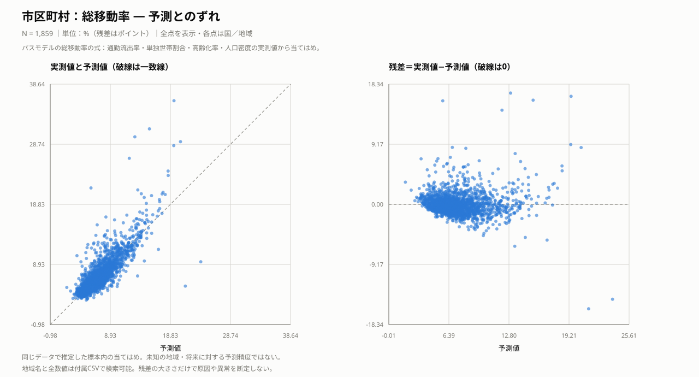
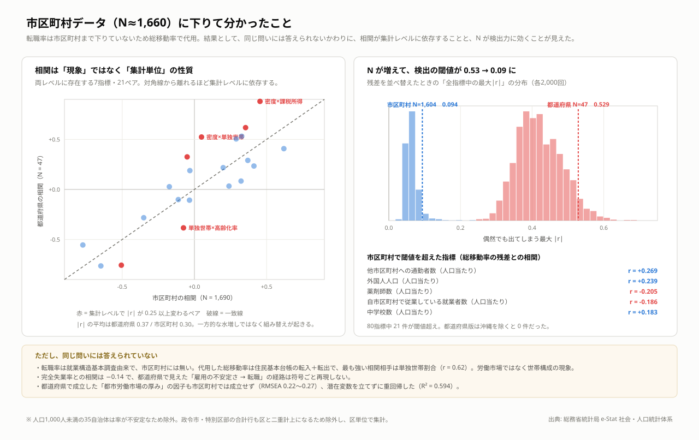

市区町村 — 密度は正反対の経路を同時に走らせる
人口が密集した地域ほど、居住移動が活発になる経路と、抑えられる経路の両方が見られました。単身世帯の多さは移動の多さと関連し、通勤流出を経由する経路は逆向きに働きます。人口密度と移動の関係は、これらを合わせて読む必要があります。
分析手法：パス解析（SEMの一種・観測変数のみ）
複数の関係を同時に推定し、直接の関係と他の変数を経由する間接の関係を分けて調べます。
結果を図で見る

考察
市区町村の分析では、単独世帯割合が高い地域ほど総移動率が高く、高齢化率が高い地域ほど低いという関連が見られました。人口密度には逆向きの経路が併存し、モデル上の総効果は正でした。密度から単独世帯割合を経由する経路と、通勤流出から単独世帯割合を経由する経路を分けることで、単純な相関では見えない、関連が打ち消し合う構造を捉えられました。
この分析は、都道府県より観測数を増やして労働移動を調べる試みから始まりました。しかし、市区町村では転職率が得られず、問いを居住移動へ変更しています。さらに、都道府県で用いたような潜在変数モデルは試した仕様で適合せず、観測変数のパス解析へ切り替えました。集計単位を細かくすることは、単に同じ分析の精度を上げる操作ではなく、測れる現象や指標間の関係そのものを変えることになりました。
採用モデルの当てはまりは良好ですが、残差を見ながら経路を選んだ探索的なモデルであり、因果関係や別データでの再現性は確認できていません。指標の年次も混在し、居住移動の結果を転職の説明へ置き換えることはできません。次は別年次で同じ経路が再現するかを確かめ、都市圏・地方圏や人口規模別、年齢別の転入・転出に分けて比較することで、どの地域や層に当てはまる説明なのかを明らかにしていく必要があります。
具体例で見る：どこまで説明できているか
主要国・身近な地域をあらかじめ指定し、それに加えて各指標で残差の絶対値が最小の地域、正の残差が最大の地域、負の残差が最小の地域を機械的に選びました。同じ地域は1行にまとめています。残差の大小は記述的な比較であり、統計的な異常の判定ではありません。
総移動率（％・差はポイント）
| 国・地域 | 選定理由 | 実測 | 予測 | 実測−予測 | 読み取り |
|---|---|---|---|---|---|
| 新宿区 [13104] | 指定した比較例 | 20.45 | 17.98 | +2.47 | 実測値は予測値を2.47ポイント上回る。 |
| 庄内町 [6428] | 予測に最も近い | 4.65 | 4.64 | +0.01 | 実測値は予測値を0.01ポイント上回る。 |
| 与那国町 [47382] | 予測を最も上回る | 29.96 | 12.98 | +16.98 | 実測値は予測値を16.98ポイント上回る。 |
| 浪江町 [7547] | 予測を最も下回る | 5.36 | 21.30 | -15.94 | 実測値は予測値を15.94ポイント下回る。 |
パスモデルの総移動率の式は、人口密度・高齢化率・単独世帯割合・通勤流出率を使います。ずれは、それらを考慮しても残る差です。住宅の供給や大学・事業所の立地、期間中の出来事は追加検証の候補ですが、このモデルだけから特定の自治体の原因にはできません。区単位のデータを含むため、名称とともに自治体コードも示しています。
補助回帰の区間は合成指標を固定した600回の復元抽出による平均予測の区間です。個別の実測値の予測区間ではなく、区間の外にあるだけで異常とは判定できません。すべて標本内の当てはめです。
ブートストラップによる判定
| パス | 標準化係数 | ブートストラップ95%区間 | 判定 |
|---|---|---|---|
| 単独世帯割合 → 総移動率 | +0.770 | [+0.707, +0.822] | 0を含まない |
| 高齢化率 → 総移動率 | -0.442 | [-0.486, -0.396] | 0を含まない |
| 通勤流出率 → 総移動率 | +0.276 | [+0.209, +0.330] | 0を含まない |
| 人口密度（可住地・対数） → 総移動率 | -0.357 | [-0.448, -0.268] | 0を含まない |
| 通勤流出率 → 単独世帯割合 | -0.657 | [-0.700, -0.610] | 0を含まない |
| 人口密度 → 総移動率（総効果） | +0.311 | [+0.237, +0.375] | 0を含まない |
予測とのずれ
左は実測値と予測値（破線上で一致）、右は予測値と残差です。残差が正なら予測より高く、負なら低い値です。同じ標本に当てはめた結果であり、未知の地域や将来への予測精度ではありません。
総移動率のパス方程式に、説明変数の実測値を入れて計算しています。人口密度だけから全経路をたどった予測とは異なります。単位は％、残差はパーセントポイントです。

表のregionは国・地域名、observedは実測値、predictedは予測値、residualは実測値−予測値です。地域名で検索できます。
総移動率：実測・予測・残差muni_prediction_diagnostics.csv — クリックで表示
region observed predicted residual 中央区 [1101] 15.677304445420386 13.443709276936314 2.2335951684840722 北区 [1102] 10.029437314697908 10.549087835345599 -0.5196505206476907 東区 [1103] 10.616393644064544 11.095290501526096 -0.4788968574615513 白石区 [1104] 12.156080381771266 11.76569312859101 0.3903872531802559 豊平区 [1105] 13.498934352597184 12.500850540259945 0.9980838123372386 南区 [1106] 9.832229613685625 7.941444832330856 1.8907847813547685 西区 [1107] 10.37494002330523 9.296662223622906 1.0782777996823238 厚別区 [1108] 9.215446132383834 7.125167713856993 2.0902784185268404 手稲区 [1109] 7.623918174665617 6.549109136434335 1.0748090382312823 清田区 [1110] 7.031242839991568 5.485782445730752 1.5454603942608154 函館市 [1202] 6.584783206139146 7.449733022884796 -0.8649498167456509 小樽市 [1203] 5.912938562892601 6.5617530359862375 -0.6488144730936369 旭川市 [1204] 5.9607885306926685 7.520149234180314 -1.5593607034876458 室蘭市 [1205] 7.680181684590208 8.374811526758723 -0.6946298421685153 釧路市 [1206] 7.195778856687259 8.601678004220998 -1.4058991475337397 帯広市 [1207] 8.455941794664511 10.0170931552877 -1.5611513606231888 北見市 [1208] 7.091579884775458 8.532516991515125 -1.4409371067396677 夕張市 [1209] 6.746356639921401 8.454428456497117 -1.7080718165757167 岩見沢市 [1210] 6.577812516845453 7.675928502532569 -1.0981159856871159 網走市 [1211] 9.789123885834965 10.631726454250598 -0.842602568415634 留萌市 [1212] 9.884968903076668 8.077285570681193 1.8076833323954755 苫小牧市 [1213] 6.768524669364092 8.646055177171883 -1.8775305078077906 稚内市 [1214] 8.860759493670885 9.48883306362691 -0.6280735699560243 美唄市 [1215] 5.904379443208336 7.931339194287893 -2.0269597510795565 芦別市 [1216] 5.612381037089745 6.757950120521356 -1.145569083431611 江別市 [1217] 7.305069670916097 8.731432342065236 -1.426362671149139 赤平市 [1218] 6.084593572778828 7.377642774221472 -1.2930492014426438 紋別市 [1219] 8.517206477732794 10.83783818901462 -2.320631711281827 士別市 [1220] 7.104622871046229 7.1434454866502675 -0.038822615604038546 名寄市 [1221] 10.043650472880122 9.887398041444534 0.15625243143558798 三笠市 [1222] 7.760044028618602 8.518439350361 -0.7583953217423973 根室市 [1223] 7.842264554032402 8.141349332884412 -0.29908477885200924 千歳市 [1224] 11.778542447742796 10.331108612610038 1.4474338351327578 滝川市 [1225] 8.829248254142133 8.943918553798724 -0.11467029965659137 砂川市 [1226] 7.727660692009717 7.586165265575884 0.14149542643383306 歌志内市 [1227] 6.462848297213622 8.218888351564237 -1.7560400543506152 深川市 [1228] 7.321730590866932 7.5633767222349295 -0.24164613136799762 富良野市 [1229] 9.442519364044028 8.861769468032115 0.5807498960119126 登別市 [1230] 7.229164278344606 7.0127440737602935 0.21642020458431244 恵庭市 [1231] 8.913210118388552 8.541644646754886 0.3715654716336658 伊達市 [1233] 7.142399384773135 7.635895458763461 -0.49349607399032536 北広島市 [1234] 7.628993716258075 6.768239881080582 0.8607538351774933 石狩市 [1235] 6.144234639413401 6.262470164851042 -0.11823552543764038 北斗市 [1236] 6.554543330997431 7.606838207387205 -1.052294876389774 当別町 [1303] 8.376894064712499 9.533904688911186 -1.157010624198687 新篠津村 [1304] 5.970695970695971 6.275555193296027 -0.30485922260005616 松前町 [1331] 6.548642145067034 6.229491990314221 0.31915015475281283 福島町 [1332] 6.00947306098283 6.069756361851381 -0.060283300868550604 知内町 [1333] 7.137192704203013 7.802034487591477 -0.6648417833884643 木古内町 [1334] 6.377551020408164 6.915449529641495 -0.5378985092333313 七飯町 [1337] 6.890452853826597 7.264243956903293 -0.3737911030766963 鹿部町 [1343] 6.470923603192702 6.397278665923594 0.07364493726910837 森町 [1345] 6.486526284788691 7.344007353910703 -0.857481069122012 八雲町 [1346] 9.70097836571586 9.71984352721616 -0.018865161500299266 長万部町 [1347] 9.092844974446338 10.053296394660913 -0.9604514202145751 江差町 [1361] 10.897532919630695 9.627608966238736 1.2699239533919595 上ノ国町 [1362] 6.145656907815146 8.205237518015013 -2.059580610199866 厚沢部町 [1363] 6.944019577852554 7.352640865711202 -0.40862128785864815 乙部町 [1364] 5.664628258770518 6.993707514947664 -1.3290792561771454 奥尻町 [1367] 16.27689429373246 9.626144508397287 6.650749785335174 今金町 [1370] 6.975697569756975 7.59132349436159 -0.6156259246046147 せたな町 [1371] 6.3744427934621095 7.284153944887999 -0.9097111514258893 島牧村 [1391] 5.296950240770466 10.067393627435903 -4.770443386665438 寿都町 [1392] 8.216051730696082 9.863072374496086 -1.6470206438000048 黒松内町 [1393] 12.469337694194603 11.927059316430206 0.5422783777643971 蘭越町 [1394] 11.130859808931348 8.200051850413326 2.930807958518022 ニセコ町 [1395] 15.006305170239598 13.078489439092888 1.9278157311467101 真狩村 [1396] 12.951496388028897 9.837521734415025 3.1139746536138713 留寿都村 [1397] 17.888999008919722 14.886800429648229 3.002198579271493 喜茂別町 [1398] 13.018672199170126 13.194558797727197 -0.17588659855707078 京極町 [1399] 12.103746397694524 8.129025787828924 3.9747206098655994 共和町 [1401] 11.950037285607754 11.82481180320922 0.12522548239853393 岩内町 [1402] 8.347842023274993 8.43393197959461 -0.08608995631961669 泊村 [1403] 10.422535211267606 11.964037049003704 -1.5415018377360976 積丹町 [1405] 7.81433607520564 8.033819450789453 -0.21948337558381326 古平町 [1406] 4.634994206257242 8.508766170230794 -3.873771963973552 仁木町 [1407] 13.667649950835791 7.950558581709478 5.717091369126313 余市町 [1408] 7.956824348236405 7.386362055789778 0.5704622924466269 赤井川村 [1409] 20.576407506702413 14.039368782739569 6.537038723962844 南幌町 [1423] 8.50876087230556 6.461404991144737 2.047355881160823 奈井江町 [1424] 6.909013605442177 7.735264251635863 -0.826250646193686 上砂川町 [1425] 7.627118644067797 9.020126907399895 -1.3930082633320984 由仁町 [1427] 6.229290921139827 7.175235267669973 -0.9459443465301458 長沼町 [1428] 5.544933078393881 6.320419131639753 -0.7754860532458716 栗山町 [1429] 7.0027222378672676 7.384069892291206 -0.38134765442393803 月形町 [1430] 11.676427525622254 9.421884478249787 2.254543047372467 浦臼町 [1431] 5.833861762840837 7.421337366027618 -1.587475603186781 新十津川町 [1432] 4.928559961470541 5.71911157797088 -0.7905516165003386 妹背牛町 [1433] 5.30214424951267 6.07402784342854 -0.7718835939158701 秩父別町 [1434] 6.828597616865261 6.727050061273577 0.10154755559168471 雨竜町 [1436] 5.870841487279844 6.354633226148872 -0.48379173886902826 北竜町 [1437] 5.900816070307595 5.998701854153444 -0.09788578384584845 沼田町 [1438] 7.86275911365261 6.544097638179274 1.318661475473336 鷹栖町 [1452] 6.281912424570633 6.886602049334919 -0.6046896247642861 東神楽町 [1453] 7.017902813299233 6.811210915929463 0.20669189736976978 当麻町 [1454] 5.979517674264949 7.590413200798312 -1.6108955265333629 比布町 [1455] 4.963503649635037 7.7758177408918 -2.8123140912567637 愛別町 [1456] 9.13978494623656 7.394050850261744 1.7457340959748162 上川町 [1457] 11.66936790923825 11.83263887075561 -0.16327096151735887 東川町 [1458] 11.2071947423037 8.340162503475968 2.8670322388277327 美瑛町 [1459] 7.863837121620165 7.708049238404644 0.1557878832155204 上富良野町 [1460] 12.528332989903152 7.925633573421845 4.6026994164813075 中富良野町 [1461] 9.674543022737408 7.5908680571861495 2.0836749655512588 南富良野町 [1462] 11.0912343470483 11.571649427014087 -0.4804150799657876 占冠村 [1463] 35.91194968553459 19.427005403184236 16.48494428235035 和寒町 [1464] 6.234413965087282 6.958464533420047 -0.7240505683327649 剣淵町 [1465] 6.8181818181818175 7.153879938046222 -0.33569811986440445 下川町 [1468] 9.132581100141044 8.888966762841687 0.24361433729935733 美深町 [1469] 9.5626188535724 8.842487133248671 0.7201317203237299 中川町 [1471] 11.74152876280536 12.258822233289406 -0.5172934704840451 幌加内町 [1472] 10.474631751227497 10.353541234638936 0.12109051658856096 増毛町 [1481] 6.0220994475138125 7.838408424835009 -1.8163089773211967 小平町 [1482] 6.794294294294294 9.738268866614273 -2.9439745723199797 苫前町 [1483] 7.764441110277569 8.49699917908856 -0.7325580688109907 羽幌町 [1484] 9.015979814970564 7.903741982638815 1.1122378323317488 初山別村 [1485] 10.149253731343284 9.305494933772248 0.8437587975710361 遠別町 [1486] 8.680248007085916 8.924988885367597 -0.24474087828168045 天塩町 [1487] 12.112036336109009 10.143758179957 1.9682781561520084 猿払村 [1511] 7.029741212823485 13.4232938419512 -6.393552629127715 浜頓別町 [1512] 10.555728034771809 10.424369761011693 0.13135827376011555 中頓別町 [1513] 10.326086956521738 9.613019105937665 0.7130678505840731 枝幸町 [1514] 8.042783719961106 8.88349083014071 -0.8407071101796042 豊富町 [1516] 8.705547652916074 11.794974695367994 -3.08942704245192 礼文町 [1517] 13.69674759505268 9.80816397607443 3.888583618978249 利尻町 [1518] 10.601092896174864 9.7626335179649 0.8384593782099632 利尻富士町 [1519] 12.412831241283124 9.43541901592247 2.977412225360654 幌延町 [1520] 13.320274240940256 13.927499830893698 -0.6072255899534422 美幌町 [1543] 7.576894223555889 7.788488379739621 -0.21159415618373245 津別町 [1544] 6.3224181360201515 7.133931254730089 -0.8115131187099376 斜里町 [1545] 9.493008655949776 9.91512116849862 -0.4221125125488445 清里町 [1546] 6.653782440640531 7.35661693112638 -0.7028344904858495 小清水町 [1547] 6.863196683555965 7.85686825725836 -0.9936715737023949 訓子府町 [1549] 6.969424460431655 6.118639644340959 0.8507848160906955 置戸町 [1550] 8.022021234762091 7.775829991081723 0.24619124368036793 佐呂間町 [1552] 7.253551442100732 8.557355582126583 -1.3038041400258509 遠軽町 [1555] 8.477842003853564 7.970062396934264 0.5077796069192999 湧別町 [1559] 6.8345779015314525 8.254423938808994 -1.4198460372775417 滝上町 [1560] 8.65036231884058 9.270698726020688 -0.6203364071801083 興部町 [1561] 10.72961373390558 9.923562830506327 0.8060509033992531 西興部村 [1562] 12.656903765690378 13.111299510020917 -0.4543957443305384 雄武町 [1563] 7.760971981155468 11.50710972868093 -3.746137747525463 大空町 [1564] 6.458624437199193 7.400386759204171 -0.941762322004978 豊浦町 [1571] 9.710684617588084 10.792758940098048 -1.082074322509964 壮瞥町 [1575] 10.332900994379592 10.064584558031585 0.26831643634800706 白老町 [1578] 7.24743292480954 6.870129344263133 0.3773035805464069 厚真町 [1581] 9.9361249112846 8.623005483178602 1.3131194281059972 洞爺湖町 [1584] 9.119655957500632 8.902244622000069 0.21741133550056269 安平町 [1585] 11.935126143609647 10.199096773245609 1.7360293703640384 むかわ町 [1586] 10.884918986289987 9.277499137794784 1.6074198484952031 日高町 [1601] 10.546588407923698 10.761997530124628 -0.21540912220092956 平取町 [1602] 10.32694475760992 10.252174827662277 0.07476992994764409 新冠町 [1604] 11.434843344641788 11.294354020539998 0.1404893241017895 浦河町 [1607] 12.447689431039088 10.816885694605164 1.6308037364339238 様似町 [1608] 5.851204659782897 7.021520450325848 -1.1703157905429515 えりも町 [1609] 7.980295566502463 7.714105154211532 0.2661904122909302 新ひだか町 [1610] 9.308418606950418 9.40493218428553 -0.09651357733511112 音更町 [1631] 7.469015767401542 9.00286026601041 -1.5338444986088682 士幌町 [1632] 7.943760984182776 10.530050802991026 -2.5862898188082495 上士幌町 [1633] 11.097099621689786 11.902837206230704 -0.8057375845409176 鹿追町 [1634] 9.821428571428571 9.947015605735398 -0.12558703430682705 新得町 [1635] 10.830456114846449 11.030061712199727 -0.19960559735327799 清水町 [1636] 8.840662478583667 9.550335157894484 -0.7096726793108168 芽室町 [1637] 6.431103359027738 8.058657519376643 -1.6275541603489048 中札内村 [1638] 9.233586188856918 11.080351713782843 -1.8467655249259245 更別村 [1639] 7.587548638132295 9.950846846735846 -2.3632982086035508 大樹町 [1641] 11.16597037599696 10.569756565543159 0.5962138104538006 広尾町 [1642] 7.636054421768708 8.247754560572972 -0.611700138804264 幕別町 [1643] 6.786972179350192 8.187409348530046 -1.4004371691798543 池田町 [1644] 6.45106671181849 7.935639255159533 -1.4845725433410424 豊頃町 [1645] 14.489228630993743 8.44660760582475 6.042621025168993 本別町 [1646] 9.113463446907046 8.369052915819468 0.7444105310875777 足寄町 [1647] 8.417338709677418 9.042710786321761 -0.6253720766443429 陸別町 [1648] 8.349056603773585 10.498487742149091 -2.1494311383755065 浦幌町 [1649] 7.2784810126582276 7.668390213904657 -0.3899092012464296 釧路町 [1661] 9.341675734494014 8.08247336586158 1.259202368632435 厚岸町 [1662] 6.687004270896889 8.492748277440748 -1.8057440065438595 浜中町 [1663] 9.168890583301565 9.016170359514133 0.15272022378743166 標茶町 [1664] 8.645406670567583 9.60640223093685 -0.9609955603692661 弟子屈町 [1665] 8.706467661691542 8.937003864301825 -0.23053620261028307 鶴居村 [1667] 9.169407894736842 9.499446807668436 -0.3300389129315935 白糠町 [1668] 5.668999000428388 7.961269316769146 -2.2922703163407574 別海町 [1691] 8.586364938413062 10.792173621860693 -2.2058086834476303 中標津町 [1692] 8.577076874691109 10.59294688115957 -2.015870006468461 標津町 [1693] 7.690704460191747 9.915309424646136 -2.2246049644543886 羅臼町 [1694] 7.827513475509725 8.083886358440106 -0.2563728829303811 青森市 [2201] 5.162952730805428 6.71015525133349 -1.547202520528062 弘前市 [2202] 5.485679173354735 7.8555902110739355 -2.3699110377192003 八戸市 [2203] 5.563976194904222 6.473908290443017 -0.9099320955387951 黒石市 [2204] 4.850795320099908 5.988583248180722 -1.1377879280808143 五所川原市 [2205] 5.153480154985846 6.630210226610229 -1.4767300716243827 十和田市 [2206] 5.467129234148638 7.863339998375932 -2.396210764227294 三沢市 [2207] 10.561797752808989 10.469017621925715 0.09278013088327342 むつ市 [2208] 7.278223462388095 7.529226017474826 -0.25100255508673097 つがる市 [2209] 4.2387002707769215 4.600751886486863 -0.3620516157099418 平川市 [2210] 4.125643034783497 4.2995512775569615 -0.1739082427734644 平内町 [2301] 3.638232271325797 4.736403726109982 -1.0981714547841852 今別町 [2303] 4.580152671755725 5.4301666375498705 -0.8500139657941457 蓬田村 [2304] 3.4100246507806085 4.263633527793356 -0.8536088770127477 外ヶ浜町 [2307] 5.00400320256205 5.0675263861972155 -0.06352318363516574 鰺ヶ沢町 [2321] 4.291593180482069 5.602118950258709 -1.31052576977664 深浦町 [2323] 3.8806408937233576 4.3628435274235535 -0.4822026337001959 西目屋村 [2343] 4.87603305785124 5.531666540254962 -0.6556334824037222 藤崎町 [2361] 4.321678321678322 5.307654249215633 -0.9859759275373117 大鰐町 [2362] 3.7176527760903904 5.116936869220339 -1.3992840931299488 田舎館村 [2367] 4.61389694709214 4.827271809824188 -0.21337486273204753 板柳町 [2381] 3.935071323167732 4.491025377888163 -0.5559540547204311 鶴田町 [2384] 4.038128249566725 4.874758015028439 -0.8366297654617139 中泊町 [2387] 4.502495486885421 4.915710932277491 -0.41321544539207 野辺地町 [2401] 4.9514972585407 7.5905927345301825 -2.6390954759894827 七戸町 [2402] 4.38846867418296 5.651524713979146 -1.2630560397961865 六戸町 [2405] 5.658231447256185 6.235525450294345 -0.5772940030381601 横浜町 [2406] 4.9901185770750995 8.433644401208749 -3.4435258241336495 東北町 [2408] 4.817244611059044 5.769025799450085 -0.951781188391041 六ヶ所村 [2411] 9.493144993768176 14.542805359630211 -5.049660365862035 おいらせ町 [2412] 7.692002223810659 7.697487742117029 -0.005485518306369563 大間町 [2423] 6.280920628092063 7.91113128991336 -1.6302106618212973 東通村 [2424] 7.0772555375472725 9.929679445047805 -2.8524239075005324 風間浦村 [2425] 5.662805662805663 6.275978094055134 -0.6131724312494704 佐井村 [2426] 4.8525798525798525 7.184260799596522 -2.33168094701667 三戸町 [2441] 4.8591308315273185 5.533535256393975 -0.6744044248666565 五戸町 [2442] 4.259077526987243 5.143586398047775 -0.8845088710605324 田子町 [2443] 3.497244595167444 4.954855714420166 -1.457611119252722 南部町 [2445] 4.114921223354958 5.234116690794489 -1.119195467439531 階上町 [2446] 6.352491641458366 10.383155823973503 -4.030664182515137 新郷村 [2450] 4.419621175327829 3.4103012522392095 1.0093199230886194 盛岡市 [3201] 7.122697108747292 9.17229968692509 -2.0496025781777982 宮古市 [3202] 4.7510518934081345 6.331061499393794 -1.5800096059856594 大船渡市 [3203] 4.915936242552793 5.619465349341831 -0.7035291067890377 花巻市 [3205] 4.872756406689886 5.90143072955552 -1.0286743228656343 北上市 [3206] 7.51893731474366 9.115659892945585 -1.5967225782019252 久慈市 [3207] 5.109559200410046 7.207719977187285 -2.098160776777239 遠野市 [3208] 4.609277058086084 5.170457019329691 -0.5611799612436066 一関市 [3209] 4.579877730913227 5.338424451165911 -0.7585467202526841 陸前高田市 [3210] 4.580285614768374 5.961405219962263 -1.3811196051938888 釜石市 [3211] 5.813230109905302 6.882261662996781 -1.0690315530914791 二戸市 [3213] 5.062714741068842 6.778031374545829 -1.7153166334769878 八幡平市 [3214] 4.767246214245653 5.30808122871601 -0.5408350144703569 奥州市 [3215] 4.459266405684707 5.614041969803836 -1.154775564119129 滝沢市 [3216] 7.235403304357415 8.554234860372457 -1.3188315560150423 雫石町 [3301] 4.181393797932644 4.939133789517694 -0.7577399915850496 葛巻町 [3302] 4.64764783676554 5.328763303063585 -0.6811154662980456 岩手町 [3303] 5.181077802807139 6.357580687572303 -1.1765028847651635 紫波町 [3321] 5.4522090319422345 5.421452191562725 0.03075684037950932 矢巾町 [3322] 8.390672782874619 9.378038522891778 -0.9873657400171592 西和賀町 [3366] 4.2069113543678895 4.4659014498573795 -0.2589900954894899 金ケ崎町 [3381] 7.851048349758583 9.258734240870128 -1.4076858911115453 平泉町 [3402] 4.202554202554203 4.498102334834585 -0.29554813228038235 住田町 [3441] 4.037598803674428 5.201409698451223 -1.1638108947767947 大槌町 [3461] 4.698818147159741 6.65580391325414 -1.9569857660943981 山田町 [3482] 5.0526923632164 5.018135606844133 0.034556756372266406 岩泉町 [3483] 4.080071401249522 7.504418662055189 -3.424347260805667 田野畑村 [3484] 5.297783933518006 6.212613754462016 -0.9148298209440098 普代村 [3485] 5.713039686000872 5.611819834589956 0.10121985141091638 軽米町 [3501] 3.832047552801315 5.696991990186424 -1.864944437385109 野田村 [3503] 4.178415790822866 5.756702874710333 -1.5782870838874672 九戸村 [3506] 4.169944925255704 3.7491014084084866 0.42084351684721755 洋野町 [3507] 3.941922789877197 5.1493214863015755 -1.2073986964243786 一戸町 [3524] 5.121192115439026 6.303512703198191 -1.1823205877591647 青葉区 [4101] 12.019720724308057 13.399065285403054 -1.3793445610949977 宮城野区 [4102] 13.4370617624946 12.697969012702087 0.7390927497925137 若林区 [4103] 12.391711839505549 12.715707626276494 -0.3239957867709453 太白区 [4104] 10.009799326828851 10.075271855730016 -0.0654725289011644 泉区 [4105] 8.785803838364355 8.83038662787208 -0.044582789507725096 石巻市 [4202] 4.889502970999721 6.601873015002409 -1.7123700440026886 塩竈市 [4203] 6.25024165796698 5.832659454272636 0.4175822036943444 気仙沼市 [4205] 4.516873889875666 5.024569655929993 -0.5076957660543266 白石市 [4206] 5.139193300402368 5.905700040183763 -0.7665067397813949 名取市 [4207] 8.296571084820533 7.77091954591073 0.5256515389098029 角田市 [4208] 5.742566776228796 5.714631639183702 0.02793513704509376 多賀城市 [4209] 11.201077432335952 9.233596817851048 1.967480614484904 岩沼市 [4211] 8.510095741474837 7.990289219727417 0.5198065217474195 登米市 [4212] 3.971134192633379 4.425749053934425 -0.45461486130104545 栗原市 [4213] 3.8451369840378073 4.165342683104777 -0.3202056990669697 東松島市 [4214] 6.146534653465347 6.861133312612328 -0.7145986591469811 大崎市 [4215] 5.550866554676937 7.260955436011172 -1.7100888813342348 富谷市 [4216] 6.865324487150157 6.098790623262961 0.7665338638871955 蔵王町 [4301] 5.423231953096373 5.3823858855452364 0.0408460675511364 七ヶ宿町 [4302] 7.502061005770816 7.548513401683102 -0.04645239591228556 大河原町 [4321] 8.065416148001889 8.769826668970058 -0.7044105209681693 村田町 [4322] 5.643846780766096 6.204861583185578 -0.5610148024194821 柴田町 [4323] 8.18859926784289 8.658379134912668 -0.4697798670697786 川崎町 [4324] 5.26581002771479 5.119330848071793 0.14647917964299673 丸森町 [4341] 3.958171290294702 4.561710032863651 -0.6035387425689489 亘理町 [4361] 5.614623000761615 5.914423565261448 -0.29980056449983294 山元町 [4362] 5.303229194014177 5.4912754107154855 -0.1880462167013084 松島町 [4401] 5.12999611951882 5.24171996108109 -0.11172384156227011 七ヶ浜町 [4404] 5.725517005640062 5.0095841366125295 0.7159328690275322 利府町 [4406] 7.531439087639071 5.546103944619069 1.9853351430200021 大和町 [4421] 10.046301281361044 11.249787403874269 -1.2034861225132243 大郷町 [4422] 5.949197860962567 4.652108840419018 1.2970890205435488 大衡村 [4424] 6.734067521213214 6.841725779319103 -0.10765825810588847 色麻町 [4444] 5.587416024905784 4.436153122026669 1.1512629028791155 加美町 [4445] 4.849785407725322 5.162119317486498 -0.31233390976117636 涌谷町 [4501] 4.69506632044354 5.377874526072853 -0.6828082056293132 美里町 [4505] 6.001927626390958 5.691184170266792 0.31074345612416643 女川町 [4581] 7.005163511187608 10.618904414250478 -3.6137409030628698 南三陸町 [4606] 4.165941902939642 4.3375887832141995 -0.1716468802745572 秋田市 [5201] 5.177221180067341 7.007297142251983 -1.830075962184642 能代市 [5202] 4.552670010794336 5.464659721175288 -0.9119897103809516 横手市 [5203] 3.811728586107431 3.7568715969541535 0.054856989153277524 大館市 [5204] 4.276858242228059 5.075198009885902 -0.7983397676578434 男鹿市 [5206] 3.7979019481909657 4.645120364145272 -0.8472184159543059 湯沢市 [5207] 3.697700334312633 4.106054179942037 -0.4083538456294038 鹿角市 [5209] 4.252096494144594 4.899330266814526 -0.6472337726699324 由利本荘市 [5210] 3.7708247525174343 5.619873915558549 -1.8490491630411148 潟上市 [5211] 4.739215247353778 6.127920336032259 -1.3887050886784813 大仙市 [5212] 3.901401197929371 4.572079646499441 -0.6706784485700701 北秋田市 [5213] 3.768772005460947 4.861058256909509 -1.0922862514485616 にかほ市 [5214] 4.276330690826727 4.303230117990469 -0.02689942716374194 仙北市 [5215] 3.665952141388512 4.591083130144383 -0.9251309887558707 小坂町 [5303] 5.338158787604614 6.569242679288543 -1.2310838916839284 上小阿仁村 [5327] 5.2434456928838955 4.871103417975206 0.3723422749086893 藤里町 [5346] 3.204661325564458 5.1275859008165146 -1.9229245752520567 三種町 [5348] 3.577981651376147 4.377667764878025 -0.7996861135018776 八峰町 [5349] 3.056194544857049 4.9709600656991135 -1.9147655208420646 五城目町 [5361] 4.08241617609419 4.759737760135774 -0.677321584041584 八郎潟町 [5363] 4.3083462132921175 4.691096222184326 -0.38275000889220845 井川町 [5366] 4.450324753427952 3.9454633158179027 0.5048614376100495 大潟村 [5368] 9.915110356536502 4.987693068093826 4.927417288442676 美郷町 [5434] 3.77207062600321 3.5706020012781297 0.20146862472508031 羽後町 [5463] 3.3062289045719546 3.554018026437205 -0.24778912186525037 東成瀬村 [5464] 7.112253641816624 4.806802189664198 2.3054514521524254 山形市 [6201] 5.873460815365593 7.196088747866565 -1.3226279325009713 米沢市 [6202] 5.956129654691876 7.922619631146332 -1.9664899764544561 鶴岡市 [6203] 4.189975242223574 5.531839173477007 -1.3418639312534326 酒田市 [6204] 4.574975512116179 5.582711891573837 -1.0077363794576577 新庄市 [6205] 6.3407700389345525 6.205125455116734 0.1356445838178182 寒河江市 [6206] 5.091711697998325 4.823737795810111 0.2679739021882144 上山市 [6207] 4.781757540603248 4.5607874667856585 0.2209700738175897 村山市 [6208] 4.605850039907978 3.8374961092443396 0.768353930663638 長井市 [6209] 5.159705159705159 5.627505494096498 -0.46780033439133906 天童市 [6210] 6.0427878546275995 5.977192655320671 0.06559519930692836 東根市 [6211] 7.629484999265185 6.024914305855325 1.60457069340986 尾花沢市 [6212] 4.0062088846182276 3.064221644287567 0.9419872403306604 南陽市 [6213] 4.692122463020295 5.047413544839458 -0.35529108181916236 山辺町 [6301] 4.946043165467626 4.093119216341735 0.8529239491258904 中山町 [6302] 3.8546150167384026 3.6267934160477373 0.22782160069066526 河北町 [6321] 4.705812362424892 4.093083276156575 0.6127290862683168 西川町 [6322] 4.431216931216931 3.6293998205971074 0.8018171106198237 朝日町 [6323] 3.977862331373227 3.294662343666518 0.683199987706709 大江町 [6324] 4.8286604361370715 4.170767567731738 0.6578928684053338 大石田町 [6341] 4.164576016056197 3.995685243414497 0.16889077264169972 金山町 [6361] 3.815817522916223 3.831905624864984 -0.016088101948761313 最上町 [6362] 4.022832291383528 2.9421350330597615 1.0806972583237666 舟形町 [6363] 4.504504504504505 3.3917807764041807 1.112723728100324 真室川町 [6364] 3.99629686776732 3.723419924120144 0.27287694364717563 大蔵村 [6365] 3.3333333333333335 4.165788523603336 -0.8324551902700024 鮭川村 [6366] 3.853511888494124 3.478260307534331 0.37525158095979316 戸沢村 [6367] 3.896103896103896 4.820755761485636 -0.9246518653817395 高畠町 [6381] 4.318032479113865 4.710939387172833 -0.39290690805896844 川西町 [6382] 3.922301083302204 3.7906080518727703 0.13169303142943356 小国町 [6401] 6.241395135383203 5.8923115191079525 0.34908361627525064 白鷹町 [6402] 3.5018818523973163 4.137634525406474 -0.6357526730091578 飯豊町 [6403] 4.094792842173142 4.445975162352744 -0.3511823201796025 三川町 [6426] 5.450135540019974 5.200806081952626 0.24932945806734796 庄内町 [6428] 4.648976180526536 4.643514802209655 0.005461378316881316 遊佐町 [6461] 3.6522168298099857 4.175758501988803 -0.5235416721788169 福島市 [7201] 6.0256487765065065 7.695819669971581 -1.670170893465074 会津若松市 [7202] 6.033868333919759 7.41155506479919 -1.3776867308794305 郡山市 [7203] 6.219573476553373 8.43077311943118 -2.2111996428778067 いわき市 [7204] 4.3068103479554445 6.790863249792075 -2.4840529018366304 白河市 [7205] 6.993080494000176 8.019290591659647 -1.0262100976594715 須賀川市 [7207] 5.109849419896322 6.488397935770883 -1.3785485158745612 喜多方市 [7208] 4.600289528711597 5.206542075117761 -0.6062525464061634 相馬市 [7209] 5.877065187067977 8.038111782002 -2.1610465949340227 二本松市 [7210] 4.803606179752968 5.632204566405916 -0.8285983866529474 田村市 [7211] 4.165908677460433 5.297826967633826 -1.1319182901733935 南相馬市 [7212] 6.312977372969485 8.471614324284564 -2.1586369513150796 伊達市 [7213] 4.8020429665874955 4.527877269074931 0.27416569751256414 本宮市 [7214] 6.34760366182014 6.621412779505349 -0.2738091176852082 桑折町 [7301] 6.182083827960916 5.192380786285719 0.9897030416751971 国見町 [7303] 4.74366893143916 3.9075327794125223 0.8361361520266377 川俣町 [7308] 4.591657903960742 5.343622827975837 -0.7519649240150947 大玉村 [7322] 6.69161846433027 6.270777897518135 0.4208405668121351 鏡石町 [7342] 7.202978310132729 7.082153810510561 0.12082449962216835 天栄村 [7344] 7.774124927480178 5.633860721939865 2.140264205540313 下郷町 [7362] 5.196160267111853 4.603320206899581 0.5928400602122723 只見町 [7367] 6.097560975609756 6.210518871557049 -0.112957895947293 南会津町 [7368] 7.08667315903813 5.464871231823475 1.6218019272146558 北塩原村 [7402] 8.939014202172096 7.550041001893965 1.388973200278131 西会津町 [7405] 4.345414201183432 5.055454946841429 -0.7100407456579978 磐梯町 [7407] 7.267534116153603 4.781107377349757 2.4864267388038455 猪苗代町 [7408] 5.321861057998725 5.332199283625167 -0.010338225626441933 会津坂下町 [7421] 5.2542730533867905 5.338703085787214 -0.0844300324004239 湯川村 [7422] 5.134228187919463 4.636412012275679 0.4978161756437842 柳津町 [7423] 4.681450193593805 5.09043581124239 -0.4089856176485851 三島町 [7444] 5.501130369253956 6.068612071628594 -0.5674817023746375 金山町 [7445] 8.633504859919954 5.553926857288072 3.079578002631882 昭和村 [7446] 6.451612903225806 6.769793723841992 -0.3181808206161856 会津美里町 [7447] 4.106640172213942 4.701008932868425 -0.5943687606544827 西郷村 [7461] 9.036670547147846 9.902351749161738 -0.8656812020138922 泉崎村 [7464] 6.057124097176625 5.812544558433928 0.24457953874269656 中島村 [7465] 6.720202874049027 5.272059269973035 1.4481436040759927 矢吹町 [7466] 7.193431308383412 6.955578097602524 0.23785321078088728 棚倉町 [7481] 5.895691609977324 6.448845969876404 -0.5531543598990796 矢祭町 [7482] 4.295432458697765 4.459418486859885 -0.16398602816212016 塙町 [7483] 4.475131057409539 4.64040588805738 -0.16527483064784132 鮫川村 [7484] 5.305692199578355 4.695795294816994 0.6098969047613609 石川町 [7501] 5.199941409110883 5.390850827258287 -0.19090941814740425 玉川村 [7502] 4.909090909090909 5.224148030959661 -0.3150571218687519 平田村 [7503] 5.381165919282512 5.625900038792507 -0.24473411950999502 浅川町 [7504] 4.37564856451055 6.134863124075954 -1.7592145595654038 古殿町 [7505] 3.7856984724374585 4.0065695903182545 -0.22087111788079605 三春町 [7521] 4.794776119402985 5.224839201562601 -0.43006308215961564 小野町 [7522] 4.478790613718411 6.024512811385785 -1.5457221976673736 広野町 [7541] 11.410284705363056 16.86578151367963 -5.455496808316573 楢葉町 [7542] 9.642689967233578 12.395439245830286 -2.752749278596708 富岡町 [7543] 9.367267585719336 23.846780507864963 -14.479512922145627 川内村 [7544] 7.926556202418271 7.422472691374872 0.5040835110433992 浪江町 [7547] 5.358119190814653 21.29634148779235 -15.938222296977697 新地町 [7561] 5.54734721289456 6.531118684080826 -0.983771471186266 飯舘村 [7564] 4.438526409232136 6.509854596999005 -2.071328187766869 水戸市 [8201] 7.234911222692893 9.449810209454867 -2.214898986761974 日立市 [8202] 5.096579292667297 6.798393483726766 -1.7018141910594693 土浦市 [8203] 9.582470986289565 9.40127754432933 0.18119344196023413 古河市 [8204] 7.1002489056733324 7.234175441302787 -0.13392653562945434 石岡市 [8205] 5.718003345868424 6.887313202933942 -1.1693098570655183 結城市 [8207] 7.092957518979164 7.086265583726165 0.006691935252998604 龍ケ崎市 [8208] 8.335891720170322 8.314172723536874 0.021718996633447674 下妻市 [8210] 8.390577832711369 7.829483031933153 0.5610948007782159 常総市 [8211] 7.748036174004885 6.8538551286077 0.8941810453971852 常陸太田市 [8212] 3.906014227204139 4.5277823949337055 -0.6217681677295666 高萩市 [8214] 5.514377740696185 6.990124827118326 -1.4757470864221407 北茨城市 [8215] 4.860798720447844 5.7525818568596065 -0.891783136411763 笠間市 [8216] 5.87181501233343 6.612438002090047 -0.7406229897566172 取手市 [8217] 7.856657095360435 7.1219682247483505 0.7346888706120849 牛久市 [8219] 7.681937485087091 7.513942108073591 0.16799537701349987 つくば市 [8220] 10.514671814671814 12.886187973805464 -2.37151615913365 ひたちなか市 [8221] 6.451466889108745 8.139266028700083 -1.6877991395913385 鹿嶋市 [8222] 6.956775073983777 7.792165474485374 -0.8353904005015975 潮来市 [8223] 5.017632628028212 7.186460552070966 -2.1688279240427537 守谷市 [8224] 7.686882933709451 7.813134916970678 -0.126251983261227 常陸大宮市 [8225] 4.606323129341538 5.754607275877402 -1.1482841465358637 那珂市 [8226] 5.176143096281528 6.156232215623916 -0.980089119342388 筑西市 [8227] 5.701174301631197 6.05792289564711 -0.3567485940159125 坂東市 [8228] 6.280804710124081 6.445920302949003 -0.16511559282492172 稲敷市 [8229] 5.733275694369393 5.969367655242466 -0.23609196087307271 かすみがうら市 [8230] 7.783320382021909 7.349152508059367 0.43416787396254186 桜川市 [8231] 4.32310349408795 4.85179950377175 -0.5286960096838005 神栖市 [8232] 6.992514874288274 9.3192018107256 -2.3266869364373264 行方市 [8233] 4.516743374067608 5.005271509758547 -0.488528135690939 鉾田市 [8234] 7.647678191546511 7.754716863941941 -0.10703867239543019 つくばみらい市 [8235] 7.726669532549576 9.030762125160638 -1.3040925926110623 小美玉市 [8236] 7.080978507487315 6.8537280635212605 0.22725044396605476 茨城町 [8302] 6.585198047374112 6.27313852323914 0.3120595241349715 大洗町 [8309] 7.63857447771813 7.866402663402903 -0.22782818568477303 城里町 [8310] 4.64196973119494 5.089771980241397 -0.4478022490464575 東海村 [8341] 6.563392833739614 8.376607245812147 -1.8132144120725338 大子町 [8364] 3.8715899696886193 4.464923510892925 -0.5933335412043057 美浦村 [8442] 8.137892059903926 7.715639033863884 0.42225302604004256 阿見町 [8443] 8.873355760127309 9.193656458595749 -0.32030069846844 河内町 [8447] 4.941599281221923 5.190528010064686 -0.2489287288427624 八千代町 [8521] 7.281092875438763 6.8599070247374865 0.4211858507012769 五霞町 [8542] 5.848985251481155 5.695965197593723 0.153020053887432 境町 [8546] 7.800072671484518 6.901432789949885 0.898639881534633 利根町 [8564] 7.129952251903471 4.25107389673458 2.878878355168891 宇都宮市 [9201] 7.054479736491805 9.227213442082384 -2.172733705590579 足利市 [9202] 5.4028774410053195 6.844400374727425 -1.4415229337221058 栃木市 [9203] 5.525580058528428 6.335056510003843 -0.8094764514754154 佐野市 [9204] 5.420929656246681 7.035992606104117 -1.6150629498574363 鹿沼市 [9205] 4.564293018999946 6.02446959528024 -1.4601765762802943 日光市 [9206] 5.8859473173842005 6.739905492028139 -0.8539581746439389 小山市 [9208] 7.830458909117058 8.954044508325849 -1.1235855992087904 真岡市 [9209] 6.454703387665424 7.124603922167591 -0.6699005345021671 大田原市 [9210] 6.296562972976945 9.36530286006301 -3.068739887086066 矢板市 [9211] 5.47863333001295 6.826020955827121 -1.3473876258141715 那須塩原市 [9213] 6.589338384755776 8.254390757145233 -1.6650523723894564 さくら市 [9214] 6.76873857404022 8.00909351178136 -1.2403549377411407 那須烏山市 [9215] 4.445958606592283 5.059928441137444 -0.613969834545161 下野市 [9216] 7.940999196356817 8.8953548944906 -0.9543556981337833 上三川町 [9301] 8.407050865096917 8.303830689693186 0.10322017540373096 益子町 [9342] 4.803370786516854 5.795740398965811 -0.9923696124489574 茂木町 [9343] 4.032258064516129 4.615231485394377 -0.5829734208782478 市貝町 [9344] 5.680484060326921 7.731751591666185 -2.0512675313392643 芳賀町 [9345] 5.267607465695519 5.2247359536867295 0.042871512008789914 壬生町 [9361] 6.525957000524383 8.476489020352622 -1.9505320198282385 野木町 [9364] 7.475169890224779 6.3983774263207565 1.076792463904023 塩谷町 [9384] 4.0118415679869335 4.51719084104585 -0.5053492730589166 高根沢町 [9386] 8.908585331942996 10.942213248104933 -2.0336279161619366 那須町 [9407] 6.747689580959615 6.070848657896442 0.6768409230631729 那珂川町 [9411] 4.4180118946474085 5.141409660943978 -0.7233977662965696 前橋市 [10201] 6.466030627126884 7.8276772931095415 -1.3616466659826578 高崎市 [10202] 6.658706130523647 8.044699331782056 -1.385993201258409 桐生市 [10203] 5.013588970697238 6.424460466345944 -1.4108714956487063 伊勢崎市 [10204] 6.945361271948851 7.739310782705961 -0.79394951075711 太田市 [10205] 7.476409279390339 8.006020158459222 -0.5296108790688834 沼田市 [10206] 5.556831755949646 6.6388133443830535 -1.0819815884334076 館林市 [10207] 6.815806263320076 7.856529334229398 -1.0407230709093218 渋川市 [10208] 5.2434456928838955 5.573154978898823 -0.32970928601492755 藤岡市 [10209] 6.051891927019869 6.472519412424488 -0.42062748540461836 富岡市 [10210] 5.282033117860622 5.778919826602499 -0.4968867087418767 安中市 [10211] 4.448782301543037 5.555141964556222 -1.1063596630131851 みどり市 [10212] 5.787084794718383 7.091833680962895 -1.3047488862445125 榛東村 [10344] 10.83777504441711 6.490900484462088 4.3468745599550225 吉岡町 [10345] 7.2516892637901345 6.990745371860423 0.26094389192971157 上野村 [10366] 10.583580613254204 8.420038681098152 2.1635419321560523 神流町 [10367] 7.081403044341496 4.704053418747109 2.3773496255943867 下仁田町 [10382] 4.157834664927441 4.313783839663536 -0.1559491747360946 南牧村 [10383] 5.956552207428171 5.447331999800858 0.5092202076273127 甘楽町 [10384] 5.271668822768435 5.401198331595048 -0.12952950882661352 中之条町 [10421] 6.8756107776071484 6.773154211280961 0.10245656632618783 長野原町 [10424] 9.759937032664306 7.102166050640111 2.6577709820241946 嬬恋村 [10425] 13.722032403835556 6.550364209489462 7.171668194346093 草津町 [10426] 15.788604459124691 11.07114381888499 4.717460640239702 高山村 [10428] 6.503067484662576 5.304392982163611 1.1986745024989647 東吾妻町 [10429] 5.049332559489263 5.3985956219492826 -0.3492630624600199 片品村 [10443] 5.371690427698574 4.683560216058877 0.688130211639697 川場村 [10444] 4.540867810292633 2.3734778473527793 2.167389962939854 昭和村 [10448] 7.711155952724128 7.441975615429306 0.2691803372948218 みなかみ町 [10449] 6.446856199127049 6.330466857300777 0.11638934182627203 玉村町 [10464] 7.653003930376193 8.648085625698625 -0.9950816953224324 板倉町 [10521] 6.143674318401308 7.22695642073997 -1.0832821023386625 明和町 [10522] 5.3297367686726815 6.814730857264002 -1.4849940885913204 千代田町 [10523] 6.674041297935103 6.268234886903088 0.40580641103201476 大泉町 [10524] 12.19840107555278 11.111484462148539 1.0869166134042416 邑楽町 [10525] 8.682213005712496 5.8717042694139465 2.8105087362985497 西区 [11101] 9.2827180769271 7.646666895218803 1.6360511817082974 北区 [11102] 12.121332433398182 10.208435868905404 1.9128965644927778 大宮区 [11103] 14.179263864828307 10.676974689266887 3.5022891755614207 見沼区 [11104] 8.942676698999788 8.374559807833041 0.5681168911667474 中央区 [11105] 12.653354152321286 10.774620699629466 1.8787334526918205 桜区 [11106] 11.152970399503207 11.483667968357647 -0.3306975688544398 浦和区 [11107] 11.291110914819068 10.206566406075765 1.0845445087433028 南区 [11108] 11.204202407074938 10.445482522072703 0.7587198850022343 緑区 [11109] 9.696312847503172 7.799379756882829 1.896933090620343 岩槻区 [11110] 7.814687653275071 7.046514869268234 0.7681727840068371 川越市 [11201] 7.6903672000113374 8.727993429365483 -1.0376262293541458 熊谷市 [11202] 7.849596966379821 7.305176782221805 0.5444201841580156 川口市 [11203] 9.19290077982112 9.537032990409237 -0.3441322105881177 行田市 [11206] 6.623937113057774 6.635027911108538 -0.011090798050763517 秩父市 [11207] 4.277074739565126 5.430864322672766 -1.1537895831076401 所沢市 [11208] 7.8520962279574915 8.896347155391755 -1.0442509274342635 飯能市 [11209] 6.292728602029167 7.3008050859586575 -1.0080764839294902 加須市 [11210] 6.835508578978379 6.767610612153782 0.0678979668245967 本庄市 [11211] 7.868929320292252 8.461270693384044 -0.5923413730917924 東松山市 [11212] 8.067414745331813 8.942995045809173 -0.8755803004773597 春日部市 [11214] 6.991326157383217 6.907303987599145 0.08402216978407129 狭山市 [11215] 7.57517490773912 7.045683298402831 0.5294916093362891 羽生市 [11216] 7.276147199046484 7.609028806543426 -0.33288160749694207 鴻巣市 [11217] 6.953659283454118 6.612992074316995 0.34066720913712256 深谷市 [11218] 6.28795034408312 6.688728518055679 -0.4007781739725589 上尾市 [11219] 7.646936096598367 7.461141252456524 0.1857948441418431 草加市 [11221] 9.124496015746532 9.444512722386758 -0.3200167066402262 越谷市 [11222] 7.2839711737607615 7.36019738968791 -0.07622621592714829 蕨市 [11223] 14.631526551570564 12.151872945904543 2.479653605666021 戸田市 [11224] 11.811782923910748 12.067020222499313 -0.2552372985885647 入間市 [11225] 6.855074889130616 6.6918275942660586 0.1632472948645578 朝霞市 [11227] 11.524757088626677 10.402700518911699 1.122056569714978 志木市 [11228] 9.663440704896722 8.720376037819335 0.9430646670773868 和光市 [11229] 16.09023442101543 12.819462874225195 3.270771546790236 新座市 [11230] 8.91161695070067 9.065342843199595 -0.1537258924989242 桶川市 [11231] 7.107803483794424 6.835304363012088 0.27249912078233596 久喜市 [11232] 7.456814328105129 6.925177768195024 0.5316365599101056 北本市 [11233] 7.203480712075253 6.348312255677569 0.855168456397684 八潮市 [11234] 10.817361593080989 10.415962385334794 0.401399207746195 富士見市 [11235] 10.682162886670664 10.613851505796056 0.06831138087460786 三郷市 [11237] 8.132843716585064 7.709911800371558 0.4229319162135061 蓮田市 [11238] 7.358740652255731 6.5712805615629755 0.7874600906927558 坂戸市 [11239] 8.975028103420588 9.424413853684973 -0.4493857502643852 幸手市 [11240] 6.825679801643409 6.569857755254798 0.2558220463886105 鶴ヶ島市 [11241] 9.125665845695629 8.305623299886172 0.8200425458094571 日高市 [11242] 6.401313847062297 6.243033639881903 0.15828020718039415 吉川市 [11243] 7.619205480965799 7.166719098239282 0.45248638272651664 ふじみ野市 [11245] 8.992746095898184 8.781556118874342 0.21118997702384235 白岡市 [11246] 7.1158690176322414 6.6526927951731905 0.463176222459051 伊奈町 [11301] 8.001420896052574 7.804887999268369 0.1965328967842046 三芳町 [11324] 7.354790379110147 6.093999062730442 1.2607913163797049 毛呂山町 [11326] 7.777049589613956 10.089604986611048 -2.3125553969970927 越生町 [11327] 6.7026122524867535 6.465277445691523 0.23733480679523034 滑川町 [11341] 8.169256466062661 9.261296605213824 -1.0920401391511625 嵐山町 [11342] 7.58887349953832 8.20896723608037 -0.6200937365420511 小川町 [11343] 5.566890119498689 5.336804739226501 0.23008538027218783 川島町 [11346] 5.479085212361416 4.88515940242741 0.5939258099340057 吉見町 [11347] 5.953461975028377 5.548086466178729 0.405375508849648 鳩山町 [11348] 4.991394148020654 3.402618417131114 1.58877573088954 ときがわ町 [11349] 5.870841487279844 5.340392845828871 0.5304486414509721 横瀬町 [11361] 6.722799631627417 6.13126346332403 0.5915361683033868 皆野町 [11362] 5.046181572426222 5.617995321642745 -0.5718137492165232 長瀞町 [11363] 4.476205434270457 4.40440844528089 0.07179698898956755 小鹿野町 [11365] 3.866414869297287 4.791272472552302 -0.9248576032550155 東秩父村 [11369] 3.5328345802161265 3.969350250212648 -0.43651566999652136 美里町 [11381] 5.5966307908282635 5.463337001601046 0.1332937892272179 神川町 [11383] 7.782741594168822 7.874499148450855 -0.09175755428203303 上里町 [11385] 7.687520471667213 7.477774061428114 0.20974641023909868 寄居町 [11408] 6.683504340962905 7.033356296107681 -0.34985195514477585 宮代町 [11442] 7.947178154223058 8.00568535118025 -0.05850719695719242 杉戸町 [11464] 6.666360589504613 6.150044705945641 0.5163158835589723 松伏町 [11465] 6.522597551782317 5.842291903659807 0.68030564812251 中央区 [12101] 13.3690998004268 13.994813244871748 -0.6257134444449477 花見川区 [12102] 10.62362966479058 9.529294049592245 1.094335615198334 稲毛区 [12103] 10.861222274121673 10.018698327962746 0.8425239461589271 若葉区 [12104] 9.164560067047784 8.581963128733971 0.582596938313813 緑区 [12105] 7.977465572402282 7.306086265981783 0.6713793064204987 美浜区 [12106] 10.045694426567126 8.111793816181846 1.9339006103852796 銚子市 [12202] 4.921646352758122 7.12751755947639 -2.2058712067182675 市川市 [12203] 11.176827296248383 12.285219204311371 -1.1083919080629876 船橋市 [12204] 9.154548940318112 9.621840571474157 -0.467291631156046 館山市 [12205] 7.960233273637324 6.890854909481081 1.0693783641562433 木更津市 [12206] 8.124639185051482 8.62646271433286 -0.5018235292813777 松戸市 [12207] 9.040458038149865 9.89457396827305 -0.8541159301231858 野田市 [12208] 6.767705714546237 6.895739445449612 -0.12803373090337544 茂原市 [12210] 6.402208220262984 7.08041781221602 -0.6782095919530367 成田市 [12211] 13.106033854499282 11.55905466682422 1.5469791876750616 佐倉市 [12212] 6.477056859344212 6.023624448599021 0.45343241074519103 東金市 [12213] 8.787417734059868 9.38981293493618 -0.6023952008763107 旭市 [12215] 6.322395379601846 7.095800926509604 -0.7734055469077576 習志野市 [12216] 10.3606407584021 10.122440456211834 0.23820030219026656 柏市 [12217] 9.01780940237733 8.879037888806481 0.13877151357084827 勝浦市 [12218] 7.70393742194176 9.161934809342744 -1.4579973874009848 市原市 [12219] 6.822278264714589 8.381767671942994 -1.559489407228405 流山市 [12220] 9.387849192235675 8.061528521192777 1.3263206710428985 八千代市 [12221] 8.959224353143808 8.271653291437667 0.6875710617061408 我孫子市 [12222] 7.62429845336095 7.519621433667933 0.10467701969301757 鴨川市 [12223] 8.749048296865173 8.13464801684218 0.6144002800229931 鎌ケ谷市 [12224] 8.999881556529424 7.993482789740846 1.0063987667885774 君津市 [12225] 6.688883299798793 8.15334398628247 -1.4644606864836778 富津市 [12226] 5.8376827367848225 7.3393868878604325 -1.50170415107561 浦安市 [12227] 11.18420284610266 12.146195449030046 -0.9619926029273849 四街道市 [12228] 6.9878868331535715 6.944700553178019 0.043186279975552466 袖ケ浦市 [12229] 7.33080147069949 7.945763515287989 -0.6149620445884985 八街市 [12230] 9.522594588104637 7.230162422928455 2.292432165176182 印西市 [12231] 7.744493470925705 6.179088261592199 1.5654052093335062 白井市 [12232] 7.849818380532965 6.293463301175476 1.5563550793574894 富里市 [12233] 14.070281405628112 9.691066388822879 4.379215016805233 南房総市 [12234] 4.6820877120882995 4.637027502277201 0.045060209811098595 匝瑳市 [12235] 5.541539016038926 5.7587104578733435 -0.2171714418344175 香取市 [12236] 6.046712181099533 5.750730879352149 0.2959813017473838 山武市 [12237] 7.012252591894439 6.499386821981978 0.5128657699124615 いすみ市 [12238] 5.699466935600057 5.442289287775439 0.2571776478246184 大網白里市 [12239] 6.779269827947965 6.580057844779516 0.1992119831684489 酒々井町 [12322] 11.803931326200548 9.909475789501796 1.8944555366987519 栄町 [12329] 6.374847125968203 5.481007736112629 0.8938393898555743 神崎町 [12342] 7.206247781327653 7.135371797940928 0.07087598338672496 多古町 [12347] 5.831967823625801 6.149537049864908 -0.3175692262391072 東庄町 [12349] 4.783057031807727 4.8627487719356335 -0.07969174012790692 九十九里町 [12403] 5.705512710654099 6.518008344819032 -0.8124956341649332 芝山町 [12409] 7.465382299819385 5.97178240874737 1.493599891072015 横芝光町 [12410] 5.308893414799728 5.672082123636639 -0.363188708836911 一宮町 [12421] 13.860419716935091 8.127851777749838 5.7325679391852535 睦沢町 [12422] 4.168575355016033 4.7610539340579585 -0.5924785790419254 長生村 [12423] 6.616926671188485 7.98491859424621 -1.3679919230577253 白子町 [12424] 12.307247494217425 6.160681266133261 6.146566228084164 長柄町 [12426] 5.069789828333066 5.1419613836107985 -0.07217155527773222 長南町 [12427] 3.944020356234097 4.285941991624325 -0.34192163539022813 大多喜町 [12441] 5.484072454715803 5.594203253780759 -0.11013079906495626 御宿町 [12443] 7.36400462962963 4.601274270210331 2.762730359419299 鋸南町 [12463] 5.854169785896092 5.1398562054945796 0.7143135804015124 千代田区 [13101] 20.270211375027237 15.725435097144384 4.544776277882853 中央区 [13102] 19.96809032891507 14.518597472172488 5.449492856742584 港区 [13103] 16.00604974232579 15.194070206240209 0.8119795360855804 新宿区 [13104] 20.45407508002166 17.982680176054693 2.471394903966967 文京区 [13105] 15.92385646603922 15.746217986085568 0.1776384799536519 台東区 [13106] 18.99307676644268 14.868734362444783 4.124342403997897 墨田区 [13107] 16.44924156462538 13.321637379154073 3.1276041854713057 江東区 [13108] 13.223737042746246 12.189889447431213 1.0338475953150326 品川区 [13109] 14.936068568216946 15.210653231625994 -0.27458466340904764 目黒区 [13110] 16.193319118692255 14.157843481214549 2.035475637477706 大田区 [13111] 12.7303958439959 13.704400406409748 -0.9740045624138478 世田谷区 [13112] 12.146748843708366 13.418591624591286 -1.2718427808829205 渋谷区 [13113] 17.339521698170284 17.44911628303789 -0.10959458486760454 中野区 [13114] 17.76123425973128 16.834073408375012 0.9271608513562661 杉並区 [13115] 14.0588099738888 15.749320723313819 -1.6905107494250178 豊島区 [13116] 19.61994814080721 17.020328199635788 2.5996199411714223 北区 [13117] 15.454763884017469 13.14761361578724 2.307150268230229 荒川区 [13118] 15.083813962695364 12.46013175007229 2.623682212623075 板橋区 [13119] 13.356387995453556 13.769913656292264 -0.4135256608387081 練馬区 [13120] 11.606497686770958 12.435238337803419 -0.8287406510324615 足立区 [13121] 10.767518860737017 11.543962634341646 -0.7764437736046297 葛飾区 [13122] 10.991326109347202 10.712614613200627 0.27871149614657575 江戸川区 [13123] 10.681978747639029 11.535880192640892 -0.8539014450018634 八王子市 [13201] 7.981641366308759 9.794111511458986 -1.8124701451502272 立川市 [13202] 11.093274346735962 11.587359195881035 -0.49408484914507333 武蔵野市 [13203] 13.243579177756462 13.433154371811419 -0.1895751940549566 三鷹市 [13204] 11.37183262728547 12.64988823522059 -1.278055607935121 青梅市 [13205] 7.060144843344565 7.3205986446776725 -0.26045380133310747 府中市 [13206] 9.962911593192285 11.510267862761609 -1.547356269569324 昭島市 [13207] 9.333921405839217 9.659215556263964 -0.32529415042474774 調布市 [13208] 10.775941307217945 12.751278494854997 -1.9753371876370522 町田市 [13209] 7.771113745728433 8.926820636784548 -1.1557068910561146 小金井市 [13210] 12.019269177305192 13.324160289828402 -1.3048911125232099 小平市 [13211] 9.999542680603051 10.975137662801684 -0.9755949821986327 日野市 [13212] 9.719488319529704 11.384046844643436 -1.6645585251137316 東村山市 [13213] 8.398168582627887 9.361476217091145 -0.9633076344632574 国分寺市 [13214] 11.901158301158302 12.840159476501874 -0.9390011753435719 国立市 [13215] 11.724654635313293 12.481263128602341 -0.7566084932890487 福生市 [13218] 12.297196988441554 11.90208347928975 0.39511350915180365 狛江市 [13219] 11.238543291731668 12.500421616659587 -1.2618783249279186 東大和市 [13220] 7.334462798249329 7.8821505237262075 -0.5476877254768784 清瀬市 [13221] 9.443948220927595 10.221536340011296 -0.7775881190837008 東久留米市 [13222] 8.038684719535784 8.2993698978278 -0.2606851782920163 武蔵村山市 [13223] 7.587416544076044 7.988994334782274 -0.4015777907062299 多摩市 [13224] 8.8632127711299 9.051541324214874 -0.18832855308497365 稲城市 [13225] 8.775927424507007 9.793382766443496 -1.0174553419364898 羽村市 [13227] 9.625688208993829 8.870380759499026 0.7553074494948024 あきる野市 [13228] 6.7727525112311335 6.480921706484709 0.2918308047464242 西東京市 [13229] 9.688477296419308 10.621693202760154 -0.9332159063408465 瑞穂町 [13303] 8.018617436666355 7.175642111045678 0.8429753256206771 日の出町 [13305] 6.730589627046883 4.313612415113913 2.41697721193297 檜原村 [13307] 8.268330733229329 5.693800428963572 2.574530304265757 奥多摩町 [13308] 7.479964381121995 5.433852684847467 2.0461116962745285 大島町 [13361] 13.415529135476294 11.145122782183545 2.270406353292749 新島村 [13363] 10.973084886128364 7.350897505875103 3.6221873802532603 神津島村 [13364] 11.629245826137018 7.299661956561381 4.329583869575637 三宅村 [13381] 16.463138851198554 13.209341185903265 3.2537976652952896 八丈町 [13401] 11.099736765136004 10.028902761090336 1.0708340040456683 小笠原村 [13421] 24.318910256410255 18.457690824703235 5.8612194317070205 鶴見区 [14101] 11.350343135764174 12.543995662391096 -1.1936525266269218 神奈川区 [14102] 13.591802531810345 13.971549874975876 -0.3797473431655316 西区 [14103] 15.851131954646478 14.608455904785213 1.2426760498612648 中区 [14104] 14.24249835871426 14.081609813015199 0.16088854569906097 南区 [14105] 12.00133608527016 12.53356388065616 -0.5322277953860013 保土ケ谷区 [14106] 10.100342367764153 10.907360629194967 -0.8070182614308141 磯子区 [14107] 9.527979418549878 10.088276774021907 -0.560297355472029 金沢区 [14108] 7.710576066746872 8.04464975643392 -0.334073689687048 港北区 [14109] 12.045007189423869 12.35246178805891 -0.3074545986350419 戸塚区 [14110] 7.790390463100774 7.953776530639525 -0.16338606753875062 港南区 [14111] 7.771351829346146 7.893503206617744 -0.12215137727159853 旭区 [14112] 7.468775056415683 7.714827830106765 -0.24605277369108247 緑区 [14113] 9.133720353826329 8.821344219181965 0.31237613464436365 瀬谷区 [14114] 7.973318218038133 7.707097070443584 0.26622114759454885 栄区 [14115] 8.31020110537524 7.219454430596762 1.0907466747784786 泉区 [14116] 7.437639021290117 6.4036766107469365 1.0339624105431806 青葉区 [14117] 9.27384675527756 8.492936286513718 0.7809104687638424 都筑区 [14118] 9.598334854439456 7.733662290673811 1.8646725637656445 川崎市 [14130] 12.122730094499463 12.5003363186159 -0.3776062241164375 川崎区 [14131] 12.016486593953491 14.185029884885179 -2.1685432909316873 幸区 [14132] 11.585282138117249 10.84387791797228 0.7414042201449682 中原区 [14133] 14.526544092275842 14.32239683676713 0.20414725550871182 高津区 [14134] 12.677780795578492 12.642135470477989 0.035645325100503555 多摩区 [14135] 13.635469242631547 13.936745779957956 -0.3012765373264088 宮前区 [14136] 9.837395250353255 9.67790151518114 0.15949373517211463 麻生区 [14137] 9.655234413628804 9.357027422378536 0.29820699125026806 相模原市 [14150] 8.441661758507399 9.947198120153205 -1.505536361645806 緑区 [14151] 7.70998721135053 8.74003400217587 -1.03004679082534 中央区 [14152] 8.196805732320074 9.6038606421871 -1.4070549098670249 南区 [14153] 9.115326687226569 10.699957453278206 -1.584630766051637 横須賀市 [14201] 6.853348318519632 5.948711257164817 0.9046370613548156 平塚市 [14203] 6.55664220090509 7.832927209378392 -1.2762850084733017 鎌倉市 [14204] 7.45409230240353 6.818591117262385 0.6355011851411447 藤沢市 [14205] 7.833884967901835 8.78139585216254 -0.9475108842607041 小田原市 [14206] 6.942895143298439 7.512669803404739 -0.5697746601063001 茅ヶ崎市 [14207] 6.585942711597162 7.003522862435611 -0.41758015083844935 逗子市 [14208] 6.701022013938125 6.828418402760783 -0.1273963888226577 三浦市 [14210] 5.6598564329099945 4.920721340667986 0.7391350922420088 秦野市 [14211] 6.794977707428125 7.8739795219921165 -1.0790018145639912 厚木市 [14212] 8.156241048410198 9.17024950004619 -1.0140084516359913 大和市 [14213] 9.091353001017294 10.369747860732646 -1.2783948597153518 伊勢原市 [14214] 8.66394165264086 9.76885451279074 -1.1049128601498808 海老名市 [14215] 8.816237221428928 8.400752403730316 0.4154848176986121 座間市 [14216] 8.665665795349758 9.53879964096198 -0.8731338456122213 南足柄市 [14217] 6.2344388009162435 5.918788831724463 0.3156499691917807 綾瀬市 [14218] 8.243996569468267 7.4262641010217685 0.8177324684464988 葉山町 [14301] 6.352748876245561 5.4136231126420125 0.9391257636035482 寒川町 [14321] 7.259628140498398 7.180685669584639 0.07894247091375917 大磯町 [14341] 6.609566394810592 5.168040191299718 1.4415262035108745 二宮町 [14342] 6.288528178004742 5.822203799389652 0.4663243786150897 中井町 [14361] 5.471295360071902 5.117518693850492 0.35377666622140946 大井町 [14362] 7.78147595546884 6.999349649303297 0.7821263061655435 松田町 [14363] 11.718974949611288 8.090144216765623 3.6288307328456657 山北町 [14364] 4.6097376659829425 5.7282571833230636 -1.118519517340121 開成町 [14366] 6.93202628460627 6.761258733577173 0.1707675510290967 箱根町 [14382] 21.209044762344252 13.461594325073209 7.747450437271043 真鶴町 [14383] 5.6767892568289335 5.508415295790217 0.16837396103871693 湯河原町 [14384] 8.648578699909416 6.774178104415994 1.8744005954934222 愛川町 [14401] 7.565330014983367 7.474242949354951 0.09108706562841551 清川村 [14402] 7.437407952871871 6.082901638868885 1.354506314002986 北区 [15101] 5.446511296415081 6.783214754425681 -1.3367034580106 東区 [15102] 7.067024374584394 7.702176187403695 -0.6351518128193012 中央区 [15103] 10.48587255363547 11.130525383046404 -0.6446528294109335 江南区 [15104] 6.729857819905213 5.758018213260631 0.9718396066445818 秋葉区 [15105] 4.678853153287239 5.706384092002188 -1.027530938714949 南区 [15106] 4.898848723172407 5.131744663372399 -0.2328959401999917 西区 [15107] 6.554319414708471 8.902048172277805 -2.3477287575693344 西蒲区 [15108] 4.072897445165218 4.433815718117541 -0.3609182729523228 長岡市 [15202] 4.641915529595199 6.338995966060777 -1.697080436465578 三条市 [15204] 3.9998683893044378 4.681813554274839 -0.6819451649704016 柏崎市 [15205] 4.809950535969666 6.6385872395965855 -1.8286367036269198 新発田市 [15206] 4.779824819747592 6.124035631879421 -1.3442108121318288 小千谷市 [15208] 4.499723943316361 4.687476910315365 -0.18775296699900323 加茂市 [15209] 3.401304040865485 5.124472291873584 -1.723168251008099 十日町市 [15210] 3.719972837619896 3.732281996331469 -0.012309158711572898 見附市 [15211] 4.0619006331940835 5.105988193544782 -1.0440875603506985 村上市 [15212] 3.821132131907575 4.958379899062914 -1.1372477671553387 燕市 [15213] 4.513070389148614 5.32571618980938 -0.812645800660766 糸魚川市 [15216] 4.329539181409532 4.768646806760277 -0.43910762535074443 妙高市 [15217] 4.940028461069323 5.549058256549042 -0.609029795479719 五泉市 [15218] 3.31363536878967 5.183720302477907 -1.8700849336882368 上越市 [15222] 4.553868321879849 5.798152960692517 -1.244284638812668 阿賀野市 [15223] 3.635899399974466 4.588124454889387 -0.9522250549149209 佐渡市 [15224] 4.405130657131571 5.1072613951399966 -0.7021307380084254 魚沼市 [15225] 4.169485271508518 4.92004448980645 -0.7505592182979326 南魚沼市 [15226] 4.956468611577821 5.536100479377175 -0.5796318677993533 胎内市 [15227] 4.893434362285842 5.745204309235746 -0.8517699469499034 聖籠町 [15307] 7.4002574002574 7.792360516394044 -0.39210311613664395 弥彦村 [15342] 4.287231218476241 5.308944130340683 -1.0217129118644417 田上町 [15361] 3.761459219355449 5.0988723460419045 -1.3374131266864557 阿賀町 [15385] 3.7470984856858625 5.507257591911462 -1.7601591062255997 出雲崎町 [15405] 4.6062789500772 5.395920315368649 -0.7896413652914491 湯沢町 [15461] 12.518142235123369 9.9600813356905 2.558060899432869 津南町 [15482] 3.80794701986755 3.653674972109387 0.15427204775816294 刈羽村 [15504] 6.774040738986263 6.977669183686872 -0.20362844470060892 関川村 [15581] 3.98635685354935 4.949447110045031 -0.9630902564956809 富山市 [16201] 5.167216915124691 6.972695572257604 -1.8054786571329124 高岡市 [16202] 5.243680535064424 6.033299058873393 -0.7896185238089686 魚津市 [16204] 5.425071859543724 7.033973576747526 -1.6089017172038016 氷見市 [16205] 3.588113927953139 3.869982863274799 -0.2818689353216599 滑川市 [16206] 5.47262150266244 6.542951529660831 -1.0703300269983913 黒部市 [16207] 5.7208530200485255 7.015301032935016 -1.2944480128864901 砺波市 [16208] 6.149033723272057 6.823974956942754 -0.6749412336706975 小矢部市 [16209] 4.340022256524392 4.301660635507961 0.03836162101643126 南砺市 [16210] 3.952594907859608 3.91224896649366 0.04034594136594771 射水市 [16211] 5.18939057926018 6.12453764077368 -0.9351470615134998 舟橋村 [16321] 7.032900694234832 6.672513750107978 0.3603869441268541 上市町 [16322] 4.357613764270783 5.759128698822691 -1.4015149345519076 立山町 [16323] 4.564913147279164 6.4391996627990356 -1.8742865155198718 入善町 [16342] 4.578540618260244 5.584908399326667 -1.006367781066423 朝日町 [16343] 4.376747324785501 5.440635881361812 -1.0638885565763117 金沢市 [17201] 6.898761743353425 9.074220535681132 -2.1754587923277064 七尾市 [17202] 6.137634408602151 5.777289432940243 0.36034497566190726 小松市 [17203] 6.417634510547524 6.758738402413906 -0.341103891866382 輪島市 [17204] 10.880160550458717 4.891268865740152 5.988891684718565 珠洲市 [17205] 10.374538420960084 3.4285223575756696 6.946016063384414 加賀市 [17206] 5.056480235969078 6.119062157970046 -1.0625819220009687 羽咋市 [17207] 5.442941026295634 5.140443173009346 0.30249785328628853 かほく市 [17209] 6.19060773480663 5.714151544159959 0.47645619064667066 白山市 [17210] 5.248658064057445 6.124743866192516 -0.876085802135071 能美市 [17211] 6.24698213423467 7.288555708218523 -1.041573573983853 野々市市 [17212] 11.455947822582123 13.01235519829766 -1.556407375715537 川北町 [17324] 4.5191193511008105 5.614181351561759 -1.0950620004609481 津幡町 [17361] 6.004637403054289 6.922296036379506 -0.9176586333252166 内灘町 [17365] 6.312836100070143 9.037107044324133 -2.7242709442539894 志賀町 [17384] 5.366573911068204 4.565172787584965 0.801401123483239 宝達志水町 [17386] 5.523600067670445 4.878120645414905 0.6454794222555407 中能登町 [17407] 4.658479036844334 5.040943914204259 -0.38246487735992574 穴水町 [17461] 9.077747212972346 5.769468404081437 3.3082788088909094 能登町 [17463] 6.601074593538484 3.725143701308163 2.8759308922303206 福井市 [18201] 5.202949269571584 6.886184568703435 -1.6832352991318507 敦賀市 [18202] 6.230964060145555 7.4213525602187955 -1.1903885000732402 小浜市 [18204] 5.534654897988714 7.812627104655117 -2.2779722066664023 大野市 [18205] 4.178263639716978 4.280271605980229 -0.10200796626325026 勝山市 [18206] 3.827887537993921 4.289243606167284 -0.4613560681733633 鯖江市 [18207] 5.206289713331967 5.728761948554016 -0.5224722352220494 あわら市 [18208] 5.211738766821258 6.7214191181574865 -1.509680351336229 越前市 [18209] 6.06083215200577 5.940866619414961 0.11996553259080933 坂井市 [18210] 5.023182177993894 6.012866084360013 -0.9896839063661194 永平寺町 [18322] 5.3275901156200405 9.193127961472431 -3.8655378458523906 池田町 [18382] 4.34583714547118 6.840573570232182 -2.494736424761002 南越前町 [18404] 3.651566469093988 4.623641664556496 -0.9720751954625082 越前町 [18423] 4.117557792503415 4.216678493370091 -0.09912070086667679 美浜町 [18442] 6.07422775472568 7.556827720619207 -1.4825999658935274 高浜町 [18481] 5.427493713327745 9.080307376615112 -3.6528136632873665 おおい町 [18483] 5.9106887124072385 7.825791132741948 -1.9151024203347093 若狭町 [18501] 4.118616144975288 4.515349649788796 -0.39673350481350766 甲府市 [19201] 7.937449007342942 9.07159988354154 -1.1341508761985972 富士吉田市 [19202] 6.489949098438444 5.6826168851863965 0.8073322132520477 都留市 [19204] 8.713037988003789 10.563510238767101 -1.8504722507633122 山梨市 [19205] 5.099357994497096 5.887284534881431 -0.7879265403843352 大月市 [19206] 5.2922961433799385 5.234262907198325 0.05803323618161382 韮崎市 [19207] 7.385423411756241 7.271221785539679 0.11420162621656171 南アルプス市 [19208] 5.401109778880741 5.79065280890406 -0.3895430300233187 北杜市 [19209] 6.630674305861612 5.449696940648181 1.1809773652134314 甲斐市 [19210] 7.565798088254551 8.382770788450145 -0.8169727001955938 笛吹市 [19211] 6.540825941935774 7.137926373550858 -0.5971004316150843 上野原市 [19212] 5.7384006035458315 6.497644399793839 -0.7592437962480076 甲州市 [19213] 4.869493448880635 4.566997603470119 0.3024958454105162 中央市 [19214] 9.579370526522208 10.39238610479467 -0.8130155782724628 市川三郷町 [19346] 4.849660523763336 5.574744512296858 -0.7250839885335223 早川町 [19364] 11.175785797438882 12.832627182329915 -1.6568413848910328 身延町 [19365] 5.580241810478454 5.993983431423027 -0.413741620944573 南部町 [19366] 4.774575018477457 4.780678256822262 -0.006103238344804751 富士川町 [19368] 5.7087462300732446 6.61464215082559 -0.9058959207523456 昭和町 [19384] 11.8015616963576 11.722714500209078 0.07884719614852287 道志村 [19422] 7.289595758780649 5.359716501183618 1.9298792575970314 西桂町 [19423] 6.661522633744855 5.139610559278841 1.5219120744660142 忍野村 [19424] 11.533326486597517 10.337625376720787 1.1957011098767296 山中湖村 [19425] 11.319134318103744 6.3553932143019445 4.9637411038018 鳴沢村 [19429] 6.474820143884892 5.475202537338219 0.9996176065466731 富士河口湖町 [19430] 8.94338926793288 8.516937823590846 0.4264514443420335 長野市 [20201] 5.531853870146632 6.787596426924301 -1.255742556777669 松本市 [20202] 7.30508177744745 8.637208944615736 -1.3321271671682862 上田市 [20203] 5.671109937970173 6.621699122606179 -0.950589184636006 岡谷市 [20204] 5.70272654888205 5.395007410299984 0.30771913858206634 飯田市 [20205] 5.832912032355915 5.675151779954371 0.1577602524015438 諏訪市 [20206] 7.617906179692592 7.828943399719233 -0.2110372200266406 須坂市 [20207] 5.176097173899774 5.500942602825265 -0.3248454289254905 小諸市 [20208] 6.887606671838635 7.001517315461595 -0.11391064362296 伊那市 [20209] 6.5299456094667265 6.255154625989292 0.2747909834774349 駒ヶ根市 [20210] 6.442138866719873 7.327597582323033 -0.8854587156031606 中野市 [20211] 5.507328874341824 5.490875194346652 0.016453679995172443 大町市 [20212] 6.114382830718154 6.564206564444506 -0.449823733726352 飯山市 [20213] 5.528386136508612 4.687965960193747 0.8404201763148649 茅野市 [20214] 6.939666333740243 8.018651149566853 -1.07898481582661 塩尻市 [20215] 7.162027451882524 8.363064698778695 -1.2010372468961705 佐久市 [20217] 6.827890737317724 6.938892715759112 -0.11100197844138737 千曲市 [20218] 5.24768459512278 4.736305614386638 0.5113789807361417 東御市 [20219] 5.974169486843014 5.315395517775348 0.6587739690676662 安曇野市 [20220] 5.85388242166312 5.6272289508396005 0.2266534708235195 小海町 [20303] 7.650142993326978 5.859408962790957 1.7907340305360204 川上村 [20304] 21.53676673092812 5.739905493981006 15.796861236947116 南牧村 [20305] 15.451797111185758 6.76115742134237 8.690639689843389 佐久穂町 [20309] 5.079084389429217 5.22494135725636 -0.14585696782714308 軽井沢町 [20321] 12.41265171018757 7.57442356580296 4.838228144384609 御代田町 [20323] 11.705426356589149 9.716811088872873 1.9886152677162752 立科町 [20324] 5.573868744381181 6.088730607396853 -0.514861863015672 青木村 [20349] 4.429760156632404 4.308868521460248 0.12089163517215606 長和町 [20350] 5.023576351106275 5.338921927593432 -0.31534557648715733 下諏訪町 [20361] 5.657823497563617 5.9315849546707895 -0.2737614571071729 富士見町 [20362] 6.160062380378536 6.178705334889745 -0.018642954511209453 原村 [20363] 6.489493201483312 5.168575375412583 1.3209178260707288 辰野町 [20382] 5.308456882669777 5.330189191687836 -0.021732309018059226 箕輪町 [20383] 7.073440767622094 6.722907119767337 0.35053364785475694 飯島町 [20384] 5.427056301478054 5.775028906560243 -0.3479726050821883 南箕輪村 [20385] 8.373310074138683 10.131079890663052 -1.7577698165243696 中川村 [20386] 4.6103896103896105 4.9509913109836035 -0.340601700593993 宮田村 [20388] 5.5129818140226465 6.938498720299915 -1.4255169062772683 松川町 [20402] 5.126556850140618 4.3933353635948915 0.7332214865457267 高森町 [20403] 5.878153260352213 5.226766772098369 0.651386488253844 阿南町 [20404] 6.614093106079879 5.106089332921249 1.50800377315863 阿智村 [20407] 5.908096280087528 5.423116297466375 0.4849799826211525 下條村 [20411] 5.320081847413037 4.321813801812315 0.9982680456007218 天龍村 [20413] 8.560311284046692 6.004360512334403 2.55595077171229 泰阜村 [20414] 7.713884992987377 6.387793681428251 1.326091311559126 喬木村 [20415] 5.197010869565218 4.336643867223237 0.8603670023419809 豊丘村 [20416] 5.35302261190586 4.094718707743636 1.258303904162224 大鹿村 [20417] 7.373271889400922 7.7526374789462436 -0.37936558954532185 上松町 [20422] 6.259541984732825 7.415612408645935 -1.1560704239131105 南木曽町 [20423] 6.205770277626565 6.065327971339359 0.14044230628720555 木祖村 [20425] 3.7758346581876 4.15407839981256 -0.37824374162496 大桑村 [20430] 6.238303181534623 6.2307740537337315 0.007529127800891544 木曽町 [20432] 6.223897320973821 6.576027790407025 -0.35213046943320414 麻績村 [20446] 3.731343283582089 4.4536755295244586 -0.7223322459423693 生坂村 [20448] 8.04953560371517 6.279665738047129 1.769869865668042 山形村 [20450] 5.998114541597926 5.746537600884914 0.2515769407130115 朝日村 [20451] 5.794041754632888 4.165043071495069 1.6289986831378185 筑北村 [20452] 5.809859154929577 4.521445797637975 1.288413357291602 池田町 [20481] 5.486065393899495 4.569948272320843 0.9161171215786519 松川村 [20482] 7.441956882255389 6.031927582708692 1.4100292995466974 白馬村 [20485] 12.115485564304462 7.87751176392521 4.237973800379252 小谷村 [20486] 11.170401992173604 7.956219743803932 3.2141822483696716 坂城町 [20521] 6.596020761245675 5.316002025796588 1.2800187354490866 小布施町 [20541] 4.878492764175844 3.45127243825522 1.427220325920624 高山村 [20543] 4.818337751442383 4.27456793991688 0.543769811525503 山ノ内町 [20561] 6.411969008816458 4.954149465311916 1.4578195435045416 木島平村 [20562] 5.924002832192589 4.61997255510431 1.3040302770882795 野沢温泉村 [20563] 8.626465661641541 4.283961321762828 4.3425043398787135 信濃町 [20583] 6.283068783068783 4.044879441947343 2.2381893411214406 小川村 [20588] 6.46041856232939 6.2387582782813755 0.2216602840480144 飯綱町 [20590] 4.925053533190578 3.599863176047309 1.3251903571432688 栄村 [20602] 7.179487179487179 4.366089452452842 2.813397727034337 岐阜市 [21201] 6.205794145723041 8.06534615794498 -1.8595520122219389 大垣市 [21202] 6.39402977465076 6.860243805907747 -0.4662140312569871 高山市 [21203] 5.607012099022865 5.796444317225934 -0.189432218203069 多治見市 [21204] 5.658365699489757 5.353124946960138 0.3052407525296186 関市 [21205] 5.885857262004051 6.409649042517378 -0.523791780513327 中津川市 [21206] 5.719725300877133 5.931675384078143 -0.2119500832010095 美濃市 [21207] 5.471012584908641 5.355148321837669 0.11586426307097142 瑞浪市 [21208] 6.496782788627796 7.378827660216268 -0.8820448715884721 羽島市 [21209] 7.14854849136311 6.827735294427319 0.32081319693579147 恵那市 [21210] 5.306813740391714 5.591764978818642 -0.2849512384269275 美濃加茂市 [21211] 7.434673148710826 8.414594993916696 -0.9799218452058698 土岐市 [21212] 5.440333314897774 5.471198999286334 -0.030865684388559522 各務原市 [21213] 6.577897985367037 6.373018794556259 0.20487919081077788 可児市 [21214] 6.8000280620170575 6.748624006561771 0.05140405545528637 山県市 [21215] 4.929947107037591 5.246974842227258 -0.31702773518966776 瑞穂市 [21216] 8.180253092664572 9.581701920128289 -1.4014488274637174 飛騨市 [21217] 5.296668819784073 3.642387119272725 1.6542817005113482 本巣市 [21218] 6.455830925954083 5.94460415834722 0.5112267676068631 郡上市 [21219] 4.407866836301951 4.027915692148358 0.3799511441535923 下呂市 [21220] 5.550752204738025 4.53818438423782 1.0125678205002053 海津市 [21221] 4.951594984923028 4.906091075270645 0.045503909652382823 岐南町 [21302] 10.392171736327088 9.319442991044701 1.0727287452823866 笠松町 [21303] 9.21251546108388 7.750754656445993 1.461760804637887 養老町 [21341] 4.967078664664434 4.852896903760498 0.11418176090393573 垂井町 [21361] 5.313446749009556 5.9664439532278175 -0.6529972042182619 関ケ原町 [21362] 4.808475957620212 5.183702181802769 -0.3752262241825566 神戸町 [21381] 5.485996705107084 5.902008977074848 -0.41601227196776414 輪之内町 [21382] 6.51551837992516 8.261274826992 -1.7457564470668405 安八町 [21383] 6.61317100166021 6.181107712292864 0.4320632893673464 揖斐川町 [21401] 4.631567648795149 4.950715729040766 -0.31914808024561747 大野町 [21403] 5.221688656813837 4.743688752070985 0.4779999047428527 池田町 [21404] 5.369306798450648 6.463284077080115 -1.0939772786294677 北方町 [21421] 9.27940542869453 8.7005627762715 0.5788426524230292 坂祝町 [21501] 9.220716360116167 8.849241161069568 0.37147519904659987 富加町 [21502] 6.5261726716519375 5.7677087874621185 0.758463884189819 川辺町 [21503] 5.839565618276816 6.140809518000826 -0.30124389972401033 七宗町 [21504] 4.268675455116133 4.182827110955669 0.08584834416046405 八百津町 [21505] 4.076665652570733 4.731395984344838 -0.6547303317741049 白川町 [21506] 4.787387908591264 3.466334167077517 1.3210537415137473 東白川村 [21507] 4.724017901541522 3.5690545099344235 1.1549633916070987 御嵩町 [21521] 6.557096387604862 6.349948061812354 0.20714832579250775 白川村 [21604] 7.82312925170068 8.61734129962651 -0.7942120479258303 葵区 [22101] 7.05475466533352 6.835010965938775 0.21974369939474503 駿河区 [22102] 9.157687349500158 9.11372014674583 0.04396720275432742 清水区 [22103] 5.379610710829121 6.057590542286958 -0.6779798314578365 浜松市 [22130] 5.932590404171833 7.787708765526536 -1.8551183613547026 天竜区 [22140] 5.087542765143892 4.895996371825438 0.19154639331845402 沼津市 [22203] 6.790017119047363 7.401236886298256 -0.6112197672508932 熱海市 [22205] 11.08140582757585 8.751929915566187 2.329475912009663 三島市 [22206] 7.323672602204629 7.783036593648657 -0.45936399144402884 富士宮市 [22207] 5.914533687537936 6.462013019573477 -0.5474793320355404 伊東市 [22208] 6.814302119867159 5.596819153184837 1.2174829666823221 島田市 [22209] 4.820205389088836 5.357538264458237 -0.5373328753694011 富士市 [22210] 5.220474581222033 5.737786916589148 -0.5173123353671158 磐田市 [22211] 6.387145914185195 6.744821680386675 -0.35767576620147956 焼津市 [22212] 5.498396085561814 5.903165608460569 -0.40476952289875445 掛川市 [22213] 6.775185448986328 6.952593686202089 -0.1774082372157615 藤枝市 [22214] 5.713162222063344 5.574277109326593 0.13888511273675164 御殿場市 [22215] 9.45895768203433 7.9486575033432505 1.5103001786910788 袋井市 [22216] 7.369713785378834 8.420460158004234 -1.0507463726254 下田市 [22219] 7.504408256404938 6.626157936212178 0.8782503201927598 裾野市 [22220] 8.26487019388761 8.504191189671852 -0.23932099578424193 湖西市 [22221] 8.144574944071588 6.883296146415938 1.2612787976556499 伊豆市 [22222] 6.984287155831051 4.972960646354025 2.0113265094770263 御前崎市 [22223] 5.922934544842672 6.705204512817297 -0.7822699679746252 菊川市 [22224] 7.217194090591153 7.7479267721064415 -0.5307326815152882 伊豆の国市 [22225] 6.502403062001175 6.805313124869627 -0.30291006286845157 牧之原市 [22226] 6.627132259131503 5.906931451900068 0.7202008072314356 東伊豆町 [22301] 9.889119264400971 7.073115723484607 2.8160035409163644 河津町 [22302] 6.611441075336042 6.077800857684981 0.5336402176510617 南伊豆町 [22304] 5.694822888283379 4.916532929947085 0.7782899583362939 松崎町 [22305] 4.825026511134676 4.728565398745116 0.09646111238956045 西伊豆町 [22306] 6.1455038409399005 5.2030597553958735 0.942444085544027 函南町 [22325] 7.0516548954438445 6.630796990872295 0.4208579045715499 清水町 [22341] 8.784018712267281 7.922249446118312 0.8617692661489693 長泉町 [22342] 10.046905388399496 8.918203224781449 1.1287021636180476 小山町 [22344] 10.42120765832106 7.21331661151457 3.2078910468064903 吉田町 [22424] 7.985775445380472 8.176001441870111 -0.19022599648963912 川根本町 [22429] 4.859649122807017 5.024390519793416 -0.16474139698639867 森町 [22461] 5.091937765205092 5.63451772917367 -0.5425799639685778 千種区 [23101] 14.80941249805205 13.18957298470232 1.6198395133497296 東区 [23102] 17.359863825790924 14.272512844322376 3.087350981468548 北区 [23103] 11.38018880204298 10.332343846029692 1.0478449560132876 西区 [23104] 12.508868303164212 11.947184136574872 0.5616841665893393 中村区 [23105] 17.569663931336446 13.790523755407019 3.7791401759294274 中区 [23106] 28.515436565364205 19.39061904930434 9.124817516059863 昭和区 [23107] 15.020987689100489 13.257948001208977 1.7630396878915118 瑞穂区 [23108] 11.27970970107006 10.90852705010008 0.3711826509699794 熱田区 [23109] 14.487739742655984 12.646097026638781 1.841642716017203 中川区 [23110] 11.05457609541094 10.34510514380537 0.7094709516055708 港区 [23111] 9.127138620098956 9.049849461566062 0.07728915853289386 南区 [23112] 11.499655086152655 9.494043617511789 2.0056114686408666 守山区 [23113] 8.673512880695155 9.242976684021365 -0.5694638033262098 緑区 [23114] 8.258294409399527 7.6736617869103325 0.5846326224891945 名東区 [23115] 12.346328809353736 10.898046219957848 1.4482825893958875 天白区 [23116] 10.7663312569877 11.727573205393927 -0.9612419484062276 豊橋市 [23201] 5.781381030295911 7.394877334252044 -1.6134963039561327 岡崎市 [23202] 6.776843953838435 7.846331889453227 -1.0694879356147915 一宮市 [23203] 5.385009327046311 6.705052479187783 -1.320043152141472 瀬戸市 [23204] 5.628237008410283 6.3094662630834675 -0.6812292546731848 半田市 [23205] 7.30322092092695 8.303475550318126 -1.0002546293911756 春日井市 [23206] 7.078737634928833 7.741065049598056 -0.6623274146692228 豊川市 [23207] 6.154384077461001 6.658536764402111 -0.5041526869411106 津島市 [23208] 7.035892959070611 6.829593467878369 0.206299491192242 碧南市 [23209] 7.348910606018659 8.153670644782242 -0.8047600387635825 刈谷市 [23210] 10.182110547508236 10.849825001015336 -0.6677144535071005 豊田市 [23211] 7.159011452682338 8.759438655672929 -1.6004272029905904 安城市 [23212] 8.604161671062798 8.766327621318448 -0.16216595025565006 西尾市 [23213] 6.006087489972158 6.401580412579493 -0.3954929226073354 蒲郡市 [23214] 5.40014187141291 6.231564731677704 -0.8314228602647935 犬山市 [23215] 6.777974037625817 7.300723675689953 -0.5227496380641368 常滑市 [23216] 8.371688657052266 9.356892475550367 -0.9852038184981016 江南市 [23217] 6.329746035628389 6.542291001639299 -0.21254496601090977 小牧市 [23219] 8.456299278644524 8.10864653675662 0.34765274188790407 稲沢市 [23220] 6.382498363172511 6.559801025508778 -0.17730266233626768 新城市 [23221] 5.3828908554572275 4.789451837293932 0.5934390181632958 東海市 [23222] 8.19747335732938 9.938820268884488 -1.741346911555107 大府市 [23223] 8.607306426989487 9.183907867534623 -0.5766014405451365 知多市 [23224] 7.628558006191503 7.512947815132404 0.11561019105909942 知立市 [23225] 11.851994603969937 11.334837830514948 0.5171567734549889 尾張旭市 [23226] 6.859468620944834 7.285597252865921 -0.4261286319210873 高浜市 [23227] 9.371750168226589 9.288221604944265 0.08352856328232328 岩倉市 [23228] 10.359917087163169 9.95205042970622 0.40786665745694783 豊明市 [23229] 8.662484168360283 8.642445671630604 0.020038496729679167 日進市 [23230] 8.70954387678198 8.547139244086058 0.16240463269592276 田原市 [23231] 6.358331903209198 6.839903692526465 -0.4815717893172673 愛西市 [23232] 5.403840746315563 5.073709527621542 0.33013121869402084 清須市 [23233] 9.856346514911143 10.177629475144315 -0.32128296023317127 北名古屋市 [23234] 8.653006069219389 8.584256046831632 0.06875002238775707 弥富市 [23235] 9.094041438875362 8.674050307200444 0.41999113167491764 みよし市 [23236] 9.0916492965086 9.575652399361282 -0.48400310285268233 あま市 [23237] 7.427058703743509 6.832912225086399 0.5941464786571107 長久手市 [23238] 10.152490570945506 11.99617480995214 -1.8436842390066346 東郷町 [23302] 7.519122199963577 7.847911032688647 -0.32878883272507053 豊山町 [23342] 10.867117117117116 10.127238314344089 0.7398788027730276 大口町 [23361] 8.236127312114649 8.016763297939459 0.21936401417518958 扶桑町 [23362] 7.873184373484006 7.558707156062225 0.31447721742178025 大治町 [23424] 8.347732824882321 9.877509574174466 -1.5297767492921448 蟹江町 [23425] 8.662828590049967 9.381537688586413 -0.7187090985364453 飛島村 [23427] 6.76851262465521 7.5533713917256815 -0.7848587670704719 阿久比町 [23441] 5.284335719118328 6.287550296018439 -1.0032145769001106 東浦町 [23442] 7.381718603210138 7.6299343772461725 -0.24821577403603445 南知多町 [23445] 12.208177479685284 5.229026456267068 6.979151023418217 美浜町 [23446] 9.513618677042802 9.824995570745557 -0.31137689370275545 武豊町 [23447] 6.926426876195305 9.041956464837844 -2.1155295886425387 幸田町 [23501] 7.000928063203483 8.428206838114864 -1.4272787749113807 設楽町 [23561] 5.825722043939767 4.34418256461629 1.4815394793234775 東栄町 [23562] 5.623381428042915 5.647633020888477 -0.024251592845561554 豊根村 [23563] 7.642626480086114 4.941800769051364 2.70082571103475 津市 [24201] 6.473463791227625 7.704195691407599 -1.2307319001799737 四日市市 [24202] 7.271736221269151 8.403233233324508 -1.1314970120553571 伊勢市 [24203] 5.289905678634233 6.509580328504146 -1.219674649869913 松阪市 [24204] 5.460628356812326 7.07034059177114 -1.6097122349588142 桑名市 [24205] 7.335952108307121 7.486919638961658 -0.15096753065453683 鈴鹿市 [24207] 6.849026232829865 8.603135804452146 -1.7541095716222808 名張市 [24208] 5.468213232025219 5.5638009703274705 -0.09558773830225142 尾鷲市 [24209] 6.164648286524091 6.606544656358721 -0.44189636983462943 亀山市 [24210] 7.775290046814573 9.232470939173822 -1.4571808923592497 鳥羽市 [24211] 7.038480272771554 6.480203166918681 0.5582771058528726 熊野市 [24212] 5.92750817702423 7.48934691088746 -1.5618387338632296 いなべ市 [24214] 8.904217314130362 9.139626423170398 -0.2354091090400363 志摩市 [24215] 4.985264112446157 4.892615582833089 0.09264852961306858 伊賀市 [24216] 5.930049761828777 7.537705309731011 -1.607655547902234 木曽岬町 [24303] 9.293617021276596 6.66349303843072 2.630123982845876 東員町 [24324] 5.361930294906166 5.185296742702277 0.17663355220388954 菰野町 [24341] 6.182835271603121 7.4858256845842055 -1.3029904129810843 朝日町 [24343] 8.382101377509679 8.80897697648753 -0.4268755989778512 川越町 [24344] 12.55636710066688 11.983952596796843 0.5724145038700374 多気町 [24441] 4.920437046271174 6.228572868432298 -1.3081358221611241 明和町 [24442] 5.271763146266019 5.4888880369265935 -0.21712489066057472 大台町 [24443] 5.765480253534861 5.830810000136944 -0.06532974660208346 玉城町 [24461] 5.646824077153309 6.3080852801946445 -0.6612612030413354 度会町 [24470] 4.433562731604023 4.340327644571504 0.09323508703251893 大紀町 [24471] 4.151100041511 4.7833441305553634 -0.632244089044363 南伊勢町 [24472] 4.051863857374392 4.494676711080752 -0.4428128537063598 紀北町 [24543] 5.102114979286285 5.798288064243633 -0.6961730849573478 御浜町 [24561] 6.0315021129466 7.318768478616595 -1.2872663656699945 紀宝町 [24562] 5.395256916996048 7.6221659031870335 -2.2269089861909857 大津市 [25201] 6.45779976717113 7.808838710514311 -1.3510389433431813 彦根市 [25202] 7.825718357113224 8.950827784340433 -1.1251094272272093 長浜市 [25203] 4.644059344221419 6.163095650035902 -1.519036305814483 近江八幡市 [25204] 6.917087696175344 6.987900208343983 -0.07081251216863915 草津市 [25206] 9.5961285272035 12.530225203976023 -2.9340966767725227 守山市 [25207] 7.00969946786833 7.876584632853423 -0.866885164985093 栗東市 [25208] 9.46571607112424 7.884939046599372 1.5807770245248678 甲賀市 [25209] 6.290964219357339 6.758374092493011 -0.46740987313567217 野洲市 [25210] 7.813148378682791 7.8501826094662785 -0.037034230783487665 湖南市 [25211] 9.040969203736244 8.96958877458106 0.07138042915518383 高島市 [25212] 5.85970347421996 4.7114836911367695 1.1482197830831904 東近江市 [25213] 6.802934916344107 7.848159029247537 -1.0452241129034299 米原市 [25214] 5.410528596187175 5.827953530306475 -0.4174249341192997 日野町 [25383] 7.15389817408946 7.660098190467556 -0.506200016378096 竜王町 [25384] 7.420589020375479 9.143526090679295 -1.722937070303816 愛荘町 [25425] 7.988784336089726 9.418875584906784 -1.4300912488170585 豊郷町 [25441] 6.800618238021638 7.841590983106242 -1.0409727450846038 甲良町 [25442] 4.6801872074882995 5.23458044097626 -0.5543932334879607 多賀町 [25443] 4.6828205826300024 4.928737801640963 -0.24591721901096086 北区 [26101] 9.020657276995308 10.662788222865917 -1.6421309458706084 上京区 [26102] 14.131300791416582 14.919883246650961 -0.7885824552343799 左京区 [26103] 10.045580183915376 12.783193691680356 -2.73761350776498 中京区 [26104] 13.876302673312187 13.999905732678094 -0.12360305936590699 東山区 [26105] 14.212105598157184 13.558256891771055 0.6538487063861282 下京区 [26106] 17.119407415054653 15.929564184710117 1.189843230344536 南区 [26107] 13.587769620228082 11.424243732679127 2.163525887548955 右京区 [26108] 8.913374258880319 10.909563400877243 -1.9961891419969238 伏見区 [26109] 8.746249076405748 10.182587833971272 -1.4363387575655242 山科区 [26110] 8.350981672266364 9.918313837761826 -1.5673321654954613 西京区 [26111] 8.240057156465825 8.17461237229237 0.06544478417345623 福知山市 [26201] 7.324926214113228 8.301072070362551 -0.9761458562493228 舞鶴市 [26202] 8.538010143118877 7.587656367941718 0.9503537751771587 綾部市 [26203] 6.002188465499485 6.584552338182225 -0.5823638726827403 宇治市 [26204] 6.309095566370794 5.894618846974264 0.4144767193965295 宮津市 [26205] 6.006513841914067 5.643627154624526 0.3628866872895413 亀岡市 [26206] 5.187393427600367 6.0596285692733165 -0.8722351416729497 城陽市 [26207] 5.4868318762701 5.398715769527017 0.08811610674308223 向日市 [26208] 7.1067525718150435 7.019439857515607 0.08731271429943632 長岡京市 [26209] 7.452139434187161 7.174717654238259 0.2774217799489014 八幡市 [26210] 6.481238520073472 7.287023311338441 -0.8057847912649692 京田辺市 [26211] 7.677993639860577 10.453384813023158 -2.775391173162581 京丹後市 [26212] 4.202469925262779 4.3161466841320575 -0.11367675886927842 南丹市 [26213] 6.789475466458976 8.616608078149365 -1.8271326116903897 木津川市 [26214] 5.955456963158094 6.8156442068817285 -0.8601872437236349 大山崎町 [26303] 7.743642157157458 6.97965162242351 0.7639905347339484 久御山町 [26322] 8.246339701923707 7.445636510929295 0.8007031909944127 井手町 [26343] 5.86375395228514 7.864731181958001 -2.000977229672861 宇治田原町 [26344] 7.009668508287293 6.542744238098902 0.46692427018839044 笠置町 [26364] 4.784240150093809 5.481665219143363 -0.6974250690495536 和束町 [26365] 4.9452176488007105 3.827500110955975 1.1177175378447353 精華町 [26366] 5.95967964650649 5.9116637314890665 0.04801591501742308 南山城村 [26367] 4.833963850357293 4.772669692620273 0.06129415773702007 京丹波町 [26407] 5.515180878552972 4.431979781733098 1.0832010968198738 伊根町 [26463] 6.018269747447609 5.427590995041124 0.5906787524064852 与謝野町 [26465] 4.716008658901144 4.915478857157337 -0.1994701982561935 都島区 [27102] 13.705180028445245 13.61550942985284 0.089670598592404 福島区 [27103] 15.832469670182284 14.610756914869349 1.2217127553129359 此花区 [27104] 10.565037799080352 11.732409762155354 -1.1673719630750021 西区 [27106] 20.82453575875697 17.627593608401124 3.196942150355845 港区 [27107] 12.30949443592907 13.013478721807985 -0.7039842858789154 大正区 [27108] 9.14848925513007 9.516945924727347 -0.3684566695972773 天王寺区 [27109] 15.471047848358236 13.596615545311739 1.8744323030464969 浪速区 [27111] 29.162870735904445 20.498005758089167 8.664864977815277 西淀川区 [27113] 11.953936535685973 11.324984733276386 0.6289518024095866 東淀川区 [27114] 13.2242033472219 14.941050575741052 -1.7168472285191516 東成区 [27115] 16.313778739269523 13.763807603659483 2.54997113561004 生野区 [27116] 13.66366129693263 12.735493712895565 0.928167584037066 旭区 [27117] 11.294185161069604 11.318085231685652 -0.023900070616047486 城東区 [27118] 10.952601984758838 10.892284944020707 0.0603170407381306 阿倍野区 [27119] 12.40665263681327 11.071012078658914 1.3356405581543562 住吉区 [27120] 11.127676343097336 11.809325774793116 -0.6816494316957797 東住吉区 [27121] 11.655700684967476 10.774723619027101 0.8809770659403746 西成区 [27122] 15.64892392844576 14.70942899260854 0.9394949358372191 淀川区 [27123] 16.310172028548493 14.956745333693895 1.3534266948545977 鶴見区 [27124] 8.789958428899082 8.802264865957952 -0.01230643705886969 住之江区 [27125] 9.074546400634654 10.518291621624147 -1.4437452209894932 平野区 [27126] 9.15224249658936 10.170871895307524 -1.018629398718165 北区 [27127] 19.264698599998585 17.078591580739396 2.1861070192591896 中央区 [27128] 23.592459438751884 18.474006171330952 5.118453267420932 堺市 [27140] 8.405244872800628 8.793046479302326 -0.38780160650169826 堺区 [27141] 11.16808497633132 11.74244395441309 -0.5743589780817704 中区 [27142] 7.623041084286319 7.4744588443113225 0.14858223997499653 東区 [27143] 7.9377630997511455 7.619185062229795 0.31857803752135005 西区 [27144] 7.901331593463626 8.593922900954801 -0.6925913074911758 南区 [27145] 5.4812864567965685 6.325351422462837 -0.8440649656662682 北区 [27146] 9.884876726689296 9.79701029773301 0.0878664289562856 美原区 [27147] 7.026925350674477 6.036286085214032 0.9906392654604455 岸和田市 [27202] 5.449741687924714 7.667195515127393 -2.2174538272026787 豊中市 [27203] 8.78200785801382 7.992351872278705 0.7896559857351155 池田市 [27204] 8.983202774854828 10.060359278279758 -1.0771565034249306 吹田市 [27205] 10.471097980265588 10.603264527370873 -0.1321665471052853 泉大津市 [27206] 7.609741348506088 9.244594689040492 -1.634853340534404 高槻市 [27207] 6.037518555278091 7.16928267966427 -1.1317641243861791 貝塚市 [27208] 6.385408990420044 7.145070418307159 -0.7596614278871154 守口市 [27209] 8.425168354349537 9.707520236347936 -1.2823518819983981 枚方市 [27210] 6.109683734018474 7.217127272159453 -1.1074435381409788 茨木市 [27211] 7.942190307717048 9.139296989845533 -1.197106682128485 八尾市 [27212] 5.909136511317421 7.171063813973379 -1.261927302655958 泉佐野市 [27213] 9.90857649167321 9.520194888774057 0.3883816028991536 富田林市 [27214] 6.845764555644894 7.293759605305272 -0.4479950496603786 寝屋川市 [27215] 6.487267022613626 7.12144168850726 -0.6341746658936342 河内長野市 [27216] 5.126031538524389 5.245883391248593 -0.11985185272420384 松原市 [27217] 6.595618403736485 7.757235828043621 -1.1616174243071358 大東市 [27218] 7.121802795473994 8.545817816546297 -1.4240150210723028 和泉市 [27219] 6.0384368783599385 7.2103095916043145 -1.171872713244376 箕面市 [27220] 7.983401062160011 8.366368460462663 -0.38296739830265203 柏原市 [27221] 6.897744360902255 8.3041033523333 -1.4063589914310448 羽曳野市 [27222] 6.49311956501499 6.706739785199955 -0.21362022018496418 門真市 [27223] 8.440423828747019 9.578137155777666 -1.1377133270306476 摂津市 [27224] 9.712313536551468 10.1106473623735 -0.39833382582203214 高石市 [27225] 7.388150371640938 7.454576184605316 -0.06642581296437822 藤井寺市 [27226] 7.590202876219826 8.226925067570193 -0.6367221913503665 東大阪市 [27227] 7.2790454259995805 9.336671631037902 -2.0576262050383214 泉南市 [27228] 7.192363917791727 6.492055810950706 0.7003081068410211 四條畷市 [27229] 6.915477497255764 7.300549500273553 -0.38507200301778965 交野市 [27230] 6.316798590509257 5.432883921101629 0.8839146694076279 大阪狭山市 [27231] 6.239393204724137 7.612587471721946 -1.3731942669978094 阪南市 [27232] 5.149760383386582 5.232091143888418 -0.08233076050183641 島本町 [27301] 7.535584705554005 6.70270965932715 0.8328750462268548 豊能町 [27321] 5.139294540552685 1.7548244608811512 3.3844700796715337 能勢町 [27322] 6.286353467561521 4.402985849764438 1.8833676177970835 忠岡町 [27341] 6.759821045535332 7.729394660789367 -0.9695736152540357 熊取町 [27361] 5.370910116585182 6.902377466877296 -1.5314673502921146 田尻町 [27362] 26.426214049976423 12.057727530331142 14.36848651964528 岬町 [27366] 12.472892619797133 6.222893535511313 6.24999908428582 太子町 [27381] 5.728714590073385 6.446302078495108 -0.7175874884217235 河南町 [27382] 6.4372080241824685 7.981833703213072 -1.5446256790306032 千早赤阪村 [27383] 5.653936419884788 3.2329340635020802 2.421002356382708 東灘区 [28101] 9.607360447101538 10.920462345923122 -1.313101898821584 灘区 [28102] 10.327074500302846 12.822096399659316 -2.4950218993564697 兵庫区 [28105] 14.27962295989186 13.862263210284931 0.4173597496069288 長田区 [28106] 11.010480146764229 11.129710236912604 -0.11923009014837582 須磨区 [28107] 7.282737787875658 8.49224638062074 -1.209508592745082 垂水区 [28108] 6.784831505984941 8.360065020099993 -1.5752335141150526 北区 [28109] 6.241290830986863 6.864935888467952 -0.623645057481089 中央区 [28110] 16.87825463018876 16.664084010652033 0.214170619536727 西区 [28111] 6.5341031868825254 7.750774621593653 -1.2166714347111274 姫路市 [28201] 5.322632129224876 7.130742920556247 -1.8081107913313712 尼崎市 [28202] 7.655385261022758 10.093709457511073 -2.438324196488315 明石市 [28203] 6.8110729571826125 8.384208448295041 -1.5731354911124287 西宮市 [28204] 7.7621886035880525 9.056835609018412 -1.2946470054303596 洲本市 [28205] 7.206809429195182 6.784326339753115 0.4224830894420677 芦屋市 [28206] 8.374908251513185 8.129351196543446 0.24555705496973879 伊丹市 [28207] 7.236723852129975 6.839942087205929 0.3967817649240457 相生市 [28208] 5.377337571143469 6.416779747895531 -1.039442176752062 豊岡市 [28209] 4.907085943839206 4.946924696692783 -0.03983875285357641 加古川市 [28210] 5.7977550806172555 6.746442813592675 -0.9486877329754195 赤穂市 [28212] 5.233255619185586 5.972429278082909 -0.7391736588973226 西脇市 [28213] 5.285502016556994 6.168843386275499 -0.8833413697185053 宝塚市 [28214] 6.524632651716489 6.832608562367916 -0.30797591065142704 三木市 [28215] 5.999370647548946 5.949403153996199 0.04996749355274677 高砂市 [28216] 6.0339147622845655 6.9134038685812795 -0.8794891062967141 川西市 [28217] 6.287848071465006 5.78093921830377 0.506908853161236 小野市 [28218] 6.191137213027229 6.486867932156891 -0.2957307191296623 三田市 [28219] 6.294960650626397 6.09725867587002 0.1977019747563773 加西市 [28220] 5.668797491255578 6.21689664069405 -0.5480991494384719 丹波篠山市 [28221] 5.663128277273309 5.522745779795089 0.1403824974782193 養父市 [28222] 3.832420852178053 4.531127144784527 -0.6987062926064742 丹波市 [28223] 4.784035447170723 4.66166526493848 0.12237018223224272 南あわじ市 [28224] 5.481112229031373 4.925597372046942 0.5555148569844306 朝来市 [28225] 5.2713122432802475 5.33695879958565 -0.06564655630540273 淡路市 [28226] 6.346098056280825 6.080565398662779 0.2655326576180457 宍粟市 [28227] 4.213458176538564 3.8873460597304454 0.3261121168081189 加東市 [28228] 8.8777814426712 10.360855071211283 -1.4830736285400832 たつの市 [28229] 5.022761550276044 5.579923333514869 -0.5571617832388247 猪名川町 [28301] 4.978354978354979 3.865250164921267 1.1131048134337118 多可町 [28365] 4.2354205858640155 3.3665248250549933 0.8688957608090222 稲美町 [28381] 5.591813977895117 5.444815246698341 0.14699873119677598 播磨町 [28382] 6.5500043243866575 7.395000315613548 -0.8449959912268907 市川町 [28442] 4.333958724202627 5.392799359077905 -1.0588406348752786 福崎町 [28443] 7.107090938459054 9.467083316730514 -2.3599923782714605 神河町 [28446] 4.988170347003154 4.147267022930445 0.8409033240727091 太子町 [28464] 6.347638714311367 6.638851146294081 -0.2912124319827134 上郡町 [28481] 5.41239016466071 5.2401364030778055 0.17225376158290473 佐用町 [28501] 4.386500984586134 4.274075194637923 0.11242578994821084 香美町 [28585] 3.7639678494412863 3.7518276986102 0.012140150831086327 新温泉町 [28586] 3.8116766700444304 3.804909333207918 0.006767336836512428 奈良市 [29201] 6.092394012448623 7.494736996632678 -1.4023429841840551 大和高田市 [29202] 6.572519330939208 6.8793702708733395 -0.30685093993413126 大和郡山市 [29203] 6.077628998280829 6.156796399939369 -0.0791674016585393 天理市 [29204] 7.519032396269321 9.105007347449753 -1.5859749511804324 橿原市 [29205] 6.617126083875974 7.7540628850717 -1.1369368011957262 桜井市 [29206] 5.653007075471698 6.335680044712088 -0.6826729692403903 五條市 [29207] 4.884758364312267 5.5656301651767555 -0.6808718008644883 御所市 [29208] 5.694780504666436 5.823665204348768 -0.12888469968233185 生駒市 [29209] 5.773339167588993 6.632977448344564 -0.8596382807555702 香芝市 [29210] 6.2011643940554615 6.363154791613778 -0.16199039755831635 葛城市 [29211] 5.25744827221252 5.300821565928879 -0.043373293716358674 宇陀市 [29212] 4.6152693489173595 4.270387303847269 0.3448820450700909 山添村 [29322] 4.451718494271685 3.440256262316754 1.0114622319549316 平群町 [29342] 5.0435453643479216 3.8276536360407443 1.2158917283071773 三郷町 [29343] 6.930958879591928 7.1549641099827275 -0.22400523039079978 斑鳩町 [29344] 5.69624768155229 5.594993920891541 0.10125376066074843 安堵町 [29345] 6.939068100358423 7.5388317380327265 -0.5997636376743039 川西町 [29361] 5.4971199599298775 5.750401168194949 -0.2532812082650713 三宅町 [29362] 5.777016505761445 5.5923270908653615 0.18468941489608337 田原本町 [29363] 6.134676057235731 5.387291086153908 0.7473849710818223 曽爾村 [29385] 6.2204724409448815 5.236916408548501 0.9835560323963808 御杖村 [29386] 5.79064587973274 5.17702058105927 0.6136252986734698 高取町 [29401] 4.532671629445823 3.819714157117279 0.7129574723285441 明日香村 [29402] 4.21865715983363 3.310182839388423 0.9084743204452073 上牧町 [29424] 6.248522947487829 4.876567545720541 1.3719554017672877 王寺町 [29425] 7.06930024478771 7.440395011553998 -0.37109476676628805 広陵町 [29426] 4.9685893774985725 4.491867213595898 0.4767221639026742 河合町 [29427] 5.417118093174431 4.593140343113172 0.8239777500612595 吉野町 [29441] 3.993829276654097 4.294294237296907 -0.3004649606428105 大淀町 [29442] 5.095904285623853 5.761631252398193 -0.6657269667743408 下市町 [29443] 5.266742338251986 6.0740626045346096 -0.8073202662826233 天川村 [29446] 7.035175879396985 4.6960712339665704 2.3391046454304147 十津川村 [29449] 8.560029017047516 8.283219131853123 0.27680988519439254 川上村 [29452] 7.912457912457913 8.158632671298628 -0.2461747588407155 東吉野村 [29453] 4.0720961281708945 5.722567703997815 -1.6504715758269208 和歌山市 [30201] 4.389685528176098 6.426435406255363 -2.0367498780792657 海南市 [30202] 4.899767701970231 5.864719789035392 -0.9649520870651607 橋本市 [30203] 4.711525377602395 5.312498586662943 -0.6009732090605482 有田市 [30204] 4.447086801426873 4.775303660004009 -0.3282168585771359 御坊市 [30205] 5.850811426402202 8.103258655588162 -2.25244722918596 田辺市 [30206] 5.223126745498841 7.385693023544236 -2.1625662780453947 新宮市 [30207] 6.11494074819921 7.6309682295452275 -1.5160274813460175 紀の川市 [30208] 4.910047522063815 5.913645228109296 -1.0035977060454808 岩出市 [30209] 6.307977736549166 7.954644340895596 -1.6466666043464304 紀美野町 [30304] 4.253663597458177 5.011025461837324 -0.7573618643791473 かつらぎ町 [30341] 4.60160794823191 5.318027681420612 -0.7164197331887019 九度山町 [30343] 6.648936170212766 4.7893564343982735 1.859579735814492 高野町 [30344] 10.287907869481764 9.436701530864038 0.8512063386177253 湯浅町 [30361] 5.088062622309197 6.306933121618188 -1.2188704993089914 広川町 [30362] 4.466656254880524 5.530055633950557 -1.0633993790700327 有田川町 [30366] 4.432155165504528 5.318873666505088 -0.8867185010005603 美浜町 [30381] 7.685009487666034 7.1339475550538 0.5510619326122335 日高町 [30382] 6.186344775556394 6.47127471254381 -0.28492993698741564 由良町 [30383] 5.322740814299901 7.308643865786214 -1.9859030514863134 印南町 [30390] 4.190675746464118 5.440186659157398 -1.24951091269328 みなべ町 [30391] 4.524140326502258 5.161880373556045 -0.6377400470537866 日高川町 [30392] 5.8022762776166035 6.489843820394504 -0.6875675427779004 白浜町 [30401] 8.363286589378829 8.114433935539093 0.24885265383973554 上富田町 [30404] 6.663265956768476 8.416796251400301 -1.7535302946318252 すさみ町 [30406] 5.733218092768655 7.311437227280073 -1.5782191345114178 那智勝浦町 [30421] 5.672705672705672 6.700019748962149 -1.0273140762564772 太地町 [30422] 6.8807339449541285 7.100863685705579 -0.22012974075145042 古座川町 [30424] 5.169417897480452 6.995312078393855 -1.8258941809134033 串本町 [30428] 5.14220051709279 6.384016556162125 -1.2418160390693354 鳥取市 [31201] 4.50576123650364 7.179524190270496 -2.6737629537668557 米子市 [31202] 6.392652857222192 7.709822901307397 -1.3171700440852048 倉吉市 [31203] 5.480612875890342 6.578159639454359 -1.0975467635640168 境港市 [31204] 6.02728756660199 6.058845722130299 -0.03155815552830976 岩美町 [31302] 4.791531247098152 5.017123448548899 -0.22559220145074743 若桜町 [31325] 4.530138524897042 5.438212514133286 -0.9080739892362439 智頭町 [31328] 4.209495839451787 4.537720018176763 -0.32822417872497667 八頭町 [31329] 4.170971074380166 4.084796716267213 0.08617435811295238 三朝町 [31364] 3.472702142363511 6.206318584591917 -2.7336164422284055 湯梨浜町 [31370] 5.690856402984154 6.1289018060642295 -0.4380454030800758 琴浦町 [31371] 4.377850988342626 4.813869517124875 -0.4360185287822489 北栄町 [31372] 4.3108940327033345 4.930447995687903 -0.6195539629845683 日吉津村 [31384] 8.904867256637168 7.168802169618956 1.7360650870182122 大山町 [31386] 4.111997835790613 4.387769087787868 -0.27577125199725483 南部町 [31389] 5.119318744430141 4.910744466844509 0.2085742775856323 伯耆町 [31390] 5.5495317890586495 4.551841134335934 0.9976906547227156 日南町 [31401] 4.864165588615783 5.225711020581661 -0.3615454319658786 日野町 [31402] 5.88235294117647 5.842677302636588 0.03967563853988221 江府町 [31403] 5.566760790641387 4.085453491768889 1.4813072988724985 松江市 [32201] 5.88534992512081 7.606216060341907 -1.7208661352210974 浜田市 [32202] 6.534090909090909 7.829098045894719 -1.29500713680381 出雲市 [32203] 5.256286014379639 5.762121765314106 -0.5058357509344669 益田市 [32204] 5.24124133438794 5.6126965277364835 -0.3714551933485435 大田市 [32205] 5.083399523431295 4.9923651329065795 0.09103439052471529 安来市 [32206] 4.169514695830485 4.250627938082975 -0.08111324225248939 江津市 [32207] 6.126780492406376 6.924373480816159 -0.7975929884097832 雲南市 [32209] 4.30198106082612 3.6113914798579456 0.6905895809681741 奥出雲町 [32343] 5.326351900334025 4.534118904602448 0.7922329957315766 飯南町 [32386] 6.107921928817451 4.5375208909176425 1.5704010378998081 川本町 [32441] 10.362173038229376 7.377021062218765 2.98515197601061 美郷町 [32448] 5.106593951412989 6.337351189629879 -1.2307572382168894 邑南町 [32449] 4.858983838597233 4.968617357187753 -0.1096335185905204 津和野町 [32501] 7.3748627020241635 6.005776485897508 1.3690862161266555 吉賀町 [32505] 7.9518937354155454 7.358113878726702 0.593779856688843 海士町 [32525] 16.749660479855137 8.20145002110278 8.548210458752358 西ノ島町 [32526] 10.30060120240481 7.282115745946285 3.0184854564585244 隠岐の島町 [32528] 7.080392758514882 5.77241867573626 1.307974082778622 北区 [33101] 10.436848652948015 12.52174394055023 -2.0848952876022153 中区 [33102] 8.307734503565552 9.376367464545572 -1.06863296098002 東区 [33103] 7.0914674270673395 7.1737461238798685 -0.08227869681252908 南区 [33104] 7.414027919645898 7.9089669348145994 -0.4949390151687014 倉敷市 [33202] 5.080119070238774 7.560777623595212 -2.480658553356438 津山市 [33203] 5.933915605598232 7.62384395963354 -1.6899283540353078 玉野市 [33204] 5.1210049879918715 5.456382181385134 -0.33537719339326255 笠岡市 [33205] 5.312287076992959 6.528544419555198 -1.2162573425622387 井原市 [33207] 4.556858467412053 5.2578622581150665 -0.7010037907030133 総社市 [33208] 6.364093357271095 7.754236832030513 -1.3901434747594177 高梁市 [33209] 6.606456571867795 8.291143594280031 -1.6846870224122368 新見市 [33210] 5.2160838891244845 5.563972956382807 -0.3478890672583228 備前市 [33211] 5.915758047767394 5.858095752024384 0.05766229574301018 瀬戸内市 [33212] 6.836283185840708 5.96390647898059 0.872376706860118 赤磐市 [33213] 5.170628383148976 5.465118784484512 -0.29449040133553606 真庭市 [33214] 4.497523174260631 4.2766514708357 0.22087170342493057 美作市 [33215] 5.629671301133167 6.4927377985276165 -0.8630664973944491 浅口市 [33216] 5.125288239815527 5.0540638783006315 0.0712243615148953 和気町 [33346] 5.935824722243804 5.726508392632832 0.20931632961097169 早島町 [33423] 7.036397866331974 5.980760426627027 1.055637439704947 里庄町 [33445] 5.265092345860516 6.142927016428921 -0.8778346705684044 矢掛町 [33461] 4.991985344630181 5.26055519604942 -0.2685698514192394 鏡野町 [33606] 5.775151868186736 6.107743474692388 -0.3325916065056518 勝央町 [33622] 6.4077489056533485 6.814796706890293 -0.40704780123694473 奈義町 [33623] 11.695376246600182 5.095976167363716 6.5994000792364655 西粟倉村 [33643] 5.184072126220887 8.030737736321178 -2.846665610100292 久米南町 [33663] 5.034965034965035 5.652499555794466 -0.6175345208294312 美咲町 [33666] 4.95294305311852 5.786583083412285 -0.8336400302937657 吉備中央町 [33681] 6.032368808239333 6.803231181819221 -0.7708623735798881 中区 [34101] 14.39220434421088 14.044996374590442 0.3472079696204382 東区 [34102] 9.408227929182075 8.860713171614314 0.547514757567761 南区 [34103] 10.440661527160696 11.760908357525963 -1.3202468303652672 西区 [34104] 10.602004337503178 11.84502432717603 -1.2430199896728524 安佐南区 [34105] 9.30639791680401 9.256414487848646 0.049983428955362896 安佐北区 [34106] 5.815934769095763 5.471527107374973 0.3444076617207896 安芸区 [34107] 9.051964984168375 7.331189304618156 1.7207756795502194 佐伯区 [34108] 7.480464413359404 7.628491636056825 -0.1480272226974213 呉市 [34202] 6.198507269854205 6.265686220493728 -0.06717895063952284 竹原市 [34203] 6.330629073015029 6.05579824826998 0.27483082474504883 三原市 [34204] 5.489520528280218 6.663057578705955 -1.173537050425737 尾道市 [34205] 5.514415013133327 6.380164071456229 -0.8657490583229022 福山市 [34207] 5.030679430716352 6.609602022232461 -1.5789225915161094 府中市 [34208] 5.719982908417604 5.065959987138452 0.654022921279152 三次市 [34209] 5.751085504342018 7.093453535832235 -1.342368031490217 庄原市 [34210] 4.852875184306686 6.024472728927107 -1.171597544620421 大竹市 [34211] 7.1470831854218435 7.288285336639208 -0.14120215121736468 東広島市 [34212] 8.010015137943858 11.098086927114972 -3.0880717891711136 廿日市市 [34213] 6.0874310313466315 6.347944965783894 -0.26051393443726223 安芸高田市 [34214] 5.740946968242387 6.0114591316278085 -0.2705121633854217 江田島市 [34215] 12.141130981150312 6.865904325135887 5.275226656014425 府中町 [34302] 8.230594922610132 7.346581390856073 0.884013531754059 海田町 [34304] 9.814995131450829 9.023579695595714 0.7914154358551144 熊野町 [34307] 6.189563365282215 5.123194930680018 1.0663684346021967 坂町 [34309] 9.985597695631302 7.692488794567548 2.2931089010637544 安芸太田町 [34368] 6.949878889509968 5.6783390790076425 1.2715398105023255 北広島町 [34369] 5.916356986963959 7.785476135051858 -1.8691191480878988 大崎上島町 [34431] 10.945567192801295 8.03689092483933 2.9086762679619653 世羅町 [34462] 7.087264963151732 5.225361746494764 1.8619032166569678 神石高原町 [34545] 5.0115355037169955 4.8333025116746375 0.17823299204235798 下関市 [35201] 5.03118041918972 6.77508967453279 -1.7439092553430697 宇部市 [35202] 5.529986320459224 7.4468128267086415 -1.9168265062494179 山口市 [35203] 7.493198266498909 9.035300427968945 -1.5421021614700363 萩市 [35204] 5.507121070201984 6.116085090331383 -0.6089640201293989 防府市 [35206] 8.593473803294916 6.99187025083732 1.601603552457596 下松市 [35207] 7.634585165174709 8.02803912203844 -0.3934539568637305 岩国市 [35208] 6.161293430094406 6.786541865883218 -0.6252484357888122 光市 [35210] 5.619077371654691 6.277042188135685 -0.6579648164809937 長門市 [35211] 5.035256728572848 5.479354008096851 -0.44409727952400324 柳井市 [35212] 6.359251530804228 7.728940148077868 -1.3696886172736402 美祢市 [35213] 6.056115864442426 5.4552376649861944 0.6008781994562318 周南市 [35215] 6.1388078644430095 8.103370234436607 -1.9645623699935975 山陽小野田市 [35216] 6.487064938594554 7.445025658895863 -0.9579607203013092 周防大島町 [35305] 5.798921474477358 6.077049006511232 -0.2781275320338743 和木町 [35321] 13.292361720807728 8.361257501284147 4.931104219523581 上関町 [35341] 5.342465753424658 7.684659066861689 -2.342193313437032 田布施町 [35343] 5.601083161120217 6.848571179766746 -1.2474880186465294 平生町 [35344] 6.224413844436174 5.906189460328932 0.31822438410724185 阿武町 [35502] 4.719864176570458 6.095657645610274 -1.3757934690398157 徳島市 [36201] 5.714985908589633 10.133585395600615 -4.418599487010982 鳴門市 [36202] 5.507137490608565 6.506601526825882 -0.9994640362173177 小松島市 [36203] 6.062882903710554 7.083218953564759 -1.0203360498542056 阿南市 [36204] 4.771436140464487 6.018752920457314 -1.2473167799928273 吉野川市 [36205] 4.768624527397625 5.815461377680233 -1.0468368502826078 阿波市 [36206] 4.826254826254826 4.904120119649486 -0.07786529339465975 美馬市 [36207] 4.706061529089248 6.089104661327045 -1.3830431322377974 三好市 [36208] 4.539932508436446 5.915271702560255 -1.375339194123809 勝浦町 [36301] 3.916849015317286 4.803055850245661 -0.8862068349283749 上勝町 [36302] 6.507105459985041 6.487418142627492 0.01968731735754936 佐那河内村 [36321] 3.323836657169991 2.7664553829628176 0.5573812742071733 石井町 [36341] 5.332356413074449 6.166782608410641 -0.8344261953361922 神山町 [36342] 6.034667237320779 4.834483557026198 1.2001836802945807 那賀町 [36368] 5.141643059490085 4.2422026140232285 0.8994404454668565 牟岐町 [36383] 5.257009345794392 4.4791893766032445 0.7778199691911478 美波町 [36387] 4.517597618630713 4.9954507545624 -0.4778531359316869 海陽町 [36388] 4.842053909013294 6.4731090600700085 -1.6310551510567146 松茂町 [36401] 9.891334633602677 8.77637173033591 1.1149629032667665 北島町 [36402] 7.816062832531036 8.13642445804723 -0.3203616255161945 藍住町 [36403] 7.276330690826727 7.555108356292429 -0.27877766546570193 板野町 [36404] 6.002185451139557 7.0253970010463815 -1.0232115499068248 上板町 [36405] 5.350089766606822 5.625762205176407 -0.27567243856958523 つるぎ町 [36468] 3.963744588744589 6.280352056401745 -2.3166074676571564 東みよし町 [36489] 5.248012116622491 5.82451206202607 -0.5764999454035786 高松市 [37201] 6.094909735191304 8.000554146074148 -1.9056444108828439 丸亀市 [37202] 6.5133615515825385 7.928466507061004 -1.4151049554784656 坂出市 [37203] 6.128088754412507 7.126241990850535 -0.9981532364380286 善通寺市 [37204] 9.153256833160484 9.087548268412094 0.06570856474838926 観音寺市 [37205] 4.962651478859495 5.821048673301716 -0.8583971944422206 さぬき市 [37206] 4.7781185171822855 6.561466023884929 -1.7833475067026434 東かがわ市 [37207] 4.131173911453954 4.367948739287243 -0.23677482783328951 三豊市 [37208] 4.616402116402116 5.075025161796429 -0.45862304539431253 土庄町 [37322] 5.57170542635659 5.474374593119679 0.09733083323691094 小豆島町 [37324] 5.713410431186337 5.280565833908588 0.43284459727774927 三木町 [37341] 5.450757152956059 7.320302151476183 -1.8695449985201238 直島町 [37364] 12.361878453038674 10.083805705292917 2.2780727477457567 宇多津町 [37386] 12.007648183556404 12.489870226914714 -0.48222204335831087 綾川町 [37387] 5.570592857766524 5.751615232968387 -0.18102237520186293 琴平町 [37403] 6.191646191646192 7.125576100239447 -0.9339299085932549 多度津町 [37404] 6.927061843854582 8.924134934840767 -1.9970730909861851 まんのう町 [37406] 4.8901612526291185 5.809565919377363 -0.9194046667482443 松山市 [38201] 5.63316192370728 9.123594944221106 -3.4904330205138256 今治市 [38202] 5.025659774410637 6.47654800801875 -1.4508882336081133 宇和島市 [38203] 5.070094504411698 6.0076282460841135 -0.9375337416724152 八幡浜市 [38204] 6.512542056697425 6.222915969417539 0.2896260872798866 新居浜市 [38205] 5.372414037826904 6.494952924909055 -1.1225388870821504 西条市 [38206] 5.170529817334377 6.6600209978184335 -1.4894911804840563 大洲市 [38207] 5.256147540983607 6.461916965577996 -1.205769424594389 伊予市 [38210] 5.578142325078896 6.3315117798946146 -0.7533694548157186 四国中央市 [38213] 4.888532081763725 6.421656537014757 -1.5331244552510315 西予市 [38214] 4.670679991696569 5.2493910005625555 -0.5787110088659864 東温市 [38215] 9.45113626020207 8.679226171923377 0.7719100882786929 上島町 [38356] 9.81101068200493 8.208632124659738 1.602378557345192 久万高原町 [38386] 6.009580490637248 6.7823076067953 -0.7727271161580518 松前町 [38401] 7.077330683888061 6.32708567821055 0.7502450056775105 砥部町 [38402] 5.988112927191679 7.1317967364152315 -1.1436838092235524 内子町 [38422] 4.249388088115311 5.014589834157732 -0.765201746042421 伊方町 [38442] 6.298299845440495 6.769376140540562 -0.4710762951000671 松野町 [38484] 10.878300803673936 6.672157107605016 4.20614369606892 鬼北町 [38488] 5.324989020641194 6.0242392358089525 -0.6992502151677584 愛南町 [38506] 4.027351531793464 4.8920108108052975 -0.8646592790118337 高知市 [39201] 5.4056650908951145 8.771431445565966 -3.3657663546708516 室戸市 [39202] 4.852301960436441 6.258251445180734 -1.4059494847442924 安芸市 [39203] 6.02378656380585 6.840261963076741 -0.8164753992708906 南国市 [39204] 8.055851584418974 8.629196059918419 -0.5733444754994448 土佐市 [39205] 6.429852608593933 5.974062257788109 0.45579035080582386 須崎市 [39206] 7.498059508408797 6.191857980289162 1.3062015281196357 宿毛市 [39208] 5.914972273567468 6.846122772951689 -0.9311504993842208 土佐清水市 [39209] 5.0987835389526355 6.238663062847561 -1.1398795238949253 四万十市 [39210] 6.335921588594704 7.931188182458733 -1.5952665938640296 香南市 [39211] 7.24566518336658 7.453553156239105 -0.20788797287252425 香美市 [39212] 6.717476790854178 9.41008363843989 -2.6926068475857114 東洋町 [39301] 6.070908207867897 9.439735185631648 -3.3688269777637503 奈半利町 [39302] 8.432470258922322 7.2397721076391885 1.1926981512831336 田野町 [39303] 7.0276973956180235 7.215939561954842 -0.18824216633681878 安田町 [39304] 5.861613045394447 6.319804364239221 -0.4581913188447748 北川村 [39305] 8.156329651656755 8.06564313642873 0.0906865152280254 芸西村 [39307] 6.722689075630252 7.086487498235551 -0.3637984226052984 本山町 [39341] 8.384 7.960822743785162 0.4231772562148386 大豊町 [39344] 5.91016548463357 7.629306834044223 -1.7191413494106529 土佐町 [39363] 6.077981651376147 6.818668109498659 -0.7406864581225117 いの町 [39386] 5.420327428105046 6.308838120612913 -0.8885106925078672 仁淀川町 [39387] 6.548553487328998 7.155484581533363 -0.6069310942043655 中土佐町 [39401] 4.866643574644961 5.928005277680332 -1.061361703035371 佐川町 [39402] 6.01440067767895 6.335483439787071 -0.32108276210812114 越知町 [39403] 5.030139264186239 6.612217466754935 -1.5820782025686961 檮原町 [39405] 7.068741893644617 6.75890227303773 0.30983962060688697 日高村 [39410] 5.7397959183673475 6.387067605727124 -0.6472716873597761 津野町 [39411] 4.610339506172839 5.282287335056164 -0.6719478288833249 四万十町 [39412] 4.958179993308799 6.225746560855395 -1.267566567546596 大月町 [39424] 4.622815087396504 6.801601781569028 -2.1787866941725236 三原村 [39427] 6.199261992619927 7.342439699521456 -1.143177706901529 黒潮町 [39428] 4.545915778792491 6.340302119708614 -1.7943863409161231 門司区 [40101] 6.5984160286476925 7.352969360064088 -0.7545533314163952 若松区 [40103] 7.656210473058437 7.210981828029757 0.44522864502867954 戸畑区 [40105] 9.414183694075746 10.783118679788467 -1.3689349857127215 小倉北区 [40106] 11.82612809479826 11.664175095563927 0.16195299923433382 小倉南区 [40107] 8.068812865439801 8.14332229917877 -0.07450943373896912 八幡東区 [40108] 9.427447201477555 8.740516855654612 0.6869303458229439 八幡西区 [40109] 7.427892661501661 8.37722900626257 -0.9493363447609093 福岡市 [40130] 13.7550835126295 13.5736089448721 0.1814745677573999 東区 [40131] 11.929037705528268 12.104069481558765 -0.17503177603049735 博多区 [40132] 20.54606758938776 17.473870894992956 3.0721966943948047 中央区 [40133] 18.13627155001192 17.06830333304694 1.067968216964978 南区 [40134] 11.630435988770154 11.858115662063927 -0.22767967329377292 西区 [40135] 10.7656417316812 10.673258365805301 0.09238336587589835 城南区 [40136] 12.445344574492305 13.147152359328455 -0.7018077848361504 早良区 [40137] 11.151175691635949 10.23050967653047 0.9206660151054784 大牟田市 [40202] 5.329168577105303 6.775396857811872 -1.4462282807065687 久留米市 [40203] 7.361450238008787 8.565599133359747 -1.2041488953509596 直方市 [40204] 7.542215252197382 7.502095697545137 0.040119554652244815 飯塚市 [40205] 7.027183808955993 8.655953373128414 -1.628769564172421 田川市 [40206] 8.001962577220723 8.992577073106196 -0.9906144958854721 柳川市 [40207] 5.348088923556942 5.935307591022039 -0.5872186674650974 八女市 [40210] 6.8268843208383725 4.997409629367416 1.8294746914709563 筑後市 [40211] 7.805185818374241 7.253926268713865 0.5512595496603758 大川市 [40212] 6.32163611262722 6.22825065473342 0.09338545789379982 行橋市 [40213] 8.540703628864838 7.863170815641152 0.677532813223686 豊前市 [40214] 6.157276391390104 6.316562424339777 -0.15928603294967303 中間市 [40215] 7.922796944686524 6.940452460412758 0.9823444842737654 小郡市 [40216] 8.563410576551446 7.244395334059462 1.319015242491984 筑紫野市 [40217] 8.779318448883666 7.865278131304924 0.9140403175787419 春日市 [40218] 10.73008157685469 8.554007600154012 2.1760739767006783 大野城市 [40219] 10.750746110086247 9.036523508334014 1.7142226017522333 宗像市 [40220] 7.693895880002891 8.31144596906312 -0.617550089060229 太宰府市 [40221] 9.271162283766031 8.438402418568216 0.832759865197815 古賀市 [40223] 8.750675858340092 6.968557530580247 1.7821183277598447 福津市 [40224] 8.151616306122744 6.99444236736051 1.1571739387622335 うきは市 [40225] 5.372142283251772 5.1745039840802445 0.1976382991715271 宮若市 [40226] 7.546374367622259 7.094255861873105 0.45211850574915413 嘉麻市 [40227] 5.725917464780482 7.361283376888208 -1.6353659121077264 朝倉市 [40228] 6.638813369582601 6.325460061066987 0.31335330851561416 みやま市 [40229] 4.899244699775451 4.680133399400389 0.21911130037506243 糸島市 [40230] 7.408687305015599 5.987668476971638 1.4210188280439606 那珂川市 [40231] 8.2937190249823 6.4252481501163015 1.8684708748659986 宇美町 [40341] 7.980367698899073 6.037923842808589 1.9424438560904838 篠栗町 [40342] 9.075205527654266 7.508946997869816 1.5662585297844496 志免町 [40343] 9.909657388042 8.08483026214205 1.824827125899949 須恵町 [40344] 9.294707749001944 6.9706754168047675 2.3240323321971763 新宮町 [40345] 10.015464386427729 8.311397412435136 1.7040669739925924 久山町 [40348] 7.715196599362381 7.14657456038138 0.568622038981001 粕屋町 [40349] 11.920448248260575 9.883059029207832 2.037389219052743 芦屋町 [40381] 13.599937146448774 7.927903119821533 5.672034026627241 水巻町 [40382] 8.281573498964804 8.23419864005939 0.04737485890541393 岡垣町 [40383] 6.745073108709472 5.888016065330822 0.8570570433786502 遠賀町 [40384] 6.746031746031746 6.235873466897529 0.5101582791342167 小竹町 [40401] 7.851959361393323 8.486473397634544 -0.6345140362412209 鞍手町 [40402] 6.166237985650467 6.864557795505311 -0.6983198098548442 桂川町 [40421] 6.845658659130162 7.109844042162695 -0.26418538303253314 筑前町 [40447] 9.056971270897582 5.996769224071425 3.0602020468261575 東峰村 [40448] 5.618615209988649 4.193102693154533 1.4255125168341154 大刀洗町 [40503] 8.684324793747287 6.908249159214776 1.7760756345325106 大木町 [40522] 6.372225884421007 5.665320475018206 0.7069054094028013 広川町 [40544] 7.439527715375373 7.97549931348522 -0.535971598109847 香春町 [40601] 6.4143746235695644 7.317902558120722 -0.9035279345511578 添田町 [40602] 5.27012393213813 6.725744300156416 -1.4556203680182858 糸田町 [40604] 7.739750876768654 9.09575023351536 -1.3559993567467066 川崎町 [40605] 6.153742231829235 9.227588252828276 -3.0738460209990413 大任町 [40608] 7.583879293230098 8.098443078107625 -0.5145637848775273 赤村 [40609] 6.2609919099542735 6.199277071687 0.06171483826727364 福智町 [40610] 6.419954040597473 7.5427940562434275 -1.1228400156459548 苅田町 [40621] 13.263920325939338 12.08334091272633 1.1805794132130085 みやこ町 [40625] 6.324110671936759 5.439612691021205 0.8844979809155538 吉富町 [40642] 7.294226044226044 7.386950646710918 -0.09272460248487402 上毛町 [40646] 4.9005880705684675 6.409072404898542 -1.508484334330075 築上町 [40647] 12.577583059510768 6.925579531018225 5.652003528492544 佐賀市 [41201] 6.521518361363646 8.128863006222346 -1.6073446448587 唐津市 [41202] 4.722100272192466 5.779517907971056 -1.0574176357785898 鳥栖市 [41203] 9.361456614203869 8.716060797280093 0.6453958169237755 多久市 [41204] 7.475573733242445 6.041982631623609 1.4335911016188359 伊万里市 [41205] 5.814493651285227 6.286838238924095 -0.4723445876388679 武雄市 [41206] 6.388912543643022 6.47112943838276 -0.08221689473973814 鹿島市 [41207] 5.24924748550033 5.443161039871848 -0.1939135543715178 小城市 [41208] 7.0807707146585575 6.355124644275345 0.7256460703832124 嬉野市 [41209] 5.796449316861654 5.860858773543253 -0.0644094566815987 神埼市 [41210] 7.311578598641709 7.076784092722843 0.23479450591886586 吉野ヶ里町 [41327] 10.45662665511694 8.475304011962274 1.981322643154666 基山町 [41341] 8.095644748078564 6.617516624806139 1.478128123272426 上峰町 [41345] 10.66869300911854 8.786613381718906 1.8820796273996336 みやき町 [41346] 6.82497186978621 5.75068237556898 1.07428949421723 玄海町 [41387] 5.927461139896373 9.433562420731601 -3.506101280835228 有田町 [41401] 5.550461189923944 5.0165152990345 0.5339458908894441 大町町 [41423] 5.807103181282612 6.39522983502099 -0.588126653738378 江北町 [41424] 7.122803369034002 7.313900694769158 -0.19109732573515625 白石町 [41425] 5.544978581627796 4.282094524233591 1.2628840573942055 太良町 [41441] 4.648209296418592 4.114493903488154 0.5337153929304383 長崎市 [42201] 5.879897887855876 7.185997729938551 -1.3060998420826753 佐世保市 [42202] 7.041330666746608 6.962825361208933 0.07850530553767499 島原市 [42203] 6.340976120254971 5.56434791261506 0.7766282076399111 諫早市 [42204] 7.435626577963575 6.322836063277043 1.112790514686532 大村市 [42205] 9.160029690854014 7.43742677895894 1.7226029118950734 平戸市 [42207] 5.349720510247957 5.732619070264699 -0.3828985600167414 松浦市 [42208] 6.086403444395518 7.188891180766303 -1.1024877363707848 対馬市 [42209] 9.445797358128551 6.311990974315389 3.1338063838131625 壱岐市 [42210] 6.176272328951804 4.94110463910499 1.2351676898468131 五島市 [42211] 7.178635999881442 7.003812246443077 0.17482375343836498 西海市 [42212] 6.214711888839948 7.239716008829051 -1.0250041199891031 雲仙市 [42213] 6.291130537275317 5.496667905904275 0.7944626313710419 南島原市 [42214] 4.320866141732283 3.870192035891043 0.45067410584124046 長与町 [42307] 8.146102991463817 6.145243802192281 2.0008591892715355 時津町 [42308] 9.0218878248974 6.410003243883381 2.611884581014019 東彼杵町 [42321] 7.934131736526946 4.780333978779616 3.1537977577473297 川棚町 [42322] 6.8968180413963545 6.506017885471899 0.39080015592445516 波佐見町 [42323] 6.505563035929416 4.605738205834391 1.8998248300950253 小値賀町 [42383] 8.55791962174941 6.3676310182191775 2.190288603530232 佐々町 [42391] 8.424381828637149 7.508175198958422 0.9162066296787268 新上五島町 [42411] 7.037525476561564 5.981096540134456 1.0564289364271078 中央区 [43101] 13.821322384255982 13.246238218055828 0.5750841662001545 東区 [43102] 9.838004763026351 8.47964196944885 1.358362793577502 西区 [43103] 10.251034421555904 9.212579441912544 1.03845497964336 南区 [43104] 8.623536531607929 6.765256299534793 1.8582802320731355 北区 [43105] 8.754500361460444 7.271413274158823 1.4830870873016213 八代市 [43202] 6.048840638877548 5.9910874871471105 0.057753151730437935 人吉市 [43203] 8.099657050635466 6.826883640384474 1.2727734102509922 荒尾市 [43204] 5.622399869483645 6.535446499958196 -0.9130466304745513 水俣市 [43205] 5.208188918157031 5.606242662897395 -0.3980537447403636 玉名市 [43206] 6.024096385542169 6.6747031069449125 -0.6506067214027436 山鹿市 [43208] 5.297695929336277 5.495725732834391 -0.1980298034981134 菊池市 [43210] 7.178265628017769 6.280288029502437 0.8979775985153324 宇土市 [43211] 7.373488642337382 6.4716900249084715 0.901798617428911 上天草市 [43212] 5.442522889114954 4.558363778825385 0.8841591102895698 宇城市 [43213] 6.572503371424515 5.97501033265859 0.5974930387659256 阿蘇市 [43214] 7.099710384774514 6.25027233867352 0.8494380461009943 天草市 [43215] 4.959677419354839 5.222474335671038 -0.2627969163161987 合志市 [43216] 7.57366482504604 6.442410967898065 1.1312538571479749 美里町 [43348] 4.506487488415199 4.32029375701521 0.18619373139998885 玉東町 [43364] 4.652966265994571 5.685408957279563 -1.0324426912849916 南関町 [43367] 5.533094605521543 5.911722060493023 -0.37862745497147987 長洲町 [43368] 6.195795006570302 6.966015020358224 -0.770220013787922 和水町 [43369] 4.92949927833907 4.812778340363971 0.1167209379750993 大津町 [43403] 11.545552100817211 9.792776667804134 1.7527754330130776 菊陽町 [43404] 11.52852996960764 10.60611305754141 0.9224169120662289 南小国町 [43423] 12.381703470031544 8.476072264349883 3.9056312056816616 小国町 [43424] 11.628276409849086 5.824156820249092 5.804119589599994 産山村 [43425] 9.11094783247612 6.084857836831662 3.0260899956444574 高森町 [43428] 8.706852138073158 6.255018053883493 2.451834084189665 西原村 [43432] 8.679672038450665 6.525659465803118 2.154012572647547 南阿蘇村 [43433] 7.39078396169958 5.7363371247291886 1.6544468369703917 御船町 [43441] 7.429067747539085 6.154621453226374 1.2744462943127104 嘉島町 [43442] 8.513750731421885 7.874242916002201 0.6395078154196838 益城町 [43443] 7.640660275016859 5.340201000640402 2.3004592743764567 甲佐町 [43444] 5.689585846401287 5.152924995549594 0.5366608508516926 山都町 [43447] 4.83432916892993 3.6150128900685936 1.2193162788613363 氷川町 [43468] 5.632098305715882 5.250249472823125 0.3818488328927572 芦北町 [43482] 4.651475431874706 3.9398337653338493 0.7116416665408569 津奈木町 [43484] 4.528853177501826 5.548324485525191 -1.0194713080233644 錦町 [43501] 6.528456094886874 6.436060283368671 0.09239581151820264 多良木町 [43505] 5.408003845691624 4.71493434857986 0.6930694971117646 湯前町 [43506] 5.747460087082729 5.0740669263453455 0.6733931607373833 水上村 [43507] 4.70770822555613 5.810428481661952 -1.1027202561058216 相良村 [43510] 5.074476142388286 4.334734641701008 0.7397415006872778 山江村 [43512] 5.88235294117647 5.7182927344271635 0.16406020674930666 球磨村 [43513] 6.646525679758309 6.3662798325289 0.28024584722940915 あさぎり町 [43514] 5.078958600085361 5.38421393055009 -0.3052553304647292 苓北町 [43531] 5.753776920604308 5.4831091115534125 0.27066780905089516 大分市 [44201] 5.562087384594563 7.423281386651208 -1.8611940020566449 別府市 [44202] 7.682290505284753 8.956709605359137 -1.2744191000743843 中津市 [44203] 8.710318433835434 9.033491160893815 -0.32317272705838107 日田市 [44204] 5.41963559054595 5.46234010529461 -0.04270451474865933 佐伯市 [44205] 4.570985259891389 4.8031664277415675 -0.23218116785017884 臼杵市 [44206] 5.129674738501218 5.1832209729967875 -0.0535462344955695 津久見市 [44207] 4.826435246995995 4.530323548802088 0.2961116981939069 竹田市 [44208] 6.385790558756674 5.528173715922687 0.8576168428339868 豊後高田市 [44209] 7.628287658635277 7.539693011024052 0.0885946476112256 杵築市 [44210] 6.6378618131763085 8.221223173304152 -1.5833613601278431 宇佐市 [44211] 5.958977911182944 6.6946721707791275 -0.7356942595961833 豊後大野市 [44212] 5.8909931870741925 5.413873009641761 0.4771201774324316 由布市 [44213] 9.540288177560337 7.244097388347832 2.2961907892125044 国東市 [44214] 10.329424902289224 6.762973921529522 3.5664509807597025 姫島村 [44322] 3.5067212156633545 3.114556033350981 0.3921651823123735 日出町 [44341] 7.208307880268784 7.2490099675119986 -0.04070208724321489 九重町 [44461] 6.263550951577932 4.821697030578969 1.4418539209989634 玖珠町 [44462] 7.488412514484357 5.777553331898378 1.7108591825859785 宮崎市 [45201] 6.260519538458419 8.448310813625346 -2.1877912751669273 都城市 [45202] 7.770615227527157 7.578127309697991 0.1924879178291663 延岡市 [45203] 5.365292795955624 6.4978439685902085 -1.1325511726345843 日南市 [45204] 5.51682642433296 5.798266735195325 -0.2814403108623651 小林市 [45205] 6.519310754604872 6.989469567732869 -0.47015881312799745 日向市 [45206] 6.18528186422805 6.621760070652565 -0.43647820642451496 串間市 [45207] 6.013585093787001 5.819309550206192 0.194275543580809 西都市 [45208] 5.979770638934397 6.42105398478013 -0.4412833458457328 えびの市 [45209] 7.904142497216851 6.481243605395345 1.4228988918215064 三股町 [45341] 7.284690858121788 7.462588656372018 -0.1778977982502301 高原町 [45361] 5.397354938639342 6.773863309221755 -1.376508370582413 国富町 [45382] 6.276379981362715 5.9338993699776825 0.3424806113850325 綾町 [45383] 6.484893146647015 5.565780826807444 0.919112319839571 高鍋町 [45401] 8.90272373540856 8.55207700882268 0.3506467265858806 新富町 [45402] 9.726941747572816 6.915111338126266 2.81183040944655 西米良村 [45403] 8.173562058526741 8.76607747015849 -0.5925154116317479 木城町 [45404] 5.414012738853503 6.716182367660737 -1.302169628807234 川南町 [45405] 6.164055551754806 6.690691599133049 -0.5266360473782434 都農町 [45406] 5.949291275703733 5.6930376876934865 0.2562535880102468 門川町 [45421] 6.033315674848431 6.194999079976263 -0.16168340512783175 諸塚村 [45429] 7.32574679943101 4.194329054141331 3.1314177452896788 椎葉村 [45430] 8.229426433915211 4.838553844953858 3.3908725889613534 美郷町 [45431] 7.341884122069881 4.781615062465854 2.5602690596040265 高千穂町 [45441] 6.432207311429893 4.333918108812842 2.0982892026170514 日之影町 [45442] 4.972214097689383 5.327127234654492 -0.3549131369651093 五ヶ瀬町 [45443] 9.365466748017084 4.087857417661826 5.277609330355259 鹿児島市 [46201] 6.355209103224792 8.88406919826622 -2.528860095041428 鹿屋市 [46203] 8.570762273639811 8.852769465650013 -0.28200719201020163 枕崎市 [46204] 5.947719335379405 7.066422841821127 -1.1187035064417215 阿久根市 [46206] 5.554637130104149 6.298770907048217 -0.7441337769440679 出水市 [46208] 6.302888824044353 7.293046942925654 -0.9901581188813013 指宿市 [46210] 6.461149783642862 6.471670385103199 -0.010520601460336287 西之表市 [46213] 11.897836112096488 8.045968976239866 3.8518671358566223 垂水市 [46214] 6.421028289524397 6.892207724830789 -0.47117943530639206 薩摩川内市 [46215] 6.964080586727932 8.081104263606846 -1.1170236768789144 日置市 [46216] 7.439198855507868 6.627445255077999 0.8117536004298689 曽於市 [46217] 6.077365232251049 7.399512268817983 -1.3221470365669337 霧島市 [46218] 8.235963272934102 8.985563778578692 -0.7496005056445902 いちき串木野市 [46219] 6.432114073155611 6.757745257438596 -0.3256311842829849 南さつま市 [46220] 7.220042451919985 7.1975206877751 0.02252176414488538 志布志市 [46221] 7.381591328895549 8.083510557246564 -0.7019192283510147 奄美市 [46222] 10.373021198339918 8.854209636599599 1.5188115617403195 南九州市 [46223] 5.938264933083256 6.792899452211411 -0.8546345191281546 伊佐市 [46224] 5.77633198522947 7.207122454620249 -1.4307904693907787 姶良市 [46225] 8.02708549338863 7.2798841150359594 0.7472013783526714 さつま町 [46392] 6.34895164741121 7.433661634506849 -1.0847099870956383 長島町 [46404] 4.947334822853495 5.7263412183898 -0.7790063955363049 湧水町 [46452] 8.054014950566675 7.226886180479803 0.8271287700868717 大崎町 [46468] 8.359912707738795 9.140798030462356 -0.7808853227235613 東串良町 [46482] 8.709322433579626 8.67352009086797 0.035802342711654944 錦江町 [46490] 7.931873479318735 6.798688659221906 1.1331848200968295 南大隅町 [46491] 6.123139377537212 6.939837694645701 -0.8166983171084885 肝付町 [46492] 7.440936189004195 7.737874913939679 -0.296938724935484 中種子町 [46501] 9.546606589693043 8.174615725032417 1.371990864660626 南種子町 [46502] 13.029253271747498 8.925804284440087 4.103448987307411 屋久島町 [46505] 11.204308670316086 8.735393805595523 2.4689148647205634 大和村 [46523] 11.416184971098266 9.118210882983535 2.2979740881147315 宇検村 [46524] 11.658354114713216 8.14723317073055 3.5111209439826663 瀬戸内町 [46525] 11.677387431964377 10.029176432827173 1.6482109991372038 龍郷町 [46527] 11.772530761556368 9.162861368326924 2.609669393229444 喜界町 [46529] 8.133819565562074 8.3857671633344 -0.25194759777232534 徳之島町 [46530] 10.920357578220235 9.369976135808027 1.550381442412208 天城町 [46531] 8.752975645486174 8.347451430599572 0.4055242148866025 伊仙町 [46532] 8.67579908675799 8.355308275372161 0.32049081138582913 和泊町 [46533] 11.364016736401672 8.420581469870362 2.94343526653131 知名町 [46534] 11.963589076723016 8.497795610570682 3.465793466152334 与論町 [46535] 9.541683129197946 6.315225752627667 3.226457376570279 那覇市 [47201] 9.57520802491194 9.764930698382544 -0.18972267347060523 宜野湾市 [47205] 10.28543552064355 11.510638983219796 -1.2252034625762462 石垣市 [47207] 13.6644591611479 10.792574040010518 2.8718851211373817 浦添市 [47208] 8.94220944530073 9.124550206783258 -0.18234076148252853 名護市 [47209] 9.91905335681404 11.499920868885244 -1.5808675120712046 糸満市 [47210] 9.54859437751004 8.818954112346256 0.7296402651637841 沖縄市 [47211] 8.477553813699828 10.590343057121096 -2.1127892434212683 豊見城市 [47212] 9.689022446842417 8.557584545733194 1.1314379011092228 うるま市 [47213] 7.497558055266723 8.483101352523125 -0.9855432972564016 宮古島市 [47214] 12.442503952853242 9.678694597465062 2.7638093553881795 南城市 [47215] 9.060495642353342 7.087567571936534 1.972928070416808 国頭村 [47301] 9.822830230993496 8.884957453538824 0.9378727774546718 大宜味村 [47302] 8.65979381443299 8.958270474936006 -0.2984766605030167 東村 [47303] 9.641387419165197 9.56248510831752 0.07890231084767585 今帰仁村 [47306] 7.753457475770445 7.052438819902169 0.7010186558682765 本部町 [47308] 9.38057213737499 8.951968182963423 0.4286039544115674 恩納村 [47311] 17.05549664192294 11.656100041567317 5.399396600355622 宜野座村 [47313] 10.876923076923076 9.21209884254703 1.664824234376045 金武町 [47314] 8.814563191359639 11.402968034126136 -2.588404842766497 伊江村 [47315] 7.591377694470477 7.235797337878265 0.35558035659221243 読谷村 [47324] 8.361512450046112 8.205034853085877 0.15647759696023478 嘉手納町 [47325] 8.420481834379116 9.477742967306481 -1.0572611329273656 北谷町 [47326] 11.586178611709215 10.610078623374303 0.9760999883349122 北中城村 [47327] 10.289120383265557 8.191501321976725 2.0976190612888317 中城村 [47328] 11.18017898866993 11.459641813206332 -0.27946282453640237 西原町 [47329] 10.617235480523853 9.191952911664364 1.4252825688594886 与那原町 [47348] 10.983935742971887 10.145850084819408 0.8380856581524796 南風原町 [47350] 9.944350350834744 8.232987850459969 1.7113625003747757 南大東村 [47357] 17.033414832925835 14.900588836620937 2.1328259963048986 伊平屋村 [47359] 14.441645675902604 9.654749967698153 4.786895708204451 伊是名村 [47360] 10.751818916734033 11.501259709814342 -0.7494407930803089 久米島町 [47361] 11.358543417366947 9.814420127593404 1.5441232897735429 八重瀬町 [47362] 8.816719290332282 6.991781621041906 1.8249376692903754 多良間村 [47375] 12.980769230769232 9.108876867850894 3.871892362918338 竹富町 [47381] 31.273764258555133 15.377912512044546 15.895851746510587 与那国町 [47382] 29.95855535820012 12.97568374767334 16.98287161052678
予測と残差の計算・図の生成prediction_diagnostics.py — クリックで表示
"""各分析の標本内当てはめと残差。SEMと補助回帰を明確に区別する。""" import numpy as np import pandas as pd import paths from make_path_diagram import text, esc, SURFACE, INK, INK3, C_POS, BOX_LINE def auxiliary(names, y, predictors): """固定した合成指標を使うOLS。区間は合成指標を固定した条件付き区間。""" x = np.column_stack([np.ones(len(y)), predictors]) y = np.asarray(y, dtype=float) fitted = x @ np.linalg.lstsq(x, y, rcond=None)[0] rng = np.random.default_rng(2026) draws = [] for _ in range(600): ix = rng.integers(0, len(y), len(y)) draws.append(x @ np.linalg.lstsq(x[ix], y[ix], rcond=None)[0]) lo, hi = np.quantile(draws, [.025, .975], axis=0) return pd.DataFrame(dict(region=list(names), observed=y, predicted=fitted, residual=y-fitted, mean_ci_low=lo, mean_ci_high=hi)) def compute(): from sem_country_v2 import prepare, HCR from sem_analysis import derive from pref_residuals import compute as pref_compute from job_residuals import compute as job_compute from muni_path import wide, V, fit z = prepare() gov = z[['rule_of_law', 'gov_effect', 'control_corrupt', 'reg_quality']].mean(axis=1) country = auxiliary(z.country, derive().loc[z.index, 'g_gdp'] * 100, np.column_stack([gov, z[HCR].mean(axis=1), z.init_gdp])) p = pref_compute() j, _ = job_compute() datasets = [ ('country', '国：一人当たりGDPの成長', '対数差×100', country, '補助回帰：制度・所得調整後人的資本の標準化平均と初期所得。SEMの潜在成長因子の予測ではない。'), ('health_m', '都道府県：平均寿命（男）', '年', auxiliary(p.pref, p.le_m, p[['wealth']]), '補助回帰：豊かさの3指標の標準化平均のみ。医療供給量を含むSEM全体の予測ではない。'), ('health_f', '都道府県：平均寿命（女）', '年', auxiliary(p.pref, p.le_f, p[['wealth']]), '補助回帰：豊かさの3指標の標準化平均のみ。医療供給量を含むSEM全体の予測ではない。'), ('job', '都道府県：転職率', '%（残差はポイント）', auxiliary(j.pref, j.jobchg, j[['urban','precar']]), '補助回帰：都市度・雇用の不安定さの指標の標準化平均。SEMの因子得点は使わない。'), ] w = wide() zz = (w[V] - w[V].mean()) / w[V].std() estimates = fit(zz).inspect() pred = np.zeros(len(w)) for _, row in estimates[(estimates.op == '~') & (estimates.lval == 'move_rate')].iterrows(): pred += row.Estimate * zz[row.rval].to_numpy() pred = pred * w.move_rate.std() + w.move_rate.mean() names = [f'{name} [{code}]' for code, name in zip(w.index, w['name'])] d = pd.DataFrame(dict(region=names, observed=w.move_rate.to_numpy(), predicted=pred, residual=w.move_rate.to_numpy()-pred)) datasets.append(('muni', '市区町村：総移動率', '%（残差はポイント）', d, 'パスモデルの総移動率の式：通勤流出率・単独世帯割合・高齢化率・人口密度の実測値から当てはめ。')) return datasets def build(title, unit, d, method): out = [f'<svg xmlns="http://www.w3.org/2000/svg" width="1280" height="690" viewBox="0 0 1280 690" role="img">', f'<title>{esc(title)}：実測・予測と残差</title>', f'<rect width="1280" height="690" fill="{SURFACE}"/>', text(40, 38, title + ' — 予測とのずれ', 22, INK, '700'), text(40, 66, f'N = {len(d):,} ｜単位：{unit}｜全点を表示・各点は国／地域', 13, INK3), text(40, 92, method, 12, INK3)] for panel, ycol in enumerate(['observed','residual']): left, top, size = 92 + panel * 620, 154, 440 x = d.predicted.to_numpy(); y = d[ycol].to_numpy() if panel == 0: low = min(x.min(), y.min()); high = max(x.max(), y.max()) pad = (high-low)*.08 or 1 xmin,ymin = low-pad,low-pad; xmax,ymax = high+pad,high+pad else: pad = np.ptp(x)*.08 or 1 xmin,xmax = x.min()-pad,x.max()+pad edge=max(abs(y.min()),abs(y.max()))*1.08 or 1 ymin,ymax=-edge,edge sx=lambda v:left+(v-xmin)/(xmax-xmin)*size sy=lambda v:top+size-(v-ymin)/(ymax-ymin)*size out.append(text(left, 128, '実測値と予測値（破線は一致線）' if panel==0 else '残差＝実測値−予測値（破線は0）',15,INK,'600')) for v in np.linspace(xmin,xmax,5): out.append(f'<path d="M{sx(v):.2f},{top}v{size}" stroke="{BOX_LINE}"/>') out.append(text(sx(v), top+size+24, f'{v:.2f}',11,INK3,'400','middle')) for v in np.linspace(ymin,ymax,5): out.append(f'<path d="M{left},{sy(v):.2f}h{size}" stroke="{BOX_LINE}"/>') out.append(text(left-10,sy(v)+4,f'{v:.2f}',11,INK3,'400','end')) out.append(f'<path d="M{left},{top}v{size}h{size}" fill="none" stroke="{INK3}"/>') line = f'M{sx(xmin)},{sy(xmin)}L{sx(xmax)},{sy(xmax)}' if panel==0 else f'M{left},{sy(0)}h{size}' out.append(f'<path d="{line}" stroke="{INK3}" stroke-dasharray="5 4" fill="none"/>') for (_, r), xx, yy in zip(d.iterrows(), x, y): label=f'{r.region}：実測 {r.observed:.3f} / 予測 {r.predicted:.3f} / 残差 {r.residual:+.3f}' out.append(f'<circle cx="{sx(xx):.2f}" cy="{sy(yy):.2f}" r="3" fill="{C_POS}" opacity="0.6"><title>{esc(label)}</title></circle>') out.append(text(left+size/2,top+size+48,'予測値',13,INK,'400','middle')) out += [text(40,658,'同じデータで推定した標本内の当てはめ。未知の地域・将来に対する予測精度ではない。',12,INK3), text(40,679,'補助回帰の平均予測の95%区間はCSVに収録（600回・指標固定）。個々の実測値の予測区間ではない。' if 'mean_ci_low' in d else '地域名と全数値は付属CSVで検索可能。残差の大きさだけで原因や異常を断定しない。',12,INK3), '</svg>'] return '\n'.join(out) def main(): for key,title,unit,d,method in compute(): assert np.isfinite(d.select_dtypes('number')).all().all() assert np.allclose(d.observed-d.predicted,d.residual) d.to_csv(paths.result(f'{key}_prediction_diagnostics.csv'),index=False) paths.figure(f'{key}_prediction_diagnostics.svg').write_text(build(title,unit,d,method)) print(key, len(d)) if __name__ == '__main__': main()

データと分析方法
2020年国勢調査と2024年住民基本台帳などの市区町村データを用いました。潜在変数による測定モデルの適合が悪かったため、観測変数のパス解析で直接・間接の関係を分解しました。総移動率は転入と転出による居住移動を測り、転職を測る指標ではありません。
解釈上の注意
結果データ
推定係数muni_path_estimates.csv — クリックで表示
lval op rval Estimate std se z-value p commute_out ~ ldens 0.6234630580253534 0.6233842790936585 0.01813740183883393 34.37444147353478 0.0 old ~ ldens -0.6908057587329955 -0.6907445473732511 0.016772448599673973 -41.18693550238316 0.0 solo ~ ldens 0.577603147033778 0.5766800781199571 0.030400431649598963 18.999833741584318 0.0 solo ~ old -0.10824640149683214 -0.1080829897612518 0.02633498965389064 -4.1103643067780675 3.9503536917173676e-05 solo ~ commute_out -0.6568448609562672 -0.6558780304686032 0.024353116519539173 -26.971696226324497 0.0 move_rate ~ commute_out 0.2730471306953783 0.27234395088564795 0.020265285875944696 13.473638237988892 0.0 move_rate ~ solo 0.7673013233920973 0.7664534547869962 0.01636229671347479 46.89447556059228 0.0 move_rate ~ old -0.44295601654823374 -0.4417985901438767 0.018663010046174086 -23.73443594728736 0.0 move_rate ~ ldens -0.3534332422546728 -0.3524784998802933 0.023436884687909974 -15.080214241183377 0.0 commute_out ~~ commute_out 0.6112176118708791 0.6113920405788799 0.020048005030774915 30.487702437331546 0.0 old ~~ old 0.5226833295093348 0.5228719702741225 0.017144070812080883 30.487702437073978 0.0 solo ~~ solo 0.6738827551989466 0.672092143331384 0.022103428638170452 30.48770243747296 0.0 move_rate ~~ move_rate 0.33539166101965245 0.3337616347536664 0.011000883444475066 30.487702436080923 0.0 効果分解muni_path_effects.csv — クリックで表示
0 直接 -0.3524784998802933 通勤流出経由 0.16977493748836836 通勤流出→単身経由 -0.3133752661110845 単身経由 0.441998438181876 高齢化経由 0.3051699671790726 高齢化→単身経由 0.05722167956220341 間接合計 0.6607897563004358 総効果 0.3083112564201425 80指標スクリーニングmuni_screen.csv — クリックで表示
code r name year F2705 0.26924426520480876 他市区町村への通勤者数 2020.0 A1700 0.23871962013792797 外国人人口 2020.0 I6300 -0.20524048773042858 薬剤師数 2022.0 F2701 -0.18617860354158058 自市区町村で従業している就業者数 2020.0 E3101 0.18326321694952682 中学校数 2024.0 F2803 0.18246180461221181 他市区町村からの通勤者数 2020.0 E4501 -0.1743318146332785 高等学校生徒数 2024.0 I6100 -0.17003070875858364 医師数 2022.0 C3503 -0.16901512956765294 商業従業者数（卸売業＋小売業） 2021.0 D2202 0.1477820163806265 実質収支比率(市町村財政) 2022.0 E3401 0.146283218704325 中学校教員数 2024.0 E2101 0.13812497249928865 小学校数 2024.0 E2401 0.1336726332130601 小学校教員数 2024.0 C3501 -0.12889833913316534 商業年間商品販売額（卸売業＋小売業） 2020.0 J230127 0.11622973189714503 介護老人福祉施設数（基本票） 2023.0 F1101 0.10870560462134003 労働力人口 2020.0 E1101 0.10628905318340602 幼稚園数 2024.0 F2401 0.10427834966638246 雇用者数 2020.0 F1102 0.099718048972626 就業者数 2020.0 I6200 -0.09594467194996642 歯科医師数 2022.0 I510120 -0.09382091600585474 一般病院数 2023.0 C3401 0.09296594093273959 製造品出荷額等 2023.0 C3502 -0.09138833969075554 商業事業所数（卸売業＋小売業） 2021.0 F2221 0.07881782609517889 第３次産業就業者数 2020.0 C3404 0.07802192330020495 製造業従業者数 2024.0 F2402 -0.07684337661827394 役員数 2020.0 H6132 -0.07539704792684643 大型小売店数 2021.0 A9201 0.07535728754812848 離婚件数 2023.0 D320101 0.07039357258405111 地方税(市町村財政) 2022.0 B1101 0.06790595586747365 総面積(北方地域及び竹島を除く) 2024.0 A1102 -0.06429586372960505 日本人人口 2020.0 E1501 0.06383311826837339 幼稚園在園者数 2024.0 D3201 0.05880408042924817 歳入決算総額(市町村財政) 2022.0 E4101 -0.05688443834655547 高等学校数 2024.0 A6107 -0.05679262009984998 昼間人口 2020.0 F2404 0.05601594392803948 雇人のない業主数 2020.0 A8201 0.055293508408723574 夫65歳以上、妻60歳以上の夫婦のみの世帯数 2020.0 D3203 0.0526747374732411 歳出決算総額(市町村財政) 2022.0 A811102 0.05034935632290472 65歳以上の世帯員のいる核家族世帯数 2020.0 H550701 -0.04971711243308999 非水洗化人口 2023.0 D2211 -0.04702751418356055 実質公債費比率(市町村財政) 2022.0 A4101 -0.04519271929923606 出生数 2023.0 I5102 0.04500326284399927 一般診療所数 2023.0 H6133 -0.042655961948091736 百貨店、総合スーパー数 2021.0 A4200 -0.04229067417525782 死亡数 2023.0 F1107 0.04135189764742998 完全失業者数 2020.0 C3107 -0.03999136121732303 耕地面積 2024.0 H6130 -0.03913752478686092 小売店数 2021.0 G1201 0.03760013540223838 公民館数 2021.0 E3501 -0.037398820603871286 中学校生徒数 2024.0 H5608 -0.03721924151766824 ごみ計画収集人口 2023.0 G1401 0.03573898345862824 図書館数 2021.0 H5609 0.03534272935696056 ごみ総排出量 2023.0 I5103 -0.03440708981116153 歯科診療所数 2023.0 H5614 0.03361620121360653 ごみのリサイクル率 2023.0 C120110 -0.030088829905405685 課税対象所得 2024.0 F2403 0.028399057103365967 雇人のある業主数 2020.0 A8301 -0.027655913554100423 65歳以上世帯員の単独世帯数 2020.0 A9101 -0.026211300798043558 婚姻件数 2023.0 F2211 0.026120551902785876 第２次産業就業者数 2020.0 A710101 -0.02464299916781209 一般世帯数 2020.0 H6131 0.020606708053560296 飲食店数 2021.0 A7101 -0.019564113245904156 総世帯数 2020.0 D2201 -0.01887145753344563 財政力指数(市町村財政) 2022.0 C2108 0.018583985242055914 事業所数（民営） 2021.0 A810105 -0.017866858739659035 単独世帯数 2020.0 A1303 0.01686993565668143 65歳以上人口 2020.0 A1302 0.015965014506683528 15～64歳人口 2020.0 F2201 0.015875336528530504 第１次産業就業者数 2020.0 J250302 0.015803741695987243 保育所等数（基本票） 2023.0 C120120 -0.01526081200146358 納税義務者数（所得割） 2024.0 E2501 -0.012938843778568692 小学校児童数 2024.0 J250204 0.012740507385133737 児童福祉施設等数（基本票） 2023.0 J4101 0.01104184449251499 国民健康保険被保険者数 2023.0 F2801 0.009136751757032813 従業地による就業者数 2020.0 F2405 -0.008380532662528925 家族従業者数 2020.0 B1103 0.004267929241800449 可住地面積 2024.0 A1301 0.0032194198731748938 15歳未満人口 2020.0 C2208 0.0017811648643249083 従業者数（民営） 2021.0 A810102 -0.0009803285532351488 核家族世帯数 2020.0 分析サンプルmuni_path_sample.csv — クリックで表示
code name pref_cd pop move_rate in_rate out_rate net_rate ldens daytime tax_pc svc estab unemp kokuho nonemp young old solo owner did commute_out 1101 中央区 1 248680.0 15.677304445420386 8.232079246572 7.445225198848387 0.7868540477236129 9.1646724893768 1.5950056297249475 0.8831572045664918 1.19953353707576 4.686107103142145 0.1925910212897253 0.0959787678944828 0.2313977802798777 0.5694893891221685 0.4137199434229137 0.9915272639536754 0.2674136069114471 1102 北区 1 289323.0 10.029437314697908 5.237520794279947 4.79191652041796 0.4456042738619857 8.429152929265529 0.9515904369856528 0.8035761899760026 0.3691099566920017 4.448562053657596 0.1596761552321776 0.1158704976790645 0.2670890319815569 0.4322655594518426 0.5350953206239168 0.9683917282760098 0.48696298570655205 1103 東区 1 265379.0 10.616393644064544 5.612899261955779 5.003494382108763 0.6094048798470152 8.447091828938861 0.9483267327105762 0.8016173404124831 0.3911952339861104 4.641039993984611 0.1511065552226252 0.112714269026562 0.2572999370711322 0.4507578072480596 0.4362066282869146 0.9615455631380028 0.4596015349839668 1104 白石区 1 211835.0 12.156080381771266 6.43513119874866 5.720949183022606 0.7141820157260538 8.72521572892381 0.9709962942856468 0.8042994732081094 0.4612268982934831 5.075311398236168 0.1433618900654498 0.1062147426062737 0.2509500318644228 0.4715619419487957 0.3678942051611718 0.9822503363466848 0.5021018464321821 1105 豊平区 1 225298.0 13.498934352597184 7.101527134377257 6.397407218219929 0.7041199161573283 8.998705413861897 0.8638558708909977 0.8571085518745685 0.2664071585189393 5.006178119950575 0.1413405641215492 0.1040044740743371 0.2532468108904651 0.4932895536498075 0.4055619930475087 0.994358582854708 0.5860740622154628 1106 南区 1 135777.0 9.832229613685625 5.10210969198347 4.730119921702154 0.3719897702813172 7.0925323990792775 0.8947170728473894 0.8433086991363191 0.2177688415563755 4.8558987479032885 0.1727005609473778 0.0978884494428364 0.3534619265413141 0.3605032381013905 0.6389973958333334 0.8557634945535695 0.46140147805182086 1107 西区 1 217040.0 10.37494002330523 5.556697968789271 4.818242054515959 0.738455914273311 8.879002138541447 0.8862790269074825 0.8265664055115629 0.3230879100626612 4.312172768292315 0.1478186897435358 0.1134629561371175 0.2762624401032068 0.3985046548646954 0.5389943074003795 0.9894443420567636 0.5260349933836039 1108 厚別区 1 125083.0 9.215446132383834 4.824280372770555 4.391165759613279 0.4331146131572757 8.609533759637678 0.9229311737006628 0.8334315981665684 0.3096583868311441 4.56838971976187 0.1255444188744555 0.1017244549619053 0.3271587665789915 0.3341668123797867 0.5148108493932905 0.9860572579807008 0.5914338424085661 1109 手稲区 1 142625.0 7.623918174665617 3.969673127816322 3.654245046849295 0.3154280809670267 8.31205476030667 0.8663137598597721 0.780619474998313 0.2525363716038563 4.555188793172853 0.141709966934341 0.120715162138475 0.3154145486415425 0.3064026640856969 0.6780989710926016 0.967908851884312 0.5399655847223159 1110 清田区 1 112355.0 7.031242839991568 3.437720528259694 3.593522311731874 -0.1558017834721802 8.246385369371549 0.8666993013217035 0.8057368019659351 0.2821859285301055 4.179607413271624 0.1592661638844166 0.1270259445507543 0.3031907792265587 0.255381776645286 0.7556981633104669 0.9762004361176628 0.5602067621388018 1202 函館市 1 251084.0 6.584783206139146 3.1803479694733947 3.4044352366657504 -0.2240872671923557 7.622904377859589 1.0258240270188463 3.295911805236564 0.7709258767390528 0.4192222523139666 4.872141145719887 0.1829029328830192 0.1968071952593352 0.0938331395070972 0.3554866100587851 0.419093491416574 0.5815572726500806 0.8604451100030269 0.08363023547621883 1203 小樽市 1 111299.0 5.912938562892601 2.732878811092385 3.180059751800215 -0.447180940707829 7.173566658894158 1.0285716852801912 2.984991206726252 0.7975661493803728 0.4259157764220703 5.982995696441692 0.1798668451648263 0.1737412079937479 0.0823816925578846 0.4081438287855237 0.3926066711013969 0.6633888048411498 0.8350389491370093 0.1785865803282349 1204 旭川市 1 329306.0 5.9607885306926685 2.873968556184235 3.0868199745084333 -0.2128514183241983 6.846295380667953 1.0055176644215411 3.2495204882301656 0.7857860457487306 0.4254614249360777 4.516385847222041 0.1762646292506058 0.1662577483751478 0.1053457878082998 0.3413572786405349 0.395437751004016 0.5931271032876003 0.9308819153006626 0.06280028157270659 1205 室蘭市 1 82383.0 7.680181684590208 3.401242401977156 4.278939282613052 -0.877696880635896 7.55075082870644 1.095310925797798 3.3732825904663613 0.7108513517404198 0.4721483801269679 4.563939110842447 0.1544493402765133 0.1401836869835603 0.0943034363885753 0.3681584792979134 0.4534325492078732 0.5498059508408797 0.8316521612468591 0.11481876025681628 1206 釧路市 1 165077.0 7.195778856687259 3.1321505662114073 4.063628290475851 -0.9314777242644438 6.2722865474395 1.006124414667095 3.2016170625891203 0.7665828492152953 0.4042174258073505 3.9930073810977302 0.1720348685764824 0.1609295066331396 0.1007650974999545 0.3413861410129818 0.4168175291840938 0.5509537496733734 0.8974781465619075 0.07732882453250094 1207 帯広市 1 166536.0 8.455941794664511 4.058205335489086 4.397736459175424 -0.3395311236863379 6.079380314383976 1.0426574434356537 3.4420015367402237 0.727217855514124 0.4707030311764423 3.454973971148118 0.1793245904789354 0.1929339807387933 0.1145277897871931 0.2942306768506509 0.4234546432637334 0.5374613003095975 0.9086683960224816 0.13847680875606944 1208 北見市 1 115480.0 7.091579884775458 3.35950420733148 3.732075677443978 -0.3725714701124984 5.597869634938067 0.9989868375476272 3.4431167231290423 0.7343954034996083 0.4264028403186699 3.549768451239125 0.1925788015240734 0.200835727343954 0.1040353307932109 0.3363439556633183 0.3962089270136668 0.5955473098330241 0.6714322826463457 0.05846073487755389 1209 夕張市 1 7334.0 6.746356639921401 2.4070738496806943 4.339282790240707 -1.9322089405600131 4.1583051211510345 1.047722934278702 2.713922979263648 0.6094003241491086 0.3055631306244887 7.273820258491133 0.2311153531497136 0.2388978930307941 0.0560403599672757 0.5219525497682029 0.4659630606860158 0.4740061162079511 0.08849270664505672 1210 岩見沢市 1 79306.0 6.577812516845453 3.0847393671500187 3.4930731496954346 -0.4083337825454153 5.510531778800784 0.9773283232037928 3.1319318476289193 0.7146130121897488 0.3600736388167351 4.5850732883047005 0.1830378533780546 0.1987663386694081 0.0990971679318084 0.3641590800191662 0.3546341188409065 0.6745843230403801 0.5929185685824527 0.21779997062711118 1211 網走市 1 35759.0 9.789123885834965 4.344855430292866 5.4442684555420975 -1.0994130252492311 5.047217359493789 1.0170866075673255 3.8282097649186255 0.684566166357711 0.4034229145110322 3.3408473498641698 0.1976844990072429 0.2245410512467859 0.1043373696132442 0.3148577980368578 0.4430873029721398 0.5126262626262627 0.6468022036410415 0.06320636249476769 1212 留萌市 1 20114.0 9.884968903076668 4.144421817381254 5.7405470856954155 -1.5961252683141616 6.415394806049178 1.0192900467336183 3.2170356111645813 0.7649203207999167 0.3857512180570747 4.505669385319276 0.1403997215869543 0.1513384022497657 0.0850651287660336 0.3691458685492692 0.4211978740801308 0.5321888412017167 0.7392860694043949 0.06395167170086449 1213 苫小牧市 1 170113.0 6.768524669364092 3.3860740382873367 3.382450631076756 0.0036234072105803 6.600200040376054 0.9996649286062792 3.3099871352156542 0.690463666728033 0.4526109115705443 3.7026719007217936 0.1666656869257493 0.1429397995949819 0.1200731278620681 0.2940516009946329 0.3955253745529126 0.5605137711864406 0.835456431901148 0.09037950714041501 1214 稚内市 1 33563.0 8.860759493670885 3.695279535864979 5.165479957805907 -1.4702004219409284 4.65051754522365 1.0022346035813248 3.6335395093474183 0.6844279725378213 0.4129845365432172 4.806246385193753 0.1805261746566159 0.2064523968649371 0.1038047850311354 0.3284867264547269 0.407175112895133 0.59734219269103 0.7793999344516283 0.017194240233307005 1215 美唄市 1 20413.0 5.904379443208336 2.442068703532859 3.462310739675476 -1.0202420361426168 4.864184363570301 0.9879978445108508 2.9603608529250955 0.6425407799503079 0.3501690099446431 3.723348933957358 0.2087885171214422 0.2626120773468726 0.0753931318277568 0.4233576642335766 0.386472913772839 0.7058139534883721 0.4737667172880027 0.19963271038133304 1216 芦別市 1 12555.0 5.612381037089745 2.4192831094903497 3.1930979275993954 -0.7738148181090456 4.487555313503485 0.9793707686180804 2.7580835496813783 0.6201959306706858 0.3362803663878932 5.5684041985411845 0.1925129430505774 0.2179728711379051 0.0673038630027877 0.4774990043807248 0.3721973094170404 0.6905594405594405 0.4272401433691756 0.17275810097965336 1217 江別市 1 121056.0 7.305069670916097 3.7906060734403457 3.5144635974757525 0.2761424759645928 6.578914234693414 0.9033587761036216 3.1974851759956264 0.7623220973782772 0.2782348665080624 4.482524237112296 0.1844600845889505 0.1488576779026217 0.1106925720327782 0.3038511102299762 0.3443353320091332 0.6748094586671878 0.9095212133227596 0.4613857677902622 1218 赤平市 1 9698.0 6.084593572778828 2.6937618147448017 3.390831758034026 -0.6970699432892249 5.56148624417413 1.04475149515364 2.793847129717729 0.6882571075401731 0.4071973602804702 5.046948356807512 0.1696226025984739 0.1930778739184178 0.0621777686120849 0.481439472056094 0.4102621555007842 0.5622119815668203 0.2684796044499382 1219 紋別市 1 21215.0 8.517206477732794 3.2844129554655868 5.232793522267206 -1.9483805668016192 4.781973177701831 1.0060806033466887 3.751305120515384 0.6490503715937241 0.4276219655903842 3.783891151057702 0.2057035116662738 0.1865194054500413 0.0929059627621965 0.3628093330190902 0.4758756254467476 0.6160220994475138 0.6737685599811454 0.0476878612716763 1220 士別市 1 17858.0 7.104622871046229 2.536496350364964 4.568126520681265 -2.0316301703163018 4.140247198118467 0.9988800537574196 3.356282012654414 0.6190692395005676 0.3917011983424796 2.4903154399557277 0.195094635457498 0.2842224744608399 0.0925075596371374 0.4115802441482808 0.3492705651587593 0.7163029525032092 0.5861798633665584 0.08853575482406356 1221 名寄市 1 27282.0 10.043650472880122 4.199337159485895 5.844313313394228 -1.644976153908334 4.914565661061728 1.001282897148303 3.2970535714285716 0.7655051501205348 0.3647093321603988 2.0745403820015738 0.1618283117073528 0.1960698370954781 0.110622388387948 0.3206143244630159 0.4167387033398821 0.5979899497487438 0.6557070595997361 0.060340419314778286 1222 三笠市 1 8040.0 7.760044028618602 3.783709411117226 3.976334617501376 -0.1926252063841497 4.923328562718078 1.016542288557214 2.8693972179289027 0.7111534795042898 0.3638059701492537 7.577092511013215 0.1902985074626865 0.171274229424849 0.0814676616915422 0.475 0.4166886022637536 0.6267409470752089 0.3533523991102637 1223 根室市 1 24636.0 7.842264554032402 3.1511482998041656 4.691116254228236 -1.5399679544240696 4.785496656842551 1.004992693619094 3.299492385786802 0.5707435937745637 0.3877252800779347 2.6849231239960223 0.2316934567299886 0.293821726143688 0.0972560480597499 0.3510310115278454 0.3773466271445252 0.6630218687872763 0.5685582075012178 0.01021851910077032 1224 千歳市 1 97950.0 11.778542447742796 5.635046992963895 6.143495454778902 -0.5084484618150069 6.206271327892706 1.039734558448188 3.42594599188391 0.7602112161626281 0.4308320571720265 3.657604761521757 0.1412761613067892 0.1074656147600859 0.1328432873915263 0.2316488004083716 0.3911538902257362 0.5188055618873946 0.8608984175599795 0.18784046083526393 1225 滝川市 1 39490.0 8.829248254142133 3.9381076270026014 4.891140627139532 -0.95303300013693 5.950822867653336 0.9781210433021018 3.123845082900899 0.7463154421469423 0.3444416307926057 3.286884374002766 0.167612053684477 0.1849978002639682 0.1011648518612307 0.3499873385667257 0.3954174715604207 0.5462555066079295 0.7246138262851355 0.26671799384073913 1226 砂川市 1 16486.0 7.727660692009717 3.5847941697853063 4.142866522224411 -0.5580723524391045 5.798843989517059 1.0362125439767076 3.251674194050771 0.710505104782375 0.4392818148732257 4.990427568602425 0.171175542884872 0.1727565824825362 0.0841926483076549 0.388450806745117 0.3572371896460644 0.6160949868073878 0.305289336406648 0.32334766254701774 1227 歌志内市 1 2989.0 6.462848297213622 2.5928792569659445 3.8699690402476783 -1.2770897832817338 5.362209280677494 0.8919371027099364 2.7809307604994324 0.7252173913043478 0.2194713951154232 5.737704918032787 0.1121739130434782 0.0475075276012044 0.5326196052191369 0.429075511644319 0.5158730158730159 0.5052173913043478 1228 深川市 1 20039.0 7.321730590866932 3.158928474002946 4.162802116863986 -1.0038736428610395 4.5351697878935235 1.0106292729178104 3.1138092061374247 0.6851136851136851 0.3679824342532062 2.7737226277372264 0.2035530715105544 0.265015015015015 0.0815409950596337 0.4263685812665302 0.3752865407706582 0.6946651532349603 0.478616697439992 0.1438223938223938 1229 富良野市 1 21131.0 9.442519364044028 4.071545046881369 5.370974317162657 -1.2994292702812882 4.672707219596161 1.032274856845393 3.3729824561403507 0.672604137675109 0.4441815342387961 2.804328223624887 0.2234158345558657 0.2755357639855273 0.1046330036439354 0.3433344375561971 0.382024836876447 0.6163934426229508 0.6268515451232786 0.09397903330550143 1230 登別市 1 46391.0 7.229164278344606 3.244296686919638 3.984867591424969 -0.7405709045053307 7.093423595245295 0.8611153025371301 3.1044159234283226 0.7337578350412894 0.2820159082580672 4.248832999904735 0.1664547002651376 0.134464232414685 0.1029294475221486 0.3726369338880386 0.341058175724204 0.6680141485598787 0.7369964001638248 0.448512585812357 1231 恵庭市 1 70331.0 8.913210118388552 4.619140902251369 4.294069216137183 0.3250716861141868 6.576715010151626 0.9297607029617097 3.206352796716968 0.7384810832584513 0.3293568980961454 4.616521353627901 0.1584934097339722 0.1118272239952902 0.1237150047631912 0.2797201802903414 0.3307702505634363 0.6222808174027686 0.9140208442934126 0.40925851330833823 1233 伊達市 1 32826.0 7.142399384773135 3.297231479107922 3.8451679056652144 -0.547936426557293 5.525689060346848 0.9493998659599098 3.093930302330949 0.7076591154261057 0.3520075549869006 3.5442544059309355 0.2026442454152196 0.2033441208198489 0.1022055687564735 0.3838725400597088 0.3612505086125051 0.6682926829268293 0.6373606287698775 0.24662891046386193 1234 北広島市 1 58171.0 7.628993716258075 3.849898221081512 3.779095495176564 0.0708027259049473 6.656859245161602 1.020302212442626 3.324112868747328 0.7807817331324823 0.4044627047841708 4.352771669068021 0.1791614378298464 0.1424720526440973 0.1099345034467346 0.3331556961372505 0.2836890989082614 0.7439175257731959 0.8640559729074625 0.5244588916197573 1235 石狩市 1 56869.0 6.144234639413401 3.0904922737693155 3.053742365644086 0.0367499081252296 5.658220461332048 1.0870597337741124 3.161412803532009 0.6810930074677529 0.4907770490073678 4.0547142159257445 0.1885561553746329 0.2012474541751527 0.1199423235857848 0.3411700575005715 0.2547096102092195 0.789846025801082 0.7865972674040338 0.45663611676849963 1236 北斗市 1 44302.0 6.554543330997431 2.7960756832515767 3.7584676477458534 -0.9623919644942772 6.136522416764191 0.902284321249605 2.9700412639195073 0.6903751567171377 0.3802085684619204 5.396651612608914 0.1929483996207846 0.173208602565339 0.1228838427159044 0.3009344950566566 0.2889217457970538 0.6849538294405214 0.6332896934675636 0.46880123444883787 1303 当別町 1 15916.0 8.376894064712499 4.0693442731423275 4.307549791570171 -0.2382055184278436 4.611978937547262 1.008544860517718 3.256637168141593 0.6473290458065363 0.3759738627795929 3.849066128218072 0.2190248806232722 0.2609266307914424 0.0740135712490575 0.3488941945212365 0.3578701155751238 0.7079276773296245 0.3415431012817291 0.405696285601785 1304 新篠津村 1 3044.0 5.970695970695971 2.490842490842491 3.47985347985348 -0.9890109890109888 3.690720833037492 1.112023653088042 3.42314990512334 0.445043830074174 0.3038764783180026 2.112211221122112 0.34526938239159 0.5185434929197572 0.0985545335085413 0.3751642575558476 0.2755298651252408 0.13621038435603505 1331 松前町 1 6260.0 6.548642145067034 2.7500859401856306 3.798556204881402 -1.0484702646957718 5.578572349156202 0.9726837060702876 3.3186351706036747 0.6208066339992462 0.2701277955271565 4.705459770114943 0.2476038338658147 0.2137203166226913 0.0602236421725239 0.5217252396166134 0.4240426867545511 0.08480964945344893 1332 福島町 1 3794.0 6.00947306098283 2.901124925991711 3.108348134991119 -0.2072232089994079 5.434790048671887 0.9602003162888773 3.4091350826044704 0.4789505796217205 0.3099630996309963 6.342857142857143 0.2519768054823405 0.2727272727272727 0.0600948866631523 0.4878755930416447 0.3794402583423035 0.17083587553386212 1333 知内町 1 4167.0 7.137192704203013 2.9341792228390164 4.203013481363997 -1.26883425852498 4.872972777500439 1.0055195584353251 2.916555407209613 0.4568720379146919 0.3330933525317974 3.4324942791762014 0.2315814734821214 0.3080568720379146 0.0856731461483081 0.3957283417326613 0.3690155997848305 0.1734597156398104 1334 木古内町 1 3832.0 6.377551020408164 2.7210884353741496 3.6564625850340136 -0.935374149659864 5.077263680153286 0.9856471816283924 2.967816091954023 0.6452410383189122 0.2640918580375783 4.430005906674542 0.2134655532359081 0.2299134734239802 0.0605427974947807 0.4979123173277662 0.3935656836461126 0.2521631644004944 1337 七飯町 1 27686.0 6.890452853826597 3.3273149342274952 3.5631379195991006 -0.2358229853716054 5.843909288905773 0.8845264754749693 2.945072844086508 0.6973761916814308 0.283572924944015 9.207200306396016 0.2003539695152784 0.1899940943221125 0.1161236726143177 0.3510438488766886 0.289720437575968 0.7831031681559708 0.4566929133858268 0.5326921454484097 1343 鹿部町 1 3760.0 6.470923603192702 3.050171037628278 3.4207525655644244 -0.3705815279361459 5.1715909905103326 0.9875 3.5791044776119403 0.4117324561403508 0.3074468085106383 3.5940803382663846 0.3321808510638298 0.3865131578947368 0.0909574468085106 0.4034574468085106 0.332920024798512 0.16228070175438597 1345 森町 1 14338.0 6.486526284788691 2.5916654395523486 3.894860845236342 -1.3031954056839936 5.038284218150379 1.0009066815455434 4.386317159323294 0.4795346229324362 0.3893151067094434 5.4473161033797215 0.2708885479146324 0.2947855340622372 0.0951318175477751 0.3858278699958153 0.3610142630744849 0.10961592374544435 1346 八雲町 1 15826.0 9.70097836571586 4.526663910706904 5.174314455008957 -0.6476505443020533 4.518838301775366 1.014785795526349 3.596229379418696 0.5560145808019441 0.3381776822949576 3.4943714821763603 0.2445974977884494 0.2823815309842041 0.1005307721470997 0.349677745482118 0.4178861788617886 0.6482861400894188 0.4296095033489195 0.06269744835965978 1347 長万部町 1 5109.0 9.092844974446338 4.067291311754684 5.025553662691652 -0.9582623509369677 4.425756225290164 1.0295556860442356 3.3059820010587613 0.5394440270473329 0.3955764337443727 2.5978777899743872 0.2182423174789587 0.2456799398948159 0.0812292033666079 0.4086905460951262 0.4624459300039323 0.07400450788880542 1361 江差町 1 7428.0 10.897532919630695 4.7676706523384285 6.129862267292266 -1.362191614953837 5.612003268065873 1.0709477652127086 3.270887007729113 0.7236068328199384 0.3564889606892838 3.9795643990319975 0.1787829833064081 0.2646317558106973 0.0792945611200861 0.3831448572967151 0.4477441462021702 0.16746009521142538 1362 上ノ国町 1 4306.0 6.145656907815146 2.540527461892088 3.6051294459230583 -1.0646019840309702 4.586989959106116 0.9182535996284256 3.3061744112030556 0.5454086781029264 0.2858801672085462 4.803073967339097 0.192986530422666 0.2391523713420786 0.0901068276823037 0.4338132837900604 0.3814634146341463 0.2865792129162462 1363 厚沢部町 1 3592.0 6.944019577852554 2.5390027531355153 4.4050168247170385 -1.8660140715815237 3.6666342906010145 1.0325723830734967 3.345629510825982 0.5066172578083642 0.3694320712694877 3.720693170234455 0.2391425389755011 0.3515087347803071 0.0943763919821826 0.4287305122494432 0.3402187120291616 0.17946003176283748 1364 乙部町 1 3403.0 5.664628258770518 2.092050209205021 3.5725780495654975 -1.4805278403604765 4.890601878350209 0.8868645312959154 3.1126397248495272 0.6029506093649776 0.2694681163679107 2.9869321717485997 0.1818983250073464 0.1789608723540731 0.0834557743167793 0.4560681751395827 0.352165725047081 0.3335471456061578 1367 奥尻町 1 2410.0 16.27689429373246 6.033676333021516 10.243217960710943 -4.20954162768943 4.754835779807993 1.008298755186722 3.4950396825396823 0.7649842271293376 0.3203319502074689 2.61136712749616 0.2066390041493775 0.2555205047318611 0.0676348547717842 0.4136929460580912 0.4704904405652535 0.002365930599369085 1370 今金町 1 5072.0 6.975697569756975 2.542754275427543 4.432943294329433 -1.8901890189018904 3.7257496196671527 1.0039432176656151 3.2615131578947367 0.5816448152562574 0.3036277602523659 2.479659046881054 0.2395504731861198 0.3452522844656337 0.0922712933753943 0.4118690851735015 0.3538320330426801 0.09296781883194279 1371 せたな町 1 7398.0 6.3744427934621095 2.7043090638930165 3.670133729569094 -0.9658246656760772 3.9687521425926895 0.9951338199513382 3.032715806070162 0.5990206746463548 0.3142741281427413 3.3394688403891664 0.2339821573398215 0.3356909684439608 0.079345769126791 0.4706677480400108 0.3869775376741541 0.08650707290533188 1391 島牧村 1 1356.0 5.296950240770466 1.8459069020866776 3.451043338683788 -1.6051364365971106 2.970823841387946 0.9498525073746312 3.2161520190023754 0.65402124430956 0.2691740412979351 2.3703703703703702 0.2883156297420334 0.0825958702064896 0.415929203539823 0.4133986928104575 0.16843702579666162 1392 寿都町 1 2838.0 8.216051730696082 3.3853176112590337 4.830734119437048 -1.4454165081780146 4.969728736555359 1.0324171952078929 3.554054054054054 0.6598837209302325 0.4309372797744891 2.6874115983026874 0.1737138830162086 0.2478197674418605 0.0909090909090909 0.4112050739957716 0.4666166541635408 0.10537790697674419 1393 黒松内町 1 2791.0 12.469337694194603 4.578904333605887 7.890433360588717 -3.311529026982829 3.748295562478448 1.0182730204227874 3.063720452209661 0.68212927756654 0.3744177714080974 3.0950626381724393 0.1984790874524714 0.1089215335005374 0.3948405589394482 0.5011655011655012 0.08745247148288973 1394 蘭越町 1 4568.0 11.130859808931348 5.865363252610531 5.265496556320818 0.5998666962897135 3.875272334796404 0.957092819614711 3.406147091108672 0.5574182732606874 0.2880910683012259 2.3331968890708144 0.3646269907795474 0.0991681260945709 0.4001751313485114 0.360655737704918 0.1663872590108969 1395 ニセコ町 1 5074.0 15.006305170239598 6.7195099981985225 8.286795172041074 -1.567285173842551 4.565373549447012 1.0244383129680723 3.691689008042895 0.6755623332062524 0.4191959006700828 4.791288566243194 0.2939382386580251 0.1219944816712652 0.2575877020102483 0.4563918757467144 0.22683949675943577 1396 真狩村 1 2045.0 12.951496388028897 5.727554179566564 7.223942208462332 -1.4963880288957687 4.013316821703419 1.0259168704156478 3.4326059050064184 0.5261780104712042 0.3364303178484107 2.8813559322033897 0.3917975567190227 0.1183374083129584 0.3447432762836185 0.3855555555555555 0.18673647469458987 1397 留寿都村 1 1911.0 17.888999008919722 7.482656095143707 10.406342913776015 -2.923686818632309 3.698660254597216 1.183673469387755 3.1080786026200875 0.6398066075745367 0.2815279958137101 1.2728719172633254 0.2917002417405318 0.1224489795918367 0.2579801151229722 0.5188284518828452 0.10233682514101532 1398 喜茂別町 1 2156.0 13.018672199170126 6.016597510373444 7.0020746887966805 -0.9854771784232365 4.109863243297249 0.9833024118738404 3.0154440154440154 0.6475485661424607 0.3478664192949907 1.7272727272727273 0.2969472710453283 0.0820964749536178 0.3733766233766233 0.518783542039356 0.23866790009250693 1399 京極町 1 2941.0 12.103746397694524 5.727665706051873 6.376080691642651 -0.6484149855907781 4.35923496607175 1.0064603876232574 3.077049180327869 0.5511140235910879 0.4396463787827269 2.4920127795527156 0.2857142857142857 0.1009860591635498 0.3787827269636178 0.3478260869565217 0.227391874180865 1401 共和町 1 5772.0 11.950037285607754 5.46234153616704 6.487695749440715 -1.0253542132736764 4.037174598437303 0.9357241857241856 3.570156846121238 0.5410447761194029 0.269057519057519 2.2492401215805473 0.2963308457711443 0.1126126126126126 0.3163548163548164 0.4142489900844656 0.347636815920398 1402 岩内町 1 11648.0 8.347842023274993 4.160175936955924 4.1876660863190684 -0.0274901493631448 6.735326820246944 0.9332074175824177 3.174531496951908 0.651872891887094 0.3740556318681318 4.135466303607896 0.1631181318681318 0.1787679744363571 0.094951923076923 0.3746565934065934 0.4124825662482566 0.751459478021978 0.2721462808450204 1403 泊村 1 1569.0 10.422535211267606 4.859154929577465 5.563380281690141 -0.7042253521126761 5.664414691865181 1.5978330146590185 3.720465890183028 0.759493670886076 1.0854047163798597 2.3485784919653896 0.1569620253164556 0.0936902485659655 0.3983428935627788 0.5334158415841584 0.22658227848101264 1405 積丹町 1 1831.0 7.81433607520564 3.1139835487661576 4.700352526439483 -1.5863689776733254 3.57805057481147 0.9530311305297652 3.15929203539823 0.5685441020191286 0.2665210267613326 3.089598352214212 0.4048884165781083 0.0808301474604041 0.4691425450573457 0.3859250851305335 0.1902231668437832 1406 古平町 1 2745.0 4.634994206257242 2.085747392815759 2.549246813441483 -0.4634994206257242 4.631375782269834 0.9948998178506376 3.097674418604651 0.5803030303030303 0.3428051001821494 2.29459659511473 0.2946969696969697 0.0754098360655737 0.4204007285974499 0.3996789727126806 0.19696969696969696 1407 仁木町 1 3180.0 13.667649950835791 7.538511963290724 6.129137987545067 1.4093739757456571 4.358654113760624 1.0830188679245285 3.6209213051823417 0.431044776119403 0.370440251572327 2.3323615160349855 0.4597014925373134 0.1081761006289308 0.4031446540880503 0.3587786259541984 0.2137313432835821 1408 余市町 1 18000.0 7.956824348236405 3.91058157366993 4.046242774566474 -0.1356612008965436 5.936976361823912 0.9586666666666668 3.0939444528760056 0.6735496558505408 0.333 5.064177362893816 0.2112222222222222 0.25 0.0926111111111111 0.4033333333333333 0.3789921068609593 0.6758893280632411 0.45 0.22418879056047197 1409 赤井川村 1 1165.0 20.576407506702413 10.187667560321715 10.388739946380698 -0.2010723860589812 4.2184781923878525 1.1467811158798282 2.907563025210084 0.5531914893617021 0.4660944206008584 3.556771545827633 0.2879432624113475 0.1124463519313304 0.3098712446351931 0.5276872964169381 0.14468085106382977 1423 南幌町 1 7319.0 8.50876087230556 5.407790243287533 3.100970629018026 2.306819614269507 4.516827546321264 0.909687115726192 3.1570273631840795 0.6245323356493854 0.3336521382702554 3.6063884595569298 0.2468916518650089 0.2485301977552111 0.0946850662658833 0.3490914059297718 0.2363452461227242 0.4567076429716729 1424 奈井江町 1 5120.0 6.909013605442177 3.1462585034013606 3.762755102040817 -0.6164965986394557 4.857294093594716 1.055859375 3.0350877192982457 0.5413934426229509 0.4923828125 3.0206677265500796 0.2504098360655737 0.0857421875 0.4275390625 0.3591641271223335 0.3401639344262295 1425 上砂川町 1 2841.0 7.627118644067797 3.1779661016949152 4.4491525423728815 -1.2711864406779665 6.252632765420298 0.9204505455825414 2.603535353535354 0.7005758157389635 0.301654347060894 10.634648370497429 0.1314779270633397 0.0640619500175994 0.5131995776135164 0.4684745762711864 0.5124760076775432 1427 由仁町 1 4822.0 6.229290921139827 2.4077755688093663 3.8215153523304615 -1.4137397835210956 4.031375604847598 1.0155537121526337 3.0076045627376424 0.470927993839045 0.376399834093737 2.4051108605787297 0.2878473662380755 0.3977666538313439 0.0831605143094151 0.4238905018664454 0.3253891050583657 0.2733923758182518 1428 長沼町 1 10289.0 5.544933078393881 2.8177518365703933 2.727181241823488 0.0905705947469055 4.226663189301478 1.0197298085333852 3.22668513388735 0.5354779411764706 0.382738847312664 2.7703306523681857 0.2580425697346681 0.3840073529411765 0.0981630867917193 0.3857517737389445 0.2786240786240786 0.25680147058823527 1429 栗山町 1 11272.0 7.0027222378672676 3.088331925279264 3.914390312588003 -0.8260583873087393 4.722011064478399 0.986958836053939 3.0945884492951343 0.5724100524317484 0.4008161816891412 2.913814288221871 0.2152235628105039 0.2753570782860242 0.0960787792760823 0.4112845990063875 0.3465045592705167 0.5684882895670689 0.25474597721930936 1430 月形町 1 3691.0 11.676427525622254 5.197657393850659 6.478770131771595 -1.281112737920937 4.105240883596462 1.0980764020590623 3.0175925925925924 0.5788436268068331 0.2646979138444866 3.4263959390862944 0.1788133297209428 0.3633377135348226 0.0579788675155784 0.3727986995394202 0.402938901778809 0.10972404730617609 1431 浦臼町 1 1732.0 5.833861762840837 2.536461636017755 3.2974001268230815 -0.7609384908053266 3.487684017074965 1.0300230946882216 2.984320557491289 0.405524861878453 0.3573903002309468 1.5233949945593035 0.4784530386740331 0.0998845265588914 0.4486143187066974 0.3505821474773609 0.17790055248618786 1432 新十津川町 1 6484.0 4.928559961470541 2.2957135976882324 2.6328463637823085 -0.337132766094076 4.055384880619524 0.933066008636644 3.1467693624304665 0.5763321346845375 0.2748303516347933 2.950507614213198 0.3507682249101013 0.1108883405305367 0.4111659469463294 0.2451561882166864 0.3998038574697614 1433 妹背牛町 1 2693.0 5.30214424951267 2.2222222222222223 3.0799220272904484 -0.8576998050682261 4.014581821754235 1.0211659858893427 3.272357723577236 0.4624624624624625 0.3869290753806164 2.7737226277372264 0.2877831414779057 0.4399399399399399 0.0805792796138135 0.4712216858522094 0.3180300500834724 0.253003003003003 1434 秩父別町 1 2329.0 6.828597616865261 3.0247479376718607 3.8038496791934 -0.7791017415215399 3.9626611620439047 0.9665092314297982 3.2098765432098766 0.5364181662382177 0.3787033061399742 2.8309741881765196 0.2692142550450837 0.3933161953727506 0.0983254615714899 0.4229282954057535 0.3070624360286592 0.27163667523564694 1436 雨竜町 1 2389.0 5.870841487279844 2.299412915851272 3.571428571428571 -1.2720156555772992 3.5201845744232823 1.0414399330263708 3.2378121284185495 0.5158526135389888 0.351192967768941 2.5876460767946576 0.442159383033419 0.0812055253244035 0.4223524487233152 0.2858695652173913 0.2442159383033419 1437 北竜町 1 1724.0 5.900816070307595 2.8876333961079723 3.0131826741996233 -0.1255492780916509 3.42206321897745 1.0336426914153132 3.5789473684210527 0.4469273743016759 0.3590487238979118 1.6483516483516485 0.259860788863109 0.4480446927374302 0.0939675174013921 0.4495359628770302 0.3042291950886767 0.13966480446927373 1438 沼田町 1 2909.0 7.86275911365261 4.0028591851322375 3.859899928520372 0.1429592566118656 3.5489232310623686 0.9993124785149536 3.3628023352793996 0.5612698412698413 0.2939154348573393 1.9912881144990664 0.2550704709522172 0.3619047619047619 0.0883465108284633 0.4262633207287727 0.3115415657788539 0.1473015873015873 1452 鷹栖町 1 6567.0 6.281912424570633 2.8624477796688845 3.4194646449017485 -0.557016865232864 4.449910677817762 0.8830516217450891 3.1448543689320387 0.6843937955049066 0.3832800365463682 2.829898492771455 0.2093802345058626 0.2529281418170307 0.1224303334856098 0.3459722856707781 0.2351830879577199 0.5359290914846471 1453 東神楽町 1 10127.0 7.017902813299233 3.549872122762148 3.468030690537084 0.0818414322250639 5.231017774728265 0.8376616964550212 3.403194103194103 0.7058458996075191 0.3038412165498173 3.1993601279744053 0.2036769262549059 0.152562456798657 0.2892268193937 0.208355091383812 0.5951249741788887 1454 当麻町 1 6319.0 5.979517674264949 2.907168814007268 3.072348860257681 -0.1651800462504129 4.48990477945755 0.917866751068207 2.971775944420321 0.5666458072590739 0.2918183256844437 2.9751062537947783 0.242601677480614 0.3419899874843555 0.10270612438677 0.4207944294983383 0.330188679245283 0.4005006257822278 1455 比布町 1 3520.0 4.963503649635037 2.56934306569343 2.394160583941606 0.1751824817518248 4.412251567822272 0.8772727272727273 2.9507427677873337 0.5928571428571429 0.3184659090909091 2.7777777777777777 0.2173295454545454 0.3186813186813186 0.1002840909090909 0.4150568181818181 0.3307741522712732 0.4032967032967033 1456 愛別町 1 2605.0 9.13978494623656 3.019023986765922 6.120760959470637 -3.101736972704715 4.02509068833091 1.018426103646833 2.9626168224299065 0.5459544383346425 0.3946257197696737 2.377300613496933 0.2322456813819577 0.2835820895522388 0.0848368522072936 0.4629558541266794 0.3662447257383966 0.21916732128829536 1457 上川町 1 3500.0 11.66936790923825 5.316045380875202 6.353322528363046 -1.0372771474878444 3.0839079644577163 1.062 2.8508634222919937 0.7640765765765766 0.4002857142857143 3.739837398373984 0.1985714285714285 0.1846846846846846 0.0751428571428571 0.4428571428571428 0.5144660704892162 0.059684684684684686 1458 東川町 1 8314.0 11.2071947423037 5.695837657096737 5.511357085206964 0.1844805718897728 4.714762775246947 0.995549675246572 3.2829237555135475 0.6591182847506625 0.3375030069761847 3.0366736743751463 0.2618646109371235 0.1305027664180899 0.3318498917488574 0.3058094957239752 0.4124307395808239 1459 美瑛町 1 9668.0 7.863837121620165 3.921146181191425 3.942690940428741 -0.0215447592373155 3.4127345107395097 1.0114811750103434 3.129067541700848 0.5702310365978328 0.3646048820852296 3.549595740485111 0.3690451850337354 0.0958833264377327 0.3877741001241208 0.3258026159334126 0.14782253117971786 1460 上富良野町 1 10348.0 12.528332989903152 5.12054399340614 7.407788996497013 -2.2872450030908715 4.456723522733753 0.9766138384228836 3.1197522367515487 0.7096314758768025 0.2587939698492462 2.567215958369471 0.1974294549671434 0.224319031511483 0.1154812524159257 0.3202551217626594 0.313827277017461 0.5355624275222265 0.18230372084742746 1461 中富良野町 1 4733.0 9.674543022737408 4.346856888096299 5.327686134641105 -0.980829246544806 4.294719505944554 0.9505598985844074 3.613062568605927 0.5078597339782346 0.2831185294739066 2.2458628841607564 0.318825269385168 0.4058847239016525 0.1255017959011198 0.3657299809845764 0.3073022312373225 0.29705763804917373 1462 南富良野町 1 2376.0 11.0912343470483 4.651162790697675 6.440071556350627 -1.7889087656529516 3.169704941134202 1.03493265993266 3.4523076923076923 0.620203602192639 0.3834175084175084 1.6936104695919936 0.2142255892255892 0.2748629600626469 0.1052188552188552 0.3223905723905724 0.4316682375117813 0.06264682850430697 1463 占冠村 1 1306.0 35.91194968553459 13.773584905660377 22.138364779874216 -8.364779874213836 3.209919118969261 1.1493108728943338 2.8822674418604652 0.8457142857142858 0.6171516079632465 0.5681818181818182 0.2457886676875957 0.1348571428571429 0.0765696784073506 0.2335375191424196 0.6631330977620731 0.048 1464 和寒町 1 3192.0 6.234413965087282 2.3156394727467045 3.918774492340577 -1.6031350195938725 3.661927643493508 0.9805764411027568 3.4220963172804533 0.5298372513562387 0.3148496240601504 2.1816037735849054 0.2644110275689223 0.3893911995177818 0.0964912280701754 0.4429824561403508 0.3398876404494382 0.14767932489451477 1465 剣淵町 1 2926.0 6.8181818181818175 2.49266862170088 4.325513196480939 -1.8328445747800588 3.449114721112303 0.9726589200273412 3.307240704500978 0.4879703886489821 0.2563226247436774 1.2789281364190013 0.3171565276828434 0.48673658235657 0.0953520164046479 0.4087491455912508 0.3160493827160494 0.1714990746452807 1468 下川町 1 3126.0 9.132581100141044 3.5260930888575457 5.606488011283498 -2.080394922425952 3.516308845193505 1.0335892514395393 3.351423487544484 0.5533290239172592 0.3416506717850288 2.459016393442623 0.2290467050543826 0.2857142857142857 0.1010876519513755 0.4021113243761996 0.3868762816131237 0.10601163542340013 1469 美深町 1 4145.0 9.5626188535724 4.183645748437924 5.378973105134474 -1.19532735669655 3.779683517049254 1.0248492159227989 3.112271540469974 0.643436754176611 0.3691194209891435 2.102803738317757 0.2303980699638118 0.2768496420047732 0.0890229191797346 0.409891435464415 0.3989417989417989 0.0945107398568019 1471 中川町 1 1528.0 11.74152876280536 5.358550039401103 6.382978723404255 -1.024428684003152 2.920615087566877 1.0359947643979055 3.294736842105263 0.550351288056206 0.3867801047120419 1.726121979286536 0.1786649214659685 0.2470725995316159 0.0916230366492146 0.3880890052356021 0.4945054945054945 0.03981264637002342 1472 幌加内町 1 1370.0 10.474631751227497 4.582651391162029 5.8919803600654665 -1.309328968903437 2.2358819455484285 1.0598540145985402 3.4584070796460176 0.573187414500684 0.3394160583941605 0.6793478260869565 0.2080291970802919 0.347469220246238 0.0875912408759124 0.4080291970802919 0.420814479638009 0.03419972640218878 1481 増毛町 1 3908.0 6.0220994475138125 2.430939226519337 3.591160220994475 -1.1602209944751385 4.4037553736652635 0.93474923234391 3.1283276450511948 0.5410086602139582 0.3375127942681679 1.899050474762619 0.1926816786079836 0.2628629648497198 0.0826509723643807 0.4421699078812692 0.3818181818181818 0.2042791645440652 1482 小平町 1 2994.0 6.794294294294294 2.4774774774774775 4.316816816816817 -1.8393393393393391 3.664072798789999 0.9726118904475618 3.254674977738201 0.5282308657465495 0.3236472945891783 2.2685469037400368 0.2084168336673346 0.3042659974905897 0.0885103540414161 0.4011356045424181 0.4084194977843426 0.18318695106649938 1483 苫前町 1 2936.0 7.764441110277569 3.6009002250562636 4.163540885221305 -0.5626406601650412 3.471529218450852 1.0098773841961852 3.5075825156110616 0.4708549222797927 0.364441416893733 2.402022756005057 0.2377384196185286 0.3361398963730569 0.0970708446866485 0.4039509536784741 0.3727544910179641 0.1055699481865285 1484 羽幌町 1 6548.0 9.015979814970564 3.717409587888983 5.298570227081581 -1.5811606391925987 4.285550921228523 0.9941967012828344 3.316733067729084 0.6653673163418291 0.3668295662797801 1.7673048600883652 0.2011301160659743 0.2683658170914542 0.0945326817348808 0.4324984728161271 0.3949633407714377 0.08035982008995503 1485 初山別村 1 1080.0 10.149253731343284 3.582089552238806 6.567164179104477 -2.9850746268656714 3.0470255679415414 0.9907407407407408 3.7105882352941175 0.554806070826307 0.3509259259259259 0.3361344537815126 0.2490740740740741 0.3979763912310287 0.0833333333333333 0.3898148148148148 0.384928716904277 0.08600337268128162 1486 遠別町 1 2520.0 8.680248007085916 3.3658104517271923 5.314437555358724 -1.948627103631532 3.249600981639994 0.9956349206349208 3.516616314199396 0.5238439306358381 0.3662698412698412 1.634683724235963 0.2158730158730158 0.2738439306358381 0.0984126984126984 0.4103174603174603 0.3946488294314381 0.05346820809248555 1487 天塩町 1 2950.0 12.112036336109009 4.7312641937925815 7.380772142316427 -2.6495079485238455 2.8991901872187564 1.0345762711864406 3.5330827067669173 0.6003605769230769 0.3742372881355932 1.770956316410862 0.2406779661016949 0.2998798076923077 0.1016949152542373 0.371864406779661 0.4032371569317382 0.06610576923076923 1511 猿払村 1 2611.0 7.029741212823485 2.858246427191966 4.171494785631518 -1.313248358439552 3.069221752749125 1.019915741095366 5.999284180386542 0.4203174603174603 0.4369973190348525 0.818639798488665 0.3963998468019916 0.3282539682539682 0.1401761777096897 0.2355419379548065 0.4482200647249191 0.02158730158730159 1512 浜頓別町 1 3448.0 10.555728034771809 4.843216392424713 5.712511642347097 -0.8692952499223843 3.7215416748696 1.03161252900232 4.1261653200745805 0.5779914529914529 0.4327146171693735 1.7838405036726128 0.2218677494199536 0.219551282051282 0.0904872389791183 0.375 0.4371712448860315 0.06677350427350427 1513 中頓別町 1 1637.0 10.326086956521738 4.551630434782608 5.774456521739131 -1.2228260869565215 3.2185704347299287 0.97128894318876 3.3868954758190326 0.7154195011337868 0.405620036652413 1.2318029115341544 0.2296884544899206 0.2437641723356008 0.0977397678680513 0.4001221747098351 0.4053691275167785 0.0963718820861678 1514 枝幸町 1 7565.0 8.042783719961106 3.5560494513126826 4.486734268648424 -0.9306848173357412 3.646460849856919 0.9935228023793788 4.23725834797891 0.5142993326978075 0.3689358889623265 1.9626168224299063 0.3253139458030403 0.3024308865586272 0.1044282881692002 0.3563780568407138 0.3743589743589743 0.026930409914204003 1516 豊富町 1 3974.0 8.705547652916074 3.982930298719772 4.722617354196301 -0.7396870554765291 2.803644769604882 1.0050327126321088 3.2532267977873386 0.5592396109637489 0.3822345244086562 1.6093953892996955 0.2619526925012582 0.2931034482758621 0.0976346250629089 0.3414695520885757 0.4375644994840041 0.08930150309460655 1517 礼文町 1 2509.0 13.69674759505268 5.81768208886853 7.87906550618415 -2.0613834173156205 4.28871126901599 1.02192108409725 3.903880070546738 0.504257907542579 0.3192506974890394 0.7246376811594203 0.3224392188122758 0.4154501216545012 0.1032283778397768 0.3626943005181347 0.4330645161290322 0.0006082725060827251 1518 利尻町 1 2004.0 10.601092896174864 4.808743169398907 5.7923497267759565 -0.9836065573770492 4.314498574687945 1.022954091816367 3.854651162790698 0.5814144736842105 0.3033932135728543 1.777059773828756 0.2290419161676646 0.3478618421052631 0.092315369261477 0.4036926147704591 0.4497098646034816 0.05016447368421053 1519 利尻富士町 1 2458.0 12.412831241283124 5.671780567178057 6.741050674105067 -1.0692701069270107 4.156185342299163 0.9918633034987796 3.3962472406181017 0.5600843288826423 0.3372660699755899 2.467443454420836 0.274613506916192 0.392832044975404 0.1025223759153783 0.3828315703824247 0.4233025984911986 0.03373155305692199 1520 幌延町 1 2371.0 13.320274240940256 5.435847208619001 7.884427032321254 -2.4485798237022527 2.924992019184462 1.0510333192745678 3.600201409869084 0.5675487465181058 0.4268241248418389 1.1699931176875429 0.2083509067903838 0.2263231197771588 0.1155630535638971 0.2872205820328975 0.4880847308031774 0.06337047353760446 1543 美幌町 1 18697.0 7.576894223555889 2.966126146921346 4.610768076634543 -1.6446419297131976 4.685083647766676 0.9480130502219608 3.3049811418910133 0.6472856100864853 0.3296250735412098 2.9920145557464877 0.2204631759105738 0.2203813691778681 0.1031181472963577 0.3590415574691127 0.3386064484965584 0.6798469387755102 0.6681820612932556 0.1858914244034594 1544 津別町 1 4373.0 6.3224181360201515 2.5944584382871536 3.7279596977329974 -1.1335012594458438 3.760685727090216 1.0896409787331351 3.2146371463714636 0.5233009708737864 0.4584953121426938 2.69248937175248 0.2327921335467642 0.295631067961165 0.0834667276469243 0.4523210610564829 0.3565815324165029 0.13592233009708737 1545 斜里町 1 11418.0 9.493008655949776 3.9570056120993056 5.536003043850471 -1.578997431751165 3.6075683002782526 1.0198808898230864 4.241656614394853 0.5984861517288835 0.4393063583815029 3.261774005658179 0.2840252233315817 0.2752451402029933 0.1170958136276055 0.3362235067437379 0.39523988005997 0.04386719421985206 1546 清里町 1 3883.0 6.653782440640531 3.0093870789618995 3.6443953616786304 -0.6350082827167312 3.3794424416180755 0.97115632243111 3.4993939393939395 0.5034409740603494 0.227659026525882 2.6288659793814433 0.326551635333505 0.4303864478560084 0.1166623744527427 0.3821787277877929 0.3087586641461878 0.14769719428268926 1547 小清水町 1 4623.0 6.863196683555965 3.1552280055274067 3.707968678028558 -0.5527406725011516 3.4606181534455795 0.9889682024659312 3.391727493917275 0.4769723668402083 0.3774605234696084 2.1551724137931036 0.317975340687865 0.3968762515018021 0.1152930997187973 0.3833008868699978 0.3355430902600714 0.11133360032038446 1549 訓子府町 1 4677.0 6.969424460431655 3.0575539568345325 3.911870503597122 -0.85431654676259 4.020667361843908 0.9642933504383152 3.697172236503856 0.4755327545382794 0.2888603805858456 1.9729206963249517 0.3435963224289074 0.425808997632202 0.1135343168697883 0.3908488347231131 0.2703426124197002 0.24861878453038674 1550 置戸町 1 2775.0 8.022021234762091 3.853716083366103 4.168305151395988 -0.3145890680298859 3.5133073504464596 1.0194594594594597 3.4127450980392156 0.5968349660889224 0.3455855855855856 2.4981631153563555 0.2854054054054054 0.3315749811605124 0.0972972972972973 0.4482882882882882 0.3717627401837928 0.12886209495101733 1552 佐呂間町 1 4875.0 7.253551442100732 3.379250968575118 3.874300473525613 -0.495049504950495 3.6820515354434913 1.0223589743589745 4.464894684052156 0.4445300462249615 0.3985641025641026 2.7351067815661296 0.2935384615384615 0.3177966101694915 0.1009230769230769 0.3946666666666666 0.3809734513274336 0.06702619414483821 1555 遠軽町 1 19241.0 8.477842003853564 3.666553326532925 4.81128867732064 -1.144735350787714 4.540472512191929 0.9887219998960552 3.253733281392027 0.7503625209146682 0.3397432565874954 3.1543696661985523 0.1889194948287511 0.1626324595649748 0.1019177797411776 0.3757600956291253 0.3657169012472823 0.6952491309385863 0.40954212359025 0.09916341327384272 1559 湧別町 1 8270.0 6.8345779015314525 3.2780660675863813 3.5565118339450703 -0.2784457663586888 3.793246240924226 1.0171704957678356 4.355325691920604 0.4681673487949068 0.3882708585247884 2.4617431803060548 0.3222490931076179 0.367212369258754 0.0944377267230955 0.392503022974607 0.3635127786840674 0.11755343337880855 1560 滝上町 1 2421.0 8.65036231884058 3.3967391304347823 5.253623188405797 -1.8568840579710144 3.1954029643456305 0.990086741016109 3.3412784398699893 0.615257048092869 0.3486162742668319 1.8714401952807165 0.2040479140850888 0.2305140961857379 0.0834365964477488 0.4477488641057414 0.4285714285714285 0.05638474295190713 1561 興部町 1 3628.0 10.72961373390558 4.349070100143061 6.380543633762518 -2.0314735336194563 3.773388202038224 1.0476846747519295 4.581710914454277 0.4793388429752066 0.4523153252480705 2.320887991927346 0.2825248070562293 0.2722107438016529 0.1240352811466372 0.3332414553472987 0.391025641025641 0.0878099173553719 1562 西興部村 1 1053.0 12.656903765690378 5.02092050209205 7.635983263598327 -2.615062761506276 3.454441896180968 0.98670465337132 3.4 0.6409335727109515 0.3637226970560304 1.5901060070671376 0.1918328584995251 0.1974865350089766 0.0987654320987654 0.3542260208926875 0.5112016293279023 0.0843806104129264 1563 雄武町 1 4199.0 7.760971981155468 3.1242251425737666 4.6367468385817014 -1.5125216960079346 3.2860374546995375 0.9899976184805906 4.492172211350294 0.4330065359477124 0.3748511550369136 2.2364217252396164 0.3143605620385806 0.2847222222222222 0.1028816384853536 0.3381757561324124 0.4439024390243902 0.05269607843137255 1564 大空町 1 6775.0 6.458624437199193 2.608290638099674 3.8503337990995186 -1.2420431609998446 3.549945706354059 1.0268634686346862 3.46684350132626 0.492112676056338 0.3803690036900369 1.852363837434338 0.3034686346863469 0.423943661971831 0.1177859778597786 0.3700369003690036 0.3046018991964938 0.1645070422535211 1571 豊浦町 1 3821.0 9.710684617588084 4.497278716700086 5.213405900887998 -0.7161271841879118 4.2565094739999 0.9675477623658728 3.1453846153846152 0.6220385674931129 0.3171944517142109 3.3546325878594248 0.2758440198900811 0.3057851239669421 0.101020675215912 0.3957079298612928 0.4452679589509692 0.26776859504132233 1575 壮瞥町 1 2743.0 10.332900994379592 4.453091223519239 5.879809770860354 -1.4267185473411157 4.131709179083124 1.1319722931097338 2.972943722943723 0.654490106544901 0.5001822821728035 2.882483370288248 0.2223842508202697 0.302130898021309 0.0827561064527889 0.4509660955158585 0.4517241379310345 0.2579908675799087 1578 白老町 1 16212.0 7.24743292480954 3.2659821132825435 3.981450811526996 -0.7154686982444518 5.3605393033635025 1.043301258327165 2.8544978165938866 0.6273254040866117 0.4170984455958549 5.039096437880104 0.2283493708364174 0.1851174138456847 0.0680977054034048 0.4581791265729089 0.381151832460733 0.8344370860927153 0.21210734980176882 1581 厚真町 1 4432.0 9.9361249112846 4.5422285308729595 5.39389638041164 -0.8516678495386799 3.725648301901025 1.167870036101083 3.4292109681029657 0.5230769230769231 0.4891696750902527 3.024193548387097 0.246841155234657 0.3451143451143451 0.1279332129963898 0.3639440433212996 0.3435550935550935 0.2020790020790021 1584 洞爺湖町 1 8442.0 9.119655957500632 4.275233999494056 4.844421958006577 -0.5691879585125221 5.0102799911968 1.037076522151149 3.035828534868842 0.6946122860020141 0.4517886756692726 3.5219820257469032 0.234304667140488 0.2736656596173212 0.0836294716891731 0.4357972044539209 0.4272886006485408 0.23615307150050352 1585 安平町 1 7340.0 11.935126143609647 5.503188245079013 6.431937898530634 -0.928749653451622 4.018140695347936 1.0998637602179837 6.16661189615511 0.5689381933438986 0.4570844686648501 3.3690658499234303 0.2118528610354223 0.2358689910195457 0.1027247956403269 0.3694822888283379 0.3985443959243085 0.2836767036450079 1586 むかわ町 1 7651.0 10.884918986289987 4.583852651987259 6.301066334302728 -1.717213682315469 3.953861178523646 1.02836230558097 3.1529102268990465 0.502653159671973 0.3966801725264671 3.1082028511334423 0.2578747876094628 0.3285094066570188 0.0924062214089661 0.4080512351326624 0.4088033012379642 0.15243608297153882 1601 日高町 1 11279.0 10.546588407923698 4.512105649303008 6.0344827586206895 -1.5223771093176817 3.881549612389296 0.9935277950172888 3.55996807024546 0.5498704663212435 0.3824807163755652 3.22782826700094 0.2473623548186896 0.2461139896373056 0.1071903537547654 0.3601383101338771 0.4366606170598911 0.11447538860103627 1602 平取町 1 4776.0 10.32694475760992 4.3291995490417134 5.997745208568207 -1.668545659526494 3.6117788358961382 1.0278475711892798 3.5981169474727452 0.5070780399274047 0.3069514237855946 2.270308620078042 0.2638190954773869 0.3397459165154265 0.115787269681742 0.3517587939698492 0.4065528380249192 0.10998185117967332 1604 新冠町 1 5309.0 11.434843344641788 4.569946118539214 6.864897226102575 -2.2949511075633606 3.518431971020162 0.964400075343756 3.5659439927732612 0.4844384303112314 0.3919758899981164 2.183984116479153 0.2539084573365982 0.2865358592692828 0.1235637596534187 0.3290638538331136 0.4064569536423841 0.2405277401894452 1607 浦河町 1 12074.0 12.447689431039088 5.449203098566468 6.99848633247262 -1.5492832339061526 4.534665565053243 1.0283253271492463 3.4594435736677114 0.6311437041660165 0.4562696703660758 3.478915662650602 0.2077190657611396 0.224840068653456 0.1028656617525261 0.3393241676329303 0.4505774456521739 0.06802933374941489 1608 様似町 1 4043.0 5.851204659782897 2.2239872915011913 3.627217368281705 -1.4032300767805137 4.885050305342451 0.9379173880781598 3.123809523809524 0.5184149184149184 0.3581498886965125 4.751332149200711 0.2532772693544398 0.3445221445221444 0.089784813257482 0.4229532525352461 0.3546359350445259 0.19533799533799534 1609 えりも町 1 4374.0 7.980295566502463 2.931034482758621 5.0492610837438425 -2.118226600985222 4.5827887837919565 0.997713763145862 3.2206060606060607 0.4241140215716487 0.3029263831732967 2.4426907177752724 0.3742569730224051 0.5050077041602465 0.1227709190672153 0.3287608596250571 0.3377410468319559 0.04044684129429892 1610 新ひだか町 1 21517.0 9.308418606950418 4.3007563399080535 5.007662267042365 -0.7069059271343121 4.527966472146546 1.0064600083654784 3.416250145298152 0.6426003028009084 0.3825347399730445 4.835659612787032 0.223544174373751 0.2422407267221802 0.1126551099130919 0.3535808895292094 0.4039924893764205 0.5889212827988338 0.5131756285727564 0.09500378501135504 1631 音更町 1 43576.0 7.469015767401542 3.4744511866551084 3.994564580746433 -0.5201133940913244 4.863069492896481 0.8562052505966588 3.3628409675759134 0.682923320385556 0.3177207637231503 3.610058241656651 0.196185973930604 0.1999232724308253 0.1297962181017073 0.296195153295392 0.3040651294940443 0.702835332606325 0.8038369744813659 0.4581115427036877 1632 士幌町 1 5848.0 7.943760984182776 3.3216168717047454 4.622144112478031 -1.3005272407732864 3.3818575636263972 1.1130300957592338 4.453420669577874 0.4455445544554455 0.4651162790697674 1.3129770992366412 0.3334473324213406 0.3938737623762376 0.1255129958960328 0.3313953488372093 0.3926161175069472 0.1417079207920792 1633 上士幌町 1 4778.0 11.097099621689786 5.758722152164776 5.33837746952501 0.4203446826397646 3.221285590820323 1.0562997069903726 3.7443105756358768 0.5224409448818897 0.4353285893679364 2.081727062451812 0.259104227710339 0.315748031496063 0.1151109250732524 0.3537044788614483 0.4566794707639778 0.11141732283464567 1634 鹿追町 1 5266.0 9.821428571428571 3.956980519480519 5.864448051948052 -1.9074675324675323 3.461082863493001 1.009494872768705 3.724686192468619 0.5583684950773559 0.2913026965438663 1.4211438474870015 0.2592100265856437 0.319971870604782 0.1355867831371059 0.3093429548044056 0.3652561247216035 0.10864978902953587 1635 新得町 1 5817.0 10.830456114846449 5.378884244957296 5.451571869889151 -0.0726876249318553 3.2604269115398408 1.0180505415162455 3.314187741105872 0.6440235140431091 0.4371669245315455 2.546148949713558 0.1911638301529998 0.2393860222077073 0.1015987622485817 0.3780299123259412 0.4387861876525985 0.12769431743958198 1636 清水町 1 9094.0 8.840662478583667 4.134780125642489 4.705882352941177 -0.5711022272986864 3.704706708005381 1.0354079612931604 3.3500125093820365 0.522800950940134 0.4199472179458984 2.3427606585056986 0.2610512425775236 0.3120812621569051 0.0999560149549153 0.3725533318671651 0.3881785283474065 0.1627404365679706 1637 芽室町 1 18048.0 6.431103359027738 3.1227142294491648 3.308389129578574 -0.1856749001294098 4.0783494978230515 1.0196143617021276 3.5262459273561 0.5628299894403379 0.4809951241134751 1.977021012317565 0.248116134751773 0.3248152059134107 0.1364140070921985 0.3066821808510638 0.2715076071922545 0.7212681638044914 0.660405585106383 0.3593453009503696 1638 中札内村 1 3884.0 9.233586188856918 4.263667277007586 4.969918911849333 -0.7062516348417474 3.4168182395250675 1.0831616889804323 3.602941176470588 0.5333646616541353 0.5911431513903193 1.799723119520074 0.2425334706488156 0.3106203007518797 0.1264160659114315 0.2878475798146241 0.3763440860215054 0.20300751879699247 1639 更別村 1 3080.0 7.587548638132295 3.372243839169909 4.215304798962387 -0.8430609597924773 3.023250302447883 1.0178571428571428 4.096370463078848 0.4548422198041349 0.3366883116883117 1.1827956989247312 0.3805194805194805 0.4461371055495103 0.1314935064935065 0.3146103896103896 0.3491577335375191 0.1572361262241567 1641 大樹町 1 5420.0 11.16597037599696 5.127231295100645 6.038739080896316 -0.9115077857956704 3.096796986349108 1.0485239852398525 3.409108910891089 0.4973856209150327 0.4821033210332103 1.3221541438245727 0.2280442804428044 0.2581699346405228 0.1129151291512915 0.3658671586715867 0.4163123308851952 0.08986928104575163 1642 広尾町 1 6387.0 7.636054421768708 3.486394557823129 4.149659863945578 -0.6632653061224489 3.9071811373199328 0.9877876937529356 3.3879134340547163 0.548502994011976 0.3896978237043995 1.937756899588961 0.2393925160482229 0.2949101796407185 0.095349929544387 0.394081728511038 0.3743297587131367 0.07395209580838323 1643 幕別町 1 25766.0 6.786972179350192 3.1936364715659504 3.593335707784241 -0.3996992362182912 4.397215532876056 0.8551191492664753 3.331614509246088 0.6426017497147204 0.3078087402002639 2.701702442635085 0.2147015446712722 0.2528718143780905 0.1229527284017697 0.3360242179616549 0.2862470438420957 0.7281910009182736 0.6174415896918419 0.46314187904146065 1644 池田町 1 6294.0 6.45106671181849 3.149339654588554 3.3017270572299355 -0.1523874026413816 3.851604016072454 0.975055608516047 3.1848303393213575 0.5879332477535302 0.3452494439148395 2.9887920298879203 0.2658087067047982 0.311617458279846 0.0826183666984429 0.4358118843342866 0.3610547667342799 0.23876765083440307 1645 豊頃町 1 3022.0 14.489228630993743 6.5670604586518415 7.922168172341904 -1.3551077136900629 2.769285118310204 1.031105228325612 3.679937548790008 0.4487179487179487 0.3209794837855724 1.9748653500897664 0.3259430840502978 0.4139194139194139 0.0972865651886168 0.3944407677035076 0.3451589061345159 0.11233211233211234 1646 本別町 1 6618.0 9.113463446907046 4.118425405226596 4.995038041680449 -0.8766126364538538 3.605536528304452 1.023118766999093 3.441747572815534 0.5555555555555556 0.3561498942278634 3.2203864463735647 0.2479601087941976 0.3153935185185185 0.0874886672710788 0.4164400120882441 0.3812297734627832 0.09490740740740741 1647 足寄町 1 6563.0 8.417338709677418 3.309811827956989 5.10752688172043 -1.797715053763441 3.2331475318469773 1.0181319518512877 3.313740755157649 0.5886904761904762 0.330641474935243 2.3823358512492736 0.2393722383056529 0.3113095238095238 0.1115343592869114 0.3989029407283254 0.386709886547812 0.08214285714285714 1648 陸別町 1 2264.0 8.349056603773585 4.339622641509433 4.009433962264151 0.330188679245283 3.1274480513969234 1.0220848056537102 3.3932827735644637 0.5803792250618302 0.4249116607773852 1.7813765182186234 0.2257067137809187 0.2588623248145094 0.0989399293286219 0.3913427561837456 0.4392344497607655 0.03544929925803792 1649 浦幌町 1 4387.0 7.2784810126582276 3.0671859785783835 4.2112950340798445 -1.1441090555014606 3.210477182832244 1.0216548894460906 3.303030303030303 0.4854736842105263 0.3793024846136312 1.859504132231405 0.2837930248461363 0.3389473684210526 0.096877136995669 0.4251196717574652 0.3531486146095718 0.08042105263157895 1661 釧路町 1 19105.0 9.341675734494014 4.434167573449402 4.907508161044614 -0.4733405875952122 6.0271093531485835 0.9302276890866266 3.027644082438603 0.7280412823891085 0.455953938759487 3.751453027581105 0.2044490970950013 0.1875274483970136 0.1126930123004449 0.2985605862339701 0.3066375439873802 0.7326266195524146 0.5334205705312746 0.4380764163372859 1662 厚岸町 1 8892.0 6.687004270896889 2.928615009151922 3.7583892617449663 -0.8297742525930445 3.824379237346803 0.9883040935672516 3.4236864053377816 0.4898236092265943 0.3696581196581197 2.384105960264901 0.2631578947368421 0.3392130257801899 0.1012145748987854 0.3578497525865947 0.3586739780658026 0.07191316146540028 1663 浜中町 1 5507.0 9.168890583301565 3.831490659550133 5.33739992375143 -1.505909264201296 3.3458655851358703 1.0161612493190484 3.4859504132231405 0.3357281016855485 0.3546395496640639 0.9578544061302682 0.3766115852551298 0.5078751036197845 0.1149446159433448 0.3194116578899582 0.3471323846485554 0.03260569218016027 1664 標茶町 1 7230.0 8.645406670567583 3.7741369221767114 4.871269748390872 -1.0971328262141602 2.981941225055798 1.0095435684647305 3.388888888888889 0.5277997364953887 0.3421853388658368 2.064516129032258 0.2937759336099585 0.3346508563899868 0.1190871369294605 0.3423236514522821 0.3643386897404203 0.08642951251646903 1665 弟子屈町 1 6955.0 8.706467661691542 3.544776119402985 5.161691542288557 -1.616915422885572 3.777683169013802 1.0074766355140188 3.409647228221742 0.6929799009612584 0.3810208483105679 3.0225988700564974 0.2323508267433501 0.2915817069618409 0.0869877785765636 0.410352264557872 0.4097472924187725 0.05010195164579085 1667 鶴居村 1 2558.0 9.169407894736842 4.646381578947369 4.5230263157894735 0.1233552631578947 3.051190436542047 1.0074276778733386 3.4734848484848486 0.5638382236320381 0.4147771696637998 1.020408163265306 0.2736512900703675 0.2870737509912767 0.1164972634870993 0.3557466770914777 0.3533151680290645 0.1942902458366376 1668 白糠町 1 7289.0 5.668999000428388 2.656004569470227 3.012994430958161 -0.3569898614879337 4.252233872458959 1.026478254904651 2.767133382461312 0.5730897009966778 0.5137878995747016 4.393859184753838 0.2296611332144327 0.2015503875968992 0.0773768692550418 0.4202222527095623 0.3568945538818076 0.2763012181616833 1691 別海町 1 14380.0 8.586364938413062 3.8599255227728446 4.726439415640217 -0.8665138928673732 2.8852264641056933 1.0494436717663422 3.749682875264271 0.4631501109193985 0.3945757997218359 1.145224171539961 0.3465229485396384 0.3673896968203105 0.1285813630041724 0.2776077885952712 0.3679960448253131 0.06260783830416564 1692 中標津町 1 23010.0 8.577076874691109 4.043671653861707 4.533405220829402 -0.4897335669676955 4.1622019266576595 0.9672316384180792 3.4484375 0.679136690647482 0.4534984789222077 3.606102635228849 0.207909604519774 0.213269384492406 0.1312907431551499 0.2673185571490656 0.3783143939393939 0.6050830889540567 0.403954802259887 0.12565947242206235 1693 標津町 1 5023.0 7.690704460191747 3.626511046269279 4.064193413922467 -0.4376823676531888 3.1629818418224973 1.0290662950428031 3.5662540119211372 0.5204802259887006 0.3860242882739398 2.006920415224913 0.3121640453912004 0.3301553672316384 0.1268166434401751 0.3127612980290662 0.3552511415525114 0.1274717514124294 1694 羅臼町 1 4722.0 7.827513475509725 3.116943988750879 4.710569486758847 -1.593625498007968 3.688879454113936 1.0059296908089792 3.589416952474277 0.4287734181689643 0.4186785260482846 1.6 0.3473104616687844 0.3421703782255214 0.1092757306226175 0.3142736128759 0.3219037871033777 0.017320607988688584 2201 青森市 2 275192.0 5.162952730805428 2.3611827924345 2.801769938370928 -0.4405871459364279 6.966082330021415 1.0135105671676503 3.1207833361129884 0.8047239273435169 0.4191364574551586 4.9674382520346425 0.185822989040379 0.1681868847826428 0.1018924968749091 0.3081012529433995 0.3487765421328567 0.6705075204503474 0.796807319980232 0.06199664034412924 2202 弘前市 2 168466.0 5.485679173354735 2.54125702247191 2.9444221508828248 -0.4031651284109149 6.349176269626176 1.0672183111132216 3.165325394241057 0.663149252650134 0.4574929065805563 3.992117769792511 0.2142212671993162 0.2766039649385459 0.1033858464022414 0.3200764545961796 0.3699305938396732 0.6585656776502162 0.6845654316004416 0.13137179146644773 2203 八戸市 2 223415.0 5.563976194904222 2.5767156406918357 2.987260554212386 -0.4105449135205504 6.996462860688598 1.0435691426269498 3.1711784952594124 0.731878189796418 0.4704026139695186 4.534258643318171 0.183774589888772 0.1611141452758056 0.1147461003066043 0.3103104088803348 0.337752300308105 0.6603487490523123 0.7038694805630776 0.09107516149080021 2204 黒石市 2 31946.0 4.850795320099908 2.132903904298672 2.717891415801236 -0.5849875115025635 6.073700856613781 0.9341388593251112 2.6185125303152788 0.6014170769785037 0.3628623301821824 4.921214889244119 0.2264133224816878 0.2606581001561187 0.1006072747761848 0.3425467977211544 0.2661387502151833 0.8147163120567376 0.4707005571902585 0.39858292302149634 2205 五所川原市 2 51415.0 5.153480154985846 2.4753568488888 2.678123306097047 -0.2027664572082471 5.705553954304583 1.0186521443158612 2.863316530140726 0.656280627245998 0.4073130409413595 5.706584520600693 0.2368374987844014 0.2601682456713492 0.0943693474666926 0.3571525819313429 0.3106217242871568 0.743142144638404 0.283030244092191 0.26188337144723944 2206 十和田市 2 60378.0 5.467129234148638 2.4999564163804675 2.96717281776817 -0.4672164013877025 5.67963050549315 1.0045712014309849 3.015909090909091 0.6345232838558473 0.43315446023386 3.9131853785900783 0.1968432210407764 0.2399714683604497 0.1059657491139156 0.3365464241942429 0.3538213808813133 0.7210248068320455 0.4444996521911954 0.18589721816514385 2207 三沢市 2 39152.0 10.561797752808989 4.92776886035313 5.634028892455858 -0.7062600321027288 5.969836619691695 1.0289129546383329 3.339837767315219 0.6803398311268634 0.3909123416428279 4.883248227653562 0.1826726604004904 0.1607943291983737 0.1275541479362484 0.2652482631794033 0.3956536937776742 0.5869047619047619 0.5614272578667756 0.281715834462629 2208 むつ市 2 54103.0 7.278223462388095 3.2263690268573426 4.051854435530752 -0.8254854086734101 5.964674707001414 0.9779494667578508 3.1456786728989092 0.7430469406538877 0.3223111472561595 4.531041069723018 0.1977154686431436 0.1699147624954979 0.1056133670960945 0.3373010738776038 0.3632688781463577 0.7169149868536372 0.3097610114041735 0.10264516387210372 2209 つがる市 2 30934.0 4.2387002707769215 1.7808789835450949 2.457821287231827 -0.6769423036867319 4.975646533814194 0.9435572509213164 2.6798759131391976 0.5180551973175136 0.2884851619577164 5.646142613774641 0.2695092778172884 0.3834150116069126 0.0938449602379259 0.3879873278593134 0.2309550353028613 0.8052580331061344 0.3002321382512252 2210 平川市 2 30567.0 4.125643034783497 1.975947943992096 2.1496950907914014 -0.173747146799305 5.776012356177445 0.8906336899270455 2.70375775264502 0.5441195008193621 0.3131481663231589 6.190504345769527 0.2327673634965812 0.3029749149123912 0.1073706938855628 0.35256976477901 0.1940089865202196 0.9115384615384616 0.4573931677801588 2301 平内町 2 10126.0 3.638232271325797 1.500513874614594 2.137718396711202 -0.6372045220966085 5.371863348939483 0.9033181907959708 3.2243326488706368 0.5214700193423598 0.2496543551254197 3.364485981308411 0.306142603199684 0.3622823984526112 0.0894726446770689 0.4112186450720916 0.2659265133491937 0.2692456479690522 2303 今別町 2 2334.0 4.580152671755725 1.6698473282442747 2.9103053435114505 -1.2404580152671756 4.786977736088642 0.9901456726649528 2.65149136577708 0.5856992639327024 0.2656383890317052 8.557692307692308 0.2562125107112253 0.2912723449001051 0.0449871465295629 0.5526992287917738 0.3701067615658363 0.22923238696109358 2304 蓬田村 2 2540.0 3.4100246507806085 1.2736236647493837 2.1364009860312243 -0.8627773212818405 4.849702267146702 0.8968503937007875 2.736654804270463 0.4987893462469733 0.2468503937007874 4.984662576687116 0.2917322834645669 0.3462469733656174 0.0972440944881889 0.424015748031496 0.2206047032474804 0.4075867635189669 2307 外ヶ浜町 2 5401.0 5.00400320256205 2.1617293835068057 2.842273819055244 -0.6805444355484388 5.1587405922134035 0.9853730790594334 2.957036114570361 0.5604442545920547 0.3147565265691538 5.528652138821631 0.2810590631364562 0.3220845792396412 0.0527680059248287 0.5091649694501018 0.3417450812660393 0.21700128150363093 2321 鰺ヶ沢町 2 9044.0 4.291593180482069 1.7871840094062317 2.504409171075838 -0.7172251616696061 4.7191182581219575 0.9511278195488722 2.7541528239202657 0.6125804145818442 0.2975453339230429 7.248618784530386 0.2916850950906678 0.3195139385275196 0.0775099513489606 0.4460415745245467 0.3000551571980143 0.2780557541100786 2323 深浦町 2 7346.0 3.8806408937233576 1.4405409378215492 2.440099955901808 -0.9995590180802588 4.7149874828644185 0.965695616662129 2.6391650099403576 0.5806451612903226 0.3052001089028042 6.496519721577726 0.2711679825755513 0.3213399503722084 0.0654778110536346 0.5072148107813776 0.3168316831683168 0.1327543424317618 2343 西目屋村 2 1265.0 4.87603305785124 2.479338842975207 2.396694214876033 0.0826446280991735 4.059542230599768 0.850592885375494 2.448019801980198 0.5058479532163743 0.3075098814229249 3.253182461103253 0.208695652173913 0.3026315789473685 0.1193675889328063 0.3960474308300395 0.2206896551724138 0.4517543859649123 2361 藤崎町 2 14573.0 4.321678321678322 2.230769230769231 2.090909090909091 0.1398601398601398 5.9682005863429675 0.8180882453853016 2.7488168911539863 0.5720328120994617 0.2904686749468194 5.79570152137165 0.2367391751869896 0.2865931812355806 0.1152130652576682 0.3291703835860838 0.2053462940461725 0.5539605229428352 2362 大鰐町 2 8665.0 3.7176527760903904 1.5186490098408456 2.1990037662495445 -0.6803547564086988 5.4384486789207 0.8308136180034622 2.4706293706293705 0.5712306626645116 0.2266589728793998 4.896794027228809 0.2438545874206578 0.3147079196490417 0.0728216964800923 0.435199076745528 0.2616007474307069 0.4851073655045024 2367 田舎館村 2 7326.0 4.61389694709214 2.389832849841138 2.2240640972510017 0.1657687525901367 5.792358622279182 0.8540813540813541 2.587003610108303 0.5558739255014327 0.2983892983892984 3.639558232931727 0.223041223041223 0.2826256837718156 0.1141141141141141 0.3602238602238602 0.1926452152110321 0.6163063297733785 2381 板柳町 2 12700.0 3.935071323167732 1.8691588785046729 2.0659124446630592 -0.1967535661583866 5.714548886444346 0.8803149606299212 2.6333181403828623 0.4679988820570151 0.2421259842519685 3.5839396389113447 0.3009448818897637 0.4473169368362213 0.0948818897637795 0.3796850393700787 0.227853778874187 0.38513135830072665 2384 鶴田町 2 12074.0 4.038128249566725 1.759098786828423 2.2790294627383014 -0.5199306759098787 5.58704907586662 0.8932416763293026 2.711348057882711 0.4888853092783505 0.2637899619016067 6.814770339237467 0.2904588371707802 0.4019007731958762 0.1046049362266026 0.3789133675666722 0.2352941176470588 0.4007731958762887 2387 中泊町 2 9657.0 4.502495486885421 2.0707231602421152 2.4317723266433044 -0.3610491664011893 4.9725383511904715 0.9349694522108316 2.77890599410416 0.5176016352486941 0.3182147664906286 7.461118116855822 0.2743087915501708 0.3313649784238019 0.0782851817334576 0.4441337889613752 0.2785992217898833 0.29207358619123325 2401 野辺地町 2 12374.0 4.9514972585407 2.437789962041333 2.5137072964993674 -0.0759173344580345 6.120135802788982 0.9272668498464522 2.9439328831594027 0.6558561586288019 0.3337643445935025 4.707766212970376 0.2068854048812025 0.1922365988909427 0.0890577016324551 0.3808792629707451 0.3583302548947174 0.34145521761048564 2402 七戸町 2 14556.0 4.38846867418296 2.0051377194234337 2.383330954759526 -0.3781932353360924 4.8384813561191296 0.9611843913162956 2.878765340275195 0.5720911741319905 0.3285930200604561 3.848114169215086 0.2164056059356966 0.2858468062549695 0.0965924704589172 0.408285243198681 0.2700958702064897 0.34852902199840974 2405 六戸町 2 10447.0 5.658231447256185 2.568476921618804 3.0897545256373804 -0.5212776040185764 5.199159641860814 0.8546951277878817 2.9765886287625416 0.5652094384488751 0.2948214798506748 3.512177903282739 0.227625155547047 0.2734589354307664 0.1334354360103379 0.3379917679716665 0.2219900757377905 0.5652094384488751 2406 横浜町 2 4229.0 4.9901185770750995 1.9021739130434785 3.0879446640316206 -1.185770750988142 4.914122029093001 0.9865216363206432 2.896144278606965 0.4169251218431546 0.3946559470323953 4.6069315300084535 0.2627098604871128 0.3035002215330084 0.0848900449278789 0.3998581224875857 0.3786622443338861 0.2778023925564909 2408 東北町 2 16428.0 4.817244611059044 1.9931271477663228 2.8241174632927213 -0.8309903155263979 4.8672118825689825 0.8947528609690771 2.8484357270222076 0.5246277205040092 0.3252982712442172 3.0107765803799578 0.2268078889700511 0.3143184421534937 0.1047601655709763 0.3834915997078159 0.25801474369964 0.8576512455516014 0.35853379152348225 2411 六ヶ所村 2 10367.0 9.493144993768176 4.549231408392189 4.943913585375987 -0.3946821769837972 4.531282717962824 1.708787498794251 3.522933965994464 0.4763235522434405 1.086331629208064 2.127336271083422 0.1483553583486061 0.1578947368421053 0.102729815761551 0.2525320729237002 0.5333849429069092 0.05185530197174352 2412 おいらせ町 2 24273.0 7.692002223810659 4.197442617742833 3.4945596060678263 0.702883011675006 6.0158605778025045 0.839327648003955 3.060747663551402 0.6282696994313566 0.3517076587154451 4.030560536368597 0.1979153792279487 0.1627132412672624 0.1362831129238248 0.2748321179911836 0.2539218868332792 0.7988439306358381 0.5851340373679935 2423 大間町 2 4718.0 6.280920628092063 2.645730264573026 3.635190363519036 -0.9894600989460098 5.796087424796146 1.0654938533276812 3.299175500588928 0.5211032177183452 0.4338702840186519 6.046329014526894 0.2944044086477321 0.3384872544922691 0.1061890631623569 0.3626536668079694 0.3911792905081496 0.08524864187212704 2424 東通村 2 5955.0 7.0772555375472725 2.737259139204034 4.339996398343238 -1.6027372591392042 4.509783679045616 0.9754827875734676 3.1758700696055686 0.5049906425452277 0.3947942905121746 3.954463750748951 0.2498740554156171 0.2498440424204616 0.1062972292191435 0.3554995801847187 0.391987431264729 0.2913287585776669 2425 風間浦村 2 1636.0 5.662805662805663 1.866151866151866 3.7966537966537968 -1.9305019305019304 5.625057166251018 0.8753056234718827 2.791583166332665 0.6067551266586249 0.2255501222493887 4.602991944764097 0.2799511002444987 0.3281061519903498 0.0764058679706601 0.4627139364303178 0.3475935828877005 0.3486127864897467 2426 佐井村 2 1788.0 4.8525798525798525 1.2285012285012284 3.624078624078624 -2.3955773955773956 4.677043520340397 0.9368008948545862 3.028142589118199 0.5210084033613446 0.2891498881431767 2.5730994152046787 0.284675615212528 0.326530612244898 0.0693512304250559 0.4798657718120805 0.3900364520048602 0.19807923169267708 2441 三戸町 2 9082.0 4.8591308315273185 1.916276947644576 2.942853883882742 -1.0265769362381658 5.186153357073461 0.986236511781546 2.700846660395108 0.5093140477755862 0.3416648315349042 4.539748953974895 0.2560008808632459 0.3846153846153846 0.0909491301475445 0.4165382074432944 0.284630514189379 0.3214990138067061 2442 五戸町 2 16042.0 4.259077526987243 1.792607131174354 2.4664703958128884 -0.6738632646385345 5.247516650756995 0.8890412666749782 2.7129403557725844 0.528355054596689 0.3075676349582346 3.860480866915002 0.2292108215933175 0.2877773864036632 0.0895150230644558 0.4031292856252337 0.2470198675496688 0.8319327731092437 0.4257367617705765 2443 田子町 2 4968.0 3.497244595167444 1.5684612123781263 1.9287833827893175 -0.3603221704111912 4.661263523574411 0.9694041867954912 2.6492718446601944 0.4234992679355783 0.3375603864734299 3.017394391196308 0.2580515297906602 0.400805270863836 0.0839371980676328 0.4392109500805153 0.2760607647983237 0.24597364568081992 2445 南部町 2 16809.0 4.114921223354958 1.8597466790237875 2.255174544331171 -0.3954278653073834 5.396439515748476 0.8524599916711285 2.7677190721649483 0.5492510213345438 0.2440359331310607 3.588621444201313 0.2395740377178892 0.3185428960508397 0.0926884407162829 0.4000832887143792 0.2495186136071887 0.8785357737104825 0.44337267362687244 2446 階上町 2 13496.0 6.352491641458366 3.0011144722178 3.3513771692405667 -0.3502626970227671 5.829301341809132 0.7780082987551867 2.8044157874169597 0.5907749650566858 0.3018672199170124 4.706230575699275 0.2105068168346176 0.1824817518248175 0.0945465323058684 0.3172050978067575 0.3697738176833448 0.6008697002640162 2450 新郷村 2 2197.0 4.419621175327829 1.6998542982030111 2.7197668771248176 -1.0199125789218066 4.291652688059782 0.9403732362312244 2.6180327868852458 0.3551181102362205 0.2230314064633591 2.307692307692308 0.2835685025034137 0.4944881889763779 0.0751024123805188 0.4934000910332271 0.2420382165605095 0.25984251968503935 3201 盛岡市 3 289731.0 7.122697108747292 3.4229317684546707 3.699765340292622 -0.2768335718379514 7.084964482207355 1.0435749022369023 3.4981119596397727 0.8101630319712048 0.487362415481947 3.843804715175699 0.1643455481118692 0.163540122803303 0.1159765437595562 0.2762389941014251 0.4035562693587243 0.5666896498889145 0.812650354984451 0.1696802879525725 3202 宮古市 3 50369.0 4.7510518934081345 1.8386220196353436 2.912429873772791 -1.0738078541374474 6.0522182248802805 1.0173122357005302 2.8702218288432815 0.6615351812366738 0.3787845698743274 4.721274175199089 0.2109630923782485 0.2125799573560767 0.0993269669836605 0.3780499910659334 0.352070726172466 0.7222803347280334 0.2140403819809803 0.07616204690831556 3203 大船渡市 3 34728.0 4.915936242552793 1.918338064194142 2.9975981783586514 -1.0792601141645093 6.455084540815367 1.0279601474314677 2.927658294480373 0.6318979450473332 0.4324176457037549 3.616334705685991 0.2091971895876526 0.2244285384437774 0.0972990094448283 0.3759214466712739 0.3287398778235544 0.7621621621621621 0.12006465019625952 3205 花巻市 3 93193.0 4.872756406689886 2.3401248511689494 2.5326315555209367 -0.1925067043519868 5.662641622903822 0.961992853540502 2.9240846912090124 0.6031194746148018 0.4109643428154475 3.3329263826150655 0.1785434528344403 0.2213942914877494 0.1092034809481398 0.345852156277832 0.2787539012830886 0.7619461337966985 0.1961735323468501 0.24555864275490444 3206 北上市 3 93045.0 7.51893731474366 3.868701284443957 3.650236030299704 0.2184652541442529 6.121591716346261 1.0571014025471546 3.2082953717201166 0.5617601022905139 0.5380729754419904 3.4872340425531916 0.1584609597506582 0.1633341416635435 0.1227363103874469 0.2712450964587027 0.3675530818387961 0.6006043817678167 0.3453060347143855 0.2014285399351866 3207 久慈市 3 33043.0 5.109559200410046 2.0470271655561247 3.062532034853921 -1.015504869297796 5.903313890564159 1.0274793450957842 2.9874307127800765 0.6099128607626229 0.4236903428865418 4.33934377771209 0.2142662591169082 0.1972066003337247 0.1118845141179675 0.3330811367006627 0.3470141305119648 0.7551669316375199 0.2123596525739188 0.10499969099561214 3208 遠野市 3 25366.0 4.609277058086084 1.9933138320100292 2.615963226076055 -0.6226493940660259 5.184000782219091 0.9726405424584088 2.829364655632675 0.5098488318827302 0.3876054561223685 3.506703992927656 0.2027911377434361 0.2730187814933578 0.1006859575810139 0.4053851612394544 0.2951110184509538 0.8298109010011123 0.13169949610627577 3209 一関市 3 111932.0 4.579877730913227 2.051087626178854 2.5287901047343726 -0.4777024785555187 5.449343057769751 0.999410356287746 2.898652500057001 0.5702422145328719 0.404424114641032 3.762082038320981 0.2012471857913733 0.2312660810930706 0.1033037915877497 0.3690276239145195 0.2871804618454813 0.7898822940145254 0.1719526140871243 0.12167509537751753 3210 陸前高田市 3 18262.0 4.580285614768374 1.9679554162312785 2.612330198537095 -0.6443747823058168 5.967121916020252 0.9321541999780966 2.810285024883125 0.5893094289508632 0.314259117292739 4.1578277471361895 0.2211148833643631 0.2102700309871624 0.089639688971635 0.4028036359653926 0.3133342700576085 0.7904624277456648 0.3154050464807437 3211 釜石市 3 32078.0 5.813230109905302 2.2222990253680788 3.5909310845372224 -1.3686320591691437 6.437066056515618 1.0764075067024128 2.9658969512696194 0.64253912574204 0.4683895504707276 4.601325696634275 0.188072822495168 0.1786967080410145 0.0919321653469667 0.3983415424901801 0.3940343230727322 0.6643109540636042 0.3968451898497412 0.0815569347004857 3213 二戸市 3 25513.0 5.062714741068842 2.214678975038291 2.8480357660305504 -0.633356790992259 5.444011501391629 1.0185395680633402 2.826536701810225 0.5694782672865472 0.4155920511111982 3.84588093379692 0.2165954611374593 0.2713452881706147 0.0995962842472465 0.3727119507701956 0.3304496625154482 0.7472527472527473 0.18891594716257104 3214 八幡平市 3 24023.0 4.767246214245653 2.079468484403986 2.687777729841667 -0.6083092454376806 4.766443536944544 0.982974649294426 2.859147088297517 0.5258942025537314 0.4039462182075511 4.1213595924264315 0.2337343379261541 0.2959790625743517 0.0881238812804395 0.4139366440494526 0.277253783724501 0.8210023866348448 0.23721151558410658 3215 奥州市 3 112937.0 4.459266405684707 1.9629306666171915 2.496335739067515 -0.5334050724503238 5.524027584977498 0.9677607869874356 2.9843779607133083 0.5660063173796608 0.4091750267848446 3.353076833739818 0.183261464356234 0.2412964361738653 0.1106900307250945 0.3541532004568919 0.27994128926872 0.7568468683019767 0.2217430957082267 0.18304950902973288 3216 滝沢市 3 55579.0 7.235403304357415 3.4091117931376695 3.8262915112197455 -0.417179718082076 6.396515915452552 0.8459310171107792 2.9955994719366323 0.719471716571748 0.2623652818510588 3.4965270753253757 0.1649363968405333 0.1556898780615632 0.136994188452473 0.25484445563972 0.2813352443478663 0.7536764705882353 0.4828622321380377 0.5925369483945355 3301 雫石町 3 15731.0 4.181393797932644 1.927309103034345 2.254084694898299 -0.3267755918639546 4.7960849122290075 0.9425338503591636 2.7810061431180473 0.6175874000715905 0.4319496535503146 3.533609576427256 0.2088233424448541 0.2652428111203914 0.1006928993706693 0.3863708600851821 0.2231894795332469 0.8590998043052838 0.3881398401145448 3302 葛巻町 3 5634.0 4.64764783676554 2.0215378802191575 2.626109956546382 -0.6045720763272247 4.425336634742718 0.969471068512602 2.614190687361419 0.4765275707898658 0.2807951721689741 3.6611629576453697 0.2827476038338658 0.3260059612518629 0.0741924032658856 0.4820731274405396 0.3198121263877028 0.18517138599105812 3303 岩手町 3 12285.0 5.181077802807139 2.243978513255935 2.9370992895512043 -0.6931207762952695 4.915991336834894 0.918030118030118 2.7175998215480703 0.4732670189617656 0.3347171347171347 4.412420145595009 0.2406186406186406 0.3082064034815045 0.087993487993488 0.3985347985347985 0.2890149128334383 0.36431457880012436 3321 紫波町 3 32147.0 5.4522090319422345 2.857667360176233 2.594541671766002 0.2631256884102312 5.752905540219893 0.8147261019690796 2.9202784156142365 0.6572116513976979 0.2890471894733568 3.200500255812631 0.189286714156842 0.2253934695795161 0.1228108377142501 0.3138084424674153 0.1985553206483439 0.8654173764906303 0.5264270613107822 3322 矢巾町 3 28056.0 8.390672782874619 4.224006116207951 4.166666666666666 0.0573394495412844 6.299017683757146 1.1364770459081837 3.199360078759537 0.7662301084354316 0.708654120330767 3.669538085871261 0.1575777017393783 0.1604703562878467 0.1236455660108354 0.2626889078984887 0.3235669952537422 0.6459510357815442 0.4537353863701169 0.5292212364455711 3366 西和賀町 3 5134.0 4.2069113543678895 1.45954067396437 2.74737068040352 -1.28783000643915 3.857535557946995 0.987534086482275 2.8016528925619837 0.581982661138334 0.3377483443708609 3.281079110462997 0.1848461238800156 0.3169996230682246 0.0701207635372029 0.5101285547331516 0.2974203338391502 0.1454956652845835 3381 金ケ崎町 3 15535.0 7.851048349758583 4.1008003174813155 3.750248032277266 0.3505522852040479 4.957761337801173 1.1574509172835532 2.9680035387791213 0.4716365754222481 0.6523334406179594 2.2654826958105647 0.1685226906984229 0.2130460104834013 0.1179272610234953 0.30672674605729 0.3270568278201866 0.7439024390243902 0.42923704135119395 3402 平泉町 3 7252.0 4.202554202554203 2.0196020196020195 2.182952182952183 -0.1633501633501633 5.401351730324449 0.9009928295642582 2.715909090909091 0.577431289640592 0.3958907887479316 3.7639877924720246 0.2095973524544953 0.2555496828752642 0.109073359073359 0.3942360728075014 0.2059191329720717 0.5272198731501057 3441 住田町 3 5045.0 4.037598803674428 1.5381328775902583 2.49946592608417 -0.9613330484939115 4.967382164020793 0.9460852329038651 2.7242388758782203 0.4892755969243221 0.3129831516352824 3.8147138964577656 0.2118929633300297 0.2124645892351274 0.0745292368681863 0.4533201189296333 0.2839818089944416 0.3573452043707001 3461 大槌町 3 11004.0 4.698818147159741 2.0301181852840258 2.668699961875715 -0.6385817765916889 6.098401489454975 0.8887677208287895 2.8029142998271177 0.5772932626203103 0.2889858233369684 6.07011070110701 0.2310069065794256 0.1952465134551169 0.1025990548891312 0.3815885132679026 0.3153471915081822 0.39795717933608327 3482 山田町 3 14320.0 5.0526923632164 1.977768153601848 3.0749242096145517 -1.0971560560127038 6.285873102320714 0.9074022346368716 2.70704280923259 0.5775698201491446 0.2918296089385475 5.013888888888888 0.2578212290502793 0.2371691767802309 0.095949720670391 0.4011871508379888 0.2863483046334102 0.318175171808744 3483 岩泉町 3 8726.0 4.080071401249522 1.721280122402142 2.35879127884738 -0.6375111564452378 4.730386810393597 1.0324318129727252 2.692222631772945 0.5593503701934559 0.3802429520971808 4.645866545206103 0.2298876919550767 0.2407451636016241 0.0845748338299335 0.4426999770799908 0.3971595232056809 0.09051827083830905 3484 田野畑村 3 3059.0 5.297783933518006 2.527700831024931 2.7700831024930745 -0.242382271468144 4.9361654577543845 1.0019614253023863 2.511627906976744 0.4940554821664465 0.3311539718862373 3.56687898089172 0.2559660019614253 0.2602377807133421 0.1036286368094148 0.4236678653154626 0.3197721724979658 0.24174372523117568 3485 普代村 3 2487.0 5.713039686000872 2.3113824683820323 3.40165721761884 -1.0902747492368077 5.709832099882024 0.9589867310012062 2.7294871794871796 0.5048 0.3124246079613992 4.067536454336147 0.2895054282267792 0.3087999999999999 0.0880579010856453 0.4290309609971853 0.3197969543147208 0.256 3501 軽米町 3 8421.0 3.832047552801315 1.5176425951688377 2.3144049576324774 -0.7967623624636399 4.962982390609371 0.9431183944899656 2.702287470126323 0.4772574501456419 0.3116019475121719 2.9782608695652173 0.2574516090725567 0.3136903428187317 0.0908443177769861 0.4181213632585203 0.2899969409605384 0.29397266412726863 3503 野田村 3 3936.0 4.178415790822866 1.820046142014868 2.358369648807998 -0.53832350679313 5.840804272220492 0.8983739837398373 2.8496683861459102 0.5667189952904239 0.2903963414634146 4.640718562874251 0.2642276422764227 0.216640502354788 0.1089939024390243 0.384400406504065 0.2735156771180787 0.424385138670853 3506 九戸村 3 5378.0 4.169944925255704 1.4358772619984264 2.7340676632572776 -1.2981904012588512 5.075843433204608 0.991074748977315 2.595105672969966 0.4495347172512526 0.2969505392339159 4.380561259411362 0.2526961695797694 0.3453829634931997 0.0950167348456675 0.4421718110821866 0.2397081813444502 0.2816750178954903 3507 洋野町 3 15091.0 3.941922789877197 1.8386593391681936 2.1032634507090036 -0.2646041115408101 5.43068507176091 0.8701212643297329 2.7751034223392255 0.5112615724747823 0.2483599496388576 5.6207616066771 0.265124908886091 0.2472018792317258 0.0904512623417931 0.4157444834669671 0.2663203463203463 0.920303605313093 0.38648611303026115 3524 一戸町 3 11494.0 5.121192115439026 2.046590587569556 3.0746015278694707 -1.0280109402999151 4.932066011464252 0.998433965547242 2.624547803617571 0.5458515283842795 0.3461806159735514 3.959067270592183 0.2349921698277362 0.2901310043668123 0.0858708891595615 0.4246563424395336 0.3167440831674408 0.2840174672489083 4101 青葉区 4 311590.0 12.019720724308057 6.112614649488084 5.9071060748199695 0.2055085746681154 8.069180949755664 1.3080265733816874 0.8374450264814775 0.7924195256587182 4.32615657622936 0.1625694640670623 0.1081613658974935 0.2245547032959979 0.5326525474206483 0.4658870576829859 0.9098719471099844 0.27797943791162216 4102 宮城野区 4 196732.0 13.4370617624946 6.615620051082163 6.8214417114124375 -0.2058216603302744 8.190479963157214 1.097787853526625 0.8046640647679257 0.6040959274546083 4.02637471494464 0.1346321323742864 0.1220797836650875 0.207251489335746 0.4695313888917938 0.3827761101335265 0.9495557408047496 0.46564310980657786 4103 若林区 4 141475.0 12.391711839505549 6.227700057174701 6.164011782330847 0.0636882748438551 7.972967997397654 0.9934970842905106 0.7917209908735332 0.4907086057607351 3.9571979452737023 0.1550610406542609 0.1194203922954585 0.2174730517759321 0.4620892207431653 0.4166547020818377 0.963378688814278 0.51931966338746 4104 太白区 4 234758.0 10.009799326828851 5.177453027139875 4.832346299688978 0.3451067274508968 8.085624668284876 0.8322698268003647 0.8030663915978995 0.2537293723749563 4.367321316473858 0.1409789947486871 0.1249968052206953 0.2498615595634653 0.3841182078169685 0.5545032497678737 0.9288714335613696 0.5559452363090772 4105 泉区 4 212149.0 8.785803838364355 4.317195486546437 4.4686083518179185 -0.1514128652714823 7.965448476278635 0.908403999076121 0.790577589050132 0.3498484555666065 4.051581768376499 0.1447579980211082 0.1164606008041518 0.2689477678424126 0.3519926755708746 0.6282078249894826 0.847498691957068 0.5305388357519789 4202 石巻市 4 140151.0 4.889502970999721 2.1276435102342823 2.761859460765438 -0.6342159505311559 6.352815784103457 1.0217622421531063 3.156408192469368 0.6203886920374887 0.4144173070473989 4.917961058849267 0.1986428923090095 0.2133664657248477 0.104023517491848 0.3318349494473817 0.3253567391918621 0.6736651583710407 0.5695999315024509 0.17333149264491587 4203 塩竈市 4 52203.0 6.25024165796698 3.24208328500174 3.00815837296524 0.2339249120365 8.158853063779016 0.9115951190544604 3.036824247907713 0.7280630379855253 0.3497308583797866 5.388760585065435 0.1901806409593318 0.1770373859791871 0.1035764228109495 0.3387161657376012 0.2856129733818732 0.7278813964610235 0.8952359059824148 0.5733801550254807 4205 気仙沼市 4 61147.0 4.516873889875666 1.8312611012433395 2.685612788632327 -0.8543516873889876 6.487576741788473 1.012101983744092 3.070426816030567 0.6404756110280568 0.3937396765172453 4.0401681457262955 0.2101329582808641 0.230052498000904 0.0887533321340376 0.3832894500139009 0.3196234908942091 0.7423917702528933 0.0946898457814774 0.07735632583527448 4206 白石市 4 32758.0 5.139193300402368 2.129608426837646 3.0095848735647226 -0.8799764467270765 5.871533370257788 1.000763172354845 2.871071101617333 0.5845021699477955 0.4025276268392453 4.2171215133441775 0.2002869528054215 0.2016479023837977 0.1008303315220709 0.3555772635692045 0.2746151379089159 0.7442622950819672 0.3664448379021918 0.34442417762123406 4207 名取市 4 78718.0 8.296571084820533 4.313715660717866 3.9828554241026666 0.3308602366151995 6.980978301376655 0.954495795116746 3.532303409121926 0.7318538938662991 0.3990192840265251 4.348170024259044 0.1580959882110826 0.149827705031013 0.1508168398587362 0.2271145100231205 0.2501516479072588 0.6760847628657921 0.7009959602632181 0.6000551343900759 4208 角田市 4 27976.0 5.742566776228796 2.8146133212437188 2.9279534549850768 -0.1133401337413578 5.725170573189391 1.042107520732056 2.9868527690229625 0.5297810328077124 0.443701744352302 4.223033426383222 0.2201529882756648 0.2105971153127569 0.1040177294824135 0.3579854160709179 0.2548044093259194 0.7838364167478091 0.2067486416928796 0.40961064195501085 4209 多賀城市 4 62827.0 11.201077432335952 5.502369053027845 5.698708379308107 -0.1963393262802622 8.0942721269106 0.9133334394448248 3.300048828125 0.7613696410328672 0.3091346077323443 4.127123509743659 0.1610454104127206 0.1433402613872547 0.1302943002212424 0.2465500501376796 0.3395796115397773 0.5813867259918428 0.9523134957900266 0.6324021559164407 4211 岩沼市 4 44068.0 8.510095741474837 4.1472517792150585 4.362843962259777 -0.215592183044718 6.824373670043086 1.0130480167014613 3.257459243309751 0.6801286810195496 0.4694789870200599 3.927535542770196 0.1699646001633838 0.1597129423410047 0.1325224652809294 0.2667468457837887 0.2871160657260639 0.639608520437536 0.7472769356449124 0.5473892600841376 4212 登米市 4 76037.0 3.971134192633379 1.6894005756476034 2.281733616985776 -0.5923330413381721 5.50903791077151 0.951589357812644 2.834070020346594 0.5428108608454181 0.3735023738443126 3.777926222816003 0.2250877862093454 0.275377969762419 0.1095782316503807 0.3545116193432145 0.2318444479150398 0.7942451714623571 0.131094072622539 0.21428571428571427 4213 栗原市 4 64637.0 3.8451369840378073 1.614395716976767 2.2307412670610396 -0.6163455500842725 5.1600168207833805 0.9812027167102434 3.0730383074072476 0.5537659435806722 0.3938611012268515 3.376413085849651 0.2196884137568265 0.2820656053129752 0.0968794962637498 0.4054024784566115 0.2467233439603258 0.8387829246139873 0.20292958445830617 4214 東松島市 4 39098.0 6.146534653465347 2.8937293729372935 3.252805280528053 -0.3590759075907591 6.273416821768506 0.8480740702849251 3.042032933019686 0.6788276514098215 0.2685559363650314 6.217076096594169 0.1996777328763619 0.1788554585395695 0.1232799631694715 0.2963578699677733 0.2525462481812513 0.7283774124374554 0.5178781523351578 0.5324509204159946 4215 大崎市 4 127330.0 5.550866554676937 2.55418527471627 2.9966812799606672 -0.4424960052443971 5.825932804218515 0.9736040210476714 3.0890716062214634 0.6142155937323013 0.4063221550302364 4.600099055966622 0.2024974475771617 0.200711094330124 0.1180004712165239 0.3042330951072017 0.2987186058431573 0.6846153846153846 0.368609125893348 0.2919577119124033 4216 富谷市 4 51651.0 6.865324487150157 3.53275375581484 3.332570731335316 0.2001830244795241 7.501308670219173 0.7914657993068867 3.821994928875328 0.7377373417721519 0.2689976960755842 3.1009237609720572 0.1439855956322239 0.1293908227848101 0.1643917833149406 0.2157557452905074 0.1816499782324771 0.8073639274279616 0.7109446090104742 0.6928401898734177 4301 蔵王町 4 11418.0 5.423231953096373 2.674972517405643 2.7482594356907293 -0.0732869182850861 5.128598981907407 0.9741636013312314 2.934587813620072 0.5523792923130556 0.442984760903836 3.854533266297972 0.2285864424592748 0.2816803207251176 0.1023822035382729 0.3824662813102119 0.2335635712458429 0.4629597350531637 4302 七ヶ宿町 4 1262.0 7.502061005770816 4.781533388293488 2.720527617477329 2.061005770816158 3.6987537181296735 1.0824088748019018 2.720357941834452 0.5758564437194127 0.4326465927099842 2.388535031847134 0.2385103011093502 0.2446982055464927 0.0713153724247226 0.4619651347068146 0.3646833013435701 0.20554649265905384 4321 大河原町 4 23571.0 8.065416148001889 3.940421513499592 4.124994634502296 -0.1845731210027042 7.186329294692068 0.9375079546900852 3.1385079539221064 0.6506514657980456 0.398116329387807 5.043388607268666 0.1719061558695006 0.1377126311979731 0.1285053667642442 0.2766110898986042 0.3199789695057833 0.6619289340101523 0.7255101607908022 0.6161780673181325 4322 村田町 4 10666.0 5.643846780766096 2.3533007334963325 3.2905460472697636 -0.9372453137734312 5.667146992472154 0.9633414588411776 2.883901705115346 0.5819640810087887 0.4071816988561785 5.744642535566361 0.2112319519969998 0.2059610240733664 0.1012563285205325 0.3547721732608288 0.2430924548352816 0.5699273977837218 4323 柴田町 4 38271.0 8.18859926784289 3.853458478984889 4.335140788858 -0.4816823098731111 6.992538635389423 0.890282459303389 3.0496952943393856 0.6449958643507031 0.3239789919260014 5.894867936277308 0.1869300514750072 0.1270471464019851 0.1141334169475582 0.2882600402393457 0.3234004127966976 0.6378002528445006 0.6183010634684226 0.5830162668872346 4324 川崎町 4 8345.0 5.26581002771479 2.305366591080877 2.9604434366339127 -0.655076845553036 4.8780630191570555 0.9165967645296584 2.735479797979798 0.5725017072615525 0.372079089275015 5.077787381158168 0.2218094667465548 0.2253585249260187 0.0875973636908328 0.3846614739364889 0.2305611899932386 0.3897109037104484 4341 丸森町 4 12262.0 3.958171290294702 1.5469708754645235 2.411200414830179 -0.8642295393656555 5.013411939408164 0.93304518023161 2.8160999306037473 0.4630275549354726 0.3039471538085141 3.9852645679839247 0.2408253139781438 0.2706662016044646 0.0865274832816832 0.4316587832327516 0.2376103190767141 0.425531914893617 4361 亘理町 4 33087.0 5.614623000761615 2.811881188118812 2.8027418126428025 0.0091393754760091 6.279277595989231 0.8218937951461299 2.9611427777005424 0.6028648276724838 0.2924411400247831 5.065320665083135 0.2101731797987124 0.1796459623444047 0.1145464986248375 0.3139903889745217 0.2220121650501397 0.8119451170298628 0.1591863874029075 0.579158065928567 4362 山元町 4 12046.0 5.303229194014177 2.7916338496543274 2.5115953443598493 0.280038505294478 5.597185798239639 0.947202390835132 3.004899777282851 0.5554149340083168 0.3340527976091648 5.662630052873956 0.2306159721069234 0.230338094377147 0.0891582267972771 0.4103436825502241 0.2649459519082285 0.478213704574218 4401 松島町 4 13323.0 5.12999611951882 2.5455956538610787 2.5844004656577413 -0.0388048117966627 6.2437766743275125 0.8931922239735796 2.9179672630376854 0.7384341637010676 0.3009082038579899 6.26231993934799 0.2061097350446596 0.1999352960207052 0.0916460256698941 0.3914283569766569 0.244453328003198 0.494783457179314 0.5833063733419606 4404 七ヶ浜町 4 18132.0 5.725517005640062 2.5864524582692416 3.13906454737082 -0.5526120891015781 7.385065483410311 0.671078755790867 3.188282881002088 0.710385687732342 0.1458746966688727 6.647868994686043 0.2090227222589896 0.1644981412639404 0.1074343701742775 0.3112728877123318 0.1882553455221568 0.8416289592760181 0.4029891903816457 0.7585966542750929 4406 利府町 4 35182.0 7.531439087639071 3.937205476396286 3.594233611242785 0.3429718651535008 7.312140872198955 0.8694502870786197 3.4598669352377462 0.746994342291372 0.3736854073105565 4.027149321266968 0.1697458927860838 0.1374351720886374 0.143397191745779 0.2458359388323574 0.1769120229921762 0.7762951334379906 0.3331533170371212 0.6836397925506836 4421 大和町 4 28786.0 10.046301281361044 5.053659236926169 4.992642044434873 0.061017192491296 6.087122178359463 1.1761967623150142 3.2232486528098536 0.6039972432804962 0.6372542208017786 4.274970312706162 0.1520878204682832 0.149276361130255 0.1429514347252136 0.2258736885986243 0.3639234953500614 0.6155913978494624 0.7262210796915167 0.5202618883528601 4422 大郷町 4 7813.0 5.949197860962567 2.446524064171123 3.5026737967914436 -1.0561497326203209 5.147151517583849 1.0234225009599385 2.8256302521008405 0.5944223107569722 0.4797132983489057 5.898525368657836 0.2078586970433892 0.2350597609561753 0.1104569307564315 0.3861512863176756 0.1981436642453591 0.5365205843293492 4424 大衡村 4 5849.0 6.734067521213214 3.6288138653186497 3.105253655894566 0.5235602094240838 5.205169955307055 1.8293725423149256 2.935483870967742 0.5279503105590062 1.4540947170456489 3.46435709526982 0.1701145494956402 0.2167011732229123 0.1489143443323645 0.292186698580954 0.2213333333333333 0.52864044168392 4444 色麻町 4 6698.0 5.587416024905784 2.064558413894806 3.522857611010978 -1.4582991971161725 4.966676986760866 0.9271424305762914 2.7897029702970295 0.4693877551020408 0.3330845028366677 2.8634361233480177 0.1999104210212003 0.2772108843537415 0.1169005673335323 0.3498059122126007 0.1653061224489796 0.5212585034013606 4445 加美町 4 21943.0 4.849785407725322 2.1030042918454934 2.7467811158798283 -0.6437768240343348 5.114841969311495 0.9349678713029212 2.9181217555450685 0.509109226765175 0.4135259536070729 3.2805521721477873 0.2134621519391149 0.2524557132062799 0.1060474866700086 0.3708244086952559 0.2329969859782466 0.8161375661375662 0.36982621106540176 4501 涌谷町 4 15388.0 4.69506632044354 1.824689451891361 2.870376868552179 -1.0456874166608183 5.5550308733473495 0.917923056927476 2.697384588379849 0.5438914027149321 0.344944112295295 4.5297457417921505 0.2305692747595529 0.2473173884938591 0.0955939693267481 0.3766571354302053 0.2349907918968692 0.85 0.5012281835811248 4505 美里町 4 23994.0 6.001927626390958 2.9352492771401035 3.0666783492508545 -0.1314290721107509 5.770072967209236 0.8650495957322664 2.9612876513818445 0.6068601583113457 0.3012003000750187 3.8228552717747215 0.2113028257064266 0.2262320197463614 0.1095273818454613 0.3562140535133783 0.2276136896390061 0.8351126927639383 0.573580730274917 4581 女川町 4 6430.0 7.005163511187608 3.080895008605852 3.9242685025817554 -0.8433734939759037 6.379050017386685 1.264696734059098 3.648308759757155 0.542942942942943 0.6027993779160187 3.785033227390928 0.2202177293934681 0.2132132132132131 0.0810264385692068 0.3628304821150855 0.4822966507177033 0.22342342342342342 4606 南三陸町 4 12225.0 4.165941902939642 1.635066968168377 2.5308749347712647 -0.8958079666028875 5.761879618391419 0.9938650306748468 2.9825389334591788 0.472096041531473 0.3537014314928425 4.181563811596456 0.2723926380368098 0.3155418559377028 0.0919427402862985 0.3850306748466258 0.2555581558623918 0.20749513303049968 5201 秋田市 5 307672.0 5.177221180067341 2.4808582060334525 2.6963629740338884 -0.2155047680004357 6.9602412577421005 1.0373059621935048 3.357275343291785 0.7961719204129227 0.4579292233287397 4.02228929025146 0.1668692633713825 0.1624167466225916 0.1066362879950076 0.3118548324189396 0.362837946631146 0.6772935263671143 0.7982884370368444 0.054857935246205886 5202 能代市 5 49968.0 4.552670010794336 2.099604207674562 2.4530658031197747 -0.3534615954452134 5.638310041767291 1.04672990714057 2.9860132560931056 0.6903867982188073 0.4526496958053154 5.2100144837575 0.1926633045148895 0.2217322972147035 0.0846741914825488 0.4155659622158181 0.3252040235338774 0.7477876106194691 0.3456011847582452 0.12555662271893828 5203 横手市 5 85555.0 3.811728586107431 1.689837453730641 2.1218911323767906 -0.4320536786461493 5.596688904886658 1.0228507977324528 2.8859938914168173 0.594514758344884 0.427479399216878 3.706540052075357 0.1956168546549003 0.2599468290576927 0.099725322891707 0.3904038337911285 0.2434785412568922 0.8211920529801324 0.1309683829115773 0.1458792519711877 5204 大館市 5 69237.0 4.276858242228059 1.9055762535882248 2.3712819886398337 -0.4657057350516093 5.896216080825569 1.0156996981382789 2.9031369603319384 0.63959884516031 0.4253361641896673 4.162055105726102 0.1784161647673931 0.1777237501899407 0.0935771336135303 0.3899360168695928 0.3100611609857291 0.7834323922734027 0.3475453875817843 0.07579395228688648 5206 男鹿市 5 25154.0 3.7979019481909657 1.67415970884179 2.123742239349176 -0.4495825305073859 5.376341228778426 0.947881052715274 2.761656804733728 0.6412836551536579 0.3224934404070923 5.077015747353928 0.2247753836367973 0.2654337775360348 0.0684980519996819 0.4694680766478492 0.2966401837848186 0.8853754940711462 0.28456168978333785 5207 湯沢市 5 42091.0 3.697700334312633 1.496808833958059 2.200891500354574 -0.7040826663965151 5.580258582322081 1.004300206695018 2.7400519896020796 0.5629207664422579 0.4172863557530113 4.337056386236714 0.210591337815685 0.264206016665882 0.0858378275640873 0.402128721104274 0.2524967989756722 0.8872852233676976 0.2290513411418117 0.21077162092180218 5209 鹿角市 5 29088.0 4.252096494144594 1.821271565259153 2.430824928885441 -0.6095533636262884 5.277361367668326 0.9686468646864688 2.8461820851688695 0.6066383689374435 0.4041529152915291 3.988508818813469 0.1818963146314631 0.2207918725210493 0.0989067656765676 0.4071438393839384 0.2872301500182949 0.8687910028116214 0.14216129705657227 5210 由利本荘市 5 74707.0 3.7708247525174343 1.7128492096180885 2.057975542899346 -0.3451263332812566 5.526318292627493 0.990857617090768 2.9656288322659763 0.5744068248467076 0.4213393657890157 3.4093835298964827 0.1885499350797114 0.2214076246334311 0.0999504731818972 0.37189286144538 0.2974761955329015 0.7575434859779908 0.2157093712771226 0.14465475873100506 5211 潟上市 5 31720.0 4.739215247353778 2.391992580985578 2.3472226663682005 0.0447699146173771 6.162849905811398 0.8330706179066835 2.856090296284684 0.6748734783203392 0.2575662042875157 4.736464916281191 0.1835119798234552 0.1775406921077827 0.1031525851197982 0.3536569987389659 0.2536326530612245 0.8364372469635628 0.5651073724524689 5212 大仙市 5 77657.0 3.901401197929371 1.795538932704556 2.105862265224815 -0.3103233325202591 5.35048058497889 0.9884620832635822 2.906714890132387 0.6123445487144275 0.4162792793952895 4.071724810929496 0.1885599495216142 0.2458228427557793 0.0980079065634778 0.3846530254838585 0.2525906277630415 0.802927525883613 0.2162715531117607 0.20879428295312938 5213 北秋田市 5 30198.0 3.768772005460947 1.641876841273263 2.126895164187684 -0.4850183229144212 5.042326310271454 0.989800649049606 2.7640700708162504 0.6211413197394505 0.3776409033710842 4.321907600596125 0.1861050400688787 0.2121212121212121 0.0807007086562024 0.4449963573746606 0.300162019271766 0.8540076335877863 0.16100254885301615 5214 にかほ市 5 23435.0 4.276330690826727 2.1109852774631936 2.1653454133635335 -0.0543601359003397 5.6272482367702565 0.9732024749306591 3.1140982901387244 0.4970978081954431 0.4221890334969063 3.695978641748707 0.2091743119266055 0.2270640214848825 0.0957542137828035 0.3900149349263921 0.246139556484384 0.9090909090909092 0.2552196136186433 5215 仙北市 5 24610.0 3.665952141388512 1.4698805722035084 2.196071569185004 -0.7261909969814953 5.081189434812579 0.9871596911824462 2.7318501170960188 0.6059271125350421 0.3926859000406338 3.8876058506543494 0.1930516050386022 0.2621545855026032 0.0867533522958147 0.4279967492889069 0.2760303687635574 0.860381861575179 0.1908690428514217 5303 小坂町 5 4780.0 5.338158787604614 2.3071703234562317 3.030988464148382 -0.7238181406921511 5.510537532265262 1.1098326359832635 3.0458452722063036 0.6065276518585675 0.5619246861924686 3.160667251975417 0.1864016736401673 0.1650045330915684 0.0740585774058577 0.448744769874477 0.34647609659931 0.34814143245693563 5327 上小阿仁村 5 2063.0 5.2434456928838955 2.4077046548956664 2.8357410379882286 -0.4280363830925628 4.679613797444597 0.9282598158022296 2.5544871794871793 0.610730593607306 0.2767813863305865 4.471101417666303 0.2273388269510421 0.2146118721461187 0.0567135239941832 0.536597188560349 0.3163636363636363 0.3573059360730594 5346 藤里町 5 2896.0 3.204661325564458 1.3838310269482883 1.820830298616169 -0.4369992716678805 4.325896988016404 0.8560082872928176 2.494279176201373 0.6130909090909091 0.2244475138121547 2.689313517338995 0.2268646408839779 0.2174545454545454 0.0690607734806629 0.487914364640884 0.2757385854968666 0.41963636363636364 5348 三種町 5 15254.0 3.577981651376147 1.4678899082568808 2.1100917431192663 -0.6422018348623854 4.900529923547742 0.8795725711288842 2.7049887471867966 0.5543721236028928 0.2828766225252392 4.2191435768261965 0.2123377474760718 0.2995397764628533 0.0765045234036973 0.4546348498754425 0.2524969335903276 0.855595667870036 0.3622616699539776 5349 八峰町 5 6577.0 3.056194544857049 1.0515938218862966 2.0046007229707525 -0.9530069010844562 5.023181358292907 0.8704576554660179 2.7695202257761053 0.5434250764525994 0.2823475748821651 3.766921718658034 0.2273072829557549 0.282262996941896 0.0672038923521362 0.4616086361563022 0.2783109404990403 0.382262996941896 5361 五城目町 5 8538.0 4.08241617609419 1.5613002303557717 2.5211159457384182 -0.9598157153826464 5.368917793892082 0.9349964862965564 2.7591439688715953 0.6327655310621243 0.320449754040759 6.048481995763709 0.1989927383462169 0.2377254509018036 0.0698055750761302 0.4729444834855938 0.276978417266187 0.44438877755511025 5363 八郎潟町 5 5583.0 4.3083462132921175 2.125193199381762 2.183153013910355 -0.0579598145285935 5.992002037042986 0.8565287479849544 2.8115239633817986 0.673141576391483 0.2833602006089916 4.834696054034839 0.2032957191474118 0.2338438550616361 0.07576571735626 0.4436682787032062 0.2558575445173383 0.5498692566305566 5366 井川町 5 4566.0 4.450324753427952 1.5155159971133028 2.93480875631465 -1.4192927592013471 5.3408198495359605 0.9110819097678492 2.793456032719837 0.6198910081743869 0.3742882172579939 3.716659379099257 0.1723609286027157 0.2057220708446866 0.0727113447218572 0.4329829172141918 0.1996060407091267 0.5826521344232516 5368 大潟村 5 3011.0 9.915110356536502 4.889643463497453 5.025466893039049 -0.1358234295415959 2.9370436093209427 1.1896379940219195 3.6534839924670433 0.2339776195320447 0.4314181335104616 0.6066734074823054 0.5024908668216539 0.7314343845371312 0.1162404516771836 0.3168382597143806 0.1796407185628742 0.09206510681586978 5434 美郷町 5 18613.0 3.77207062600321 1.6911258885576703 2.08094473744554 -0.3898188488878697 5.263420590435137 0.8603664105732552 2.711253626507864 0.5320877335499594 0.3333154247031644 3.109012199921291 0.1997528609036694 0.2723395613322502 0.0950948261967442 0.3957986353623811 0.1795473595976529 0.9497816593886464 0.46638911454102355 5463 羽後町 5 13825.0 3.3062289045719546 1.296409941699908 2.009818962872046 -0.7134090211721387 5.28673908467476 0.8836889692585895 2.6881305001073192 0.50261569416499 0.3087884267631103 4.226618705035971 0.2136708860759493 0.2812877263581489 0.0930198915009041 0.3932730560578661 0.1938468158347676 0.36807511737089205 5464 東成瀬村 5 2704.0 7.112253641816624 3.427592116538132 3.684661525278491 -0.2570694087403599 4.438002316264781 0.9145710059171598 2.5903225806451613 0.4262922782386726 0.3302514792899408 2.184769038701623 0.1671597633136094 0.165922144224633 0.0761834319526627 0.3727810650887574 0.2075949367088607 0.3433312061263561 6201 山形市 6 247590.0 5.873460815365593 2.8399756101692044 3.033485205196389 -0.1935095950271844 7.269364105730661 1.0643321620420858 3.497553180864876 0.7456553942523384 0.4902984773213781 3.486842642745684 0.1590492346217537 0.1943962415880137 0.1176137970031099 0.2921806211882548 0.3480671100185111 0.6246564585787201 0.7447069752413263 0.16375333305117026 6202 米沢市 6 81252.0 5.956129654691876 2.6022055769205 3.353924077771376 -0.7517185008508757 6.414886401908441 1.0655122335450204 3.051308560288297 0.5989235474006116 0.5050214148574804 3.510221424861905 0.1564146113326441 0.2014434250764526 0.1093019248756953 0.3108723477575936 0.3717626389604095 0.6516189290161893 0.5350022153300842 0.11026299694189602 6203 鶴岡市 6 122347.0 4.189975242223574 1.8829616811301195 2.307013561093454 -0.4240518799633345 5.721503361396508 1.007241697793979 2.9850778044437565 0.6017341688971519 0.4393160437117379 3.1555583149660076 0.1887255102291024 0.2325421120959082 0.1098596614547148 0.3514838941698611 0.2923472640534658 0.8100597152044098 0.4678332938282099 0.11007645088391325 6204 酒田市 6 100273.0 4.574975512116179 2.0505940973553085 2.5243814147608705 -0.4737873174055619 6.0265487435343905 1.0336880316735313 3.038359096313912 0.6511553911625502 0.4803486481904401 3.681428133619369 0.1893032022578361 0.217137970806984 0.1027694394303551 0.3599273982029061 0.3030079209433818 0.7773722627737226 0.5851325880346654 0.13854750825279402 6205 新庄市 6 34432.0 6.3407700389345525 2.9664421234781533 3.3743279154563997 -0.4078857919782461 5.897824399084163 1.106064126394052 3.008490036486107 0.6088919763806877 0.4890799256505576 4.033333333333333 0.1869772304832713 0.2390297557022114 0.1121921468401487 0.3302160780669145 0.2966671882334533 0.6905511811023622 0.5151312732342007 0.18084983211763345 6206 寒河江市 6 40189.0 5.091711697998325 2.4228124920719485 2.668899205926377 -0.2460867138544283 6.356717964089374 0.978750404339496 2.993110069464054 0.5679047483515962 0.4614197914852322 3.4399047270062293 0.174102366319142 0.2191546890564963 0.1254074497996964 0.3199631740028366 0.2123724957804359 0.8041606886657102 0.5503495981487472 0.43076704141169775 6207 上山市 6 29110.0 4.781757540603248 2.1751740139211138 2.6065835266821344 -0.4314095127610208 5.916248095958262 0.9501202335967022 2.8134674922600618 0.6417393712782163 0.3877705255925798 4.046242774566474 0.2048093438680865 0.2530120481927711 0.0931638612160769 0.3911370663002405 0.2364639832524502 0.8529980657640233 0.536276193747853 0.4250796288602687 6208 村山市 6 22516.0 4.605850039907978 2.0188741255458003 2.5869759143621764 -0.5681017888163764 5.5354821903135045 0.9323147983656068 2.9366109024695572 0.4905676483141272 0.3639634038017409 3.596115865701119 0.2101172499555871 0.2833119931711481 0.0973974062888612 0.3954077100728371 0.1988110964332892 0.8825136612021858 0.3090246935512524 0.4501920614596671 6209 長井市 6 26543.0 5.159705159705159 2.3423423423423424 2.8173628173628176 -0.475020475020475 5.815682049390097 1.0211355159552424 2.934429190751445 0.5344461527198184 0.4457295708849791 2.5053533190578157 0.1594017255020156 0.2497254557434658 0.1091436536940059 0.3559883961873187 0.2707715133531157 0.7680851063829788 0.3970161624533775 0.2983380921004466 6210 天童市 6 62140.0 6.0427878546275995 3.0247159657165636 3.018071888911036 0.0066440768055278 6.715001257874534 0.9660605085291276 3.0977244274247 0.5994783452626471 0.4523012552301255 3.9641161564675382 0.175603476021886 0.2155768530874681 0.1297071129707113 0.3019150305761184 0.2519740928045426 0.7020991514068781 0.6380753138075314 0.43279145942011404 6211 東根市 6 47682.0 7.629484999265185 3.873527744536122 3.7559572547290623 0.1175704898070584 6.459096928494713 1.0298016022817835 3.1381888673497644 0.558259204595317 0.4326160815402038 3.088758311427246 0.1776980831340967 0.2260959751086999 0.1373264544272471 0.2818883436097479 0.2461566396320058 0.7214823393167342 0.3418480768424143 0.3596473732498305 6212 尾花沢市 6 14971.0 4.0062088846182276 1.2565599822603295 2.749648902357898 -1.493088920097568 4.8829488841561846 0.9824994990314608 2.955505702000374 0.4812523671253629 0.3917573976354285 2.845578314730774 0.216952775365707 0.3440222194167402 0.0974550798209872 0.416271458152428 0.1938000410593307 0.8982300884955752 0.2808988764044944 6213 南陽市 6 30420.0 4.692122463020295 2.215342277261782 2.476780185758514 -0.261437908496732 6.158518631771148 0.9290927021696253 2.98559686888454 0.5809040185568303 0.4157462195923734 3.192328700612976 0.1821499013806706 0.2441853175349507 0.1155818540433925 0.3398750821827745 0.235820895522388 0.786527514231499 0.2073635765943458 0.37966271707103005 6301 山辺町 6 13725.0 4.946043165467626 2.1957434052757794 2.7502997601918464 -0.5545563549160671 6.134145134386093 0.741712204007286 2.862755278643129 0.6238439306358381 0.1921311475409836 3.6748329621380846 0.1785063752276867 0.2067919075144508 0.1184699453551912 0.3435336976320582 0.1549295774647887 0.5271402550091074 0.6778901734104046 6302 中山町 6 10746.0 3.8546150167384026 1.874701099952176 1.9799139167862263 -0.1052128168340506 6.2311218908466754 0.7336683417085427 2.8802660753880267 0.5935180155712475 0.2098455239158757 3.89768574908648 0.1912339475153545 0.2196270143038203 0.1053415224269495 0.3568769774799925 0.1478211335801766 0.6853159514756473 6321 河北町 6 17641.0 4.705812362424892 2.391575941459932 2.314236420964959 0.0773395204949729 6.134622078484279 0.9119664418116888 2.9208830385300972 0.5269512721000431 0.3685732101354798 2.869109947643979 0.1884813786066549 0.2695127210004312 0.1081571339493226 0.376339209795363 0.2007101792357118 0.8953900709219859 0.3507170795306388 0.5210219922380336 6322 西川町 6 4956.0 4.431216931216931 2.006172839506173 2.4250440917107583 -0.4188712522045855 4.21283911002313 0.8541162227602905 2.7608085345311624 0.5793714746172441 0.2899515738498789 2.857142857142857 0.1967312348668281 0.2679290894439967 0.0857546408393866 0.4564164648910411 0.1895424836601307 0.4782433521353747 6323 朝日町 6 6366.0 3.977862331373227 1.452784503631961 2.525077827741266 -1.072293324109305 4.738208006260593 0.8826578699340245 2.761770244821092 0.4544925850537947 0.2617027961043041 2.6606283611661476 0.2522777254162739 0.3722012212852573 0.088124410933082 0.4442349984291548 0.2 0.3783076475719686 6324 大江町 6 7646.0 4.8286604361370715 1.84083828943642 2.987822146700651 -1.1469838572642312 5.572231199685573 0.9160345278577032 2.7988247493950915 0.5161050545094152 0.3246141773476327 2.8873917228103942 0.2134449385299503 0.2913776015857284 0.0995291655767721 0.3969395762490191 0.2008699090549624 0.5240336967294351 6341 大石田町 6 6577.0 4.164576016056197 1.739421307911022 2.4251547081451745 -0.6857334002341529 5.157967249117673 0.8367036642846283 2.8430257979886315 0.4806201550387597 0.3018093355633267 3.731343283582089 0.2180325376311388 0.3095033017513637 0.0916831382089098 0.4001824540063859 0.1903846153846153 0.49382716049382713 6361 金山町 6 5071.0 3.815817522916223 1.4069494777232998 2.4088680451929227 -1.0019185674696227 4.93809911181549 0.83336619996056 2.71609006040637 0.4683175528040786 0.3129560244527706 3.2076136764187524 0.2549162418062637 0.1078682705580753 0.3703411555906133 0.1727214786488209 0.4147851420247633 6362 最上町 6 8080.0 4.022832291383528 1.535743408534928 2.4870888828486004 -0.951345474313672 4.825841548156912 0.8966584158415841 2.938423645320197 0.479756611280131 0.3122524752475247 2.753755120619026 0.2248762376237623 0.3107886730634215 0.1037128712871287 0.4034653465346535 0.1835467597982149 0.25813245963023634 6363 舟形町 6 5007.0 4.504504504504505 2.338052338052338 2.1664521664521668 0.1716001716001716 4.97156438245625 0.8721789494707409 2.7928531546622 0.5253682487725041 0.2935889754343918 3.5136202131859453 0.2055122828040743 0.2675941080196399 0.0964649490713001 0.4200119832234871 0.175984752223634 0.4938625204582651 6364 真室川町 6 7203.0 3.99629686776732 1.7435580928869 2.2527387748804197 -0.5091806819935195 4.938925029632804 0.8689434957656532 2.717670682730924 0.5046220772158782 0.283909482160211 3.031900870023728 0.2566612289287656 0.0956545883659586 0.417326114119117 0.1982683982683982 0.4140837411636759 6365 大蔵村 6 3028.0 3.3333333333333335 1.0869565217391304 2.246376811594203 -1.1594202898550725 4.5347252648763305 0.8295904887714664 2.7524314765694076 0.4951573849878934 0.2559445178335535 2.7090694935217905 0.2077278731836195 0.3335351089588377 0.1106340819022457 0.392338177014531 0.1832627118644068 0.4424939467312349 6366 鮭川村 6 3902.0 3.853511888494124 1.2298442197321673 2.623667668761957 -1.3938234490297896 4.536348181652346 0.8862121988723731 2.8710852148579753 0.4325688073394495 0.3157355202460277 2.154398563734291 0.3431192660550458 0.097385955920041 0.4049205535622757 0.1662468513853904 0.44311926605504587 6367 戸沢村 6 4199.0 3.896103896103896 1.194805194805195 2.7012987012987013 -1.5064935064935066 4.512222664296558 0.8328173374613003 2.850644942294637 0.4666359871145881 0.2745891879018814 3.934571175950486 0.2733548090197882 0.0874017623243629 0.4058109073588949 0.2103703703703703 0.4693971468016567 6381 高畠町 6 22463.0 4.318032479113865 1.8820989392659344 2.4359335398479303 -0.5538346005819957 5.680375184847347 0.8742821528736144 2.886488869296892 0.502395110670631 0.360904598673374 3.66008911521324 0.1907581356007657 0.2596630327056491 0.1205983172327828 0.3382005965365267 0.1956166621290498 0.8814713896457765 0.4680376610505451 6382 川西町 6 14558.0 3.922301083302204 1.688457228240568 2.233843855061636 -0.5453866268210683 5.126214070438718 0.9618766314054128 2.8586696148885204 0.5089203118805339 0.3216101112790218 3.6050955414012735 0.2040802308009341 0.2891502576978988 0.1028300590740486 0.3903008655035032 0.1795218764095624 0.47178538390379277 6401 小国町 6 7107.0 6.241395135383203 2.631176380602723 3.61021875478048 -0.9790423741777574 4.504209372833181 1.011397214014352 3.0833046471600687 0.4791489361702127 0.4554664415365133 2.9994496422674737 0.1709582102152807 0.1855319148936169 0.0968059659490643 0.4055156887575629 0.309506790564689 0.09191489361702128 6402 白鷹町 6 12890.0 3.5018818523973163 1.4400261822942235 2.061855670103093 -0.6218294878088693 5.420805012448707 0.8885182311869666 2.778992581023038 0.5225428313796213 0.3600465477114042 2.434017595307918 0.1883630721489526 0.2419597234746017 0.1072148952676493 0.3871217998448409 0.2132235186456188 0.3769161406672678 6403 飯豊町 6 6613.0 4.094792842173142 1.4186683862647107 2.676124455908431 -1.257456069643721 4.803189695254093 0.9473763798578556 2.855908912446015 0.4864265927977839 0.3930137607742325 2.5114771806643263 0.1956751852411916 0.2565096952908587 0.1141690609405716 0.386360199606835 0.1950873878129428 0.45318559556786703 6426 三川町 6 7601.0 5.450135540019974 2.8106719931516624 2.6394635468683125 0.1712084462833499 5.4328829923808915 1.1252466780686752 2.958779617007465 0.5502306509482316 0.5903170635442705 2.5474525474525476 0.1781344559926325 0.2516658124038954 0.130772266806999 0.3504801999736877 0.1966364812419146 0.5779087647360328 6428 庄内町 6 20151.0 4.648976180526536 2.1050982030923526 2.543877977434183 -0.4387797743418303 5.204637127437915 0.8367326683539279 2.782261962300628 0.5728372093023256 0.3153689643193886 2.8468142792589246 0.2001885762493176 0.2393488372093023 0.1072403354672224 0.3760607414024118 0.1986136226642555 0.892018779342723 0.502139534883721 6461 遊佐町 6 13032.0 3.6522168298099857 1.5135312988401743 2.138685530969812 -0.6251542321296373 4.901690051037044 0.8380141190914672 2.704083685375176 0.5648038049940547 0.2803100061387354 3.12455003599712 0.2236801718845917 0.2733353151010701 0.0928483732351135 0.4225751995089011 0.2089653611048222 0.46313912009512487 7201 福島市 7 282693.0 6.0256487765065065 2.8335323368045584 3.192116439701948 -0.3585841028973898 6.938222545950797 1.0283735359559665 3.399082939115553 0.7010042756289152 0.4463923761819359 3.7763483278379657 0.1667922445904214 0.1826282497456803 0.1101406826486683 0.2982175009639432 0.3671365747400436 0.6261790501406587 0.6545050637971227 0.12586717250135765 7202 会津若松市 7 117376.0 6.033868333919759 2.7958968251820178 3.2379715087377416 -0.4420746835557239 6.688230590652558 1.053077290076336 3.227581424754757 0.6653690215636324 0.4920682251908397 3.6439066551426103 0.1904563113413304 0.2222022891177208 0.1168552344601962 0.3093221782988004 0.3543661510761928 0.6472065285624607 0.7188011177753544 0.14303397796993292 7203 郡山市 7 327692.0 6.219573476553373 2.994241965477398 3.2253315110759746 -0.2310895455985763 6.889257452978721 1.037342992810322 3.4342699846152787 0.6929902803100857 0.4970154901553898 4.13575434449111 0.1761165972925796 0.1919146870941931 0.1195543376097066 0.2639032994397178 0.3689575961648214 0.5762638938687702 0.7490661963062876 0.13812846780434698 7204 いわき市 7 332931.0 4.3068103479554445 1.9929346804278776 2.313875667527567 -0.3209409870996896 6.84987425378156 0.983492074934446 3.340421186236678 0.6483990480826437 0.4314647779870303 5.040959400118127 0.1649530983897564 0.1720820487857645 0.1140746881485953 0.3073279448294091 0.3453861094177524 0.6644618592278381 0.4324980251163154 0.07885093839580291 7205 白河市 7 59491.0 6.993080494000176 3.209249364982044 3.783831129018131 -0.5745817640360865 6.109794033162371 1.0116152022995075 3.514832866408258 0.5465292617357138 0.4537493066178077 4.0066170388751035 0.1914743406565699 0.188908802646998 0.1175808105427711 0.2949353683750483 0.3239211058664868 0.7095093356491533 0.3467919517237901 0.3163989798028538 7207 須賀川市 7 74992.0 5.109849419896322 2.246358923722538 2.863490496173784 -0.6171315724512466 6.147029710951219 0.9457408790270962 3.1293825628296617 0.5719243591845657 0.3826808192873906 3.712669385607157 0.1935673138468103 0.2376072580204404 0.1271735651802858 0.2825368039257521 0.25287101657989 0.7642097543087643 0.4485678472370386 0.372574739028256 7208 喜多方市 7 44760.0 4.600289528711597 2.0956363887037845 2.5046531400078127 -0.4090167513040281 5.507924707630099 0.9463806970509384 2.8768687593093176 0.5573163573976252 0.3699061662198391 3.4102306920762286 0.2145665773011617 0.2694929793670143 0.1095844504021447 0.3681635388739946 0.2613011988011988 0.8157389635316699 0.2482573726541554 0.25901846584495913 7209 相馬市 7 34865.0 5.877065187067977 2.5665664424537367 3.3104987446142404 -0.7439323021605034 5.940171252720432 0.9862326115015058 3.3963111017602916 0.5533068937361484 0.4129929728954539 3.34836527621195 0.1913093360103255 0.2378397293829465 0.1208948802524021 0.3095367847411444 0.3366043726098564 0.6959511077158136 0.2170658253262584 0.27038376297678757 7210 二本松市 7 53557.0 4.803606179752968 2.128758092060844 2.674848087692125 -0.54608999563128 5.639584770034255 0.9496611087252832 2.939146800501882 0.5502357369979167 0.4154265548854491 4.1646234676007 0.1891629478872976 0.2200577464273966 0.1075489665216498 0.3436712287842859 0.2531639030941681 0.794447410571276 0.1750844894224844 0.3317495705566317 7211 田村市 7 35169.0 4.165908677460433 1.8889091019343884 2.2769995755260446 -0.388090473591656 5.428244128859268 0.9187921180585176 2.875056620866677 0.4815059445178336 0.3753874150530296 4.774883379632056 0.2084790582615371 0.2533575517393218 0.1031021638374705 0.3585259745798857 0.2495465787304204 0.8445017182130584 0.30184940554821665 7212 南相馬市 7 59005.0 6.312977372969485 2.9906408003729337 3.32233657259655 -0.3316957722236167 5.767782203590175 1.013151427845098 3.205595368233532 0.6009855894870455 0.3854249639861029 4.845470692717584 0.2373527667146852 0.2077577839169715 0.0864164053893737 0.3524447080755868 0.3917067164475513 0.6785109983079526 0.3568172188797559 0.16321959232434854 7213 伊達市 7 58240.0 4.8020429665874955 2.284050931299891 2.5179920352876044 -0.2339411039877136 6.082956476267351 0.8948145604395604 2.9145352464129757 0.5547752332485157 0.3276614010989011 4.611650485436893 0.2066792582417582 0.2458354537743851 0.1023523351648351 0.3607142857142857 0.2267240971268992 0.81982421875 0.1869505494505494 0.38795589482612386 7214 本宮市 7 30236.0 6.34760366182014 3.3218901453957996 3.0257135164243403 0.2961766289714593 6.210680117269725 1.0240111125810292 3.040877219155602 0.580297958915797 0.5405146183357586 4.006804006804007 0.171815054901442 0.1885541773314957 0.1283569255192485 0.2837346209816113 0.2453348489154115 0.7475202885482417 0.464264619019492 7301 桑折町 7 11459.0 6.182083827960916 3.2965026025020543 2.8855812254588624 0.4109213770431924 6.145411623147506 0.9456322541233964 2.8934372969460687 0.5774305555555556 0.454228117636792 4.031989336887705 0.2028100183262065 0.2553819444444444 0.1047211798586264 0.3793524740378741 0.2425257115522602 0.5211805555555555 7303 国見町 7 8639.0 4.74366893143916 2.421247683755405 2.322421247683755 0.0988264360716491 5.908319104495952 0.887949994212293 2.9080047789725207 0.5775275627492377 0.2911216575992592 5.37180910099889 0.2318555388355133 0.268590194698569 0.0841532584789906 0.4215765713624262 0.2148124398845783 0.5296739385409336 7308 川俣町 7 12170.0 4.591657903960742 2.059235892043463 2.53242201191728 -0.473186119873817 5.78105580777143 0.9851273623664748 2.8201407211961302 0.498045486851457 0.428594905505341 3.1491997934950957 0.2132292522596549 0.2292110874200426 0.0772391125718981 0.41873459326212 0.289457136868581 0.35607675906183367 7322 大玉村 7 8900.0 6.69161846433027 3.856186911647953 2.8354315526823184 1.0207553589656346 5.674114591421912 0.7940449438202247 2.919759539989545 0.5473118279569893 0.276067415730337 3.125 0.1723595505617977 0.2027956989247311 0.1485393258426966 0.2758426966292134 0.1853012887495646 0.6387096774193548 7342 鏡石町 7 12318.0 7.202978310132729 3.722887665911298 3.4800906442214306 0.2427970216898672 6.091983919873695 0.943253774963468 3.060481612843009 0.5253320216428923 0.4257184607890891 4.254317111459969 0.1957298262704984 0.2221675684538449 0.1367105049521026 0.2793472966390647 0.2358188472095151 0.5897688145597639 7344 天栄村 7 5194.0 7.774124927480178 3.480951460065752 4.293173467414427 -0.8122220073486752 4.938681849864163 0.9179822872545244 3.512363996043521 0.4989098837209302 0.3611859838274933 3.2688927943760984 0.2227570273392375 0.2481831395348837 0.1020408163265306 0.3688871775125144 0.2174955062911923 0.5348837209302325 7362 下郷町 7 5264.0 5.196160267111853 1.669449081803005 3.526711185308848 -1.857262103505843 4.7912983709036086 0.9261018237082068 2.9044726670347876 0.5663783377209477 0.3666413373860182 4.899856938483548 0.2095364741641337 0.3136517487777359 0.0904255319148936 0.4483282674772036 0.2618069815195072 0.31252350507709664 7367 只見町 7 4044.0 6.097560975609756 2.4390243902439024 3.658536585365854 -1.2195121951219512 3.1603480061963727 1.0009891196834817 3.0470836261419536 0.5387615797172112 0.4085064292779426 1.912960306073649 0.1857072205736894 0.2774256460263286 0.0872898120672601 0.4715628090999011 0.3273955773955774 0.08532423208191127 7368 南会津町 7 14451.0 7.08667315903813 2.809199190950633 4.277473968087497 -1.4682747771368645 5.1978682068043796 1.0055359490692686 2.9280483339436105 0.5961696306429548 0.3856480520379212 2.7149321266968327 0.2041381219292782 0.2692202462380301 0.0921043526399557 0.4185177496367033 0.3172308215682939 0.11354309165526676 7402 北塩原村 7 2556.0 8.939014202172096 3.9264828738512945 5.012531328320802 -1.086048454469507 4.6020451834449565 0.9812206572769951 2.64562569213732 0.6620185922974767 0.4980438184663537 2.3979261179520415 0.2625195618153365 0.3559096945551129 0.1009389671361502 0.3708920187793427 0.3053053053053053 0.3711819389110226 7405 西会津町 7 5770.0 4.345414201183432 1.941568047337278 2.403846153846154 -0.4622781065088757 4.786729468395667 0.9311958405545928 2.6758767268862913 0.4940006856359273 0.3305025996533795 3.665785997357992 0.2336221837088388 0.3123071648954405 0.081109185441941 0.47105719237435 0.3042735042735042 0.23757284881727803 7407 磐梯町 7 3322.0 7.267534116153603 3.1101237702316724 4.15741034592193 -1.0472865756902572 5.0519653948028145 1.3064419024683924 2.9843627834245505 0.5637254901960784 0.798314268512944 2.799285288862418 0.2314870559903672 0.2634803921568627 0.1267308850090307 0.3750752558699579 0.2042711234911792 0.46875 7408 猪苗代町 7 13552.0 5.321861057998725 2.3661567877629066 2.955704270235819 -0.5895474824729127 5.214965273983196 0.9141086186540732 3.2675623800383877 0.6682556234172501 0.3624557260920897 3.0053460482589225 0.2120720188902007 0.2740950394756443 0.1049291617473435 0.3955135773317591 0.2701320835108649 0.28973633248920005 7421 会津坂下町 7 15068.0 5.2542730533867905 2.2156573116691285 3.038615741717662 -0.8229584300485334 5.501454008846554 0.9301168038226706 2.955771857923497 0.5799103808812547 0.3800106185293337 4.3343653250774 0.2137642686487921 0.2713467762011451 0.1069153172285638 0.3664719936288824 0.2371056111845834 0.8159392789373814 0.43104306696539707 7422 湯川村 7 3081.0 5.134228187919463 2.214765100671141 2.919463087248322 -0.7046979865771812 5.237559107213625 0.833820188250568 3.040355125100888 0.5242424242424243 0.2852969814995131 2.366863905325444 0.2145407335280753 0.3006060606060606 0.136643946770529 0.3459915611814346 0.1675231243576567 0.5824242424242424 7423 柳津町 7 3081.0 4.681450193593805 1.795142555438226 2.886307638155579 -1.0911650827173531 4.9410583673021335 0.9532619279454724 2.889099526066351 0.5425257731958762 0.305744888023369 2.8785982478097623 0.2216812723141837 0.3286082474226804 0.1006166828951639 0.4534242129178838 0.2752457551385165 0.38273195876288657 7444 三島町 7 1452.0 5.501130369253956 2.110022607385079 3.391107761868877 -1.281085154483798 4.827969443960976 1.034435261707989 2.837782340862423 0.6243980738362761 0.3526170798898072 3.560371517027864 0.2114325068870523 0.2407704654895666 0.0661157024793388 0.5392561983471075 0.374414976599064 0.3001605136436597 7445 金山町 7 1862.0 8.633504859919954 4.974271012006861 3.659233847913093 1.315037164093768 3.2024962057217974 1.073576799140709 2.79933110367893 0.6488250652741514 0.3721804511278195 2.420382165605096 0.2239527389903329 0.304177545691906 0.047798066595059 0.6090225563909775 0.3890160183066362 0.09530026109660575 7446 昭和村 7 1246.0 6.451612903225806 3.410138248847926 3.0414746543778803 0.3686635944700461 4.174347142289845 1.0296950240770466 2.743362831858407 0.5 0.218298555377207 3.5294117647058822 0.2841091492776886 0.3989547038327526 0.0529695024077046 0.5561797752808989 0.4302721088435374 0.06794425087108014 7447 会津美里町 7 19014.0 4.106640172213942 1.8546116906772645 2.2520284815366782 -0.3974167908594138 5.530654198650868 0.818081413695172 6.404951856946355 0.5820497021975765 0.2539181655622173 3.306523681858802 0.2338802987272536 0.2793181351406859 0.10013674134848 0.3959187966761334 0.2224976758599318 0.9414634146341464 0.497740809201068 7461 西郷村 7 20808.0 9.036670547147846 5.015521924718666 4.021148622429181 0.9943733022894838 5.814185800557276 0.993800461361015 3.1800146183564793 0.5248873211836175 0.5204248366013072 3.443708609271523 0.1714244521337947 0.1549088771310993 0.1348039215686274 0.2491830065359477 0.3356037151702786 0.71 0.4393494023123653 7464 泉崎村 7 6213.0 6.057124097176625 3.0531845042678927 3.0039395929087327 0.0492449113591595 5.5476333791137264 1.2037662964751328 2.979901558654635 0.4794188861985472 0.6534685337196201 6.470397929472663 0.2093996459037502 0.1975095122794881 0.1248994044744889 0.3196523418638339 0.2105515587529976 0.5281909373919059 7465 中島村 7 4885.0 6.720202874049027 2.8740490278951816 3.8461538461538463 -0.9721048182586643 5.740263852122621 0.8671443193449335 3.0393662986077774 0.4155429382540809 0.3762538382804503 3.094910591471802 0.207164790174002 0.2757274662881476 0.1293756397134084 0.3027635619242579 0.1784068466096116 0.5731014904187367 7466 矢吹町 7 17287.0 7.193431308383412 3.635390016064735 3.558041292318677 0.0773487237460582 5.862629768224953 1.0089084282987215 3.016327081365538 0.4988483452539702 0.4535199861167351 4.192799070847851 0.2009024122172731 0.2411201357740332 0.1233296696939897 0.3140510209984381 0.265161502966381 0.7976190476190477 0.47581525033337374 7481 棚倉町 7 13343.0 5.895691609977324 2.5647040425365546 3.3309875674407694 -0.7662835249042145 5.782009399500088 0.994753803492468 3.1058259587020647 0.488455772113943 0.4508731169901821 3.487194327883085 0.1920857378400659 0.2236881559220389 0.1221614329611032 0.3191186389867346 0.2564102564102564 0.42293853073463267 7482 矢祭町 7 5392.0 4.295432458697765 2.2546161321671523 2.0408163265306123 0.2137998056365403 5.400961495796712 0.9734792284866468 3.0675422138836774 0.4243849493487699 0.4434347181008902 4.094378903539209 0.2053041543026706 0.2568740955137482 0.1112759643916913 0.3942878338278932 0.2227589908749329 0.4142547033285094 7483 塙町 7 8302.0 4.475131057409539 1.9179133103183736 2.557217747091165 -0.6393044367727913 5.326412533127576 0.9841002168152252 3.1487758945386064 0.4459644322845417 0.4209828956877861 2.7494456762749446 0.2138039026740544 0.3217054263565891 0.1041917610214406 0.384967477716213 0.2338682144076476 0.337437300501596 7484 鮫川村 7 3049.0 5.305692199578355 1.4054813773717498 3.900210822206606 -2.4947294448348556 4.581510031900969 0.839947523778288 2.952073732718894 0.403766921718658 0.2751721876024926 2.3001725129384707 0.2472941948179731 0.3301942319011183 0.1036405378812725 0.4004591669399803 0.2091633466135458 0.4396703943496174 7501 石川町 7 14644.0 5.199941409110883 2.402226453786436 2.797714955324447 -0.3954885015380108 5.558607847255514 0.9963124829281615 2.8768154922001075 0.5135755774685938 0.3799508331057088 3.4181343770384864 0.2110079213329691 0.2937998108874781 0.0972411909314395 0.3708003277792953 0.2503375120540019 0.3868701877617182 7502 玉川村 7 6392.0 4.909090909090909 1.884297520661157 3.024793388429752 -1.140495867768595 5.52569389431685 0.9123904881101376 2.830830039525692 0.4467020023557126 0.3911138923654568 2.804808242701774 0.2072903629536921 0.2617785630153121 0.1243742177722152 0.3166458072590738 0.1835187057633973 0.5488810365135454 7503 平田村 7 5826.0 5.381165919282512 2.1487294469357248 3.2324364723467864 -1.0837070254110617 5.112454770015398 0.8685204256779951 2.856027330405076 0.3979871912168344 0.3460350154479917 3.8698328935795954 0.2222794370065224 0.2921622445867642 0.1002403020940611 0.3530724339169241 0.2324268855823499 0.4080512351326624 7504 浅川町 7 6036.0 4.37564856451055 2.0581113801452786 2.3175371843652712 -0.2594258042199931 5.639306082685187 0.838469184890656 2.9138499587798847 0.4365612016618728 0.3106361829025845 4.07725321888412 0.1870444002650762 0.2412911473314157 0.1129887342611 0.3404572564612326 0.236829386176897 0.5330776605944392 7505 古殿町 7 4825.0 3.7856984724374585 1.2397609032543724 2.5459375691830863 -1.3061766659287135 5.095482269920979 0.8795854922279793 2.951934349355217 0.4163701067615658 0.3728497409326425 4.059180576631259 0.2194818652849741 0.3143534994068802 0.1034196891191709 0.3923316062176166 0.2070895522388059 0.35191775405298537 7521 三春町 7 17018.0 4.794776119402985 2.2139303482587063 2.5808457711442787 -0.3669154228855721 5.84288650681237 0.895581149371254 2.8641832149586897 0.5743119266055046 0.3350569984722059 3.8694741483849633 0.1972029615701022 0.2388761467889908 0.1082383358796568 0.3456340345516512 0.2143455672867437 0.8947368421052632 0.522591743119266 7522 小野町 7 9471.0 4.478790613718411 1.6922382671480145 2.786552346570397 -1.094314079422383 5.491403015681209 0.9329532256361524 2.8615551341099974 0.4932079414838035 0.3634251926934854 7.785700520331471 0.2084257206208425 0.2553814002089863 0.1023123218245169 0.3573012353500158 0.2674727219109407 0.35903866248693833 7541 広野町 7 5412.0 11.410284705363056 5.252703597439859 6.157581107923195 -0.904877510483337 5.913299774258646 1.2239467849223946 3.4340607210626186 0.556217423678332 0.593680709534368 2.5752629669931086 0.1882852919438285 0.1548771407297096 0.0709534368070953 0.2878787878787879 0.6143700104130511 0.4352196574832465 7542 楢葉町 7 3710.0 9.642689967233578 4.774535809018567 4.86815415821501 -0.0936183491964425 4.96608978225777 1.4471698113207547 3.3143491124260356 0.6464285714285715 0.869811320754717 3.33716915995397 0.4932614555256064 0.1803571428571428 0.0698113207547169 0.3741239892183288 0.4916753381893861 0.3726190476190476 7543 富岡町 7 2128.0 9.367267585719336 4.232944503358077 5.1343230823612585 -0.9013785790031814 4.314438257799829 2.036654135338346 3.643483843355446 0.5433482810164425 1.0897556390977443 2.049780380673499 1.6452067669172932 0.1046337817638266 0.0281954887218045 0.2265037593984962 0.7942612942612942 0.3796711509715994 7544 川内村 7 2044.0 7.926556202418271 3.716972682489924 4.209583519928348 -0.4926108374384236 4.481533475080247 1.1046966731898238 3.1785714285714284 0.5317286652078774 0.3904109589041096 2.3504273504273505 0.2954990215264187 0.2877461706783369 0.0567514677103718 0.4765166340508806 0.3909774436090225 0.20021881838074398 7547 浪江町 7 1923.0 5.358119190814653 1.606068890103882 3.7520503007107706 -2.145981410606889 3.42312082103385 2.0249609984399375 3.3282370705926763 0.4102079395085066 0.4461778471138845 3.3789954337899544 2.720748829953198 0.168241965973535 0.0270410816432657 0.2953718148725949 0.7564102564102564 0.16257088846880907 7561 新地町 7 7905.0 5.54734721289456 2.4445936870382807 3.1027535258562793 -0.6581598388179987 5.5357946558643265 0.9185325743200506 3.089755788138281 0.5527777777777778 0.3948134092346616 4.023267086766844 0.1922833649588868 0.2131313131313131 0.126122707147375 0.3285262492093612 0.2461706783369803 0.5005050505050505 7564 飯舘村 7 1318.0 4.438526409232136 1.1318242343541944 3.306702174877941 -2.174877940523746 3.140117938956412 1.69195751138088 2.8365384615384617 0.3529411764705882 0.5698027314112292 4.528985507246377 1.2154779969650986 0.4117647058823529 0.0257966616084977 0.5728376327769348 0.3769968051118211 0.2333965844402277 8201 水戸市 8 270685.0 7.234911222692893 3.6097911144178534 3.625120108275039 -0.0153289938571861 7.288571476687997 1.0923139442525445 3.83165053538699 0.7717771406968685 0.5323272438443208 3.8652866217924937 0.1816022313759536 0.1720984815071514 0.1244435413857435 0.262009346657554 0.3923652266317897 0.5673053202861607 0.6433677521842732 0.27983428895469725 8202 日立市 8 174508.0 5.096579292667297 2.097586280552928 2.9989930121143695 -0.9014067315614416 7.586610324865177 1.0634641391798656 3.672397024419736 0.6303590101080516 0.4756744676461824 5.083408619526906 0.1588695074151328 0.1442475266107193 0.1007690191853668 0.3239106516606688 0.3578904060274113 0.6657905112366934 0.8345405368235267 0.18918411668498808 8203 土浦市 8 142074.0 9.582470986289565 4.910610223845279 4.671860762444286 0.2387494614009931 7.272221035943411 1.0913678787110943 3.525373045064442 0.7084534548498094 0.5373819277278038 4.489940933516898 0.1939059926517167 0.1646672246504851 0.1091684615059757 0.2878992637639539 0.3837137275456235 0.568195534097767 0.5932542196320227 0.420146315756843 8204 古河市 8 139344.0 7.1002489056733324 3.3523588819271595 3.7478900237461734 -0.3955311418190141 7.0921458020313715 0.9491689631415776 3.349899855605757 0.566077521196058 0.4198099667011138 4.091062299870794 0.2138161671833735 0.190625411840506 0.1163523366632219 0.2848418302905041 0.309603209986625 0.7139065817409767 0.4223647950396142 0.35307727226135216 8205 石岡市 8 73061.0 5.718003345868424 2.68241417275548 3.0355891731129443 -0.3531750003574646 6.362371334001908 0.9356838805929292 3.1798088987549464 0.5965358993338268 0.3485443670357646 3.4806961392278457 0.2062659969066944 0.2368615840118431 0.103242495996496 0.3281093880456057 0.2922619889659075 0.7622080679405521 0.3620810008075444 0.4296373056994819 8207 結城市 8 50645.0 7.092957518979164 3.474802132127282 3.618155386851882 -0.1433532547246002 6.6899373656202465 0.9295093296475466 3.267414037575328 0.5494846591587409 0.4290058248593148 4.336074310948683 0.2117089544871162 0.211389231565124 0.1197551584559186 0.3038404580906308 0.2829817013114924 0.7616033755274262 0.4392536281962681 0.4920211707588842 8208 龍ケ崎市 8 76420.0 8.335891720170322 3.493199140382023 4.842692579788299 -1.3494934394062763 7.016290446711366 0.8899502747971735 3.5190666239403385 0.6766205603094596 0.3604815493326354 4.277819854694381 0.2029442554305155 0.1648106904231625 0.1081392305679141 0.2893614237110704 0.3190892077354959 0.7180521091811415 0.6568306725987961 0.5409096237252373 8210 下妻市 8 42521.0 8.390577832711369 3.817356373749138 4.57322145896223 -0.7558650852130921 6.304512067281513 0.9831612614943204 3.1085965900363526 0.548960600027779 0.4545518684885115 3.906215242247631 0.2144587380353237 0.2179267558683272 0.1183885609463559 0.2832247595305849 0.2914082171590001 0.7410433689503457 0.1346628724630182 0.4624751145886384 8211 常総市 8 60834.0 7.748036174004885 3.4754769291702425 4.2725592448346426 -0.7970823156644004 6.2473403892841075 1.028175033698261 3.142646583024769 0.5379876796714579 0.4949370417858434 3.4368803701255786 0.2139592990761745 0.2090544636745869 0.1141138179307624 0.3010816319821152 0.2696715049656226 0.7445848375451264 0.183713055199395 0.4385776213291614 8212 常陸太田市 8 48602.0 3.906014227204139 1.7460659624919166 2.1599482647122223 -0.4138823022203061 6.305371206225001 0.8511995391136167 3.102294691976012 0.6328154926580123 0.2550100818896341 3.7642336364381097 0.2244352084276367 0.2143009150883166 0.0885354512159993 0.3869799596724415 0.2308132875143184 0.8963157894736842 0.1728735442985885 0.5010853373058097 8214 高萩市 8 27699.0 5.514377740696185 2.3865885366137607 3.1277892040824247 -0.7412006674686639 6.458001143894007 0.9315137730603992 3.0730870712401055 0.5804695751076449 0.383154626520813 5.4826076940797055 0.1968302104769125 0.1541961166626045 0.0969710097837467 0.3574136250406152 0.3049412577747062 0.7338709677419355 0.2643055705982165 0.5032902754082379 8215 北茨城市 8 41801.0 4.860798720447844 2.1567451392012793 2.704053581246564 -0.5473084420452842 6.578509877813797 0.9481352120762662 3.122466263903789 0.5154633974067908 0.4085069735173799 4.014527845036319 0.1993971436090045 0.1814741940366278 0.1044951077725413 0.3429343795602976 0.280935865028511 0.7519804996953078 0.3390848090409162 8216 笠間市 8 73173.0 5.87181501233343 2.711976518252098 3.1598384940813316 -0.4478619758292336 6.297160569658479 0.9181938693233844 3.1810161335101954 0.6532920348952858 0.3673212797069957 3.472584140219985 0.219985513782406 0.2193458554744111 0.1125415112131524 0.3200634113675809 0.277225321367936 0.7929727867723045 0.0702171566014786 0.41942542127248444 8217 取手市 8 104524.0 7.856657095360435 3.790426175003778 4.066230920356658 -0.2758047453528789 7.338988689964088 0.8956411924534078 3.5267043536955787 0.7293709691668875 0.2926504917530902 4.092526690391459 0.2059335654969193 0.1592896899019348 0.1013451456124909 0.3449160001530749 0.3122739701861162 0.7256694970607446 0.7361562894646205 0.5848352327944165 8219 牛久市 8 84651.0 7.681937485087091 3.915533285612026 3.766404199475066 0.1491290861369601 7.494868817541373 0.8688497477879765 3.815614746686646 0.7141984002551088 0.2852890101711734 3.6782021091430326 0.1885388241131232 0.1458637825197311 0.1279843120577429 0.2901442392883722 0.2899846267721915 0.7376770538243627 0.8164699767279773 0.6245914272806994 8220 つくば市 8 241656.0 10.514671814671814 5.755212355212355 4.7594594594594595 0.9957528957528956 6.94982707482523 1.0546934485384185 4.53801898080611 0.7564369548737878 0.5489662992021717 2.927394525831444 0.1715413645843678 0.1473768592016868 0.1433649485218658 0.1890993809381931 0.4533640252301892 0.5044455628250294 0.3826389578574503 0.3323167809561982 8221 ひたちなか市 8 156581.0 6.451466889108745 3.095436704236099 3.3560301848726457 -0.2605934806365464 7.407767674698338 0.9748309181829212 3.7790248563392415 0.656101641886469 0.4315019063615636 3.704431432650869 0.1654479151365746 0.1357446982166419 0.1252386943498891 0.2569532701924243 0.3276692835377294 0.663568490019808 0.6693340826792523 0.3879177832492212 8222 鹿嶋市 8 66950.0 6.956775073983777 3.169419016514099 3.7873560574696783 -0.617937040955579 6.740230230384953 1.0538760268857357 3.6267802289863167 0.6225880263652198 0.4663181478715459 4.075348075348075 0.210336071695295 0.1681978074519312 0.1216131441374159 0.3097386109036594 0.3424720532050375 0.6423306423306423 0.3069604182225541 0.3122161128376763 8223 潮来市 8 27604.0 5.017632628028212 2.2117448635387915 2.8058877644894205 -0.5941429009506286 6.31349298330968 0.8677003332850312 3.287071240105541 0.6345282874030859 0.3356035357194609 4.508136636856766 0.2303651644689175 0.2276042066477316 0.1069772496739603 0.3288653818287205 0.2864176885916016 0.7695202257761053 0.5276732939279957 8224 守谷市 8 68421.0 7.686882933709451 4.018335684062059 3.6685472496473905 0.3497884344146685 7.606192585521445 0.8467575744289034 4.4508575294913655 0.7210845836872071 0.3442510340392569 3.969188944268237 0.1580362754125195 0.1245635557233179 0.1505531927332251 0.2316101781616755 0.2645887382614097 0.7448103078024337 0.7410005700004385 0.6409046585511623 8225 常陸大宮市 8 39267.0 4.606323129341538 1.9650828028842344 2.641240326457305 -0.6761575235730699 5.714845044262282 0.9502890467822854 2.954534176901129 0.5838716509583819 0.3822293528917411 3.770508509120554 0.2418060967224387 0.2407603515831833 0.0924949703313214 0.3725010823337663 0.2721851756860733 0.8558322411533421 0.36524409615588266 8226 那珂市 8 53502.0 5.176143096281528 2.668948784020163 2.507194312261365 0.1617544717587977 6.4882219000239845 0.8630518485290269 3.2498661504880357 0.6771082447955463 0.3251841052670928 3.6599184166792567 0.1993757242719898 0.1901046771474497 0.1176404620388022 0.3213711636948151 0.2355110642781875 0.8272377285851781 0.161844417031139 0.6127337593601756 8227 筑西市 8 100753.0 5.701174301631197 2.715322031181115 2.9858522704500823 -0.2705302392689672 6.255511566126545 0.963365855111014 3.1741664826672555 0.5564550927733372 0.4135956249441704 4.456485462433987 0.2196262146040316 0.2179916575913864 0.1095749009955038 0.3176481097337052 0.2623967494453206 0.7839142091152815 0.1395591198276974 0.37103170526229273 8228 坂東市 8 52265.0 6.280804710124081 2.8479374029112248 3.4328673072128573 -0.584929904301632 6.148265503891652 0.932784846455563 3.1296828752642707 0.5141888724624094 0.4667368219649861 3.988229184697941 0.2479670907873337 0.2435726390942199 0.1128288529608724 0.3017698268439682 0.2573213800597663 0.8367003367003367 0.1674925858605185 0.4101251216961742 8229 稲敷市 8 39039.0 5.733275694369393 2.582946071544364 3.1503296228250295 -0.5673835512806658 5.489732632036027 0.979891902968826 3.0644145256916997 0.546999276934201 0.4045185583647122 3.781742284947572 0.2443966290120136 0.2448094205144096 0.0869130869130869 0.3670432131970593 0.2589168678854777 0.8932309839497558 0.4371965706022105 8230 かすみがうら市 8 40087.0 7.783320382021909 3.8177123806181537 3.9656080014037554 -0.1478956207856014 6.078759438636435 0.8571357297877117 3.2948470209339775 0.5822048398924469 0.378027789557712 4.656474317143656 0.2068750467732681 0.1977511610853092 0.1091625714071893 0.3187816499114426 0.2742613263296126 0.7536231884057971 0.3956145383790256 0.5615741872402835 8231 桜川市 8 39122.0 4.32310349408795 1.8440281652716888 2.4790753288162612 -0.6350471635445729 5.940585427738305 0.8945861663514135 3.0536264006895704 0.5617082880926529 0.3469147794080057 3.814402227968968 0.238484740043965 0.2434724161108525 0.1018608455600429 0.3431061806656101 0.2146057347670251 0.8947778643803586 0.4438757044620237 8232 神栖市 8 95454.0 6.992514874288274 3.3693728275009063 3.623142046787367 -0.2537692192864606 6.529554514907794 1.04426215768852 3.660117093941276 0.5506582468157979 0.5434345339116223 3.5411934751187277 0.2027154440882519 0.172449962538799 0.1316759905294696 0.2321746600456764 0.3577868040420051 0.6244477172312224 0.2709786913068074 0.22386813657283527 8233 行方市 8 32185.0 4.516743374067608 2.0345976829074752 2.4821456911601336 -0.4475480082526583 5.565203256536685 0.910983377349697 3.1779816513761467 0.4885122838944495 0.3479571228833307 3.954555385623771 0.2869970483144322 0.3397406733393995 0.0998912536896069 0.3605406245145254 0.2304856115107913 0.9210779595765158 0.38506596906278434 8234 鉾田市 8 45953.0 7.647678191546511 2.78488084749769 4.862797344048821 -2.0779164965511314 5.699201336125457 0.924401018431876 3.103497284401807 0.4510498250291618 0.2802428568319805 2.8728655822610665 0.3660043957957043 0.3683552741209798 0.101125062563924 0.3363001327443257 0.3279311501061808 0.910493827160494 0.3244459256790535 8235 つくばみらい市 8 49872.0 7.726669532549576 3.960525578004972 3.7661439545446047 0.1943816234603667 6.589797485560656 0.8859680782803978 3.869039896204995 0.6594011000203708 0.3645332050048123 3.03401414293051 0.1833293230670516 0.1691586881238541 0.1473772858517805 0.2637151106833493 0.301628664495114 0.7315120113047574 0.2562159127366057 0.6396822163373396 8236 小美玉市 8 48870.0 7.080978507487315 3.537395321975166 3.5435831855121487 -0.0061878635369827 6.065380505461302 0.9815633312870882 3.127914418944866 0.5597567630778826 0.4513198281154082 3.2362703681351843 0.2260282381829343 0.2264754034458563 0.1152240638428483 0.3012891344383057 0.2668376814758214 0.7711442786069652 0.4267950417088953 8302 茨城町 8 31401.0 6.585198047374112 3.417095305179701 3.1681027421944106 0.2489925629852897 5.840882443023737 0.9395560650934685 3.1152330164618593 0.6057751889949188 0.4283940001910767 3.946193678947682 0.2369032833349256 0.2557937786590656 0.1041686570491385 0.349765931021305 0.2525606008876749 0.8788898233809924 0.5358780518031975 8309 大洗町 8 15715.0 7.63857447771813 2.4901364724144623 5.148438005303667 -2.658301532889205 6.779807373783315 1.0037543748011457 3.181138163684365 0.6729690963619768 0.4929048679605472 4.531308353043695 0.2524339802736239 0.2276698396140305 0.0978682787146038 0.3324848870505886 0.3358152256495973 0.7337662337662337 0.693032134902959 0.464728126222454 8310 城里町 8 18097.0 4.64196973119494 2.1459227467811157 2.496046984413824 -0.3501242376327084 5.659890654135182 0.7906835387080732 2.8897259384335627 0.6007917825807833 0.2338509145162181 3.5500515995872033 0.2488810300049732 0.254547399957201 0.0861468751726805 0.3743161850030392 0.2153823870220162 0.92 0.5666595334902632 8341 東海村 8 37891.0 6.563392833739614 3.347225498676312 3.216167335063301 0.1310581636130114 7.049908508176163 0.9946425272492148 3.8339316286519023 0.7118146033154072 0.4552532263598216 3.328331010826455 0.1466311261249373 0.1397128125519765 0.1424876619777783 0.2511678234937056 0.299941493856855 0.6773981603153745 0.4358818716845689 0.5313522204357709 8364 大子町 8 15736.0 3.8715899696886193 1.7015706806282722 2.170019289060347 -0.468448608432075 5.414068913440759 0.9485256736146416 2.698057578910857 0.5475541715323732 0.353266395526182 3.842794759825328 0.2631545500762582 0.2994680160892695 0.0751779359430604 0.4617437722419928 0.292120637928312 0.892436974789916 0.24860516413649927 8442 美浦村 8 14602.0 8.137892059903926 3.6874823396439673 4.450409720259961 -0.7629273806159932 6.232016661850456 0.9791809341186138 3.517630896046405 0.6435897435897436 0.4427475688261882 4.124556132204315 0.2138748116696343 0.1754985754985755 0.1008081084782906 0.3202985892343514 0.3004101161995899 0.5126780626780627 8443 阿見町 8 48553.0 8.873355760127309 4.804302721431018 4.069053038696292 0.7352496827347259 6.81466256746878 0.9366259551418038 3.437467588591184 0.6775160418777441 0.4056803905011019 3.961078451246706 0.193232138075917 0.1504559270516717 0.1232261652215105 0.2751632236936955 0.3340103031503864 0.6632558139534884 0.5771836961670751 0.5568642350557245 8447 河内町 8 8231.0 4.941599281221923 2.1691695546142986 2.772429726607624 -0.6032601719933256 5.224678115921554 0.8046409913740736 2.9888318744340476 0.5561959654178674 0.3089539545620216 5.191256830601093 0.2398250516340663 0.2720941402497598 0.0715587413437006 0.3920544283805127 0.2122576177285318 0.6051873198847262 8521 八千代町 8 21026.0 7.281092875438763 3.7662460867090406 3.514846788729722 0.2513992979793188 5.931024587681659 0.9127270997812232 3.156880124085974 0.4395844246551423 0.3601731189955293 3.3906882591093117 0.2913535622562541 0.28714859437751 0.1126700275848948 0.3071910967373727 0.2574653521931704 0.8587848932676518 0.4869041382922996 8542 五霞町 8 8093.0 5.848985251481155 2.584142190848355 3.264843060632799 -0.6807008697844447 5.8671812730302975 1.500679599654022 3.061241610738255 0.518345407805562 0.9964166563697022 4.058295964125561 0.2352650438650685 0.2397756485160084 0.0902014086247374 0.3375756826887434 0.2323991797676008 0.4888992755316663 8546 境町 8 24201.0 7.800072671484518 4.142274617465381 3.657798054019137 0.4844765634462433 6.310641650412365 0.9850006198090988 3.1841252699784017 0.5243293104773619 0.4540721457791 3.1708224786006696 0.2410230982190818 0.2616650011530479 0.1203256063799016 0.2899880170240899 0.2652428522218394 0.733955659276546 0.3104003966778232 0.4442309170574218 8564 利根町 8 15340.0 7.129952251903471 2.3874048264292167 4.742547425474255 -2.3551425990450383 6.4518664417586065 0.7514993481095176 3.016264090177134 0.7186643006936603 0.1479139504563233 6.4866495700709 0.2584093872229465 0.1732537506049363 0.0779661016949152 0.45 0.2283426741393114 0.9442675159235668 0.4149282920469361 0.7226972092272947 9201 宇都宮市 9 518757.0 7.054479736491805 3.5534740912756635 3.501005645216141 0.0524684460595225 7.340592695327123 1.033065577910274 3.937200691187361 0.6862460645718872 0.4660872046063957 3.665851089135827 0.1761884658905807 0.1704293915850184 0.1257872182929579 0.2503156583911157 0.3870464028870594 0.60142954390742 0.7780444408460995 0.22634554161191608 9202 足利市 9 144746.0 5.4028774410053195 2.57684481096712 2.826032630038199 -0.2491878190710792 7.293999881677285 0.9622234811324664 3.314462863433271 0.6044137258557151 0.4148853854337944 4.170560105535096 0.2003371423044505 0.2018010525259188 0.1048457297610987 0.3248656266839843 0.3300458939556684 0.7022796869683566 0.6302695756704848 0.32741586245465104 9203 栃木市 9 155549.0 5.525580058528428 2.7846728678929766 2.7409071906354514 0.043765677257525 6.442497737008776 0.963792759837736 3.304755789688736 0.596684212598942 0.4148467685423885 4.486014117529057 0.2032735665288751 0.1960725115186201 0.1113604073314518 0.3161640383416158 0.2824363444963484 0.7639519792342635 0.3883727957106764 0.3339940405087883 9204 佐野市 9 116228.0 5.420929656246681 2.700286756115694 2.7206429001309873 -0.0203561440152936 6.734607146894673 0.9961196957703824 3.297415569379305 0.6113794197482991 0.4670733386103176 4.560518125998823 0.1997883470420208 0.1758204956463496 0.1119437657018962 0.306475203909557 0.3177112624716199 0.7448015122873346 0.4615497126337887 0.28296964783022527 9205 鹿沼市 9 94033.0 4.564293018999946 2.245546046611766 2.31874697238818 -0.0732009257764142 6.408621316050618 0.9758595386725936 3.305132924811855 0.5814430002483649 0.4530324460561717 4.962725466669289 0.2043006178681952 0.208688633164997 0.1171397275424585 0.3031276254081014 0.267549705653671 0.7724270776004403 0.4278604319760084 0.30072853713055714 9206 日光市 9 77661.0 5.8859473173842005 2.720473957572296 3.1654733598119043 -0.4449994022396089 5.795725979022058 0.955511775537271 3.023911211830675 0.6520769230769231 0.4464016687912852 4.0401555041582595 0.2035255791195065 0.2108974358974359 0.0954146869084868 0.3586098556547044 0.3265154101617058 0.7647616040416798 0.0907147731808758 0.20843589743589744 9208 小山市 9 166666.0 7.830458909117058 4.0395747689873795 3.7908841401296782 0.248690628857701 6.909713202287677 1.0014820059280236 3.6695972590341976 0.6114063448412551 0.4815739262957051 4.010701545778835 0.1906447625790503 0.1752449614131579 0.1256405025620102 0.250687002748011 0.343034296236621 0.638145917938664 0.6118824475297902 0.3682534963519021 9209 真岡市 9 78190.0 6.454703387665424 2.9035307342496552 3.5511726534157684 -0.6476419191661131 6.23587105737457 0.9809054866351196 3.2941417340030577 0.5235236245301582 0.4357974165494309 4.433461909353905 0.2190689346463742 0.1966146161802174 0.1304514643816345 0.2713262565545466 0.273061349484501 0.7270903010033445 0.3472822611587159 0.3610655634318004 9210 大田原市 9 72087.0 6.296562972976945 2.9726830558535258 3.323879917123419 -0.3511968612698926 5.873556670103982 1.055238808661756 3.213081912999237 0.5304003126570264 0.4613591909775688 2.9766257685328132 0.216835213006506 0.25224722237731 0.1134185081914908 0.2875136987251515 0.3612148118252447 0.660458929165281 0.243122893170752 0.31851934565350903 9211 矢板市 9 31165.0 5.47863333001295 2.4504432712421553 3.028190058770794 -0.5777467875286383 6.047183844464043 0.9469276431894754 3.2178354100260793 0.6073266929607594 0.3996149526712658 4.6407853636769305 0.2120648163003369 0.1883147269202486 0.1040911278678004 0.3315899245948981 0.272833528134914 0.807495741056218 0.319204235520616 0.49769369610268066 9213 那須塩原市 9 115210.0 6.589338384755776 3.3223482194600864 3.26699016529569 0.0553580541643961 6.259930192513998 0.9445273847756273 3.3538290057923876 0.5890514013786347 0.4247895147990626 3.5617270411176163 0.2178977519312559 0.2116939011162042 0.1238173769638052 0.2779272632583977 0.3261163163670127 0.6693869426751592 0.2678500130197031 0.3144266769306134 9214 さくら市 9 44513.0 6.76873857404022 3.5557586837294335 3.2129798903107862 0.3427787934186471 6.083280736916588 0.9201581560443016 3.4685460975245306 0.61692579665473 0.3720710803585469 5.726251014913893 0.1812279558780581 0.1826299805085898 0.1351290634196751 0.2636083840675757 0.2729613733905579 0.6916616676664668 0.5045102216581298 9215 那須烏山市 9 24875.0 4.445958606592283 1.8226726854612043 2.623285921131079 -0.8006132356698747 5.586870840335248 0.9522814070351758 2.9983030545018967 0.5556005507410707 0.3786130653266332 6.249050873196659 0.2426130653266331 0.2390054264193731 0.0952361809045226 0.3751155778894472 0.2385220813292523 0.8993212669683258 0.40746740098809425 9216 下野市 9 59507.0 7.940999196356817 4.113648540048218 3.8273506563085986 0.2862978837396196 6.722893832264578 0.9165140235602536 4.101397348620566 0.6666666666666666 0.4090779236056262 4.158057851239669 0.1852219066664426 0.1696645109135004 0.1177844623321626 0.2505923672845211 0.3071644717214337 0.6983285772523441 0.5843010066042651 0.5462813257881972 9301 上三川町 9 30806.0 8.407050865096917 4.078314036685312 4.328736828411604 -0.2504227917262911 6.366305558385448 0.9967538791144582 3.5318891280947255 0.555420918367347 0.5783613581769785 3.466108477497999 0.1852561189378692 0.1712372448979592 0.1322145036681166 0.2357332987080438 0.264262181376799 0.7863554757630161 0.5633928571428571 9342 益子町 9 21898.0 4.803370786516854 2.24250936329588 2.560861423220974 -0.3183520599250936 6.068224676836232 0.8270618321307882 3.062054824088064 0.5386375638091885 0.2717143118092976 3.392568659127625 0.2581057630833866 0.2590212990670656 0.1126586902913508 0.3215362133528176 0.2241600410361631 0.8963660834454913 0.5335328287273368 9343 茂木町 9 11891.0 4.032258064516129 1.69179523141655 2.340462833099579 -0.6486676016830294 5.255918951452553 0.8905895214868388 2.891426109435588 0.5781537946054616 0.2931628963081322 4.982489652976759 0.2633924817088554 0.2678840676830289 0.0829198553527878 0.4266251787065848 0.2363922627080522 0.4657396548835651 9344 市貝町 9 11262.0 5.680484060326921 2.320960895872844 3.3595231644540777 -1.0385622685812337 5.62862854692679 0.9104066773219676 3.2220035426097224 0.5399966738732745 0.4471674658142426 3.822776711452335 0.2233173503818149 0.2097122900382504 0.1126798082045817 0.2945302788137098 0.2548189938881053 0.5993680359221686 9345 芳賀町 9 14961.0 5.267607465695519 2.614294075567406 2.653313390128113 -0.0390193145607075 5.482364895633106 2.0074192901544015 3.322763984445109 0.5170209990869962 1.7729429850945793 2.8632965919168885 0.2410266693402847 0.2758575714099387 0.1298041574761045 0.3196310407058351 0.1918437679494543 0.5017607930089996 9361 壬生町 9 39474.0 6.525957000524383 3.3298374410068172 3.196119559517567 0.1337178814892501 6.538943713705417 0.9306125550995592 3.483649971214738 0.6302409021014864 0.4170593301920251 3.525688572417544 0.1933677863910422 0.1987186058431573 0.1185590515275877 0.2898870142372194 0.3131421367790734 0.775338928340865 0.5070679434564523 0.537109174782163 9364 野木町 9 24913.0 7.475169890224779 3.1967509751095737 4.2784189151152034 -1.0816679400056295 6.784887452677225 0.8657327499698952 3.337559851037418 0.6166265888010993 0.3613775940272147 4.455567407893657 0.2216112070003612 0.1623153555479216 0.1167262072010596 0.3249307590414643 0.2495418448381185 0.8089887640449438 0.5948300084293341 0.6428203366540708 9384 塩谷町 9 10354.0 4.0118415679869335 1.3576970191915068 2.654144548795427 -1.29644752960392 5.089688535879935 0.8599575043461464 2.9576732087964057 0.5381040892193308 0.3069345180606528 3.980010708548991 0.2412594166505698 0.2769516728624535 0.0882750627776704 0.4014873478848754 0.203155272626626 0.525092936802974 9386 高根沢町 9 29229.0 8.908585331942996 4.650677789363921 4.257907542579075 0.3927702467848453 6.088877589840151 0.8448800848472408 3.629548350559253 0.5986754080813487 0.3175955386773409 2.903540110425463 0.1771186150740702 0.1842386941396842 0.1187519244585856 0.2534811317527113 0.3569846608153555 0.6082121471343028 0.5425433644667966 0.6016189456783516 9407 那須町 9 23956.0 6.747689580959615 3.329535384225851 3.418154196733764 -0.0886188125079124 5.029704762268036 1.0597345132743363 2.974935798664612 0.5886109632783395 0.4764985807313407 3.7233134073441505 0.3029721155451661 0.3347525279403938 0.0899148438804474 0.4044915678744364 0.2916895982388552 0.842720510095643 0.32543906333155936 9411 那珂川町 9 15215.0 4.4180118946474085 1.5647125460209572 2.8532993486264515 -1.288586802605494 5.374566206545287 0.9075254682878738 2.858246556936513 0.5098235514954323 0.356753204074926 4.436737622578331 0.2583634571146894 0.2700538105368539 0.0843904042063753 0.39625369700953 0.2478391250661492 0.8858800773694391 0.41459141534226 10201 前橋市 10 332149.0 6.466030627126884 3.297277588721439 3.1687530384054448 0.1285245503159941 7.2382570977254606 1.040373446856682 3.759534908714752 0.7072984624775858 0.4890305254569485 3.54678654882888 0.1918295704638581 0.1927498632889499 0.1106852647456412 0.2902010844530617 0.3481660968097431 0.6861620260249055 0.5946728727167626 0.29169051161725995 10202 高崎市 10 372973.0 6.658706130523647 3.3267572382586645 3.331948892264982 -0.0051916540063174 7.329596204455185 1.0159502162354916 3.891554108836265 0.6848945941459635 0.4769514147136656 3.461353560173068 0.1817531027715143 0.1839373651303049 0.1233574548291699 0.2816128781439943 0.3523370597577305 0.6637206970038861 0.5409372796422262 0.29627621313561664 10203 桐生市 10 106445.0 5.013588970697238 2.2671344566882445 2.746454514008993 -0.4793200573207491 7.220342929220944 0.9873737610972804 3.2849975724227223 0.6155073262958878 0.4214289069472497 4.044145438052763 0.2031471652026868 0.2308374034977154 0.0936915778101366 0.3606745267509042 0.3258436984530337 0.7498231549162934 0.6363004368453192 0.38591066645659367 10204 伊勢崎市 10 211850.0 6.945361271948851 3.517474208332547 3.4278870636163026 0.0895871447162445 7.328368768983226 0.975912202029738 3.332543943817243 0.5817307692307693 0.4461364172763748 4.00380182963051 0.1877082841633231 0.1815974866717441 0.1298371489261269 0.2505829596412556 0.3133327132792336 0.6700317604355717 0.5040075525135709 0.3495049504950495 10205 太田市 10 223014.0 7.476409279390339 3.965930740782248 3.510478538608091 0.4554522021741567 7.1995741872517 1.077501860869721 3.55843418321388 0.5558712475232719 0.5578394181531204 3.6141539348515423 0.1817509214668137 0.1752028113200493 0.1327136412960621 0.2603289479584241 0.3362571199618825 0.6808235420933492 0.3979705309980539 0.2834218101611275 10206 沼田市 10 45337.0 5.556831755949646 2.4395846733437474 3.1172470826058993 -0.677662409262152 6.112915770905432 0.9751637735183184 3.201051383806628 0.6144214162348878 0.4186646668284183 3.5923906256504186 0.23098131768754 0.2483160621761657 0.1055870481064031 0.3416414848798994 0.3108689875099654 0.7308917197452229 0.3751020138077067 0.2696891191709845 10207 館林市 10 75309.0 6.815806263320076 3.4520205790924026 3.3637856842276737 0.0882348948647291 7.1239055866039545 0.9607616619527548 3.3839099624843687 0.5998661491098916 0.431834176526046 5.161470498629024 0.2036941135853616 0.1701512515058225 0.1127886441195607 0.2934974571432365 0.3242866643443012 0.693745970341715 0.5253555351949966 0.44007495649846073 10208 渋川市 10 74581.0 5.2434456928838955 2.5454293244555415 2.6980163684283536 -0.1525870439728117 6.556296312024244 0.9713063648918624 3.1802329281486665 0.6321265987426837 0.4132687950014078 3.400256524356726 0.2118636113755514 0.2263711250812919 0.1013797079685174 0.3524221986833107 0.2755147794295174 0.8182748039549949 0.1635537201163835 0.36559722523303706 10209 藤岡市 10 63261.0 6.051891927019869 2.6888271514678883 3.363064775551982 -0.6742376240840928 6.731421589975961 0.9552646970487346 3.1924938165394128 0.5944773425377624 0.4061902277864719 4.340845753059494 0.2076476818260856 0.1815763640393932 0.1080760658225447 0.3238330092790186 0.283862297932888 0.7877435064935064 0.2711307124452664 0.43345261091231513 10210 富岡市 10 47446.0 5.282033117860622 2.5347560435668113 2.74727707429381 -0.212521030726999 6.448660107110517 1.034692070985963 3.249058473736373 0.5313361904357788 0.4508072334864899 4.175815239489307 0.1996585592041478 0.215470785420291 0.1070058592926695 0.3442650592252245 0.2813653136531365 0.8169473112438892 0.1990262614340513 0.3259642720753596 10211 安中市 10 54907.0 4.448782301543037 2.028258040527979 2.4205242610150584 -0.3922662204870793 6.204677062306691 0.9414282331943103 3.386074348815645 0.5931664234122974 0.3960150800444388 3.784387152527726 0.2101553535979019 0.1801579282212492 0.1003515034512903 0.3597537654579562 0.2661550338313428 0.817652329749104 0.3897683469930018 10212 みどり市 10 49648.0 5.787084794718383 2.7212708892098205 3.0658139055085623 -0.3445430162987415 7.040642341687461 0.875161134386078 3.2199620914428366 0.5964912280701754 0.3811633902674831 3.826254826254826 0.2042579761521108 0.2086394475892248 0.1189171769255559 0.2987431517885917 0.2767866350417655 0.7379444715051144 0.1898364485981308 0.5700349271347706 10344 榛東村 10 14216.0 10.83777504441711 5.494054940549406 5.343720103867705 0.1503348366817001 6.872916256533757 0.7889701744513224 3.1665447094980244 0.6635052617903079 0.2463421496904896 3.1458411979363285 0.1899971862689926 0.1694166558399376 0.1326674169949352 0.2656162070906021 0.2208226727022239 0.6266077692607509 10345 吉岡町 10 21792.0 7.2516892637901345 3.9261581945855233 3.3255310692046103 0.6006271253809125 7.167919322540025 0.7720723201174743 3.417286068229465 0.6934958593095748 0.3127294419970631 2.662802282401956 0.1665748898678414 0.1603238112961756 0.1557452276064611 0.2391703377386196 0.2142857142857142 0.7464622641509434 0.7255047920349865 10366 上野村 10 1128.0 10.583580613254204 4.8466864490603365 5.736894164193868 -0.8902077151335311 4.559254801848733 1.0203900709219855 2.535279805352798 0.5918367346938775 0.4512411347517731 3.405017921146954 0.1968085106382978 0.2059369202226345 0.0957446808510638 0.4592198581560284 0.4316939890710382 0.11688311688311688 10367 神流町 10 1645.0 7.081403044341496 2.4487094639311717 4.632693580410324 -2.183984116479153 4.8162289980872295 1.0498480243161097 2.6926315789473683 0.645367412140575 0.3361702127659574 4.573170731707317 0.2571428571428571 0.2460063897763578 0.0358662613981762 0.6145896656534955 0.3849878934624697 0.21884984025559107 10382 下仁田町 10 6576.0 4.157834664927441 1.8098809717919453 2.3479536931354965 -0.5380727213435512 5.515547778049206 0.9539233576642336 2.838709677419355 0.5034182722187694 0.3757603406326034 3.9689644882124737 0.2393552311435523 0.3151025481665631 0.0535279805352798 0.5079075425790754 0.2917857142857142 0.41236793039154757 10383 南牧村 10 1611.0 5.956552207428171 2.662929222144359 3.2936229852838124 -0.6306937631394535 4.796846347949266 0.9236499068901304 2.572961373390558 0.5886075949367089 0.2662942271880819 3.5114503816793894 0.250155183116077 0.3037974683544303 0.0235878336436995 0.6523898199875854 0.3989962358845671 0.44145569620253167 10384 甘楽町 10 12491.0 5.271668822768435 2.7086028460543337 2.563065976714101 0.1455368693402328 6.214287919119048 0.8514130173725082 3.0939382530120483 0.5002248538450007 0.3484909134576895 3.1925700188651867 0.2292050276198863 0.2605306550742018 0.1021535505564006 0.3421663597790409 0.2255913978494623 0.540398740818468 10421 中之条町 10 15386.0 6.8756107776071484 2.4570710596118945 4.4185397179952535 -1.961468658383359 5.377125947209685 0.9432601065904068 2.9493711192485272 0.6836283185840708 0.3718315351618354 3.3094249402290172 0.2064864162225399 0.2230609057782404 0.0887170154686078 0.4090731834134928 0.3153153153153153 0.7974068071312804 0.41137428422696515 10424 長野原町 10 5095.0 9.759937032664306 4.151908697363242 5.6080283353010625 -1.4561196379378198 4.845137488880216 1.0845927379784102 3.0214079868258543 0.6691595441595442 0.5112855740922473 2.398331595411887 0.2763493621197252 0.3023504273504274 0.0851815505397448 0.3907752698724239 0.3254004576659038 0.26353276353276356 10425 嬬恋村 10 8850.0 13.722032403835556 5.26837870605092 8.453653697784635 -3.185274991733716 4.4833025970228855 0.9829378531073446 3.167369901547117 0.5607734806629834 0.3917514124293785 2.0487050637804405 0.3719774011299435 0.4289660615627466 0.1033898305084745 0.3711864406779661 0.2989515443468404 0.16831097079715865 10426 草津町 10 6049.0 15.788604459124691 7.0355078447564 8.75309661436829 -1.717588769611891 5.768486326041318 1.0816663911390312 2.8519400953029272 0.8883538970809509 0.6445693503058356 2.264705882352941 0.2360720780294263 0.2663256093891062 0.0719127128450983 0.388163332782278 0.5192546583850932 0.09238639783328317 10428 高山村 10 3511.0 6.503067484662576 3.803680981595092 2.6993865030674846 1.1042944785276074 5.420882539007836 0.854457419538593 2.8270958083832336 0.6037170263788969 0.3452007974935915 4.685714285714285 0.2372543434918826 0.2338129496402877 0.1008259755055539 0.3699800626602108 0.2170542635658914 0.5479616306954437 10429 東吾妻町 10 12728.0 5.049332559489263 2.122543736008623 2.9267888234806403 -0.8042450874720173 5.416080760662559 0.9837366436203644 2.864397109166984 0.5824076853797658 0.4420961659333752 2.8296382730455076 0.2242300439974858 0.252326628640048 0.0846951602765556 0.4127121307353865 0.2756661442006269 0.3701591113779646 10443 片品村 10 3993.0 5.371690427698574 2.494908350305499 2.8767820773930755 -0.3818737270875764 4.834090470684286 0.9774605559729528 2.792932862190813 0.5961954172070904 0.4595542198847984 2.569502948609941 0.3413473578762835 0.4081279723303069 0.0828950663661407 0.4104683195592286 0.2641629535327817 0.17639429312581065 10444 川場村 10 3480.0 4.540867810292633 1.648166834846956 2.8927009754456776 -1.2445341405987218 5.7141811818771 1.011494252873563 2.8865721434528773 0.5249849488260084 0.4698275862068966 1.8901358535144712 0.225 0.3401565322095123 0.103735632183908 0.45 0.1840242669362992 0.4551475015051174 10448 昭和村 10 6953.0 7.711155952724128 4.136638800807149 3.574517151916979 0.56212164889017 5.1836232971045115 1.00503379836042 3.2346938775510203 0.3831417624521073 0.3923486264921617 1.509433962264151 0.3907665755788868 0.4049329501915708 0.1149144254278728 0.3280598302890838 0.2968810165575664 0.3297413793103448 10449 みなかみ町 10 17195.0 6.446856199127049 2.972749793559042 3.4741064055680075 -0.5013566120089654 4.633243032616812 0.9510322768246584 2.80755864465682 0.6749776386404294 0.4424542018028496 4.546424759871932 0.2505379470776388 0.2567084078711985 0.0872346612387321 0.4079092759523117 0.2934485241180705 0.7417417417417418 0.32021466905187834 10464 玉村町 10 36054.0 7.653003930376193 3.73385738349242 3.9191465468837734 -0.1852891633913531 7.249399797093394 0.9039496311088924 3.183528995339508 0.6294664445757885 0.4037554778942697 3.853902980833807 0.1929882953347756 0.1448068346676696 0.1047595273756032 0.2553669495756365 0.302837212422027 0.6922069417157826 0.1515227159261108 0.6234484981999893 10521 板倉町 10 14083.0 6.143674318401308 2.65210608424337 3.491568234157938 -0.8394621499145679 5.818631878262566 1.0036923950862742 3.174197883420124 0.5173402512288368 0.4373357949300575 3.7075992637391537 0.2509408506710218 0.2857728017476788 0.0966413406234467 0.3362209756443939 0.2831024930747922 0.5038230475150192 10522 明和町 10 10882.0 5.3297367686726815 2.585805971537531 2.74393079713515 -0.1581248255976188 6.318315872908654 1.0990626723028856 3.2244347645716656 0.5518298179195962 0.6152361698217239 4.097510373443983 0.2080499908105127 0.1752298539751217 0.1179930159897077 0.3047233964344789 0.2427731504164625 0.6224986479177934 10523 千代田町 10 10861.0 6.674041297935103 3.281710914454277 3.392330383480826 -0.1106194690265486 6.22720902490601 1.13378141975877 3.2249484536082473 0.5065573770491804 0.6311573519933708 3.3960936125285937 0.2035724150630697 0.1996357012750454 0.1157351993370776 0.3106527944019888 0.2300319488817891 0.5870673952641166 10524 大泉町 10 42089.0 12.19840107555278 6.4869277122896305 5.71147336326315 0.7754543490264807 7.756614543682014 0.9969825845232722 3.0831714726829027 0.4696561024949426 0.4977785169521728 7.658779576587796 0.189051771246644 0.1150178210191696 0.1211005250778113 0.2248568509586828 0.4030510257759074 0.5501635768811342 0.872674570552876 0.5191696368365283 10525 邑楽町 10 25522.0 8.682213005712496 4.006573284294546 4.6756397214179515 -0.6690664371234055 6.721406110041395 0.9411488127889664 3.185377899285651 0.5575131156526505 0.4477313690149674 4.150405283698589 0.2179296293393934 0.1904314462453997 0.1106496356084946 0.3228978920147324 0.2344827586206896 0.8722109533468559 0.5999530185576697 11101 西区 11 93499.0 9.2827180769271 4.936347374917623 4.346370702009477 0.5899766729081457 8.085677915408334 0.8671322687943187 0.760756759440872 0.2785377383715334 3.7080424595964425 0.1546291928395858 0.1285896105840704 0.2734467748318164 0.300786782061369 0.6985484707102125 0.7602220344602616 0.6205030166099759 11102 北区 11 149242.0 12.121332433398182 6.478871375445004 5.642461057953177 0.8364103174918277 9.08897377167984 0.9057168893475028 0.7907485729496317 0.4005239811849211 3.7915973081793215 0.1224601461062967 0.125614773321183 0.2128958336125219 0.382961099983434 0.5522875816993464 0.9985995899277684 0.6159829641241016 11103 大宮区 11 117784.0 14.179263864828307 7.7481667813664306 6.431097083461876 1.317069697904554 9.128726268595855 1.3690229572777288 0.8061785480230103 1.065594647829926 3.3924834244913034 0.1523155901842278 0.121136996536032 0.2233665013923792 0.4081543739902336 0.5765432098765432 0.9975039054540514 0.6117199446588509 11104 見沼区 11 165049.0 8.942676698999788 4.86145106215816 4.081225636841628 0.7802254253165322 8.604501494016064 0.8292688837860271 0.7742877906976744 0.24330350380796 4.1155073655456915 0.1527906976744185 0.1200855503517137 0.2682900229628777 0.3375952546509813 0.6393329658213892 0.925622087985992 0.6210901162790697 11105 中央区 11 103269.0 12.653354152321286 6.350437877627023 6.302916274694262 0.0475216029327617 9.418051992785136 1.0040960985387677 0.8067393247903274 0.4627816672960907 3.4010528047376214 0.1365532802588446 0.1227764382341264 0.2091818454715355 0.4025268106361099 0.5569905699056991 1.0 0.6614798416279961 11106 桜区 11 98661.0 11.152970399503207 5.796936452080315 5.356033947422894 0.4409025046574208 8.586551015311363 0.860573073453543 0.7706755804170362 0.294260143319042 4.0432031420466945 0.1446892693908179 0.1115232969461084 0.2330910896909619 0.4270914270914271 0.5267175572519084 0.9689542980509016 0.6226891329558633 11107 浦和区 11 164822.0 11.291110914819068 5.631422430291789 5.65968848452728 -0.0282660542354915 9.572886451552176 0.9857118588537938 0.8236233778235441 0.3632585455825072 2.940724225417083 0.1435040331630295 0.1368749317445486 0.1996578126706386 0.3786028137219333 0.5987525987525988 0.999745179648348 0.6714853393533737 11108 南区 11 191563.0 11.204202407074938 5.746597308536267 5.4576050985386715 0.288992209997596 9.537579047802254 0.7636130150394387 0.7911666891375668 0.2669931040963025 3.27229256099549 0.1357017662127545 0.1341386384635864 0.1922552893826052 0.3753210977183174 0.5625430341978426 0.9998329531276916 0.7108107500786481 11109 緑区 11 128321.0 9.696312847503172 5.308400947212923 4.387911900290251 0.9204890469226716 8.521652899437719 0.805807311352 0.782092991731056 0.2351836410252414 3.23500959189362 0.1570929917310559 0.150918399950125 0.2217875484137436 0.2807211112205694 0.6749669873608753 0.931219363938872 0.6513487867696895 11110 岩槻区 11 111815.0 7.814687653275071 3.971106255852321 3.8435813974227497 0.1275248584295715 7.747376498975367 1.0228323570182891 0.7041626208468781 0.4270893887224433 4.0215563524382585 0.1889644108582766 0.1130706971336582 0.3064526226356034 0.3097957770854967 0.7115051903114187 0.7008719760318383 0.5020475366234644 11201 川越市 11 354571.0 7.6903672000113374 4.058615949320446 3.631751250690891 0.4268646986295545 8.112680861603383 0.967512853561064 3.873529004151628 0.7282252316464718 0.3853812071489208 3.880768057000143 0.184704896903582 0.1600790513833991 0.1028284885114688 0.2511795944958838 0.3478706459867356 0.67001287001287 0.8094542418866744 0.4887837750275384 11202 熊谷市 11 194415.0 7.849596966379821 3.926107884165152 3.923489082214669 0.0026188019504836 7.130911689469117 0.9745441452562816 3.6302879728966686 0.6854258729746122 0.4423938482113005 4.1305837642514485 0.1978859655890749 0.1668507928255783 0.1122032764961551 0.2945348867114163 0.3074297289186756 0.7395168356490174 0.5634698968700975 0.42639286023741446 11203 川口市 11 594274.0 9.19290077982112 4.642051076060957 4.550849703760163 0.0912013723007933 9.177848816009991 0.8248669805510589 3.95944969594798 0.7340007188688847 0.3017210916176713 3.965481886534518 0.1895640731379801 0.1737135983658189 0.1222752467716911 0.2320865459367228 0.3867804285564336 0.5751885258021588 0.9812005909731876 0.5310270216408004 11206 行田市 11 78617.0 6.623937113057774 3.3601356385028383 3.2638014745549357 0.0963341639479024 7.062588826285421 0.9273948382665328 3.332732648176827 0.6445680405068605 0.3899665466756554 4.09852563780003 0.2111121004362924 0.1744366030904846 0.1048119363496444 0.3181245786534719 0.2830520725307187 0.7899002493765586 0.6010913670071358 0.5075950363354933 11207 秩父市 11 59674.0 4.277074739565126 1.8789764385094037 2.398098301055722 -0.519121862546319 6.623161389978916 0.96646780842578 3.1549502398794655 0.6436691493531949 0.4071287327814458 4.238473876394909 0.214079833763448 0.1976408538541035 0.1104333545597747 0.3408854777625096 0.2809148793565684 0.8119621342512908 0.4400073733954486 0.2666690424432486 11208 所沢市 11 342464.0 7.8520962279574915 3.985168749270115 3.866927478687375 0.1182412705827396 8.550939289551877 0.8729034292655579 4.011855556020792 0.7826612715687642 0.3072235329844889 4.009719759684682 0.1858969117921883 0.1558067066648063 0.0965064941132498 0.2541873014389834 0.3587961445151137 0.622785622593068 0.8915856849187068 0.5429249137913851 11209 飯能市 11 80361.0 6.292728602029167 3.136103023228968 3.1566255788002 -0.0205225555712325 7.431451501616062 0.9133534923656996 3.574572058864595 0.7041628569891895 0.3348514826843867 4.5043656908063685 0.2108361020893219 0.1602484806109826 0.1048269683055213 0.3136347233110588 0.3095834825158133 0.7491933118216486 0.6853324373763393 0.5357661485505297 11210 加須市 11 111623.0 6.835508578978379 3.647628059776108 3.1878805192022712 0.4597475405738363 6.731180804202551 0.9533787839423776 3.3702449036526314 0.6432750683222979 0.394282540336669 4.221418031058956 0.2142210834684608 0.1810678454173621 0.1124051494763624 0.2981733155353287 0.2702922812415166 0.7841726618705036 0.3704164912249267 0.4842904568881715 11211 本庄市 11 78569.0 7.868929320292252 3.976140551945092 3.89278876834716 0.0833517835979318 7.089071855314067 1.0166605149613714 3.4417887432536625 0.5897584337666438 0.4522394328551973 4.33491088510724 0.2067100255826089 0.2015683385084995 0.1131998625412058 0.2884216421234838 0.3411332665634768 0.689040689040689 0.5742086573585001 0.44552918267459607 11212 東松山市 11 91791.0 8.067414745331813 4.243008678881389 3.824406066450426 0.4186026124309634 7.3103484161857315 1.026179037160506 3.5249576783555017 0.6841915736406193 0.4485733895479949 4.089245009325136 0.2011635127626891 0.1590685391909735 0.1152836334716911 0.2831976991208288 0.3509218856407798 0.6909541511771995 0.5005610571842556 0.5090625375105029 11214 春日部市 11 229792.0 6.991326157383217 3.621503466053576 3.3698226913296407 0.2516807747239349 8.160744564688153 0.8565093649909483 3.5112805574594472 0.7357836537084252 0.295493315694193 4.358269478414146 0.1960555632920206 0.1645610718003074 0.0921616070185211 0.2988050062665367 0.3020978590763678 0.6761432618373129 0.8807530288260688 0.5574813074741456 11215 狭山市 11 148699.0 7.57517490773912 3.9825665728877824 3.5926083348513367 0.3899582380364456 8.091967081519167 0.9506721632290736 3.478478022681674 0.7138559521014323 0.3850463015891163 4.556213846520162 0.1979569465833664 0.1504754637238788 0.1040154943879918 0.3205199765970181 0.3253587014536435 0.6889601465872652 0.8559909616070047 0.516861352430148 11216 羽生市 11 52862.0 7.276147199046484 3.6408671036948745 3.635280095351609 0.0055870083432657 6.80624234343504 0.9782452423290832 3.3382291052941673 0.6159706006201432 0.4607279331088494 4.230670528283902 0.2099617872952215 0.1759369138307238 0.1001664711891339 0.2992887140100639 0.3059637811700009 0.7543299908842297 0.367995913888994 0.4681315316005053 11217 鴻巣市 11 116828.0 6.953659283454118 3.6822496682657953 3.2714096151883227 0.4108400530774727 7.459000677351363 0.810559112541514 3.5845355841451623 0.7124706556995144 0.2640976478241517 4.13173446948873 0.1954753997329407 0.1531817285809006 0.1134488307597493 0.2995257986099223 0.2661509600994878 0.7617179434234979 0.7592700380045879 0.6011325555973693 11218 深谷市 11 141268.0 6.28795034408312 3.2838810019245925 3.0040693421585267 0.2798116597660661 6.9523988295518775 0.945684797689498 3.399393882293826 0.6118665375778507 0.4121881813291049 4.361585981011347 0.2079310247189738 0.2014219036746961 0.119029079480137 0.2893861313248577 0.2780500062821963 0.7531105581230003 0.4747501203386471 0.4211378119445689 11219 上尾市 11 226940.0 7.646936096598367 4.067528448358297 3.5794076482400703 0.4881208001182269 8.545301121063524 0.8357275050674187 3.822181357827328 0.750712914468902 0.2975323874151758 4.003363720131328 0.1730545518639288 0.1418280431662721 0.1119018242707323 0.2697453071296378 0.3099837047339305 0.6391699887560053 0.9153300431832202 0.5837231841649115 11221 草加市 11 248304.0 9.124496015746532 4.808882821676878 4.315613194069653 0.4932696276072256 9.10967868057158 0.8474652039435531 3.8051478597651993 0.7246027706068429 0.2878165474579547 3.927202228645783 0.1802266576454668 0.1652001599825473 0.1171467233713512 0.2483407436046137 0.3810389284818966 0.5775251421075644 0.9917641278432888 0.5975620841362761 11222 越谷市 11 341621.0 7.2839711737607615 3.738530703099668 3.545440470661094 0.1930902324385748 8.64511464953208 0.8726454169971987 3.895265836757221 0.7554333430038219 0.3281999642879097 3.86578873973832 0.1751297490493851 0.1580431135609682 0.1273253107976383 0.2550282330418797 0.3055754260467073 0.6712051389470745 0.910886625822183 0.5480265896391225 11223 蕨市 11 74283.0 14.631526551570564 7.516177202588352 7.115349348982211 0.4008278536061407 9.5844379981576 0.8220723449510655 3.804535637149028 0.7766288380667089 0.300284048840246 4.344951095192175 0.2178291129868206 0.1585632812950055 0.1061481092578382 0.2321796373329025 0.4619399739016964 0.4894750865973887 1.0 0.7178408894521574 11224 戸田市 11 140899.0 11.811782923910748 5.666220877032449 6.145562046878299 -0.4793411698458506 8.954926608099475 0.9169759898934698 4.142843712647228 0.7616751720863992 0.4707911340747627 3.606463606463606 0.1588158893959503 0.1504272489912176 0.1421230810722574 0.1636988197219284 0.4194010781839145 0.4493622252958352 0.9998509570685384 0.5933272015191076 11225 入間市 11 145651.0 6.855074889130616 3.2570496192787215 3.5980252698518953 -0.3409756505731738 8.252699124296488 0.8888576116882136 3.525383375478757 0.7185954426596937 0.3570109371030751 4.271144741170917 0.1999162381308744 0.1517071348524468 0.1140397250962918 0.2947044647822535 0.2955411304959204 0.7546486753332237 0.8412575265531991 0.5492715726559582 11227 朝霞市 11 141083.0 11.524757088626677 6.049829379599556 5.474927709027122 0.5749016705724349 8.963957963875774 0.8291714806177923 4.451481550255989 0.7812068447913539 0.3171608202263916 3.3876674981147397 0.1570706605331613 0.1409786850795557 0.1354238285264702 0.195154625291495 0.3686305223451186 0.5373252858958069 0.9814506354415486 0.6589612728910237 11228 志木市 11 75346.0 9.663440704896722 4.882276469738553 4.781164235158168 0.1011122345803842 9.027081359333186 0.7953972340933825 4.149069660985002 0.7753682727859617 0.2269529902051867 3.853966820900576 0.1772091418257107 0.1510652033570045 0.1313540201205107 0.2480423645581716 0.3345666931686135 0.6567028985507246 0.994677886019165 0.7088737601971947 11229 和光市 11 83989.0 16.09023442101543 8.083402049711392 8.00683237130404 0.0765696784073507 8.939637166134897 0.8627677433949684 4.326501601850084 0.80743154839784 0.3464858493374132 3.0869605311693102 0.1492814535236757 0.1370221471560767 0.1356963411875364 0.179071068830442 0.4426505298046502 0.4397022332506203 0.9947254997678268 0.6745248233698884 11230 新座市 11 166017.0 8.91161695070067 4.807345624113646 4.104271326587025 0.7030742975266207 8.942533211187312 0.8798195365534854 3.880716714887569 0.7497788002123518 0.3063059807128185 3.7497543399934488 0.1770059692682074 0.1776268325551638 0.1260352855430468 0.2540703662877898 0.3619795203302822 0.6550620248099239 0.9427046627754988 0.625403264228251 11231 桶川市 11 74748.0 7.107803483794424 3.707598554710673 3.4002049290837513 0.3073936256269212 8.014669715041627 0.8396612618397816 3.7360469508120513 0.7535837315257251 0.3230186760849788 3.859405464597634 0.1812623749130411 0.1469885542838093 0.1152004066998448 0.2960079199443463 0.2775760326827054 0.7434895833333334 0.8295205222882217 0.6584342704744972 11232 久喜市 11 150582.0 7.456814328105129 4.019181856718949 3.43763247138618 0.5815493853327681 7.512013471674645 0.9410885763238634 3.633758376633715 0.6957045818738744 0.3893758882203716 3.8636146746465623 0.1950830776586843 0.1612944396386687 0.1098205628826818 0.3061255661367228 0.2930700673632334 0.7535500157778479 0.6545669469126456 0.5383808159734532 11233 北本市 11 65201.0 7.203480712075253 3.902013052670282 3.30146765940497 0.6005453932653124 8.1235717920002 0.825478136838392 3.6527061641329297 0.7288558848656108 0.2950568242818361 4.367772750125691 0.1951810555052836 0.1521324834067161 0.1011180810110274 0.3248876550973144 0.2847907078676309 0.7023121387283237 0.8055397923344734 0.634520601958336 11234 八潮市 11 93363.0 10.817361593080989 5.6761518338583095 5.141209759222679 0.5349420746356308 8.552768147940062 0.9394620995469296 3.819714465672895 0.6602326156891859 0.4916401572357358 3.4324694227803003 0.1675717361267311 0.1852826708060561 0.1214078382228505 0.2279596842432227 0.3977742901983164 0.5645977011494253 0.9706843181988584 0.5400778385188185 11235 富士見市 11 111859.0 10.682162886670664 5.4327889668794755 5.249373919791189 0.1834150470882861 8.647935420301138 0.7541369044958385 3.908170265001083 0.7527519051651143 0.2377278538159647 3.728909952606635 0.1717876970114161 0.1571982750132918 0.1220912041051681 0.2429040130879053 0.3937495089180482 0.5887003470883146 0.926282194548494 0.6829450800464723 11237 三郷市 11 142145.0 8.132843716585064 4.328465304744218 3.804378411840846 0.5240868929033711 8.459081589206459 0.9041471736606986 3.8032083178611216 0.7112535827424951 0.3818002743677231 3.8076443102997937 0.185212283231911 0.17998189772213 0.1277709381265609 0.2715677653100707 0.3270906425524205 0.6088282504012841 0.92487952442928 0.5260823653643083 11238 蓮田市 11 61499.0 7.358740652255731 3.798006905467101 3.56073374678863 0.2372731586784703 7.7598723996210275 0.8395583668027122 3.7833501548741864 0.7342757192832156 0.3011593684450153 4.545454545454546 0.1800029268768598 0.1496037695437995 0.1095790175450007 0.3236150181303761 0.2774480128935885 0.7589147286821706 0.6892144587716873 0.6648104519168987 11239 坂戸市 11 100275.0 8.975028103420588 4.5808575558053635 4.394170547615224 0.1866870081901397 7.818080295922296 0.923959112440788 3.556219805431162 0.7086401514277141 0.2936125654450262 5.737847599982593 0.2011867364746946 0.1443410816924817 0.113966591872351 0.2935427574171029 0.3685357905382627 0.638165219327544 0.6770381451009724 0.6317028692781792 11240 幸手市 11 50066.0 6.825679801643409 3.639269687096576 3.186410114546833 0.4528595725497428 7.297092603052478 0.8903447449366836 3.3408889923202234 0.679805942995755 0.3533735469180681 4.866691391601764 0.2162944912715216 0.172572121632158 0.0982103623217353 0.3521951024647465 0.2927532055899726 0.7418111753371869 0.5165381696161068 0.603569262756649 11241 鶴ヶ島市 11 70117.0 9.125665845695629 4.606506672776218 4.519159172919411 0.0873474998568073 8.328242865096808 0.8415362893449521 3.6922699837617574 0.7249831779294434 0.3193804640814638 4.40176438154751 0.1942752827417031 0.1493479445031882 0.1122694924198126 0.2886746438096325 0.3327650645859288 0.6274447949526814 0.8343625654263588 0.6687814412509212 11242 日高市 11 54571.0 6.401313847062297 3.400870977266017 3.00044286979628 0.4004281074697373 7.318198766267693 0.9824082388081582 3.4117574562484596 0.6667457399280433 0.4522915101427498 4.395978228001209 0.2096718037052647 0.1726169295852607 0.1151893863040809 0.3292224808048231 0.2762739922151134 0.7682539682539683 0.4550585475802166 0.5471869687265252 11243 吉川市 11 71979.0 7.619205480965799 3.7584949444720706 3.860710536493729 -0.1022155920216586 7.730339857007205 0.8200308423290126 3.78144 0.7166975499279391 0.3223162311229664 3.384484228473998 0.1712999624890593 0.1651519162328304 0.1442504063685241 0.240556273357507 0.253730807863395 0.6859886201991465 0.8294363633837647 0.6187534927497867 11245 ふじみ野市 11 113597.0 8.992746095898184 4.813240339039273 4.179505756858911 0.6337345821803613 8.978755214937275 0.825532364411032 3.9539157687814104 0.7438155551157728 0.2597955931934822 3.886025145987484 0.1612542584751357 0.1494161884029289 0.1265614408831219 0.2580789985651029 0.3526693420892618 0.625805152979066 0.9371990457494476 0.6411438749257866 11246 白岡市 11 52214.0 7.1158690176322414 3.608503167697122 3.5073658499351192 0.1011373177620029 7.656707633788374 0.7988470525146513 3.8308930593755055 0.7349632869864083 0.2695445665913356 3.7660678042546794 0.1678285517294212 0.1433369785970941 0.1243919255372122 0.2795610372696978 0.2466315172817809 0.7838354854136776 0.723062780097292 0.686533354163412 11301 伊奈町 11 44841.0 8.001420896052574 4.07397540073709 3.9274454953154834 0.1465299054216065 8.054823272470095 0.9685778640083852 3.712986332682509 0.710765858075585 0.3164514618318057 3.3486872409028097 0.1599429093909591 0.1457846828384883 0.1388684462879953 0.243527129189804 0.2819648176249086 0.7272234273318872 0.837470172386878 0.6517180574750989 11324 三芳町 11 38434.0 7.354790379110147 3.890092837841453 3.4646975412686944 0.4253952965727586 7.921218255224998 1.1425560701462247 3.809138674065766 0.6948668114782212 0.7425196440651507 3.6780090298425288 0.1742467606806473 0.1806333600091459 0.1205703283551022 0.2999947962741323 0.2631543892367124 0.7965540092776673 0.7777228495602851 0.5819137990168057 11326 毛呂山町 11 35366.0 7.777049589613956 4.000873825796586 3.77617576381737 0.2246980619792154 7.494411553213955 0.9440423005146186 3.1922967796850616 0.7349097278361627 0.3479047672906181 6.222755701560427 0.1988067635582197 0.1468606844516302 0.0836962053950121 0.3278289882938415 0.4106983844294619 0.6323891625615764 0.5383701860544026 0.5982215036378334 11327 越生町 11 11029.0 6.7026122524867535 3.374546806730501 3.3280654457562515 0.0464813609742493 6.726552611882607 0.911324689455073 3.199209814930339 0.6727611940298508 0.2780850485084776 4.490377761938703 0.2448998095928914 0.2033582089552238 0.0845951582192401 0.3612294859008069 0.2704237658366099 0.6591417910447761 11341 滑川町 11 19732.0 8.169256466062661 4.221288657184796 3.9479678088778662 0.2733208483069292 6.809923540365887 0.9455706466653152 3.6053994490358128 0.6301749893299189 0.4746604500304074 3.2517807370703005 0.1611088587066693 0.150554844216816 0.1552300831137239 0.2336813298195824 0.2895287958115183 0.6637390213299874 0.3421852827893776 0.686513017498933 11342 嵐山町 11 17889.0 7.58887349953832 3.722299168975069 3.86657433056325 -0.144275161588181 6.757469175921294 1.0377885851640674 3.2116889674324667 0.6112555090970732 0.5050030745150651 3.77337973031753 0.1932472469115098 0.1774211775341846 0.0930739560623847 0.3280228073117558 0.3239951278928136 0.7691237830319889 0.6487226787411259 0.5937394055825517 11343 小川町 11 28524.0 5.566890119498689 2.7324395220052464 2.834450597493442 -0.1020110754881958 6.930591531255871 0.84774225213855 3.1190203145478375 0.6706383593298672 0.3069345112887393 5.033603072280894 0.2442504557565558 0.1821201617562102 0.0801780956387603 0.3889005749544243 0.2625223233268135 0.8490077653149266 0.1851072780816154 0.596476025418833 11346 川島町 11 19378.0 5.479085212361416 2.715441058325746 2.76364415403567 -0.0482030957099244 6.143072619738065 1.0919083496748891 3.2641598675653305 0.6013085258638315 0.6364949943234596 4.079231221808198 0.2254102590566622 0.2292987119198527 0.093095262669006 0.3596862421302508 0.2186424342558171 0.8535911602209945 0.5240237170312819 11347 吉見町 11 18192.0 5.953461975028377 3.002270147559591 2.9511918274687856 0.0510783200908059 6.211973050784187 0.9234828496042216 3.1666460472596807 0.6344943348720101 0.4212840809146878 4.898732914297117 0.2375769569041337 0.1936634494334872 0.0838830255057168 0.3378408091468777 0.2104725787631272 0.9286775631500744 0.649916072177927 11348 鳩山町 11 13560.0 4.991394148020654 2.4096385542168677 2.5817555938037864 -0.1721170395869191 6.7042727720670845 0.970575221238938 3.3924798567591763 0.6937847397675594 0.2655604719764012 4.7336328626444155 0.2413716814159292 0.2078490820279602 0.0694690265486725 0.4591445427728614 0.2195575385759434 0.5070058997050148 0.6644770085901971 11349 ときがわ町 11 10540.0 5.870841487279844 2.671232876712329 3.1996086105675148 -0.5283757338551859 6.427956327420756 0.9308349146110056 3.0479014598540144 0.5975992613111727 0.4821631878557875 3.835908364411295 0.25426944971537 0.230101569713758 0.0834914611005692 0.388235294117647 0.2535177677080849 0.5673130193905818 11361 横瀬町 11 7979.0 6.722799631627417 2.9996053150901196 3.7231943165372976 -0.723589001447178 6.786233297688034 0.8269206667502194 3.2244404113732608 0.635484713875098 0.3217195137235242 3.79587732528909 0.2244642185737561 0.1648811079174288 0.1059029953628274 0.3400175460584033 0.2571521456436931 0.594460412856023 11362 皆野町 11 9302.0 5.046181572426222 2.4892993917548996 2.5568821806713222 -0.0675827889164226 6.243731605179906 0.9052891851214792 2.9992175273865413 0.6229434302456615 0.4156095463341216 4.519044544867656 0.2183401419049666 0.2086995717827361 0.1006235218232638 0.3846484626961943 0.2567114093959731 0.5652467883705207 11363 長瀞町 11 6807.0 4.476205434270457 1.9632479974870425 2.5129574367834144 -0.549709439296372 6.629593924964422 0.8755692669311004 3.117491499811107 0.6195520581113801 0.3800499485823417 3.4200526161940954 0.2265315116791538 0.2421307506053268 0.0916703393565447 0.3962097840458352 0.2312427856868026 0.5602300242130751 11365 小鹿野町 11 10928.0 3.866414869297287 1.480966106748832 2.3854487625484544 -0.9044826557996224 5.902563789699527 0.945827232796486 2.872546755945509 0.5503246753246753 0.4049231332357247 3.4818941504178276 0.25 0.2489177489177488 0.0949853587115666 0.3887262079062957 0.2516843118383061 0.37067099567099565 11369 東秩父村 11 2709.0 3.5328345802161265 1.1221945137157108 2.4106400665004157 -1.288445552784705 5.888099376309052 0.8715393133997785 2.804563492063492 0.566358024691358 0.2720561092654115 3.571428571428571 0.2462163159837578 0.2368827160493827 0.0638612033960871 0.4654854189737911 0.2388663967611336 0.5609567901234568 11381 美里町 11 11039.0 5.5966307908282635 3.00421151146467 2.5924192793635936 0.4117922321010763 6.058040350599855 1.0669444696077544 3.152832674571805 0.5616594051903769 0.541896910952079 4.7111913357400725 0.2184980523598152 0.2172759992422807 0.1049913941480206 0.3369870459280732 0.2108009392121054 0.6001136578897518 11383 神川町 11 13359.0 7.782741594168822 4.036366486401756 3.7463751077670664 0.2899913786346892 6.212290253726786 0.902387903286174 2.963955965909091 0.520925954315499 0.3532450033685156 4.620558561193157 0.2179055318511864 0.2173846389697992 0.101354891833221 0.3279437083614043 0.2987263604785797 0.5850068986662579 11385 上里町 11 30343.0 7.687520471667213 4.127088110055683 3.5604323616115297 0.5666557484441533 6.948895904052968 0.8723923145371255 3.117284398346268 0.576824670078104 0.3944896681277395 4.764347547290798 0.209603532940052 0.1801104228386749 0.1115248986586692 0.2742642454602379 0.2687753721244925 0.7887788778877888 0.1935207461358468 0.596148666846216 11408 寄居町 11 32374.0 6.683504340962905 3.248618784530387 3.434885556432518 -0.186266771902131 6.666915402045916 0.9925866436028912 3.1037796284433057 0.6158396114812278 0.4396429233335392 4.77856168850418 0.2214740223636251 0.1836747400535459 0.0994316426762216 0.3368134923086427 0.2939043734421028 0.8444767441860465 0.536267978332607 11442 宮代町 11 34147.0 7.947178154223058 4.514355710913925 3.432822443309133 1.0815332676047924 7.6796866979917695 0.8143028670161361 3.4974406700791065 0.7321326653560783 0.1989340205581749 4.034810126582278 0.1857557032828652 0.1624706703024921 0.1086771897970539 0.3213752306205523 0.317488666025553 0.7805044308111793 0.5661990804463056 0.7155812036273702 11464 杉戸町 11 43845.0 6.666360589504613 3.3745007116294015 3.2918598778752126 0.0826408337541894 7.287551973452539 0.9132854373360704 3.4635472782309784 0.6949670287044221 0.3430037632569278 3.940381928272008 0.206637016763599 0.1778995345228859 0.1061694605998403 0.3285665412247691 0.2569004524886877 0.8255107675317505 0.552582962709545 0.6389158262218774 11465 松伏町 11 28266.0 6.522597551782317 3.1625803209247225 3.360017230857594 -0.1974369099328714 7.465639036297751 0.7946295903205264 3.3176202093334384 0.6799077211448346 0.272588976155098 3.933790428700049 0.2091912545107196 0.1954437315262057 0.1085756739545744 0.2973537111724333 0.2285607755406413 0.8800738007380073 0.6895917356541428 0.654458943118737 12101 中央区 12 211736.0 13.3690998004268 7.437212796651964 5.931887003774837 1.5053257928771264 8.54005618886544 1.2226404579287415 0.7960585249328158 0.7078248384781048 3.949395056351643 0.1342578768676111 0.1030906411758038 0.2157120187403181 0.5243409571048039 0.4686940966010733 0.9675444893641136 0.5066188912113069 12102 花見川区 12 177328.0 10.62362966479058 5.484731357790285 5.138898307000294 0.3458330507899911 8.682228407014996 0.7984356672381124 0.7908236073594618 0.2465205720472796 3.964563653271989 0.1347790632485602 0.1052851213570333 0.276200036091311 0.378571957815703 0.5800611620795108 0.8911903365514753 0.6689006676520055 12103 稲毛区 12 160582.0 10.861222274121673 5.845000189362857 5.016222084758814 0.8287781046040422 8.975939108464537 0.9383492545864418 0.8086791852783439 0.3048349130039481 4.1776903577909215 0.1326452433612327 0.1156916715447559 0.2601474636011508 0.3997543461829176 0.6032128514056225 0.9767657645315166 0.6335631785130896 12104 若葉区 12 146940.0 9.164560067047784 4.8105423102867935 4.354017756760992 0.4565245535258004 7.856660040411712 0.8718116237920239 0.7627774868694562 0.2757520076221587 4.850982878883957 0.1690706272512336 0.1062882809309922 0.3041649652919559 0.3562713290636249 0.6168064616340478 0.7978018238736899 0.5667158566192222 12105 緑区 12 129421.0 7.977465572402282 4.026212886972381 3.9512526854299006 0.07496020154248 7.952015311656462 0.81052533978257 0.7766308545748192 0.2448366184776813 3.5211625425537316 0.1332596025560003 0.1401009109804436 0.2297154248537718 0.257190069638431 0.7087912087912088 0.8186615773328904 0.623235727828102 12106 美浜区 12 148944.0 10.045694426567126 5.8083408418071825 4.237353584759943 1.5709872570472392 8.857324493678304 1.1583011064561175 0.8226689345910004 0.647411107530347 3.7834942645024032 0.1142879233029224 0.1215423246320764 0.2625953378450961 0.334988260980096 0.6392707278252062 1.0 0.5982681305087366 12202 銚子市 12 58431.0 4.921646352758122 2.270959137554181 2.650687215203942 -0.3797280776497611 6.7329809710412505 0.9912546422275846 3.215408008109478 0.5834824304014886 0.4027143126080334 4.867919389978213 0.2511338159538601 0.2773563300651256 0.0765004877547877 0.3774195204600298 0.3680846892766124 0.785744411640658 0.4774862658520306 0.26540470908180064 12203 市川市 12 496676.0 11.176827296248383 5.728492884864165 5.448334411384217 0.2801584734799482 9.086598504009292 0.8077962293326032 4.380310703920787 0.7982482191482865 0.2469618020600955 3.4894939749308684 0.1626533192664835 0.1518042757172555 0.1152964910726509 0.2081014584960819 0.4517860013105997 0.4807405566600398 0.9791211977224588 0.6350080101727102 12204 船橋市 12 642907.0 9.154548940318112 4.728415612733738 4.426133327584375 0.3022822851493625 8.97438008522502 0.8440443174518243 4.115685234857463 0.7983306876952225 0.2989623693629094 3.5858868446170553 0.1596965035378367 0.1335722941949579 0.1253307243504892 0.2376284594816979 0.3775186383554738 0.5984569165642496 0.9603628518588224 0.5952105415877242 12205 館山市 12 45153.0 7.960233273637324 3.873352619736419 4.086880653900905 -0.2135280341644854 6.586011102554418 1.0291674971762674 3.190812720848057 0.7774235984618498 0.3950789537793723 3.7451906686796863 0.2370385134985493 0.2475207447885044 0.0912674683852678 0.3927535268974376 0.3724469561768788 0.7562468128505865 0.3137997475250814 0.2204007285974499 12206 木更津市 12 136166.0 8.124639185051482 4.442317107926602 3.68232207712488 0.7599950308017217 7.247434626952606 0.978276515429696 3.845424393889849 0.707930553551676 0.3835685854031109 3.5336508722009157 0.1751832322312471 0.1649433302874364 0.1259051451904293 0.2744444281244951 0.3486827426413799 0.6323090430201932 0.7513769957258053 0.4077974959521634 12207 松戸市 12 498232.0 9.040458038149865 4.815795521537985 4.224662516611877 0.5911330049261084 9.032172755392288 0.8236303569421475 3.964664714937263 0.790500533428165 0.2629558117503492 4.00723700773626 0.1823327285280752 0.1541518492176387 0.1141034698694584 0.2560955538785144 0.4028432735319208 0.5902415501293236 0.9781928900592496 0.5802498221906117 12208 野田市 12 152638.0 6.767705714546237 3.5984577107947215 3.1692480037515147 0.4292097070432075 7.370122941793181 0.944869560659862 3.42588109852742 0.6953141475347608 0.3624916469031303 3.844646019493599 0.2101966744847285 0.1825837562738124 0.1141655420013365 0.3082522045624287 0.3101460233448325 0.7709592437625911 0.6609166786776556 0.41062014087081217 12210 茂原市 12 86782.0 6.402208220262984 3.268072815364368 3.134135404898615 0.1339374104657527 6.944035009826959 0.9516950519693024 3.291545788298118 0.6815700010301844 0.3769906201746906 4.982380579483164 0.2142379756170634 0.1764963428453693 0.0995022009172409 0.3315664538729229 0.3120693847774985 0.7693766937669376 0.3690511857297596 0.45971978984238177 12211 成田市 12 132906.0 13.106033854499282 5.622130895048047 7.483902959451235 -1.8617720644031888 6.718044818353873 1.2186733480805982 3.653343023255814 0.7698127190476926 0.6632808150121138 3.845068958862216 0.1901720012640513 0.1588105420803162 0.126359983747912 0.2358960468300904 0.4305458537072149 0.54077401520387 0.6557115555354912 0.319566459262919 12212 佐倉市 12 168743.0 6.477056859344212 3.1886776869255367 3.2883791724186753 -0.0997014854931388 7.62576101870989 0.8579022537231175 3.9008461098034224 0.7667002572330213 0.3048363487670599 4.11056439206113 0.201477987235026 0.1598689967912169 0.1101616067036854 0.3259394463770349 0.2711639645805706 0.7988530465949821 0.8075357200002371 0.567994377999947 12213 東金市 12 58219.0 8.787417734059868 4.350364446960583 4.437053287099285 -0.0866888401387021 6.679728361641141 0.9958604579261066 3.2425113826982987 0.701617735170761 0.399525927961662 5.133397278766564 0.2421202700149435 0.1968244457759137 0.1037461996942578 0.2948006664490973 0.3600473279432065 0.7056514913657771 0.2392002610831515 0.49295985620131816 12215 旭市 12 63745.0 6.322395379601846 2.813538540960862 3.5088568386409835 -0.6953182976801213 6.29272440698364 0.937579417993568 3.229354502676102 0.5823536807694726 0.3882971213428504 4.347564642212869 0.2554710173346929 0.2721443389702647 0.1124794101498156 0.3112871597772374 0.3044625917677143 0.7737746124842899 0.0807122127225664 0.32397686553089833 12216 習志野市 12 176197.0 10.3606407584021 5.264841095342794 5.0957996630593065 0.169041432283487 9.042483749347408 0.9032787164367158 4.3580774891925405 0.792522868885059 0.3239044932660601 3.617270900368232 0.1460240526229164 0.1272221083967073 0.1259158782499134 0.2297598710534231 0.3804735892616095 0.5797674993816473 0.9988422050318676 0.6697479903101009 12217 柏市 12 426468.0 9.01780940237733 4.729979846172829 4.2878295562045 0.4421502899683297 8.328952050502837 0.9175764652916514 4.159986009429262 0.7962384941236423 0.3463190673157189 3.5921003474905446 0.1799173677743699 0.1494410293977132 0.1250574486245158 0.2584297063320108 0.3570629772821676 0.6691127073536252 0.9152761754692028 0.529461413510845 12218 勝浦市 12 16927.0 7.70393742194176 3.464142509695655 4.239794912246105 -0.7756524025504503 6.307852710493968 0.9566964021976724 3.2390882638215324 0.7425036977275783 0.3575943758492349 5.537914390956433 0.2510781591540143 0.2822374613419389 0.0676434099367873 0.4306728894665327 0.4495345418912297 0.683291770573566 0.35135135135135137 12219 市原市 12 269524.0 6.822278264714589 3.257126369158476 3.565151895556114 -0.3080255263976377 7.06659431384388 0.951447737492765 3.625085370308604 0.6595382005632504 0.3960983066443063 3.8168180774135294 0.1918790163399177 0.1576771685963207 0.1114780130897434 0.2918515605289324 0.3553884882296911 0.6903936188659615 0.6478384114216174 0.3488776165615376 12220 流山市 12 199849.0 9.387849192235675 5.064875189356517 4.3229740028791594 0.7419011864773571 8.717025271861047 0.7868690861600508 4.4801203166640535 0.793455497382199 0.2169588038969422 3.0702867292565337 0.1477915826448969 0.130298201684498 0.1559777632112244 0.2304089587638667 0.2958036650160841 0.6765213390083976 0.9138499567173216 0.6822103346232643 12221 八千代市 12 199498.0 8.959224353143808 4.742321908927292 4.216902444216515 0.5254194647107774 8.369065687280239 0.8562191099660147 4.022560362428515 0.7684104740103846 0.2985944721250338 3.5653522279413346 0.1570191179861452 0.1368991122773714 0.1282218368103941 0.2530852439623455 0.3233253363439646 0.6427928940859006 0.9192924239842004 0.5887108480821841 12222 我孫子市 12 130510.0 7.62429845336095 3.8075801305238466 3.816718322837103 -0.0091381923132572 8.089076457647206 0.8130258217761092 3.964323886639676 0.7990765536984025 0.207125890736342 4.042462694502534 0.1848364110029882 0.1483239449626003 0.109539498888974 0.3055627921232089 0.3125244479214821 0.6991926991926992 0.8645697647689832 0.6441592021423954 12223 鴨川市 12 32116.0 8.749048296865173 3.545301069217783 5.20374722764739 -1.658446158429607 6.212306601433912 1.0362747540166894 3.257941091539128 0.7654929577464789 0.502522107360817 2.6973151435868687 0.2087121683895877 0.2516645326504482 0.0931311495827624 0.385321957902603 0.4139544484965251 0.7065826330532213 0.15070422535211267 12224 鎌ケ谷市 12 109932.0 8.999881556529424 4.6329619067576555 4.366919649771769 0.266042256985887 8.620421329271505 0.8070807408215988 3.7311911767571466 0.7730290545012062 0.2435960411890987 3.874330508300671 0.1830222319251901 0.1480050381060137 0.1142342539024124 0.2864316122694029 0.3263897736442009 0.7124687239366139 0.9140195757377289 0.6781589565143138 12225 君津市 12 82206.0 6.688883299798793 3.24069416498994 3.448189134808853 -0.2074949698189135 6.5878274053120816 0.9804637131109653 3.531171937284082 0.6330158419235572 0.4466948884509646 3.474273829500603 0.1945478432231224 0.1724002840283048 0.1025107656375447 0.3207308468968202 0.3453026902644811 0.6641835518474374 0.5857723280539133 0.3928160427021865 12226 富津市 12 42465.0 5.8376827367848225 2.8347391594726297 3.0029435773121924 -0.1682044178395626 6.235548780333514 0.9461438831979276 3.3105620958381694 0.6338145747397368 0.3862004003296833 3.217527684045435 0.211821500058872 0.2199469652327637 0.0863063699517249 0.3795596373484046 0.3336712853441478 0.8179611650485437 0.1235370304957023 0.4521704969554115 12227 浦安市 12 171362.0 11.18420284610266 5.721973827062491 5.46222901904017 0.2597448080223205 9.203721413471298 0.9600086366872468 7.764304478759531 0.8446766072340736 0.4928047058274296 3.0298026913233715 0.1401127437821687 0.1381868599644864 0.1258388674268507 0.1748987523488288 0.4355638629283489 0.4832917705735661 1.0 0.5953637712534359 12228 四街道市 12 93576.0 6.9878868331535715 3.571724881772173 3.4161619513813988 0.155562930390774 8.111827828956752 0.8341455073950585 3.780661127003587 0.781957442358969 0.2459177566897495 4.712798286255169 0.1814567837907155 0.1381554870078946 0.1333354706334957 0.2892408309823031 0.2790376754237508 0.7740948495665477 0.7491450799350261 0.6637475819522142 12229 袖ケ浦市 12 63883.0 7.33080147069949 3.8946301311827622 3.436171339516727 0.4584587916660362 6.756159399412843 0.9545888577555844 3.732003891050584 0.6702940881930768 0.4108448256969773 3.3146139943196493 0.1823489817322292 0.1494809226558067 0.1349654837750262 0.2670037412144075 0.2851783104932665 0.7299158377964805 0.5076624454080115 0.5391394331875689 12230 八街市 12 67455.0 9.522594588104637 3.468355570230073 6.054239017874563 -2.58588344764449 6.968648634554539 0.8481506189311393 3.422217653508772 0.6404040404040404 0.3070491438736936 4.468097549564302 0.2580979912534282 0.2273951637588001 0.0929953302201467 0.3100140834630494 0.2918911154205272 0.8050515830665244 0.1299977762953079 0.5390266299357208 12231 印西市 12 102609.0 7.744493470925705 3.504846461590785 4.23964700933492 -0.7348005477441355 6.990292755280833 0.9057295169039752 4.286927374301676 0.7852933801404213 0.337943065423111 2.8580708022085095 0.1802960753929967 0.1485289200936141 0.1636211248525957 0.2309543997115263 0.2010649682858709 0.8810390871570769 0.6553616154528356 0.5646104981611502 12232 白井市 12 62441.0 7.849818380532965 3.087530939599473 4.762287440933491 -1.674756501334019 7.625563042408867 0.8361172947262215 3.968187085220689 0.7485924793216098 0.3199820630675357 3.475343844347534 0.1823000912861741 0.1684159310488635 0.1379862590285229 0.2738745375634599 0.2341352136043135 0.8271086865295846 0.708364696273282 0.656460693681796 12233 富里市 12 49735.0 14.070281405628112 5.240104802096042 8.83017660353207 -3.5900718014360287 6.981917385660165 0.8657886800040213 3.2572794808299887 0.687452195966346 0.344405348346235 4.255155135864328 0.2423042123253242 0.2102572360210941 0.1081934251533125 0.2821956368754398 0.3576819283721356 0.6961299569995222 0.3569719513421132 0.5763053017189325 12234 南房総市 12 35831.0 4.6820877120882995 2.3072858568660837 2.374801855222215 -0.0675159983561322 5.818705464156003 0.9051938265747536 2.962820322915124 0.6532923005458134 0.2933493343752616 3.247191011235955 0.255812006363205 0.337765648589014 0.0837542909770868 0.4715190756607407 0.2965362061911905 0.9270175438596492 0.36459180118453144 12235 匝瑳市 12 35040.0 5.541539016038926 2.279690034240404 3.261848981798522 -0.9821589475581186 6.002830262707374 0.9545376712328768 3.1761267605633803 0.5855345911949685 0.334560502283105 4.475818564133373 0.2457191780821918 0.2862264150943396 0.0990582191780821 0.359046803652968 0.2579389788293897 0.8499210110584519 0.450125786163522 12236 香取市 12 72356.0 6.046712181099533 2.3097376931369027 3.7369744879626303 -1.4272367948257276 5.84267479139561 0.9214301509204488 3.2043571546459813 0.6283718553012664 0.3475316490684946 4.160883881677416 0.2355022389297363 0.2495882787211085 0.091727016418818 0.3684421471612582 0.2684619857537433 0.8376068376068376 0.1233069821438443 0.3929240729172582 12237 山武市 12 48444.0 7.012252591894439 2.806576604880092 4.205675987014347 -1.399099382134255 6.112535121004289 0.8952605069771282 3.091372568430431 0.6236563619698359 0.3156428040624225 4.799301919720768 0.2807365205185368 0.2583951337388551 0.0891957724382792 0.3577119973577739 0.2760365570299994 0.8839750260145681 0.5166652778935089 12238 いすみ市 12 35544.0 5.699466935600057 2.656677712145224 3.0427892234548337 -0.3861115113096095 5.9677770342471455 0.895988071123115 3.0770594073443926 0.6797777919673074 0.2905413009227999 6.529394210683378 0.2702003151024083 0.2413638975799757 0.0889601620526671 0.4238408732838172 0.2907668881506091 0.8927805575411007 0.42072664580805824 12239 大網白里市 12 48129.0 6.779269827947965 3.300461603021402 3.4788082249265635 -0.1783466219051615 6.878456128258244 0.7657129797003885 3.473973641793875 0.707917055192931 0.195682436784475 4.235234085980355 0.2309210663009827 0.2033657475245326 0.1057574435371605 0.3276610775208294 0.2613531522296258 0.8235591506572295 0.1068378732157327 0.6362950135429155 12322 酒々井町 12 20745.0 11.803931326200548 4.916645931823837 6.88728539437671 -1.9706394625528736 7.27561396914689 0.8645938780429019 3.305861994375946 0.8005452562704471 0.3714147987466859 5.111754966887417 0.1912750060255483 0.1375136314067612 0.0968426126777536 0.3282718727404193 0.3782831518257527 0.687089715536105 0.6051096649795131 0.7244274809160305 12329 栄町 12 20127.0 6.374847125968203 3.1237260497350183 3.2511210762331837 -0.1273950264981655 6.537705675463939 0.7592785810105828 3.0769404077954263 0.7725903614457831 0.2329209519550852 6.46005232441135 0.2467829284046306 0.1501721170395868 0.081731008098574 0.3895265066825657 0.2429850024189646 0.8447432762836186 0.431013067024395 0.6872848537005164 12342 神崎町 12 5816.0 7.206247781327653 3.780617678381257 3.4256301029463967 0.3549875754348598 5.907725367991975 0.8700137551581844 3.151705213641709 0.6165439887837364 0.3196354883081155 5.310321938267507 0.2300550206327372 0.2569225376796354 0.0870013755158184 0.3457702888583219 0.2742006132282085 0.5902558710129688 12347 多古町 12 13735.0 5.831967823625801 2.889915090123641 2.94205273350216 -0.0521376433785192 5.573770190024018 1.0161630870040044 3.9948790393784215 0.5891555084184011 0.4974153622133236 3.208007185936097 0.2597014925373134 0.3014715630385788 0.0904259191845649 0.3710957408081543 0.2673659212349099 0.45472623624552566 12349 東庄町 12 13228.0 4.783057031807727 1.9909574046164829 2.792099627191243 -0.80114222257476 5.813284201222016 0.8252192319322649 3.3304347826086955 0.5344227568467241 0.2842455397641367 3.475974879509274 0.2422890837617175 0.2653956725677107 0.0947989114000604 0.3921227698820683 0.2263043478260869 0.5424421243758512 12403 九十九里町 12 14639.0 5.705512710654099 2.627820622679234 3.0776920879748646 -0.4498714652956298 6.460307568611218 0.8792267231368263 3.020877565463553 0.5912863070539419 0.3308969191884691 4.8907681465821 0.2653186693080128 0.2673384706579728 0.0758931621012364 0.4043992075961473 0.3127331711273317 0.5315649081209247 12409 芝山町 12 7033.0 7.465382299819385 2.995183624322697 4.470198675496689 -1.4750150511739917 5.4292318859566215 1.611261197213138 6.609698202780604 0.5795111233177699 1.1805772785440067 3.829899630216587 0.2580691028010806 0.3312276847020049 0.0860230342670268 0.373809185269444 0.2547846889952153 0.4795385882999176 12410 横芝光町 12 22075.0 5.308893414799728 2.7562797012898845 2.552613713509844 0.2036659877800407 5.949373143452994 0.8765571913929785 3.2210561571954894 0.5871929495593474 0.3201359003397508 3.8319358038048863 0.2493771234428086 0.274235889743109 0.1007474518686296 0.3757644394110985 0.2554762192908145 0.8825 0.5018751171948247 12421 一宮町 12 11897.0 13.860419716935091 4.57133561086709 9.289084106068 -4.717748495200911 6.569231808802782 0.8880390014289317 3.825865779690863 0.7056487998556217 0.2784735647642263 4.184679232232405 0.2541817264856686 0.2714311496119834 0.121291081785324 0.3269731865176095 0.3201851479170859 0.5639776213679841 12422 睦沢町 12 6760.0 4.168575355016033 2.366773553214231 1.8018018018018016 0.5649717514124294 5.739624287343947 0.8377218934911242 2.921810699588477 0.641182139415355 0.3056213017751479 4.7721015601101255 0.2362426035502958 0.2004497269514937 0.0982248520710059 0.4205621301775148 0.214314762098414 0.6919370382267909 12423 長生村 12 13803.0 6.616926671188485 3.0522269952520915 3.564699675936393 -0.5124726806843017 6.245359381291317 0.8191697457074549 3.130539748232454 0.6737126509853782 0.2987031804680142 4.695546803998788 0.2274143302180685 0.1913541004450095 0.0923712236470332 0.3434036079113236 0.2986595174262734 0.67546090273363 12424 白子町 12 10305.0 12.307247494217425 2.467232074016962 9.840015420200462 -7.372783346183501 5.988073892370121 0.8302765647743814 3.384559535333979 0.6085828343313373 0.2754002911208151 5.0416982562547386 0.2786026200873362 0.2704590818363274 0.0916060164968461 0.4038816108685104 0.2778988138465262 0.5874251497005988 12426 長柄町 12 6721.0 5.069789828333066 2.486763998074763 2.5830258302583027 -0.0962618321835392 5.45192264139859 1.06993006993007 3.1263076327005037 0.6359191655801826 0.6402321083172147 5.454545454545454 0.2520458265139116 0.2395697522816167 0.0732033923523285 0.4404106531766106 0.2472133757961783 0.6023468057366362 12427 長南町 12 7198.0 3.944020356234097 1.6680802940344923 2.275940062199604 -0.6078597681651117 5.306968180927168 0.9986107252014448 2.8838416612589226 0.647775746496039 0.4574881911642123 4.897131266299623 0.2666018338427341 0.1937842778793418 0.0715476521255904 0.446651847735482 0.208824648155192 0.6489945155393053 12441 大多喜町 12 8885.0 5.484072454715803 2.6858213616489697 2.7982510930668334 -0.1124297314178638 5.388105398890545 1.0769836803601576 2.8545731707317072 0.6641566265060241 0.4557118739448508 4.391648668106551 0.2324141812042768 0.2394578313253011 0.0867754642656162 0.4370287000562746 0.2899408284023668 0.41490963855421686 12443 御宿町 12 6874.0 7.36400462962963 4.23900462962963 3.125 1.1140046296296295 6.414244834698235 0.8644166424207157 3.33786265148733 0.7460205164485321 0.2464358452138492 4.589942625717178 0.2857142857142857 0.2964273081004598 0.0676462030840849 0.5193482688391039 0.3174861608596548 0.5104350902016271 12463 鋸南町 12 6993.0 5.854169785896092 2.6201527174726755 3.2340170684234164 -0.6138643509507411 5.93977093245888 0.869011869011869 2.979120059656972 0.6954022988505747 0.3081653081653082 2.9017857142857144 0.2525382525382525 0.3020114942528735 0.0742170742170742 0.4806234806234806 0.3137190082644628 0.42586206896551726 13101 千代田区 13 66680.0 20.270211375027237 9.869978935134744 10.400232439892497 -0.530253504757754 8.651496155942384 13.553989202159569 11.755408345351878 0.8711564054072984 16.671505698860226 1.856052794390596 0.1523845230953809 0.3089934860264761 0.1346130773845231 0.162747450509898 0.5701918134350566 0.3277923592884222 1.0 0.4230230440568747 13102 中央区 13 169179.0 19.96809032891507 12.253206975304687 7.714883353610381 4.538323621694308 9.715344972799794 3.743904385296047 8.331281011883705 0.8503247738723972 4.558124826367338 2.374122890195335 0.1576200355836126 0.2422145328719723 0.1364590167810425 0.145898722654703 0.525976623741715 0.4331292297776346 1.0 0.5380804953560372 13103 港区 13 260486.0 16.00604974232579 7.862050937336619 8.14399880498917 -0.2819478676525506 9.456732204246736 3.7340701611602927 17.807972454871944 0.8614634041037487 4.29158572821572 2.730766000335965 0.1870964274471564 0.3127570239727136 0.1332662791858295 0.1633331541810308 0.5688439527942828 0.3958078127126718 1.0 0.44806631623258175 13104 新宿区 13 349385.0 20.45407508002166 9.80389377319494 10.65018130682672 -0.8462875336317784 9.861409853190322 2.271213704080026 6.512720514961351 0.8511502794920676 1.9423615782016972 3.755072846858334 0.2437483005853142 0.2431257875860286 0.0835811497345335 0.1808463442906822 0.6780109772049933 0.334436501632689 1.0 0.5299767359203852 13105 文京区 13 240069.0 15.92385646603922 8.340946270369033 7.582910195670187 0.7580360746988464 9.964764282842353 1.4731098142617332 7.624723124773291 0.8561717079132295 0.8861410677763476 2.6318480574897505 0.1589001495403404 0.2176710968530399 0.1169038901315871 0.1750330113425723 0.5788685573957054 0.4343213963286187 1.0 0.638901619309502 13106 台東区 13 211444.0 18.99307676644268 10.012310027581869 8.980766738860813 1.031543288721053 9.94819043396318 1.4527534477213826 5.123982497738884 0.796957138183008 1.1098068519324265 3.4242318913851757 0.2049904466430828 0.2615770531137529 0.0881935642534193 0.2246930629386504 0.5904884128433574 0.3923750887994316 1.0 0.55993019958556 13107 墨田区 13 272085.0 16.44924156462538 8.542578889113198 7.906662675512179 0.6359162136010191 9.891377483719616 1.0363342337872357 4.55376519464533 0.7872221835156413 0.5892202804270724 3.361262811401212 0.1828693239245089 0.1849632674547326 0.1030119264200525 0.2209162577870886 0.5216710505531938 0.377639344262295 1.0 0.6164332659838826 13108 江東区 13 524310.0 13.223737042746246 6.802292845472922 6.421444197273322 0.3808486481995994 9.408870860920326 1.2088516335755564 5.287079307782142 0.8098135043866348 0.7547195361522763 3.2801280210085757 0.1611165150388129 0.1728011675066605 0.1267799584215445 0.2098033606072743 0.4675609876150557 0.4422082717872969 1.0 0.5757903578883062 13109 品川区 13 422488.0 14.936068568216946 7.965386422989152 6.970682145227794 0.9947042777613584 9.824965205668931 1.3779231599477382 5.982152319273308 0.8218941281723386 1.004064020753252 3.008152800043142 0.1498149059854954 0.1833777288051636 0.1113309727140179 0.188246766772074 0.5728436240508408 0.3974684616035899 1.0 0.5843977295127954 13110 目黒区 13 288088.0 16.193319118692255 8.383439943141436 7.809879175550817 0.5735607675906184 9.885216675846156 1.0476000388770097 7.786703086385343 0.8560603471842537 0.4579954736052872 3.0319096060174293 0.1729540973591402 0.2510507791142701 0.1095047346644081 0.1937289994723834 0.5319516740569372 0.4334815208015394 1.0 0.6335685483870968 13111 大田区 13 748081.0 12.7303958439959 6.8221071977896575 5.908288646206242 0.9138185515834164 9.40039277260694 0.96517222065525 4.938400585947415 0.7849380356762544 0.474732014313958 3.219894267139809 0.1531665688608586 0.1791641004092581 0.1032388203951176 0.2163602604530792 0.5360910646901619 0.4028916268544129 1.0 0.5137253999044489 13112 世田谷区 13 943664.0 12.146748843708366 6.355650393734903 5.791098449973462 0.564551943761441 9.696220741421444 0.9058711575306464 6.597327989311958 0.8534174627950845 0.2858549229386731 3.1986415985825376 0.1740683124501941 0.2312297578312089 0.115443632479357 0.201387358212245 0.5097139208121745 0.4463435427193146 1.0 0.604374596427718 13113 渋谷区 13 243883.0 17.339521698170284 8.753165486901583 8.586356211268702 0.1668092756328813 9.68908710479315 2.26069057703899 11.651704066955336 0.8716354554127497 2.3828106100056177 3.2883756129420183 0.1957947048379756 0.2981166053875591 0.0942419110803131 0.1691835839316393 0.6453328528720905 0.3654669521006154 1.0 0.5395384236083568 13114 中野区 13 344880.0 17.76123425973128 9.140635528914046 8.620598730817235 0.5200367980968118 10.004322126351331 0.944580723729993 4.946943651758372 0.8587581489793737 0.3565704012990025 3.955246860779417 0.2061818603572257 0.1941932955719425 0.084443864532591 0.1910171653908605 0.6234803600969492 0.3242640283233911 1.0 0.6741334473299847 13115 杉並区 13 591108.0 14.0588099738888 7.321878135033188 6.736931838855612 0.584946296177577 9.76163034557532 0.8425989836036731 5.561667138330063 0.8577121964373523 0.2624528850903727 3.4467443160498363 0.1822425005244388 0.200700315657567 0.0997178180637041 0.1980551777340181 0.5858888495490966 0.3844745514463566 1.0 0.6515394254715036 13116 豊島区 13 301599.0 19.61994814080721 9.6557201232674 9.964228017539812 -0.3085078942724101 10.05113530693616 1.3662843709693997 5.227580152577371 0.8469855262176784 0.8944757774395804 4.1172825776111335 0.2209821650602289 0.206079485671204 0.0878285405455588 0.19409547113883 0.6402630561770838 0.3273064947834161 1.0 0.631403219525936 13117 北区 13 355213.0 15.454763884017469 8.104637257690788 7.350126626326676 0.7545106313641121 9.754696493627153 0.9347011511403016 4.409033345194985 0.8112531764611721 0.3517072854878622 3.8429224681413263 0.1896495905273737 0.172105835350928 0.1028312589910842 0.245996064333231 0.5222888611080341 0.3894233324475152 1.0 0.6481047948723079 13118 荒川区 13 217475.0 15.083813962695364 7.78979476151486 7.294019201180503 0.4957755603343561 9.971380738225406 0.8904011955397172 4.440886114896048 0.7906550809095166 0.3418507874468329 3.814585710567934 0.1987400850672491 0.2000728445808834 0.1125186803080813 0.231801356477756 0.4952459324323116 0.4993378652776551 1.0 0.6428846454029866 13119 板橋区 13 584483.0 13.356387995453556 7.133183858051455 6.223204137402101 0.9099797206493536 9.805895597034697 0.8954203971715174 4.22425556672132 0.8006093618603708 0.3354503039438273 4.075477816737267 0.1821096593057454 0.1765923910057851 0.102678777654782 0.2268705847732098 0.5438747282202124 0.4019752312274651 1.0 0.5879539048601046 13120 練馬区 13 752608.0 11.606497686770958 6.112528437769379 5.4939692490015775 0.6185591887678017 9.65843349667466 0.7990334941961819 4.7626549600178505 0.8283653995586361 0.2337950167949317 3.6364344312623738 0.1681605829329478 0.1858639231653871 0.1141630171350822 0.2116613163824992 0.4765825066424556 0.4169181890389197 1.0 0.6232741739968296 13121 足立区 13 695043.0 10.767518860737017 5.817040826263541 4.950478034473474 0.8665627917900659 9.476731188547092 0.8911319155793239 3.9594369850029367 0.7690116775847337 0.319683818123483 4.322063802060588 0.1874085488235979 0.191781872357207 0.1087544223882551 0.2449647000257538 0.4734703341932118 0.4424150604606795 1.0 0.541919534941466 13122 葛飾区 13 453093.0 10.991326109347202 5.729747444224074 5.261578665123128 0.4681687791009457 9.474235294627237 0.8316879757577362 3.995223256211048 0.7773104328676272 0.2861156539606659 4.164493597773477 0.1885352455235459 0.178807744928008 0.1137867943225783 0.246953715903799 0.4356517345127 0.5027506251420777 1.0 0.5976838454065986 13123 江戸川区 13 697932.0 10.681978747639029 5.500093718009718 5.181885029629309 0.3182086883804086 9.545855953037844 0.8191585999782214 4.244689957887359 0.7815870076917774 0.2670245811912908 3.846930851836186 0.1628940928342589 0.172659555958255 0.1236080305817758 0.2088512921029555 0.4470358521455714 0.4406743685375542 1.0 0.5757047513057637 13201 八王子市 13 579355.0 7.981641366308759 4.132838952355911 3.848802413952848 0.2840365384030636 8.587261728420685 0.990877786503957 4.040752050821286 0.77795983197141 0.3868698811609462 4.316161208141195 0.188093655875931 0.1601747162950113 0.1085120521959765 0.2649567191100448 0.4152557315915647 0.5716681574239714 0.9066893355541938 0.44140525402829733 13202 立川市 13 183581.0 11.093274346735962 5.860719328669527 5.232555018066435 0.6281643106030914 8.928701109179286 1.1320997270959412 4.278840115208871 0.7937557755775577 0.6273143734918102 4.1029990758440835 0.1822247400330099 0.1619405940594059 0.1189011934786279 0.24797773190036 0.456433665554303 0.4650044722719141 0.9959309514601185 0.5782046204620462 13203 武蔵野市 13 150149.0 13.243579177756462 6.733588229731008 6.509990948025454 0.2235972817055541 9.523307977301254 1.0804001358650408 6.163051966044485 0.8514581037667034 0.5575062104975724 3.3582313414926803 0.1744999966699744 0.2008132478698803 0.1147659991075531 0.2112901184823075 0.5053741374445271 0.4221994360420405 1.0 0.6442506169199013 13204 三鷹市 13 195391.0 11.37183262728547 5.9344766584250666 5.437355968860402 0.497120689564665 9.384867053062653 0.8977537348189016 5.2345112530074 0.829718856093465 0.2934986770117354 3.3546624319843064 0.173401026659365 0.1847309983206273 0.120107886238363 0.2130241413371137 0.4757376503391735 0.4603980924735641 1.0 0.6365305851224492 13205 青梅市 13 133535.0 7.060144843344565 3.823244645830913 3.2369001975136515 0.5863444483172611 8.147054789126733 0.9046616991799904 3.512328722056816 0.6988218228134729 0.3488898041711911 4.442491040638312 0.2030853334331823 0.172427823379564 0.1030666117497285 0.3182087093271427 0.3389111686836781 0.7054429028815368 0.7907365110270715 0.494515992074724 13206 府中市 13 262790.0 9.962911593192285 5.265557590479621 4.697354002712665 0.568203587766956 9.097095950872845 0.9509151794208304 4.461729106191404 0.8002823046323624 0.38193995205297 3.6140107851382774 0.1766010883214734 0.1553274306001112 0.1255222801476464 0.2160051752349785 0.4408965305495855 0.5329978082636577 1.0 0.5614269215963044 13207 昭島市 13 113949.0 9.333921405839217 5.306489553064895 4.027431852774319 1.279057700290577 8.806769716792939 0.9301354114560022 3.785013702581855 0.7525338491295938 0.4195648930661962 4.106540045257261 0.1882508841674784 0.1514119922630561 0.1209312938244302 0.263302003527894 0.3923547811402583 0.5447901049475262 0.9421495581356572 0.5831914893617022 13208 調布市 13 242614.0 10.775941307217945 5.597289302605411 5.17865200461253 0.4186372979928806 9.333036244786063 0.8895818048422597 4.766880938848374 0.8324819343262508 0.3218280890632857 3.4012123508240197 0.1706043344572036 0.1700673602055123 0.1185174804421838 0.2077950983867378 0.4754035930126666 0.4680500658761528 1.0 0.6324701683514888 13209 町田市 13 431079.0 7.771113745728433 4.162772857242485 3.608340888485947 0.5544319687565381 8.818920612471084 0.9027046086680168 4.38136899387978 0.7908944355493168 0.314796127855915 4.023324228884784 0.1792641256011079 0.1675805496457789 0.1187114194845956 0.2701824955518594 0.3719712263240533 0.5895306859205777 0.9497980648558616 0.5743315859890773 13210 小金井市 13 126074.0 12.019269177305192 6.247303753175579 5.771965424129612 0.475338329045968 9.324256186476406 0.8725986325491378 4.869233867220174 0.8426285249658129 0.2268033059948919 3.667176985794139 0.1645938099846122 0.1594042207192223 0.1180179894347764 0.2029839618002125 0.4828159645232815 0.4662788869674579 1.0 0.6946446390952433 13211 小平市 13 198739.0 9.999542680603051 5.106225133257791 4.89331754734526 0.21290758591253 9.181764802584176 0.8904995999778604 4.396178208335551 0.8073587882612812 0.2866372478476796 3.647353570733606 0.1753103316409965 0.154887977279899 0.126155409859162 0.2267295296846617 0.4171742112482853 0.5230786466502353 1.0 0.644316819185863 13212 日野市 13 190435.0 9.719488319529704 5.300912047623848 4.418576271905856 0.8823357757179922 8.878036460287392 0.8849318665161341 4.197083821333018 0.7859948892024867 0.2883451046288759 3.7293155781846665 0.1646808622364586 0.1339740900364875 0.1202194974663271 0.2397248404967574 0.4335951782133241 0.5323924880542282 0.9904744400976712 0.6340058736031122 13213 東村山市 13 151815.0 8.398168582627887 4.460621232583419 3.937547350044468 0.5230738825389505 9.110826377455991 0.818114152093008 3.9249447815025023 0.797391331481886 0.2440009221750156 3.957443620289203 0.1915555116424595 0.1612631447561394 0.1167210091229457 0.2684122122319929 0.3824407374890254 0.6141367323290846 0.9995257385633832 0.6481729959122539 13214 国分寺市 13 129242.0 11.901158301158302 6.305019305019305 5.596138996138996 0.7088803088803088 9.33320041709709 0.8531127652001671 4.9619125887187145 0.8197900502053856 0.2618343882019777 3.688920929087616 0.1658207084384333 0.158813327247832 0.1166958109592856 0.2103341019173333 0.467488578759622 0.5025875190258752 1.0 0.7113099041533546 13215 国立市 13 77130.0 11.724654635313293 6.209335033320627 5.515319601992665 0.6940154313279617 9.15891743475446 0.953558926487748 5.222685028505975 0.8179057408164457 0.3512122390768832 3.6599431738262025 0.1841566186957085 0.1859779244291304 0.1095293660054453 0.2301050175029171 0.4688832500588589 0.4590373783922171 0.9848048748865552 0.6700052560883023 13218 福生市 13 56414.0 12.297196988441554 6.11678625711357 6.180410731327984 -0.0636244742144144 8.642900082462791 0.9163505512815968 3.485046558334855 0.7471318899335806 0.2734427624348566 4.47035556837378 0.2357216293827773 0.1712671439661864 0.1008969404757684 0.2686035381288332 0.4642742824625671 0.4423631123919308 0.9999645478072818 0.6325368757008539 13219 狛江市 13 84772.0 11.238543291731668 5.757605304212168 5.480937987519501 0.2766673166926677 9.494552481219769 0.7429221912895767 4.521496740054805 0.825347195080643 0.1916670598782617 3.696175850647395 0.1775232388052658 0.1825216915500664 0.1148492426744679 0.2354668994479309 0.4778758983512612 0.4821042517415325 1.0 0.6948591677740431 13220 東大和市 13 83901.0 7.334462798249329 3.936655842627888 3.3978069556214407 0.5388488870064474 8.90377945593495 0.8028986543664557 3.811433922154173 0.771588652868061 0.2521662435489445 4.15526185448763 0.1914518301331331 0.169663013027987 0.1270664235229615 0.2732148603711517 0.3246259403157808 0.6226568867155664 0.9911204872409148 0.6599396197677265 13221 清瀬市 13 76208.0 9.443948220927595 5.285891402594286 4.158056818333311 1.127834584260975 8.933649088535557 0.8651453915599412 4.030935650348427 0.791037981269511 0.2376259710266638 4.321583024796989 0.1889565399958009 0.1742000520291363 0.1142924627335712 0.2818864161242914 0.4152586058766252 0.5320945945945946 0.96530547973966 0.659957075962539 13222 東久留米市 13 115271.0 8.038684719535784 4.268214055448098 3.7704706640876857 0.4977433913604126 9.111865598929567 0.8295147955687033 4.157593282544625 0.7879959861186604 0.2619652818141597 3.94200453842601 0.1900911764450729 0.1773633816950286 0.1191539936323967 0.284069713978364 0.3548273569780628 0.6142857142857143 1.0 0.6424927875569678 13223 武蔵村山市 13 70829.0 7.587416544076044 3.875749688808419 3.711666855267625 0.1640828335407944 8.488373073756042 0.9539454178373266 3.5589453384338148 0.6987717922873036 0.3605302912648774 4.191852355234451 0.2075844639907382 0.1941613469220143 0.1323610385576529 0.2660915726609157 0.3302176525570837 0.6214142761841227 0.947408547346426 0.5528054653376638 13224 多摩市 13 146951.0 8.8632127711299 4.774992571783582 4.088220199346317 0.6867723724372653 8.870139157452593 0.995209287449558 4.149174982156103 0.8249569146210816 0.4347027240372641 4.264522266484333 0.1905669236684337 0.1522660580371698 0.1128063095861885 0.2897700594075576 0.3856248354156304 0.5421704087507196 0.9831032112745064 0.601875572530936 13225 稲城市 13 93151.0 8.775927424507007 4.535968312108693 4.239959112398314 0.2960091997103795 8.708259163494377 0.8048866893538449 4.662798783137766 0.7922503797651484 0.2667282154780947 3.337606339587461 0.1597728419447993 0.149398403780773 0.1409539350087492 0.2156391235735526 0.3493731193580742 0.5751926423067363 0.9375207995620016 0.6789718612109084 13227 羽村市 13 54326.0 9.625688208993829 4.700144108191997 4.925544100801833 -0.2253999926098362 8.617319278527383 0.9518462614586016 3.693322776458168 0.6899530672425966 0.4417037882413577 4.152070063694267 0.1950631373559621 0.1499356232088715 0.1202186798218164 0.2711040753966793 0.3572659632603304 0.6090721649484536 0.9857342708831868 0.6230842712962579 13228 あきる野市 13 79292.0 6.7727525112311335 3.655797284336985 3.1169552268941496 0.5388420574428349 7.896502256464327 0.8492912273621551 3.6115473314298265 0.7126968364306994 0.2611360540785956 3.849301615015277 0.2096302275134944 0.1897574123989218 0.1164682439590374 0.3000554910962014 0.2781407035175879 0.77386150966937 0.8048605155627302 0.5717122996169669 13229 西東京市 13 207388.0 9.688477296419308 4.9639991272515696 4.724478169167737 0.2395209580838323 9.491237023331742 0.8086147703820857 4.401463685159143 0.828077856672943 0.2280363376858834 3.9273805113004814 0.1802466873686037 0.1658651119529955 0.1191341832700059 0.2336007869307771 0.4113276089828269 0.535868448098664 1.0 0.6793176198362106 13303 瑞穂町 13 31765.0 8.018617436666355 4.335738606191235 3.68287883047512 0.6528597757161153 7.722075462574336 1.1118211868408625 3.464803171131766 0.6394543973941368 0.6458680938139462 4.5966593292761875 0.2304423107193451 0.2090119435396308 0.1083897371320636 0.2996064851251377 0.3026923076923077 0.7074164629176855 0.6945065323469227 0.5443132464712269 13305 日の出町 13 16958.0 6.730589627046883 3.698399850569703 3.032189776477181 0.6662100740925223 7.539050643789416 1.0472933128906712 3.319071261682243 0.7120865721688767 0.5389786531430594 4.064921772188916 0.1970751267838188 0.1859472641365646 0.1317962023823564 0.3855407477296851 0.2410848819688598 0.8504065040650407 0.5881725346745923 13307 檜原村 13 2003.0 8.268330733229329 4.472178887155486 3.7961518460738426 0.6760270410816432 5.535538576192843 1.0649026460309536 2.9132720105124834 0.7101604278074867 0.436844732900649 2.806652806652807 0.2680978532201697 0.348663101604278 0.0654018971542686 0.528207688467299 0.3626506024096385 0.36363636363636365 13308 奥多摩町 13 4750.0 7.479964381121995 4.3855743544078365 3.094390026714158 1.2911843276936776 5.8368929032669294 1.0368421052631578 3.09971181556196 0.7261785356068204 0.4221052631578947 4.272683629380701 0.2364210526315789 0.2231695085255767 0.0709473684210526 0.5073684210526316 0.3493670886075949 0.35707121364092276 13361 大島町 13 7102.0 13.415529135476294 6.208718626155878 7.206810509320418 -0.9980918831645385 5.098594356371643 1.0245001408054069 3.5751854349291974 0.7626290059750136 0.3846803717262743 2.1525378687217644 0.2745705435088707 0.2884302009777295 0.0999718389186144 0.3820050689946494 0.5140825813508341 0.0062466051059206955 13363 新島村 13 2441.0 10.973084886128364 5.507246376811594 5.46583850931677 0.041407867494824 5.607392843406121 1.004096681687833 3.5183397683397684 0.7646219686162625 0.3875460876689881 1.267605633802817 0.2789840229414174 0.3480741797432239 0.1114297419090536 0.3961491192134371 0.4 0.003566333808844508 13364 神津島村 13 1855.0 11.629245826137018 5.526770293609672 6.102475532527346 -0.5757052389176741 6.0395002789519285 1.001078167115903 3.400778210116731 0.711737089201878 0.3919137466307277 1.4801110083256246 0.3563342318059299 0.3953051643192488 0.1477088948787062 0.3164420485175202 0.3594527363184079 0.006572769953051643 13381 三宅村 13 2273.0 16.463138851198554 7.779285391225691 8.683853459972863 -0.9045680687471732 5.091943650583673 1.0316761988561374 3.7012867647058822 0.7323943661971831 0.4491860976682798 1.5408320493066257 0.2270127584689837 0.2871674491392801 0.0989881214254289 0.3933128024637043 0.595203488372093 0.00782472613458529 13401 八丈町 13 7042.0 11.099736765136004 5.250073120795554 5.849663644340451 -0.5995905235448962 5.374415389109768 1.0129224652087476 3.471252566735113 0.6832432432432433 0.374893496165862 2.0386550172094253 0.305168986083499 0.3467567567567567 0.1134620846350468 0.3977563192274922 0.4912187333688132 0.004864864864864865 13421 小笠原村 13 2929.0 24.318910256410255 9.85576923076923 14.463141025641027 -4.607371794871796 3.86094311721738 1.0314100375554798 4.52025462962963 0.7838862559241706 0.494708091498805 1.2634534394010295 0.295322635711847 0.2279620853080568 0.1420279959030385 0.1410037555479686 0.5950583390528483 0.002843601895734597 14101 鶴見区 14 297437.0 11.350343135764174 5.939914917198012 5.410428218566162 0.5294866986318496 9.115276875286336 0.8950231477590213 0.7397084641553693 0.3776161002161802 3.2927782904887035 0.1434659401338938 0.1237337654696624 0.2061646668033903 0.4638735678032543 0.5380213719407101 1.0 0.6152120227575707 14102 神奈川区 14 247267.0 13.591802531810345 7.298480262943799 6.293322268866543 1.005157994077256 9.294538365576416 0.9898045432669949 0.7899145615007611 0.5063595222977592 3.4245702291827764 0.1435032424394406 0.1090076718688704 0.2114151908665531 0.5148161924245243 0.4680593399939449 0.9784483978856864 0.6687960298814771 14103 西区 14 104935.0 15.851131954646478 8.306023279466606 7.545108675179869 0.7609146042867367 9.619481165059089 1.9020250631343212 0.8094667818438825 2.052785057416496 3.369251783275155 0.1601617716349929 0.1089912803163863 0.1892600181064468 0.5370165745856353 0.498686744878305 1.0 0.6417072404586147 14104 中区 14 151388.0 14.24249835871426 7.434702573278582 6.807795785435681 0.6269067878429 8.860479086965782 1.5998890268713504 0.8197421394924288 1.1709118292070706 4.378117206982544 0.2151554171896138 0.0970156155045314 0.2249649906201284 0.5403289846851956 0.490433912717269 1.0 0.5157699141008296 14105 南区 14 198157.0 12.00133608527016 6.264644591347353 5.736691493922806 0.5279530974245461 9.716083646389732 0.8104684669226926 0.7964407235480514 0.2293433994257079 4.392299780888074 0.1563439074868748 0.0962973803600175 0.2629127409074622 0.5052259081284384 0.5498511904761905 1.0 0.6755843457315576 14106 保土ケ谷区 14 207811.0 10.100342367764153 5.160676053002871 4.93966631476128 0.2210097382415912 9.25567663314412 0.8413799077045969 0.7951827150967316 0.2520703908840244 3.869996926891816 0.147087030810781 0.1059135464436435 0.2595050310137577 0.4316374475824786 0.5801534423581668 0.9765700564455202 0.6785647357107424 14107 磯子区 14 166731.0 9.527979418549878 4.661022067082966 4.866957351466912 -0.2059352843839454 9.198007525089574 0.8376606629840881 0.7806052087200976 0.2824729654353419 3.782997563060592 0.1384925476051557 0.1131523232032435 0.2702136975127601 0.4083914127282901 0.6381504346730503 0.9789781144478232 0.6713122579960749 14108 金沢区 14 198939.0 7.710576066746872 3.7763854819305345 3.9341905848163368 -0.1578051028858022 8.893866821861659 0.970518601179256 0.788957658822318 0.3982979707347478 3.772733277555154 0.1368966582388541 0.1084503289953201 0.2952412548570164 0.3597946067565912 0.6497654679472862 0.993716666918 0.5618185770344015 14109 港北区 14 358530.0 12.045007189423869 6.373877961274832 5.671129228149038 0.702748733125794 9.405038428574189 0.9230970908989484 0.7941644847104012 0.4107550274732937 3.1297665819274325 0.1434603937660664 0.121058209912699 0.1922628510863805 0.450772647094082 0.4846011961321335 0.985655314757482 0.6477636687879854 14110 戸塚区 14 283709.0 7.790390463100774 3.955192525440989 3.835197937659786 0.1199945877812039 9.109533596640617 0.8636031990525503 0.7723092045215193 0.299895315270224 3.5491783543008486 0.1303096257810854 0.1284978622461747 0.2555047601591771 0.327908962527505 0.6815344176113027 0.9543757864572502 0.6211238269091249 14111 港南区 14 215248.0 7.771351829346146 3.793936699941835 3.9774151294043096 -0.1834784294624744 9.35799875536071 0.8123745632944325 0.8013215149073328 0.261633092990411 3.6610358961619673 0.141337630942788 0.1090695383929235 0.2857959191258455 0.343623598449125 0.6920690724847482 0.9930266483312272 0.6685791028740263 14112 旭区 14 245174.0 7.468775056415683 3.9226464534580954 3.546128602957587 0.3765178505005083 9.041049251576323 0.8167179227813716 0.7802486712224753 0.2390057673325883 3.848435346833733 0.1430808656036446 0.1130788745951854 0.296711723102776 0.340989961794891 0.6718125174369943 0.9690423943811334 0.6346905846621108 14113 緑区 14 183082.0 9.133720353826329 4.683351876535323 4.450368477291003 0.2329833992443186 9.056637679219424 0.8195671884729246 0.7733469261955002 0.2642149419385849 3.4650859405396743 0.1274686455345076 0.1259053320370107 0.2437323166668487 0.3422482819494357 0.5833128230371647 0.962295583399788 0.6720405889186563 14114 瀬谷区 14 122623.0 7.973318218038133 4.1698499149764645 3.8034683030616687 0.3663816119147957 8.953069670640085 0.8360340229810068 0.7689955079805028 0.2603182111023217 4.28840630088366 0.1405333078466979 0.115606370746108 0.281994405617217 0.3267125908916953 0.5913010873640795 0.9631308971400144 0.6499665487909777 14115 栄区 14 120194.0 8.31020110537524 4.2408624246994195 4.06933868067582 0.171523744023599 8.984156370393631 0.8278033845283458 0.786126351460384 0.225585303758923 3.743398570984778 0.1352267226077134 0.1119856232424247 0.3115546533104814 0.3211220870361188 0.6667920978363123 0.9506797344293392 0.6950742294658706 14116 泉区 14 152378.0 7.437639021290117 3.9594587437771422 3.4781802775129753 0.4812784662641669 8.849003720170158 0.7872265025134862 0.761712415602795 0.2367861502316607 3.7856545111555535 0.1471828286699885 0.1167622622688314 0.2899893685440155 0.2803614477066271 0.6820963439510435 0.90123902400609 0.65941858065277 14117 青葉区 14 310756.0 9.27384675527756 4.517526713578316 4.756320041699244 -0.2387933281209278 9.156944743996377 0.7982082405488551 0.8196386840981934 0.247628364375909 3.0627559894518317 0.1676638908383194 0.1255068285085404 0.2191623009692491 0.3200781874990566 0.5861132075471698 0.9769079277632612 0.6575312732876564 14118 都筑区 14 213132.0 9.598334854439456 4.723500158319209 4.874834696120248 -0.1513345378010393 9.000478332313538 0.95668881256686 0.7679216246391535 0.49603062890603 2.8684480484587955 0.1604119936832999 0.1494613666647899 0.1812397950565846 0.2762495846584706 0.5651062841212684 0.9663917196854532 0.5866987195606473 14130 川崎市 14 1538262.0 12.122730094499463 6.271801743292636 5.850928351206827 0.4208733920858084 9.339186733159687 0.8726712354592391 4.592521317773056 0.7854922395358498 0.3559023105296757 3.2562417481345225 0.1492912130703352 0.1438773604106201 0.1231844770266703 0.1957735418283751 0.4567298669683695 0.4610612460401267 0.9928679249698686 0.6465998656172546 14131 川崎区 14 232965.0 12.016486593953491 6.290644627533809 5.725841966419681 0.5648026611141278 8.682596031373663 1.1617281565900457 0.7232569021993449 0.678887386517288 3.743941768913392 0.1543472157229761 0.106509561522117 0.213375399738158 0.5408328518298489 0.4115613442675671 1.0 0.46146934955545155 14132 幸区 14 171119.0 11.585282138117249 6.269163882659832 5.316118255457416 0.9530456272024164 9.746529906559816 0.9534885079973584 0.7623643378243573 0.4433230675728586 3.2286953791041997 0.1297188803288342 0.1339360328192661 0.2141375300229664 0.4163593865230054 0.5223880597014925 1.0 0.6647717029434035 14133 中原区 14 263683.0 14.526544092275842 7.371147115811186 7.155396976464655 0.2157501393465311 9.796016879879335 0.8334515308154109 0.7963168934705852 0.394158895340238 2.786586649056987 0.1281697185043631 0.1292043855690355 0.1491639582377324 0.5003751327821482 0.3838354151359294 1.0 0.6789486649298687 14134 高津区 14 234328.0 12.677780795578492 6.51327616756554 6.16450462801295 0.3487715395525895 9.633361648230776 0.8208024649209655 0.7934062062507533 0.2988631320200744 3.271543490543195 0.142769727143771 0.1252176436448055 0.1838875422484722 0.4575302663438256 0.4389369700148614 1.0 0.6760771006591939 14135 多摩区 14 221734.0 13.635469242631547 7.258400333130465 6.377068909501082 0.8813314236293832 9.38071022038229 0.7907537860679914 0.8088021267925407 0.2058367232810484 3.4953510800662926 0.1418023402479964 0.1057347993541811 0.1923971966410203 0.5016706780572526 0.3961505560307956 0.999788034311382 0.683183591096967 14136 宮前区 14 233728.0 9.837395250353255 4.907598324859444 4.929796925493813 -0.0221986006343677 9.505443118854048 0.7453749657721797 0.7990944997489984 0.2106251711391018 3.0932471752319937 0.1572027998522405 0.1363251300657174 0.2012724192223439 0.35684858448561 0.5663860723168165 0.9958498767798468 0.6831601579889559 14137 麻生区 14 180705.0 9.655234413628804 4.889985166539309 4.765249247089495 0.1247359194498134 9.129091580132592 0.8131429678204809 0.8171430058826592 0.2469107108270385 3.2998565279770444 0.1580639283669113 0.127495088680446 0.2361473119172131 0.3563231436642453 0.5953792933036818 0.9449157466589192 0.6872820032276538 14150 相模原市 14 725493.0 8.441661758507399 4.379101569587463 4.062560188919935 0.3165413806675283 8.546059600958735 0.88935248169176 3.855165394695491 0.74055198271795 0.3367199959200158 4.104769700126497 0.1825751592365467 0.14935875152087 0.113759884657743 0.2553243105033405 0.3993390499294204 0.6025413711583925 0.917777290752633 0.5302746256797358 14151 緑区 14 170207.0 7.70998721135053 3.9065704702844872 3.803416741066042 0.1031537292184446 7.8061814264303875 0.9004095013718589 0.7148618488886569 0.3641800866004336 3.9091501956456303 0.1601038906798575 0.1102187336596027 0.2801999917747214 0.3592812771357959 0.6940386893012238 0.7161162584382545 0.48229551416750416 14152 中央区 14 273875.0 8.196805732320074 4.274227365354482 3.9225783669655927 0.3516489983888884 8.936075152137766 0.9244144226380648 0.7279589696153814 0.3617307165677773 4.267145274276949 0.1476780006772325 0.1188060246462802 0.2437316293929712 0.3975918111954307 0.5983954695611138 0.976814240073026 0.4839735383751373 14153 南区 14 281411.0 9.115326687226569 4.762246288460159 4.353080398766406 0.4091658896937531 8.974383533543648 0.8485418125091059 0.7686128337778348 0.2957702435228189 4.066707254105625 0.1443800006426528 0.1109906862205102 0.2515608842582557 0.423570094021215 0.5550214465315781 0.9822928030531856 0.6048407827511969 14201 横須賀市 14 388078.0 6.853348318519632 3.3460760181616234 3.5072723003580086 -0.1611962821963851 8.593546292214834 0.9217373826911084 3.5880088872929665 0.7948747741519442 0.304572792067574 4.257354699832576 0.1945665562077726 0.1408013757124017 0.1049969336061307 0.3213967295234463 0.3269695519712176 0.736764705882353 0.9382237591412036 0.3477972915662091 14203 平塚市 14 258422.0 6.55664220090509 3.55877434720073 2.9978678537043604 0.5609064934963691 8.320803022878929 0.9873462785676144 3.776987315712578 0.6895288288857403 0.419921678494865 4.121240438860624 0.1865940206329182 0.1562688951258471 0.1135003985728769 0.2805875660740958 0.3526365600614274 0.6481297881928797 0.9307141032884196 0.40719616637637734 14204 鎌倉市 14 172710.0 7.45409230240353 3.806113386999742 3.647978915403787 0.1581344715959549 8.768358743710564 0.972057205720572 5.461994685898652 0.8038220088626292 0.3902263910601586 3.2696748185285824 0.1834057089919518 0.205950622494197 0.1134097620288344 0.3090614324590354 0.3207639504278704 0.7182153198210055 0.96373690000579 0.5621834775269045 14205 藤沢市 14 436905.0 7.833884967901835 4.087039171671823 3.7468457962300104 0.3401933754418132 8.829369531115614 0.9292615099392316 4.570841480947296 0.7465392421167419 0.3706915691054119 3.648250299156525 0.1719870452386674 0.1569987580650047 0.1300122452249345 0.2437989952049072 0.362448175787728 0.590546006066734 0.9417264622744076 0.5004392209129737 14206 小田原市 14 188856.0 6.942895143298439 3.5733439162519307 3.369551227046508 0.203792689205423 7.88409033236262 0.973921929936036 3.803318664368025 0.7160053601035681 0.4346539162112932 3.6775322686501863 0.1885192951243275 0.1809262077267255 0.1095225992290422 0.2996357012750455 0.3474430913234177 0.6423234514340805 0.8730673105434829 0.3691430647982012 14207 茅ヶ崎市 14 242389.0 6.585942711597162 3.4413471062685725 3.1445956053285893 0.2967515009399826 8.905738764933533 0.8131515869119473 4.295339048303475 0.7557042260213439 0.2330179999917488 3.676140784475262 0.1808621678376493 0.1584924307937926 0.1281452541163171 0.2676771635676536 0.303221835801649 0.6939979073528013 0.943178114518398 0.5749175607484629 14208 逗子市 14 57060.0 6.701022013938125 3.251076486762239 3.4499455271758865 -0.1988690404136476 8.556694350480353 0.8161233788994041 5.190299592786504 0.829831595829992 0.2385033298282509 3.721432983323039 0.1955310199789695 0.194346431435445 0.1119172800560813 0.314546091833158 0.3023714619317953 0.7801476620180475 0.9572029442691904 0.664635124298316 14210 三浦市 14 42069.0 5.6598564329099945 2.7709452336730083 2.8889111992369862 -0.1179659655639777 7.382452689852706 0.8761796096888446 3.3747674615254524 0.6986230725594348 0.3026931945137749 4.11412747861346 0.2535833987021322 0.279407972770873 0.0825310798925574 0.4078537640542917 0.2958666122544161 0.771461716937355 0.5318880886163208 0.44474240627095046 14211 秦野市 14 162439.0 6.794977707428125 3.560505256254217 3.2344724511739074 0.32603280508031 8.091248387286845 0.8771969785581049 3.6026988989154733 0.6882785008099201 0.3162541015396549 4.647013395115976 0.2009554355788942 0.1432301848852147 0.1095611275617308 0.2986844292318962 0.3506861002488446 0.6696340257171117 0.8882226558892876 0.46052337597050774 14212 厚木市 14 223705.0 8.156241048410198 4.1741263248352904 3.982114723574907 0.1920116012603838 8.10773526061346 1.1580295478420242 3.900425390556514 0.7063651214430348 0.6769719049641268 4.3086341171184666 0.1899778726447777 0.1489107787418443 0.1169218390290784 0.2571332782012024 0.3873287260815723 0.5932926238247552 0.8699626740573523 0.36527795439650196 14213 大和市 14 239169.0 9.091353001017294 4.7955239064089525 4.295829094608342 0.4996948118006103 9.151358320386583 0.8747789220174855 3.95265906619658 0.755417894789429 0.3158143404872705 3.8707198770590217 0.1809849938746242 0.1424689014337813 0.1209897603786444 0.2370541332697799 0.4072393271556292 0.53828022697512 0.9943178254706924 0.60536543937653 14214 伊勢原市 14 101780.0 8.66394165264086 4.396088803398253 4.267852849242606 0.1282359541556463 7.991059902683156 0.9553743368048732 3.8542176039119806 0.7042630104168894 0.3991452151699745 3.60419802470154 0.1708685399882098 0.149087720048769 0.1145509923364118 0.2611416781292985 0.3803382943956189 0.5639083139083139 0.7853900569856553 0.5388120040213044 14215 海老名市 14 136516.0 8.816237221428928 4.908960451254947 3.907276770173981 1.001683681080966 8.571886501900657 0.9383149227929328 4.1023128127167805 0.7072368953735041 0.4409593014738199 3.5109375 0.177429751823962 0.1280585558596343 0.1293621260511588 0.2477731547950423 0.3242765135251181 0.6737647645982365 0.9326745582935334 0.6247307823101712 14216 座間市 14 132325.0 8.665665795349758 4.51840053650767 4.147265258842089 0.3711352776655819 8.979405599963485 0.8781636123181561 3.644015505102444 0.7451481011980218 0.3078405441148687 4.2433878716383715 0.1876742867938787 0.1377992822582084 0.1130323068203287 0.2542074437936897 0.3771715458913104 0.6544265593561368 0.9431702248252408 0.6437893909907336 14217 南足柄市 14 40841.0 6.2344388009162435 3.0624439796832985 3.171994821232945 -0.1095508415496464 7.399366253079635 0.8689552165715825 3.3824335723323493 0.6540411880368415 0.3319458387404814 5.194996320824136 0.1852794985431306 0.149901686846735 0.1099875125486643 0.329081070492887 0.259158918785789 0.7527950310559006 0.7824734947724101 0.5936562144261617 14218 綾瀬市 14 83913.0 8.243996569468267 4.136887745378312 4.1071088240899565 0.0297789212883552 8.313216096411166 0.9596725179650352 3.754944651382404 0.6678125866370945 0.4071955477697139 4.053838378464649 0.1927234159188683 0.1557804269476018 0.1293244193390773 0.2763099877253822 0.3077963176064442 0.7286733238231099 0.8812937208775756 0.5764624341558081 14301 葉山町 14 31665.0 6.352748876245561 2.9641970263728665 3.3885518498726936 -0.4243548234998271 8.255181234261553 0.7776725090794252 5.4572386808272775 0.8217347813661046 0.2152850150007895 3.094924877103095 0.2123795989262592 0.255430122892255 0.1249013105952945 0.3180483183325438 0.2525362038256021 0.8652647975077882 0.7450181588504659 0.6206773363818234 14321 寒川町 14 48348.0 7.259628140498398 3.700226544482315 3.5594015960160825 0.1408249484662326 8.213567904772242 0.9472780673450816 3.574211908931699 0.6317653665068463 0.4879829568958385 3.778054862842893 0.1867709108960039 0.155284868904151 0.1275130305286671 0.2740547695871597 0.2975235789579866 0.6890838206627681 0.8866344005956813 0.5599758109800873 14341 大磯町 14 31634.0 6.609566394810592 3.353591334194036 3.255975060616557 0.0976162735774789 7.88377010888623 0.795157109439211 4.405476239740672 0.7563154221912073 0.2221660238983372 3.670341489647755 0.1982676866662451 0.2041870202372644 0.1128216475943605 0.3430802301321363 0.2401577909270217 0.8125461254612546 0.8823417841562875 0.6778785764131193 14342 二宮町 14 27564.0 6.288528178004742 3.144264089002371 3.144264089002371 0.0 8.230927009850674 0.7543535045711798 3.883455390188203 0.7615191513482873 0.1931142069365839 4.152437131325675 0.1949644463793353 0.1599319782978379 0.1025975910608039 0.3512552604846902 0.2745880312228967 0.754585152838428 0.8963140327964011 0.6998947283180824 14361 中井町 14 9300.0 5.471295360071902 2.9210201100999886 2.5502752499719135 0.3707448601280755 6.537304688719074 1.291720430107527 3.3271393643031786 0.6181899043806982 0.7891397849462366 3.7251123956326264 0.215268817204301 0.213698020902824 0.0902150537634408 0.3551612903225806 0.2268613138686131 0.5728263286635534 14362 大井町 14 17129.0 7.78147595546884 4.114541489727993 3.6669344657408462 0.4476070239871456 7.360683275553116 0.8574347597641426 3.42499389201075 0.6810074716799229 0.3755035320217175 4.047178538390379 0.1967423667464533 0.1637744034707158 0.1178702784751007 0.2897425418880262 0.2598827596572974 0.7817919075144508 0.7592970984879445 0.6723306820920704 14363 松田町 14 10836.0 11.718974949611288 4.328630386793359 7.390344562817928 -3.0617141760245703 7.076875323917555 0.9660391288298265 3.4643151815181517 0.6910935738444194 0.3243816906607604 3.639326453014666 0.1969361387966039 0.1860202931228861 0.0950535252860834 0.3369324473975637 0.3203415809065031 0.7387412329272794 0.6771890266816986 14364 山北町 14 9761.0 4.6097376659829425 2.256288459462377 2.353449206520566 -0.0971607470581885 5.912028834080786 0.9928286036266776 3.233655888600425 0.6394044462573935 0.4391968036061879 3.9192631785224377 0.2264112283577502 0.1962064042423006 0.0841102346071099 0.3967831164839668 0.2604735883424408 0.5586375688354069 14366 開成町 14 18329.0 6.93202628460627 3.457933857589141 3.474092427017128 -0.0161585694279866 7.936774734324687 0.8578209394947897 3.97739209865266 0.6914342409877632 0.3757433575208685 3.077251843145635 0.1548365977412843 0.1375813030536875 0.1477985705712259 0.2601342135413825 0.2419121894858463 0.73806275579809 0.7470129303289869 0.7112776981589681 14382 箱根町 14 11293.0 21.209044762344252 10.216889709275495 10.99215505306876 -0.7752653437932626 6.520730050518834 1.5325422828300717 3.1562715368711234 0.8563914568058655 1.122288143097494 1.9840649898453369 0.1936597892499778 0.2253745616831367 0.0604799433277251 0.3648277694146816 0.6038122243226213 0.13723302518329614 14383 真鶴町 14 6722.0 5.6767892568289335 2.517930718754769 3.1588585380741643 -0.6409278193193957 7.554680018675045 0.7625706634930081 3.703505007153076 0.7873862158647594 0.2047009818506397 5.788667687595712 0.2631657244867599 0.2210663198959688 0.0663493008033323 0.4348408211841714 0.3068604258195336 0.6410923276983095 14384 湯河原町 14 23426.0 8.648578699909416 4.184100418410042 4.464478281499375 -0.2803778630893327 7.719795989482493 0.8809015623666012 3.811060814800236 0.8025393215842335 0.3573380005122513 5.2858296688504 0.239392128404337 0.237729770703051 0.0746606334841629 0.4252113036796721 0.3848246107672106 0.7404021937842779 0.6533765901135491 0.43092666287663445 14401 愛川町 14 39869.0 7.565330014983367 3.979480407344389 3.5858496076389774 0.3936307997054118 7.627050895682752 1.026762647671123 3.1652535419287786 0.5920860041386968 0.5674082620582407 4.749771645593962 0.2222779603200481 0.1568162317670216 0.1061225513556898 0.2996563746269031 0.3242878912202555 0.6596736596736597 0.6267024505254709 0.4616665825468127 14402 清川村 14 3038.0 7.437407952871871 3.166421207658321 4.270986745213549 -1.1045655375552283 5.984249035317274 0.9466754443712968 3.148325358851675 0.6962794229309036 0.4371296905859118 5.659025787965616 0.2267939433838051 0.1799544419134396 0.1007241606319947 0.3722843976300197 0.2455516014234875 0.6476841305998481 15101 北区 15 72804.0 5.446511296415081 2.5258356496329557 2.9206756467821253 -0.3948399971491697 6.544904728838289 0.9685319487940224 0.6408911809016109 0.4088099554969507 3.9942145082332 0.1851025611310696 0.1119169276413383 0.309158837426515 0.2761849034523113 0.7234957020057307 0.5344486566672161 0.4629157492177541 15102 東区 15 134446.0 7.067024374584394 3.5908371741074503 3.4761872004769443 0.114649973630506 8.157999962590885 0.9248099608764856 0.7328556968431708 0.3932061943084956 4.140450886156552 0.1438286834946542 0.1178614462312006 0.2887330229237017 0.3386975982722887 0.6370487206449351 0.9512071761153176 0.4689536281394319 15103 中央区 15 180345.0 10.48587255363547 5.46846391267198 5.017408640963492 0.4510552717084881 8.520497877910064 1.2914247691923812 0.8330852796756161 0.7495134325875406 4.1009215554057095 0.1660357900411339 0.1084865119631816 0.2578890459951759 0.4865231189668091 0.5346468151796708 0.9933682663783304 0.2601047684897634 15104 江南区 15 67972.0 6.729857819905213 3.5574644549763037 3.1723933649289098 0.3850710900473933 6.803778642823785 0.9921732478079208 0.6976308473347033 0.4606602718766551 4.061693676977938 0.1685905959144203 0.1281557111751897 0.3015212146177838 0.2349579426087656 0.7371074059713068 0.5661007473665627 0.5024477215036867 15105 秋葉区 15 75069.0 4.678853153287239 2.400313908019538 2.278539245267701 0.1217746627518367 6.836044165006613 0.860701487964406 0.6908056925145675 0.2776112643035074 3.461704889658156 0.1690105333930972 0.1202893338128921 0.318200588791645 0.2415816782966541 0.8166726813424756 0.6312858836537053 0.5197220977140296 15106 南区 15 43437.0 4.898848723172407 2.319135831714597 2.5797128914578105 -0.2605770597432131 6.064837860973094 0.9689665492552432 0.5766193414749925 0.4561318691438175 3.1310091129504225 0.2470979156777284 0.1130372723714805 0.314409374496397 0.2151166700289153 0.8411338167435728 0.3350139282178788 0.41285116299141245 15107 西区 15 160656.0 6.554319414708471 3.06109046011585 3.4932289545926207 -0.4321384944767709 7.480345772880225 0.9105231052683996 0.794280819123766 0.3289575241509809 4.003446070305055 0.1584808680753855 0.119292152176078 0.2871414699731102 0.3678991913824891 0.6369370690919759 0.8443568867642665 0.438021810666014 15108 西蒲区 15 54546.0 4.072897445165218 1.7977057849981926 2.275191660167025 -0.4774858751688322 5.939976940210311 0.9399772668939976 0.5929889033001874 0.3848494848384849 3.1711145996860286 0.2333909785271652 0.1035456312103545 0.3480365196348036 0.2069520437721274 0.8919915700737618 0.2117662156711766 0.4167747514051016 15202 長岡市 15 266936.0 4.641915529595199 2.1573996811107063 2.4845158484844925 -0.327116167373786 6.377019495256817 1.024320436359277 3.2466574693849743 0.6462428914837837 0.484921479305901 3.690023076692541 0.16537297329697 0.16762484149273 0.1171441843737824 0.3123258009410495 0.3102488288149911 0.7294979281102438 0.4902748224293463 0.13667799880195733 15204 三条市 15 94642.0 3.9998683893044378 1.8732589001732876 2.12660948913115 -0.2533505889578626 6.393996575808862 1.0415777350436382 3.125662469003744 0.5802179108104824 0.5457936222818621 3.373644867128488 0.177479343209146 0.2276924946332374 0.1120749772828131 0.3302761987278375 0.2443206930080438 0.8126861226920786 0.5448004057395237 0.24695208392401474 15205 柏崎市 15 81526.0 4.809950535969666 2.204232651508194 2.605717884461472 -0.4014852329532781 6.270102603972814 1.0182027819345976 3.138541304599699 0.6104695919938414 0.4434290901062238 3.7825292578144287 0.1818315629369771 0.1606363869643315 0.1058925986801756 0.3360645683585604 0.3362392505688702 0.7588957055214723 0.4368422343792164 0.11673081857839364 15206 新発田市 15 94927.0 4.779824819747592 2.2492009991600947 2.530623820587498 -0.2814228214274027 5.92423809976124 0.968723334773036 3.0051699401375354 0.6266644228948863 0.3965257513668397 3.5230847285641804 0.183878137937573 0.1821241506973222 0.1165843226900671 0.3228375488533294 0.2672094744633604 0.7853042479908151 0.520452558281627 0.32120995393256063 15208 小千谷市 15 34096.0 4.499723943316361 1.960002453837188 2.5397214894791733 -0.5797190356419851 5.9351276813454605 1.001319802909432 2.976410185249428 0.5355772584583188 0.4799096668230878 2.967057761732852 0.1850656968559361 0.2127659574468084 0.1121245893946503 0.3546457062412013 0.2403607479728611 0.7928153717627402 0.3072501173158142 0.2911289384955238 15209 加茂市 15 25441.0 3.401304040865485 1.4037127787698824 1.997591262095602 -0.5938784833257195 6.498145371754953 0.9331394206202588 2.8062537106669305 0.5838567839195979 0.3321803388231594 4.370025529358763 0.1953932628434417 0.2239321608040201 0.0946110608859714 0.3677528399040918 0.2445414847161572 0.8487486398258978 0.6223025824456586 0.5069880653266332 15210 十日町市 15 49820.0 3.719972837619896 1.4620999915117563 2.2578728461081403 -0.795772854596384 5.562276639820881 0.9773584905660376 2.846454718684184 0.589740642837988 0.4160578081091931 3.3973576107471968 0.1922521075873143 0.2480940888020534 0.1054797270172621 0.3981934965877158 0.2483991313547525 0.8449292452830188 0.3024889602569249 0.13431406351760333 15211 見附市 15 39237.0 4.0619006331940835 1.9258558629568323 2.136044770237251 -0.2101889072804182 6.665752532750456 0.8851084435609247 3.06090105063216 0.6155649787977051 0.3666692152814945 4.054183419490714 0.1706297627239595 0.1631329508605637 0.114560236511456 0.3297652725743558 0.2279171983553098 0.848 0.6333817570150623 0.4866550261910701 15212 村上市 15 57418.0 3.821132131907575 1.510506243924325 2.31062588798325 -0.8001196440589248 5.469919474253024 0.9708627956389982 2.800388735704922 0.5925757310453511 0.419345849733533 3.4619155481929744 0.1861437179978404 0.2038872351602171 0.0961370998641541 0.3939356996063952 0.2814217832851952 0.8242224316682375 0.2663102163084747 0.17215899142006655 15213 燕市 15 77201.0 4.513070389148614 2.233489168367683 2.279581220780931 -0.0460920524132481 6.605459201294274 1.0003238300022022 3.1320337226563595 0.5438732309181081 0.5424152536884237 3.5423424264345553 0.1745314179868136 0.2230071368089996 0.1148042123806686 0.3116539941192471 0.2496400603996207 0.7829268292682927 0.3893602414476496 0.32101124954638927 15216 糸魚川市 15 40765.0 4.329539181409532 1.900580952130596 2.428958229278936 -0.5283772771483399 5.671724888691107 0.9916840426836748 3.0632133450395083 0.5913091309130913 0.4325524346866184 2.7240003891429128 0.1741444866920152 0.1845184518451845 0.098246044400834 0.3997546915245922 0.3011218144128765 0.8361290322580646 0.3088924322335337 0.06345634563456345 15217 妙高市 15 30383.0 4.940028461069323 2.398861557227079 2.541166903842244 -0.1423053466151657 5.502728863224468 0.967350162920054 3.000961923847695 0.6134997997062358 0.455649540861666 4.355044699872286 0.1970838955995129 0.1799973294164775 0.1033143534213211 0.3725438567620051 0.2622048641931475 0.8456439393939394 0.2604087812263437 0.3461743891040192 15218 五泉市 15 47625.0 3.31363536878967 1.383234843510615 1.9304005252790544 -0.5471656817684395 5.740087128685012 0.8980997375328084 2.799786411716843 0.5412630441109217 0.3514540682414698 3.3666787192157805 0.1834960629921259 0.2033426183844011 0.1019842519685039 0.3599580052493438 0.247525918944392 0.8522930315664086 0.440020997375328 0.34602752255435915 15222 上越市 15 188047.0 4.553868321879849 2.092662380846819 2.4612059410330303 -0.3685435601862115 6.0805922368714596 1.0009146649507836 3.236060285053929 0.6390088608266568 0.4581992799672422 2.924573006160249 0.1627571830446643 0.1749137793813339 0.1172260126457747 0.3268331853206911 0.3014520679925676 0.7262089383899619 0.4673352938361154 0.07725367432482623 15223 阿賀野市 15 40696.0 3.635899399974466 1.6085790884718498 2.027320311502617 -0.4187412230307673 5.818673220705417 0.9090819736583448 2.7944546695956776 0.5546084176877997 0.4017102417928052 3.792926704254228 0.2036563790053076 0.2160604446166513 0.1106005504226459 0.3442844505602516 0.2076985955264917 0.8922961854899027 0.2761696481226656 0.4120695500556982 15224 佐渡市 15 51492.0 4.405130657131571 1.9021682639336424 2.5029623931979295 -0.600794129264287 5.358757510702737 1.0001553639400296 2.802934671198144 0.6621460678474009 0.3991299619358346 3.5998666716047554 0.227705274605764 0.3148411387298782 0.0998795929464771 0.4258331391284083 0.3309430579799028 0.8532388663967612 0.0034192631295862307 15225 魚沼市 15 34483.0 4.169485271508518 1.6880880634647315 2.4813972080437856 -0.7933091445790541 5.3841720572224085 0.9525563321056753 2.8316136730539765 0.5581188008469854 0.4039381724327929 3.099352051835853 0.1964446248876258 0.2379360303131616 0.1046892671751297 0.3740683815213294 0.2590280521532991 0.8214578214578214 0.21135629109550874 15226 南魚沼市 15 54851.0 4.956468611577821 2.0658316786314344 2.890636932946388 -0.8248052543149534 5.644929994196799 1.005688136952836 2.8943740366501114 0.5993858179787828 0.4769648684618329 3.336144375105414 0.2000875097992744 0.2169528196538246 0.1196149568831926 0.3352901496782192 0.2769128341698249 0.7375193000514668 0.1066343366574903 0.1313860971524288 15227 胎内市 15 28509.0 4.893434362285842 2.17983651226158 2.713597850024262 -0.5337613377626815 5.59011185055291 0.9935809744291276 2.924014336917563 0.5406005876872357 0.4461748921393244 4.22158154859967 0.192675997053562 0.1996703217945961 0.104107474832509 0.3599565049633449 0.2624562086414947 0.8010152284263959 0.3542607324589694 15307 聖籠町 15 14259.0 7.4002574002574 3.267553267553268 4.1327041327041325 -0.8651508651508651 5.99504764715815 1.2981274984220492 2.9300032862306935 0.5502770083102493 0.8413633494634968 5.174678224323614 0.1549196998386983 0.1645429362880887 0.1453818640858405 0.2606073357177922 0.2581317764804003 0.5217451523545706 15342 弥彦村 15 7705.0 4.287231218476241 2.256437483408548 2.030793735067693 0.2256437483408548 6.09660877640182 0.8680077871512005 2.8584679832435667 0.5609051516610496 0.3963659961064244 2.7849286215773463 0.181440622972096 0.2205103514684641 0.1200519143413367 0.3207008436080467 0.1937596302003081 0.6145883485796823 15361 田上町 15 11227.0 3.761459219355449 1.512144409791135 2.2493148095643134 -0.7371703997731783 6.312013640220065 0.7837356373029304 2.7303469477382523 0.6177224459904797 0.2903714260265431 5.008695652173913 0.2127015231139218 0.1788722079824239 0.0907633383806894 0.3765921439387191 0.2194325885011298 0.6603808128890516 15385 阿賀町 15 9965.0 3.7470984856858625 1.0611252348844922 2.6859732508013705 -1.6248480159168786 4.08001718426123 0.952433517310587 2.759976176295414 0.5985679122846275 0.3650777722027095 4.263067694944302 0.1948820873055695 0.2067576639069143 0.0675363773206221 0.4961364776718515 0.3181818181818182 0.2324904900425151 15405 出雲崎町 15 4113.0 4.6062789500772 2.2130725681935153 2.393206381883685 -0.1801338136901698 5.690738811464172 0.8777048383175298 2.712987012987013 0.581081081081081 0.3219061512278142 3.571428571428571 0.2159008023340627 0.2297297297297297 0.0904449307075127 0.4383661560904449 0.2722513089005235 0.5355355355355356 15461 湯沢町 15 7767.0 12.518142235123369 6.494920174165457 6.0232220609579095 0.4716981132075472 4.845782281112916 1.1183211020986223 2.986734405870731 0.8076923076923077 0.7034891206385993 5.278810408921933 0.2840221449723187 0.2566718995290423 0.0872923908845113 0.3808420239474701 0.4375523889354568 0.16928309785452642 15482 津南町 15 8989.0 3.80794701986755 1.5373699148533586 2.270577105014191 -0.7332071901608326 4.947063699286764 1.0 2.738722905682484 0.522995522995523 0.3938146623651129 2.1505376344086025 0.2211591945711425 0.3227513227513228 0.0981199243519857 0.4190677494715764 0.2297297297297297 0.21143671143671144 15504 刈羽村 15 4380.0 6.774040738986263 3.055423969682615 3.7186167693036474 -0.6631927996210327 5.659568977514181 0.9997716894977168 3.1251325556733827 0.5930755395683454 0.4474885844748858 3.051438535309503 0.1874429223744292 0.1380395683453237 0.1273972602739726 0.3214611872146118 0.2456030150753768 0.5971223021582733 15581 関川村 15 5144.0 3.98635685354935 1.4709017267107227 2.5154551268386274 -1.0445534001279049 4.200612695446284 0.8606143079315708 2.8809384164222873 0.5254813137032842 0.3398133748055987 3.2151991231275123 0.1901244167962675 0.2559456398640997 0.0907853810264385 0.4313763608087091 0.2244431753283838 0.4582861457153643 16201 富山市 16 413938.0 5.167216915124691 2.4831767622604684 2.6840401528642226 -0.2008633906037542 6.7784010974324325 1.0553295421053397 3.5503169993766437 0.6582081331079412 0.534210437311868 2.9766374731061425 0.1467949306417869 0.1673915933825903 0.1162831148626122 0.2965830631640487 0.3382246630287766 0.6671094426797575 0.596345346404534 0.11053391327470607 16202 高岡市 16 166393.0 5.243680535064424 2.6783957903019573 2.565284744762467 0.1131110455394905 7.061923988576542 0.9974938849591029 3.330089569190263 0.6310736072539106 0.4930255479497334 3.0637015220717663 0.1548382443973003 0.1877566521873294 0.1015787923770831 0.3302783169965083 0.299543253440875 0.7638888888888888 0.503110106795358 0.31757221866172947 16204 魚津市 16 40535.0 5.425071859543724 2.496309915322267 2.9287619442214567 -0.4324520288991895 6.268586237411217 0.991710867151844 3.199640657084189 0.5541860584053598 0.4712964105094362 3.1118378673009266 0.1585790057974589 0.1924001432005319 0.096780560009868 0.3430615517454052 0.3056507936507937 0.7411392405063291 0.2978660416923646 0.42177670945634943 16205 氷見市 16 43950.0 3.588113927953139 1.368368629497 2.2197452984561385 -0.8513766689591387 6.129798612911001 0.8582935153583617 2.941089987325729 0.6014832339960872 0.3446643913538111 3.8412740079625496 0.1798407281001137 0.1870421766231402 0.0915130830489192 0.3956996587030716 0.225613633473229 0.9145077720207254 0.2230489192263936 0.39078211019609627 16206 滑川市 16 32349.0 5.47262150266244 2.7239988919326543 2.7486226107297855 -0.0246237187971313 6.521295564343755 0.940554576648428 3.2036449586365614 0.5494835247273356 0.4674642183684194 2.6898023360287513 0.1504219604933692 0.1528074326273876 0.1251043308912176 0.3012148752666234 0.2503307972213033 0.847771236333053 0.2082290024421156 0.5348260141958566 16207 黒部市 16 39638.0 5.7208530200485255 2.6867577576299326 3.0340952624185924 -0.3473375047886604 5.194643524050308 1.058580150360765 3.267273174329973 0.523677016207772 0.5298955547706746 3.1718269912550223 0.1536152177203693 0.1532415543839094 0.117185529037792 0.3157828346536152 0.2761954877326843 0.8001277139208174 0.3168326498730717 16208 砺波市 16 48154.0 6.149033723272057 2.8838325406007628 3.2652011826712943 -0.3813686420705317 6.255924289603825 0.9434522573410308 3.2144987189718175 0.6034008796732642 0.4614985255638161 3.134510042604991 0.1502055903974747 0.1562598177819667 0.1227520039872077 0.3030485525605349 0.2639457373406619 0.7530562347188264 0.1185155957968185 0.4764373232799246 16209 小矢部市 16 28983.0 4.340022256524392 2.0210360053128475 2.3189862512115447 -0.2979502458986969 5.958177337225828 1.0012766104268018 3.1378607040338418 0.6001719121925416 0.5615705758548114 2.8956661316211876 0.1638201704447434 0.1867892092039142 0.1014387744539902 0.3732187834247662 0.2174092835728316 0.8697001034126164 0.1835213745989028 0.4228378735784184 16210 南砺市 16 47937.0 3.952594907859608 1.773349829610818 2.17924507824879 -0.4058952486379718 5.737384108645172 0.9790975655547908 2.9511768228087143 0.5622499411626265 0.4865344097461251 2.6017191977077365 0.1787137284352379 0.2097356240684083 0.1038654901224523 0.3912009512485137 0.2279098110907983 0.8682266009852216 0.3036008472581784 16211 射水市 16 90742.0 5.18939057926018 2.5115319790650226 2.6778586001951563 -0.1663266211301339 6.835308020623589 0.9601838178572216 3.2935047869344847 0.6595840770769263 0.4770007273368451 3.125065105523032 0.1528950210486875 0.1515946579496333 0.124187256176853 0.3057349408212294 0.259480919649206 0.7872903795233892 0.4865001873443389 0.4539237402954902 16321 舟橋村 16 3132.0 7.032900694234832 3.954120132810142 3.0787805614246904 0.8753395713854513 6.805272463151926 0.7065772669220945 3.5081570996978853 0.622349570200573 0.2592592592592592 2.021336327905671 0.1008939974457215 0.1157593123209168 0.1685823754789272 0.2014687100893997 0.1544327931363203 0.8194842406876791 16322 上市町 16 19351.0 4.357613764270783 1.881331403762663 2.476282360508121 -0.5949509567454575 5.674049591549893 0.8880161231977676 3.0148694665153233 0.5759268664296597 0.382357500904346 3.838640359445204 0.1662446385199731 0.1654647028948704 0.0957056482869102 0.3720221177200145 0.2351071181755356 0.908344733242134 0.5876079228034535 16323 立山町 16 24792.0 4.564913147279164 2.3256771219231087 2.239236025356055 0.0864410965670536 5.033090274107032 0.8366005162955792 3.0640151841946337 0.5979531047124418 0.3476928041303646 3.1511206450181226 0.1584382058728622 0.1736042159932788 0.1121329461116489 0.3336963536624717 0.2185834813499111 0.923699421965318 0.5877950049644849 16342 入善町 16 23839.0 4.578540618260244 2.2331056793673616 2.345434938892883 -0.1123292595255212 5.953396456459649 0.8988632073493016 3.0117059891107076 0.5267982492361054 0.3922983346616888 3.483181890642436 0.1686312345316498 0.1672309852176067 0.098242375938588 0.3683040395989764 0.2548409405255878 0.832183908045977 0.45808902469237756 16343 朝日町 16 11081.0 4.376747324785501 1.5231851923262314 2.8535621324592695 -1.3303769401330376 4.985416760058502 0.8636404656619439 2.940395910376332 0.588977546854704 0.3113437415395722 3.422939068100358 0.1937550762566555 0.1940990907403971 0.0814908401768793 0.4456276509340312 0.2656682027649769 0.497680460196697 17201 金沢市 17 463254.0 6.898761743353425 3.38258226271261 3.5161794806408153 -0.133597217928205 7.78879585731004 1.0745357838248564 3.7643956703904062 0.7525492280252941 0.5431059418806962 3.336221271186072 0.1604389816385827 0.1833957879186408 0.1210415884158582 0.2616750206150405 0.411637754141339 0.5681389386096464 0.8617756133784058 0.1577819013818077 17202 七尾市 17 50300.0 6.137634408602151 1.995698924731183 4.141935483870967 -2.1462365591397847 6.086321549294706 1.0426838966202785 2.925371711780404 0.6782255796198818 0.4888667992047714 3.579869048080276 0.1857057654075546 0.21328404387833 0.0993439363817097 0.3850894632206759 0.3250382659359107 0.7932405566600398 0.1989264413518886 0.15277052276288824 17203 小松市 17 106216.0 6.417634510547524 3.312633325432567 3.1050011851149564 0.2076321403176108 6.855356359674562 1.0112412442569858 3.372711140578382 0.590392486478585 0.4833735030503879 3.31766950499947 0.1510412743842735 0.1769660868294109 0.1302440310311064 0.2866140694433983 0.298881529465997 0.7444279346210996 0.3265233109889282 0.28080689957608534 17204 輪島市 17 24608.0 10.880160550458717 1.6724006116207952 9.20775993883792 -7.535359327217125 5.51358805664356 1.005404746423927 2.661347970385499 0.6407585470085471 0.3565507152145644 2.7279812938425563 0.2445952535760728 0.3237179487179487 0.0734314044213264 0.4602974642392717 0.3332677939441604 0.8105975197294251 0.3193676853055917 0.09971509971509972 17205 珠洲市 17 12929.0 10.374538420960084 1.591348689994725 8.78318973096536 -7.191841040970635 5.3598028274939225 1.0092041147807256 2.834506291320111 0.6385197645079899 0.3617449145332199 3.818152402523863 0.2395390208059401 0.2765349032800672 0.071621935184469 0.5161265372418594 0.3080145719489982 0.9117082533589252 0.11959629941126998 17206 加賀市 17 63220.0 5.056480235969078 2.341863442620294 2.714616793348784 -0.3727533507284897 6.52824900712197 0.9736792154381524 3.1271886818882195 0.5913197856893764 0.4513919645681746 4.767224201437111 0.1821733628598544 0.2098088323875344 0.1062163872192344 0.3587630496678266 0.3211562897077509 0.7429849532330216 0.2021037646314457 0.22461401895824748 17207 羽咋市 17 20407.0 5.442941026295634 2.660199131988767 2.7827418943068674 -0.1225427623181005 5.957879930379972 0.9993139608957712 3.112504353883664 0.6185650587758411 0.4022149262507963 3.8768751217611537 0.1867496447297496 0.1955816781516011 0.094477385210957 0.4033419904934581 0.2698491835971581 0.8741542625169147 0.2775028176606066 0.4019051479529793 17209 かほく市 17 34889.0 6.19060773480663 3.5580110497237567 2.632596685082873 0.925414364640884 6.769548542024803 0.8848060993436326 3.130929000773671 0.6236499584602603 0.4019318409813981 2.982267598065556 0.1544039668663475 0.1806701744669067 0.1345982974576514 0.2956232623462982 0.2303752900696167 0.7966360856269113 0.4925505400166159 17210 白山市 17 110408.0 5.248658064057445 2.7780740108776794 2.470584053179766 0.3074899576979133 6.325187143791305 0.9794580102891096 3.3073423074744652 0.638189484553825 0.5248895007608144 3.3049874357224875 0.1601152090428229 0.1600550727131916 0.137254546771973 0.2798619665241649 0.230409900215222 0.823905558288244 0.3423302659227592 0.4496342827639618 17211 能美市 17 48523.0 6.24698213423467 3.335747625945598 2.911234508289071 0.4245131176565266 6.90761102790258 0.9499618737505924 3.4641567161007947 0.5769337180348603 0.4757125486882509 3.1058517156862746 0.1585639799682624 0.1524050432789218 0.1403664241699812 0.2615666797188962 0.2658883136909351 0.7395048439181916 0.1799765059868516 0.5157108414687166 17212 野々市市 17 57238.0 11.455947822582123 6.064159170437682 5.391788652144441 0.6723705182932415 8.347849009946723 0.9132743981271184 3.5490393959781716 0.7037656320758003 0.4433068940214543 3.1216252699784017 0.1333554631538488 0.1492318946598391 0.1453929207868898 0.1957266151857158 0.45001720249245 0.4350408314773571 0.8807086201474544 0.6384853868394468 17324 川北町 17 6135.0 4.5191193511008105 1.953318986922695 2.565800364178116 -0.6124813772554213 6.038007848611846 0.930725346373268 3.3993055555555554 0.5873314518657886 0.5846780766096169 2.6853829722306988 0.1333333333333333 0.1561618062088429 0.1722901385493072 0.2360228198859005 0.1306847882906429 0.7365945437441204 17361 津幡町 17 36957.0 6.004637403054289 3.2088696996348713 2.7957677034194184 0.4131019962154527 6.523907361209515 0.7601536921286901 3.2240680037779876 0.6791928343457222 0.2562166842546743 3.1170515186274996 0.1520956787618042 0.1435189951611243 0.136834699786238 0.2446085991828341 0.2136816106578848 0.8430059523809523 0.5924452742376275 0.6283331617419953 17365 内灘町 17 26574.0 6.312836100070143 2.76283999688255 3.5499961031875924 -0.7871561063050425 7.37768364952605 0.754346353578686 3.328194016168014 0.7136016065497799 0.2528034921351697 3.2795457941132526 0.1622262361706931 0.1627404031822044 0.1243696846541732 0.2664634605253255 0.3196660482374768 0.7952468007312614 0.8061262888537668 0.6703483432455395 17384 志賀町 17 18630.0 5.366573911068204 1.4594809472428871 3.907092963825317 -2.4476120165824296 5.383661272002944 0.981159420289855 2.862128679898761 0.5909882455376578 0.446430488459474 2.772486772486773 0.200053676865271 0.2145189377448846 0.0888888888888888 0.4461621041331186 0.2840985593106234 0.9473684210526316 0.2554418807139747 17386 宝達志水町 17 12121.0 5.523600067670445 2.419218406361022 3.104381661309423 -0.6851632549484012 5.674594597203295 0.8624700932266315 2.9875144064540913 0.5736868104725835 0.3366058906030855 3.480610298792117 0.1837307152875175 0.1975959163510621 0.0891840607210626 0.3955944229024007 0.2276127862162774 0.5282397497118393 17407 中能登町 17 16540.0 4.658479036844334 2.0267408796660416 2.631738157178293 -0.6049972775122512 6.047670288772819 0.8342200725513905 2.874243064357133 0.6038358172489616 0.281136638452237 3.158641902283213 0.1789600967351874 0.1927681407280723 0.1189842805320435 0.3716444981862152 0.2291153783029706 0.9327868852459016 0.5244319569997556 17461 穴水町 17 7890.0 9.077747212972346 2.721876357318662 6.355870855653685 -3.6339944983350225 5.081123035739953 1.0458808618504436 2.893632416787265 0.6922406277244987 0.4078580481622306 4.230448093515168 0.1994930291508238 0.2400464981110142 0.0703422053231939 0.4907477820025348 0.3501683501683502 0.23772159256030223 17463 能登町 17 15687.0 6.601074593538484 1.6677133486846696 4.933361244853813 -3.2656478961691437 5.40313263943541 0.9599668515331166 2.834798206278027 0.6519769357495881 0.3263849046981577 3.9050131926121368 0.2258558041690571 0.2725151015925315 0.0735640976604832 0.5042391789379741 0.3007940214852872 0.8854700854700854 0.19192751235584843 18201 福井市 18 262328.0 5.202949269571584 2.413110314176728 2.789838955394856 -0.3767286412181286 7.097637903404247 1.091080631880699 3.6651630953449104 0.6991820863502279 0.5679988411454362 2.8561917925190494 0.144685279497423 0.2017445844879473 0.125972065505779 0.2889702967277606 0.3307803052116326 0.6522198731501057 0.7046255069988716 0.16073716516194392 18202 敦賀市 18 64264.0 6.230964060145555 2.94796575935366 3.282998300791895 -0.3350325414382354 7.092195348625258 1.008480642350305 3.5304805569706232 0.6930526052730226 0.4867110668492468 3.131903047175235 0.165442549483381 0.1560039985005622 0.126198182497199 0.2874548736462093 0.3551802369548777 0.6592427616926503 0.6941678077928545 0.12242284143446208 18204 小浜市 18 28991.0 5.534654897988714 2.5973086384025468 2.937346259586167 -0.3400376211836203 6.522417089303632 1.0113138560242834 3.234030837004405 0.6689212992320158 0.4350660549825808 2.3529411764705883 0.1769169742333827 0.2163038117381808 0.1200027594770791 0.32003035424787 0.357249502322495 0.7374161073825504 0.3397606153633886 0.2289156626506024 18205 大野市 18 31286.0 4.178263639716978 1.6062506287515508 2.572013010965427 -0.965762382213876 5.498583277020053 0.9209230965927252 2.9977523201856147 0.5852982787078519 0.3989643930192418 2.4272403082940297 0.1829891964456945 0.2419240745107286 0.1069487949881736 0.3733299239276353 0.2306109084105154 0.894300518134715 0.408872978328965 0.26049280829992927 18206 勝山市 18 22150.0 3.827887537993921 1.5150075987841949 2.312879939209726 -0.7978723404255319 6.031158509923738 0.9183295711060948 3.004814094028475 0.5790618745104865 0.3897516930022573 2.577363289529462 0.1805869074492099 0.2281785745365938 0.1114221218961625 0.373589164785553 0.234068136272545 0.8936170212765957 0.4075395033860045 0.33025846314507007 18207 鯖江市 18 68302.0 5.206289713331967 2.7349125940675236 2.471377119264443 0.2635354748030804 7.1593290932727145 0.9218617317208868 3.2888815154440154 0.5708574855086948 0.44211004070159 2.5326319890902007 0.1587801235688559 0.1941692127580594 0.1405376123685983 0.2746186056045211 0.2335567658148303 0.7756176589712435 0.4068841322362449 0.4593244053567859 18208 あわら市 18 27524.0 5.211738766821258 2.6305785752299857 2.581160191591272 0.0494183836387136 5.967059086591421 0.9720244150559512 3.111155315085933 0.6033456988871002 0.4698444993460253 3.570464362850972 0.1717773579421595 0.1870931616154546 0.1084144746403139 0.3396671995349513 0.2766730594529121 0.7716297786720322 0.1860558058421741 0.4684678378945895 18209 越前市 18 80611.0 6.06083215200577 3.3499962694919048 2.710835882513865 0.6391603869780397 6.811116364565223 1.039337063179963 3.307377473836908 0.5125478122959232 0.5320613812010768 2.7578699083734013 0.1599781667514359 0.1907827222688684 0.1259257421443723 0.2945007505179194 0.2748326458854554 0.7747404844290657 0.3471610574239248 0.2701044873588954 18210 坂井市 18 88481.0 5.023182177993894 2.3724980210335858 2.6506841569603075 -0.2781861359267217 6.47744715376453 0.8934799561487777 3.220525451559934 0.6212463604363131 0.4024366813214136 3.321219250887549 0.1544060306732519 0.1703750380252923 0.1303669714401962 0.2874515432691764 0.2359391124871001 0.7844716494845361 0.3129598444863869 0.44489591934292294 18322 永平寺町 18 18965.0 5.3275901156200405 2.459759691679891 2.8678304239401498 -0.4080707322602585 6.600751456611958 0.8848404956498813 3.294423440453686 0.6908086388749373 0.4161877142103876 2.9348673946957877 0.1431584497759029 0.1683576092415871 0.1121539678354864 0.2973899288162404 0.3365908139047885 0.7210982658959537 0.3015027682573161 0.5913611250627825 18382 池田町 18 2423.0 4.34583714547118 1.738334858188472 2.607502287282708 -0.869167429094236 4.927707770904651 0.8902187371027651 2.863 0.5513803680981595 0.3846471316549731 1.5849056603773584 0.1795295088732975 0.210122699386503 0.0804787453569954 0.444903012794057 0.328042328042328 0.41180981595092025 18404 南越前町 18 10002.0 3.651566469093988 1.5876375952582555 2.0639288738357324 -0.4762912785774768 5.798073378058463 0.7700459908018397 2.9701798315501935 0.5823506289308176 0.2595480903819236 4.1446872645064055 0.1926614677064587 0.1759040880503144 0.1162767446510697 0.376624675064987 0.2023334356770033 0.5750786163522013 18423 越前町 18 20118.0 4.117557792503415 1.8817340280236736 2.2358237644797407 -0.3540897364560675 6.233829326019528 0.8289591410677005 3.0444084278768235 0.5714423727176118 0.3356695496570235 3.2797607923752565 0.1839149020777413 0.2177567384793739 0.1156675613878119 0.3567452033005269 0.1952482485531526 0.953846153846154 0.5231378610762245 18442 美浜町 18 9179.0 6.07422775472568 2.7547256800368833 3.319502074688797 -0.5647763946519133 5.880129973602313 1.067327595598649 3.2655889145496535 0.7106279211542369 0.5321930493517812 2.7854602923745553 0.1850964157315611 0.2011786222312538 0.1086174964593092 0.3588626212005665 0.3301230604601391 0.3838650680755944 18481 高浜町 18 10326.0 5.427493713327745 2.462279966471081 2.965213746856664 -0.5029337803855826 6.2922085071874125 1.0981987216734457 3.3827102803738316 0.6456607850198055 0.5011621150493899 1.9767031415460643 0.178772031764478 0.2261433201296363 0.1163083478597714 0.3181289947704823 0.3869962146515253 0.28267915016204537 18483 おおい町 18 7910.0 5.9106887124072385 2.74703814607473 3.1636505663325085 -0.4166124202577789 5.734072264611003 1.0407079646017698 3.233323623652782 0.6486359360301035 0.5283185840707965 1.8467220683287169 0.1820480404551201 0.1712135465663217 0.1375474083438685 0.3221238938053097 0.3160392280923758 0.36500470366886173 18501 若狭町 18 14003.0 4.118616144975288 1.684888422944436 2.433727722030852 -0.7488392990864161 5.613046698575589 0.9456545026065843 3.0573313039066465 0.6437067773167359 0.4231950296365064 2.547513141932875 0.1916732128829536 0.2308437067773167 0.1234021281154038 0.3644933228593873 0.2151898734177215 0.39349930843706776 19201 甲府市 19 189591.0 7.937449007342942 3.911884688604841 4.025564318738102 -0.1136796301332608 7.815725892265837 1.1310083284544097 3.737819754100341 0.7193872340425532 0.5286907078922523 3.705362996634468 0.1935323934152992 0.2217758865248227 0.112827085673898 0.2873923340242944 0.4073899171859342 0.5849166569530249 0.7873633242084276 0.28755744680851064 19202 富士吉田市 19 46530.0 6.489949098438444 3.202916055560349 3.287033042878095 -0.0841169873177465 7.855261030204216 0.987792821835375 3.508107859800634 0.6309172880180336 0.5071351816032668 4.976108090294941 0.1931227165269718 0.2129356684584705 0.1093488072211476 0.301010101010101 0.284746873464038 0.7083333333333334 0.5074790457769182 0.3489249176348188 19204 都留市 19 31016.0 8.713037988003789 4.286365709074327 4.426672278929461 -0.1403065698551334 7.112244910072108 0.9753353108073252 3.3218710292249045 0.6328249016495272 0.4572801134898117 4.249273063706053 0.1746517926231622 0.1922147836289599 0.101012380706732 0.2828217694093371 0.4333784843516076 0.5667844522968198 0.2600915656435388 0.32610946235074884 19205 山梨市 19 33435.0 5.099357994497096 2.5068786303882606 2.592479364108835 -0.0856007337205747 6.453312500992781 0.91628532974428 3.2398404730798323 0.6153575202536105 0.3337221474502767 3.4846166921638617 0.2272169881860326 0.3028648585182576 0.112277553461941 0.3408404366681621 0.2613355953115361 0.8003095975232198 0.1628532974427994 0.4619584360690384 19206 大月市 19 22512.0 5.2922961433799385 2.3364924462794407 2.9558036971004973 -0.6193112508210565 6.397996321983949 0.9215085287846482 3.118663963291004 0.6499901322281428 0.3519456289978678 4.70189956742524 0.2125533049040511 0.1921255180580224 0.0736051883439943 0.4039179104477612 0.2779462738301559 0.8355704697986577 0.4477994868758634 19207 韮崎市 19 29067.0 7.385423411756241 3.6333549176199726 3.7520684941362688 -0.1187135765162961 6.344945093977234 1.086730656758523 3.442901474010861 0.5692493784019891 0.5265765300856642 4.596743172201564 0.1989541404341693 0.2037497480008063 0.1088519627068496 0.3063955688581553 0.2830123199722367 0.7053800170794193 0.48598884483569654 19208 南アルプス市 19 69459.0 5.401109778880741 2.9863647770682875 2.414745001812453 0.5716197752558347 6.888068116504675 0.886738939518277 3.2717859433702925 0.5776952503280931 0.3503793604860421 3.4377696289905093 0.1995853669070962 0.2235221846815401 0.132279474222203 0.2778905541398523 0.2261090182209579 0.7649296310384176 0.48711361795995867 19209 北杜市 19 44053.0 6.630674305861612 3.7924195680916704 2.838254737769943 0.9541648303217276 5.725699336825457 1.0363879871972397 3.387696860796956 0.5995134275287732 0.4529089959821124 3.337554269175109 0.285224615803691 0.3035931505567512 0.0966336004358386 0.3999500601548135 0.2992789735977096 0.8387765681700363 0.23701693646486385 19210 甲斐市 19 75313.0 7.565798088254551 3.820872070184627 3.7449260180699224 0.0759460521147047 7.529835957996543 0.7811134863834929 3.532760352717937 0.6795452673202076 0.2935349806806261 4.180918802294375 0.1833680772243835 0.167531647307576 0.1290746617449842 0.2534489397580763 0.2948428322468211 0.659753726506805 0.7016318563860157 0.6526622181947991 19211 笛吹市 19 66947.0 6.540825941935774 3.2651779170468314 3.275648024888942 -0.0104701078421107 6.684178642978169 0.9205341538829224 3.2748171711540355 0.607372749184744 0.4118929899771461 3.312039042579442 0.2245507640372235 0.3067063660853537 0.1182278518828326 0.2968019478094612 0.2914464378768704 0.7232404692082112 0.42288387920034026 19212 上野原市 19 22669.0 5.7384006035458315 2.48491135420596 3.253489249339872 -0.7685778951339117 6.600914318759949 0.9861043716088048 3.243857493857494 0.6467311906501095 0.4346905465613834 5.463962019853259 0.2127133971502933 0.1772279035792549 0.0809034364109577 0.3641095769553134 0.316305034758795 0.783068783068783 0.3078653668004764 0.3721694667640614 19213 甲州市 19 29237.0 4.869493448880635 2.2387289796760546 2.6307644692045806 -0.3920354895285257 6.3123325182718135 0.9190751445086706 3.3466613986566576 0.5550077841203944 0.3268461196429182 3.0684104627766597 0.2660669699353559 0.379605604566684 0.1037042104183055 0.3665560762048089 0.2384373596766951 0.8203703703703704 0.384665282823041 19214 中央市 19 31216.0 9.579370526522208 4.925319475765598 4.65405105075661 0.2712684250089878 7.084072346320838 1.03334828293183 3.4759065049009528 0.5957773768958375 0.5492055356227575 4.571537872991584 0.1800999487442337 0.1783924634195229 0.1125064069707842 0.241799077396207 0.3593473124630832 0.6340014847809948 0.2772616606868273 0.5834836640609341 19346 市川三郷町 19 14700.0 4.849660523763336 2.3070527920188444 2.5426077317444924 -0.2355549397256477 6.281780470589673 0.897891156462585 3.033825236279224 0.6192052980132451 0.2986394557823129 4.771044694269262 0.2181632653061224 0.2212784336308666 0.0964625850340136 0.3758503401360544 0.2496118682076936 0.5718399078606392 19364 早川町 19 1098.0 11.175785797438882 5.355064027939465 5.820721769499418 -0.4656577415599534 4.1344837298124455 1.24408014571949 3.083756345177665 0.5551839464882943 0.4990892531876138 1.80623973727422 0.1684881602914389 0.1438127090301003 0.0655737704918032 0.4107468123861566 0.5436507936507936 0.15217391304347827 19365 身延町 19 10663.0 5.580241810478454 2.0460886638420996 3.534153146636354 -1.4880644827942544 5.1988637870617005 1.0241020350745569 2.862899262899263 0.6714516781237364 0.4102035074556879 4.462043654626231 0.2269530150989402 0.2315002021835827 0.0623651880333864 0.4750070336678233 0.3329679964927663 0.35321471896482004 19366 南部町 19 7156.0 4.774575018477457 2.099039172209904 2.675535846267554 -0.5764966740576497 5.633895648477913 0.8781442146450531 2.8760053619302948 0.5987388936658068 0.3384572386808273 3.910768383365464 0.2079373951928451 0.1923187159644597 0.0793739519284516 0.436556735606484 0.2695590327169274 0.39810834049871024 19368 富士川町 19 14219.0 5.7087462300732446 2.8364210828665803 2.872325147206664 -0.0359040643400832 6.5641052236437964 0.893452422814544 3.145330959702217 0.6377449588185174 0.3287854279485195 4.670366860701232 0.1986778254448273 0.1945470036921329 0.1076025036922427 0.3466488501301076 0.2746178457163171 0.5832149957398466 19384 昭和町 19 20909.0 11.8015616963576 6.2935428063777055 5.508018889979895 0.7855239163978117 7.741860774658221 1.2525706633507103 3.956918934512934 0.6687836797536567 0.9144387584293844 4.6167966957319875 0.1721746616289636 0.1664742109314857 0.1570137261466354 0.1905399588693863 0.3837962454715117 0.490702479338843 0.6401077752117013 19422 道志村 19 1607.0 7.289595758780649 2.982107355864811 4.307488402915839 -1.325381047051027 5.780718625000676 0.8431860609831985 3.361462728551336 0.5141242937853108 0.3248288736776602 2.101769911504425 0.2669570628500311 0.3265536723163842 0.0908525202240199 0.3820784069695084 0.2675367047308319 0.3536723163841808 19423 西桂町 19 4041.0 6.661522633744855 2.314814814814815 4.346707818930041 -2.0318930041152266 7.493317248862145 0.744865132392972 3.0891472868217056 0.5706024096385542 0.2642910170749814 5.852994555353902 0.1940113833209601 0.1802409638554216 0.1096263301163078 0.3046275674338035 0.200944032366824 0.7012048192771084 19424 忍野村 19 9237.0 11.533326486597517 5.504775598233542 6.028550888363973 -0.5237752901304303 6.838437679452066 1.16607123524954 5.67948717948718 0.4407434670592565 0.7192811518891415 1.7715112075198842 0.1424704990797878 0.1623113728376886 0.149074374797012 0.1958428061058785 0.3706896551724138 0.2822966507177033 19425 山中湖村 19 5179.0 11.319134318103744 5.994503607007902 5.3246307110958435 0.6698728959120578 5.927698674260732 1.0585055029928558 5.137313432835821 0.7698181818181818 0.6408573083606874 2.9640084685956247 0.2994786638347171 0.3363636363636363 0.1170110059857115 0.3342344081869087 0.2787385554425229 0.3461818181818182 19429 鳴沢村 19 2824.0 6.474820143884892 3.5317200784826683 2.943100065402224 0.5886200130804448 5.447757722075112 1.0095609065155808 3.6341463414634143 0.6110744891232696 0.5552407932011332 3.6825396825396823 0.2829320113314447 0.2696110744891232 0.1165014164305949 0.3388810198300283 0.2125237191650854 0.4983520105471325 19430 富士河口湖町 19 26082.0 8.94338926793288 4.525170569795316 4.418218698137562 0.106951871657754 6.589657133171218 0.9899930986887508 3.776297114019871 0.6934087168109926 0.5456636760984587 4.222359311810267 0.203166935050993 0.2124096471766979 0.1318533854765738 0.263016639828234 0.3253781828431833 0.5972602739726027 0.3746511128605167 20201 長野市 20 372760.0 5.531853870146632 2.7023598421440176 2.8294940280026144 -0.1271341858585969 7.0868413844369345 1.02950155596094 3.57110527905971 0.6939722210221627 0.4961154630325142 3.138469263924342 0.1672577529777873 0.2059068129779236 0.1147574847086597 0.2903825517759416 0.3346739442688882 0.635746751168299 0.7297054404979075 0.11820106277271353 20202 松本市 20 241145.0 7.30508177744745 3.633746385261692 3.671335392185758 -0.0375890069240659 6.9406999307402 1.0579319496568456 3.7084480629373826 0.6924778574973295 0.5044682659810488 3.2596932340615976 0.174148333989923 0.2108184945621546 0.1248501938667606 0.2763772833772212 0.3792201094482699 0.6055089592070149 0.6181094362313131 0.17749329206234388 20203 上田市 20 154055.0 5.671109937970173 2.805859838986406 2.8652500989837666 -0.0593902599973604 6.896106792077164 1.0156372724027134 3.346275533264321 0.6011462534493738 0.4800038947129272 3.538475320254412 0.1821362500405699 0.2069226278921673 0.1190354094316964 0.305929700431664 0.3241312620874664 0.7019669551534226 0.3004381552043101 0.175055720653789 20204 岡谷市 20 47790.0 5.70272654888205 2.692117325528847 3.010609223353203 -0.318491897824356 7.687628537964828 0.98415986608077 3.3851004414016757 0.5688579552688537 0.4726930320150659 4.211553315175413 0.1633186859175559 0.1846539065484022 0.1140824440259468 0.3457208621050429 0.2952856177556006 0.7406015037593985 0.84170328520611 0.36451215889318 20205 飯田市 20 98164.0 5.832912032355915 2.5320188742837884 3.300893158072127 -0.7688742837883383 6.770641926535754 1.03912839737582 3.296119133574007 0.58739399584716 0.4805937003382095 2.619196099552129 0.178161036632574 0.2388271137761736 0.1260441709791777 0.3258526547410456 0.3054424573519559 0.7148148148148148 0.3093802208548959 0.13545244610040558 20206 諏訪市 20 48729.0 7.617906179692592 3.5324544250299628 4.085451754662629 -0.5529973296326668 7.418834035264351 1.0656487923002729 3.599913288532409 0.6172352031262721 0.5364772517392108 3.522758512351255 0.1727923823595805 0.1996662053244321 0.1216113607913152 0.3085226456524862 0.3535850330295578 0.615973218555715 0.2951220012723429 0.35919563624521694 20207 須坂市 20 49559.0 5.176097173899774 2.5656676636350686 2.6104295102647055 -0.0447618466296364 6.952718959246319 0.9771585383078756 3.2554158866006953 0.5813466494845361 0.40138017312698 3.617450706412048 0.1913073306563893 0.2394088273195876 0.1215722673984543 0.323190540567808 0.2564921243082163 0.7705788635156665 0.5192195161322868 0.41990173969072164 20208 小諸市 20 40991.0 6.887606671838635 3.3092513576415827 3.578355314197052 -0.2691039565554693 6.452274395182155 0.9730672586665364 3.1307620969941627 0.6108651492265222 0.4504891317606304 4.363636363636364 0.2161937986387255 0.2336580030209907 0.115415579029543 0.3360005854943768 0.301430274135876 0.7453810623556582 0.4437731131829783 20209 伊那市 20 66125.0 6.5299456094667265 3.349717261675475 3.1802283477912514 0.1694889138842236 6.139258661180405 1.0083478260869565 3.2937143610534294 0.562494573867747 0.4307145557655955 3.2587698423808056 0.1824272211720226 0.2191578642743452 0.123750472589792 0.3124839319470699 0.277423298819394 0.7529738302934179 0.1490964083175803 0.28273766459267835 20210 駒ヶ根市 20 32202.0 6.442138866719873 3.045490822027135 3.396648044692738 -0.3511572226656025 6.573343598551803 1.038537979007515 3.325783619817998 0.5303297997644287 0.5030432892366934 2.5761661598485284 0.169554686044345 0.2127208480565371 0.1227563505372337 0.3080864542574995 0.3226730679882298 0.6870696250956388 0.1992112291162039 0.2969964664310954 20211 中野市 20 42338.0 5.507328874341824 2.701484749300318 2.8058441250415065 -0.1043593757411887 6.470169535501023 0.9991260805895412 3.229125905557612 0.5294193382258272 0.4381879162926921 3.061946166326913 0.2242429968349945 0.2904167203124329 0.1201284897727809 0.3228777929991969 0.2608888607113421 0.7767235926628716 0.2793943974679956 0.30925711342860823 20212 大町市 20 26029.0 6.114382830718154 2.9682621240267184 3.1461207066914354 -0.1778585826647168 5.135548746760956 1.026316800491759 3.039846813166773 0.6218770545693623 0.405201890199393 3.57397575085189 0.2061930923201045 0.2250986193293885 0.0945099696492373 0.379999231626263 0.3087988044087427 0.8151750972762646 0.252465483234714 20213 飯山市 20 19539.0 5.528386136508612 2.3814586434190943 3.146927493089517 -0.7654688496704232 5.522946231459601 1.0 3.10603314344899 0.5876666040923597 0.3982803623522186 2.960196739229438 0.2157224013511438 0.2852449784118641 0.1025129228722043 0.3810328061825068 0.2487892624878926 0.841225626740947 0.27285526562793316 20214 茅野市 20 56400.0 6.939666333740243 3.5401176340028853 3.3995486997373576 0.1405689342655273 6.661754390970569 0.9797695035460992 3.4082297334869125 0.5652725887772498 0.4239007092198582 3.2395058261968273 0.1786347517730496 0.2149515760455583 0.125 0.3024645390070922 0.3430828710707682 0.7363100252737995 0.2098404255319149 0.317965831187203 20215 塩尻市 20 67241.0 7.162027451882524 3.628556092324208 3.5334713595583165 0.0950847327658921 6.844943385545304 0.985708124507369 3.461770850072313 0.5863755903062523 0.4667390431433203 4.43723821105256 0.1809758926845228 0.1946384639312275 0.1243289064707544 0.2848708377329308 0.3395929463104052 0.6530903894247946 0.5796463467229815 0.3789271272233691 20217 佐久市 20 98199.0 6.827890737317724 3.5048264530704456 3.323064284247278 0.1817621688231669 6.427105762178282 0.99255593234147 3.403346837307798 0.6187985654512851 0.4149329422906547 3.386544569566473 0.1912239432173443 0.220668602168901 0.1270888705587633 0.3072332712145745 0.3115170091955178 0.7210216110019646 0.1944826322060306 0.25166510118691826 20218 千曲市 20 58852.0 5.24768459512278 2.7937802702013763 2.4539043249214036 0.3398759452799728 7.0737626004099905 0.9313532250390812 3.2219111750018916 0.5993145894530704 0.3965880513831306 3.590573480327703 0.1718718140420036 0.1848859980416841 0.1169034187453272 0.3335145789437912 0.2410966390381637 0.798633257403189 0.3413817712227282 0.4042523429850329 20219 東御市 20 30122.0 5.974169486843014 2.883486428620761 3.090683058222253 -0.2071966296014918 6.269959812937244 0.959630834605936 3.183933645649336 0.5619738553144891 0.4317110417634951 5.644171779141105 0.1966004913352367 0.227362945725823 0.1212402894894097 0.3098399840648031 0.2131482964149097 0.8377659574468085 0.48244473342002603 20220 安曇野市 20 94222.0 5.85388242166312 3.1459924062252265 2.7078900154378935 0.4381023907873325 6.51713810013708 0.92399864150623 3.292923726867796 0.6197095176661535 0.3974124938973912 3.149876060538885 0.1928530491817197 0.2237296599941737 0.1206087750206958 0.3176752775360319 0.2553460155370721 0.7950377562028047 0.0901063445904353 0.3617920013317242 20303 小海町 20 4353.0 7.650142993326978 3.765490943755958 3.88465204957102 -0.1191611058150619 5.302230364980852 1.0445669653112797 3.022331154684096 0.5595809690091663 0.4458993797381116 2.8413910093299406 0.2566046404778314 0.3400261894369271 0.0928095566276131 0.4206294509533655 0.2961711711711711 0.3579223046704496 20304 川上村 20 4344.0 21.53676673092812 10.35527402919306 11.181492701735058 -0.8262186725419994 4.882470485804903 1.0064456721915285 3.476931330472103 0.2066645305991669 0.195902394106814 0.6367398917542184 0.5520257826887661 0.5091316885613586 0.1033609576427256 0.2753222836095764 0.2370723945902943 0.06568407561678949 20305 南牧村 20 3242.0 15.451797111185758 6.919717836748404 8.532079274437352 -1.6123614376889486 4.681415875399687 1.1098087600246762 3.2579250720461097 0.3375646450399623 0.4250462677359654 1.2993039443155452 0.4787168414558914 0.4381758345086977 0.1042566317088217 0.3072177668106107 0.2779850746268656 0.1307005171603197 20309 佐久穂町 20 10218.0 5.079084389429217 2.514981825326653 2.564102564102564 -0.0491207387759111 5.573743668438867 0.8314738696418086 3.1062743190661477 0.567886887468526 0.2448620082207868 3.6214299047974614 0.2448620082207868 0.284137129575828 0.1032491681346643 0.3873556468976316 0.2407975460122699 0.4754987410420298 20321 軽井沢町 20 19188.0 12.41265171018757 6.63847002574476 5.7741816844428095 0.8642883413019492 6.166433587758592 1.2173233270794246 5.68409764069043 0.813931410941023 0.7125286637481759 3.911060433295325 0.2792891390452366 0.2964281476207429 0.1111632270168855 0.3204085887012716 0.3404950957496497 0.8238841978287093 0.2220244452355524 20323 御代田町 20 15555.0 11.705426356589149 6.499701848539058 5.205724508050089 1.2939773404889685 6.385233615452955 0.8802314368370299 3.520964226182844 0.6246326817426856 0.3695917711346834 3.96319018404908 0.2273224043715847 0.205825986968187 0.1230472516875602 0.277917068466731 0.3420424007166318 0.7286356821589205 0.5636897917465185 20324 立科町 20 6612.0 5.573868744381181 2.921786035361103 2.652082709020078 0.2697033263410248 5.510480887267118 0.9426799758015728 2.971439033321128 0.561398678414097 0.4565940713853599 3.5325365205843293 0.2397156684815487 0.2786343612334802 0.0943738656987295 0.3691772534785238 0.2636854279105628 0.4460352422907489 20349 青木村 20 4121.0 4.429760156632404 2.0313264806656877 2.398433675966716 -0.3671071953010278 5.9433794996877 0.8211599126425625 3.5288697788697787 0.5525783619817998 0.2783305023052657 3.41796875 0.2174229555933026 0.2492416582406471 0.1159912642562484 0.394079107012861 0.2046481601032924 0.5819009100101112 20350 長和町 20 5600.0 5.023576351106275 2.3213638012332245 2.7022125498730505 -0.3808487486398259 5.392628046019278 0.8723214285714286 2.9798657718120807 0.5763840224246671 0.31 4.002690884628322 0.2491071428571428 0.3002803083391731 0.0935714285714285 0.425 0.2714285714285714 0.42676944639103015 20361 下諏訪町 20 19155.0 5.657823497563617 2.517596101786681 3.140227395776936 -0.6226312939902545 7.752533042445771 0.933907595927956 3.390870185449358 0.6058154787931789 0.4079874706342991 3.6241045090602615 0.1746802401461759 0.2074770441626585 0.1073348995040459 0.3842338814930827 0.309411314008428 0.7982456140350878 0.7960845732184808 0.5568430257979886 20362 富士見町 20 14084.0 6.160062380378536 3.2182604380803856 2.9418019422981496 0.2764584957822357 5.743247466436033 1.0795938653791537 3.2346633023182463 0.5445105911671051 0.5568730474297074 2.89056197902662 0.2167708037489349 0.2554340301813651 0.1172252201079238 0.3631780744106788 0.2826785714285714 0.36369929392219297 20363 原村 20 7680.0 6.489493201483312 3.6711990111248456 2.818294190358467 0.8529048207663783 5.795777842026811 0.8536458333333333 3.6322728575523073 0.482832618025751 0.28828125 2.328830926874709 0.2795572916666666 0.3559847401049117 0.1274739583333333 0.347265625 0.218370883882149 0.48354792560801146 20382 辰野町 20 18555.0 5.308456882669777 2.598700649675162 2.709756232994614 -0.1110555833194513 6.534140287450591 0.9731069792508756 3.1402483564645727 0.5035003281557646 0.4321207221773107 3.920126116657909 0.1876044192939908 0.1963465324874207 0.108542171921315 0.3772029102667744 0.2625621203754831 0.8375706214689266 0.4838109822795887 20383 箕輪町 20 24989.0 7.073440767622094 3.669988108418419 3.403452659203674 0.2665354492147455 6.701602672569202 0.9715874984993396 3.2989646615898005 0.4672364672364672 0.4495978230421385 3.8721947508558383 0.1614710472607947 0.1881133270022159 0.1217735803753651 0.2868462123334267 0.2639005897219882 0.7527200791295747 0.46517885406774295 20384 飯島町 20 9004.0 5.427056301478054 2.8207153334085526 2.606340968069502 0.2143743653390499 5.748527079261048 0.938249666814749 3.006701030927835 0.464040404040404 0.4107063527321191 2.788688138256088 0.2070191026210573 0.2492929292929293 0.1113949355841848 0.3697245668591737 0.2544326241134751 0.47474747474747475 20385 南箕輪村 20 15797.0 8.373310074138683 4.024671360039873 4.34863871409881 -0.3239673540589371 6.791189811647673 0.9032727733113882 3.2941252755803396 0.5594718992248062 0.4322972716338545 2.927689594356261 0.1633221497752738 0.1590358527131783 0.157878078116098 0.2341583845033867 0.3305361305361305 0.6494082840236687 0.6256056201550387 20386 中川村 20 4651.0 4.6103896103896105 2.272727272727273 2.3376623376623376 -0.0649350649350649 5.532486864609157 0.8088583100408514 2.9211723092470945 0.4647782333209094 0.2549989249623737 2.4718284260268995 0.2152225327886476 0.2724562057398434 0.130939582885401 0.3605676198666953 0.2048417132216015 0.5266492732016399 20388 宮田村 20 8569.0 5.5129818140226465 2.5849250829234816 2.928056731099165 -0.3431316481756833 6.361955041946411 0.9700081689812112 3.3575802106294392 0.4951519069166128 0.5005251487921578 2.3769457299116534 0.1651301202007235 0.2081447963800905 0.1388726805928346 0.2967674174349399 0.2529935523487872 0.5632406808877397 20402 松川町 20 12530.0 5.126556850140618 2.3543591803937325 2.772197669746886 -0.4178384893531539 6.178169199236715 0.9494014365522744 3.0749726377234587 0.477825072085679 0.4055865921787709 2.5424862839555735 0.2198723064644852 0.317039681449952 0.1225059856344772 0.3450917797286512 0.2061691993649353 0.44061513112728273 20403 高森町 20 12811.0 5.878153260352213 2.7209265429160716 3.1572267174361417 -0.4363001745200698 6.474399763536712 0.8836156428069628 3.2114882506527413 0.5137496419364079 0.3742096635703692 2.499650886747661 0.178362344859886 0.2692638212546548 0.1393333853719459 0.3248770587776129 0.2152668317946408 0.5415353766828989 20404 阿南町 20 4299.0 6.614093106079879 3.2307300941236328 3.3833630119562454 -0.1526329178326125 5.738574766306758 1.0344266108397302 2.9354422207876048 0.5775375939849624 0.3805536171202605 1.8450184501845015 0.1793440334961619 0.3002819548872181 0.0914166085136078 0.4542916957431961 0.3141228625712476 0.2805451127819549 20407 阿智村 20 6068.0 5.908096280087528 2.8783033159400775 3.02979296414745 -0.1514896482073724 5.643196629814004 1.0278510217534609 2.8898339408667475 0.5848774656306037 0.5453197099538563 2.020497803806735 0.1908371786420566 0.2674835624626419 0.1308503625576796 0.3719512195121951 0.2553688141923436 0.38135086670651525 20411 下條村 20 3545.0 5.320081847413037 2.630809704764689 2.689272142648349 -0.0584624378836597 5.723150781614567 0.8307475317348378 2.9297752808988764 0.5059347181008902 0.3049365303244005 2.2716288061865635 0.1980253878702397 0.3125618199802176 0.1317348377997179 0.3514809590973202 0.1839378238341968 0.5118694362017804 20413 天龍村 20 1178.0 8.560311284046692 3.3073929961089497 5.252918287937743 -1.9455252918287935 5.118545747387355 1.000848896434635 2.6936708860759495 0.6218487394957983 0.3412563667232597 3.2520325203252036 0.1578947368421052 0.2394957983193277 0.0611205432937181 0.6213921901528013 0.4354838709677419 0.27310924369747897 20414 泰阜村 20 1542.0 7.713884992987377 3.366058906030855 4.3478260869565215 -0.9817671809256662 5.45225190025968 0.8599221789883269 2.77797513321492 0.5379901960784313 0.2723735408560311 1.090909090909091 0.1796368352788586 0.2708333333333333 0.1219195849546044 0.4215304798962386 0.3067796610169491 0.4387254901960784 20415 喬木村 20 5973.0 5.197010869565218 2.411684782608696 2.7853260869565215 -0.3736413043478261 6.153402599267761 0.8434622467771639 2.9932 0.5302567237163814 0.3130755064456721 2.065249925172104 0.1898543445504771 0.2787286063569681 0.1344383057090239 0.3559350410179139 0.1867588932806324 0.5861858190709046 20416 豊丘村 20 6426.0 5.35302261190586 2.3381018304876173 3.0149207814182435 -0.676818950930626 6.093958890249275 0.870525988173047 2.9614977039915225 0.4874331550802139 0.3358232181761593 2.426297938951213 0.2061935885465297 0.2780748663101604 0.1364768129474012 0.3294428882664176 0.1637564889098631 0.5622994652406417 20417 大鹿村 20 1023.0 7.373271889400922 3.686635944700461 3.686635944700461 0.0 3.7152254366775375 1.093841642228739 2.9757785467128026 0.452892561983471 0.3567937438905181 2.7331189710610935 0.2580645161290322 0.3950413223140495 0.0957966764418377 0.4545454545454545 0.3812785388127854 0.12231404958677686 20422 上松町 20 4131.0 6.259541984732825 3.2315521628498725 3.0279898218829517 0.2035623409669211 5.52291440649023 0.9932219801500848 3.0385739333722968 0.6116009280742459 0.5158557250060518 2.48868778280543 0.1832486080852094 0.2167053364269141 0.0907770515613652 0.4243524570321956 0.3637901861252115 0.33781902552204174 20423 南木曽町 20 3915.0 6.205770277626565 2.5313010342950464 3.6744692433315183 -1.1431682090364723 5.094516778076958 0.9879948914431672 2.9617706237424546 0.5726202158979392 0.4298850574712644 1.8777082330284065 0.1864623243933588 0.2571148184494602 0.1057471264367816 0.4298850574712644 0.3113846153846153 0.31108930323846906 20425 木祖村 20 2692.0 3.7758346581876 1.4308426073131957 2.344992050874404 -0.9141494435612084 5.2095121561512725 0.8443536404160475 2.914393226716839 0.6111111111111112 0.3421248142644874 2.5676613462873004 0.2169390787518573 0.2556980056980057 0.1054977711738484 0.4338781575037147 0.2322134387351778 0.40883190883190884 20430 大桑村 20 3439.0 6.238303181534623 2.2769806612601373 3.961322520274485 -1.6843418590143482 4.70894880594712 0.9659784821168944 2.976619906479626 0.4775067750677507 0.4637976155859261 1.652452025586354 0.170979936027915 0.2308943089430893 0.0822913637685373 0.430939226519337 0.3132203389830508 0.27696476964769645 20432 木曽町 20 10584.0 6.223897320973821 2.8929408169501887 3.3309565040236326 -0.438015687073444 5.2175771871810115 1.062641723356009 2.9430212014134276 0.6822594880847308 0.5154950869236583 2.310743231591654 0.1795162509448223 0.2494263018534863 0.0865457294028722 0.4181783824640968 0.3474339703671892 0.1768755516328332 20446 麻績村 20 2593.0 3.731343283582089 1.7412935323383083 1.9900497512437811 -0.2487562189054726 5.544082787375627 0.8588507520246819 2.840981856990395 0.6178092986603625 0.2691862707288854 3.1297709923664123 0.2159660624758966 0.2773837667454688 0.0929425376012341 0.4485152333204782 0.2510330578512397 0.47123719464145 20448 生坂村 20 1639.0 8.04953560371517 3.653250773993808 4.396284829721362 -0.7430340557275541 5.400361578533706 0.8584502745576571 2.8877551020408165 0.511864406779661 0.1830384380719951 3.1728665207877462 0.2593044539353264 0.3367231638418079 0.1031116534472239 0.4246491763270287 0.3042168674698795 0.43389830508474575 20450 山形村 20 8400.0 5.998114541597926 2.887108178175819 3.111006363422107 -0.223898185246288 6.5411300041902365 0.8585714285714285 3.258005249343832 0.5361006844778097 0.3747619047619047 2.5392726490208735 0.2301190476190476 0.2786487083241333 0.1334523809523809 0.29 0.2070455300764373 0.5848973283285493 20451 朝日村 20 4279.0 5.794041754632888 2.932207365704903 2.861834388927985 0.0703729767769176 6.165361767933288 0.8553400327179248 2.9441571871768355 0.5169318645450837 0.2407104463659733 2.350597609561753 0.2390745501285347 0.3072215422276622 0.122692217807899 0.3213367609254499 0.1611148878314072 0.5748674010607915 20452 筑北村 20 4149.0 5.809859154929577 2.9175050301810868 2.8923541247484907 0.0251509054325955 5.58913764314442 0.8107977825982164 3.0053085600530856 0.5814634146341463 0.2157146300313328 4.562383612662942 0.2335502530730296 0.2531707317073171 0.0756808869607134 0.4651723306820921 0.2650029708853238 0.4717073170731707 20481 池田町 20 9382.0 5.486065393899495 2.7869212201009437 2.699144173798552 0.0877770463023919 6.290652910522212 0.9298657002771265 3.147665014349074 0.6195860891828462 0.3853123001492219 3.0409598676044687 0.2098699637603922 0.2361851930872626 0.0986996376039224 0.3952248987422724 0.2267195018397962 0.5653936419884787 20482 松川村 20 9599.0 7.441956882255389 4.342868988391376 3.0990878938640134 1.2437810945273633 6.11777429987125 0.7547661214709865 3.205716963448922 0.579784102060844 0.2533597249713512 3.283978739559605 0.1910615689134285 0.2210009813542689 0.1113657672674236 0.344306698614439 0.2328190743338008 0.6290480863591756 20485 白馬村 20 8575.0 12.115485564304462 5.921259842519685 6.194225721784777 -0.2729658792650918 5.012327687485524 1.003731778425656 3.4919236417033774 0.792616226071103 0.5834402332361516 3.919421940004379 0.3516034985422741 0.3313582497721057 0.112069970845481 0.3247813411078717 0.3314393939393939 0.17183226982680036 20486 小谷村 20 2647.0 11.170401992173604 4.838135894699396 6.332266097474208 -1.4941302027748131 4.256308078089077 1.000377786173026 3.0040941658137155 0.6681383370125092 0.4907442387608614 2.4407753050969134 0.3177181715149225 0.3245033112582781 0.101624480544012 0.3830751794484321 0.3437779767233662 0.21339220014716703 20521 坂城町 20 14004.0 6.596020761245675 2.919550173010381 3.6764705882352944 -0.7569204152249135 6.728700023803481 1.073193373321908 4.260628172588833 0.4828738512949039 0.5895458440445587 3.919732441471572 0.1813767495001428 0.216374269005848 0.1092544987146529 0.3583261925164239 0.2619222303741746 0.4437482595377332 20541 小布施町 20 10660.0 4.878492764175844 2.7122963502320925 2.1661964139437515 0.5460999362883407 6.467867595896764 0.8482176360225141 3.345720250521921 0.5365729766339316 0.2817073170731707 2.4607762180016515 0.2204502814258911 0.3240772096173383 0.1309568480300187 0.3515947467166979 0.1707051456575006 0.5228581103962072 20543 高山村 20 6617.0 4.818337751442383 2.3701855605800715 2.448152190862311 -0.0779666302822392 6.118432753804946 0.8186489345624905 3.1582931865106674 0.4906266738082485 0.2892549493728276 3.088502465611212 0.2366631403959498 0.3085163363685056 0.1085083874867764 0.3688982922774671 0.1975841242450388 0.5495447241564007 20561 山ノ内町 20 11352.0 6.411969008816458 2.903197078991896 3.508771929824561 -0.6055748508326654 5.918439412093092 0.8778188865398168 2.85058949624866 0.5681853765461092 0.3488372093023256 3.212607970904682 0.2770436927413671 0.3763895412556756 0.0859760394644115 0.4194855532064834 0.281766704416761 0.3422577109754188 20562 木島平村 20 4375.0 5.924002832192589 2.525371725277319 3.3986311069152704 -0.8732593816379515 5.47730733638894 0.8857142857142857 2.906470588235294 0.5141874462596733 0.2562285714285714 2.4328859060402683 0.2372571428571428 0.3576956147893378 0.1074285714285714 0.4025142857142857 0.2316058861164427 0.43981083404987104 20563 野沢温泉村 20 3279.0 8.626465661641541 4.550530429927415 4.075935231714126 0.4745951982132886 5.882633391378589 0.9255870692284232 2.9610927152317883 0.6889632107023411 0.4980176883196096 2.711496746203905 0.3315035071668191 0.3823857302118172 0.1143641354071363 0.3833485818847209 0.2441355343179843 0.2798216276477146 20583 信濃町 20 7739.0 6.283068783068783 2.579365079365079 3.7037037037037033 -1.1243386243386242 5.342569452125107 0.9335831502778136 3.0197109067017083 0.5939246658566221 0.3779558082439592 3.7877016600420856 0.2599819098074686 0.3091130012150668 0.0854115518800878 0.4414006977645691 0.2455853499018966 0.3526123936816525 20588 小川村 20 2215.0 6.46041856232939 2.820746132848044 3.6396724294813465 -0.8189262966333031 5.254592141273651 0.8198645598194131 2.7873563218390807 0.5425 0.2505643340857788 3.225806451612903 0.237020316027088 0.3283333333333333 0.0848758465011286 0.4591422121896162 0.3208722741433021 0.43083333333333335 20590 飯綱町 20 10296.0 4.925053533190578 2.5890597625072997 2.335993770683278 0.2530659918240218 5.702617652159908 0.8098290598290598 3.1321062441752097 0.519502640095384 0.2041569541569541 2.345309381237525 0.2425213675213675 0.3309487310509282 0.0989704739704739 0.4061771561771561 0.1940894568690095 0.4956566172713337 20602 栄村 20 1660.0 7.179487179487179 4.294871794871795 2.8846153846153846 1.4102564102564104 3.871008258401511 0.9927710843373494 2.834355828220859 0.5022779043280182 0.3319277108433734 2.3359288097886544 0.2349397590361445 0.4020501138952164 0.0620481927710843 0.5433734939759036 0.3068017366136035 0.1958997722095672 21201 岐阜市 21 402557.0 6.205794145723041 3.0383812671154793 3.167412878607561 -0.1290316114920814 7.940861018815863 1.022208035135397 3.91320021419778 0.7222982005141388 0.4780167777482443 3.384762112918128 0.1816463258619276 0.199491002570694 0.1136733431538887 0.2809366127032942 0.3647128854778307 0.6516147470705916 0.7554284238008531 0.3227506426735218 21202 大垣市 21 158286.0 6.39402977465076 3.090904456000816 3.303125318649944 -0.2122208626491281 7.389131980984174 1.0346335114918566 3.7432443599702503 0.6355204710357315 0.4841805339701553 4.224420795229125 0.1707857928054281 0.1699688668307997 0.1284952554237266 0.2745978797872206 0.2962742607213494 0.6812418725617685 0.6053409650885107 0.36157463493428166 21203 高山市 21 84419.0 5.607012099022865 2.692578134471304 2.91443396455156 -0.221855830080256 5.729361832887652 1.010969094635094 3.190455318929511 0.6656197201403631 0.5159265094350798 2.5231730748928443 0.1934635567822409 0.243036000519863 0.1249363294992833 0.3327805351875763 0.2980940123797266 0.7534381139489195 0.4086994633909428 0.06255686002685959 21204 多治見市 21 106732.0 5.658365699489757 2.705429898712969 2.952935800776788 -0.2475059020638184 7.727503255494311 0.9067945883146572 3.570165179029445 0.6785152990938901 0.4003672750440355 3.4199085525822652 0.181941685717498 0.1670385533285473 0.1148015590450848 0.3121931566915264 0.2583683728359681 0.7742316784869976 0.5039257204961961 0.46091309493781407 21205 関市 21 85283.0 5.885857262004051 2.793994995829858 3.091862266174193 -0.2978672703443346 6.8517009899487515 1.0231112882989577 3.359454314720812 0.5442219010255351 0.5213113985202209 3.3676229326475413 0.1905420775535569 0.1954940693325991 0.1229670626033324 0.3048555984193802 0.2856586126266562 0.7539537712895377 0.2954750653705897 0.35469291302452566 21206 中津川市 21 76570.0 5.719725300877133 2.774189161623717 2.945536139253417 -0.1713469776297001 6.269985800274538 0.9857254799529842 3.254512476962233 0.5267957168538155 0.4474859605589656 2.82292774317687 0.1638500718296983 0.1941223979365864 0.1190152801358234 0.3262374298027948 0.2955864489134836 0.7833898305084745 0.0920203735144312 0.1725764010108642 21207 美濃市 21 19247.0 5.471012584908641 2.574903901848244 2.896108683060397 -0.3212047812121531 6.651046215544145 1.050761157583 3.2676526717557253 0.4965069860279441 0.5353561594014652 3.2351521004345725 0.2106302280874941 0.2266467065868264 0.109731386709617 0.3622902270483711 0.2666218938885157 0.8524822695035461 0.42584830339321356 21208 瑞浪市 21 37150.0 6.496782788627796 3.1350094957340064 3.3617732928937896 -0.2267637971597834 6.563240103561464 0.9427187079407806 3.232376453488372 0.6333882482152663 0.397792732166891 3.076431764956355 0.1673755047106325 0.1746842394288852 0.1127052489905787 0.3132974427994616 0.3018123962368567 0.7656934306569343 0.3530551816958277 0.45634266886326197 21209 羽島市 21 65649.0 7.14854849136311 2.9451117759369785 4.203436715426132 -1.2583249394891531 7.109409802324992 0.8742555103657329 3.6005728727885424 0.6455277448349042 0.3624122225776477 3.1437035245752973 0.1867202851528583 0.1950564883590287 0.1291718076436807 0.2763179941811756 0.2632215902214692 0.7466933867735471 0.3773705616231778 0.5196304849884527 21210 恵那市 21 47774.0 5.306813740391714 2.481869110175012 2.8249446302167023 -0.3430755200416902 6.0320911964247355 0.9826056013731318 3.198847122650649 0.5848330644160358 0.4859337715075145 2.657967862752205 0.1847657721773349 0.1935790823714368 0.1151044501193117 0.3528278980198434 0.2725410970277301 0.8264604810996563 0.1183907564784192 0.3029663646518555 21211 美濃加茂市 21 56689.0 7.434673148710826 3.847556211476691 3.5871169372341347 0.2604392742425557 7.131145822288005 0.9768738203178748 3.354590515646963 0.5653421164470889 0.4514456067314646 4.488719006866691 0.1608601315951948 0.1488525286867827 0.1460071618832577 0.2278396161512815 0.2897615451508078 0.7045143638850889 0.1977632344899363 0.5261368465788355 21212 土岐市 21 55348.0 5.440333314897774 2.498018177460686 2.9423151374370886 -0.4442969599764024 7.226534277997791 0.9611006721110068 3.2435374149659864 0.6050754805777794 0.4564211895642119 3.318049770746561 0.1729601792296018 0.1963219056583282 0.1183963286839632 0.3196502131965021 0.2580040313129892 0.7944945420028476 0.416275204162752 0.4355066430148789 21213 各務原市 21 144521.0 6.577897985367037 3.2449114046950314 3.3329865806720065 -0.0880751759769756 7.629831793663386 0.9451775174542107 3.6562905122252705 0.6355291656230201 0.4245057811667508 3.0760442699036057 0.1736079877664837 0.159331673321448 0.1303063222645843 0.2833775022315096 0.2781293274202878 0.7351721651343068 0.6055659731111741 0.43890616021570333 21214 可児市 21 99968.0 6.8000280620170575 3.3674420469237014 3.4325860150933565 -0.0651439681696549 7.520662785155284 0.963198223431498 3.483162549886744 0.5949836176703197 0.4453325064020486 3.925059158109546 0.181978233034571 0.1448197943735171 0.1295314500640204 0.2777288732394366 0.2780656303972366 0.7408228627740823 0.3377180697823303 0.4834256016269348 21215 山県市 21 25280.0 4.929947107037591 1.9986272055557797 2.9313199014818103 -0.9326926959260304 6.551475982921958 0.8759098101265823 3.17213191769238 0.5646685254027262 0.3878955696202532 3.519390271239632 0.2125395569620253 0.2074039653035935 0.1034810126582278 0.3605617088607595 0.2473118279569892 0.9296424452133796 0.4982187112763321 21216 瑞穂市 21 56388.0 8.180253092664572 4.030669293434854 4.149583799229719 -0.1189145057948636 7.601044343764795 0.8190927147620061 3.5863477021456913 0.6594141953413537 0.3111832304745691 3.251255925847308 0.1568241469816273 0.1562877098036348 0.1523373767468255 0.2097786763141093 0.3135344367325147 0.6214592274678111 0.3809853160246861 0.6478224302482904 21217 飛騨市 21 22538.0 5.296668819784073 2.2146350465996125 3.0820337731844605 -0.8673987265848482 5.941192272497054 0.9687194959623746 3.201388888888889 0.5809209412561368 0.4415653562871595 1.966641772467015 0.1820037270387789 0.2098357880480785 0.1061762356908332 0.4038512734049161 0.2419867873746023 0.813953488372093 0.2225130890052356 0.23861520230235314 21218 本巣市 21 32928.0 6.455830925954083 3.168617910901627 3.2872130150524557 -0.1185951041508286 6.377977729800279 1.004069484936832 3.322434467373118 0.6051957784300256 0.4591836734693877 2.4608637388073342 0.1854348882410107 0.2000249797039904 0.1271562196307094 0.3048469387755102 0.2209968367957596 0.8731537793223284 0.5731593080621995 21219 郡上市 21 38997.0 4.407866836301951 1.8951441899915185 2.5127226463104324 -0.6175784563189143 5.881728664654287 0.9815113983126909 3.0926853397638037 0.595725952369309 0.4520604149037105 2.0266385588348026 0.2109649460214888 0.2444618318744192 0.1173167166705131 0.3746954893966202 0.2613565650280025 0.8625261688764829 0.08205780233752262 21220 下呂市 21 30428.0 5.550752204738025 2.396679923914923 3.1540722808231023 -0.7573923569081792 5.868654947553804 0.9956947548310766 3.016401088223863 0.6490667348504219 0.4702576574207966 2.0167856695477893 0.1806888392270277 0.2202122219381233 0.1066780596818719 0.4041672144077823 0.2969286204529855 0.7835337650323775 0.0875735106110969 21221 海津市 21 32735.0 4.951594984923028 2.0917314711950485 2.8598635137279795 -0.7681320425329313 5.992901350925771 0.8894760959217962 3.2197050651848684 0.5540951045682907 0.3947151367038338 3.074571088839817 0.2169543302275851 0.2278303540133193 0.0998930808003665 0.3438826943638308 0.2150017283097131 0.8644366197183099 0.46524126650309616 21302 岐南町 21 25881.0 10.392171736327088 5.381931275127058 5.01024046120003 0.3716908139270272 8.093136605965126 0.9639890266991228 3.77177152984774 0.6735070140280561 0.6299602024651288 3.5114858071003177 0.1783934160194737 0.1703406813627254 0.1458212588385302 0.2249526679803717 0.3249432248296744 0.5191570881226054 0.5770256172481744 0.6585971943887775 21303 笠松町 21 22208.0 9.21251546108388 4.71849374685052 4.49402171423336 0.2244720326171606 7.676063968070941 0.907150576368876 3.686980328533766 0.6980369515011547 0.4019272334293948 3.964513446077072 0.1628692363112392 0.1698421862971516 0.123378962536023 0.279628962536023 0.2860806714851946 0.6987104337631888 0.5886617435158501 0.691108545034642 21341 養老町 21 26882.0 4.967078664664434 2.244811520542143 2.72226714412229 -0.477455623580147 6.210413352400898 0.908340153262406 3.1934505761067316 0.5938794293603313 0.4027974109069265 5.122980643283364 0.2001339186072465 0.1729559748427672 0.1059444981772189 0.3408228554423034 0.203411513859275 0.9181084198385236 0.5493940788464489 21361 垂井町 21 26402.0 5.313446749009556 2.4819389419715683 2.8315078070379864 -0.3495688650664181 6.994016305715759 0.8922808878115295 3.315421769880973 0.5535459305092812 0.4079615180668131 3.1722866579614406 0.1717672903567911 0.143582421069332 0.1239300053026285 0.3136126051056738 0.2460234407701967 0.7897489539748954 0.4934095901825619 0.5587815326035221 21362 関ケ原町 21 6610.0 4.808475957620212 1.9070904645476772 2.9013854930725347 -0.9942950285248574 6.374194604794047 0.9830559757942512 3.14375 0.5664828431372549 0.4662632375189107 4.365660709053619 0.2024205748865355 0.1884191176470588 0.0883509833585476 0.4007564296520423 0.2572912504994007 0.5484068627450981 21381 神戸町 21 18585.0 5.485996705107084 2.4821526633717736 3.0038440417353103 -0.5216913783635365 6.897317608951235 0.8547215496368039 3.2474442665352874 0.5709982788296041 0.3777239709443099 3.768115942028986 0.185256927629809 0.1720094664371773 0.1171374764595103 0.3213882163034705 0.2327256689209056 0.8062593144560357 0.3414581651869787 0.64092082616179 21382 輪之内町 21 9654.0 6.51551837992516 2.729473915914594 3.7860444640105655 -1.0565705480959715 6.069196550368372 0.976900766521649 3.2860159549507273 0.5472549019607843 0.4927491195359436 2.2988505747126435 0.1691526828257717 0.1707843137254902 0.1346592086181893 0.2663144810441268 0.2649122807017544 0.6190196078431373 21383 安八町 21 14355.0 6.61317100166021 3.583287216380741 3.029883785279469 0.5534034311012728 6.672632219382018 0.8725879484500174 3.5484934086629 0.6079221681723419 0.3614071752002786 4.181648688240778 0.1822361546499477 0.1553856845031271 0.1306165099268547 0.2863810518982932 0.211461661341853 0.6625434329395413 21401 揖斐川町 21 19529.0 4.631567648795149 2.07159340954221 2.5599742392529383 -0.4883808297107283 5.591253286641568 0.9748066977315788 3.174930078820239 0.5811079694208817 0.4252137846279891 3.271880064829822 0.2040043012955092 0.2264111425280134 0.1020533565466741 0.3852219775718162 0.2297757592960545 0.8878205128205128 0.4771180228296157 21403 大野町 21 22041.0 5.221688656813837 2.270502121311017 2.9511865355028206 -0.6806844141918038 6.644459618556968 0.8116691620162425 3.2666036149642705 0.5844957081545065 0.3099677873054761 3.419689119170984 0.1889660178757769 0.2050250357653791 0.126763758450161 0.2998049090331655 0.1738725555407742 0.9247730220492868 0.621244635193133 21404 池田町 21 23360.0 5.369306798450648 2.2928631850763543 3.0764436133742934 -0.7835804282979386 6.914197216655817 0.8599743150684932 3.289108330074306 0.571662078458362 0.3579623287671233 3.6552009946125152 0.169820205479452 0.1611321403991741 0.1273972602739726 0.295847602739726 0.2426233424919364 0.9061326658322904 0.609084652443221 21421 北方町 21 18139.0 9.27940542869453 4.308487720809995 4.970917707884532 -0.6624299870745368 8.161014539086578 0.8144329896907216 3.531507832117661 0.6980414746543778 0.295881801642869 4.1731066460587325 0.1983571310436077 0.1629032258064516 0.1378797067093004 0.2456033959975742 0.3065299514301133 0.5781041388518025 0.7218700038590882 0.7254608294930875 21501 坂祝町 21 8071.0 9.220716360116167 4.912875121006777 4.307841239109391 0.6050338818973863 6.887032325402992 0.9500681452112502 3.1892324093816633 0.5371041817742326 0.4936191302193037 3.273322422258593 0.1917977945731631 0.1491418902586415 0.1295998017593854 0.2792714657415438 0.3086071987480438 0.665216340343244 21502 富加町 21 5626.0 6.5261726716519375 3.9259007477906183 2.600271923861319 1.3256288239293 6.29527311131206 1.0487024528972626 3.278995615783181 0.5014134275618375 0.5597227159616068 2.4810475534114405 0.1965872733736224 0.223321554770318 0.1407749733380732 0.3229648062566654 0.2159672466734902 0.6212014134275619 21503 川辺町 21 9860.0 5.839565618276816 2.6841512140149573 3.155414404261858 -0.4712631902469009 6.664928424994525 0.8040567951318458 3.243086218917034 0.564244741873805 0.3706896551724138 3.0044510385756675 0.1970588235294117 0.1774378585086041 0.1256592292089249 0.3202839756592292 0.2334325128482553 0.6472275334608031 21504 七宗町 21 3402.0 4.268675455116133 1.3182674199623352 2.9504080351537976 -1.6321406151914626 5.942702378067399 0.8809523809523809 2.914691943127962 0.5091911764705882 0.2848324514991182 4.0 0.2433862433862433 0.2781862745098039 0.0831863609641387 0.4609053497942387 0.2511450381679389 0.5238970588235294 21505 八百津町 21 10195.0 4.076665652570733 1.7138221275732686 2.362843524997465 -0.6490213974241963 5.965803492497623 0.9310446297204512 3.2583052479537793 0.5512718600953895 0.4222658165767533 3.6384527001148985 0.2118685630210887 0.1961446740858505 0.0979892103972535 0.401863658656204 0.2347466390899689 0.5236486486486487 21506 白川町 21 7412.0 4.787387908591264 1.6054382412496384 3.1819496673416254 -1.5765114260919872 5.576510512730936 0.944009713977334 2.888162672476398 0.4882322175732217 0.4210739341608203 2.374266019913198 0.2273340528872099 0.3017782426778242 0.0790609821910415 0.4682946573124663 0.2647058823529412 0.24738493723849372 21507 東白川村 21 2016.0 4.724017901541522 1.5415216310293387 3.182496270512183 -1.6409746394828444 5.409426295116727 0.9236111111111112 2.8779284833538843 0.4576576576576576 0.4434523809523809 1.3333333333333337 0.2450396825396825 0.2918918918918919 0.091765873015873 0.4513888888888889 0.25 0.26846846846846845 21521 御嵩町 21 17516.0 6.557096387604862 3.3612965816355644 3.1957998059692976 0.1654967756662672 6.626286807634943 0.9248686914820736 3.173686219620817 0.5599013784601592 0.4399977163736013 3.7432578209277234 0.1969056862297328 0.1562254847024543 0.119319479333181 0.3177095227220827 0.2461151398549652 0.820627802690583 0.5990137846015914 21604 白川村 21 1511.0 7.82312925170068 3.537414965986395 4.285714285714286 -0.7482993197278911 2.9618969054052537 1.0251489080079417 3.4914586070959266 0.7436170212765958 0.6412971542025149 1.1566771819137749 0.1879549966909331 0.2978723404255319 0.1330244870946393 0.3309066843150232 0.3234265734265734 0.07127659574468086 22101 葵区 22 249297.0 7.05475466533352 3.594171303998623 3.460583361334896 0.1335879426637271 7.438487828755911 1.0865192922498064 0.7448614145220365 0.5274311363554315 3.3939260805096385 0.2077198567449264 0.1167723638872509 0.3105372306927079 0.3323994396637982 0.6553303449619957 0.8621684175902639 0.27917685179921553 22102 駿河区 22 213026.0 9.157687349500158 4.48130761559604 4.676379733904118 -0.1950721183080777 8.275935242116878 1.005154300414034 0.7191928066699069 0.5222508050660483 3.4944345221987696 0.1769918121658503 0.1157558232328448 0.2671270173593834 0.3998234591619503 0.5314136125654451 0.95939932214847 0.3416738325793547 22103 清水区 22 231066.0 5.379610710829121 2.617216905043553 2.7623938057855684 -0.1451769007420152 7.395900015105241 0.9876269117914362 0.6394225333739183 0.4493780997637038 3.505312096138031 0.1990520502674262 0.1060476227571343 0.3259112115153246 0.3191658308258108 0.6938710363907215 0.8641124180969939 0.2397095273296517 22130 浜松市 22 790718.0 5.932590404171833 2.900408713089534 3.032181691082299 -0.1317729779927646 7.385414115136534 0.9912079907122388 3.7269309264881576 0.6168362851570621 0.4836515673097109 3.848039332340188 0.1723610693066301 0.1709789032877607 0.1283150250784729 0.2793979648876085 0.3199665231199702 0.6486821705426357 0.6069167516105616 0.4401896823118274 22140 天竜区 22 26726.0 5.087542765143892 2.346548601328235 2.7409941638156567 -0.394445562487422 5.68782133257567 0.9689815161266184 0.5757405924739791 0.3329342213574796 3.626543209876543 0.2047237790232186 0.0776771683005313 0.4558482376711816 0.284405402852555 0.874875868917577 0.4154523618895116 22203 沼津市 22 189386.0 6.790017119047363 3.2036305300444665 3.5863865890028963 -0.3827560589584298 7.614865349824646 1.0790449135627769 3.611393278508648 0.6666745663096028 0.5304510365074504 4.328307448135131 0.1979713389585291 0.1920561190634183 0.1011796014488927 0.3193900288300085 0.3627294445311468 0.5942573297795009 0.8566261497681983 0.2812825860271116 22205 熱海市 22 34208.0 11.08140582757585 5.416040853109042 5.665364974466807 -0.2493241213577651 7.27685169888683 1.0936915341440598 3.670938215102975 0.8553476682490925 0.518329045837231 6.176721032291872 0.2408793264733395 0.2509773806199386 0.0582612254443405 0.4787184284377923 0.5105549510337323 0.6595394736842105 0.3592434518241347 0.22759005864283718 22206 三島市 22 107783.0 7.323672602204629 3.4527110069454365 3.870961595259192 -0.4182505883137546 7.931002567598905 0.9578226622009036 3.85388 0.712418801617261 0.4128294814581149 5.1283449680046544 0.1839343866843565 0.171230383045586 0.1211137192321609 0.29389606895336 0.3328338436814559 0.6284953395472703 0.7768200922223356 0.5058156245808343 22207 富士宮市 22 128105.0 5.914533687537936 2.742458043308607 3.172075644229329 -0.4296176009207218 6.805905857363389 0.9545450997228836 3.332811582860497 0.5369332893931548 0.4412318020373912 3.7678576822012144 0.1984856172670856 0.1776595577734884 0.1230865305803832 0.2960462120916435 0.2950599239988307 0.7237776025236593 0.5880332539713516 0.2664187185160774 22208 伊東市 22 65491.0 6.814302119867159 3.3380924299326487 3.4762096899345103 -0.1381172600018622 7.077980679061225 0.962254355560306 3.093249573332365 0.8411093924241879 0.4041471347208013 4.758804988351377 0.2646317814661557 0.2446850606136911 0.0840268128445129 0.4270052373608587 0.3701391598387306 0.7700032393909945 0.3944206074117054 0.1591424151947912 22209 島田市 22 95719.0 4.820205389088836 2.3050861768710353 2.515119212217801 -0.2100330353467656 6.796904165309668 0.9269528515759672 3.292874098624983 0.5696930818114387 0.3929000511915085 3.3949182740723525 0.1798180089637376 0.1917286450293687 0.1255967989636331 0.3152561142510891 0.2459823449524671 0.7712270803949224 0.5521474315444165 0.396467734498727 22210 富士市 22 245392.0 5.220474581222033 2.604557570053268 2.6159170111687646 -0.0113594411154971 7.591541054955193 0.9890338723348764 3.5668866427199064 0.5931570347150432 0.4884185303514377 3.987833186584487 0.1849856556040946 0.1624787407876746 0.1240097476690356 0.2824623459607485 0.2894409170894347 0.6939319393193932 0.8179769511638522 0.21668556374428918 22211 磐田市 22 166672.0 6.387145914185195 3.11196547096587 3.275180443219325 -0.1632149722534547 7.105701775738582 1.0264831525391187 3.428106388488144 0.5400810003424212 0.4966341077085533 3.3340181710268 0.1837081213401171 0.1628390265789753 0.1292598636843621 0.2854768647403283 0.2951715433514445 0.7261519494529203 0.444675770375348 0.3377572587405982 22212 焼津市 22 136845.0 5.498396085561814 2.66013274794152 2.8382633376202935 -0.1781305896787736 7.630455415770535 0.9403485695494904 3.337652297606531 0.5964254002806977 0.440359530856078 3.652394684917142 0.1792173627096349 0.1688482800103113 0.1210932076436844 0.2986225291388066 0.278027496191533 0.7526225443448408 0.5800358069348533 0.39349239538280867 22213 掛川市 22 114954.0 6.775185448986328 3.4840088251133543 3.291176623872974 0.19283220124038 6.6185216158389375 1.003540546653444 3.443154088666441 0.5340333518434381 0.4858987073090106 4.098955895880065 0.1867964577135202 0.1657495751089571 0.1361849087461071 0.2787462811211441 0.2814202646398974 0.6997264021887825 0.2789898568122901 0.3628148821242869 22214 藤枝市 22 141342.0 5.713162222063344 2.8276256523915064 2.8855365696718382 -0.0579109172803317 7.235731215946472 0.9232358393117404 3.519806251419057 0.6329614717888498 0.3947092866946838 3.233137631557588 0.1829109535736016 0.1760750433372476 0.1285180625716347 0.3014107625475796 0.2494436201780415 0.7699346405228759 0.6130944800554683 0.4425851367220265 22215 御殿場市 22 86614.0 9.45895768203433 4.405476301699665 5.053481380334663 -0.648005078634997 6.923980596230288 0.9999653635670908 3.5394187081896846 0.6874199743918054 0.4622693790842127 3.384289122558982 0.1560255847784422 0.1295500274373513 0.130775625187614 0.2560325120650241 0.3252110399329462 0.6156279658335969 0.4537949984990879 0.2768200109749406 22216 袋井市 22 87864.0 7.369713785378834 3.468234384416825 3.9014794009620086 -0.4332450165451837 6.922130161125228 0.9867067285805337 3.376740833740206 0.5383696690697473 0.4805836292451971 3.505500261917234 0.1742124191932987 0.1456397116303309 0.1452699626695802 0.2425339160520805 0.3045740490328649 0.6447135262847017 0.2158563234089046 0.4578519933987666 22219 下田市 22 20183.0 7.504408256404938 3.4903018359091385 4.014106420495799 -0.5238045845866611 6.681396370343086 1.0363672397562305 3.1048684534054587 0.8172087278715521 0.4775305950552445 3.792454698484998 0.2594757964623693 0.2723342939481268 0.0834365555170192 0.4228806421245603 0.391421746806522 0.7616926503340757 0.17589543021819679 22220 裾野市 22 50911.0 8.26487019388761 3.7052251068024975 4.559645087085113 -0.8544199802826159 7.053644655291593 1.024159808292903 3.582306596261839 0.6021159874608151 0.524051776629805 3.625377643504532 0.1690400895680697 0.1204937304075235 0.1346074522205417 0.2684488617391133 0.3260848555136754 0.7198298777246146 0.3931763273162971 0.465282131661442 22221 湖西市 22 57885.0 8.144574944071588 3.817114093959732 4.327460850111857 -0.5103467561521252 7.056392980766883 1.1260084650600328 3.456470020342723 0.4672577996715927 0.6227174570268637 4.224200295662568 0.1800984711065043 0.1492939244663382 0.1204629869568972 0.2776194178111773 0.3004698920988514 0.6862745098039216 0.5456163081972877 0.29730706075533664 22222 伊豆市 22 28190.0 6.984287155831051 3.3479890442554416 3.636298111575609 -0.2883090673201672 6.020472951006119 0.9556580347641008 2.9753694581280787 0.6968643638206966 0.4134799574317134 4.210599334073252 0.2478538488825824 0.239698747193859 0.0825824760553387 0.4256473926924441 0.2902915171145934 0.818739054290718 0.3343471648924614 22223 御前崎市 22 31103.0 5.922934544842672 2.557630826182063 3.3653037186606087 -0.8076728924785461 6.445919176940443 0.9686846927949072 3.2123087385243116 0.5181736257134275 0.4656785519081761 4.1297085589217835 0.2048998488891746 0.2046860919194953 0.1180915024274185 0.3066263704465807 0.2849181469871125 0.7524401064773736 0.3650946230099129 22224 菊川市 22 47789.0 7.217194090591153 3.4591661544331167 3.758027936158036 -0.29886178172492 6.4992745017465925 0.9437945970830108 3.290160642570281 0.4826376709926341 0.4176693381322061 3.3413696978829206 0.1771118876728954 0.1803655637398183 0.1404298060223064 0.2691832848563477 0.2839499210466952 0.6946006749156356 0.2358701793299713 0.46837367005728986 22225 伊豆の国市 22 46804.0 6.502403062001175 3.007633255768436 3.4947698062327377 -0.487136550464302 6.999993521905296 0.9612426288351424 3.2771248589695374 0.6775202108178123 0.3984915819160755 4.430784991676271 0.2206649004358601 0.2016168654249854 0.1138364242372446 0.3365097000256388 0.3065455881581019 0.6646575342465754 0.5314716690881122 0.4608066461208629 22226 牧之原市 22 43502.0 6.627132259131503 2.837499409346501 3.7896328497850016 -0.9521334404385012 6.308207178054209 1.14909659326008 3.1588621225021285 0.4658010471204188 0.6200404579099812 3.171513160562923 0.2181049147165647 0.2541570680628272 0.1164084409912187 0.3180083674313824 0.2626408916315093 0.7329268292682927 0.209599558640982 0.34584293193717275 22301 東伊豆町 22 11488.0 9.889119264400971 4.750743712250969 5.138375552150005 -0.3876318398990354 6.312664036015125 0.9713614206128134 2.800603578357405 0.8123198847262247 0.4296657381615599 3.644567858382506 0.2720229805013927 0.2647694524495677 0.0673746518105849 0.4801532033426184 0.4190667152752461 0.26512968299711814 22302 河津町 22 6870.0 6.611441075336042 3.141606752110034 3.469834323226008 -0.3282275711159737 5.870161915961835 0.9439592430858806 2.9926866820631255 0.7385126964933495 0.37627365356623 2.9057822130906956 0.2655021834061135 0.3134824667472793 0.0937409024745269 0.4308588064046579 0.3296965564268667 0.33252720677146314 22304 南伊豆町 22 7877.0 5.694822888283379 2.8474114441416893 2.8474114441416893 0.0 5.769769295565435 0.952139139266218 2.7969334330590874 0.7646198830409356 0.3385806779230672 3.061224489795918 0.2879268757141043 0.3394736842105262 0.0836612923701917 0.491684651517075 0.3279878971255673 0.302046783625731 22305 松崎町 22 6038.0 4.825026511134676 2.014846235418876 2.8101802757158003 -0.7953340402969247 6.066056749917869 0.9398807552169592 2.754850922858495 0.7704194260485652 0.3265982113282544 3.0670470756062764 0.2885061278569062 0.3200883002207505 0.076681020205366 0.4882411394501491 0.3195488721804511 0.34805003679175867 22306 西伊豆町 22 7090.0 6.1455038409399005 2.907064316915198 3.238439524024703 -0.3313752071095044 6.34713254302084 0.9873060648801129 2.7203907203907205 0.7632987094743469 0.4012693935119887 3.698090330403153 0.2667136812411848 0.2666037141957822 0.0613540197461213 0.5153737658674189 0.378863703267589 0.23796033994334279 22325 函南町 22 36794.0 7.0516548954438445 3.193463509209251 3.858191386234594 -0.6647278770253428 7.1314153522124375 0.8055661249116703 3.33818528902941 0.6958113730929265 0.2656683154862205 4.60439269648055 0.2068000217426754 0.1734812760055478 0.116486383649508 0.3280154372995597 0.2704479230195839 0.7403462050599201 0.6220307658857422 0.6345076282940361 22341 清水町 22 31710.0 8.784018712267281 4.352498656636217 4.431520055631065 -0.0790213989948478 8.297524608059417 0.961274046042258 3.667705088265836 0.674394357559031 0.5169347209082309 4.2796759422331805 0.1770419426048565 0.1617295308187673 0.1265216020182907 0.2612740460422579 0.3104353195430688 0.6130903065451533 0.9039735099337748 0.6103035878564858 22342 長泉町 22 43336.0 10.046905388399496 5.324333600274568 4.722571788124928 0.6017618121496396 7.889261642604203 0.9447572457079564 4.40548463356974 0.6485781990521327 0.4664712940742108 3.2376410162340643 0.1445449510799335 0.1285781990521327 0.1587594609562488 0.2205095071072549 0.3088513319965626 0.5294453973699257 0.9004522798597009 0.6176303317535545 22344 小山町 22 18568.0 10.42120765832106 4.80117820324006 5.620029455081001 -0.8188512518409425 6.037758905515244 1.0458853942266264 3.3489020564656675 0.7219235937799962 0.412052994398966 2.95295761527713 0.1661460577337354 0.1272797081973508 0.1165984489444205 0.2999246014648858 0.2834930108371289 0.740495867768595 0.39412555192935306 22424 吉田町 22 28919.0 7.985775445380472 3.704598812318741 4.281176633061732 -0.5765778207429912 7.252317135277443 1.0520073308205675 3.2041010968049592 0.4726564992661604 0.5897852622843114 3.313178677196446 0.1747985753310972 0.1680811690383511 0.1275631937480549 0.2582385283031916 0.3135269562128075 0.694273127753304 0.260382447525848 0.4630846787058899 22429 川根本町 22 6206.0 4.859649122807017 1.9824561403508771 2.8771929824561404 -0.894736842105263 4.853978664203098 0.9766355140186916 2.7441176470588236 0.5727945712523134 0.4629390912020625 2.2610792885137174 0.2321946503383822 0.2757557063541024 0.0649371575894295 0.4956493715758943 0.3240881458966565 0.21406539173349784 22461 森町 22 17457.0 5.091937765205092 2.3514851485148514 2.7404526166902405 -0.3889674681753889 6.117617276560576 1.0134043650111704 3.1215801585272307 0.528 0.5043821962536519 2.8195293873743132 0.217047602680873 0.2085333333333333 0.1148536403734891 0.3437589505642435 0.2367281475541299 0.9019933554817277 0.5137066666666666 23101 千種区 23 165245.0 14.80941249805205 7.7051581736013715 7.104254324450678 0.6009038491506935 9.167372356592724 1.0735211352839722 0.8165982782202913 0.4320009682592514 3.2662273647071034 0.1950545766621074 0.1166933946564192 0.2383067566340888 0.5084623861724958 0.4329993008622698 1.0 0.6162201303403331 23102 東区 23 84392.0 17.359863825790924 9.217585255620122 8.142278570170806 1.0753066854493163 9.300709701786406 1.4977604512276046 0.8037210732682402 1.144279078585648 4.205332154956547 0.210322646779939 0.1142525357853825 0.2131244667741018 0.5365165467311184 0.4269353128313892 1.0 0.6092104251556854 23103 北区 23 162956.0 11.38018880204298 5.810962419343841 5.569226382699138 0.2417360366447038 9.137321805765454 0.9102211639951888 0.7404347343905956 0.4055143719777118 4.0668138415299095 0.1775950981479427 0.1056849701759984 0.2893664547485211 0.4417645794073381 0.4251859321820244 1.0 0.5830514583564378 23104 西区 23 151082.0 12.508868303164212 6.610179798512152 5.898688504652058 0.7114912938600937 9.039102727141325 1.0421890099416211 0.7333286985539488 0.6124356309818509 3.5575878669223444 0.1831479421579532 0.1123826796044532 0.2369574138547279 0.469515976810031 0.4624161073825503 1.0 0.5532258064516129 23105 中村区 23 138599.0 17.569663931336446 9.049786876214226 8.51987705512222 0.5299098210920057 9.04817504289198 1.73051753620156 0.7628064869039192 1.519188450133118 4.081727133840527 0.1829268292682927 0.0926990815229547 0.258789745957763 0.558963149707665 0.3513820522529345 1.0 0.49707188364759636 23106 中区 23 93100.0 28.515436565364205 15.304912365332047 13.21052420003216 2.0943881652998875 9.202849700247024 3.1644253490870033 0.814450241165469 3.1530290010741138 4.1671579841048985 0.2099616103947239 0.0613963480128893 0.1658431793770139 0.7215416838564311 0.2706821480406386 1.0 0.4079879909439906 23107 昭和区 23 107599.0 15.020987689100489 7.43630917166709 7.584678517433398 -0.1483693457663089 9.206620498856164 1.133421314324483 0.8128589957383732 0.5061757079526762 3.1349087645827103 0.1977847775513145 0.1209490794524112 0.2331434307010288 0.5083589529024395 0.4642857142857143 1.0 0.6186770428015564 23108 瑞穂区 23 108332.0 11.27970970107006 5.97488654397639 5.3048231570936695 0.6700633868827204 9.178829397148764 0.996861499833844 0.7630840479601249 0.4495439943876232 3.2191286511945907 0.1894856649463294 0.1113798323671676 0.2491969131927777 0.4288982377231926 0.5226218097447796 1.0 0.6431837359445829 23109 熱田区 23 66957.0 14.487739742655984 7.721837824714736 6.765901917941249 0.9559359067734888 9.007671747022089 1.3117373836940125 0.7462392028727638 0.8252609883955374 3.889683477395684 0.1696159943062339 0.1011694072315067 0.2579117941365353 0.4951839008920897 0.4788359788359788 1.0 0.6263789589466533 23110 中川区 23 220728.0 11.05457609541094 5.479369606281715 5.5752064891292274 -0.0958368828475128 8.838325745682074 0.881501214164039 0.710110443558781 0.369921351165235 3.889545298624081 0.1706918089346261 0.1173208654996194 0.2461717589068899 0.4100556336494486 0.4349355216881594 0.9868118226958066 0.565839827097337 23111 港区 23 143715.0 9.127138620098956 4.467300436749227 4.659838183349732 -0.1925377466005054 8.054802925759208 1.1459903280798802 0.7029920307951708 0.6355425668858504 5.3264863562436 0.1477404679720679 0.1138572869916153 0.271593083533382 0.3781156921147515 0.4636292223095051 0.9466374421598304 0.4426805796363752 23112 南区 23 134510.0 11.499655086152655 5.000871760273505 6.498783325879151 -1.497911565605646 8.893787595627922 1.010995465021188 0.6642685048855574 0.4705449408965876 4.1565105837075045 0.1713960647838308 0.1060218571109954 0.2976953386365326 0.4171832343022322 0.5423102753525856 1.0 0.5397871770847276 23113 守山区 23 176587.0 8.673512880695155 4.371423213098357 4.302089667596797 0.06933354550156 8.674720898587449 0.8677026055145622 0.7215124418267351 0.3085787742019514 3.2659883366273816 0.1546998953196534 0.1412108479106616 0.2421072898911018 0.3584423233959384 0.5873205741626795 0.9114317588497456 0.5964383457982823 23114 緑区 23 248802.0 8.258294409399527 4.0440763390635786 4.214218070335949 -0.1701417312723712 8.830943409090784 0.7965972942339692 0.6843043942751698 0.2791135119492609 3.080582914744868 0.1499986756253255 0.1505373751014863 0.2279523476499385 0.2933916961444973 0.6387090445360015 0.99406355254379 0.6197102268212359 23115 名東区 23 164755.0 12.346328809353736 6.116771307192 6.229557502161735 -0.1127861949697357 9.11464677615113 0.8567934205335195 0.7956666940406778 0.3150253406573396 3.353307670939323 0.1668582847444636 0.1376771569906831 0.2156535461746229 0.4090477696931351 0.4474449522226838 0.9989681648508392 0.6234704771290137 23116 天白区 23 164817.0 10.7663312569877 5.421498163232711 5.344833093754992 0.0766650694777192 9.027414286862694 0.8759533300569723 0.7539467993079585 0.2980821153157744 3.561186714635799 0.1617647058823529 0.1234520710849002 0.2230716491624043 0.4397049390635022 0.4792380952380952 0.9921731374797502 0.6332720588235294 23201 豊橋市 23 371920.0 5.781381030295911 2.588987923701614 3.1923931065942983 -0.6034051828926846 7.433716014394945 0.971491180899118 3.761409522702844 0.5783774008414581 0.4411109916110992 3.4321404907313715 0.1732765110776511 0.1920194460844543 0.1305603355560335 0.257466659496666 0.3279440074621435 0.6296222795528214 0.7424768767476877 0.2258852064018893 23202 岡崎市 23 384654.0 6.776843953838435 3.1984341026927576 3.578409851145677 -0.3799757484529185 7.8030260196950545 0.949125707778939 4.043326093501355 0.5792618224965893 0.4314136860659189 3.086594867326572 0.1622991051698409 0.1497263589271806 0.1408382598387122 0.2331393928049623 0.3202362838986843 0.6500322372662798 0.778829805487529 0.3417194172778071 23203 一宮市 23 380073.0 5.385009327046311 2.6402307482068985 2.744778578839413 -0.1045478306325143 8.113500365340895 0.8791337453594441 3.769119591081343 0.675852054128796 0.3707471985644863 3.3742725692212225 0.1708776998102996 0.1679982875028204 0.1284095423773854 0.2697981703514851 0.2944093570332514 0.6935483870967742 0.7279127956997735 0.4397820037374094 23204 瀬戸市 23 127792.0 5.628237008410283 2.621283874748563 3.0069531336617197 -0.385669258913157 7.871043851435209 0.9079441592587956 3.7510926047007818 0.6306937747510397 0.3618927632402654 3.313093769525305 0.156449543007387 0.1694752365329489 0.1236853637160385 0.2988841242018279 0.2869845163268434 0.7507136060894386 0.7420652310003756 0.46973538135242165 23205 半田市 23 117884.0 7.30322092092695 3.4274453785851353 3.875775542341815 -0.4483301637566797 7.846426522870342 1.0020189338671914 3.919416525838299 0.5918555981862574 0.4854263513284245 3.537842975623707 0.1649248413694818 0.1489884897104988 0.12933901123138 0.2425350344406365 0.326821692754097 0.6771049357113231 0.8838434393132232 0.44675619114056503 23206 春日井市 23 308681.0 7.078737634928833 3.448163137213879 3.6305744977149543 -0.1824113605010755 8.31183345009896 0.911588338770446 3.894530365899661 0.6794757532419978 0.3605890871158251 3.304874138207472 0.1592517842044052 0.1465099729862305 0.1325899553260486 0.2576511025945879 0.3262848886544504 0.6175367302281963 0.8680806398838931 0.45979370047187734 23207 豊川市 23 184661.0 6.154384077461001 3.1242603550295858 3.030123722431415 0.094136632598171 7.4888332441315235 0.9339384060521712 3.595196491588721 0.5561869863155497 0.4242909980992196 3.038150010538677 0.1649021720883131 0.1667287746102727 0.1372135968071222 0.2612192070875821 0.2901030526929807 0.6775257731958763 0.6664049257829211 0.3194211539655922 23208 津島市 23 60942.0 7.035892959070611 3.4751368230198434 3.5607561360507676 -0.0856193130309236 7.795208510789225 0.9417807095270914 3.4955376578145407 0.6685042263873576 0.4518886810409898 3.947241744488303 0.1751829608480194 0.1746349938191173 0.1081027862557841 0.3002691083325128 0.2870477449198744 0.7185929648241206 0.4891864395654885 0.5785640306037219 23209 碧南市 23 72458.0 7.348910606018659 3.608704077960189 3.74020652805847 -0.1315024500982807 7.588530715244603 0.984680780590135 3.793552228649201 0.4659319166930965 0.494893593530045 3.353853227413216 0.1684700102128129 0.1868062163019346 0.1362444450578266 0.2380275469927406 0.3137164696723052 0.6792929292929293 0.9037511385906318 0.43434823977164605 23210 刈谷市 23 153834.0 10.182110547508236 5.077655179626628 5.1044553678816085 -0.0268001882549809 8.033608375184546 1.2114032008528677 4.514421861570352 0.5195654480819228 0.7626012454983944 2.73896608223349 0.1423222434572331 0.1317848994534939 0.1357762263218794 0.2016979341367968 0.3963575082044762 0.5761184913727286 0.8141763199292744 0.45833554411842736 23211 豊田市 23 422330.0 7.159011452682338 3.469318866787221 3.6896925858951177 -0.2203737191078963 7.271153695975665 1.110726209362347 4.120867788233058 0.5090913432835821 0.5870077901167333 2.802085315977364 0.153844150309 0.1285588059701492 0.1334619847039045 0.2306513863566405 0.3617841534385543 0.632322744292789 0.5827409845381574 0.19070089552238806 23212 安城市 23 187990.0 8.604161671062798 3.856339754349506 4.747821916713292 -0.8914821623637865 7.689215526250459 1.0606468429171765 4.194410470979508 0.5368529349272558 0.5741316027448269 2.884479631620674 0.1579126549284536 0.1399639913668743 0.147162083089526 0.2101016011489972 0.3188045659309263 0.646060438802263 0.6868503643810842 0.44848640730013534 23213 西尾市 23 169046.0 6.006087489972158 2.927539993393422 3.0785474965787363 -0.1510075031853145 7.122921083136517 0.9714338109153722 3.799824548397459 0.4861719290159023 0.4989233699703039 3.1667745319020733 0.1849674053216284 0.1915764000921871 0.1394649976929356 0.2565751333956438 0.2677434986270393 0.7638979725310661 0.5076606367497605 0.32200967964968885 23214 蒲郡市 23 79538.0 5.40014187141291 2.6942671051783065 2.705874766234604 -0.0116076610562971 7.602387128721048 0.9354522366667504 3.5754540112488455 0.5608619971070632 0.4143679750559481 3.6336144777565145 0.1808820940933893 0.197234548530241 0.120483291005557 0.2942492896477156 0.2923022118591923 0.7198824681684622 0.688161633433076 0.35688543479859763 23215 犬山市 23 73090.0 6.777974037625817 3.208848515434435 3.569125522191382 -0.3602770067569462 7.487095027175359 0.9614174305650568 3.639767227813901 0.6238595680794549 0.4365029415788753 3.321610003907777 0.1604323436858667 0.1511433190899641 0.1207415515118347 0.2930086195101929 0.2956725862420902 0.761172685019664 0.4875906416746477 0.5513916156600069 23216 常滑市 23 58710.0 8.371688657052266 4.0622549520984625 4.309433704953803 -0.2471787528553407 7.038977735000182 1.0447794242888775 3.562449725776965 0.6333428205493098 0.4944813490035769 2.7505795246168216 0.1654232669051269 0.1598477301835776 0.1446942599216487 0.2510134559700221 0.3538329869177161 0.6971055849979617 0.6980582524271844 0.4141169773729899 23217 江南市 23 98255.0 6.329746035628389 3.1062736945089884 3.2234723411194004 -0.1171986466104113 8.087479494641043 0.8376164062897562 3.783230215988028 0.6458851806947015 0.2952419724187064 3.3449835526315788 0.1653452750496158 0.1535320017867398 0.1188641799399521 0.2710294641494071 0.2633553227266847 0.7122115633912367 0.5878377690702763 0.5964095037542807 23219 小牧市 23 148831.0 8.456299278644524 4.215400100654253 4.240899177990269 -0.0254990773360174 7.884144167279445 1.184262687208982 3.7066725089345622 0.6077665212634451 0.7150795197237134 3.603615943021504 0.1641862246440593 0.1420736299180153 0.1298183846107329 0.2496791663027192 0.3367855772919064 0.565520596821278 0.7896741942202902 0.37525398201167964 23220 稲沢市 23 134751.0 6.382498363172511 3.217965216475139 3.1645331466973716 0.0534320697777677 7.437315462921568 0.958189549613732 3.7509327303561335 0.6399982244055458 0.4705122782020171 3.091526979165173 0.1688892846806331 0.1714188479351316 0.1279471024333771 0.2767103769174254 0.2656186788418193 0.7295758051846033 0.4089617145698362 0.5006140597487534 23221 新城市 23 44355.0 5.3828908554572275 2.310324483775811 3.072566371681416 -0.7622418879056048 6.250879720616485 0.9794611655957616 3.18702504207681 0.5287454584312887 0.4222973734640965 2.6101074015485803 0.1943636568594296 0.2169266937379782 0.1066847029647165 0.3614474129184984 0.2575784969565479 0.8717472118959108 0.1971818284297148 0.28578756144475315 23222 東海市 23 113787.0 8.19747335732938 4.218716917213635 3.978756440115746 0.2399604770978897 7.890698899182784 1.0176030653765369 3.945267201608416 0.5819207023303951 0.5279074059426824 2.86843336741945 0.143074340654029 0.1335070125976946 0.1445947252322321 0.2197526958264125 0.3698236313589561 0.6024044654358094 0.9090317874625397 0.4652225116876628 23223 大府市 23 93123.0 8.607306426989487 4.116584600167716 4.490721826821769 -0.3741372266540521 7.956137948845264 1.0294019737336642 4.37762626038289 0.5771431115464238 0.5312436240241402 2.5235429414572756 0.1372808006614907 0.1289539879349108 0.1524220654403316 0.2139858037219591 0.3270105032136698 0.6908939014202172 0.7613586332055453 0.5502971751663959 23224 知多市 23 84364.0 7.628558006191503 3.561921052314586 4.066636953876917 -0.5047159015623306 7.570825004304805 0.7805936181309563 3.732878118903378 0.6186955109789913 0.2398534920108103 3.2506767208043312 0.1682352662273007 0.1348454947415752 0.1299843535157176 0.2780925513252098 0.2833147025945755 0.6936629724353509 0.6690294438386042 0.6316604631410657 23225 知立市 23 72193.0 11.851994603969937 6.128348429369821 5.723646174600116 0.4047022547697051 8.395319950639172 0.830191292784619 4.010122107969152 0.5356688602554885 0.3423185073345061 4.117288369256873 0.1419251173936531 0.1066194768567162 0.1351239039796102 0.1989112517834139 0.3851472956332291 0.539002557544757 0.7899380826395911 0.6855333738870762 23226 尾張旭市 23 83144.0 6.859468620944834 3.374233128834356 3.485235492110477 -0.1110023632761213 8.431865051372936 0.8046641970557106 4.092228032400287 0.7215888939555151 0.2849033002982777 3.124156379610769 0.1593740979505436 0.1576480721487561 0.1371596266717983 0.2582868276724718 0.2815033161385409 0.7275688480900208 0.9550899643991148 0.6579267365861073 23227 高浜市 23 46106.0 9.371750168226589 4.59615423829041 4.775595929936176 -0.1794416916457658 8.165323074583933 0.9228950678870428 3.726273931045792 0.4664625194009816 0.4759684205960178 3.25866406947488 0.1499587906129354 0.1307521288644657 0.1517589901531254 0.192946688066629 0.318957475994513 0.6201844818231145 0.9472086062551512 0.5767859390075087 23228 岩倉市 23 47983.0 10.359917087163169 5.142270890475493 5.2176461966876735 -0.0753753062121814 8.43008803560909 0.8137882166600671 3.6716166630692855 0.6700112485939258 0.3029823062334577 3.7045060658578857 0.1677677510785069 0.1452418447694038 0.1227518079319759 0.2499843694641852 0.3686097401992736 0.5121381886087768 0.880082529229102 0.6820697412823397 23229 豊明市 23 69295.0 8.662484168360283 4.316514977467527 4.345969190892758 -0.0294542134252304 8.049193878439944 0.9508911176852588 3.8739546905884144 0.5915643515973368 0.4135363301825528 3.07569343713922 0.1538350530341294 0.1448903548958524 0.1237751641532578 0.2615340212136517 0.3314871512607933 0.6391608391608392 0.8386030738148496 0.6008185205546392 23230 日進市 23 91520.0 8.70954387678198 4.333011347352107 4.3765325294298725 -0.0435211820777649 8.070556499551605 0.9177666083916084 4.617088537144638 0.6911016461379073 0.3372814685314685 2.3757079924480804 0.1350961538461538 0.1399562564751928 0.1474213286713286 0.1971590909090909 0.2769387082601054 0.6967898570272457 0.6106643356643356 0.6721307701162657 23231 田原市 23 59360.0 6.358331903209198 3.322464389909044 3.0358675133001545 0.2865968766088896 6.06600802772471 1.0828504043126683 3.4989030749865133 0.4244269961318631 0.5069743935309973 2.226863481132342 0.2952661725067385 0.3600831360775937 0.1250336927223719 0.2813005390835579 0.2966340729597593 0.7551420176297747 0.1936489218328841 0.1616246175163097 23232 愛西市 23 60829.0 5.403840746315563 2.67462824817639 2.7292124981391734 -0.0545842499627834 6.815916870040086 0.8093343635437045 3.518503335445161 0.6245351957836195 0.2931167699616959 3.452689414041769 0.1869996218908744 0.1988877033013224 0.1128573542224925 0.3155074060070032 0.1981558321807284 0.8763992537313433 0.2147659833303194 0.6336857761826236 23233 清須市 23 67352.0 9.856346514911143 4.8321131762411405 5.024233338670005 -0.1921201624288646 8.264095370624633 0.9249168547333412 3.815028901734104 0.6749082837500385 0.430113433899513 3.2741911435813327 0.1630538068654234 0.1582760427906403 0.1291127212257987 0.2255018410737617 0.3635451620714706 0.5868139454608216 0.8634338995130063 0.6417054598144095 23234 北名古屋市 23 86385.0 8.653006069219389 4.141281176100556 4.511724893118833 -0.3704437170182775 8.455850429381847 0.8985587775655496 3.8083055337519625 0.665273390036452 0.3761416912658448 3.0898214874476 0.1577357180065983 0.168505467800729 0.141135613821844 0.2407478150141807 0.3267839822640986 0.5944816053511706 0.880314869479655 0.6038396111786148 23235 弥富市 23 43025.0 9.094041438875362 4.518307529746864 4.575733909128497 -0.0574263793816327 6.774252939655892 0.9913538640325392 3.6905220574070503 0.6558761435608726 0.5181406159209762 3.604377713458755 0.1698314933178384 0.1669716162326999 0.1230447414294015 0.2617083091226031 0.3043784481746684 0.7134256472004816 0.5517722254503196 0.5655641566971616 23236 みよし市 23 61952.0 9.0916492965086 4.494528400208441 4.597120896300156 -0.1025924960917144 7.610504194137193 1.0110730888429753 4.535905574290815 0.5656173409300697 0.5392884814049587 2.398334834881481 0.1262590392561983 0.1288156093834548 0.1449670712809917 0.1813339359504132 0.307918983979414 0.651657797789603 0.618204416322314 0.5727472387560875 23237 あま市 23 86126.0 7.427058703743509 3.65866075367959 3.768397950063919 -0.109737196384329 8.049744317101878 0.8359264333650698 3.6868174629076393 0.6300257855028173 0.2960662285488702 3.4307848381444255 0.1751155284118617 0.1863241333205997 0.1336530199939623 0.2674105380489051 0.268228860402211 0.7349081364829396 0.8255462926410143 0.6109731639766975 23238 長久手市 23 60162.0 10.152490570945506 5.307907400182079 4.844583170763428 0.46332422941865 8.144883652340525 1.0553006881420166 5.311685604086313 0.7488029854950007 0.4523951996276719 2.545803883894874 0.1286858814534091 0.1391001267427123 0.1676141085735181 0.1635583923406801 0.3889565415937286 0.5533760844964164 0.7894019480735348 0.6316011829319814 23302 東郷町 23 43903.0 7.519122199963577 3.8358222545984337 3.6832999453651425 0.1525223092332908 7.871936868796899 0.8262533312074346 4.062613208009008 0.6110242932234693 0.3512516228959296 2.6372815713034257 0.1472336742363847 0.1468011554671591 0.148896430767829 0.2324670295879552 0.2675796367966657 0.7193287037037037 0.6488622645377309 0.677463654875219 23342 豊山町 23 15613.0 10.867117117117116 5.58058058058058 5.286536536536537 0.294044044044044 7.834540908071921 1.2736821879203228 3.8377329192546585 0.669707335613835 0.9233971690258118 3.0820235756385066 0.1699225004803689 0.1792727733434689 0.1463523986421571 0.2205854095945686 0.3538882138517618 0.5250379362670713 0.9461346313969128 0.6001520334473585 23361 大口町 23 24305.0 8.236127312114649 3.841026495584069 4.3951008165305785 -0.5540743209465089 7.487632552816181 1.3721867928409792 3.7744868797090154 0.5884742951907131 1.1144209010491668 3.078035843446114 0.1437564287183707 0.1155058043117744 0.1421929644106151 0.2373585681958444 0.2768961365875014 0.683991683991684 0.5534663649454845 0.6127694859038143 23362 扶桑町 23 34133.0 7.873184373484006 4.06072539451531 3.8124589789686953 0.2482664155466141 8.022999414922918 0.7836404652389184 3.7252374901676046 0.6366068243966234 0.2706471742888114 3.11024075567331 0.1563296516567544 0.1357151349423374 0.1352356956610904 0.2634400726569595 0.2744923669779161 0.7105864432597105 0.7597339817771658 0.7147782665557009 23424 大治町 23 32399.0 8.347732824882321 4.340701900732884 4.007030924149437 0.3336709765834475 8.500329488592165 0.7590357727090342 3.5472323284823286 0.6509465074863136 0.2658415383190839 3.537570783228351 0.183184666193401 0.1836950069256645 0.1509305842772925 0.2057779561097564 0.337797619047619 0.6591895803183792 0.9745362511188616 0.6969856869599631 23425 蟹江町 23 37338.0 8.662828590049967 4.211927004127743 4.4509015859222245 -0.2389745817944818 8.121723052434998 0.8144249825914618 3.6793019119608714 0.6901513536559369 0.3665970325137929 3.1135436567356845 0.1613905404681557 0.1573758260498827 0.1219133322620386 0.2537093577588515 0.3456467661691542 0.5978934324659232 0.7788312175263806 0.660147090172671 23427 飛島村 23 4575.0 6.76851262465521 4.222363674941651 2.546148949713558 1.6762147252280923 5.317962629177504 2.8246994535519128 3.9489461358313815 0.5923645320197044 2.536830601092896 2.5989604158336665 0.2056830601092896 0.256568144499179 0.1414207650273224 0.3101639344262295 0.2654690618762475 0.5024630541871922 23441 阿久比町 23 28383.0 5.284335719118328 2.54602428515472 2.738311433963608 -0.1922871488088879 7.1480625158594435 0.8694993482013882 3.8348646034816247 0.6081060606060606 0.3416481696790332 3.005364097288559 0.1556213226226966 0.1401515151515151 0.16971426558151 0.2647007011239122 0.2060683929630361 0.8500506585612969 0.2422576894620019 0.7146212121212121 23442 東浦町 23 49596.0 7.381718603210138 3.733834376061884 3.6478842271482543 0.08595014891363 7.425581720447625 0.8303693846277925 3.902739959155888 0.5630391506303916 0.3466206952173562 3.184099578397912 0.1642471167029599 0.1396400132714002 0.1351117025566578 0.2588111944511654 0.26851804057193 0.7536082474226804 0.6950560529074925 0.650920703384207 23445 南知多町 23 16617.0 12.208177479685284 2.0185734554366053 10.189604024248675 -8.171030568812073 6.4058153787456735 0.947463441054342 3.464406779661017 0.5310453827048995 0.4239634109646747 2.4556766875894724 0.3119094902810375 0.3692707157371867 0.0885238009267617 0.3882168863212373 0.2965178708390857 0.8587301587301587 0.2719575524949199 23446 美浜町 23 22496.0 9.513618677042802 3.0885214007782102 6.425097276264591 -3.3365758754863815 6.471475407829963 0.9093172119487908 3.499838170244902 0.622054246331703 0.3778894025604551 3.118807616093737 0.189278093883357 0.1975100044464206 0.09850640113798 0.3031650071123755 0.3696247892074199 0.7883131201764058 0.5288572698977323 23447 武豊町 23 43535.0 6.926426876195305 3.6567662849374414 3.2696605912578636 0.3871056936795778 7.505769791132889 0.8620190651200184 3.613817891373802 0.5611459857459763 0.3196967956816354 3.025448553643354 0.1583553462731136 0.1332420824090243 0.1348110715516251 0.2479614103594808 0.3292285603843393 0.7306122448979592 0.7175376134144941 0.5617123707934111 23501 幸田町 23 42449.0 7.000928063203483 3.3124717416652785 3.688456321538206 -0.3759845798729267 7.174510900020175 0.93448608918938 3.869628006573378 0.4965466433373239 0.47499352163773 2.7755394395201005 0.1497326203208556 0.1361543420204438 0.1644090555725694 0.2166835496713703 0.2768275687317876 0.7007772020725389 0.5259252279205635 0.5733953402707431 23561 設楽町 23 4437.0 5.825722043939767 2.5919526042952357 3.233769439644532 -0.6418168353492965 5.087920931518607 1.0869957178273608 3.0596221959858325 0.5946196660482375 0.3775073247689881 2.133454380390377 0.2285327924273157 0.3010204081632652 0.0739238224025242 0.5100292990759522 0.3168209036472509 0.2012987012987013 23562 東栄町 23 2942.0 5.623381428042915 2.7007029226785053 2.9226785053644098 -0.2219755826859045 5.561157611033353 0.9738273283480624 2.9735599622285176 0.6584821428571429 0.3616587355540449 2.1834061135371177 0.2219578518014955 0.2834821428571429 0.0870156356220258 0.5064581917063222 0.3661753297129558 0.25148809523809523 23563 豊根村 23 1017.0 7.642626480086114 3.659849300322928 3.982777179763186 -0.3229278794402583 4.545066261918386 1.0629301868239922 3.0575 0.6646341463414634 0.487708947885939 1.7964071856287425 0.1701081612586037 0.2154471544715447 0.0786627335299901 0.5240904621435595 0.335632183908046 0.18292682926829268 24201 津市 24 274537.0 6.473463791227625 3.0612396977510175 3.4122240934766084 -0.3509843957255913 6.833022553737714 1.0284843208747818 3.692700369714179 0.6943127962085308 0.4567471779760105 3.186256073894664 0.16444413685587 0.1632662574780514 0.1208580264226679 0.2941133617690876 0.3494313583507262 0.6972036369874764 0.5010690726568732 0.20424209463134177 24202 四日市市 24 305424.0 7.271736221269151 3.415062439209082 3.8566737820600694 -0.4416113428509879 7.446269194846278 1.0470460736549845 3.858255841477023 0.6212445967354605 0.5137710199591388 2.9058841544051117 0.1571618471370946 0.1648613968558914 0.1230256954266855 0.25750104772382 0.3625650616254703 0.6271669793621013 0.6743019540049243 0.23906981412053133 24203 伊勢市 24 122765.0 5.289905678634233 2.463630320827268 2.8262753578069653 -0.3626450369796969 7.124929633029851 1.0015802549586608 3.4048212011178496 0.6918935548377173 0.433226082352462 3.302097278000892 0.1880747770129923 0.2060024953425968 0.1157088746792652 0.3184783936789802 0.3213133864387021 0.737090123699195 0.4473832118274752 0.2539096549248834 24204 松阪市 24 159145.0 5.460628356812326 2.5995667388768537 2.8610616179354724 -0.2614948790586184 6.6961963694966995 0.9569386408621068 3.411871919745706 0.6442464161177838 0.4317383518175249 3.353845001685036 0.1845612491752804 0.1919411080976365 0.1233403499952873 0.3002607684815734 0.310919355579015 0.7148633349506712 0.4666059254139307 0.3023634250290585 24205 桑名市 24 138613.0 7.335952108307121 3.4548986070243077 3.8810535012828136 -0.4261548942585049 7.167453797407842 0.9275031923412668 4.0320396417469455 0.6263845602329426 0.4301183871642631 2.787932236177688 0.1574094781874715 0.1687810017119529 0.1286026563165071 0.267529019644622 0.3009860531225015 0.7477346864806089 0.5407501460901936 0.40854220622448534 24207 鈴鹿市 24 195670.0 6.849026232829865 3.310859805297993 3.538166427531872 -0.2273066222338789 7.117925647927891 0.9464608780088926 3.628307293074553 0.5893450894991236 0.4284969591659426 3.360093626806833 0.158670210047529 0.1547245976523078 0.1171819900853477 0.2451729953493126 0.3390698127925117 0.6818518518518518 0.5710584146777739 0.32743400435544695 24208 名張市 24 76387.0 5.468213232025219 2.5017176575192988 2.9664955745059207 -0.4647779169866224 7.125832288595516 0.8836713053268226 3.3191205242073227 0.6309282360458978 0.3401233194129891 3.591900144640274 0.1867071622134656 0.1479176506542938 0.1197324152015395 0.3251207666225928 0.2742212879801261 0.7916934964584674 0.5623600874494351 0.3601533631539466 24209 尾鷲市 24 16252.0 6.164648286524091 2.9567121875805205 3.2079360989435717 -0.2512239113630508 6.855139944771589 1.0296578882599066 3.281425272187397 0.7367754642656162 0.4005660841742555 3.3188248095756254 0.213142997784888 0.2307259425998874 0.0858971203544179 0.4382229879399458 0.405139554899791 0.8114209827357237 0.5254737878414965 0.17459200900393923 24210 亀山市 24 49835.0 7.775290046814573 3.907999185833503 3.867290860981071 0.0407083248524323 6.54915583111161 0.9985552322664794 3.4379873665868 0.5543686889760494 0.4580315039630782 2.707749766573296 0.1554329286645931 0.1491696570141033 0.1262566469348851 0.2563058091702618 0.3403459333398115 0.7126991791405118 0.1255342630681248 0.4092881582241509 24211 鳥羽市 24 17525.0 7.038480272771554 2.995616171456405 4.042864101315149 -1.0472479298587432 6.2944606197125 1.0600855920114125 2.9194837123540256 0.6739910313901345 0.4822253922967189 3.0434782608695654 0.2764051355206847 0.3368834080717489 0.0910699001426533 0.392867332382311 0.3474184782608696 0.7794520547945205 0.2358744394618834 24212 熊野市 24 15965.0 5.92750817702423 2.7768506775248647 3.150657499499366 -0.373806821974501 5.865288671253955 1.018102098340119 2.9671953857245854 0.7414613056636403 0.3789539617914187 3.905276277523889 0.2375822110867522 0.2423980400634097 0.0955214531788287 0.4455371124334482 0.4047588258114574 0.79890560875513 0.23893932843349186 24214 いなべ市 24 44973.0 8.904217314130362 4.197092592176512 4.70712472195385 -0.5100321297773384 6.186825183756357 1.104084673026038 3.4946511627906975 0.4876693880986449 0.648322326729371 2.658637499487936 0.1572721410624152 0.1483881828128945 0.1218286527472038 0.2735196673559691 0.3509948456465111 0.8086687306501548 0.329096877367225 24215 志摩市 24 46057.0 4.985264112446157 2.0902289730219907 2.895035139424167 -0.8048061664021764 6.261662791301104 0.933951408037866 2.9826155226558995 0.7198231254116098 0.3580563215146449 3.622432787777123 0.237770588618451 0.2611252234452912 0.0861541133812449 0.4085806717762772 0.3066127132100599 0.8512658227848101 0.1890111957851162 24216 伊賀市 24 88766.0 5.930049761828777 2.566102856872688 3.363946904956089 -0.7978440480834013 6.005829447541288 1.0692156906923822 3.2457885695238584 0.5135360548204585 0.5387986391185814 2.9404686371890523 0.1701552396187729 0.1970110226990961 0.1081833134308181 0.3259468715499177 0.3516612841425365 0.7109728506787331 0.2411846878309262 0.13939544214773572 24303 木曽岬町 24 6023.0 9.293617021276596 4.272340425531914 5.0212765957446805 -0.7489361702127659 5.947135510054464 0.9516852067076208 3.208686050791314 0.567192429022082 0.5445791133986385 3.117359413202934 0.2166694338369583 0.2236593059936908 0.0896563174497758 0.3337207371741656 0.2504537205081669 0.5917981072555205 24324 東員町 24 25784.0 5.361930294906166 2.692621517659401 2.669308777246765 0.0233127404126355 7.117281910054731 0.8701132485262179 3.519263845889233 0.5791594248696477 0.4458966801116972 2.795269543848871 0.1761169717654359 0.1403065255174593 0.136518771331058 0.3106965560037232 0.2080445284604074 0.901364113326338 0.4610223394353087 0.6286143150576711 24341 菰野町 24 40559.0 6.182835271603121 3.032533490357721 3.1503017812453993 -0.1177682908876785 6.632514988777103 0.8461007421287507 3.7180901355184366 0.5741292051205716 0.3877067975048694 2.5764973171557015 0.1602603614487536 0.1741589758856803 0.1380211543677112 0.2620873295692694 0.2636961761448765 0.8042468480424685 0.3559505904977933 0.5299196189342066 24343 朝日町 24 11021.0 8.382101377509679 4.492662285045467 3.889439092464212 0.603223192581255 7.628593847608832 0.8315034933309137 4.169878096736139 0.60880195599022 0.3811813809999093 1.9907834101382489 0.1050721350149714 0.1228136167011472 0.1877325106614644 0.1909082660375646 0.2582136772937454 0.7494827910475832 24344 川越町 24 15123.0 12.55636710066688 6.5481105112734195 6.008256589393459 0.539853921879962 7.458352804829852 0.9519275276069564 3.5616248265421975 0.545619995146809 0.573100575282682 2.8638774307601653 0.1411095682073662 0.2000727978645959 0.143688421609469 0.188322422799709 0.3892342683851402 0.6286149162861492 0.6078820339879654 0.6093181266682844 24441 多気町 24 14021.0 4.920437046271174 2.4345530541908045 2.4858839920803693 -0.0513309378895651 5.766397164640006 1.0448612795093075 3.212535511363636 0.5744043372806392 0.4869124884102417 2.814753189129229 0.2016974538192711 0.2319874447139391 0.1249554240068468 0.345767063690179 0.2482380579483163 0.5248965615637038 24442 明和町 24 22445.0 5.271763146266019 2.5806451612903225 2.691117984975696 -0.1104728236853734 6.384663909302329 0.8826910224994431 3.198054908317293 0.5938478047035679 0.3642236578302517 3.1607204710772425 0.1909556694141234 0.1947599034248412 0.1294720427712185 0.312274448652261 0.2102972267130954 0.8533969010727056 0.567379057497988 24443 大台町 24 8668.0 5.765480253534861 2.547537786445636 3.217942467089225 -0.6704046806435885 5.754298862549067 0.959852330410706 2.9821098087600246 0.6096270161290323 0.3713659437009691 2.9828850855745723 0.216889709275496 0.2517641129032257 0.093101061375173 0.4332025842178126 0.3144983461962514 0.36139112903225806 24461 玉城町 24 15041.0 5.646824077153309 2.999667442633854 2.6471566345194546 0.3525108081143997 6.2749668158296945 0.965028920949405 3.2077486272117146 0.5847579277045544 0.4735057509474104 3.0368214602049854 0.1944019679542583 0.1960067858541041 0.1393524366730935 0.2830928794628016 0.2159154145798553 0.9063097514340344 0.5847579277045544 24470 度会町 24 7847.0 4.433562731604023 1.919004764425622 2.5145579671784013 -0.5955532027527793 5.929573851038364 0.7827195106410093 3.047253758821725 0.596079442868197 0.2227602905569007 3.316708229426434 0.205301389065885 0.1978333763218983 0.1118898942270931 0.3611571301134191 0.1751770406261647 0.6419912303327315 24471 大紀町 24 7815.0 4.151100041511 2.0063650200636505 2.1447350214473504 -0.1383700013837 5.841875944063826 0.9019833653230966 2.909090909090909 0.624706572769953 0.3411388355726167 4.457527333894029 0.2308381317978247 0.2426643192488262 0.0722968650031989 0.5033909149072296 0.315541138307284 0.40669014084507044 24472 南伊勢町 24 10989.0 4.051863857374392 1.4205357994089045 2.631328057965488 -1.2107922585565831 5.725585463340194 0.9429429429429428 2.9935327405012124 0.6106194690265486 0.3053053053053053 3.6540803897685743 0.2472472472472472 0.3331226295828066 0.0589680589680589 0.5338975338975339 0.3395123916985694 0.29224610198061524 24543 紀北町 24 14604.0 5.102114979286285 2.260338687404608 2.841776291881678 -0.5814376044770695 6.144474637811427 0.966721446179129 3.0218672751473665 0.6389645776566758 0.3671596822788277 3.674540682414698 0.2311695425910709 0.265213442325159 0.0797726650232812 0.4578197754039989 0.3634754388552884 0.21026339691189827 24561 御浜町 24 8079.0 6.0315021129466 3.0605711358688694 2.970930977077731 0.0896401587911384 5.557888160477161 0.957049139745018 3.086371100164204 0.6324913323427439 0.3037504641663572 2.6049204052098407 0.2604282708255972 0.3286280336800397 0.1063250402277509 0.4085901720509964 0.3418918918918919 0.3967310549777117 24562 紀宝町 24 10321.0 5.395256916996048 2.2529644268774702 3.142292490118577 -0.8893280632411068 6.303832772848579 0.8720085263055906 2.9791614361034395 0.6455986649979141 0.2753609146400542 2.896495847680778 0.2261408778219164 0.2329995828118481 0.1128766592384458 0.3746729968026354 0.3379983036471586 0.4810179390905298 25201 大津市 25 345070.0 6.45779976717113 3.3838766006984864 3.0739231664726425 0.309953434225844 7.93340080175721 0.9081027037992292 3.9806758211463222 0.7393253094638597 0.3455733619265656 3.8067944052042257 0.1747326629379546 0.162997482104486 0.1318051409858869 0.2624916683571449 0.3273951100479125 0.7163812558077791 0.8123974845683485 0.42414674980555517 25202 彦根市 25 113647.0 7.825718357113224 3.888057143887877 3.937661213225347 -0.04960406933747 7.351489482289444 1.0020942039825071 3.692358597064892 0.6185799243106866 0.4513889499942805 3.285403050108932 0.1688121991781569 0.1572715804649486 0.1310021381998645 0.2490078928612281 0.357188856804537 0.646433041301627 0.597666458419492 0.3464047576139845 25203 長浜市 25 113636.0 4.644059344221419 1.936879975777869 2.70717936844355 -0.7702993926656811 6.539183347386635 0.975782322503432 3.3266829506595017 0.5746779317808889 0.4596518708859868 3.136571921340525 0.1833485867154775 0.1788395070348776 0.1280052096166707 0.284672110950755 0.2819372897701879 0.7701717243001647 0.307719384702031 0.19269978703348112 25204 近江八幡市 25 81122.0 6.917087696175344 3.6623465377950257 3.254741158380318 0.4076053794147079 6.9215578464914 0.910344912600774 3.5499904311452553 0.5971963557658428 0.3986218288503735 3.165744644554383 0.1729986933261014 0.166985453264207 0.1397278173615048 0.2772737358546387 0.2671916345203557 0.7348837209302326 0.4514435048445551 0.5034479287260281 25206 草津市 25 143913.0 9.5961285272035 4.981674554318044 4.614453972885457 0.3672205814325873 8.041606308816586 1.0690069694885105 4.276204990840376 0.6565739488764407 0.5087309694051267 3.4276920207060577 0.1453725514720699 0.1417165668662674 0.1369716425896201 0.2088553501073565 0.4563630925676686 0.5424216278400921 0.8042428411609792 0.49132380400489345 25207 守山市 25 83236.0 7.00969946786833 3.5118361453639335 3.497863322504396 0.0139728228595381 7.5165697916377425 0.8998870680955355 4.027495195387572 0.643153102460484 0.3658993704647028 2.9922588328701862 0.149851025998366 0.1355312292188858 0.1638954298620789 0.2174299581911672 0.2667653170455261 0.7472358722358723 0.7362439329136431 0.5718706839224513 25208 栗東市 25 68820.0 9.46571607112424 4.51911605976254 4.946600011361699 -0.4274839515991592 7.752151222068818 0.9815605928509156 3.951879563144874 0.6373146026769565 0.4901918047079337 3.0427030660859904 0.1470212147631502 0.1355661401181719 0.1649956408020924 0.1909038070328393 0.2578456000899853 0.6280714817572599 0.6980238302818949 0.5653864705173037 25209 甲賀市 25 88358.0 6.290964219357339 3.0195260404199296 3.2714381789374096 -0.2519121385174799 6.338398981909417 1.0074243418818896 3.3022384404388716 0.5494538484631549 0.5172480137621948 3.1079387809898864 0.1754679825256343 0.1713276216428423 0.127209760293352 0.2819099572194934 0.2817035734509582 0.7652941176470588 0.2081079245795513 0.283444565041683 25210 野洲市 25 50513.0 7.813148378682791 4.2207599739166515 3.5923884047661394 0.6283715691505128 6.9537974554587745 1.0301308574030448 3.791036952913427 0.589020832477298 0.5393067131233544 2.9392996729680148 0.1605923227683962 0.1466491350618399 0.1413299546651357 0.2611011026864371 0.281168864226442 0.7276361819090454 0.4917941915942431 0.5524920902329786 25211 湖南市 25 54460.0 9.040969203736244 4.3040784241191155 4.736890779617128 -0.4328123554980116 7.4062928960722605 0.9751377157546824 3.326946200690431 0.5327298818854178 0.4911861917003305 3.2640421442300847 0.1688946015424164 0.1402656658203628 0.1319684171869261 0.2458134410576569 0.3360498775328435 0.6649954421148587 0.5363936834373852 0.4784192515730213 25212 高島市 25 46377.0 5.85970347421996 2.7882274839566277 3.0714759902633326 -0.283248506306705 5.975910270683878 0.949824266338918 3.156139330831439 0.6339622641509434 0.3835090669944153 3.469016053200051 0.2150203764797205 0.2340500219394471 0.1069280031049873 0.3589710416801431 0.2657509870433187 0.8384615384615385 0.1625274243089074 25213 東近江市 25 112819.0 6.802934916344107 3.2959433852122606 3.5069915311318463 -0.2110481459195861 6.537828577126656 0.9483154433207172 3.3098909657320874 0.5334740980741928 0.4317889717157571 3.735763097949886 0.1738980136324555 0.1672430740107029 0.1345163491965006 0.2677651813967505 0.2993203634070579 0.7385150812064966 0.3261064182451537 0.3963740944337253 25214 米原市 25 37225.0 5.410528596187175 2.4886265164644716 2.921902079722704 -0.4332755632582322 6.3429911050492755 0.9347481531229012 3.3743087280596296 0.5931382866764892 0.4127065144392209 2.902105048027795 0.1766286098052384 0.1666491264996843 0.1278441907320349 0.2970584284754869 0.2223801331438402 0.901930501930502 0.5025257840454641 25383 日野町 25 20964.0 7.15389817408946 3.2895372427784757 3.864360931310985 -0.574823688532509 5.921645203022411 1.0291452012974622 3.129032258064516 0.5008597630875048 0.5103510780385423 2.7137546468401488 0.1816447242892577 0.2011845624761177 0.1228296126693379 0.3064300705972143 0.2888355645364991 0.8161209068010076 0.4669468857470386 25384 竜王町 25 11789.0 7.420589020375479 3.0785657086929445 4.342023311682534 -1.26345760298959 6.002467259495626 1.4608533378573243 3.2834193918531267 0.4998482088646023 1.0545423700059378 2.8031867807612865 0.1732971414030027 0.1704614450516089 0.1277462040885571 0.2811943337009076 0.3218079096045197 0.5101700060716454 25425 愛荘町 25 20893.0 7.988784336089726 3.8304343693565257 4.1583499667332005 -0.3279155973766752 6.589227580631053 0.98789068108936 3.2618352450469237 0.5377213634967755 0.4547934714976308 2.9215939580641956 0.1645527210070358 0.1675708875012795 0.1507681998755564 0.2199301201359307 0.3008680112330865 0.7528089887640449 0.5616746852287849 25441 豊郷町 25 7132.0 6.800618238021638 3.175495292960518 3.625122945061121 -0.4496276521006042 6.818223245287485 0.976584408300617 2.9918973666441593 0.554354736172918 0.4297532249018508 4.114599207558671 0.2183118339876612 0.2085187539732994 0.1451205832865956 0.2780426247896803 0.278544061302682 0.6099809281627463 25442 甲良町 25 6362.0 4.6801872074882995 2.2464898595943836 2.433697347893916 -0.187207488299532 6.282400361606399 0.9726501100282928 3.1913484021823852 0.5019417475728155 0.4089908833700094 4.0968342644320295 0.2459918264696636 0.2495145631067961 0.1122288588494184 0.3329141779314681 0.2077863286555002 0.5889967637540453 25443 多賀町 25 7274.0 4.6828205826300024 2.395861693438606 2.286958889191397 0.1089028042472093 5.912966993145966 1.1519109155897718 3.300064184852374 0.5646117368109069 0.7489689304371735 4.0113798008534856 0.1920538905691504 0.1846473029045643 0.1332141875171845 0.3387407203739345 0.1902478017585931 0.5906935388263189 26101 北区 26 117165.0 9.020657276995308 4.365258215962442 4.655399061032864 -0.2901408450704225 8.894384296963086 1.030905133785687 0.7886113120823935 0.3266333802756796 4.665882257475555 0.2574158403200408 0.0998250330730166 0.2790509111082661 0.453386788984401 0.5737416402675114 0.9408782486237356 0.5047665659445887 26102 上京区 26 83832.0 14.131300791416582 7.0244861103734 7.106814681043183 -0.0823285706697827 9.386383369332204 1.1841659509495182 0.8038138236255087 0.4406551197633362 4.601739820350797 0.2389580301185137 0.08375083500334 0.2635509113465025 0.6095287739783153 0.4116288832913518 1.0 0.5106781120979 26103 左京区 26 166039.0 10.045580183915376 4.9473768139052785 5.0982033700101 -0.1508265561048211 8.563345890953437 1.0507832497184395 0.8387313701265189 0.4048386222513987 4.212418545427308 0.2390253819808266 0.1027951264461963 0.2694306759255355 0.5279010557787536 0.493782684485764 0.9073470690620878 0.4251599080431009 26104 中京区 26 110488.0 13.876302673312187 7.195854100589035 6.6804485727231535 0.5154055278658812 9.609831757449768 1.3793172109188327 0.7974250568314601 0.890522047643183 4.105207399559938 0.2396906668932843 0.1023821591485048 0.2344598508435305 0.5637119799316753 0.4788477366255144 1.0 0.5133102466591599 26105 東山区 26 36602.0 14.212105598157184 7.013608947352469 7.1984966508047155 -0.1848877034522474 8.727833949695594 1.415441779137752 0.8089754327191513 0.837467897929075 4.860557768924303 0.3088358458961474 0.0742035954319436 0.3138899513687777 0.5795936266627686 0.4662265109192483 0.9670236599092946 0.47738693467336685 26106 下京区 26 82784.0 17.119407415054653 8.600998825670079 8.518408589384574 0.0825902362855041 9.410012983033452 1.6073033436412834 0.7814860062194581 1.4627464244298416 4.324726384018702 0.2260939582407818 0.0938224777734827 0.2153435446463084 0.6167388107615517 0.4268520439925296 1.0 0.5092458907152376 26107 南区 26 101970.0 13.587769620228082 7.038611301013583 6.549158319214497 0.4894529817990865 8.773690615940543 1.338020986564676 0.6871179956142397 0.9777973913896244 4.2293170088697245 0.1828255493864601 0.1124938707462979 0.250995390801216 0.4643727825897369 0.5208902772354549 0.9963910954202216 0.47846778332477957 26108 右京区 26 202047.0 8.913374258880319 4.391626003462931 4.521748255417388 -0.1301222519544572 8.56741721800969 0.9447504788489808 0.7414672324605921 0.3522497240741015 4.394846373287191 0.2030988223496753 0.1082173949625582 0.2716496656718486 0.4485704056058514 0.580146460537022 0.9502491994436938 0.5070744622308097 26109 伏見区 26 277858.0 8.746249076405748 4.151650406381471 4.594598670024277 -0.4429482636428065 8.680471578216007 0.9878715027100172 0.7215530271418106 0.3785098863448236 4.903793583887409 0.184113648797767 0.1084330845251891 0.2829538829186131 0.4341711915075346 0.5238599410118733 0.9488623685479634 0.4961471054608173 26110 山科区 26 135101.0 8.350981672266364 4.0851260330249515 4.265855639241414 -0.1807296062164615 9.091824819574194 0.9216586109651298 0.7366800123190638 0.3105454437790986 4.638484553681235 0.2117146596858639 0.1015018393646235 0.2979844708773436 0.4432482887367766 0.5756468797564688 0.9561883331729596 0.5070064675084693 26111 西京区 26 149837.0 8.240057156465825 4.032472717593825 4.207584438872 -0.1751117212781754 8.628155437707894 0.8556364582846694 0.7590447517477165 0.2382856036893424 4.12426614481409 0.19906108077767 0.1217789998464998 0.2689656092954344 0.3369575246824347 0.579746051409105 0.9220152565788156 0.5868245139562178 26201 福知山市 26 77306.0 7.324926214113228 3.4290313925409177 3.89589482157231 -0.4668634290313925 6.373558609389118 1.0512508731534422 3.251035135454868 0.6367005506141465 0.4800274234858872 2.842005092461614 0.1547357255581714 0.1918413807708597 0.1298864253744858 0.2971826248932812 0.3695418754473872 0.6480605487228004 0.5047603032106176 0.14890406607369758 26202 舞鶴市 26 80336.0 8.538010143118877 3.72932211040599 4.808688032712886 -1.079365922306896 7.00241838676468 0.979672873929496 3.3153357933579337 0.7174138619129972 0.3552205735909181 3.1439247519649527 0.1687661820354511 0.1848875881335638 0.1214399522007568 0.3166450906193985 0.3758903641233119 0.6800379027163613 0.6753136825333599 0.12933351070905946 26203 綾部市 26 31846.0 6.002188465499485 2.947991761071061 3.054196704428424 -0.1062049433573635 5.966470222953107 1.0384663694027507 3.042251384358644 0.5944902499672817 0.4754757269358789 3.419073500600392 0.1952835520944545 0.2133882999607381 0.1087106700998555 0.3866419644539345 0.3337469888313015 0.6961843052555795 0.3821202034792438 0.2656065959952886 26204 宇治市 26 179630.0 6.309095566370794 3.0465191388891983 3.2625764274815965 -0.2160572885923979 8.574944502625334 0.8780047876189946 3.6538619135423063 0.7177235223911577 0.3020987585592607 4.428684784764927 0.1807103490508267 0.1704633905868922 0.1223904692980014 0.2995045371040472 0.2802309273858638 0.7673967285833102 0.9791849913711518 0.537738051995226 26205 宮津市 26 16758.0 6.006513841914067 2.6806964800200426 3.3258173618940248 -0.6451208818739822 6.17586488318893 1.06999641962048 3.0352703542573027 0.7245985870263327 0.4526793173409715 2.990654205607477 0.2290249433106576 0.2937700706486833 0.0951784222460914 0.4323308270676692 0.3335625859697386 0.748221906116643 0.3101802124358515 0.267694283879255 26206 亀岡市 26 86174.0 5.187393427600367 2.52873829878551 2.658655128814857 -0.1299168300293472 7.087318788763372 0.8755309025924293 3.296281003110634 0.6727249423224814 0.3142827302898786 3.7051664979882006 0.194513426323485 0.2004357856959754 0.1242486132708241 0.3012393529370808 0.2694210066918824 0.7956610964526531 0.6826653050804187 0.4020763906690592 26207 城陽市 26 74607.0 5.4868318762701 2.625441551533667 2.861390324736433 -0.2359487732027659 8.09674402171695 0.8639269773613736 3.371056807362742 0.6935107012679522 0.2979479137346361 3.707814609269537 0.1846877638827455 0.1760802517212374 0.1143324352942753 0.3364965753883683 0.2648991392338524 0.7980360065466449 0.906121409519214 0.5858437957568772 26208 向日市 26 56859.0 7.1067525718150435 3.4741750614031965 3.632577510411846 -0.1584024490086498 9.02847032613904 0.7950720202606447 4.183684146979514 0.7208953456239391 0.2485446455266536 3.691734468861683 0.1560526917462495 0.1585014409221902 0.138043229743752 0.2666948064510456 0.2816248404934071 0.7502149613069647 0.99641217749169 0.7289487189609569 26209 長岡京市 26 80608.0 7.452139434187161 3.7777615607287944 3.6743778734583663 0.1033836872704274 8.872550453434041 0.911125446605796 4.205334837617858 0.71407778766071 0.3973426955140929 3.7013003867417655 0.1560887256847955 0.1500768173364599 0.1372692536720921 0.2731862842397777 0.3052512838780538 0.7321374277896017 0.9894799523620484 0.61647934017951 26210 八幡市 26 70433.0 6.481238520073472 3.115251173503601 3.365987346569871 -0.2507361730662701 8.044467276038933 0.907827296863686 3.5939903846153847 0.6981014628073452 0.3568213763434754 4.715302491103203 0.2009427399088495 0.1768164055745755 0.1162523249045191 0.3131202703278293 0.3183962264150943 0.6824368114063513 0.8828532080132893 0.577549538333852 26211 京田辺市 26 73753.0 7.677993639860577 3.9952229520489926 3.6827706878115847 0.3124522642374082 7.783563043061371 0.989085189754993 4.288398078870847 0.722289770300023 0.3316068498908519 3.4671995939601574 0.1458652529388635 0.1530018730899411 0.1442788767914525 0.2347158759643675 0.3733143849676298 0.6490354698195395 0.8370642550133554 0.5989287239985541 26212 京丹後市 26 50860.0 4.202469925262779 1.7345429838935296 2.4679269413692495 -0.7333839574757204 6.02717119017302 0.9730829728666928 2.882591093117409 0.5990888382687927 0.4167715296893433 2.799564678950726 0.2197011403853716 0.296050345546504 0.1113252064490759 0.379315768777035 0.2714875827402578 0.852359208523592 0.1257094320682599 26213 南丹市 26 31629.0 6.789475466458976 3.081507568318038 3.7079678981409367 -0.6264603298228979 6.052777065529851 1.0489108096999589 3.0306877417185136 0.6378603634376281 0.3931834708653451 3.405041573181998 0.1977615479465048 0.2506489957644486 0.1028170349995257 0.3521767997723608 0.373762753159738 0.7069408740359897 0.2542919472635872 0.35312201120371634 26214 木津川市 26 77907.0 5.955456963158094 2.8497964431112064 3.1056605200468876 -0.255864076935681 7.276326154669699 0.8043051330432439 3.8826714255467167 0.7545279029144065 0.2252172462038071 3.734843791485972 0.1713581578035349 0.159510894548129 0.1659157713684264 0.2462936578227887 0.2281096700490558 0.76006600660066 0.6038738495898957 0.646103398608685 26303 大山崎町 26 15953.0 7.743642157157458 3.8297360668550473 3.913906090302411 -0.0841700234473636 8.25429384405839 0.8464865542531186 3.675617032818009 0.7220036716496198 0.3391838525669153 3.4439098505950874 0.1607848053657619 0.1413585103592971 0.1458659813201278 0.2727386698426628 0.2602446483180428 0.7921686746987951 0.9438350153576128 0.7478363493312352 26322 久御山町 26 15250.0 8.246339701923707 3.7161053115356832 4.530234390388024 -0.8141290788523406 7.017862927892914 1.868655737704918 3.3976143141153083 0.5808604287945478 1.5948852459016394 3.6788840262582054 0.2002622950819672 0.2366889109754366 0.1161967213114754 0.319672131147541 0.3208683251465695 0.5974842767295597 0.7704262295081967 0.4530739741587392 26343 井手町 26 7406.0 5.86375395228514 3.233687841333716 2.6300661109514225 0.6036217303822937 6.9527718537679295 0.9409937888198758 3.2681238615664845 0.6015650472774698 0.441398865784499 6.207951070336391 0.2006481231433972 0.2259537006847082 0.0914123683499864 0.3459357277882797 0.3322784810126582 0.5670035865666775 26344 宇治田原町 26 8911.0 7.009668508287293 3.1307550644567224 3.878913443830571 -0.748158379373849 6.427119337601289 1.0343395802940187 3.5644699140401146 0.558879694462126 0.5954438334642577 2.603843769373838 0.2058130400628436 0.2531296414173563 0.1141286050948266 0.3010885422511503 0.2617096018735363 0.4481222151495863 26364 笠置町 26 1144.0 4.784240150093809 1.594746716697936 3.189493433395872 -1.594746716697936 5.492598263911417 0.9082167832167832 2.9350961538461537 0.7238658777120316 0.3243006993006993 4.339622641509433 0.2788461538461538 0.2189349112426035 0.0419580419580419 0.5087412587412588 0.3065134099616858 0.5818540433925049 26365 和束町 26 3478.0 4.9452176488007105 1.599052413384661 3.34616523541605 -1.7471128220313887 5.415310030329254 0.8858539390454284 3.12637828668363 0.5422248107163657 0.2889591719378953 4.024594745667971 0.3027602070155261 0.4082702387885847 0.0681426106958021 0.4758481886141461 0.2512708787218591 0.4140943506115317 26366 精華町 26 36198.0 5.95967964650649 2.7699530516431925 3.189726594863297 -0.4197735432201049 7.541328170888352 0.8270346427979446 4.201194592895316 0.7592281356987239 0.2950162992430521 3.08277027027027 0.1601469694458257 0.1511360099595393 0.1405878777833029 0.2495994253826178 0.1973956791950281 0.8404952658412236 0.6355599756892646 0.6909430438842203 26367 南山城村 26 2391.0 4.833963850357293 2.185792349726776 2.648171500630517 -0.462379150903741 4.88853980827046 0.8799665411961523 2.821627647714604 0.624777183600713 0.1932245922208281 3.7735849056603774 0.2856545378502718 0.3003565062388592 0.0644081974069427 0.4843161856963613 0.260019550342131 0.5169340463458111 26407 京丹波町 26 12907.0 5.515180878552972 2.3498062015503876 3.1653746770025837 -0.8155684754521964 5.499961306479012 0.9484000929728056 2.8770407108906797 0.5697530864197531 0.4179902378554272 3.052064631956912 0.230650034864802 0.2787037037037037 0.0839079569226001 0.4420082125978151 0.2699327569644572 0.31666666666666665 26463 伊根町 26 1928.0 6.018269747447609 2.7941966684578183 3.2240730789897905 -0.429876410531972 5.150112007443538 0.979253112033195 2.728395061728395 0.6186528497409326 0.3589211618257261 2.129817444219067 0.2956431535269709 0.327461139896373 0.0923236514522821 0.4844398340248962 0.3353010625737898 0.24041450777202072 26465 与謝野町 26 20092.0 4.716008658901144 2.046180806102464 2.6698278527986807 -0.6236470466962168 6.656927619451439 0.9004578936890305 2.907017988345579 0.6259334691106585 0.3435198088791559 2.973557918509457 0.2074457495520605 0.2756279701289884 0.1104419669520207 0.3754728250049771 0.2691779967568916 0.7899761336515513 0.3635922800892251 27102 都島区 27 107904.0 13.705180028445245 7.22920877311176 6.475971255333484 0.7532375177782769 9.783992525943397 0.9718175415183868 0.7837100453936072 0.4262770610913404 4.6447474656858345 0.1870075499212079 0.1098661773428232 0.2353295521945433 0.532030439902283 0.4407124681933842 1.0 0.6559729049556648 27103 福島区 27 79328.0 15.832469670182284 8.400902273974273 7.431567396208011 0.9693348777662624 9.740187363154112 1.1508546793061718 0.7852665478175859 0.7487394110528439 3.4722029476255236 0.1895738685375811 0.1220250100847115 0.1849914279951593 0.5379470571669952 0.3982202447163515 1.0 0.6399160388751509 27104 此花区 27 65251.0 10.565037799080352 5.0175356558335285 5.547502143246824 -0.529966487413296 8.125891554827161 1.265053409143155 0.7266350637838671 0.7284792570228809 5.226824457593689 0.1672640382317801 0.1129178096887404 0.2724709199859006 0.4611049176266567 0.5004602638846272 1.0 0.5435695841523105 27106 西区 27 105862.0 20.82453575875697 11.010954108241748 9.813581650515223 1.1973724577265263 9.91931178234562 1.6940167387731198 0.7969942196531792 1.54078895165404 3.818355683056464 0.2326936416184971 0.1146020290566964 0.1462375545521528 0.6384281664552303 0.328125 1.0 0.571606936416185 27107 港区 27 80948.0 12.30949443592907 6.650715914613631 5.658778521315439 0.9919373932981916 9.239775645750434 1.0446212383258389 0.756734188959332 0.5270296980777783 5.153701748210724 0.1944951291170558 0.1023496565696496 0.2659855709838414 0.5308784133101471 0.4335664335664335 1.0 0.5569197464048244 27108 大正区 27 62083.0 9.14848925513007 4.997576345128453 4.150912910001616 0.846663435126838 8.792331381786399 1.0475975709936698 0.7083197655486813 0.4767005460432002 5.256256989703443 0.20306903288831 0.1014287325032617 0.3193466810560056 0.4355320076456188 0.485359972442301 1.0 0.49812764571800716 27109 天王寺区 27 82148.0 15.471047848358236 8.551094115147652 6.919953733210585 1.6311403819370678 9.739363056731444 1.4478015289477528 0.8126614584954402 0.7426839363100745 3.9032122988574502 0.257368732297924 0.1337342357695866 0.1865413643667527 0.5011987561421416 0.4663036078965282 1.0 0.6467054685797877 27111 浪速区 27 75504.0 29.162870735904445 15.296335661504202 13.866535074400243 1.429800587103958 9.752611686879089 1.4108788938334391 0.8077577712084565 0.9493801652892562 7.407100199071002 0.2159813670160351 0.0690691883873702 0.1751165501165501 0.7518489319367797 0.1235284081214809 1.0 0.5948221804174505 27113 西淀川区 27 95864.0 11.953936535685973 6.069969304575854 5.883967231110118 0.186002073465737 8.816739857253344 1.0435512809813905 0.6875318584972984 0.5287803555036301 4.792409793501735 0.1655877255581609 0.113097721772511 0.2548297588250021 0.4518292551004954 0.5312173731467947 1.0 0.5560199816495055 27114 東淀川区 27 177120.0 13.2242033472219 6.732850725076232 6.491352622145667 0.2414981029305649 9.499076899598348 0.9529358626919604 0.7524468812262766 0.3009372177055104 5.538994134051351 0.1564549672052472 0.0943428184281842 0.2389227642276422 0.5833483926671084 0.2826171495236243 1.0 0.6011110949520804 27115 東成区 27 84906.0 16.313778739269523 8.55561437021012 7.758164369059401 0.7974500011507214 9.83637302912717 0.9538901844392622 0.733720592506535 0.4822980708077167 4.763221951759239 0.2026139994191113 0.1006524862789437 0.243457470614562 0.5461167719360022 0.4066252587991718 1.0 0.6419401684577404 27116 生野区 27 127309.0 13.66366129693263 6.761293780145645 6.9023675167869865 -0.1410737366413417 9.629718596680949 0.9761210912032928 0.6810140973169623 0.3574295611465018 6.02965685227127 0.253888130968622 0.0871737269164002 0.2922652758249613 0.5528574605292417 0.463283243549759 1.0 0.5246930422919509 27117 旭区 27 89670.0 11.294185161069604 6.152538818933265 5.141646342136338 1.0108924767969276 9.560172335787328 0.9188245790119326 0.7552841025043001 0.288546894167503 5.070157473777433 0.1969621876913209 0.1036020965763354 0.2968774395003903 0.4833768071090676 0.4469093258668964 1.0 0.6447042360281041 27118 城東区 27 169043.0 10.952601984758838 5.790936385482706 5.161665599276133 0.6292707862065724 9.912060484917216 0.8807640659477174 0.7502118674499777 0.2961258378045823 4.49282519823305 0.1741334980393283 0.1204486432446182 0.2520837893317085 0.4456409946155242 0.4757683215130023 1.0 0.6683089386518049 27119 阿倍野区 27 110995.0 12.40665263681327 6.4022305690970285 6.004422067716241 0.3978085013807862 9.828819866272328 1.062291094193432 0.800009039139474 0.5050227487724672 4.023250265686339 0.2277863147428365 0.1266363349700437 0.2488310284247038 0.4486542984060622 0.5551864156515319 1.0 0.6632468588990328 27120 住吉区 27 153056.0 11.127676343097336 5.797320373046105 5.330355970051228 0.4669644029948771 9.697849457204065 0.920793696424838 0.7865474875759249 0.2865029793016935 5.231312652286961 0.1893118442849254 0.1075619381141542 0.2733901317164959 0.4941298608084899 0.3615730064328195 1.0 0.6198405577029266 27121 東住吉区 27 127849.0 11.655700684967476 6.218724445011291 5.436976239956186 0.781748205055105 9.481337874012972 0.8974336913077146 0.7518655963857852 0.3356303138859123 4.937017083037752 0.2161873260457424 0.1101924927062393 0.2854226470289169 0.4602710517388986 0.47872 1.0 0.6089911661490057 27122 西成区 27 106111.0 15.64892392844576 8.080760049833097 7.568163878612662 0.5125961712204353 9.574823288804437 1.0277256834823911 0.7233927970380344 0.3548077013693208 8.12666213123879 0.2388421406933693 0.0650545183816946 0.3653815344309261 0.6725294333189951 0.309322684687452 1.0 0.4982497475597442 27123 淀川区 27 183444.0 16.310172028548493 8.469640106731458 7.840531921817038 0.6291081849144196 9.582798334070324 1.2342349708902989 0.7465763204693848 0.8716774601513269 4.7373497551565515 0.1661020029336553 0.0978391225660147 0.2195274852270992 0.5798935904577147 0.3933793103448276 1.0 0.56483248309254 27124 鶴見区 27 112691.0 8.789958428899082 4.383780103211009 4.4061783256880735 -0.0223982224770642 9.531935929936964 0.8739739642029976 0.7159731134845881 0.3349690747264644 4.386439267886855 0.1663222466337474 0.1468085295187725 0.2253684855046099 0.34824719469244 0.5064205457463884 1.0 0.6381849426812556 27125 住之江区 27 120072.0 9.074546400634654 4.743706761978691 4.330839638655964 0.4128671233227273 8.666679792195922 1.1637350922779666 0.7570543852762877 0.5996069025251516 5.381091899475921 0.1708316978498844 0.10442900926111 0.3040592311279899 0.4581397680558804 0.4632448186528497 1.0 0.5020498059226307 27126 平野区 27 192152.0 9.15224249658936 4.45781463165075 4.694427864938609 -0.2366132332878581 9.439497220735444 0.9328240143219952 0.682791827282868 0.3378002831092052 5.7027588410737104 0.1989240479518786 0.1094550147799658 0.2781131604146717 0.4442084380087766 0.3838296022603781 0.9978662725342438 0.538230185961791 27127 北区 27 139376.0 19.264698599998585 10.1551391158556 9.109559484142986 1.045579631712614 9.50891072697839 3.0159711858569627 0.8053152039555006 3.469040580874756 3.992088346794133 0.2288490591951655 0.0922253472620824 0.1702875674434623 0.6372093566159305 0.361275220153829 1.0 0.4814242549100398 27128 中央区 27 103726.0 23.592459438751884 12.292562999385371 11.299896439366512 0.9926665600188598 9.366833289710428 4.330659622466884 0.80863633323673 5.039160866128068 3.8228987993138936 0.2596250306529638 0.0921369762643888 0.150916838593988 0.6782839425198259 0.3331077422847861 1.0 0.4404886639766369 27140 堺市 27 826161.0 8.405244872800628 4.159518616539798 4.24572625626083 -0.086207639721032 8.641760582823363 0.9410151290123838 3.8832989415842616 0.7309142657959099 0.3883395609330384 4.543342142096999 0.1780234119015543 0.1772299218450671 0.1235727660831242 0.2821859177569505 0.3695213864609408 0.6006475984889369 0.9540186476969984 0.5767131140693283 27141 堺区 27 148682.0 11.16808497633132 5.594909026697727 5.573175949633594 0.0217330770641329 8.745779217478841 1.153656797729382 0.7128804084755554 0.6415436972868269 4.737609329446064 0.1920116171946972 0.1046999636808759 0.26913143487443 0.486734430767978 0.5063341250989707 1.0 0.4765860437518542 27142 中区 27 121236.0 7.623041084286319 3.6899618805590855 3.933079203727234 -0.243117323168149 8.821811568470364 0.9314642515424462 0.7036807980049875 0.363431653964169 4.746973756722346 0.1872119700748129 0.1333679765086278 0.2723201029397208 0.3253028881659048 0.6468408736349454 0.9480269886832294 0.5474513715710723 27143 東区 27 85043.0 7.9377630997511455 4.181687094448449 3.756076005302696 0.4256110891457543 9.00048986750185 0.8056277412603036 0.7411721776230843 0.2242630198840586 4.405924653858538 0.1725986638971537 0.1250779017673412 0.3018708182919229 0.3354325578870219 0.7050225883603508 0.973095963218607 0.6610060068489305 27144 西区 27 135375.0 7.901331593463626 3.980693377620926 3.9206382158427 0.0600551617782259 8.461698210174987 0.9571855955678672 0.7247734867537121 0.4485540166204986 4.385921570565081 0.1740620801322906 0.13332594644506 0.2629436749769159 0.3467569616763165 0.6736572890025575 0.9878116343490304 0.56902194508561 27145 南区 27 138464.0 5.4812864567965685 2.4232657724112365 3.058020684385332 -0.6347549119740953 8.242424184569945 0.872212271781835 0.7571015888300433 0.2305292350358216 4.864083998379226 0.1823821339950372 0.1142318581003004 0.3466966142824128 0.3070641694193396 0.6107876712328767 0.8781560550034666 0.5953483204325766 27146 北区 27 159757.0 9.884876726689296 4.939881488868008 4.944995237821287 -0.0051137489532795 9.234138275490643 0.8223864994961098 0.7658908495699743 0.2932265878803433 4.194178496753604 0.14903728803825 0.1322633750007824 0.2447091520246374 0.3878816332730361 0.505558568329718 0.9881444944509474 0.6405731761597772 27147 美原区 27 37604.0 7.026925350674477 3.453001558553233 3.573923792121245 -0.120922233568012 7.955406739969218 1.1363418785235613 0.6452603300498913 0.6069567067333262 4.425968944858784 0.2147882819495969 0.1255717476864163 0.3120412722050845 0.2716965852341746 0.8018555334658715 0.7610892458249122 0.5683126519124984 27202 岸和田市 27 190658.0 5.449741687924714 2.6758344230315765 2.773907264893138 -0.0980728418615618 8.182300194943483 0.9167409707434254 3.4942527262708714 0.7103811079527185 0.3540370716151433 4.640009812339016 0.1878546926958218 0.1907340476159852 0.1241227748114424 0.2805914254843751 0.3291028612683817 0.6535746374021306 0.9158598118096276 0.493137998893848 27203 豊中市 27 401558.0 8.78200785801382 4.372159475803969 4.409848382209851 -0.0376889064058824 9.309363001218408 0.8894630414535385 4.781842272986482 0.7766229853893659 0.3249592835904153 3.934685336479597 0.1671365033195702 0.1743427531949899 0.1367573301988753 0.2624253532490948 0.3478691325477062 0.541546793027585 1.0 0.5658463392308851 27204 池田市 27 104993.0 8.983202774854828 4.5393429206126505 4.443859854242176 0.0954830663704743 8.751042170823371 0.9117369729410532 4.494059642492561 0.7686409938967442 0.3581381615917252 4.001251042535446 0.1642014229520063 0.1653526204904324 0.122331964988142 0.2646462145095387 0.4040418606567508 0.5749178981937603 0.9154991285133296 0.5964683651527986 27205 吹田市 27 385567.0 10.471097980265588 5.498743842748878 4.972354137516709 0.526389705232168 9.287039495537051 0.9622815230556556 4.8087558514452855 0.7872218474049042 0.3983639678706943 3.617321248741189 0.149229576182609 0.1517472789257802 0.1348403779369085 0.2295528403623754 0.4176214978717729 0.5042343168455689 1.0 0.5866713634925279 27206 泉大津市 27 74412.0 7.609741348506088 3.6873642835546026 3.9223770649514855 -0.2350127813968829 8.555017256297798 0.9050959522657636 3.6259090621640424 0.7347117246548817 0.3719426974143955 4.5606295457255275 0.1731306778476589 0.1651258666999813 0.1199672095898511 0.2545154007418158 0.3606208999353229 0.5671274961597542 1.0 0.6114997813729777 27207 高槻市 27 352698.0 6.037518555278091 3.0932697510626785 2.944248804215412 0.1490209468472665 8.751593576279264 0.8780826656232811 3.972366701515944 0.749662884618004 0.3017822613113768 4.094629105896031 0.1646507777191818 0.1448438372584006 0.1220364164242496 0.2898598801240721 0.3290093489782949 0.6582755203171456 0.9522594400875536 0.5124290014574281 27208 貝塚市 27 84443.0 6.385408990420044 2.657823630557602 3.727585359862442 -1.0697617293048391 8.078836269035087 0.8882796679416884 3.456493260749323 0.7087763847008411 0.355079757943228 4.266794965941607 0.1753727366389162 0.1774057027984975 0.128560093791078 0.2725270300676196 0.2904139302283545 0.6636438582028029 0.8564830714209585 0.5678728244194043 27209 守口市 27 143096.0 8.425168354349537 4.445690199612554 3.979478154736984 0.4662120448755703 9.32888192747172 0.9370981718566556 3.5399254336197115 0.7050518740823208 0.3815340750265556 4.820627802690583 0.1763990607703919 0.1895057844038917 0.1078786269357634 0.2857172807066584 0.4220624916977846 0.59625468164794 1.0 0.582990464204463 27210 枚方市 27 397289.0 6.109683734018474 3.0788014110642115 3.0308823229542625 0.0479190881099488 8.832321131039409 0.8955797920405548 3.870991661125071 0.7444470030308876 0.3066608942105117 4.2134881696841076 0.1706666935152999 0.1483516825471903 0.1139623800306577 0.277591375547775 0.3271078559595431 0.6898442512979058 0.9735708766162668 0.5008059547296162 27211 茨木市 27 287730.0 7.942190307717048 4.09869879248502 3.843491515232029 0.2552072772529908 8.673884195891844 0.9386542939561394 4.262457103637612 0.7650468374635216 0.3730163695130852 3.922981000844235 0.1544190734369026 0.1400528836076939 0.1363118201091301 0.2387689848121502 0.359030995654366 0.5611471006478117 0.9661279671914642 0.556519355722877 27212 八尾市 27 264642.0 5.909136511317421 2.9549541206522663 2.954182390665154 0.0007717299871121 8.877921697178943 0.946180122580694 3.7610792775803294 0.6732851660330444 0.4127765056189116 4.6022155951081585 0.1859001972476024 0.1972306805282787 0.1204419555474943 0.2830503094746865 0.3341629058405994 0.6586736934563021 0.981163231837728 0.4754238662366444 27213 泉佐野市 27 100131.0 9.90857649167321 4.559093014357921 5.34948347731529 -0.7903904629573694 7.915279861082907 1.0604408225224955 3.5480583989044403 0.7306640835216877 0.5232545365571102 4.531442663378545 0.1793550448911925 0.1790334732536863 0.1147297040876451 0.2619768103784043 0.3823173377795034 0.6176272706884952 0.8267968960661534 0.4615649553331181 27214 富田林市 27 108699.0 6.845764555644894 2.9361963770515063 3.909568178593388 -0.9733718015418814 7.992744013603393 0.8920229256938886 3.709640423665925 0.7204740411149378 0.3104996366111924 4.500510725229826 0.1933504448062999 0.1819368087791729 0.1113993688994379 0.3015851111785757 0.30789814225868 0.6442704935855621 0.7754993146211097 0.5909470126425225 27215 寝屋川市 27 229733.0 6.487267022613626 3.3113763381436687 3.175890684469957 0.1354856536737113 9.170794585071652 0.885436572020563 3.521448190292374 0.7198652423649546 0.2889441220895561 5.119321791613722 0.1908215188936722 0.1776645497441906 0.1127178071935681 0.2962526062864281 0.3340170400757337 0.6380226611852 0.9899230846243248 0.5648311867669676 27216 河内長野市 27 101692.0 5.126031538524389 2.419519568592205 2.706511969932184 -0.2869924013399788 7.991066125425653 0.8552983518860874 3.5905068968025016 0.7544521873790166 0.2555166581442001 4.452767374115689 0.1960527868465562 0.1810878823073944 0.1015812453290327 0.3541674861346025 0.2697598562919542 0.8083945933127816 0.6630511741336585 0.5723964382500968 27217 松原市 27 117641.0 6.595618403736485 3.492202754195374 3.1034156495411107 0.3887871046542633 8.862382256403135 0.9121224743074268 3.5042549187697327 0.69310744760169 0.3271053459253151 5.1730232923524095 0.1946175228024243 0.1899386960483804 0.1066464922943531 0.2997764384865821 0.351842562222651 0.7120076849183478 0.9928171300821992 0.5591500289951122 27218 大東市 27 119367.0 7.121802795473994 3.5699776120048057 3.5518251834691887 0.0181524285356176 8.952349056486819 0.962158720584416 3.5066863010427447 0.6732959506393217 0.4028081463050927 5.119661266568483 0.1900357720307957 0.1713459710122431 0.1161962686504645 0.2634815317466301 0.3601306941225637 0.6040550879877582 0.988371995610177 0.5586449096800481 27219 和泉市 27 184495.0 6.0384368783599385 3.1181328467073284 2.9203040316526105 0.197828815054718 8.18030678235015 0.8789885904767066 3.7256163886874543 0.7382082125727769 0.3144909076126724 4.215698317160054 0.1792406298273666 0.1696888866090435 0.134876283910133 0.2547223501991923 0.2852134208487912 0.7382912673775138 0.8446678771782433 0.5626074020877684 27220 箕面市 27 136868.0 7.983401062160011 4.229288954825948 3.754112107334064 0.4751768474918832 8.702646748370228 0.8792120875588157 4.964750614332204 0.8044960318847674 0.3025031417131835 3.537704033454742 0.1673583306543531 0.1899451106527288 0.1489391238273373 0.2576277873571616 0.3373155426837677 0.637761271376749 0.9265788935324546 0.5959689543054925 27221 柏原市 27 68775.0 6.897744360902255 3.4345864661654137 3.463157894736842 -0.0285714285714285 8.248779537830334 0.9359651035986912 3.5251693590411675 0.6645481370991277 0.3284042166484914 4.312885910205095 0.1844856415848782 0.1831122928759039 0.1106652126499454 0.2902798982188295 0.3445490353161092 0.6970509383378016 0.9107815339876408 0.5884107785596161 27222 羽曳野市 27 108736.0 6.49311956501499 3.276353276353276 3.2167662886617134 0.0595869876915628 8.419458055432235 0.869123381400824 3.5319573752103195 0.7094793453174956 0.3002317539729252 4.593660990243015 0.1975242789876398 0.1962565372969997 0.1134674808711006 0.3064118599175985 0.300532092526215 0.7515765765765766 0.90362897292525 0.5945923055749646 27223 門真市 27 119764.0 8.440423828747019 4.1677067284104705 4.27271710033655 -0.1050103719260795 9.183679156290967 1.0812514612070403 3.413115085379408 0.6633755996576228 0.5398366788016432 5.651128723284378 0.2024815470425169 0.197643171367717 0.098226512140543 0.2970258174409672 0.4299197487787857 0.5055624227441285 1.0 0.5250313513943906 27224 摂津市 27 87456.0 9.712313536551468 4.9221717780042615 4.790141758547207 0.1320300194570555 8.679545328255731 1.0931554152945482 3.73191982272361 0.701358855592804 0.5733626051957555 4.0207299700348775 0.1702113062568606 0.1672083322670624 0.1240852542993048 0.2526870654957922 0.4019798040093518 0.5791543756145526 0.9978160446395902 0.5623768457148707 27225 高石市 27 55635.0 7.388150371640938 3.519868496283591 3.8682818753573462 -0.3484133790737564 8.501765052873505 0.93169767232857 3.916293532338309 0.7238401201602136 0.3447829603666756 4.342273307790549 0.1833378269075222 0.166179906542056 0.1259279230700098 0.2815853329738474 0.3034330490497424 0.6652506372132541 1.0 0.6615070093457944 27226 藤井寺市 27 63688.0 7.590202876219826 3.739727786337955 3.85047508988187 -0.1107473035439137 8.8768243912426 0.8651865343549805 3.7130205389108726 0.7122432326959236 0.3177992714483105 4.570538646443444 0.1891879160909433 0.183701706460425 0.1212944353724406 0.283789724908931 0.3441831995103158 0.6440129449838188 1.0 0.6522865150601341 27227 東大阪市 27 493940.0 7.2790454259995805 3.784383504291396 3.494661921708185 0.2897215825832112 9.16471154978924 1.0370915495809208 3.5920787854396283 0.672592453734079 0.4893165161760537 4.7235851818042 0.1838543142891849 0.2059601545495256 0.1058205450054662 0.2749139571607887 0.426389308040526 0.584721986056793 0.9976110458760172 0.4041407608752252 27228 泉南市 27 60102.0 7.192363917791727 2.7311032762920284 4.461260641499699 -1.7301573652076705 7.723263192584891 0.943828824331969 3.1779469058621004 0.7030594877329902 0.3799540780672856 5.810361681329423 0.2424212172639845 0.1715720868446179 0.1249875212139363 0.2957638680909121 0.272328981043682 0.7153253424657534 0.7956141226581478 0.56494665615011 27229 四條畷市 27 55177.0 6.915477497255764 3.149826043275224 3.765651453980539 -0.6158254107053155 8.489083734841433 0.8610109284665712 3.671410256410256 0.7034816407542177 0.2918969860630335 3.951705786568173 0.1742392663609837 0.1794574925570625 0.1255051923808833 0.2745528027982674 0.2931188561215371 0.6650420912715995 0.949961034489008 0.661677141912008 27230 交野市 27 75033.0 6.316798590509257 3.311266857535205 3.0055317329740516 0.3057351245611535 8.456851622384765 0.7887596124371943 3.8403728173666822 0.7318092354277063 0.2390281609425186 3.8601496317428894 0.1656870976770221 0.1578501135503406 0.1284901310090227 0.2876201138165873 0.2314598367042721 0.7597292724196277 0.9485426412378554 0.6713096139288418 27231 大阪狭山市 27 58435.0 6.239393204724137 3.201953382052437 3.0374398226717005 0.1645135593807363 8.522082337836684 0.9062719260717036 4.10117266477962 0.7623537628775974 0.3435441088388808 3.610199444584701 0.170360229314623 0.1761829928409289 0.1356036621887567 0.2811499957217421 0.309257038905197 0.7581833060556464 0.8507230255839822 0.6624323380478435 27232 阪南市 27 51254.0 5.149760383386582 2.324281150159744 2.825479233226837 -0.5011980830670926 7.986929971311138 0.8132828657275529 3.461848574237955 0.7227626929964668 0.2281968236625434 4.302918017600741 0.2003355835642096 0.1806301727893131 0.1095524251765715 0.3330861981503882 0.2503376422921088 0.8022406234778373 0.6657236508370078 0.6074730167949276 27301 島本町 27 30927.0 7.535584705554005 4.8004465531677365 2.735138152386268 2.0653084007814684 8.428361977709622 0.7920587189187441 4.124066091954023 0.7627657320432234 0.2383031008503896 3.555616102445337 0.1617680344035955 0.1154036301998728 0.1483816729718369 0.2745497461764801 0.2584040213634935 0.7630553390491036 0.9739709638826916 0.7331026202415425 27321 豊能町 27 18279.0 5.139294540552685 2.1175016850146036 3.0217928555380813 -0.904291170523478 7.317826415960645 0.7459926691832157 3.3979898185615456 0.7727944138579294 0.1321735324689534 4.58680333119795 0.2304830680015318 0.2051832952866926 0.0657038131188795 0.474095957109251 0.182046204620462 0.974462365591398 0.5552273100279008 0.6877937424466228 27322 能勢町 27 9079.0 6.286353467561521 2.8411633109619685 3.4451901565995526 -0.6040268456375839 6.052667593697124 0.9393104967507436 2.9504504504504503 0.6403189066059225 0.3595109593567573 4.022737210319195 0.2854939971362485 0.2952164009111617 0.0667474391452803 0.4149135367331203 0.2466850828729281 0.441002277904328 27341 忠岡町 27 16567.0 6.759821045535332 3.009131580560152 3.750689464975179 -0.7415578844150273 8.336401949239438 0.9083117039898594 3.3862465027241937 0.7267988996670045 0.3870948270658538 6.813275769023205 0.188205468702843 0.1621543361806863 0.1187903663910183 0.2884046598659986 0.3043219961384227 0.7440119760479041 1.0 0.7165194729984075 27361 熊取町 27 43763.0 5.370910116585182 2.6067130500188043 2.7641970665663784 -0.1574840165475742 8.161615666367222 0.8247149418458515 3.6127453737555544 0.741938985995006 0.2242305143614469 3.9269882659713167 0.1846537028997098 0.1740853327543154 0.1294472499600119 0.284349793204305 0.2726058423834137 0.776239907727797 0.8216986952448415 0.6834762783628271 27362 田尻町 27 8434.0 26.426214049976423 13.354549740688354 13.071664309288073 0.2828854314002829 7.313694770400906 1.0756461939767608 3.46449864498645 0.7872817955112219 0.7110505098411193 3.140096618357488 0.1566279345506284 0.1366583541147131 0.1381313730139909 0.2366611335072326 0.415124698310539 0.8327009722551577 0.628428927680798 27366 岬町 27 14741.0 12.472892619797133 2.252535851696398 10.220356768100734 -7.967820916404338 6.965061351141005 0.8547588358998711 3.2709802538787023 0.733427611808379 0.2231870293738552 4.796364860316392 0.2306492096872668 0.203111189676507 0.079573977342107 0.404721524998304 0.3065856777493606 0.5884744564256673 27381 太子町 27 13009.0 5.728714590073385 2.714432257555433 3.0142823325179515 -0.2998500749625187 7.27728385611803 0.781766469367361 3.5737310114857355 0.6686340640809444 0.2310707971404412 3.6399090022749423 0.1920209086017372 0.2155143338954468 0.1193788915366284 0.2954877392574371 0.2390786338363781 0.7288800061495887 0.6860033726812816 27382 河南町 27 15697.0 6.4372080241824685 2.95410827150316 3.4830997526793075 -0.5289914811761472 7.080250771740973 0.981716251513028 3.4906134763660743 0.6420632658877173 0.3212078741160731 3.3998623537508608 0.198572975727846 0.2433741806782559 0.1073453526151494 0.31222526597439 0.3070175438596491 0.7955974842767296 0.4108428362107409 0.640495867768595 27383 千早赤阪村 27 4909.0 5.653936419884788 2.645615532323448 3.00832088756134 -0.362705355237892 6.523356582761195 0.9236096964758608 2.9989159891598915 0.6598139990210474 0.3287838663678957 3.722902921771913 0.2452638011815033 0.2466960352422907 0.0849460175188429 0.4546750865756773 0.2030927835051546 0.6813509544787077 28101 東灘区 28 213562.0 9.607360447101538 4.879717900219559 4.72764254688198 0.1520753533375787 8.96077455730521 0.9479589065470448 0.7888741867901643 0.4088508255213942 3.70158002038736 0.1704598081376116 0.1247834352553356 0.2363810041112183 0.4255244345482245 0.5902598690735965 0.9926297749599649 0.581056345793362 28102 灘区 28 136747.0 10.327074500302846 5.3202604482132045 5.006814052089643 0.3134463961235614 9.22023951471668 0.9429530446737404 0.7986966091202972 0.3378867543712111 3.882323774894637 0.1701630098356146 0.1174358486840662 0.2421405954061149 0.5005575411007863 0.5121638924455826 0.9919851989440354 0.6065926129720063 28105 兵庫区 28 109144.0 14.27962295989186 7.371152258521052 6.908470701370807 0.4626815571502444 9.216258310256242 1.1413911896210511 0.7611248593925759 0.6134739426812285 5.225901366708599 0.1852418447694038 0.0899270688265044 0.2682511177893425 0.565680705832283 0.4076218041485769 0.984680788682841 0.5359280089988752 28106 長田区 28 94791.0 11.010480146764229 5.2506167893216364 5.759863357442591 -0.5092465681209539 9.150862582355884 1.0256142460782145 0.728191858293763 0.3961030055595995 6.014792528519494 0.2029824467801312 0.0871496239094428 0.3257165764682301 0.4983750176628514 0.5088009939946159 0.9952210652910086 0.5533799285066425 28107 須磨区 28 158719.0 7.282737787875658 3.5255086233605284 3.7572291645151297 -0.2317205411546008 8.889317644541846 0.8945305855001606 0.778540109144822 0.2533219085301696 4.480535133180668 0.1607835714961673 0.1075926637642626 0.3175360227824016 0.3796065653233516 0.6486449493566931 0.9703060125126796 0.624680609444497 28108 垂水区 28 215302.0 6.784831505984941 3.2783152021785855 3.5065163038063565 -0.2282011016277712 9.088909184344956 0.7971268265041662 0.7639946830029475 0.1923762900483971 4.395920126418618 0.1478471941281858 0.1270726700169993 0.2932067514468049 0.3669129628301171 0.6552528357892505 0.9494570417367232 0.6126914407906143 28109 北区 28 210492.0 6.241290830986863 2.9507865881199726 3.29050424286689 -0.3397176547469175 7.6467467362144514 0.8373857438762519 0.7777416382067545 0.2678344070083424 3.963890797775973 0.1614788312462731 0.1176576782015468 0.311969100963457 0.30166781779685 0.7210324616771867 0.8369534234080155 0.5165067490648886 28110 中央区 28 147518.0 16.87825463018876 8.339667947798041 8.538586682390719 -0.1989187345926783 8.766211265285637 1.9279816700334875 0.8073219368363642 1.7213424802396995 4.366605815621333 0.2057164283401223 0.086084410038097 0.2107539418918369 0.6436618322376029 0.3588485443245011 0.9957089982239457 0.38228827569750995 28111 西区 28 238877.0 6.5341031868825254 3.0624151850155155 3.47168800186701 -0.4092728168514948 7.738256021600664 0.9765988353839004 0.7064828026621699 0.4013446250580842 4.097568444321107 0.1570560472565082 0.119852476379057 0.2726507784340895 0.3140671652969313 0.7134953566488836 0.8444638872725294 0.5008231971981361 28201 姫路市 28 530495.0 5.322632129224876 2.6000561947012604 2.722575934523616 -0.1225197398223559 7.7472762838498195 1.0023600599440146 3.795941523593399 0.6511550512183639 0.4827114298909509 3.9747461953662384 0.1771421031300954 0.1683874738226269 0.1307382727452662 0.2684492785040386 0.3371285071472298 0.6587648435085861 0.7400616405432662 0.20424438708420592 28202 尼崎市 28 459593.0 7.655385261022758 4.002552960822543 3.652832300200215 0.3497206606223279 9.112170683608278 0.9659176706346704 3.6751988423877706 0.7148853398853399 0.4234551004910867 4.638783269961976 0.1777703315759813 0.1612838915470494 0.1043923645486332 0.2613464521870438 0.4326107403187006 0.4839245621912887 1.0 0.4737758093021251 28203 明石市 28 303601.0 6.8110729571826125 3.628818331244812 3.1822546259377997 0.4465637053070125 8.752476962435674 0.9048718548357878 3.7946118865139833 0.7024052374401063 0.3286319873781707 4.003096821204117 0.1674763917114897 0.1373483878109335 0.1355562069953656 0.2622422192285269 0.354443845139638 0.6578085183836913 0.9525792075783676 0.5198459762480826 28204 西宮市 28 485587.0 7.7621886035880525 3.827851702723275 3.9343369008647766 -0.1064851981415005 8.948392977816965 0.8857774199062166 5.022609324972403 0.7880672744450146 0.3152658534927829 3.598209910218121 0.1547384917635768 0.1626566404020737 0.1337721149866038 0.2387708072909695 0.3624996518978529 0.5634560118661351 0.9365077730664124 0.5620159314019346 28205 洲本市 28 41236.0 7.206809429195182 3.2477248755120565 3.959084553683126 -0.7113596781710698 6.25559581948191 1.030798331554952 3.2900289615225486 0.6524902369871075 0.4113638568241342 3.395348837209302 0.2130420021340576 0.2964211202054244 0.105223591036958 0.3678581821709186 0.3410577356788453 0.6921335597057159 0.2387719468425647 0.24014336917562723 28206 芦屋市 28 93922.0 8.374908251513185 3.996510898124608 4.378397353388578 -0.3818864552639697 9.026302551392533 0.8576797768360981 8.87300810735253 0.8086977569791834 0.251123272502715 3.3405256453583587 0.1727710227635697 0.2521112366198698 0.1219629053895785 0.2944358084367879 0.3461565626839317 0.6796728971962617 0.9740635846766466 0.6841751385078801 28207 伊丹市 28 198138.0 7.236723852129975 3.542469693035889 3.6942541590940863 -0.1517844660581973 8.977843211734857 0.9315376151974886 3.856231643611416 0.7178660141623104 0.3478787511734246 4.181172291296625 0.165637081226216 0.1522880905596955 0.1370711322411652 0.2597987261403668 0.3024373664789279 0.5994421537715255 0.9991622000827706 0.5246110307838703 28208 相生市 28 28355.0 5.377337571143469 2.4761623179835905 2.9011752531598787 -0.425012935176288 7.139932635422638 0.9894198554046906 3.363768510947579 0.6548899553202052 0.3900899312290601 5.6444687329221646 0.1869158878504672 0.155386397484693 0.1141950273320402 0.3672720860518427 0.3122506155021649 0.7970253718285214 0.5498501146182331 0.48072149594572233 28209 豊岡市 28 77489.0 4.907085943839206 2.1283105205049413 2.7787754233342645 -0.6504649028293228 6.290233068542658 1.0127501968021269 3.047809623495367 0.6657141399193754 0.4600523945334176 3.6600054076641344 0.1996412394017215 0.2334796142266673 0.1223657551394391 0.3422679348036495 0.2828822845757928 0.7545485753518709 0.2187149143749435 0.09636679083533194 28210 加古川市 28 260878.0 5.7977550806172555 2.8701064917594272 2.9276485888578283 -0.0575420970984008 7.842140486485323 0.900754375608522 3.7626937796511526 0.6421127753606989 0.3406113202339791 3.7896147514538856 0.1816481267105696 0.1472631597049062 0.1260014259538941 0.2772637018069749 0.2893766051832827 0.7585468095016302 0.781733223959092 0.46422245533180856 28212 赤穂市 28 45892.0 5.233255619185586 2.3766948097512395 2.856560809434346 -0.4798659996831074 6.902582591349304 0.971541880937854 3.4352757767981936 0.6380989865197284 0.3804366774165432 3.7868029915743633 0.1805325546936285 0.1543343500934763 0.1136799442168569 0.3288808506929312 0.3006993006993007 0.7613700168444694 0.6335744792120631 0.26498081275214014 28213 西脇市 28 38673.0 5.285502016556994 2.441095308851624 2.8444067077053705 -0.4033113988537466 6.909126684110846 0.965790086106586 3.18849938499385 0.5807053941908714 0.3989863729216766 2.8666431558264898 0.1728337599875882 0.2196576763485477 0.1181185840250303 0.3354795335246813 0.2900435758616136 0.7805730258560447 0.3849197114265766 0.4016597510373444 28214 宝塚市 28 226432.0 6.524632651716489 3.2563860396670252 3.2682466120494627 -0.0118605723824375 8.51601031300002 0.8095278052572075 4.6368788055382515 0.7790381412216155 0.2411894078575466 3.7150571469173146 0.1658511164499717 0.1675451727845832 0.1289349561899378 0.2812720816845676 0.2879118344063922 0.6943791408420603 0.9476840729225552 0.6197052436273166 28215 三木市 28 75294.0 5.999370647548946 2.784200517163536 3.21517013038541 -0.4309696132218741 6.591131206479324 1.00903126411135 3.3060686853297785 0.6361094295021477 0.4658007278136372 6.760025803677023 0.1936010837516933 0.1870333535126409 0.109304858288841 0.3507317980184344 0.2806583547727422 0.8245215698994486 0.6688049512577363 0.4171351148779152 28216 高砂市 28 87722.0 6.0339147622845655 2.7383800903931292 3.2955346718914353 -0.5571545814983067 7.979731120094275 1.0010031691023915 3.5183852166205583 0.6217770877344804 0.4693691434303823 4.830075333672456 0.1860422698980871 0.1379520985517575 0.1273226784615033 0.2917854130092793 0.3000054531573781 0.7634288895073754 0.8929344976174733 0.514673318231566 28217 川西市 28 152321.0 6.287848071465006 3.0657755339602653 3.2220725375047414 -0.1562970035444759 8.448819817936824 0.811391731934533 3.894507357839278 0.7758035472407694 0.2465057345999566 4.339939024390244 0.1713420999074323 0.1505744745271142 0.1207450056131459 0.3229233001358972 0.2720792767732962 0.7869264613450659 0.9618765633103774 0.6326231415231144 28218 小野市 28 47562.0 6.191137213027229 3.047517351841965 3.143619861185264 -0.0961025093432995 6.715225709854955 1.0160211933896808 3.2344606725217138 0.5833154988657279 0.5102813170177873 3.788658732446568 0.172301417097683 0.1691563583443907 0.1329843152096211 0.2910727051007106 0.2594466936572199 0.7666108319374652 0.3577225516168369 0.4585883662200916 28219 三田市 28 109238.0 6.294960650626397 2.993933246933754 3.301027403692643 -0.3070941567588888 7.290753634139257 0.9582379757959684 3.949282137588564 0.7170990494946045 0.3756110510994342 3.303344150166139 0.1708013694868086 0.1470369551674939 0.1276570424211355 0.264129698456581 0.241479418429003 0.778164924506388 0.7501144290448378 0.47382593493157565 28220 加西市 28 42700.0 5.668797491255578 2.7765046435894343 2.892292847666144 -0.1157882040767096 6.2162487878796515 1.074519906323185 3.337653778558875 0.509072203516648 0.5178454332552693 3.0643699002719855 0.1864402810304449 0.2133370744481855 0.1076346604215456 0.336440281030445 0.2832573048945876 0.758799769186382 0.2131147540983606 0.34348110736999626 28221 丹波篠山市 28 39611.0 5.663128277273309 2.5655454661721446 3.0975828111011636 -0.5320373449290191 6.023764726881062 0.9538007119234556 3.2136413507253443 0.5898935372619584 0.3975158415591628 2.8031480761756704 0.203403095099846 0.2637077023041935 0.1128474413672969 0.3499532958016712 0.2740412410869146 0.8088050314465409 0.2657070025491078 28222 養父市 28 22129.0 3.832420852178053 1.518686027136396 2.313734825041657 -0.7950487979052607 5.795781228831173 1.0123819422477291 2.9640108914407484 0.6507440053075538 0.3802702336300781 3.511659807956105 0.2006868814677572 0.2330584778693962 0.1105788783948664 0.3954087396628858 0.2558250687059386 0.8544303797468354 0.29494834612832904 28223 丹波市 28 61471.0 4.784035447170723 2.2071194176536237 2.5769160295170987 -0.369796611863475 6.223283843749482 0.9738901270517804 3.0389706454878143 0.5673424938342783 0.4202632135478518 3.0283265001863584 0.1817442371199427 0.2291726722398386 0.1209188072424395 0.3503277968472938 0.2629905483688314 0.8175909878682842 0.17600333109125268 28224 南あわじ市 28 44137.0 5.481112229031373 2.4512942467758165 3.029817982255557 -0.5785237354797402 6.150376906377721 0.9705462537100392 3.1868068723783254 0.5345241605931668 0.4055101162290142 2.421277645317767 0.2455309604186963 0.3895184732695791 0.1175884178806896 0.3615107506173958 0.2785256598671448 0.8067375886524822 0.1699456544634958 28225 朝来市 28 28989.0 5.2713122432802475 2.3167831663904304 2.9545290768898176 -0.6377459104993874 6.107386540043603 0.9847528372831074 3.0524132091447926 0.6461408688317166 0.4431680982441616 4.253600753802665 0.186174066025044 0.1997750597497539 0.1170788919935147 0.3570664734899444 0.2780320366132723 0.7932910244786945 0.24075636159145228 28226 淡路市 28 41967.0 6.346098056280825 2.8865680301711634 3.4595300261096606 -0.5729619959384973 5.927927313423542 0.9871327471584816 3.4260973424902956 0.6281948078084122 0.4088688731622465 3.6174958781883424 0.2420711511425644 0.3124371100825116 0.1071079657826387 0.3875664212357328 0.3257918552036199 0.7637941723496591 0.1993358824713222 28227 宍粟市 28 34819.0 4.213458176538564 1.6207887641115293 2.592669412427034 -0.9718806483155056 6.180003155366352 0.9387977828197248 3.134558926324619 0.5565051163836725 0.3997530084149459 3.1738254668190975 0.2118958040150492 0.2551444956707522 0.1148798070019242 0.3632499497400844 0.2312538892345986 0.8341232227488151 0.24238164848757449 28228 加東市 28 40645.0 8.8777814426712 3.9022657498794815 4.975515692791718 -1.073249942912237 6.229854752616245 1.086160659367696 3.2786502788209857 0.5528284801982557 0.5356870463771681 2.8744676911683023 0.1647681141591831 0.191821951103274 0.125944150572026 0.2646573994341247 0.3796383278534523 0.6645119586296057 0.1440521589371386 0.39760758709431443 28229 たつの市 28 74316.0 5.022761550276044 2.288608155415035 2.7341533948610093 -0.4455452394459742 6.797481935821339 0.9740432746649444 3.38889071379299 0.5847014925373134 0.4284272565800097 3.5410725656856505 0.1895554120243285 0.1935706084959816 0.1210371925291996 0.3089913343021691 0.2441149882480564 0.7977649603460707 0.1844690241670703 0.4336681974741676 28301 猪名川町 28 29680.0 4.978354978354979 2.1295908392682588 2.8487641390867195 -0.7191732998184611 7.260874749036506 0.7883423180592992 3.696096195025531 0.7542334442092531 0.2294474393530997 3.52975495915986 0.1917115902964959 0.1709253099485939 0.1293463611859838 0.3170822102425876 0.1668033160244146 0.9645131938125568 0.7100741239892183 0.637435742364681 28365 多可町 28 19261.0 4.2354205858640155 1.746842246707874 2.488578339156141 -0.7417360924482667 6.2867730169774925 0.8935673121852448 2.983742911153119 0.526940088459992 0.3840402886662167 3.2766164316966453 0.1797933648304864 0.2294933655006031 0.101292767769067 0.3793157156949275 0.1988080684596577 0.92991452991453 0.4069159630076397 28381 稲美町 28 30268.0 5.591813977895117 2.932012725066413 2.6598012528287036 0.2722114722377095 6.796793984343978 0.9864543412184484 3.426764104981926 0.5983736327000576 0.4795493590590723 4.039776258545681 0.1959825558345447 0.1822826712723085 0.1262058940134796 0.3209990749306198 0.2175021987686895 0.8967629046369204 0.2804942513545659 0.614853195164076 28382 播磨町 28 33604.0 6.5500043243866575 3.1683339579669614 3.3816703664196965 -0.2133364084527344 8.21083469187786 0.8699559576240924 3.547573739295909 0.6466680088584659 0.3431436733722176 4.444016929588304 0.1835793357933579 0.1301926045231863 0.1423937626473038 0.2725865968337103 0.2822726942892388 0.7773826458036984 0.987144387572908 0.6963962150191262 28442 市川町 28 11231.0 4.333958724202627 1.7729831144465291 2.5609756097560976 -0.7879924953095686 6.3317013177426285 0.8798860297391149 3.1564703206731863 0.568698160836639 0.336746505208797 4.0650406504065035 0.2220639301932152 0.1812116840966462 0.1000801353396848 0.3725402902680081 0.2377314814814815 0.6002524341868013 28443 福崎町 28 19377.0 7.107090938459054 3.3704840359661876 3.736606902492866 -0.3661228665266785 6.818312702420375 1.1317025339319813 3.4271749755620724 0.5904289717611554 0.5993703875728957 2.8685092127303182 0.1620993961913608 0.1526190989437379 0.1260257005728441 0.2814677194612169 0.3549588900308325 0.7333333333333333 0.5131493856434577 28446 神河町 28 10616.0 4.988170347003154 1.695583596214511 3.2925867507886437 -1.5970031545741326 6.220370714151814 0.8682177844762623 3.1198178768272227 0.6302307391474384 0.3144310474755086 3.8179424487492946 0.1948944988696307 0.1818537348455221 0.1084212509419743 0.3819706103993971 0.2120488322717622 0.49882675009777083 28464 太子町 28 33477.0 6.347638714311367 3.1723229783922906 3.175315735919076 -0.0029927575267851 7.65860397482089 0.8169489500253906 3.4385660796006103 0.6273972602739726 0.3488962571317621 4.331003494757863 0.1703258953908653 0.1474885844748859 0.1446963586940287 0.2701855004928757 0.2419772459788152 0.8174846625766872 0.5184454998954506 0.676320939334638 28481 上郡町 28 13879.0 5.41239016466071 2.0748726279258656 3.337517536734844 -1.2626449088089788 6.291641193454666 0.9747099935153828 3.0522151898734178 0.6659239216934585 0.3356870091505152 4.0470372632865 0.2180992866921248 0.1710966098997294 0.0892715613516824 0.3929677930686649 0.2559739319333816 0.5253859621200063 28501 佐用町 28 15863.0 4.386500984586134 1.5413865688870785 2.845114415699056 -1.303727846811978 5.598623706637981 1.0098342053835971 2.994435750304295 0.6390997830802603 0.4194666834772741 3.5690939992155837 0.2039967219315388 0.2251898047722342 0.0921641555821723 0.4320115993191704 0.2656726533378515 0.8603066439522998 0.28538503253796094 28585 香美町 28 16064.0 3.7639678494412863 1.5356466052408024 2.2283212442004836 -0.6926746389596811 5.733092303910029 0.9500124501992032 2.9505866798876217 0.6128828144773475 0.3639815737051793 3.05483989694516 0.2217380478087649 0.2815742849911414 0.1033989043824701 0.4064990039840637 0.2432065217391304 0.8683274021352313 0.23133383953429512 28586 新温泉町 28 13318.0 3.8116766700444304 1.5745576428404395 2.237119027203991 -0.6625613843635514 5.79903258718516 0.9570506081994292 2.9596367305751765 0.623986538167355 0.381063222706112 3.2415630550621666 0.2171497221805075 0.2687777267859874 0.1051959753716774 0.4102718125844721 0.2561496239072982 0.1884656570292183 29201 奈良市 29 354630.0 6.092394012448623 3.0773041617341663 3.0150898507144563 0.0622143110197098 7.805273985557697 0.9474832924456476 4.202337228714525 0.7879486507728583 0.3594760736542312 4.015289154884419 0.1819163635338239 0.1813990044537594 0.1119645828046132 0.3107802498378592 0.3384299892306006 0.6802973977695167 0.8705185686490144 0.45111998952056587 29202 大和高田市 29 61744.0 6.572519330939208 3.2239800705296195 3.3485392604095896 -0.1245591898799702 8.228604559296075 0.8783849442860845 3.3016273849607183 0.6872923439677039 0.3061188131640321 5.17632711135201 0.2192439751230888 0.1883105283841234 0.0968191241254211 0.312872505830526 0.3007980356046654 0.7125954198473282 0.7429385851256802 0.6249866028366261 29203 大和郡山市 29 83285.0 6.077628998280829 3.0751349911620136 3.002494007118816 0.0726409840431971 7.671861258459333 1.0567569190130277 3.44542926659715 0.7081860439223981 0.4893798403073783 4.153772276171167 0.1971663564867623 0.1697330698360564 0.1085909827700066 0.3278021252326349 0.2850115656018505 0.7269794721407624 0.7655520201716995 0.5267626019428285 29204 天理市 29 63889.0 7.519032396269321 3.5098704808357777 4.009161915433543 -0.4992914345977655 7.089529160643282 1.000031304293384 3.3638126676294617 0.7243169489833272 0.446602701560519 3.704534529722801 0.1982344378531515 0.1870278545043096 0.1205371816744666 0.2641612797195135 0.3548882846672183 0.6798866855524079 0.4148601480693077 0.410462910579387 29205 橿原市 29 120922.0 6.617126083875974 3.160531731839806 3.4565943520361686 -0.2960626201963629 8.080161337008287 0.9377449926398836 3.658483954625542 0.7359986246943765 0.3649708076280578 3.881320456798737 0.1918261358561717 0.1712637530562347 0.1192421561006268 0.2853244240088652 0.325115562403698 0.6518416927899686 0.7776665949951208 0.5387186735941321 29206 桜井市 29 54857.0 5.653007075471698 2.7601709905660377 2.89283608490566 -0.1326650943396226 7.2402432653835795 0.8753486337204003 3.3483612225141752 0.6983179815778935 0.3209617733379514 4.303836277928946 0.2257505878921559 0.2075690828994794 0.1153909254972018 0.3188471844978763 0.2707129532735793 0.7297419646899049 0.4531235758426454 0.5493392070484582 29207 五條市 29 27927.0 4.884758364312267 2.122676579925651 2.7620817843866172 -0.6394052044609666 5.918661847672807 1.035521180219859 3.085228377065112 0.5922733077905492 0.4024778887814659 4.838587162932017 0.2563827120707559 0.2995689655172413 0.073369857127511 0.3709671643928814 0.2713142646923572 0.861376673040153 0.2073620510616965 0.35616219667943805 29208 御所市 29 24096.0 5.694780504666436 2.3850674040788107 3.3097131005876252 -0.9246456965088145 6.6919426502029795 0.9991699867197876 3.292911119107593 0.6251505419510237 0.3854581673306773 5.3031743014636 0.2343957503320053 0.254616619831393 0.0764857237715803 0.4192397078353254 0.3048144433299899 0.758288770053476 0.3340388446215139 0.5210758731433159 29209 生駒市 29 116675.0 5.773339167588993 2.7807092052542624 2.992629962334732 -0.2119207570804698 8.134629571828503 0.8233640454253267 4.780798058670424 0.7838532589752527 0.2502764088279409 3.5812556449410824 0.1637454467538033 0.175649180899268 0.137621598457253 0.2865223912577673 0.2642963647436839 0.7987421383647799 0.8505078208699378 0.6786554548623214 29210 香芝市 29 78113.0 6.2011643940554615 3.0322761860987693 3.168888207956692 -0.1366120218579235 8.35573739004867 0.7899453356035487 4.131684512139949 0.7295264623955432 0.2360554581183669 3.6097852028639617 0.1651197623955039 0.1624574435159393 0.1525738353411083 0.2359402404209286 0.2268961552767727 0.709205716184779 0.790060553300987 0.6910244506344785 29211 葛城市 29 36832.0 5.25744827221252 2.653860401121871 2.603587871090649 0.0502725300312218 7.494185349270801 0.8516235881841877 3.522326555427954 0.6485274512180341 0.3295232406602953 3.6267009285756 0.198278670721112 0.2106411344079505 0.1523132059079061 0.2806798436142484 0.2058025621703089 0.8120464441219158 0.4474913119026933 0.6145921706459823 29212 宇陀市 29 28121.0 4.6152693489173595 1.6932644039859144 2.922004944931446 -1.2287405409455308 6.081490183394631 0.8587888055190072 3.1402352464003247 0.6805377720870679 0.2498488673944738 5.576545262203416 0.2494932612638241 0.2540813060179258 0.0882258810141886 0.4193663098751822 0.2412134665186829 0.8941398865784499 0.4672695262483995 29322 山添村 29 3226.0 4.451718494271685 2.193126022913257 2.258592471358429 -0.0654664484451718 4.851757517485326 0.9643521388716676 2.834476843910806 0.5135453474676089 0.3270303781773093 1.9630484988452657 0.2510849349039057 0.342756183745583 0.0790452572845629 0.4826410415375077 0.220708446866485 0.4499411071849234 29342 平群町 29 18009.0 5.0435453643479216 2.5135045750192924 2.5300407893286296 -0.0165362143093374 7.263344054806886 0.7610639124882004 3.487591240875912 0.7104677060133631 0.18218668443556 3.902807503462168 0.2102282192237214 0.205292807546181 0.1007829418624021 0.3869176522849686 0.2021217197096594 0.9198369565217392 0.6807284160880388 29343 三郷町 29 23219.0 6.930958879591928 3.53930824645398 3.3916506331379477 0.147657613316032 8.272701974992732 0.7917653645721177 3.612008990688216 0.7508723696732579 0.1879495240966449 4.058029826519225 0.1815754339118825 0.1489901660145923 0.1199448727335371 0.3243033722382532 0.3008559653386875 0.728 0.9589990955682846 0.7378661309083219 29344 斑鳩町 29 27587.0 5.69624768155229 2.942645170495078 2.7536025110572124 0.1890426594378656 7.8446282945992 0.7777576394678652 3.7038249483115098 0.7192326450983579 0.2087577482147388 3.60445071305438 0.1780548809221734 0.1761502194765078 0.138869757494472 0.3042375031717838 0.2274354971995225 0.7891402714932126 0.8723674194366912 0.6954966672085839 29345 安堵町 29 7225.0 6.939068100358423 3.4121863799283156 3.5268817204301075 -0.1146953405017921 7.424364608864977 0.8542560553633218 2.982801863131494 0.6384931940487496 0.306159169550173 5.588762701733413 0.2272664359861591 0.1620766065210509 0.0899653979238754 0.3521107266435986 0.3087467362924282 0.7420069642291864 29361 川西町 29 8167.0 5.4971199599298775 2.5544703230653645 2.942649636864513 -0.3881793137991485 7.2278327103486415 0.981510958736378 3.3616619452313503 0.6957250628667225 0.4933268029876331 4.712460063897764 0.2126851965225909 0.1740709695445654 0.1197502142769682 0.3439451450961185 0.2353308364544319 0.7328862810841017 29362 三宅町 29 6439.0 5.777016505761445 2.818436624104641 2.9585798816568047 -0.1401432575521644 7.368945553924542 0.7752756639229694 3.436298076923077 0.6794781382228491 0.2133871719211057 9.189881524175473 0.2178909768597608 0.195345557122708 0.0981518869389656 0.3618574312781488 0.2417582417582417 0.7503526093088858 29363 田原本町 29 31177.0 6.134676057235731 3.0657446062653366 3.068931450970394 -0.0031868447050575 7.298636927969303 0.9283446130160052 3.463455018528739 0.6750139508928571 0.3944253776822657 3.6170498857066025 0.1985758732398883 0.2001255580357143 0.1179395066876222 0.3194341982871989 0.2295647781799814 0.7600671140939598 0.6028803284472528 0.6042131696428571 29385 曽爾村 29 1295.0 6.2204724409448815 3.149606299212598 3.0708661417322833 0.0787401574803149 5.297545463769454 0.9528957528957528 2.9057971014492754 0.6158730158730159 0.4316602316602316 5.263157894736842 0.2741312741312741 0.3666666666666667 0.0656370656370656 0.5158301158301158 0.339527027027027 0.31746031746031744 29386 御杖村 29 1479.0 5.79064587973274 2.5241276911655532 3.2665181885671863 -0.7423904974016332 5.052049079647013 0.9465855307640296 2.62227602905569 0.6071428571428571 0.2738336713995943 5.294117647058823 0.2319134550371873 0.3167701863354037 0.0338066260987153 0.6024340770791075 0.3757142857142857 0.37422360248447206 29401 高取町 29 6729.0 4.532671629445823 1.5053763440860215 3.027295285359801 -1.52191894127378 6.618068974704789 1.002823599346114 3.2057291666666665 0.682890303257207 0.3382374795660574 4.058908045977012 0.2145935503046515 0.2590789966304755 0.0906524000594442 0.4134343884678258 0.2058184976118106 0.6518157993260951 29402 明日香村 29 5179.0 4.21865715983363 1.7627252921370569 2.455931867696574 -0.6932065755595167 6.193401839993738 0.9007530411276308 3.3767967145790556 0.6672247802427794 0.2664607067001351 3.474747474747475 0.2523653214906352 0.3147760569275848 0.1015640084958486 0.4114693956362232 0.1858108108108108 0.5839263290079532 29424 上牧町 29 21714.0 6.248522947487829 3.1337146098218085 3.1148083376660205 0.0189062721557876 8.34283980427146 0.8289582757667864 3.439135514018691 0.7314292165274329 0.244082158975776 5.554963215694637 0.20535138620245 0.1513885752991646 0.0969420650271714 0.3584323477940499 0.244082493555191 0.7816979051819184 0.7031868840379478 0.7237525400767668 29425 王寺町 29 24043.0 7.06930024478771 3.4017050730142655 3.6675951717734447 -0.2658900987591795 8.421780927006372 0.8403277461215323 3.961142637299221 0.7629125489464852 0.3223807345173231 4.73399058530953 0.1695295928128769 0.1456274473242588 0.1458636609408143 0.2801231127563116 0.2831920199501246 0.694059405940594 0.8707316058728112 0.764963639753869 29426 広陵町 29 33810.0 4.9685893774985725 2.4528840662478584 2.5157053112507137 -0.0628212450028555 7.65155771595251 0.820201123927832 4.230457844779453 0.6925449871465296 0.2678793256433008 3.2879607185033253 0.1885536823425022 0.2166452442159383 0.1472937000887311 0.2617272996154984 0.1586502140518761 0.843042071197411 0.6355220349009169 0.6786632390745502 29427 河合町 29 17018.0 5.417118093174431 2.72059708679427 2.6965210063801615 0.0240760804141085 7.682788052047187 0.9241979080973088 3.841336418860283 0.7178346879312989 0.2342813491597132 4.1874816338524825 0.2001997884592784 0.1978224198742524 0.1007168880009401 0.3862968621459631 0.2351203662679072 0.8511326860841424 0.5894934774944177 0.7144609722435209 29441 吉野町 29 6229.0 3.993829276654097 1.4569763455605074 2.5368529310935894 -1.079876585533082 5.926966161628942 1.0086691282709903 3.666989820649539 0.6347390993566834 0.4739123454808155 4.505119453924915 0.2658532669770428 0.3402430307362402 0.0598812008348049 0.5195055386097287 0.3057228915662651 0.43459614010007147 29442 大淀町 29 16728.0 5.095904285623853 2.107995188959929 2.9879090966639232 -0.8799139077039945 6.809233012033763 0.9310736489717838 3.2658027812895067 0.6756540309663641 0.3587996174079388 4.815144200228687 0.2224414155906265 0.2172984516817939 0.0980989956958393 0.345767575322812 0.2540781779008926 0.8354430379746836 0.5568606513614522 29443 下市町 29 5037.0 5.266742338251986 1.657207718501703 3.609534619750284 -1.952326901248581 5.9681141287945545 0.8997419098669843 3.1399642644431207 0.6534736842105263 0.3168552709946396 5.641636869288836 0.2340678975580702 0.3195789473684211 0.0645225332539209 0.4683343259876911 0.3219466541881142 0.5410526315789473 29446 天川村 29 1176.0 7.035175879396985 3.2663316582914574 3.7688442211055273 -0.5025125628140703 5.490895423509181 1.0680272108843538 2.865566037735849 0.8155668358714044 0.6130952380952381 2.955665024630542 0.3698979591836734 0.482233502538071 0.0816326530612244 0.5085034013605442 0.35650623885918 0.09475465313028765 29449 十津川村 29 3061.0 8.560029017047516 3.663402248821183 4.896626768226333 -1.2332245194051503 4.706148145146578 1.0702384841555048 3.4726027397260273 0.7086730911786508 0.4335184580202548 3.089080459770115 0.2466514211042143 0.2401779095626389 0.0751388435151911 0.4263312642927148 0.4233784746970777 0.034840622683469234 29452 川上村 29 1156.0 7.912457912457913 3.535353535353535 4.377104377104377 -0.8417508417508417 4.448550978617505 1.1211072664359862 3.109375 0.6595330739299611 0.4628027681660899 2.6515151515151514 0.2742214532871972 0.3618677042801557 0.0596885813148788 0.5553633217993079 0.4624 0.22178988326848248 29453 東吉野村 29 1502.0 4.0720961281708945 1.9359145527369823 2.1361815754339117 -0.2002670226969292 5.586443390172481 1.018641810918775 2.726293103448276 0.5970802919708029 0.429427430093209 2.698863636363636 0.2589880159786951 0.3182481751824817 0.0519307589880159 0.5825565912117177 0.4105263157894737 0.291970802919708 30201 和歌山市 30 356729.0 4.389685528176098 2.0952510476255237 2.294434480550574 -0.1991834329250498 7.819302967597082 1.037089779636643 3.714306445259863 0.7184633714296521 0.4794900330502987 4.032692272790519 0.1908002993869295 0.1973801163692295 0.1186895374359808 0.3082171620473805 0.3495391265653804 0.6613373033853324 0.7697215533360058 0.1355077442902801 30202 海南市 30 48369.0 4.899767701970231 2.4047147896412286 2.495052912329003 -0.0903381226877742 6.656580987001242 0.9635510347536644 3.401369935751075 0.6423014293468428 0.4247555252331038 4.793075233624736 0.217536025140069 0.2656956757734756 0.1006222994066447 0.3663503483636213 0.29203054044613 0.7983706720977597 0.2926461163141681 0.3989506061154333 30203 橋本市 30 60818.0 4.711525377602395 2.24690434072663 2.4646210368757653 -0.2177166961491359 6.954680958568387 0.8675392153638726 3.258060526098788 0.6907761214920568 0.30826400078924 4.000806207800061 0.2131605774606202 0.2034432080621456 0.1143904765036666 0.3307573415765069 0.2533889468196038 0.8373266078184111 0.4265868850164462 30204 有田市 30 26538.0 4.447086801426873 1.9024970273483943 2.544589774078478 -0.6420927467300832 6.776836762619531 0.9530484588137764 3.3853470957296095 0.5349171521525309 0.381453010776999 3.292602619448306 0.2620016579998492 0.3397896648256033 0.104340945059914 0.3493104227899615 0.2560975609756097 0.8246606334841629 0.2197980254729067 0.33192101081939923 30205 御坊市 30 23481.0 5.850811426402202 2.3868273702192275 3.4639840561829742 -1.077156685963747 6.723561620207549 1.1471828286699886 3.394869942196532 0.6418617360415338 0.4875431199693369 4.712723485505989 0.2435160342404497 0.2973859185718189 0.1062987095949917 0.3122950470593245 0.360559745930925 0.7115768463073853 0.2198799029002172 0.27680116586210035 30206 田辺市 30 69870.0 5.223126745498841 2.366450769505021 2.8566759759938205 -0.4902252064887991 6.333948808624765 1.0170888793473594 3.1045598061531683 0.6602545643034038 0.428123658222413 4.328181392401576 0.2653213110061543 0.29640615101077 0.1136968656075568 0.3353227422355803 0.3543099569325705 0.7373241740268237 0.4148561614426793 0.17957726199389507 30207 新宮市 30 27171.0 6.11494074819921 2.842537371233832 3.272403376965378 -0.4298660057315467 7.026449627406118 1.0894335872805565 3.2094881151987376 0.7927368600102058 0.4752493467299694 3.5597112860892386 0.22969342313496 0.2605034869875829 0.1055905193036693 0.3721246917669574 0.4040535372848948 0.6454983922829582 0.5294615582790475 0.18310937234223507 30208 紀の川市 30 58816.0 4.910047522063815 2.396469789545146 2.5135777325186694 -0.1171079429735234 6.17593749155926 0.9301720620239392 3.170518266779949 0.5794950528829751 0.3409276387377584 3.2705191247813605 0.2391696137105549 0.3049129989764585 0.1114152611534276 0.3306753264417845 0.2567764625150111 0.8528645833333334 0.41084953940634594 30209 岩出市 30 53967.0 6.307977736549166 3.185528756957328 3.122448979591837 0.0630797773654916 7.724343810296445 0.8204828876906257 3.3776208342529244 0.7052502432626814 0.2674782737598903 4.31139179013845 0.1960827913354457 0.1682108558615729 0.1351751996590509 0.2380899438545778 0.2831777828363305 0.7703834288232702 0.6019376401404578 30304 紀美野町 30 8256.0 4.253663597458177 1.750745687978213 2.5029179094799634 -0.7521722215017507 5.560487851342409 0.9458575581395348 2.980496453900709 0.5913950456323338 0.2995397286821705 3.083143795804903 0.2518168604651162 0.3027379400260755 0.0708575581395348 0.4855862403100775 0.2995670995670996 0.4411994784876141 30341 かつらぎ町 30 15967.0 4.60160794823191 2.0916399764690503 2.50996797176286 -0.41832799529381 5.715563251596037 0.9945512619778292 3.134537800385897 0.5297217796298566 0.3859209619840922 2.949922683478054 0.2577190455314085 0.3740654491972055 0.1028997306945575 0.4023924343959416 0.273268921095008 0.8430034129692833 0.3766392940311313 30343 九度山町 30 3856.0 6.648936170212766 2.925531914893617 3.723404255319149 -0.7978723404255319 5.797796813926726 0.8744813278008299 3.149242970439798 0.586038961038961 0.2518153526970954 2.5830258302583027 0.2780082987551867 0.3641774891774891 0.0741701244813278 0.4647302904564315 0.2716535433070866 0.5232683982683982 30344 高野町 30 2970.0 10.287907869481764 4.491362763915547 5.796545105566219 -1.3051823416506718 5.829551861945235 1.151178451178451 2.9814986123959297 0.8389776357827476 0.7006734006734007 2.1875 0.2215488215488215 0.3322683706070287 0.0764309764309764 0.4107744107744108 0.4743223965763195 0.10287539936102237 30361 湯浅町 30 11122.0 5.088062622309197 2.311061410865716 2.7770012114434817 -0.4659398005777654 6.706610615005503 1.0089012767487862 3.156967840735069 0.5977633477633477 0.3811364862434814 3.3472803347280333 0.291044776119403 0.3643578643578643 0.1065455853263801 0.367649703290775 0.3090829884556741 0.4609782413235029 0.4054834054834055 30362 広川町 30 6781.0 4.466656254880524 1.936592222395752 2.530064032484773 -0.5934718100890208 5.986316341282673 0.914319421914172 3.0257928118393234 0.535288725939505 0.2561569090104704 4.688410017472335 0.2827016664208819 0.3507485487320501 0.1206311753428697 0.3558472201740156 0.2447495961227786 0.46562786434463793 30366 有田川町 30 25258.0 4.432155165504528 1.903502444497876 2.5286527210066523 -0.6251502765087761 5.7348238862284555 0.9424340802913928 3.382119537920643 0.538232668848557 0.3700609707815345 2.5090645395213924 0.2702510095811228 0.3915501338887236 0.1295827064692374 0.3295985430358698 0.239873417721519 0.8497409326424871 0.30534067241892293 30381 美浜町 30 6867.0 7.685009487666034 3.478810879190386 4.206198608475648 -0.7273877292852625 6.910233956346542 0.8507354011941168 3.140828402366864 0.7250892567348264 0.2525120139799039 2.9606299212598426 0.2209116062327071 0.2229795520934762 0.1004805591961555 0.3736711810106305 0.3197755960729312 0.5813047711781889 30382 日高町 30 7673.0 6.186344775556394 3.2943543316987305 2.891990443857664 0.4023638878410662 6.191802239823403 0.7353056170989183 3.2141503474415667 0.657372654155496 0.2224683956731395 2.3304529981670594 0.2284634432425387 0.2442359249329758 0.1560015639254529 0.3019679395282158 0.2226832641770401 0.6386058981233244 30383 由良町 30 5364.0 5.322740814299901 2.005958291956306 3.316782522343595 -1.310824230387289 6.144249021667778 0.9166666666666666 3.014737991266375 0.5948514851485148 0.337434750186428 3.6259541984732824 0.2755406413124533 0.3184158415841583 0.093214019388516 0.3892617449664429 0.3380782918149466 0.4403960396039604 30390 印南町 30 7720.0 4.190675746464118 1.8727082242011523 2.3179675222629648 -0.4452592980618124 5.43883088662376 0.9226683937823834 2.960014409221902 0.4803779069767442 0.3163212435233161 2.503542749173359 0.3466321243523316 0.4263565891472868 0.122020725388601 0.3698186528497409 0.2521739130434782 0.3628875968992248 30391 みなべ町 30 11818.0 4.524140326502258 1.9277526919069123 2.5963876345953456 -0.6686349426884335 5.606458907455474 1.0049077678118126 3.158388403325517 0.432052752293578 0.375528854290066 2.049985959000281 0.3382975122694195 0.4944094036697247 0.1207480115078693 0.3324589609070909 0.2427366447985004 0.24225917431192662 30392 日高川町 30 9219.0 5.8022762776166035 2.4882838652086585 3.313992412407945 -0.8257085471992859 5.318588701132081 0.9325306432367936 3.017805020431991 0.554907047124946 0.3100119318798134 2.528445006321113 0.2634776006074411 0.3298746217034155 0.1185594966916151 0.3675018982536067 0.2792189679218967 0.40121054907047127 30401 白浜町 30 20262.0 8.363286589378829 3.736141345618387 4.627145243760442 -0.8910038981420544 6.251659613327928 1.0135228506564011 2.907816377171216 0.7394404234633251 0.4659461060112526 3.693300041614648 0.2428684236501826 0.2486766771092146 0.095745730924884 0.3956667653736058 0.3953563021613524 0.7194473963868225 0.30809117424651616 30404 上富田町 30 15236.0 6.663265956768476 3.5388637378052668 3.1244022189632084 0.4144615188420583 6.576472194412657 0.918548175374114 3.1057853762784307 0.6905634758995248 0.3466789183512733 3.3210816487267003 0.2345760042005776 0.2244399185336049 0.1409818850091887 0.2698871094775532 0.2968971491573476 0.8132911392405063 0.5532926001357773 30406 すさみ町 30 3685.0 5.733218092768655 2.016709881878421 3.7165082108902334 -1.6997983290118122 5.681508643583384 0.9565807327001355 2.796774193548387 0.6802973977695167 0.3242876526458616 3.6417910447761193 0.2672998643147897 0.2936802973977694 0.0816824966078697 0.4871099050203528 0.4098544232922732 0.2980173482032218 30421 那智勝浦町 30 14137.0 5.672705672705672 2.5170775170775173 3.1556281556281554 -0.6385506385506385 6.544453125226777 0.9511211713942138 2.8756465963169875 0.7882940986778458 0.3787225012378864 4.349167180752621 0.2625733889792742 0.2855530474040632 0.0955648298790408 0.4385654665063309 0.3783025830258302 0.31183489197033215 30422 太地町 30 2791.0 6.8807339449541285 4.199011997177135 2.681721947776994 1.5172900494001411 7.017864501662167 0.8273020422787531 2.7096774193548385 0.7916999201915403 0.2103188821211035 3.1684698608964452 0.2687208885704049 0.2122905027932961 0.0723754926549623 0.4482264421354353 0.3816793893129771 0.49640861931364727 30424 古座川町 30 2480.0 5.169417897480452 2.3023457862728063 2.8670721112076456 -0.5647263249348393 5.312121889459947 0.9862903225806452 2.6238030095759233 0.7297872340425532 0.2879032258064516 4.374364191251272 0.2774193548387096 0.2882978723404256 0.0741935483870967 0.5524193548387096 0.4147909967845659 0.3882978723404255 30428 串本町 30 14959.0 5.14220051709279 2.082734846308532 3.059465670784258 -0.9767308244757252 6.514779542495377 0.9897720435858012 2.914897837730609 0.7783251231527094 0.3145263720836954 5.96234309623431 0.2702052276221672 0.2669632925472748 0.0827595427501838 0.4632662611137108 0.4080772368778896 0.1471476243445098 31201 鳥取市 31 188465.0 4.50576123650364 2.038333844823257 2.467427391680384 -0.429093546857127 6.78942115816031 1.0298357785265169 3.166057374968266 0.7106574148207455 0.4476215742976149 3.5241865405040067 0.1740747618921285 0.1969242060314918 0.1256678958957896 0.2917783142758602 0.3513411458333333 0.6333077709611452 0.5509086567797734 0.05870251756961124 31202 米子市 31 147317.0 6.392652857222192 3.050896873438107 3.3417559837840836 -0.2908591103459765 7.3055252326092255 1.035881805901559 3.310621487957618 0.7415093794259617 0.4689071865433046 3.5058849779661965 0.1628053788768438 0.1791629332023008 0.1301343361594384 0.2873870632717201 0.3598264264167379 0.6399022801302932 0.5180800586490357 0.19323929820504668 31203 倉吉市 31 46485.0 5.480612875890342 2.5696814236309917 2.91093145225935 -0.3412500286283581 6.260160528108349 1.1220608798537162 2.968324105621806 0.6577971935398464 0.5000752931053027 3.6970933197348295 0.1946004087340002 0.2393433942282234 0.1231149833279552 0.3449284715499623 0.3239815526518063 0.6714531878230902 0.316811874798322 0.2118965669402524 31204 境港市 31 32740.0 6.02728756660199 3.082940651082571 2.9443469155194184 0.1385937355631525 7.1086975106620995 1.0001527183872938 2.9917686933665353 0.6956928255313845 0.4127061698228467 3.715040211259153 0.1688454489920586 0.1633734338964034 0.1194868662186927 0.3279169211973121 0.2972332619993885 0.7561919504643962 0.4827428222357972 0.336221404974132 31302 岩美町 31 10799.0 4.791531247098152 2.3493360572012256 2.4421951898969265 -0.0928591326957006 6.156508682268284 0.837207148810075 2.8261076703191996 0.6392118226600986 0.2554866191314011 5.033682634730539 0.2133530882489119 0.1873891625615763 0.1058431336234836 0.3753125289378646 0.2367075664621677 0.5042364532019704 31325 若桜町 31 2864.0 4.530138524897042 1.7970797454137026 2.73305877948334 -0.9359790340696368 5.341119905782797 0.895949720670391 2.628 0.6040609137055838 0.2925977653631285 2.681721947776994 0.2206703910614525 0.2704858593183467 0.0666899441340782 0.4863826815642458 0.3127118644067796 0.4220449601160261 31328 智頭町 31 6427.0 4.209495839451787 1.7947462881383585 2.414749551313428 -0.6200032631750694 5.925099470461902 0.9391629064882528 2.714751046998604 0.5620104438642297 0.3099424303718687 3.3743298643960897 0.2254551112494165 0.248041775456919 0.0966236191068928 0.4358176443130543 0.2764091858037578 0.34660574412532635 31329 八頭町 31 15937.0 4.170971074380166 1.859504132231405 2.31146694214876 -0.4519628099173553 5.953842748386314 0.8143314300056472 2.7282296650717703 0.5855611824284537 0.2063123548974085 3.445531043893564 0.2071280667628788 0.2563891178895301 0.1162703143628035 0.3634310096003011 0.1873941674506114 0.9348659003831418 0.5218466611706513 31364 三朝町 31 6060.0 3.472702142363511 1.434001382170007 2.0387007601935037 -0.6046993780234969 5.41845465643596 0.8803630363036303 2.636959370904325 0.665016501650165 0.3166666666666666 2.4468770122343853 0.2057755775577557 0.2382838283828382 0.1115511551155115 0.3973597359735973 0.2704770477047705 0.524092409240924 31370 湯梨浜町 31 16055.0 5.690856402984154 2.9101670879832295 2.7806893150009246 0.1294777729823047 6.151257607534101 0.7958268452195578 2.8488783943329397 0.6593459635573791 0.2371846776705076 3.1439925198690974 0.1967611336032388 0.2363943526004586 0.1410152600436001 0.3200872002491435 0.2295458561583318 0.8356890459363958 0.5828405937009774 31371 琴浦町 31 16365.0 4.377850988342626 1.526862645717182 2.8509883426254437 -1.3241256969082615 5.743039852092974 0.9400549954170486 2.7454630060493255 0.5590835077925099 0.3654139932783379 3.197478045485251 0.211365719523373 0.2757618050709467 0.1209288114879315 0.3683470821875955 0.2389149713093375 0.8058925476603119 0.3496161898115841 31372 北栄町 31 14228.0 4.3108940327033345 2.0386493947759607 2.272244637927373 -0.2335952431514121 5.812287278048963 0.8897244869271859 2.783053691275168 0.5512289780077619 0.2852122575203823 2.767295597484277 0.2441664323868428 0.3155239327296248 0.1260191172336238 0.355636772561147 0.2142713567839196 0.4908150064683053 31384 日吉津村 31 3501.0 8.904867256637168 4.563053097345133 4.341814159292035 0.2212389380530973 6.7425265139817245 1.003427592116538 3.310883944678292 0.6861555432984004 0.6800914024564411 2.89234065345474 0.1756640959725792 0.178157749586321 0.144815766923736 0.2816338189088831 0.2419354838709677 0.6878102592388307 31386 大山町 31 15370.0 4.111997835790613 1.9477884485323955 2.164209387258217 -0.2164209387258217 5.26882805020562 0.8547820429407937 2.7808412866737364 0.5637755102040817 0.2530904359141184 3.640407351047642 0.2302537410540013 0.3170553935860059 0.1095640858815875 0.4030579050097593 0.219712918660287 0.9466192170818504 0.429178814382896 31389 南部町 31 10323.0 5.119318744430141 2.4952965640162392 2.6240221804139026 -0.1287256163976631 5.902453169451685 0.8572120507604378 2.7759787336877717 0.6108411214953271 0.2879008040298363 3.2024606477293287 0.1948077109367432 0.2319626168224299 0.1142109851787271 0.3757628596338274 0.2194845652789578 0.5469158878504673 31390 伯耆町 31 10696.0 5.5495317890586495 2.661409561360276 2.8881222276983736 -0.2267126663380975 5.527415409516237 0.8301234106207929 2.9191361125062785 0.6390565002742732 0.2617801047120419 3.2206689081578483 0.2139117427075542 0.2609252148473212 0.1198578908002991 0.3966903515332834 0.2081385757492438 0.5558603035289815 31401 日南町 31 4196.0 4.864165588615783 1.9663648124191464 2.8978007761966365 -0.9314359637774904 4.758090291855404 0.9759294566253576 2.776470588235294 0.504416550441655 0.3298379408960915 2.271694684234439 0.207816968541468 0.3482101348210135 0.0705433746425166 0.5219256434699714 0.3507002801120448 0.1799163179916318 31402 日野町 31 2907.0 5.88235294117647 2.1252371916508537 3.757115749525617 -1.6318785578747628 5.345148666232136 1.0584795321637428 2.66948257655755 0.6068197633959638 0.2985896112831097 2.9054054054054057 0.1926384588923288 0.2860125260960334 0.0629514963880289 0.5060199518403853 0.3504983388704319 0.35490605427974947 31403 江府町 31 2672.0 5.566760790641387 2.7833803953206937 2.7833803953206937 0.0 4.782861759154498 0.9666916167664672 2.7997711670480547 0.5633802816901409 0.3446856287425149 2.405498281786942 0.1773952095808383 0.2922535211267606 0.0707335329341317 0.4906437125748503 0.2539515279241306 0.40774647887323945 32201 松江市 32 203616.0 5.88534992512081 2.8263677674679513 3.058982157652859 -0.2326143901849078 7.148817330798692 1.0299829090051862 3.3085066371681418 0.7609295644590366 0.4724235816438786 2.8575130566519156 0.1493055555555555 0.1744523675165443 0.1273524673895961 0.2922068992613547 0.368245262454734 0.6094192634560907 0.5227192362093352 0.110542245934438 32202 浜田市 32 54592.0 6.534090909090909 2.7853260869565215 3.748764822134387 -0.9634387351778656 6.149064898233947 1.023629835873388 3.0625206748263314 0.7117764030048608 0.4587668522860492 2.7329059063720047 0.1528245896834701 0.1872882604212696 0.1088071512309495 0.3561877198124267 0.3929725872129633 0.6794155565105285 0.1735419109026963 0.08918839298865812 32203 出雲市 32 172775.0 5.256286014379639 2.7378182176907853 2.518467796688853 0.2193504210019323 6.627946691037077 0.9861785559253364 3.18537716719051 0.6356309530519078 0.467405585298799 2.6147952182838075 0.1585183041527998 0.2007664994645775 0.1349442917088699 0.3006453479959485 0.2929404619146252 0.6763990267639902 0.2225032556793517 0.11124387082229611 32204 益田市 32 45003.0 5.24124133438794 2.412413343879402 2.828827990508538 -0.4164146466291351 6.1133222686064475 1.0062662489167389 3.07988627494704 0.6998589562764457 0.4338377441503899 3.049364146041296 0.1791213919072062 0.2080394922425952 0.1174143945959158 0.3781303468657645 0.3262430204732784 0.7526640493550196 0.2307623936182032 0.08598965679360601 32205 大田市 32 32846.0 5.083399523431295 2.1223193010325656 2.961080222398729 -0.8387609213661636 5.802749701699472 0.9899531145344944 2.8783101654111984 0.6411616161616162 0.3785849114047372 3.048108703635696 0.1858064908969128 0.218939393939394 0.1112768678073433 0.4038239054983864 0.3049037304452467 0.806378132118451 0.1275252525252525 32206 安来市 32 37062.0 4.169514695830485 1.7344497607655502 2.4350649350649354 -0.7006151742993848 5.934054334705552 0.9743672764556688 2.954607977991747 0.579896772848131 0.4194862662565431 2.728333079770779 0.1662079758242944 0.2316876075282832 0.1154012195780044 0.3732934002482327 0.2372245663384904 0.8054901960784314 0.1903836813987372 0.28481309629320684 32207 江津市 32 22959.0 6.126780492406376 2.5610791434770306 3.565701348929346 -1.004622205452316 6.009528193384547 0.978483383422623 2.9174891870910504 0.6942392909896603 0.3957489437693279 2.886856733010579 0.1720458208110109 0.1792836041358936 0.1046648373186985 0.3923515832571105 0.3538508186779867 0.7376509330406147 0.2462149187592319 32209 雲南市 32 36007.0 4.30198106082612 1.8561552315110672 2.4458258293150523 -0.5896705978039853 5.769849644349483 0.9398450301330296 3.068685628538299 0.6003529350703275 0.3832865831643847 2.1532679904524907 0.1691615519204599 0.2400996522551512 0.1122281778543061 0.4005332296497903 0.2267774997982406 0.856560717196414 0.2847874604245601 32343 奥出雲町 32 11849.0 5.326351900334025 2.3833167825223436 2.9430351178116823 -0.5597183352893382 5.268305554260026 0.968182969026922 2.73606210303458 0.5306390668638081 0.3727740737614988 2.405002405002405 0.181449911384927 0.2774765894529325 0.0978985568402396 0.4329479280951979 0.286109191430546 0.16576310169213077 32386 飯南町 32 4577.0 6.107921928817451 2.5487944890929968 3.5591274397244548 -1.0103329506314582 4.959943010517672 1.0288398514310684 2.7506188118811883 0.5936739659367397 0.4201441992571553 1.870274572224433 0.1802490714441774 0.2814274128142741 0.101157963731702 0.4618745903430194 0.3015963511972634 0.13138686131386862 32441 川本町 32 3248.0 10.362173038229376 4.929577464788732 5.432595573440644 -0.5030181086519114 5.266203125446451 1.1351600985221677 2.9061662198391423 0.6879063719115734 0.4612068965517241 2.2250476795931338 0.1616379310344827 0.276332899869961 0.0985221674876847 0.4411945812807882 0.3846704871060172 0.2223667100130039 32448 美郷町 32 4355.0 5.106593951412989 2.379771938522558 2.7268220128904312 -0.347050074367873 4.92465774638715 0.8932261768082663 2.7708474576271187 0.6508816120906801 0.2980482204362801 2.600588812561335 0.1758897818599311 0.2347607052896725 0.1143513203214695 0.4785304247990815 0.3449591280653951 0.3239294710327456 32449 邑南町 32 10163.0 4.858983838597233 2.1654167106792013 2.693567127918031 -0.5281504172388296 5.185565167642781 0.9887828397126832 2.8887377584330793 0.6170132325141777 0.3719374200531339 1.9644180874722017 0.1982682278854668 0.3189035916824196 0.1066614188723802 0.4508511266358359 0.3148054573016675 0.14064272211720227 32501 津和野町 32 6875.0 7.3748627020241635 3.1696218421465554 4.205240859877608 -1.035619017731053 5.5532330768625835 0.9453090909090908 2.727777777777778 0.6822096822096823 0.302690909090909 3.052116325942989 0.2032 0.2803682803682803 0.0862545454545454 0.4853818181818182 0.3654345006485084 0.25334125334125335 32505 吉賀町 32 6077.0 7.9518937354155454 3.625919942559684 4.32597379285586 -0.7000538502961766 5.450331117806708 1.0121770610498602 2.838425925925926 0.5870431893687708 0.3959190389995063 2.7149321266968327 0.1818331413526411 0.2348837209302325 0.0942899456968899 0.4475892710218858 0.4135364989369242 0.09435215946843854 32525 海士町 32 2267.0 16.749660479855137 8.736985061113627 8.012675418741512 0.724309642372114 5.6759424861279735 1.016321129245699 3.0021074815595363 0.7000871839581517 0.3603881782090869 2.382978723404255 0.2249669166299073 0.2946817785527462 0.1076312307013674 0.3992059991177768 0.4292452830188679 0.03574542284219703 32526 西ノ島町 32 2788.0 10.30060120240481 5.090180360721443 5.210420841683367 -0.1202404809619238 6.168348975040279 0.9824246771879483 3.191138140747176 0.7008862629246676 0.3450502152080344 2.2382671480144403 0.2252510760401721 0.225258493353028 0.0907460545193687 0.462338593974175 0.4478353442157559 0.04062038404726736 32528 隠岐の島町 32 13433.0 7.080392758514882 3.2371893218778767 3.8432034366370047 -0.6060141147591286 6.031951601821231 0.9982133551701036 3.382733557879809 0.736267215450372 0.3627633440035733 2.7405696689761356 0.204943050696047 0.2303308532531265 0.1144941561825355 0.4146504876051515 0.3649881716796215 0.009339876523666297 33101 北区 33 314523.0 10.436848652948015 5.042522382884996 5.394326270063019 -0.3518038871780229 7.435757602356616 1.1627607519958796 0.7889447236180904 0.6396034630217822 4.389458292060026 0.1711502815620881 0.1214315010349004 0.2360049980446581 0.498264493735403 0.46995544239338 0.7181827720071347 0.2343202689464151 33102 中区 33 149232.0 8.307734503565552 4.069528250137137 4.238206253428415 -0.1686780032912781 8.171548353208177 0.8963761123619599 0.7590307381646848 0.3189530395625603 3.841728274314645 0.1706229900531 0.1411493513455559 0.2561112898037954 0.3704032036193562 0.5953383458646616 0.8509770022515278 0.5229975319721786 33103 東区 33 93108.0 7.0914674270673395 3.3658697082693574 3.725597718797982 -0.3597280105286247 6.7596619779229 0.9542789019203506 0.6397310287457251 0.3767989861236414 3.6619843725651697 0.1794297069969498 0.1169931692228379 0.3074064527215706 0.2934852374839538 0.7239989250201558 0.4436246079821282 0.4718088547924947 33104 南区 33 167828.0 7.414027919645898 3.581764677270295 3.832263242375602 -0.2504985651053066 7.372268372122104 0.9320137283409204 0.7003544972872698 0.4142634125414114 3.6152103361704735 0.1883028601196904 0.1346974283194699 0.2661117334413804 0.3165534191123319 0.6469907407407407 0.6625294944824464 0.43488812370557667 33202 倉敷市 33 474592.0 5.080119070238774 2.468385162665991 2.611733907572783 -0.1433487449067916 7.521718509628412 0.9895594531724092 3.6191037456747 0.6516797617115526 0.4323692771896703 3.429169374876114 0.1655674769064796 0.1706206382999036 0.1232342728069584 0.2645050906884229 0.3446759480550845 0.6445777111444277 0.6435738486953004 0.20106542430809474 33203 津山市 33 99937.0 5.933915605598232 2.743344207092497 3.190571398505735 -0.4472271914132379 6.485721008539082 1.0124678547484915 3.2389894492304716 0.634591609659606 0.4455607032430431 3.098794026036259 0.1632628555990274 0.2210088189235968 0.1245684781412289 0.3056325485055585 0.3452465003043213 0.6860494771741903 0.2521788726897945 0.19929118931838788 33204 玉野市 33 56531.0 5.1210049879918715 2.390541289488269 2.7304636985036024 -0.3399224090153334 7.15020627675298 0.9870159735366436 3.107044107965767 0.6245129152773872 0.4179299853177902 3.664860681114551 0.1895066423732111 0.1939902783915157 0.0992022076382869 0.3851691992004387 0.3135303913405495 0.8041101880192392 0.2815800180431975 0.32880729522355684 33205 笠岡市 33 46088.0 5.312287076992959 2.5096525096525095 2.8026345673404496 -0.29298205768794 6.302385102730811 0.9971576115257768 3.0385347029729877 0.6161454545454546 0.4113435167505641 5.093870789618995 0.1953436903315396 0.185260606060606 0.0958817913556674 0.3702482207950008 0.299521895034228 0.7938931297709924 0.2017010935601458 0.4575030303030303 33207 井原市 33 38384.0 4.556858467412053 1.9825470411780743 2.5743114262339786 -0.591764385055904 6.120065578383283 0.950734681117132 3.1527524132533262 0.5285416777914241 0.381382867861609 3.806246147524142 0.1798666110879533 0.2238479201153415 0.1010837849103793 0.3739839516465194 0.2680005444399074 0.7907473309608541 0.152303042934556 0.35285950766273294 33208 総社市 33 69030.0 6.364093357271095 3.235906642728905 3.12818671454219 0.1077199281867145 6.777670351703807 0.9258003766478344 3.2344956081980305 0.6246515949210282 0.3679125018108068 3.172604054216145 0.1650441836882515 0.1812945184267574 0.1389106185716355 0.2811531218310879 0.3025567132195374 0.6970816401920946 0.3787773431841228 0.4468256426138123 33209 高梁市 33 29072.0 6.606456571867795 2.6633358954650266 3.943120676402767 -1.27978478093774 5.4982392444192465 1.075570996147496 2.970736629667003 0.5613390928725702 0.4539075399009356 2.601500596031134 0.183647495872317 0.260475161987041 0.0875756741882223 0.4094661529994496 0.416108428104066 0.6910016977928692 0.1961681342872867 0.14758819294456443 33210 新見市 33 28079.0 5.2160838891244845 2.0740969196962102 3.141986969428274 -1.0678900497320638 5.609408404623223 0.9813383667509528 3.0541826835072303 0.5855383045411473 0.3823497987820079 3.0733361593895716 0.1781758609637095 0.2495079816313142 0.0953025392642188 0.4133338081840521 0.3300256932754496 0.7648114901256733 0.10445367738173336 33211 備前市 33 32320.0 5.915758047767394 2.596053997923157 3.319704049844237 -0.7236500519210799 6.516625100044965 1.0560643564356436 2.988283723875871 0.5889238178048292 0.4858910891089109 3.5979108904507062 0.2006806930693069 0.2097518560631396 0.0916150990099009 0.3939356435643564 0.3137459089556679 0.8369565217391305 0.346398234231824 33212 瀬戸内市 33 36048.0 6.836283185840708 3.24391592920354 3.5923672566371683 -0.3484513274336283 6.260531204761648 0.9957556591211718 3.0716046179789855 0.5936233926369562 0.459110075454949 3.85570735011855 0.198346648912561 0.2013974517057131 0.1129327563249001 0.3445960940967599 0.2616535994297933 0.8210144927536231 0.459749867887969 33213 赤磐市 33 42661.0 5.170628383148976 2.475876676865145 2.6947517062838315 -0.2188750294186867 6.320617348094477 0.8761866810435761 3.0540756374422453 0.6083592837680031 0.3170108530039145 3.407435258730084 0.1869154497081643 0.2145289996107434 0.1346663228710063 0.3370056960690091 0.2319273436547604 0.8494161032575291 0.3250744239469304 0.5130400934215648 33214 真庭市 33 42725.0 4.497523174260631 1.9348668399627251 2.562656334297906 -0.6277894943351807 5.501646817347427 0.9827501462843768 3.005660032864707 0.5805330773099254 0.3929081334113516 2.5744955681261414 0.193376243417203 0.279019796095643 0.1138209479227618 0.3993212404915155 0.2672834421139344 0.8455978975032852 0.1333607644127463 33215 美作市 33 25939.0 5.629671301133167 2.435104074580085 3.1945672265530822 -0.7594631519729969 5.568484071694472 0.9818420139558194 2.818922305764411 0.5572123435132764 0.392536335248082 3.62714208868055 0.2070241720960715 0.2543656805677378 0.1006977909711245 0.41636146343344 0.3324040516680606 0.825147347740668 0.30252770911410576 33216 浅口市 33 32772.0 5.125288239815527 2.4719446579554187 2.6533435818601077 -0.1813989239046887 6.78641185861748 0.8993042841450019 3.0656138790035588 0.60359577596578 0.2726412791407299 3.8060948952038065 0.187873794702795 0.1922871273893864 0.1095142194556328 0.3676003905773221 0.2409657692002224 0.8595918367346939 0.5605534019516107 33346 和気町 33 13623.0 5.935824722243804 2.7736772589542382 3.1621474632895654 -0.3884702043353275 5.965024268690777 0.9626367173163032 3.0298 0.5668974400257607 0.347206929457535 3.83960365381638 0.1976803934522498 0.2081790371920785 0.0929310724510019 0.4109227042501651 0.2829222011385199 0.48253099339880856 33423 早島町 33 12368.0 7.036397866331974 3.584876058989645 3.451521807342328 0.1333542516473172 7.520760244430282 1.0411545924967658 3.738257439942632 0.7337938363443146 0.6474773609314359 3.3550154056829853 0.151277490297542 0.1719801629472193 0.1638906856403622 0.2775711513583441 0.2157731501993797 0.4066946959896507 0.6973078285511867 33445 里庄町 33 10950.0 5.265092345860516 2.4809335661122853 2.784158779748231 -0.3032252136359459 7.1752468207506555 0.9475799086757992 3.1293521840050644 0.6198509219301687 0.4603652968036529 3.373768006065201 0.1696803652968036 0.1624166339741074 0.139269406392694 0.3154337899543379 0.2412790697674418 0.6647704982346018 33461 矢掛町 33 13414.0 4.991985344630181 2.5570567132279978 2.434928631402183 0.1221280818258148 6.022198931980073 0.9771880125242284 2.8938381588715663 0.5582366589327146 0.4135977337110481 3.6656236030397857 0.1956910690323542 0.2281515854601701 0.1060831966602057 0.3881765319815118 0.2563176895306859 0.4646558391337974 33606 鏡野町 33 12062.0 5.775151868186736 2.596321877340434 3.178829990846302 -0.5825081135058666 5.436430859045061 0.9515834853258166 3.181095775826014 0.6084889643463497 0.4316862875145084 3.5058977719528177 0.1982258331951583 0.2358234295415959 0.1231139114574697 0.387497927375228 0.2750108271979212 0.43870967741935485 33622 勝央町 33 10888.0 6.4077489056533485 3.054857036416131 3.352891869237217 -0.298034832821086 5.870502636051831 1.1028655400440852 3.0918481922299574 0.5281361002056459 0.5446362968405584 3.4302220617439967 0.1777185892725936 0.237801458216489 0.1451138868479059 0.3182402645113887 0.2615837215003677 0.48401570386988224 33623 奈義町 33 5578.0 11.695376246600182 4.315503173164098 7.379873073436083 -3.0643699002719855 5.619913354595109 0.9937253495876658 2.931063829787234 0.5942895086321381 0.3816780207959842 2.207792207792208 0.1993546073861599 0.2592961487383798 0.1319469343850842 0.3544281104338472 0.2311271975180972 0.38678618857901725 33643 西粟倉村 33 1398.0 5.184072126220887 2.930127723516154 2.2539444027047333 0.67618332081142 5.812486676257091 0.9148783977110158 2.9371069182389937 0.5555555555555556 0.2839771101573676 3.443708609271523 0.228898426323319 0.3072702331961591 0.1273247496423462 0.3540772532188841 0.3547826086956521 0.30727023319615915 33663 久米南町 33 4530.0 5.034965034965035 2.2144522144522143 2.8205128205128207 -0.6060606060606061 5.2559601272782634 0.9666666666666668 2.7930821494749845 0.5310251798561151 0.276158940397351 2.4989039894782987 0.2030905077262693 0.335431654676259 0.0878587196467991 0.4490066225165562 0.29082774049217 0.44694244604316546 33666 美咲町 33 13053.0 4.95294305311852 2.1694050087733294 2.7835380443451907 -0.6141330355718616 5.378934819912433 0.9209377154677084 2.9712030716723548 0.5589767882520132 0.3339462192599402 3.5191956124314445 0.1962001072550371 0.2696984051792199 0.1090170841952041 0.4153068260170076 0.2728360590347028 0.47844623401231645 33681 吉備中央町 33 10886.0 6.032368808239333 2.942618930848455 3.089749877390878 -0.1471309465424227 4.9993089033736755 1.040786331067426 2.8722352328909704 0.4941578285097969 0.4337681425684365 2.846664338106881 0.2164247657541796 0.3309365450296603 0.0883703839794231 0.4160389491089473 0.3365566037735849 0.2507639762717958 34101 中区 34 142699.0 14.39220434421088 7.554229697597409 6.83797464661347 0.7162550509839389 9.145882443298357 1.615414263589794 0.8154758312714984 1.2081374081107783 3.968242469901337 0.1994749864220626 0.1047099138746592 0.2313400934834862 0.5838628167701101 0.3579870841964176 1.0 0.309516625429968 34102 東区 34 119353.0 9.408227929182075 4.559779313172031 4.848448616010043 -0.2886693028380121 8.789518678855904 0.8933918711720694 0.7791536384309267 0.3349392139284308 3.606534917971024 0.1634273735076747 0.1343074744664985 0.2666292426667113 0.3624061001849685 0.5711052433044135 0.8757634914916257 0.60023450824332 34103 南区 34 145805.0 10.440661527160696 5.106938333059955 5.333723194100741 -0.2267848610407856 8.74243076865826 1.119947875587257 0.7633880176338802 0.6770755461061007 3.2675260758927323 0.157360699573607 0.1276842357943829 0.2377696238126264 0.4736849400512856 0.4849000425350914 0.9923459414972052 0.43969068439690684 34104 西区 34 190232.0 10.602004337503178 5.177962022509586 5.424042314993591 -0.2460802924840047 8.775004984551098 0.9828735438832584 0.7726583052253551 0.5023813028302283 3.6262071577352777 0.166464725851699 0.1221613608646284 0.2262500525673914 0.4592003242217079 0.4534710391822828 0.9399207283737752 0.5091528309919114 34105 安佐南区 34 247020.0 9.30639791680401 4.360867558837102 4.9455303579669065 -0.5846627991298042 8.548109079575136 0.8759452675896688 0.7531999058979341 0.3072058942595741 3.1321742066171505 0.1512864972248603 0.1579710144927536 0.2103230507651202 0.3522508947071011 0.5192878338278932 0.8506841551291393 0.49383544336885393 34106 安佐北区 34 138979.0 5.815934769095763 2.810340414640389 3.005594354455373 -0.1952539398149841 7.389360058766122 0.8967038185625167 0.6733071499550466 0.3261284078889616 3.7060101155849874 0.1772583163772298 0.1152044553493693 0.3445988242828053 0.276988956502141 0.7455559428372255 0.60710610955612 0.44137920156469346 34107 安芸区 34 77103.0 9.051964984168375 4.037729824654765 5.0142351595136105 -0.9765053348588456 7.963749591446731 0.8386573803872742 0.6794196668457818 0.2907928355576307 3.8640355408616593 0.1281300376141859 0.1370244996952129 0.2681867112823107 0.2874335381578528 0.7118243243243243 0.8076728531963737 0.5921547555077915 34108 佐伯区 34 139563.0 7.480464413359404 3.755989600120329 3.724474813239075 0.0315147868812537 7.968218905343376 0.8675150290549788 0.7412244897959184 0.3067431912469637 3.3580923177684165 0.1680862533692722 0.142329987174251 0.2709529029900475 0.3096161698652511 0.6712726032070966 0.7995815509841434 0.5325683480939546 34202 呉市 34 214592.0 6.198507269854205 2.6714105405432265 3.5270967293109785 -0.8556861887677523 7.28905892890008 0.9883080450342976 3.484833571939871 0.6755087971705183 0.3995023113629585 3.676293680046964 0.1570328810020876 0.1676208174724495 0.1073525574112734 0.3527904115717268 0.3528437854876198 0.7024972855591748 0.6649921711899791 0.16377424092557624 34203 竹原市 34 23993.0 6.330629073015029 2.9525202819523875 3.3781087910626417 -0.425588509110254 6.514858577393916 0.9808694202475722 3.095991448423303 0.6444941307993293 0.4121618805484933 4.263289332857653 0.1933897386737798 0.2065399664617104 0.0886091776768224 0.4202058933855708 0.3422213876631302 0.7442827442827443 0.2535739590713958 0.315446245574809 34204 三原市 34 90573.0 5.489520528280218 2.55297157622739 2.9365489520528283 -0.3835773758254378 6.371971290446598 0.9995031631943294 3.234195055166304 0.620192194177508 0.4286045510251399 3.2373771989947455 0.1824495158601349 0.1915330673151842 0.1152440572797632 0.3553156017797798 0.3382824319819473 0.7307280513918629 0.4933589480308701 0.20093027648572712 34205 尾道市 34 131170.0 5.514415013133327 2.4731795309978164 3.0412354821355105 -0.5680559511376942 6.8401101680013 1.0096973393306397 3.343589161368453 0.6168777599844713 0.4532286345963254 3.4212869663026666 0.1894793016695891 0.2163666068164539 0.1091179385530227 0.3632004269268887 0.3468864915735722 0.7475512844206247 0.3668598002592056 0.19229711586677667 34207 福山市 34 460930.0 5.030679430716352 2.1928320894538356 2.8378473412625156 -0.6450152518086799 7.498601312755657 0.997800099798234 3.448231676063557 0.6431507495050438 0.4627275291258976 3.5095699002983776 0.1702883301152018 0.1877722258885641 0.1315926496431128 0.2867398520382704 0.3361868833430064 0.6631485910367059 0.574124053543922 0.12306495710379937 34208 府中市 34 37655.0 5.719982908417604 2.056687081612306 3.663295826805298 -1.6066087451929925 6.7145604611876974 1.043765768158279 3.0699564397633443 0.5711045588568836 0.4981011817819679 4.209440008690457 0.1693798964280972 0.2133136765706509 0.1041561545611472 0.3816491833753817 0.2869629036562583 0.7698412698412699 0.494701898818218 0.32042413245633933 34209 三次市 34 50681.0 5.751085504342018 2.699148296593186 3.051937207748831 -0.3527889111556446 5.595748005187502 1.0122728438665378 3.046971628192418 0.634416365824308 0.448392888853811 2.5677101653183256 0.1716422327894082 0.2559967910148415 0.1173418046210611 0.3637852449635958 0.3480650009393199 0.715211970074813 0.1734969712515538 0.14083433614119534 34210 庄原市 34 33633.0 4.852875184306686 2.0706455542021924 2.782229630104494 -0.7115840759023014 5.181410177254793 1.0132013201320131 2.906517393042783 0.5931473727664092 0.428031992388428 2.338305592351552 0.1791990009811792 0.2944506693400955 0.1022210329141022 0.4334730770374335 0.3435292404049231 0.7490465293668955 0.13086041162941559 34211 大竹市 34 26319.0 7.1470831854218435 3.4039364177809333 3.7431467676409103 -0.3392103498599771 7.176829187011933 1.050571830236711 3.3393361581920904 0.6198018124841196 0.4917360082069987 4.427715719604986 0.1857593373608419 0.146184466841704 0.1086287472928302 0.3573843991033094 0.3509681881051175 0.657243816254417 0.8309966184125537 0.40348945540780895 34212 東広島市 34 196608.0 8.010015137943858 3.907579971819329 4.102435166124529 -0.1948551943051998 6.722976687291063 0.997100830078125 3.6727166344859863 0.6290908314107494 0.4747772216796875 2.967239109931908 0.1514333089192708 0.1568828505511407 0.1359761555989583 0.2326253255208333 0.4300573409787971 0.5871678548282566 0.3431396484375 0.20757498077416048 34213 廿日市市 34 114173.0 6.0874310313466315 3.0982841205359852 2.9891469108106468 0.109137209725338 7.448418560515848 0.9128340325646168 3.438748361224647 0.715519121710048 0.3896893311028001 3.0862457722660652 0.180892154887758 0.1676784935291552 0.1307401925148678 0.3062195089907421 0.2882318427559616 0.7357434904239294 0.7110087323622923 0.42902064853860694 34214 安芸高田市 34 26448.0 5.740946968242387 2.6611881264160364 3.079758841826351 -0.4185707154103145 5.475660411135561 1.044615849969752 2.9127349797272393 0.5548079830662231 0.499092558983666 2.3403469915097825 0.1848154869933454 0.2701088599939522 0.0991001209921355 0.4201451905626134 0.3332122093023256 0.8400383141762452 0.1890686422739643 34215 江田島市 34 21930.0 12.141130981150312 5.9835669405509915 6.157564040599324 -0.1739971000483325 6.201470876640505 0.963657090743274 3.0725806451612905 0.6864164602781482 0.3145462836297309 3.2888070013818513 0.2242134062927496 0.2005143836921318 0.0755585955312357 0.4364797081623347 0.3919777601270849 0.7922077922077922 0.1992760525814441 34302 府中町 34 51155.0 8.230594922610132 3.585282482620886 4.645312439989246 -1.0600299573683605 9.062591305303409 1.0275632880461345 3.83493726397856 0.7104918423246398 0.4950835695435441 3.2975047984644914 0.1507965985729645 0.1552141637886547 0.1470042029127162 0.2457237806666015 0.3038203287798101 0.6204545454545455 0.994878311015541 0.5889801913381764 34304 海田町 34 29636.0 9.814995131450829 4.826355079519637 4.988640051931191 -0.1622849724115546 8.324053945803593 0.988122553650965 3.5758072223359956 0.6845428056056612 0.4244499932514509 4.028230907517145 0.1442839789445269 0.1163452199250728 0.1481643946551491 0.238257524632204 0.3328417294108515 0.531784005468216 0.93575381293022 0.6331344526155127 34307 熊野町 34 22834.0 6.189563365282215 3.373801916932907 2.8157614483493076 0.5580404685835996 7.519116236595221 0.7935096785495314 3.2374862623638725 0.6311367069486404 0.2614522203731278 3.700336394217656 0.170359989489358 0.1637084592145015 0.1263904703512306 0.3563107646492073 0.2508233294380113 0.8205666316894019 0.5925226586102719 34309 坂町 34 12582.0 9.985597695631302 4.280684909585534 5.704912786045767 -1.4242278764602336 7.37823589368886 1.1390875854395168 3.450969425801641 0.7149397998982534 0.6070577014783023 3.738165197518773 0.1605468129073279 0.1251483805324741 0.1451279605786043 0.2953425528532825 0.2967285249665199 0.736210459386425 0.6235373918941834 34368 安芸太田町 34 5740.0 6.949878889509968 2.9811812930873858 3.968697596422582 -0.9875163033351966 4.957623094597654 1.0378048780487803 2.9021526418786694 0.662528216704289 0.393205574912892 2.0994475138121547 0.2097560975609756 0.2866817155756207 0.081184668989547 0.5210801393728223 0.3694218083042297 0.1948833709556057 34369 北広島町 34 17763.0 5.916356986963959 2.878546569928626 3.037810417035333 -0.1592638471067067 5.083029847951534 1.1096661599954962 3.661877667140825 0.5216120275631656 0.5755784495862185 2.0053202373644363 0.1876935202386984 0.2660263102944247 0.101615718065642 0.3894049428587513 0.3743455497382199 0.8316546762589928 0.14700354980162872 34431 大崎上島町 34 7158.0 10.945567192801295 5.738309485174804 5.207257707626494 0.531051777548311 5.554553478132679 1.0873148924280525 3.045859872611465 0.6135786802030457 0.4478904721989382 1.9900497512437811 0.189158982956133 0.2887055837563451 0.0772562168203408 0.4617211511595417 0.4551300789242911 0.060279187817258884 34462 世羅町 34 15125.0 7.087264963151732 2.8376609959363592 4.249603967215373 -1.4119429712790137 5.173368150218015 0.9617851239669422 2.920497105890364 0.5400325773712568 0.412297520661157 2.682599682965492 0.2025123966942148 0.2935722340558827 0.1031404958677685 0.4193057851239669 0.2856201614231592 0.8080133555926544 0.2549805788748277 34545 神石高原町 34 8250.0 5.0115355037169955 2.050756216354781 2.960779287362215 -0.910023071007434 4.752054401338464 0.9802424242424242 2.774643099932019 0.5166628361296254 0.382060606060606 2.5095227425498545 0.2047272727272727 0.3525626292806251 0.0856969696969697 0.4918787878787878 0.3126506024096385 0.21075614801195128 35201 下関市 35 255051.0 5.03118041918972 2.255753383013861 2.7754270361758593 -0.5196736531619985 6.956486633113855 0.9861831555257576 3.2799820536828963 0.7025115825408437 0.4191161767646471 3.602866081994586 0.1845866120893468 0.1896509682247391 0.1103896867685286 0.3541487780875197 0.3745163384548799 0.637960390716014 0.6572371800149774 0.09356002320712357 35202 宇部市 35 162570.0 5.529986320459224 2.551809662613943 2.9781766578452804 -0.4263669952313377 7.076841321488617 0.9980869779172048 3.625809863810657 0.6891687255917749 0.4298702097557975 3.5279041455757034 0.1683705480715999 0.1698546797375202 0.1148797441102294 0.3322138155871317 0.3714147621349168 0.6415121668597914 0.5469889893584302 0.1981615791291411 35203 山口市 35 193966.0 7.493198266498909 3.688528997429859 3.80466926906905 -0.1161402716391908 6.656580632961944 1.0135487662786262 3.431734142410164 0.7756923110324688 0.4646020436571358 3.550413569259763 0.1603734675149253 0.1570577188202216 0.1245888454677623 0.2896023014342719 0.395127679661056 0.5921128052275594 0.510331707618861 0.17208176380551243 35204 萩市 35 44626.0 5.507121070201984 2.3776929173571584 3.1294281528448256 -0.7517352354876672 5.826989033440575 0.989983417738538 2.9360124387035045 0.6841014779685989 0.3999686281539909 3.169861792242532 0.2160847936180701 0.2651595377319398 0.087617084210998 0.4394971541253977 0.3689181876322133 0.7348717948717949 0.3924617935732533 0.12413094525530641 35206 防府市 35 113979.0 8.593473803294916 4.431520893728346 4.16195290956657 0.2695679841617761 7.12317729036868 0.9868572280858756 3.3155285277142967 0.6415995280323002 0.4250607568060783 3.3636800940690192 0.1648900236008387 0.154403495510776 0.1286026373279288 0.3073899577992437 0.3408447235562123 0.685017860895146 0.6513568288895323 0.19750742058590365 35207 下松市 35 55887.0 7.634585165174709 3.8526051874216503 3.781979977753059 0.0706252096685912 7.358741436099834 1.006405783098037 3.698889844421859 0.6372041420118343 0.4498004902750192 3.57397575085189 0.1575858428614883 0.1381081525312294 0.1391915830157281 0.2956143647001986 0.341557284070653 0.672859450726979 0.6623186071895074 0.4184335963182117 35208 岩国市 35 129125.0 6.161293430094406 2.756727249373836 3.4045661807205705 -0.6478389313467343 6.68174266247607 0.9878567279767668 3.353055304052181 0.6700965729424836 0.3934094869312681 3.201522170747849 0.1876786060019361 0.1819331681052901 0.1122555663117134 0.3571268151016457 0.3578823447941553 0.7025237157687488 0.4816727976766699 0.16531920348688145 35210 光市 35 49798.0 5.619077371654691 2.6012704363219825 3.0178069353327084 -0.4165364990107257 7.048964108792706 0.9542953532270372 3.549024296919839 0.631728174875383 0.3580665890196393 3.239081375282092 0.1750471906502269 0.1634426304477065 0.1145025904654805 0.3581268324029077 0.3135367506191299 0.7360717658168083 0.5032531426964938 0.3910001371930306 35211 長門市 35 32519.0 5.035256728572848 2.3405170986857353 2.6947396298871125 -0.3542225312013771 5.905109412131137 0.9814877456256342 3.0296320684830027 0.6600978958743882 0.385220947753621 3.36630014128632 0.2105230788154617 0.2378106922636831 0.0934530582121221 0.4402964420800148 0.3459382759843916 0.7835497835497836 0.14016909287394316 35212 柳井市 35 30799.0 6.359251530804228 3.1813361611876987 3.177915369616529 0.0034207915711695 6.26518563124906 1.033215364135199 3.2271319775713447 0.70033719395983 0.4513782915029709 3.888967169226434 0.204649501607195 0.2103064066852368 0.1052306893080944 0.3897529140556511 0.3682923320385556 0.7362385321100917 0.326406701516283 0.36900747690954405 35213 美祢市 35 23247.0 6.056115864442426 2.710195497347163 3.3459203670952635 -0.6357248697481 5.333915792774928 1.0381124446165098 2.898345421577516 0.6131625441696114 0.430163031789048 3.346994535519126 0.1914225491461264 0.223321554770318 0.0844410031401901 0.4257753688647998 0.3021467478372316 0.8180839612486545 0.255565371024735 35215 周南市 35 137540.0 6.1388078644430095 2.9384041029294976 3.2004037615135124 -0.2619996585840143 6.84915993250342 1.0380907372400756 3.6479524438573314 0.6350313239817693 0.496524647375309 3.1808897135639995 0.1725534389995637 0.1719195400447715 0.1126435945906645 0.3252435655082158 0.3853761194974524 0.6724329471512458 0.6250908826523194 0.19383827484579583 35216 山陽小野田市 35 60326.0 6.487064938594554 3.198518795332167 3.288546143262387 -0.0900273479302203 6.742728142695235 0.9737260882538208 3.2238876061519197 0.6394862173473805 0.4215097967708782 4.04708326120824 0.1755793521864536 0.1447178525039688 0.1216225176540795 0.3390080562278288 0.3367115820185036 0.686608557844691 0.2668832675794848 0.38396594025111846 35305 周防大島町 35 14798.0 5.798921474477358 3.0804461845312847 2.718475289946074 0.3619708945852109 5.3904160578077285 1.023786998243006 3.4539122358950545 0.6239723775073989 0.2662521962427355 3.276081424936387 0.25989998648466 0.3752055244985202 0.0631166373834302 0.5454115421002839 0.4135569531795947 0.17625780993094378 35321 和木町 35 6034.0 13.292361720807728 2.914837576821774 10.377524143985951 -7.462686567164178 7.210016653687034 0.909181305933046 3.341028756581612 0.6200223297357648 0.5280079549221081 4.035714285714286 0.1634073583029499 0.1164867882396725 0.1673848193569771 0.2727875372886973 0.2922392886014551 0.6858950502419054 35341 上関町 35 2342.0 5.342465753424658 2.191780821917808 3.1506849315068495 -0.9589041095890412 5.234633181216381 0.9543125533731852 3.110077519379845 0.6628462273161414 0.3885567890691716 2.6951672862453533 0.2775405636208369 0.3400191021967526 0.0627668659265585 0.5640478223740393 0.4568 0.3142311365807068 35343 田布施町 35 14483.0 5.601083161120217 2.308843440461769 3.292239720658448 -0.9833962801966794 6.3808339685304585 0.8848304909203895 3.257665677546983 0.6277827248441674 0.2841262169440033 3.0643072939145446 0.1950562728716426 0.1792816859602255 0.1075743975695643 0.3611130290685631 0.2842442645074224 0.6015138023152271 35344 平生町 35 11914.0 6.224413844436174 2.912169705991813 3.312244138444362 -0.4000744324525493 6.464460730830578 0.906244754070841 3.008068130883012 0.6708910118931566 0.3300318952492865 3.951310861423221 0.1853281853281853 0.1926301423279391 0.0909014604666778 0.4312573443008226 0.2987388877403349 0.5860791577305517 35502 阿武町 35 3055.0 4.719864176570458 2.173174872665535 2.5466893039049237 -0.3735144312393887 5.128070599710374 0.9417348608837972 2.5892323030907276 0.5562870309414089 0.3486088379705401 2.939297124600639 0.2782324058919803 0.3133640552995391 0.0857610474631751 0.4978723404255319 0.3470588235294117 0.36537195523370636 36201 徳島市 36 252391.0 5.714985908589633 2.7606910917779683 2.9542948168116654 -0.1936037250336968 7.489407645959381 1.0707869931970633 3.797272624604728 0.7466734677724327 0.5119952771691542 4.021237264815862 0.1648711721099405 0.2164246704248639 0.104092459715283 0.2805607172997452 0.4480658905626195 0.5351651121754475 0.7061503777868466 0.19249474526634244 36202 鳴門市 36 54622.0 5.507137490608565 2.4737039819684448 3.0334335086401203 -0.5597295266716754 6.738739976272365 0.9705246970085314 3.6992358819008 0.6466552315608919 0.4132400864120684 4.2107676435749495 0.2147852513639193 0.2397782121345087 0.1023763318809271 0.3500604152173117 0.3120146389359993 0.7395264116575592 0.3493647248361466 0.36922095017751005 36203 小松島市 36 36149.0 6.062882903710554 2.45347358686857 3.609409316841984 -1.1559357299734134 6.836984318057779 0.9581177902569918 3.1671656007620084 0.6621131528046421 0.3935655204846607 4.788213627992634 0.1855929624609256 0.2161508704061895 0.1018838695399596 0.3465656034745082 0.3172669491525424 0.7557666214382632 0.4064842734238845 0.4684477756286267 36204 阿南市 36 69470.0 4.771436140464487 2.1252170841550644 2.646219056309422 -0.521001972154358 6.283734643940077 1.0183100618972218 3.4785297508822195 0.6056173015420664 0.4294227724197495 4.6611320754716985 0.1764358715992514 0.2076881669358158 0.1193464804951777 0.332963869296099 0.2932987430575855 0.7765053564831917 0.0738160356988628 0.23457141952439758 36205 吉野川市 36 38772.0 4.768624527397625 2.10607593588583 2.6625485915117952 -0.5564726556259652 6.444467122443977 0.9272413081605282 2.956025398540935 0.6617979481829247 0.3553853296193129 4.219175040248709 0.1901887960383782 0.2437836897930795 0.1004848860002063 0.3782626637779841 0.2854182854182854 0.7870879120879121 0.1582069534715774 0.43992349156668403 36206 阿波市 36 34713.0 4.826254826254826 1.9129519129519128 2.9133029133029136 -1.0003510003510003 5.9476429938864825 0.9068936709590067 2.9706649798371156 0.5532224784561233 0.2942701581540057 5.140751827758908 0.2185924581568864 0.3127806772666586 0.1017198167833376 0.3803186126235128 0.2453614596966664 0.8755292125317528 0.4100619007161063 36207 美馬市 36 28055.0 4.706061529089248 2.105543710021322 2.600517819067926 -0.4949741090466037 5.900457125267314 0.9847086080912494 2.9647417571945875 0.5902711323763955 0.3425057921939048 3.804848112918073 0.1799322758866512 0.2700159489633174 0.0986276955979326 0.3904116913206202 0.3076716977761901 0.8157653528872594 0.3200956937799043 36208 三好市 36 23605.0 4.539932508436446 1.876265466816648 2.6636670416197976 -0.7874015748031495 5.59780363717182 1.0426180893878416 2.895916451537198 0.661978523234819 0.3803431476382122 3.573719417208834 0.1928404998940902 0.2418511831226836 0.0830756195721245 0.4604109298877356 0.3516932658622032 0.8092672413793104 0.22902214197472204 36301 勝浦町 36 4837.0 3.916849015317286 1.663019693654267 2.25382932166302 -0.5908096280087528 5.366542642343071 0.968989042795121 2.938541068351522 0.5078651685393258 0.3526979532768244 2.126099706744868 0.2119082075666735 0.4187265917602996 0.0895182964647508 0.4399421128798842 0.2722826086956522 0.3550561797752809 36302 上勝町 36 1380.0 6.507105459985041 2.543006731488407 3.9640987284966345 -1.4210919970082274 4.686663220239274 1.0405797101449274 2.708715596330275 0.484984984984985 0.2804347826086956 2.0588235294117645 0.2217391304347826 0.4744744744744744 0.0702898550724637 0.5594202898550724 0.4188976377952756 0.17267267267267267 36321 佐那河内村 36 2058.0 3.323836657169991 1.6619183285849954 1.6619183285849954 0.0 5.050030949664772 0.847910592808552 2.7973509933774836 0.4188311688311688 0.2142857142857142 2.9921259842519685 0.249271137026239 0.5056818181818181 0.0792031098153547 0.4791059280855199 0.2132639791937581 0.36444805194805197 36341 石井町 36 24833.0 5.332356413074449 2.605120690356983 2.7272357227174666 -0.1221150323604835 6.873048671512864 0.8602665807594733 3.2699831198490714 0.6895456550507278 0.3311722304997382 4.305614183199662 0.1856803447026134 0.2123511248345831 0.1226190955583296 0.330165505577256 0.2561560934891486 0.7764830508474576 0.5848257609175121 36342 神山町 36 4647.0 6.034667237320779 3.3169270276053924 2.717740209715386 0.5991868178900064 5.24204402494709 0.960619754680439 2.705642420122366 0.520017406440383 0.2907251990531526 3.7688442211055273 0.2519905315257155 0.4373368146214099 0.0596083494727781 0.5433613083709921 0.3432687531048187 0.30156657963446476 36368 那賀町 36 7367.0 5.141643059490085 2.082152974504249 3.059490084985836 -0.9773371104815864 5.276698531965635 1.0309488258449844 3.0222830336200155 0.5238788584740827 0.3597122302158273 3.1311706629055003 0.1989955205646803 0.3016889924286546 0.0758789195059047 0.5168996877969323 0.3252518891687657 0.18404193360512522 36383 牟岐町 36 3743.0 5.257009345794392 1.927570093457944 3.3294392523364484 -1.4018691588785046 6.187721924386876 0.9965268501202244 2.813856427378965 0.6652386780905752 0.2938819129040876 4.051673517322373 0.2332353726956986 0.3200734394124847 0.0619823670852257 0.5386053967405824 0.352803738317757 0.3011015911872705 36387 美波町 36 6222.0 4.517597618630713 1.751006828926633 2.76659078970408 -1.0155839607774468 5.962633150448959 0.985856637737062 2.822881761608425 0.6419280795715379 0.2904210864673738 4.3541895353091835 0.2152041144326583 0.3251721499617445 0.0774670523947283 0.4935711989713918 0.3407129455909943 0.28003060443764344 36388 海陽町 36 8358.0 4.842053909013294 2.1831930723258934 2.658860836687401 -0.4756677643615075 5.6685178896621355 0.99102656137832 2.7895470383275263 0.6005523474767763 0.354989231873654 3.0664395229982966 0.2514955731036133 0.2897313582726588 0.0745393634840871 0.4633883704235463 0.3840399002493765 0.17650012553351746 36401 松茂町 36 14583.0 9.891334633602677 4.6322095291167455 5.259125104485929 -0.6269155753691836 6.9273522084477035 1.0590413495165605 3.3729298404095154 0.6522400442477876 0.6216142083247617 3.995752024425859 0.1857642460399095 0.1886061946902655 0.128848659397929 0.2685318521566207 0.3191416309012875 0.5486725663716814 36402 北島町 36 22745.0 7.816062832531036 3.9397010387636175 3.876361793767418 0.0633392449961996 7.86419043033666 0.8951417894042647 3.5451081261312756 0.6802135031369978 0.4078698615080237 3.2173282581112925 0.1607825895801275 0.1644348721790429 0.1499230600131897 0.2549571334359199 0.2983094371923818 0.6639175257731958 0.586018905253902 0.6372319505571683 36403 藍住町 36 35246.0 7.276330690826727 3.6013590033975085 3.674971687429219 -0.07361268403171 7.680784405393369 0.8653464222890541 3.3557911166027186 0.6811687063497148 0.3334279067128184 4.8701694502011454 0.1686432502979061 0.1723585570577305 0.1471372638029847 0.255149520512966 0.2791681606310505 0.6858529819694869 0.1517051580321171 0.5962068302684693 36404 板野町 36 13042.0 6.002185451139557 3.0752419606618795 2.926943490477677 0.1482984701842023 6.498871189664778 0.9934059193375248 3.088351822503962 0.64629750982962 0.3829167305627971 5.334987593052109 0.2145376476000613 0.2391874180865006 0.107345499156571 0.3354546848642846 0.2810015898251192 0.5814220183486238 36405 上板町 36 11384.0 5.350089766606822 2.576301615798923 2.7737881508078996 -0.1974865350089766 6.229564791237571 0.874648629655657 3.0390163159139276 0.6018984889577683 0.2813598032326072 3.8017144986954903 0.2167076598735066 0.2702440914374273 0.1055867884750527 0.3548840477863668 0.2381852551984877 0.5643161565284773 36468 つるぎ町 36 7715.0 3.963744588744589 1.6774891774891776 2.286255411255411 -0.6087662337662338 5.5651764876940275 1.0469215813350616 2.8703007518796992 0.6244910742248669 0.3630589760207388 6.909620991253644 0.2102397926117952 0.2518008142812402 0.0755670771224886 0.4661049902786779 0.3385294117647058 0.40901973066082054 36489 東みよし町 36 13622.0 5.248012116622491 2.506626277925029 2.741385838697463 -0.2347595607724347 6.278412782291929 0.8586110703274116 2.916877028489001 0.6495257854179016 0.3208045808251358 3.682557807593492 0.1827191308177947 0.24407231772377 0.1148876816913815 0.36477756570254 0.2729562185199535 0.43953764078245405 37201 高松市 37 417496.0 6.094909735191304 2.9727529569506297 3.122156778240674 -0.1494038212900445 7.489705063361443 1.028862551976546 3.6562465422855426 0.7567340590979782 0.4995496962845153 3.441371542985859 0.1635704294172878 0.1810523587350959 0.1245952057025696 0.2760984536378791 0.3803969136066344 0.619862098455289 0.511499511372564 0.11753240020736133 37202 丸亀市 37 109513.0 6.5133615515825385 3.3022571591021905 3.2111043924803484 0.0911527666218423 7.200255064516914 0.9462346935980204 3.3046539549459717 0.6448052971779915 0.387789577493083 3.601823708206687 0.1775040406161825 0.1804745388617373 0.1339293051966433 0.2870435473414115 0.3245281364403621 0.705620973117085 0.3431738697688858 0.44233801040517107 37203 坂出市 37 50624.0 6.128088754412507 2.7332324760463944 3.394856278366112 -0.6616238023197176 6.638896541050322 1.1335532553729455 3.330105434635051 0.6595783023968282 0.562677781289507 3.5753073547938654 0.1708873261694058 0.1907550910073887 0.1103034134007585 0.3589404235145385 0.3313057009478002 0.718213058419244 0.4329764538558786 0.4061092088664624 37204 善通寺市 37 31631.0 9.153256833160484 4.329062259543006 4.8241945736174765 -0.4951323140744705 6.932432084419772 1.0066390566216683 3.0721009997810698 0.6977466464019031 0.3865195536024786 4.245760566945077 0.1699914640700578 0.1738584550320492 0.1222218709493851 0.305586291928804 0.3635877454350982 0.66327329678935 0.2723593942651197 0.48694905174122777 37205 観音寺市 37 57438.0 4.962651478859495 2.283493905360089 2.6791575734994058 -0.3956636681393162 6.655748556220252 1.0193774156481772 3.1564047276792846 0.5441504738902917 0.4569100595424631 2.9443102713453615 0.1892127163202061 0.2493138654078384 0.1164560047355409 0.3383300254187124 0.2956946991529124 0.7748433303491495 0.1445384588599881 0.25784023127309985 37206 さぬき市 37 47003.0 4.7781185171822855 2.128619103454497 2.649499413727789 -0.5208803102732931 6.425392957488044 0.9418334999893624 3.004948124501197 0.6511530398322851 0.3592323894219518 4.447115384615385 0.1846903389145373 0.208059631959003 0.09714273557007 0.3695296044933302 0.3063950489943269 0.7804621848739496 0.1193966342573878 0.439832285115304 37207 東かがわ市 37 28279.0 4.131173911453954 1.9522538661207185 2.178920045333236 -0.2266661792125178 6.353777903828494 0.977686622582128 3.5980038813418354 0.5529661016949152 0.3994483539021889 3.6453776611256927 0.2031896460270872 0.2500756658595642 0.0872378796987163 0.4239895328689133 0.2882140153108438 0.870304114490161 0.2605932203389831 37208 三豊市 37 61857.0 4.616402116402116 2.060185185185185 2.556216931216931 -0.496031746031746 6.059993321999099 0.94545483938762 3.121280223186609 0.5515708556149732 0.3951371712174855 3.365415670822298 0.1876747983251693 0.2372326203208555 0.1125660798292836 0.3649223208367687 0.2501519756838906 0.8585279858968708 0.37760695187165777 37322 土庄町 37 12846.0 5.57170542635659 2.285206718346253 3.286498708010336 -1.0012919896640826 6.139716420634867 0.9540713062431886 2.9302781041911476 0.6739376312813056 0.4052623384711194 3.0848731600375823 0.2257512066012766 0.251898529649378 0.0951268877471586 0.4303285069282266 0.3331009238277845 0.21893682339634837 37324 小豆島町 37 13870.0 5.713410431186337 2.6039672206479283 3.1094432105384087 -0.5054759898904801 6.264498362793645 1.0335976928622927 2.923961424332344 0.6285490196078432 0.3978370583994232 3.5552193645990924 0.2130497476568132 0.2367058823529412 0.0892573900504686 0.4410237923576063 0.3460974417467818 0.15701960784313726 37341 三木町 37 26878.0 5.450757152956059 2.7384008631915764 2.712356289764483 0.0260445734270938 6.545552076830864 0.9121586427561574 3.1765528085961385 0.6801948051948052 0.3249497730485899 3.599374021909233 0.1880720291688369 0.2014533085961657 0.1280229183719026 0.3141974849319146 0.2803239462543714 0.7784867821330902 0.5770717377860235 37364 直島町 37 3103.0 12.361878453038674 5.662983425414365 6.698895027624309 -1.0359116022099446 6.540501618021486 1.1511440541411535 3.7610241820768135 0.536178107606679 0.7557202707057686 1.761846901579587 0.1556558169513374 0.1849103277674706 0.1005478569126651 0.3309700290041895 0.4781491002570694 0.03277674706246135 37386 宇多津町 37 18699.0 12.007648183556404 5.5667850314121825 6.440863152144223 -0.8740781207320404 7.860756374180102 0.9562008663564896 3.596974985456661 0.6641247056184816 0.5281565859136852 3.2128514056224895 0.1454088453928017 0.1410788381742739 0.1419862024707203 0.2119899459864163 0.4244439348773217 0.4625698324022346 0.6643670784533933 0.6624425255130649 37387 綾川町 37 22693.0 5.570592857766524 2.6717890509036937 2.898803806862831 -0.2270147559591373 5.960443209717699 0.9546996871281892 3.0027267218743687 0.6507775835097083 0.4474066892874455 3.498801172187195 0.1910721367822676 0.2176313610011963 0.1153659718856034 0.3608161106949279 0.2431820753649428 0.9313154831199068 0.5398914143737922 37403 琴平町 37 8468.0 6.191646191646192 2.8132678132678133 3.3783783783783785 -0.5651105651105651 7.1908815348980575 1.0115729806329712 3.015943312666076 0.6790990554613708 0.4330420406235238 3.999069983724715 0.1842229570146433 0.266650520707193 0.091166745394426 0.4098960793575815 0.3575129533678756 0.5320900944538629 37404 多度津町 37 22445.0 6.927061843854582 2.7598221244212167 4.167239719433366 -1.4074175950121488 7.079132268545666 0.9606593896190688 3.100104712041885 0.5694082620022329 0.4176431276453553 3.7176386276090656 0.1752283359322789 0.1721250465202828 0.1144130095789708 0.3227444865226108 0.3604019276120168 0.7675606641123882 0.3069725996881265 0.5608485299590622 37406 まんのう町 37 17401.0 4.8901612526291185 2.465529329282542 2.4246319233465763 0.0408974059359663 5.652425967508846 0.8886845583587151 2.9763600113927655 0.5821298579311964 0.3556117464513533 2.7073337902673065 0.1955060054019884 0.249500998003992 0.1213148669616688 0.3817022010229297 0.2511884680263763 0.9165329052969502 0.5330515439708817 38201 松山市 38 511192.0 5.63316192370728 2.7521513451695907 2.8810105785376896 -0.1288592333680984 7.659952592632032 1.0116844551557926 3.5282377757203807 0.7694562214566515 0.4316421227249252 4.084057425192119 0.179378785270505 0.1870059692701784 0.1206591652451525 0.2730363542465453 0.4258476160409414 0.5534431945539828 0.8363589414544829 0.10334737225902052 38202 今治市 38 151672.0 5.025659774410637 2.2470921179130956 2.7785676564975423 -0.5314755385844471 6.650188132840643 1.009415053536579 3.3792488441758586 0.6165205221216189 0.4420723666860066 3.929424032050051 0.2045136874307716 0.2295564251235325 0.1114708054222269 0.35587979323804 0.3608495409076241 0.7021699266503667 0.3928609103855688 0.06747879237953786 38203 宇和島市 38 70809.0 5.070094504411698 2.1573281975485585 2.9127663068631406 -0.7554381093145818 6.251343518232102 1.0145179285119124 3.320678328622718 0.6646521137771363 0.3749240915702806 4.8466468299382015 0.2505190018218023 0.3133682121594804 0.1017384795718058 0.3981556016890508 0.3592294935578518 0.7122770919067215 0.4221638492282054 0.07017860364423598 38204 八幡浜市 38 31987.0 6.512542056697425 2.9148206136113792 3.597721443086045 -0.682900829474666 6.241123423446569 1.0187888829837122 3.1578725910965244 0.5896470287866216 0.3699940600869103 2.5502270324065437 0.250976959389752 0.3437799195761792 0.095507549942164 0.4093537999812424 0.3574808629088378 0.7133233532934131 0.3434207646856535 0.1708687049211719 38205 新居浜市 38 115938.0 5.372414037826904 2.4848302047478796 2.887583833079025 -0.4027536283311451 7.508983846807593 1.0186392727147269 3.4632714028482567 0.6352726862980769 0.4589780744880884 3.2628442700385145 0.1642774586416878 0.1683255709134615 0.1225223826527971 0.3219393123911055 0.3533251255593989 0.685199841709537 0.7270265141713674 0.12909405048076922 38206 西条市 38 104791.0 5.170529817334377 2.409755059808728 2.76077475752565 -0.3510196977169215 6.489687531941065 0.9701978223320704 3.2175596704921494 0.5957628150493121 0.3987556183260012 3.738865447726207 0.1957706291570841 0.2003936848086367 0.1233407449112996 0.3283010945596473 0.3261636029004147 0.7204502814258912 0.2443816739987212 0.19032834124761558 38207 大洲市 38 40575.0 5.256147540983607 2.2156762295081966 3.04047131147541 -0.8247950819672131 5.848989900720176 1.0180653111521871 2.9282945736434107 0.6480423720012463 0.4165619223659889 2.9041040637289504 0.213505853357979 0.2591130958562675 0.1123844731977818 0.3685520640788663 0.330273640457222 0.7259615384615384 0.125150955021565 0.17021497559455812 38210 伊予市 38 35133.0 5.578142325078896 2.814658971370086 2.7634833537088106 0.0511756176612742 6.090510383926451 0.8976745509919449 3.0382179515177987 0.6042844901456726 0.3536845700623345 3.3620404107320305 0.2084080494122335 0.2658668951728078 0.1222497367147695 0.3414453647567814 0.2694076852310523 0.8029350104821803 0.4228787749409387 0.4535846900885461 38213 四国中央市 38 82754.0 4.888532081763725 2.021861298091768 2.866670783671957 -0.8448094855801889 6.815078483055962 1.016579259008628 3.283254530050015 0.5524011877943887 0.4961814534644851 2.944172526025491 0.1691640283249148 0.1980851935285684 0.1068588829542982 0.3221354858979626 0.3378461710954142 0.6383342840844267 0.3941803417357469 0.09453716977268073 38214 西予市 38 35388.0 4.670679991696569 2.049168174134812 2.621511817561757 -0.5723436434269447 5.712125078588397 0.9761501073810332 2.9655833333333335 0.6054958183990442 0.326325308014016 3.0464496698714236 0.2301345088730643 0.3272401433691756 0.1009099129648468 0.4402057194529219 0.3274060613926925 0.8374827109266944 0.17132616487455196 38215 東温市 38 33903.0 9.45113626020207 3.947328499044267 5.503807761157802 -1.556479262113535 6.514845431298822 1.0529746630091732 3.4294483234865343 0.7355828983345762 0.4953838893313276 3.2351172579675285 0.1829041677727634 0.2113472532935619 0.1223195587411143 0.3013302657581925 0.347920459319423 0.6694796061884669 0.3310031560628853 0.4070966940094457 38356 上島町 38 6509.0 9.81101068200493 4.732949876746097 5.078060805258834 -0.3451109285127362 6.034311430502703 1.0201259794131203 3.2329376854599405 0.5645395213923132 0.2940543862344446 2.784631653154741 0.2218466738362267 0.2182741116751269 0.0699032109387002 0.4536795206636964 0.4473272897780556 0.19543147208121828 38386 久万高原町 38 7404.0 6.009580490637248 2.554797503266077 3.4547829873711717 -0.899985484105095 4.775729744619736 1.045245813074014 3.002651347768449 0.584192439862543 0.328471096704484 2.9460811561978875 0.23892490545651 0.3508018327605956 0.0744192328471096 0.4936520799567801 0.4062413697873515 0.07731958762886598 38401 松前町 38 29630.0 7.077330683888061 3.62642821659215 3.4509024672959097 0.1755257492962411 7.281988612773032 0.9306446169422882 3.1746527492397467 0.6831207909442614 0.464697941275734 3.896998072156431 0.1884238947013162 0.1746668577160052 0.1327370907863651 0.3127573405332433 0.2658643326039387 0.7734113712374582 0.4469456631792102 0.560825333142284 38402 砥部町 38 20480.0 5.988112927191679 2.947003467062902 3.0411094601287765 -0.0941059930658742 6.523676082153006 0.867822265625 2.9633852780945142 0.6682536466774717 0.338330078125 3.5560765924189135 0.210546875 0.2479740680713128 0.118408203125 0.341162109375 0.2946323007803263 0.7591499409681228 0.287646484375 0.5469003241491086 38422 内子町 38 15322.0 4.249388088115311 1.7541474027740005 2.4952406853413107 -0.7410932825673103 5.405260011733428 0.9257929774180916 2.9450465868035747 0.5642387455741021 0.3203237175303485 3.111982357265376 0.2323456467824043 0.3308042488619119 0.1050776661010312 0.4090197102205978 0.27336860670194 0.8613518197573656 0.2823722812341932 38442 伊方町 38 8397.0 6.298299845440495 2.5502318392581143 3.74806800618238 -1.197836166924266 5.200055944918823 1.075503155889008 2.8995767602924203 0.5250666020828287 0.3959747528879361 3.415204678362574 0.2806954864832678 0.3877452167595059 0.0757413361914969 0.473859711801834 0.3884378843788438 0.17849358198110923 38484 松野町 38 3674.0 10.878300803673936 2.6119402985074625 8.266360505166476 -5.654420206659013 5.406888741293745 0.8933043004899293 2.6376068376068376 0.6607773851590106 0.2278170930865541 2.8604118993135015 0.236254763200871 0.290341578327444 0.082471420794774 0.4716929776810016 0.3569172457359444 0.37809187279151946 38488 鬼北町 38 9682.0 5.324989020641194 2.6899429073342116 2.635046113306983 0.0548967940272288 5.59450483204353 0.9408180128072712 2.834945586457074 0.6434821628898362 0.2975624870894443 3.5490153646396885 0.2280520553604627 0.2764191159973076 0.0902706052468498 0.4676719686015286 0.3475440222428174 0.30670854835090866 38506 愛南町 38 19601.0 4.027351531793464 1.7336994561998602 2.2936520755936036 -0.5599526193937436 5.851398762231791 0.9623998775572676 3.1209430496019595 0.6295016166796744 0.3011581041783582 4.1978209784234135 0.2759042905974185 0.2988070018954175 0.0808632212642212 0.4562012142237641 0.3352157217077027 0.7728365384615384 0.12788493700524028 39201 高知市 39 326545.0 5.4056650908951145 2.428994196548676 2.976670894346439 -0.5476766977977632 7.780951263752963 1.0185854935766894 3.3866908135364513 0.7817565074228618 0.4455771792555391 4.065029580561928 0.1699888223675144 0.207364671151608 0.1167526680855624 0.2937083709749039 0.4239543849839736 0.5675110995037869 0.8146656662940789 0.13632944449175396 39202 室戸市 39 11742.0 4.852301960436441 1.7386676128803336 3.1136343475561072 -1.374966734675774 5.906129473552381 0.9968489184125362 2.706172839506173 0.6152887411715828 0.2959461761199114 5.9214383427789725 0.2860671095213762 0.3394266722060656 0.0682166581502299 0.514392778061659 0.4230964038494006 0.7898550724637681 0.12297465724968841 39203 安芸市 39 16243.0 6.02378656380585 2.7515268402442947 3.272259723561556 -0.5207328833172613 6.111065400959394 1.0280736317182786 2.7809937288953206 0.570361933687674 0.3043157052268669 3.6223929747530184 0.289601674567506 0.384206529992407 0.0917318229391122 0.4086683494428369 0.3683344756682659 0.7161803713527851 0.21753986332574032 39204 南国市 39 46664.0 8.055851584418974 4.2562909154179085 3.7995606690010657 0.4567302464168424 6.578497167554302 1.0901980113149323 3.112203731719617 0.6942036455648751 0.5458811932110407 4.167227985091382 0.1880893193896794 0.2200459209971416 0.1207140408023315 0.3182324704268815 0.3499619385942654 0.6334002006018055 0.2777515858049031 0.4592099714165222 39205 土佐市 39 25732.0 6.429852608593933 2.893238711689932 3.536613896904001 -0.6433751852140684 6.40434085269083 0.9435722058137728 2.8736183116502003 0.6299937992736292 0.3161044613710554 5.444342072200352 0.2421887144411627 0.2916113030383559 0.1104461371055495 0.3677522151406808 0.2914983745443799 0.8048523206751055 0.2408285403388776 0.39038001594472493 39206 須崎市 39 20590.0 7.498059508408797 3.042690815006468 4.455368693402328 -1.4126778783958602 6.4288068300345875 1.0568237008256436 3.012349029719094 0.6179667519181585 0.4149587178241865 4.808277541083384 0.2532782904322486 0.3110613810741688 0.0942204953861097 0.4058280718795531 0.3544187118331605 0.7166853303471444 0.20034100596760443 39208 宿毛市 39 19033.0 5.914972273567468 2.4029574861367835 3.512014787430684 -1.1090573012939002 6.068377252313587 1.0336258078074922 3.0551214661173463 0.6580699842595956 0.3987810644669784 4.740484429065743 0.2459938002416855 0.2893812810267586 0.1040298429044291 0.3870645720590553 0.3573704709075888 0.7337423312883435 0.19614965492190337 39209 土佐清水市 39 12388.0 5.0987835389526355 2.1913553619187303 2.9074281770339057 -0.7160728151151756 5.787160573893559 0.9697287697772038 2.821256038647343 0.6666666666666666 0.3181304488214401 6.180811808118081 0.2706651598320956 0.3124877089478859 0.0722473361317403 0.505247013238618 0.4125 0.8456375838926175 0.12920353982300886 39210 四万十市 39 32694.0 6.335921588594704 2.9658859470468433 3.3700356415478616 -0.4041496945010183 5.784789126312023 1.0259680675353275 2.982907965970611 0.7272162814763712 0.4276931547072857 3.7644403133713986 0.2189086682571725 0.262780269058296 0.1114577598336086 0.3675903835566159 0.3827770631643084 0.6829787234042554 0.3132073163271548 0.15908934115212142 39211 香南市 39 32207.0 7.24566518336658 3.550713518490103 3.6949516648764766 -0.1442381463863741 6.401753891528967 0.8461514577576303 2.957341554344709 0.6548943089430894 0.2500698605893129 3.798022775622575 0.2168162200763809 0.2666016260162601 0.1226130965318098 0.3245257242214425 0.3071875476880818 0.7349486049926579 0.4564552845528455 39212 香美市 39 26513.0 6.717476790854178 3.39725138849475 3.3202254023594273 0.0770259861353225 6.100759587689407 0.9613020027910836 2.9689552871371054 0.6449743891174742 0.3152415796024592 3.889920103300782 0.2121223550710972 0.2704677134939961 0.0992720552181948 0.3818126956587334 0.4151416395086488 0.6964746345657782 0.4178704786331234 0.3967587538836174 39301 東洋町 39 2194.0 6.070908207867897 3.2540067994171933 2.8169014084507045 0.4371053909664886 5.35456461859374 0.9380127620783956 2.8701095461658843 0.5583596214511041 0.2014585232452142 4.42211055276382 0.2698268003646308 0.3427970557308096 0.060619872379216 0.5086599817684594 0.497557003257329 0.259726603575184 39302 奈半利町 39 3034.0 8.432470258922322 4.163750874737579 4.268719384184744 -0.1049685094471658 6.047731505296949 0.9825313117996044 2.7232905982905984 0.6567164179104478 0.3226763348714568 4.694167852062589 0.2544495715227423 0.3171641791044776 0.083717864205669 0.4673698088332235 0.3918918918918919 0.3776119402985075 39303 田野町 39 2498.0 7.0276973956180235 3.224472922695329 3.803224472922696 -0.5787515502273667 6.561947819740317 1.0584467574059246 2.9947423764458465 0.6397415185783522 0.411128903122498 3.356752537080406 0.2602081665332266 0.3352180936995154 0.0940752602081665 0.4243394715772618 0.3757523645743766 0.39095315024232635 39304 安田町 39 2370.0 5.861613045394447 2.46804759806082 3.3935654473336268 -0.9255178492728074 5.479121088494556 0.8839662447257384 2.6634146341463416 0.5121163166397416 0.2059071729957806 2.365930599369085 0.2843881856540084 0.4208400646203554 0.0886075949367088 0.4561181434599156 0.3361581920903955 0.37964458804523427 39305 北川村 39 1146.0 8.156329651656755 3.5683942225998297 4.587935429056925 -1.0195412064570943 4.445797562179681 1.0418848167539267 2.7787234042553193 0.4561688311688311 0.2914485165794066 3.75 0.2731239092495637 0.4269480519480519 0.0890052356020942 0.4406631762652705 0.3734061930783242 0.30844155844155846 39307 芸西村 39 3694.0 6.722689075630252 3.92156862745098 2.801120448179272 1.1204481792717087 5.882321265523595 0.99918787222523 2.6810035842293907 0.4693564862104188 0.3605847319978343 2.051025512756378 0.3386572820790471 0.4264555669050051 0.1080129940443963 0.4030860855441256 0.3501661129568106 0.3258426966292135 39341 本山町 39 3261.0 8.384 4.096 4.288 -0.192 5.468750351676738 1.040785035265256 2.831442463533225 0.6264009962640099 0.3244403557191045 2.251978088861838 0.2125114995400184 0.3200498132004981 0.0858632321373811 0.4783808647654093 0.4250334672021419 0.28019925280199254 39344 大豊町 39 3252.0 5.91016548463357 2.026342451874367 3.883823032759203 -1.8574805808848365 4.448387232990512 1.0175276752767528 2.480532786885246 0.4441141498216409 0.3499384993849938 2.549246813441483 0.245079950799508 0.4512485136741974 0.0562730627306273 0.5864083640836408 0.4633463905987688 0.21759809750297265 39363 土佐町 39 3753.0 6.077981651376147 3.497706422018348 2.5802752293577984 0.9174311926605504 4.8920532172467395 0.989341859845457 2.661144578313253 0.5874659400544959 0.3482547295496935 2.237613212573255 0.2073008260058619 0.3329700272479564 0.096722621902478 0.4798827604583 0.3763975155279503 0.23651226158038147 39386 いの町 39 21374.0 5.420327428105046 2.5829372509481976 2.837390177156849 -0.2544529262086514 6.1324155558317575 0.8930476279592028 3.0038300835654597 0.6835787774863828 0.3065874426873772 3.5696916642349965 0.2195190418265182 0.2438975186604801 0.0955366332927856 0.3931879854028258 0.2934639084507042 0.8639534883720931 0.5065563849102279 39387 仁淀川町 39 4827.0 6.548553487328998 2.444494281228975 4.104059206100023 -1.6595649248710471 4.857106311522469 1.059457219805262 2.7965034965034965 0.5598591549295775 0.3658587114149575 2.117183653372723 0.2177335819349492 0.2857142857142857 0.0718873006007872 0.5562461155997513 0.4498977505112474 0.14587525150905434 39401 中土佐町 39 6002.0 4.866643574644961 2.216834083824039 2.649809490820921 -0.4329754069968826 5.652472519294483 0.935354881706098 2.8892839004570847 0.5664089950808152 0.2937354215261579 4.142809026608286 0.2587470843052316 0.3172874209416725 0.0836387870709763 0.4823392202599134 0.3562407132243685 0.29761068165846805 39402 佐川町 39 12323.0 6.01440067767895 2.990258365099534 3.0241423125794156 -0.0338839474798814 6.0546893166475595 0.8814412074981741 2.7925623387790197 0.6468816442239547 0.24896534934675 3.718867280791539 0.2205631745516514 0.254429482636428 0.1076848170088452 0.4104520003245963 0.3155529503712387 0.4294826364280652 39403 越知町 39 5187.0 5.030139264186239 2.494283932654334 2.535855331531906 -0.0415713988775722 5.636680728952367 0.9678041256988624 2.7984009137635635 0.6288532675709001 0.3375747059957586 3.9857932123125495 0.2330827067669172 0.3148376489930127 0.0811644495855022 0.4705995758627337 0.3645743766122098 0.3510069872585286 39405 檮原町 39 3307.0 7.068741893644617 3.2101167315175094 3.858625162127108 -0.648508430609598 5.006862558918835 1.0009071666162686 2.8158878504672895 0.5827692307692308 0.3450257030541276 2.167369054786273 0.2298155427880254 0.3046153846153846 0.0967644390686422 0.4629573631690353 0.3868175765645805 0.112 39410 日高村 39 4812.0 5.7397959183673475 2.7636054421768708 2.976190476190476 -0.2125850340136054 5.7081561148676485 0.9877389858686616 2.5769656699889256 0.6330357142857143 0.3865336658354115 3.862660944206009 0.2263092269326683 0.2459821428571428 0.0897755610972568 0.4307980049875312 0.3053164556962025 0.5258928571428572 39411 津野町 39 5291.0 4.610339506172839 1.813271604938272 2.797067901234568 -0.9837962962962964 5.501532298377415 0.8728028728028728 2.7274633123689727 0.565383149065955 0.2273672273672273 2.16337187616561 0.2268002268002268 0.2916507815478459 0.1043281043281043 0.4513324513324513 0.3043676069153776 0.32977506671749907 39412 四万十町 39 15607.0 4.958179993308799 2.060889929742389 2.89729006356641 -0.8364001338240215 5.218841626377801 0.9974370474786954 2.7728202268079567 0.5381693885301937 0.3563785480873966 2.6497411880700024 0.2616774524251938 0.3805545005696923 0.0947651694752354 0.4471711411546101 0.3664796633941094 0.8194233687405159 0.09279655652614255 39424 大月町 39 4434.0 4.622815087396504 2.000919963201472 2.6218951241950323 -0.6209751609935602 5.290231069116679 0.9298601714027964 2.8 0.5669456066945606 0.2397383852052323 8.778625954198473 0.3062697338746053 0.3415271966527197 0.0703653585926928 0.4907532701849346 0.3850364963503649 0.2871338912133891 39427 三原村 39 1437.0 6.199261992619927 2.3616236162361623 3.837638376383764 -1.4760147601476017 4.827096663345234 0.9130132219902576 2.6288659793814433 0.5397489539748954 0.3159359777313848 3.4993270524899054 0.2720946416144746 0.305439330543933 0.0723729993041057 0.4704244954766875 0.3689024390243902 0.3528591352859135 39428 黒潮町 39 10262.0 4.545915778792491 2.009132420091324 2.536783358701167 -0.5276509386098427 5.553844794378239 0.8992399142467355 2.7493388186893917 0.5841852701856874 0.2620346910933541 4.235764235764236 0.2681738452543364 0.3261005633215105 0.0868251802767491 0.4496199571233678 0.3394335511982571 0.35113707490089713 40101 門司区 40 93842.0 6.5984160286476925 3.036128167668091 3.562287860979602 -0.5261596933115107 7.800789638632805 0.9840902794058096 0.7582851395524265 0.3978282645297414 4.76760613969972 0.171284888106613 0.099401121033226 0.3666588521131263 0.3836282775873251 0.657521506626366 0.832047484068967 0.354639175257732 40103 若松区 40 80533.0 7.656210473058437 3.774348596003035 3.881861877055401 -0.1075132810523653 7.275365550841005 1.0248842089578185 0.6690951821386604 0.4631890032657419 4.228680752890865 0.1717978848413631 0.1267306569977524 0.3248109470651782 0.3266259326714059 0.693051890941073 0.8407112612221077 0.42737955346650996 40105 戸畑区 40 57494.0 9.414183694075746 4.415193405665399 4.998990288410346 -0.5837968827449468 8.183727023938717 1.1717222666713047 0.7192333691200445 0.6732528611681219 4.241708867989186 0.1595292059326414 0.1093331478067276 0.3100149580825825 0.461859649122807 0.533429707264185 0.994242877517654 0.48133126565668616 40106 小倉北区 40 183407.0 11.82612809479826 5.911374439613418 5.9147536551848425 -0.0033792155714253 8.681612306704865 1.2097357243725704 0.7712539432176656 0.7278675295926545 4.605469386731534 0.1839642481598318 0.1061737011128255 0.2785171776431652 0.5168998093888987 0.3704100203404346 0.989738668644054 0.2976866456361725 40107 小倉南区 40 209028.0 8.068812865439801 3.9572784345220025 4.111534430917799 -0.1542559963957964 7.9075875861965 0.8986499416346135 0.7209463320293613 0.307155022293664 4.268792998253771 0.1642455276691135 0.1284851790190787 0.2856889986030579 0.3542590534458664 0.5647110046805268 0.8793223874313489 0.41792668454133886 40108 八幡東区 40 64792.0 9.427447201477555 4.461575523970128 4.965871677507428 -0.5042961535373003 8.117279124708586 1.0713822694159774 0.7146053628784871 0.4879614767255216 4.55704050702673 0.1808076798152225 0.1078528213359674 0.3593653537473762 0.4141900583830854 0.5496083550913838 0.945054945054945 0.4998375978923815 40109 八幡西区 40 249933.0 7.427892661501661 3.6545542121461985 3.773338449355463 -0.1187842372092643 8.319386632899004 0.948654239336142 0.7089066235012893 0.3753525944953247 4.456273490747567 0.1612019800862052 0.121840653295083 0.2948950318685407 0.3800567368318082 0.5814491721559552 0.8914669131327195 0.414114701951853 40130 福岡市 40 1612392.0 13.7550835126295 7.142039872150435 6.613043640479063 0.5289962316713719 8.84309258905662 1.087736108837057 4.042091022241463 0.8300236980456479 0.572764563456033 4.680660412055396 0.1810670109998065 0.1722815647725535 0.1271235530813846 0.2102032260145175 0.5195234991584854 0.3740074731433909 0.9700810969044747 0.4710789836639227 40131 東区 40 322503.0 11.929037705528268 6.427401953218393 5.501635752309876 0.925766200908516 8.581389655381455 0.9662111670279036 0.820509399380631 0.3842599913799251 4.631055867343522 0.1474266693819652 0.1383677051066191 0.2159266735503235 0.466179135635658 0.4267296948861194 0.9843164249634888 0.45182334641826366 40132 博多区 40 252034.0 20.54606758938776 10.370647545217537 10.175420044170222 0.1952275010473142 9.051235534175404 1.5940547703881225 0.819322655496363 1.3368236031646523 5.075895066820657 0.1474184605490713 0.0956974059055524 0.1655728988945936 0.6606577439344199 0.2150400814352971 0.9724680003491591 0.33042488289431377 40133 中央区 40 205501.0 18.13627155001192 9.445260983554462 8.691010566457456 0.7542504170970048 9.500788621536133 1.492250645982258 0.8808416317260657 1.1227536605661286 4.7151358774813765 0.2129083682739343 0.0994253069328129 0.170198685164549 0.652904706150449 0.3055177626606198 1.0 0.3800882250174703 40134 南区 40 265583.0 11.630435988770154 6.044734437823422 5.585701550946733 0.4590328868766899 9.228897460566436 0.8559056867344672 0.8163382761188976 0.2868707710960415 4.640764475149715 0.1842711084027354 0.1359386707733552 0.2262155333737475 0.4625353074463792 0.4223949294499358 0.9986557874562756 0.566431376531925 40135 西区 40 212579.0 10.7656417316812 5.4746060884197645 5.291035643261434 0.1835704451583295 8.278455355375256 0.8950084439196723 0.8120877932749486 0.2962710333570108 4.376415123600384 0.1650773056546653 0.1426951862601668 0.2319937529106826 0.4095799233941017 0.4644715772618094 0.8712431613658922 0.4946372580819548 40136 城南区 40 132864.0 12.445344574492305 6.653635714229643 5.79170886026266 0.8619268539669831 9.21838079857109 0.8977149566473989 0.8486940697923356 0.2286924975915221 4.936994386310059 0.1760686505387854 0.1257601758188824 0.2346007947976878 0.5075807122896724 0.3976487876561352 0.995461524566474 0.6062941554271034 40137 早良区 40 221328.0 11.151175691635949 5.737983608317526 5.413192083318421 0.3247915249991052 8.776638457097798 0.8900274705414588 0.8316884777609339 0.2818893226342803 4.438619140066816 0.189988553042725 0.1475276512687052 0.235040302175956 0.4022349148224804 0.4549140760764626 0.9642476324730715 0.5353875980983613 40202 大牟田市 40 111281.0 5.329168577105303 2.360346935656427 2.9688216414488764 -0.6084747057924499 7.482569416360388 1.0510419568479794 3.1180790820742352 0.7020488713468447 0.4414769816949883 5.108782561124437 0.1958375643640873 0.1934453856046831 0.1095784545430037 0.3710426757487801 0.3756419662509171 0.65260439087387 0.8255497344560168 0.23916803405916004 40203 久留米市 40 303316.0 7.361450238008787 3.613936089060923 3.747514148947865 -0.1335780598869416 7.355084742454116 0.9898455735932165 3.5903732107557103 0.7222750052581574 0.4277947750860488 4.142131132724783 0.1917768927455195 0.207983696085755 0.1248763665616057 0.2639194767173509 0.3609663777191056 0.5665772326561901 0.6226905273707948 0.2950732878351622 40204 直方市 40 56212.0 7.542215252197382 3.887815018782596 3.6544002334147856 0.2334147853678106 7.236077511241426 1.0716039279869067 3.117351784018451 0.6807469777505998 0.4396392229417206 4.868662460285497 0.1811534903579306 0.1820875864339809 0.1305059417917882 0.3380950686686116 0.3389263166814965 0.6392595781317262 0.3995232334732797 0.4611693870831177 40205 飯塚市 40 126364.0 7.027183808955993 3.5611273143299123 3.466056494626082 0.0950708197038302 7.081315355210283 1.01078629989554 3.209353853524163 0.7307608419062852 0.4425152733373429 5.1233854696580385 0.1882814725713019 0.1862117852339234 0.1283197746193536 0.3143854262289893 0.3872250818905007 0.5738758029978587 0.3772989142477287 0.3024646479334036 40206 田川市 40 46203.0 8.001962577220723 3.920694038671692 4.081268538549031 -0.1605744998773389 7.087029733026207 1.082592039477956 2.991813416573414 0.7351624323198668 0.5190572040776573 6.307009414174919 0.1954418544250373 0.1909620991253644 0.1236066922061338 0.344977598857217 0.4031314018144571 0.5541275333662877 0.2600264052117828 0.39853186172428157 40207 柳川市 40 64475.0 5.348088923556942 2.531851274050962 2.81623764950598 -0.2843863754550182 6.728281251940375 0.935696006203955 3.1811142974190907 0.632139603335903 0.3449709189608375 4.828920162742613 0.2223032183016673 0.2689747003994673 0.1183714618069019 0.3347033734005428 0.2753846153846154 0.7348420153714774 0.1451880573865839 0.4073516013736071 40210 八女市 40 60608.0 6.8268843208383725 2.7895337901383854 4.037350530699987 -1.2478167405616014 5.892154505678297 1.0326524551214362 2.978274953569732 0.572412448833734 0.4126847940865892 3.4381077859338727 0.2490100316789862 0.3454941199402248 0.1158922914466737 0.3635988648363252 0.2583885060577399 0.763882618510158 0.123729540654699 0.2762328633617049 40211 筑後市 40 48827.0 7.805185818374241 3.848658769894574 3.956527048479668 -0.1078682785850938 7.065297809318689 0.9596534704159584 3.175392918007953 0.65710342520179 0.4132754418661806 3.475698369126433 0.1945235218219427 0.2144201413575341 0.1454727916931206 0.2729842095561882 0.2774331550802139 0.6582081822889695 0.2717349007721137 0.5066705700305298 40212 大川市 40 32988.0 6.32163611262722 2.802838154557421 3.5187979580697983 -0.7159598035123769 6.888778009972777 1.0177640354068147 2.9992752456112095 0.619894099848714 0.4929368255123075 4.422219544523436 0.2118346065235843 0.2810136157337367 0.1046137989571965 0.3574330059415545 0.3031712801426688 0.6763779527559055 0.2292955013944464 0.41515380736258195 40213 行橋市 40 71426.0 8.540703628864838 4.330556093780276 4.2101475350845625 0.1204085586957123 7.130562874639334 0.9186290706465432 3.3385824256556043 0.6397947252176173 0.3560888191974911 4.298902738491188 0.1779744070786548 0.1529167208003118 0.1318427463388682 0.3030969114888135 0.3275119223811873 0.6883674818241904 0.4147509310335172 0.4598220085747694 40214 豊前市 40 24391.0 6.157276391390104 2.7013120658605607 3.455964325529543 -0.7546522596689821 6.36525270725138 1.03755483580009 3.011517328825021 0.6118027178561247 0.4242958468287483 4.501315908884654 0.1932270099626911 0.1980423833507555 0.1155344184330285 0.3741953999426017 0.3078015623414832 0.7778884462151394 0.3843960847667015 40215 中間市 40 40362.0 7.922796944686524 3.7935100220433697 4.1292869226431534 -0.3357769005997846 7.887643495298283 0.8774094445270304 2.969388438609418 0.6641368664780036 0.2707249392993409 6.66906777117474 0.2123532035082503 0.1731412400308721 0.1091373073683167 0.3742629205688519 0.3262362241070913 0.6435294117647059 0.7785045339675932 0.6620787239516337 40216 小郡市 40 59360.0 8.563410576551446 4.011157976104455 4.552252600446991 -0.5410946243425364 7.200165492629864 0.8337769541778975 3.481173994387278 0.7769512559808612 0.2549696765498652 4.073436603557085 0.1685983827493261 0.141260466507177 0.1367082210242587 0.2835916442048518 0.2656105202771281 0.6975775927327782 0.7092318059299192 0.641260466507177 40217 筑紫野市 40 103311.0 8.779318448883666 4.446533490011751 4.332784958871915 0.1137485311398354 7.752259665963537 0.9015206512375256 3.608611618168152 0.7949387608069164 0.3225406781465672 4.461174446117445 0.1754411437310644 0.1558897694524496 0.1433826020462487 0.255703652079643 0.2921192401550313 0.6408153701968134 0.741963585678195 0.5992885446685879 40218 春日市 40 111023.0 10.73008157685469 5.235036052859657 5.4950455239950315 -0.2600094711353747 9.013322595422412 0.8184340181764139 3.867496983455018 0.813857557202707 0.2239445880583302 4.405422057917437 0.1739819677003864 0.1600171876678483 0.1522657467371625 0.2195671167235617 0.320219993529602 0.5557439593047901 0.9999909928573358 0.6481039853904823 40219 大野城市 40 102085.0 10.750746110086247 5.375855974192801 5.374890135893449 0.0009658382993519 8.715162820299225 0.8800803252191801 3.896965648032413 0.7999760335530257 0.3312435715335259 3.959028656922546 0.1596512709996571 0.1588735769922109 0.1533428025664887 0.2191702992604202 0.3284898685010997 0.5415342714480255 0.9796150266934416 0.6539005392450569 40220 宗像市 40 97095.0 7.693895880002891 3.9558579111996615 3.738037968803229 0.2178199423964323 7.245433247613207 0.8573355991554663 3.432860923548762 0.7247973907886934 0.2538647716154282 3.910349248557658 0.1852824553272568 0.1634957501482506 0.137370616406612 0.2912199392347701 0.3298654358072631 0.6642022418316241 0.6294247901539729 0.518605455623641 40221 太宰府市 40 73164.0 9.271162283766031 4.883603946007881 4.387558337758153 0.4960456082497275 8.319015648543953 0.9220654966923624 3.621714210422294 0.8010060157020018 0.2639139467497676 4.863064636078508 0.1694822590344978 0.1723141759847738 0.1415313542179213 0.2778962331201137 0.3320161943319838 0.5966655979480603 0.8890984637253294 0.6598919212860688 40223 古賀市 40 58786.0 8.750675858340092 4.46573398215734 4.284941876182752 0.1807921059745877 7.638443911175644 0.9748579593780832 3.4692006269592475 0.7046934004675418 0.4432517946449835 3.822206848841231 0.1735106998264893 0.1589282503146916 0.1422787738577212 0.2763753274589188 0.2822525886946189 0.6492036881810561 0.7520838294832103 0.5209494695198705 40224 福津市 40 67033.0 8.151616306122744 4.469588589760264 3.68202771636248 0.7875608733977832 7.444773901913453 0.8436740113078632 3.5678847034779237 0.757035955466326 0.2504736473080423 3.762383193985808 0.1774946668059015 0.1634604854900528 0.1638595915444631 0.2817567466770098 0.2669160149608977 0.7113997113997114 0.8065281279369862 0.6106223763460485 40225 うきは市 40 27981.0 5.372142283251772 2.508947483748448 2.8631947995033236 -0.3542473157548755 6.175911229472303 0.9387798863514528 2.9011633317822243 0.5597434419140963 0.3572424144955505 4.105044920525225 0.2265108466459383 0.2899250504468146 0.1206890389907437 0.3529537900718345 0.2525002475492623 0.7747474747474747 0.3581723839723263 40226 宮若市 40 26298.0 7.546374367622259 3.5758086769891153 3.970565690633144 -0.3947570136440288 6.141592603773443 1.3347402844322762 2.913981644210115 0.6141933287950987 0.8096813445889421 4.563910995614748 0.1970872309681344 0.2048162014976174 0.1194387405886379 0.3667199026541942 0.3192260032408731 0.635576923076923 0.4216303607896528 40227 嘉麻市 40 35473.0 5.725917464780482 2.5041736227045077 3.2217438420759748 -0.7175702193714671 6.436286819479263 0.9293829109463536 2.756452167928424 0.6743148057744612 0.2853719730499253 6.513235102360151 0.2267076367941815 0.2112420670897552 0.1097454401939503 0.4042511205705748 0.3475495447241564 0.654627539503386 0.4998256503242904 40228 朝倉市 40 50273.0 6.638813369582601 3.3363985287062214 3.30241484087638 0.0339836878298416 6.107617817328299 1.0814751457044536 3.0169226254524113 0.5874813339970134 0.4712867742127981 3.7105084474977033 0.2203767429833111 0.2776671644267463 0.1207606468681001 0.3485568794382671 0.2975534380633531 0.7325761486835313 0.2567183179838084 0.30803052928488467 40229 みやま市 40 35861.0 4.899244699775451 2.245487154063748 2.653757545711703 -0.4082703916479542 6.037253169273034 0.8906053930453697 3.0059064061790095 0.5794512551079977 0.3007166559772454 4.012103552616833 0.2331781043473411 0.2997081144191477 0.1113187027690248 0.3833970051030367 0.2320043020665284 0.8346456692913385 0.46952714535901924 40230 糸島市 40 98877.0 7.408687305015599 4.066234701223903 3.3424526037916964 0.7237820974322055 6.735789521048441 0.8333586172719641 3.366880415096187 0.7200813965941951 0.2675849793177382 4.6330153412456845 0.2425538800732223 0.2292385134411481 0.1382424628578941 0.2991393347290067 0.2497547785053418 0.7444642402646984 0.5384872113838405 0.4415979436649888 40231 那珂川市 40 50112.0 8.2937190249823 3.934459391119652 4.3592596338626475 -0.4248002427429958 7.786582138944932 0.8365261813537676 3.4988188786578607 0.7435975609756098 0.3059546615581098 4.4567433731430235 0.1918702107279693 0.2050522648083623 0.1623563218390804 0.2335568326947637 0.2283435647200797 0.575207468879668 0.8566012132822478 0.5924651567944251 40341 宇美町 40 37671.0 7.980367698899073 3.907478713596182 4.072888985302891 -0.1654102717067086 8.042614289092073 0.8876323962729952 3.181212041193557 0.7443996022694039 0.3569323883093095 4.057239057239057 0.1770858219850813 0.1692694624787974 0.1415146929999203 0.2762867988638475 0.2465655918570716 0.6948288419519301 0.5908258341960659 0.6005731999766041 40342 篠栗町 40 31209.0 9.075205527654266 4.775918876555452 4.2992866510988135 0.4766322254566393 7.798235677830362 0.8124579448236086 3.364144011756062 0.8150503074343208 0.3023166394309334 5.218543046357616 0.1524560223012592 0.1395332588038009 0.1491236502291005 0.2558556826556442 0.2711642377599476 0.5940671350507416 0.6912429106988369 0.6576998323085522 40343 志免町 40 46377.0 9.909657388042 4.829772095129261 5.07988529291274 -0.2501131977834796 8.611576617056578 0.8776979968518878 3.5642402545743836 0.7644251216861206 0.3503460767190633 3.962058636652446 0.1695883735472324 0.1786304995038041 0.161437781659012 0.2379196584513875 0.3071898867526995 0.5903925619834711 0.8903982577570778 0.628420206984547 40344 須恵町 40 28628.0 9.294707749001944 4.841846657795066 4.452861091206879 0.3889855665881871 7.955563424594905 0.917213916445438 3.3315512488513908 0.7295910184442662 0.367018303758558 4.319803575539016 0.1729425737040659 0.159663191659984 0.1668646080760095 0.2741022774905686 0.2698049271911347 0.6842105263157895 0.7007824507475199 0.6423416198877305 40345 新宮町 40 32927.0 10.015464386427729 4.8182176536583885 5.197246732769338 -0.3790290791109494 7.762276908533131 0.9870926595195432 4.080798213787329 0.7810114192495922 0.5151395511282534 3.06154721993801 0.1354815197254532 0.1483849918433931 0.2071248519452121 0.182950162480639 0.2559222677266522 0.6735833998403831 0.8765147143681478 0.6436541598694943 40348 久山町 40 9068.0 7.715196599362381 4.293304994686504 3.4218916046758765 0.871413390010627 6.635968611509936 1.3247684164093516 3.576328881906258 0.7179366940211019 0.9540141155712396 3.0681818181818183 0.1599029554477282 0.1889800703399765 0.1666299073665637 0.2724966916629907 0.2494649954142464 0.5831184056271981 40349 粕屋町 40 48190.0 11.920448248260575 5.818607228618927 6.101841019641648 -0.2832337910227203 8.186906112340791 0.943369993774642 3.5992168805742875 0.7877638448837521 0.4763643909524798 3.708319009969061 0.1339282008715501 0.146592886786559 0.1788130317493255 0.1766756588503839 0.3197224177813537 0.3968795709410044 0.8909109773811994 0.6457673256280958 40381 芦屋町 40 13545.0 13.599937146448774 6.607479572595852 6.992457573852922 -0.384978001257071 7.289149202994862 0.8922111480251015 3.1683797421042796 0.7246130030959752 0.2065706902916205 5.0 0.1888519748984865 0.1639318885448916 0.1214470284237726 0.3221114802510151 0.3354293927416457 0.5354005167958656 0.525077399380805 40382 水巻町 40 28114.0 8.281573498964804 4.286077512622135 3.995495986342669 0.2905815262794668 7.94645040072121 0.8328590737710749 3.12533041655273 0.677943393066488 0.2896777406274454 9.379268477765972 0.19965141922174 0.1508959973203818 0.1244931350928363 0.3309738920110976 0.3398145135047185 0.5700518902891031 0.8309027530767589 0.7095963825154915 40383 岡垣町 40 31007.0 6.745073108709472 3.6268277177368087 3.1182453909726635 0.5085823267641449 7.275777527225904 0.7999806495307511 3.301942132382085 0.7013377423718623 0.2450091914728932 4.47954055994257 0.1878608056245364 0.1773635953705095 0.1314219369819718 0.3324733124778276 0.2532085782893102 0.8103585657370518 0.3665623891379366 0.6163384939125207 40384 遠賀町 40 18723.0 6.746031746031746 3.4973544973544977 3.248677248677249 0.2486772486772487 6.923528221920421 0.9086684826149656 3.172894154406978 0.6832638475282906 0.3940073706136837 4.428506375227687 0.1996474923890402 0.1797498511018463 0.1274902526304545 0.3470063558190461 0.2610713338636966 0.7808599167822469 0.6433591423466349 40401 小竹町 40 7151.0 7.851959361393323 3.97677793904209 3.8751814223512335 0.1015965166908563 6.511327293694539 0.9630820864214796 2.875625721986908 0.6635148353439844 0.4126695567053559 7.620481927710844 0.2015102782827576 0.1685686338441473 0.0846035519507761 0.4224583974269333 0.3729238483234096 0.6772089990218455 40402 鞍手町 40 15080.0 6.166237985650467 2.9105184784080143 3.255719507242453 -0.3452010288344388 6.483025126721034 0.996816976127321 3.00322407307899 0.6136908328340324 0.4765915119363395 6.433076384022425 0.2156498673740053 0.1906830437387657 0.1096153846153846 0.3922413793103448 0.3101844426623897 0.7869918699186992 0.5816357100059916 40421 桂川町 40 12878.0 6.845658659130162 3.360025121683153 3.485633537447009 -0.1256084157638561 6.841509875592931 0.7931355800590154 2.8717065261451156 0.7055649241146712 0.2296164000621214 5.603311047437122 0.2131542164932443 0.1792580101180438 0.125640627426619 0.3512191334058083 0.2846801017413422 0.6952782462057335 40447 筑前町 40 29591.0 9.056971270897582 5.180977114104853 3.875994156792729 1.3049829573121248 6.499062420690681 0.8298807069717143 3.0491074970249903 0.6525198938992043 0.2930958737453956 4.071246819338422 0.2006691223682876 0.2121299017850741 0.1395018755702747 0.3121895170828968 0.2286496178163631 0.7674841053587648 0.5858484479174134 40448 東峰村 40 1899.0 5.618615209988649 1.70261066969353 3.916004540295119 -2.213393870601589 5.401982520658635 0.962085308056872 2.7271095152603233 0.5131048387096774 0.4265402843601896 3.2195121951219514 0.2812006319115324 0.3911290322580645 0.0968931016324381 0.4576092680358083 0.270893371757925 0.3014112903225806 40503 大刀洗町 40 15521.0 8.684324793747287 4.447614912226289 4.236709881520998 0.2109050307052912 6.521873764109481 0.8777140648154114 2.9848983253588517 0.6027788598883262 0.3289736486051156 3.290217254803466 0.2049481347851298 0.2339955849889624 0.1506990528960763 0.2803298756523419 0.2404791703915609 0.7775831873905429 0.5969354629268926 40522 大木町 40 13820.0 6.372225884421007 3.2520325203252036 3.1201933640958033 0.1318391562294001 6.619349879193213 0.825108538350217 3.0060953746862675 0.6166996326645945 0.3332850940665702 3.2134554902228905 0.2027496382054992 0.2349533766600734 0.1517366136034732 0.292040520984081 0.2045359092818143 0.6031364792314213 40544 広川町 40 19969.0 7.439527715375373 3.66751998328196 3.772007732093411 -0.1044877488114518 6.704897219784365 0.9898843206970804 3.021116325018523 0.6169159469138403 0.4658220241374129 3.4082816156272253 0.2006610245881115 0.2615336001685274 0.1337573238519705 0.3005658771095197 0.307981220657277 0.690694626474443 0.5258057720665683 40601 香春町 40 10191.0 6.4143746235695644 3.001405340293114 3.4129692832764507 -0.4115639429833366 6.498144782795488 0.9080561279560396 2.8215411057003723 0.7101204819277108 0.2589539790010793 8.327810912303955 0.2102835835541164 0.1995180722891566 0.1113727799038367 0.4158571288391718 0.3341824918943955 0.6281927710843374 40602 添田町 40 8801.0 5.27012393213813 2.406449284081338 2.8636746480567923 -0.4572253639754542 6.015964018483122 0.8352459947733212 2.737486496218941 0.7115953726123218 0.22815589137598 6.3963737093930995 0.2192932621293035 0.2311003497444175 0.0972616748096807 0.4460856720827179 0.3310810810810811 0.5520581113801453 40604 糸田町 40 8407.0 7.739750876768654 3.603821501995404 4.135929374773249 -0.532107872777845 7.280687679550393 0.7837516355418104 2.8778366111951588 0.698589012308616 0.1439276793148566 7.70296481019673 0.2239800166527893 0.1630141098769139 0.1350065421672416 0.3824194123944332 0.3824175824175824 0.7271089762833984 40605 川崎町 40 15176.0 6.153742231829235 2.566873817887058 3.586868413942178 -1.0199945960551202 6.734324826835961 0.8871244069583553 2.660485651214128 0.697504159733777 0.2793885081707959 9.241920869827847 0.2239061676331049 0.1931780366056572 0.117751713231418 0.3908803373748023 0.4041842219962225 0.5791090629800307 0.5638935108153078 40608 大任町 40 5008.0 7.583879293230098 4.268413738336312 3.3154655548937857 0.9529481834425254 6.232336201715772 0.884185303514377 2.86977886977887 0.7199597787833082 0.2891373801916932 8.97025171624714 0.2140575079872204 0.1840120663650075 0.1459664536741214 0.3889776357827476 0.3382716049382716 0.6294620412267471 40609 赤村 40 2774.0 6.2609919099542735 3.165670066830813 3.095321843123461 0.0703482237073513 5.7330457185606685 0.8258832011535688 2.7257142857142855 0.6596736596736597 0.2465753424657534 4.026845637583892 0.2390050468637346 0.282051282051282 0.1268925739005046 0.4033886085075703 0.2704225352112676 0.5982905982905983 40610 福智町 40 21398.0 6.419954040597473 3.2219456147070087 3.198008425890463 0.0239371888165453 6.731982206544831 0.8762033834937845 2.8095238095238093 0.6755941609361805 0.2597439012991868 9.567968579533057 0.2272642303018973 0.1913379177222826 0.1257594167679222 0.3769511169268156 0.3326629598958949 0.6571100917431193 0.5760646640125467 40621 苅田町 40 37684.0 13.263920325939338 6.324394855271216 6.939525470668122 -0.6151306153969057 7.053599260880416 1.2083377560768496 3.426644279759148 0.5509606373008434 0.6819074408236917 3.6949286399277934 0.1591922301241906 0.1369493908153701 0.1375915507907865 0.2356172380851289 0.4490499886903416 0.5022522522522522 0.69891731238722 0.37664011246485474 40625 みやこ町 40 18825.0 6.324110671936759 3.0039525691699605 3.320158102766799 -0.3162055335968379 5.841260175309413 0.9287118193891102 2.9001612666764403 0.5999047959062239 0.3238247011952191 5.072300045187529 0.2129614873837981 0.2026657146257289 0.1013014608233731 0.4204515272244356 0.2638850889192886 0.8748335552596538 0.5527787694870879 40642 吉富町 40 6536.0 7.294226044226044 3.3169533169533167 3.977272727272727 -0.6603194103194103 7.041111831148132 0.8915238678090576 3.0979880774962743 0.5807412309728657 0.36765605875153 4.578465424692137 0.1840575275397797 0.1684315023163467 0.1305079559363525 0.3235924112607099 0.2848006019563581 0.6826604897418928 40646 上毛町 40 7251.0 4.9005880705684675 2.43629235508261 2.4642957154858585 -0.0280033604032483 5.7246862458457 0.886222589987588 2.9852993904625316 0.5950653120464441 0.3429871741828713 4.305555555555555 0.2122465866776996 0.1991291727140783 0.1357054199420769 0.3606399117363122 0.2474892395982783 0.6206095791001451 40647 築上町 40 17189.0 12.577583059510768 3.5779481562614097 8.99963490324936 -5.421686746987952 5.910853658871962 0.9161091395660016 2.9673599514194624 0.6391503434240651 0.2496945721100704 4.366865344848558 0.1997789283844319 0.2077079623505469 0.1111757519343766 0.3819884810052941 0.3118497109826589 0.7544642857142857 0.45052149580259476 41201 佐賀市 41 233301.0 6.521518361363646 3.162737713097346 3.3587806482663005 -0.1960429351689545 6.817958826021123 1.0637331173033977 3.5008809690659723 0.7361008219564681 0.5013437576349865 3.5036806944385344 0.1781303980694467 0.2042455991815712 0.1288635710948517 0.2777613469295031 0.3586539856198587 0.5909372419488026 0.5960540246291272 0.1762973154125657 41202 唐津市 41 117373.0 4.722100272192466 2.1871981736763546 2.534902098516112 -0.3477039248397576 6.225082537185408 0.9678801768720232 3.079023646071701 0.6500549002939823 0.3798318182205447 3.918732665180622 0.2060950985320303 0.2369036234194028 0.1364538692885075 0.3268468898298586 0.2926995523846311 0.700432506259959 0.3582084465762994 0.15134771366840222 41203 鳥栖市 41 74196.0 9.361456614203869 4.700183821062942 4.661272793140925 0.0389110279220169 7.331047770928757 1.1019731521914928 3.383961261367663 0.7188648427929767 0.5596932449188635 3.463227840973083 0.1548466224594318 0.1350113749052091 0.1509919672219526 0.2417650547199309 0.3330303948298495 0.5621657754010695 0.6789314787859184 0.41226739777168525 41204 多久市 41 18295.0 7.475573733242445 2.3517382413087935 5.123835491933652 -2.7720972506248582 5.950290605782711 0.9725061492210988 2.818403325211409 0.6302614089499335 0.4058485925116152 4.556507030341474 0.1997267012845039 0.2126716880815241 0.1153320579393276 0.3691172451489478 0.269664588898783 0.8033282904689864 0.4710899424014178 41205 伊万里市 41 52629.0 5.814493651285227 2.6807835243109324 3.1337101269742957 -0.4529266026633632 6.145849599214507 1.0545706739630245 3.065645415634152 0.5981973257849454 0.4893879800110205 4.025022341376229 0.1903893290771247 0.2092815374874297 0.1385737901157156 0.3214767523608657 0.296409741400954 0.7172275238573581 0.2430599099355868 0.2079779507616671 41206 武雄市 41 47914.0 6.388912543643022 3.0720429191858982 3.3168696244571234 -0.2448267052712253 6.258204527099909 0.9840338940601911 3.0820290876151173 0.6478704506960796 0.4251784447134449 3.2996444693005236 0.1897566473264599 0.2101458255876399 0.1366406478273573 0.3143966272905623 0.2758345676199157 0.7123365548607163 0.1539633510038819 0.3680340397405709 41207 鹿島市 41 27892.0 5.24924748550033 2.352984362381617 2.8962631231187137 -0.5432787607370971 6.15923594045982 0.9675892729097948 2.9343394228223456 0.6069344779022199 0.4244227735551412 3.294636487450548 0.2133945217266599 0.2687948494400107 0.1356661408289115 0.3277283808977485 0.2478512892264641 0.7569803516028956 0.3435393661264879 0.3467238951109919 41208 小城市 41 43952.0 7.0807707146585575 3.606200213330912 3.474570501327644 0.131629712003268 6.414465105684171 0.8360029122679287 3.0888934722078996 0.672796106003245 0.3033309064433928 4.076780078682288 0.1750773571168547 0.1942491436812691 0.1393338187113214 0.2866536221332362 0.225381414701803 0.7725060827250608 0.1565571532580997 0.5734631332251667 41209 嬉野市 41 25848.0 5.796449316861654 2.7980037633968746 2.9984455534647796 -0.2004417900679047 6.175272816682748 0.95396162178892 2.9086817363472695 0.6680355409542298 0.4109795728876508 3.243750903048692 0.1884478489631693 0.2440827297842156 0.1247678737233054 0.3566620241411328 0.2750769907611086 0.751101321585903 0.3860225490928097 41210 神埼市 41 31022.0 7.311578598641709 3.498426370713931 3.813152227927779 -0.3147258572138479 6.143447076419163 0.9478112307394752 3.020331888174615 0.6180851761926636 0.3646766810650506 3.281289667428281 0.1802591709109664 0.2212087407310191 0.1268132293211269 0.3146799045838437 0.2659248225707527 0.7290209790209791 0.2208432725162787 0.5471487630421944 41327 吉野ヶ里町 41 16323.0 10.45662665511694 5.290186858062121 5.16643979705482 0.123747061007301 6.527289146629633 0.9897690375543712 3.264076346284935 0.6699987658891768 0.4717270109661214 4.219858156028368 0.1497273785456105 0.1452548438849809 0.1488696930711266 0.2432150952643509 0.2800788954635108 0.66721044045677 0.5592990250524497 41341 基山町 41 17250.0 8.095644748078564 4.34955878166809 3.746085966410475 0.6034728152576145 7.219492486097106 0.964 3.1847954754702092 0.7051541483156767 0.4697971014492754 3.9336763865065754 0.1855072463768116 0.1534341149863111 0.1257391304347826 0.3097971014492753 0.2608049903460567 0.7023977433004231 0.4589565217391304 0.6354005475538627 41345 上峰町 41 9286.0 10.66869300911854 5.612968591691996 5.055724417426545 0.5572441742654508 6.741098894292728 0.947124703855266 3.103156450137237 0.6484988452655889 0.4472323928494507 3.4774855104770395 0.1645487831143657 0.1355658198614319 0.1497953909110489 0.2608227439155718 0.2854757929883139 0.6990762124711316 41346 みやき町 41 25511.0 6.82497186978621 3.8373491638536454 2.987622705932565 0.8497264579210801 6.389626219053868 0.9393986907608484 3.062889571122895 0.6364959753382429 0.392105366312571 3.8689496213368457 0.1814903375014699 0.189672889193355 0.1308063188428521 0.34659558621771 0.2361065796628602 0.8002114164904862 0.5995889707141634 41387 玄海町 41 5609.0 5.927461139896373 2.2590673575129534 3.6683937823834194 -1.4093264248704664 5.373262256423978 1.2337315029417009 2.939593908629442 0.5362903225806451 0.6195400249598859 3.0667468430547205 0.2449634515956498 0.2999379652605459 0.1087537885541094 0.3162774113032626 0.3748701973001038 0.27760545905707196 41401 有田町 41 19010.0 5.550461189923944 2.4812557311613355 3.0692054587626085 -0.587949727601273 6.544369604186671 0.9468174644923724 2.836673607496096 0.6234190126478988 0.4106259863229879 3.007518796992481 0.1895844292477643 0.2514279885760914 0.1279852709100473 0.3533403471856917 0.2472330027310622 0.8111111111111111 0.4179926560587515 41423 大町町 41 6293.0 5.807103181282612 2.76047803400101 3.0466251472816026 -0.2861471132805925 6.649175256274162 1.0084220562529795 2.8550401427297056 0.6603575184016824 0.4039408866995074 4.709418837675351 0.2076910853329096 0.1973361373992288 0.1021770220880343 0.4077546480216113 0.2984036021285305 0.637223974763407 41424 江北町 41 9566.0 7.122803369034002 3.743371113652906 3.379432255381096 0.3639388582718103 6.116697383758221 0.8562617604014217 3.123620309050773 0.6176242236024845 0.3842776500104536 3.592814371257485 0.1845076311938114 0.2185559006211179 0.1499059167886264 0.2846539828559482 0.2437883659748611 0.6168478260869565 41425 白石町 41 22051.0 5.544978581627796 2.4274155164207523 3.1175630652070443 -0.6901475487862923 5.513488609187521 0.919232687859961 3.0104048857724495 0.536267519055815 0.3253367194231554 2.6334689968877183 0.2511450727858147 0.362265388082944 0.1181352319622692 0.3620697474037458 0.1999723030051239 0.8962131837307152 0.40980247520695023 41441 太良町 41 8121.0 4.648209296418592 1.8161036322072648 2.8321056642113285 -1.016002032004064 5.501769361970606 0.8974264253170792 2.912778176597272 0.4639491562568485 0.2944218692279275 2.7907967618236045 0.2705331855682797 0.3936007012930089 0.1094692771826129 0.38899150350942 0.2257832193014043 0.31448608371685294 42201 長崎市 42 409118.0 5.879897887855876 2.7102734341993746 3.1696244536565006 -0.459351019457126 7.686594350429037 1.0253643203183431 3.370790318809908 0.7870678957151296 0.441882293128144 4.220300626998298 0.1989206048132812 0.1761202603328402 0.1143215404846523 0.3241216470553728 0.3886666524055019 0.5915001407261469 0.7109269208394644 0.10243696249451317 42202 佐世保市 42 243223.0 7.041330666746608 3.1579353081492205 3.883395358597387 -0.7254600504481665 7.062850668676187 1.0147724516184735 3.1966407503141636 0.7573472087176657 0.3863450413817772 4.035810356422327 0.1872438050677773 0.179854413581058 0.1295395583476891 0.3172931836216147 0.3605052883501891 0.6053130929791272 0.5999021474120457 0.09741676083357423 42203 島原市 42 43338.0 6.340976120254971 2.896965084197507 3.4440110360574634 -0.5470459518599562 6.7829260924784265 1.0429646038118972 2.9267411088878847 0.6601260383844171 0.4130093682218838 3.7319606581487266 0.2567723475933361 0.2868805499856774 0.12603258110665 0.3581845032073469 0.3174584463043735 0.6739265712507778 0.3963265494485209 0.1633247398071231 42204 諫早市 42 133852.0 7.435626577963575 3.8125847511593585 3.623041826804216 0.189542924355142 6.522352820617233 1.028486686788393 3.213038831492697 0.6910599538336765 0.4578564384544123 3.671875 0.1939829064937393 0.2018372949029883 0.1339090936257956 0.3055613662851507 0.2933459000942507 0.6265037593984962 0.4692197352299554 0.23577578139621935 42205 大村市 42 95397.0 9.160029690854014 5.144742913314744 4.01528677753927 1.129456135775473 7.264848113120686 0.9579232051322368 3.394819168602171 0.7460742326909351 0.3578099940249693 3.645116918844567 0.1754876987745945 0.1574098857958601 0.156860278625114 0.2519366437099699 0.318411162024404 0.616757560733763 0.7019612776083105 0.2451597073518915 42207 平戸市 42 29365.0 5.349720510247957 2.303998853375376 3.045721656872581 -0.7417228034972051 5.652344460620152 0.9756172313979228 2.9577092511013214 0.616195698017714 0.3563085305635961 3.250816104461371 0.2493785118338157 0.3018416982988894 0.1151711220841137 0.4137919291673761 0.3292927604079585 0.7790492957746479 0.1556305356389709 42208 松浦市 42 21271.0 6.086403444395518 2.4756592788296885 3.6107441655658303 -1.1350848867361418 5.733605521294316 1.0031028160406186 2.7618166111316795 0.565849643314432 0.4092426308119035 3.5972491624052196 0.2196417657844013 0.2490396927016644 0.1210568379483804 0.3687179728268535 0.341132161606939 0.7440191387559809 0.2471190781049936 42209 対馬市 42 28502.0 9.445797358128551 4.110397756623128 5.335399601505424 -1.2250018448822964 5.947736107459107 1.0008771314293734 3.287182752660784 0.6674727932285369 0.3264332327555961 3.63287408321338 0.2658059083573083 0.2899210470161463 0.1161672865062101 0.3855518910953617 0.3652112007593735 0.6564364876385337 0.0021338644284799773 42210 壱岐市 42 24948.0 6.176272328951804 2.62891809908999 3.5473542298618135 -0.9184361307718232 5.741273083571699 0.9953102453102451 2.796583282489322 0.6729548813353038 0.3688472021805355 4.005674705833264 0.240981240981241 0.3085282100321656 0.1287878787878787 0.386403719737053 0.3089841335256542 0.8533755274261603 0.013127010345127359 42211 五島市 42 34391.0 7.178635999881442 3.2366104508135987 3.942025549067844 -0.7054150982542459 5.468471670656548 0.9979645837573784 3.012285209571222 0.7052617697481208 0.3579424849524585 3.4934775692013997 0.2883603268296938 0.2936832388236845 0.1049984007443808 0.4071414032741124 0.3896381277842192 0.7539975399753998 0.2694018783984181 0.009692733746538309 42212 西海市 42 26275.0 6.214711888839948 2.490689945140752 3.7240219436991953 -1.233331998558443 5.519464814352646 1.0226450999048524 2.7593907584645465 0.5353869271224643 0.3816936251189343 3.1083933901142897 0.2340627973358706 0.2500375657400451 0.1079352997145575 0.3875166508087536 0.3612433743598958 0.7372262773722628 0.17107438016528925 42213 雲仙市 42 41096.0 6.291130537275317 3.010509773106768 3.280620764168549 -0.2701109910617817 5.924823410296377 0.9395804944520147 2.7518146101085437 0.563936714751047 0.3495960677438193 2.988443481401228 0.2933618843683083 0.3486272684969753 0.1195736811368503 0.3571393809616507 0.2742537313432835 0.7903757415952538 0.2699860400186133 42214 南島原市 42 42330.0 4.320866141732283 1.7249015748031498 2.595964566929134 -0.8710629921259841 5.956140273828521 0.940396881644224 2.666274625110262 0.5916782512822971 0.3312780533900307 3.470454860950442 0.3213560122844318 0.380758352907339 0.11185920151193 0.4041814316087881 0.2594523301092827 0.8723118279569892 0.18503427448348594 42307 長与町 42 40780.0 8.146102991463817 3.872945110058512 4.273157881405304 -0.4002127713467919 7.681026909971212 0.7655223148602256 3.691595812366245 0.7816179071295033 0.2393820500245218 3.217761259719302 0.1703531142717018 0.1608306806123995 0.1454634624816086 0.2723148602256008 0.2320881046242413 0.7196625567813109 0.4650809220205983 0.6391288969733717 42308 時津町 42 29339.0 9.0218878248974 4.090287277701778 4.931600547195623 -0.841313269493844 7.76254560501193 1.0105320563073044 3.33797478783884 0.7477227440933675 0.5089471352125158 3.508892398544256 0.1809536794028426 0.1546399089097637 0.1544701591737959 0.2678687071815672 0.2622950819672131 0.6273344651952462 0.661269981935308 0.5073299174494734 42321 東彼杵町 42 7721.0 7.934131736526946 4.001088731627654 3.933043004899292 0.0680457267283614 5.563587026195316 0.9576479730604844 2.7286378262424025 0.5806130077248941 0.3636834606916203 2.6207231254549868 0.230669602383111 0.3139795664091702 0.1104779173682165 0.3873850537495143 0.2333457387420915 0.4206329429354598 42322 川棚町 42 13377.0 6.8968180413963545 3.1278962001853565 3.7689218412109984 -0.641025641025641 6.724337913546165 0.9051356806458848 2.925333333333333 0.6845329249617151 0.3201016670404426 3.287914691943128 0.1975779322718098 0.1852986217457887 0.1288031696194961 0.3297450848471256 0.2798918292447363 0.4872894333843798 42323 波佐見町 42 14291.0 6.505563035929416 3.4370349372829705 3.0685280986464463 0.3685068386365246 6.503060182462192 0.9235882723392344 2.698537095088819 0.6077677624602333 0.4548317122664614 2.79603143924752 0.1833321670981736 0.2568928950159067 0.1377090476523686 0.3217409558463368 0.2093023255813953 0.43213149522799577 42383 小値賀町 42 2288.0 8.55791962174941 3.9716312056737593 4.58628841607565 -0.6146572104018913 5.3348145192342775 1.0013111888111887 2.729357798165138 0.6214285714285714 0.2447552447552447 2.4390243902439024 0.3457167832167832 0.4455357142857142 0.0856643356643356 0.5078671328671329 0.4265360641139804 0.00625 42391 佐々町 42 13912.0 8.424381828637149 4.039677975848189 4.3847038527889595 -0.3450258769407705 6.864291578451928 0.8898792409430707 3.1272138964577656 0.6794947121034077 0.3698964922369178 3.1716683259849243 0.1779039677975848 0.1833137485311398 0.1668343875790684 0.2819148936170212 0.2727104532839963 0.5941539365452408 42411 新上五島町 42 17503.0 7.037525476561564 3.0152259920872795 4.022299484474283 -1.007073492387004 6.098139987347118 0.9822887504999144 3.1339598598279705 0.7429349235156858 0.3156030394789464 4.0785874160656554 0.26492601268354 0.2049520352605651 0.089870307947209 0.4272410443923898 0.3763145315487571 0.8217562254259502 0.045501685247601766 43101 中央区 43 187502.0 13.821322384255982 7.028174996460428 6.793147387795555 0.2350276086648733 8.983693667971954 1.2519546458171114 0.8547238021219722 0.6584356433531375 4.248553935662821 0.1904358168179838 0.1107934848694947 0.2283282311655342 0.5491611764587908 0.3957781050564555 0.9960693752599972 0.3074386783010092 43102 東区 43 189524.0 9.838004763026351 4.883933945722436 4.954070817303918 -0.0701368715814817 8.286082475477471 0.9367731791224332 0.7801706669068312 0.3787752474620628 3.7397457709771458 0.1747647138289728 0.1479918110635064 0.2414892045334628 0.3444336472816066 0.5136442570081865 0.8979812583102932 0.44571531499076866 43103 西区 43 91177.0 10.251034421555904 5.5842124529934445 4.666821968562459 0.9173904844309848 7.228179648780503 0.9578292771203264 0.7427133770056015 0.3447031597881044 4.084141510722579 0.2335042248172411 0.1186922140452087 0.3018743762132994 0.3786515437933207 0.5615824832047773 0.7372473321122651 0.456114117535365 43104 南区 43 130829.0 8.623536531607929 4.528440037954917 4.095096493653012 0.4333435443019059 7.171389180932221 0.9538099351061308 0.7343622806160659 0.4128136728095453 3.482196172098432 0.2099573442740386 0.1590778802864808 0.2644673581545376 0.2698693112239776 0.6241010689990282 0.5938668032316994 0.42880401159193776 43105 北区 43 139833.0 8.754500361460444 4.254496782644172 4.500003578816271 -0.2455067961720981 7.358557037695668 0.9040140739310464 0.6991700927723181 0.3236217488003547 3.8190718391227017 0.2050161243485304 0.1340384601631946 0.2886443114286327 0.3023596477294788 0.6204840406874781 0.6802328491843842 0.4651759922969937 43202 八代市 43 123067.0 6.048840638877548 2.7028152937353673 3.346025345142181 -0.6432100514068136 6.510451749817638 0.9984479998699896 3.0862441783100465 0.6407255088052304 0.4010254576775252 4.28141244553606 0.2322312236424061 0.2394108756019544 0.1192764916671406 0.3423419763218409 0.3222916156420932 0.6736341059602649 0.4435957649085457 0.12241203557242786 43203 人吉市 43 31108.0 8.099657050635466 3.7758052585569226 4.323851792078543 -0.5480465335216193 6.380035746272456 1.0877587758775875 3.0322553263729732 0.7306147881473276 0.4937958081522438 4.835946765054684 0.1988555998456988 0.2163528108557186 0.1192297801208692 0.3744695898161245 0.3553188274403143 0.6428571428571429 0.3702263083451202 0.20742176682359456 43204 荒尾市 43 50832.0 5.622399869483645 2.7163716453218045 2.9060282241618403 -0.1896565788400359 6.959885528724302 0.8840494176896443 3.076050914536314 0.6745665004346434 0.2953454516839786 5.372759546281063 0.2023921938936103 0.1631971450793796 0.1255705067673906 0.3589864652187598 0.3032058709926613 0.7304305283757339 0.5086362920994649 0.501486937823123 43205 水俣市 43 23557.0 5.208188918157031 2.195110679791118 3.013078238365914 -0.8179675585747954 6.314385515335017 1.048265908222609 2.9043937162493862 0.709456196271612 0.4130831599949059 4.5894387614044785 0.2055439996603981 0.1967545638945232 0.1134694570615952 0.4085409856942734 0.3415650104135674 0.7508021390374332 0.4564672921000127 0.1405389742103738 43206 玉名市 43 64292.0 6.024096385542169 2.7292192643252053 3.294877121216963 -0.5656578568917581 6.2285794436859065 0.9704162259690164 3.036129186793884 0.5788577669279198 0.3401822932868786 3.9372994322389534 0.2359858147203384 0.250353334189901 0.1238101163441796 0.3419243451751384 0.3053141246973846 0.7241650294695481 0.1907546817644497 0.3324232301169215 43208 山鹿市 43 49025.0 5.297695929336277 2.5707262197408443 2.7269697095954335 -0.1562434898545893 5.8213539059813 0.9678123406425292 2.8161565913269166 0.5776392420638176 0.3633656297807241 3.932230102442869 0.234655787863335 0.2765974899516036 0.1196736359000509 0.3794186639469658 0.2823331404828275 0.7488250652741515 0.2514635390107088 0.2887786071692232 43210 菊池市 43 46416.0 7.178265628017769 3.72325586385974 3.455009764158029 0.2682460997017103 5.909276342167402 1.0621337469837986 2.8902519893899203 0.5494963529003126 0.5078421234057222 4.403768729506496 0.2352852464667356 0.2593348384855852 0.1314201999310582 0.3405506721820062 0.2800685322672758 0.7220678154530294 0.1351473629782833 0.3425234456408475 43211 宇土市 43 36122.0 7.373488642337382 3.5110533159947983 3.862435326342584 -0.3513820103477851 6.66906409955385 0.9225402801616744 3.0370244565217392 0.6651116501834919 0.3411494380156137 4.303571428571429 0.2099828359448535 0.2167692977545562 0.1346270970599634 0.3013399036598195 0.256299710101836 0.6887272727272727 0.281462820441836 0.5068109721963053 43212 上天草市 43 24563.0 5.442522889114954 2.149033570701933 3.293489318413021 -1.1444557477110884 6.184649769521551 0.9641330456377478 2.983616149795202 0.6676449662041978 0.3535805886903065 4.020486555697824 0.2500916011887799 0.2784596229099965 0.1034482758620689 0.420184830843138 0.3000699930006999 0.8183716075156576 0.18694414799003914 43213 宇城市 43 57032.0 6.572503371424515 3.1744623465114628 3.3980410249130526 -0.2235786784015899 6.090161012193137 0.9746458128769814 2.9443331998398077 0.6206506674447443 0.397548744564455 4.460241131786187 0.2308528545378033 0.2612152600481435 0.1260520409594613 0.3492600645251788 0.2742854474126658 0.7063162747810051 0.1396584373684948 0.37373258443358376 43214 阿蘇市 43 24930.0 7.099710384774514 3.2974762101779063 3.8022341745966073 -0.5047579644187008 5.211172290781551 1.0504612916165263 2.8294273486855515 0.5798662996460873 0.4415964701163257 2.678913126674321 0.225150421179302 0.2841525756979944 0.1114320096269554 0.4031688728439631 0.333467417538214 0.753 0.13141958316948485 43215 天草市 43 75783.0 4.959677419354839 2.216351501668521 2.743325917686318 -0.5269744160177976 5.833853197154598 0.9915152474829448 2.92093376352249 0.7074637929068309 0.3714553395880343 3.8275937705637206 0.24395972711558 0.273605884365378 0.1113178417323146 0.4092078698388821 0.32795359979826 0.7555926544240401 0.1869020756634073 0.06206522978674878 43216 合志市 43 61772.0 7.57366482504604 4.097605893186004 3.476058931860037 0.6215469613259669 7.2008264499552554 0.896943599041637 3.4796516990739033 0.6723721590909091 0.3182347989380302 3.962894754791624 0.1680211098879751 0.154794034090909 0.186249433400246 0.2421809233957132 0.2142728500675371 0.7407729049066435 0.6607524444732241 0.6199573863636364 43348 美里町 43 9392.0 4.506487488415199 2.015755329008341 2.4907321594068583 -0.4749768303985172 5.459234212995624 0.893313458262351 2.6662220740246747 0.5664662658650634 0.2921635434412266 3.2945736434108532 0.227640545144804 0.2865731462925851 0.0828364565587734 0.4701873935264054 0.2625550660792951 0.4397684257403696 43364 玉東町 43 5045.0 4.652966265994571 2.44280728964715 2.2101589763474214 0.2326483132997285 5.709547325131154 0.7982160555004956 2.842626367899948 0.5467235362543622 0.2079286422200198 3.588785046728972 0.242021803766105 0.3012795657231485 0.1395441030723488 0.3633300297324083 0.2317477876106194 0.5641721597518418 43367 南関町 43 8979.0 5.533094605521543 2.529744715259328 3.0033498902622155 -0.4736051750028878 5.5444426660489885 1.0790733934736607 2.794524959742351 0.5124832813196611 0.4723243122842187 3.9194688370100663 0.2219623566098674 0.2806509139545252 0.105913798864016 0.393028176857111 0.2748135398737808 0.43535443602318324 43368 長洲町 43 15372.0 6.195795006570302 2.7135348226018396 3.4822601839684624 -0.7687253613666228 6.69061461663215 1.055230288836846 2.8508306216817947 0.5515927035121154 0.491608118657299 4.622176058166709 0.2209211553473848 0.1490607133133678 0.1198933125162633 0.3572729638303409 0.3171339563862928 0.7996688741721855 0.4602504764497686 43369 和水町 43 9342.0 4.92949927833907 2.597979349394915 2.3315199289441546 0.2664594204507605 5.288305567082524 0.9521515735388568 2.7835773392743475 0.5450792961112318 0.3639477627916934 3.7432036804684232 0.2392421323057161 0.3082772105148815 0.1016912866623849 0.4239991436523228 0.2382214369846878 0.49380838583532477 43403 大津町 43 35187.0 11.545552100817211 5.95162754863385 5.593924552183363 0.3577029964504856 6.552815434251339 1.0829283542217296 3.61050107282595 0.561880487114132 0.5133429959928383 3.582546010594725 0.1594623014181374 0.158198810535259 0.1699491289396652 0.2168982862989172 0.3230986911920764 0.6023351648351648 0.2469946286980987 0.4897196261682243 43404 菊陽町 43 43337.0 11.52852996960764 5.591736934713558 5.936793034894084 -0.345056100180526 7.176322836262741 0.980593949742714 3.8739495798319328 0.6296987087517933 0.5243787064171493 3.1854801370497268 0.1454876895031958 0.1469153515064563 0.1714239564344555 0.2086669589496273 0.3466584088733742 0.4617817606747496 0.742067978863327 0.5970349115255859 43423 南小国町 43 3750.0 12.381703470031544 5.993690851735016 6.38801261829653 -0.3943217665615142 5.139378169988981 1.0077333333333334 2.82722143864598 0.6750687442713107 0.4896 2.064631956912029 0.2864 0.3556370302474794 0.1149333333333333 0.4029333333333333 0.3961201501877346 0.22823098075160403 43424 小国町 43 6590.0 11.628276409849086 3.431294678316124 8.196981731532963 -4.765687053216839 5.517296611257543 0.9919575113808802 2.8101637967240656 0.6694074284094131 0.3376327769347496 2.515201768933112 0.2673748103186646 0.3368301672809753 0.1060698027314112 0.421092564491654 0.3254058135145338 0.20612418485965409 43425 産山村 43 1382.0 9.11094783247612 3.9676708302718593 5.143277002204261 -1.1756061719324025 4.542079891026885 0.9544138929088278 2.7211328976034856 0.446229913473424 0.2525325615050651 1.820388349514563 0.3342981186685962 0.519159456118665 0.1049204052098408 0.4283646888567294 0.3088803088803089 0.23362175525339926 43428 高森町 43 5789.0 8.706852138073158 4.15593336767989 4.5509187703932685 -0.3949854027133779 4.854167630240095 1.007946104681292 2.696558410082404 0.5811820652173914 0.3800310934531007 2.3872679045092835 0.2701675591639316 0.3559782608695652 0.1084816030402487 0.4323717395059596 0.3199833124739257 0.27004076086956524 43432 西原村 43 6426.0 8.679672038450665 5.357647724059937 3.3220243143907267 2.035623409669211 5.324170004337489 1.0656707127295362 3.1045634207689545 0.5554292211483798 0.4954870837223778 2.548476454293629 0.2366946778711484 0.3081296191017624 0.1400560224089636 0.3152816682228447 0.234520780322307 0.48521887436043204 43433 南阿蘇村 43 9836.0 7.39078396169958 3.7901456213844007 3.6006383403151805 0.18950728106922 5.265514425444065 0.9540463603090688 2.945369558866491 0.57222554293684 0.3289955266368442 2.7702440914374273 0.2979869865799105 0.3401075911536162 0.1021756811712078 0.4271045140300935 0.299173139564019 0.33074317593146046 43441 御船町 43 16303.0 7.429067747539085 4.1980312680949625 3.231036479444123 0.9669947886508397 5.926803356686646 0.9238177022633872 2.960651289009498 0.65913992134974 0.3496289026559528 3.795460092750793 0.2279948475740661 0.2288468857034123 0.1373366864994173 0.3473593817088879 0.2442142741543939 0.8052959501557633 0.5660281618673094 43442 嘉島町 43 9547.0 8.513750731421885 4.837136727130876 3.676614004291008 1.1605227228398671 6.351572031571581 1.2630145595475015 3.301391740816792 0.6952422714317036 0.8376453336126531 3.715431707831961 0.176390489158898 0.1925016443762333 0.1787996229181942 0.2651094584686289 0.2580275229357798 0.6171892128919096 43443 益城町 43 32510.0 7.640660275016859 4.049022194857361 3.5916380801594983 0.4573841146978625 6.575775254618904 0.976161181175023 3.090689326789246 0.6835840418574232 0.4020301445709012 4.245991983967936 0.1956936327283912 0.1997383911052975 0.1582282374653952 0.2996616425715164 0.2012992563466963 0.7420965058236273 0.6556136573362042 0.5727272727272728 43444 甲佐町 43 10132.0 5.689585846401287 2.744270205066345 2.945315641334942 -0.2010454362685967 5.7446784948140355 0.9407816818002368 2.6790878754171303 0.6140350877192983 0.363995262534544 3.555133079847909 0.2240426371891038 0.2897693672383205 0.1260363205684958 0.393505724437426 0.2442560175054704 0.49004533806426176 43447 山都町 43 13503.0 4.83432916892993 2.0563358423217193 2.7779933266082097 -0.7216574842864902 4.571527869569857 1.0044434570095535 2.7821376986037554 0.4579978529253891 0.3148189291268607 2.447964393245189 0.2905280308079686 0.4504830917874396 0.0919055024809301 0.5014441235281049 0.2819628138777075 0.13553408480944712 43468 氷川町 43 11094.0 5.632098305715882 2.690374231986594 2.941724073729287 -0.2513498417426922 5.911962818619941 0.8556877591490896 2.797357926221336 0.52367941712204 0.247250766179917 3.4130893736805064 0.2994411393546061 0.3790528233151183 0.1087074094104921 0.3874166215972597 0.2525562372188139 0.4644808743169399 43482 芦北町 43 15681.0 4.651475431874706 1.9157088122605364 2.7357666196141697 -0.8200578073536332 5.721929690808819 0.9615458197819016 2.791518034086405 0.6168131556563652 0.3230023595433964 3.462433283153141 0.238632740258912 0.258718457612702 0.1032459664562209 0.447994388113003 0.2710641154749916 0.7662565905096661 0.2594272753047916 43484 津奈木町 43 4254.0 4.528853177501826 1.996591185780375 2.532261991721451 -0.5356708059410762 5.8484577370373625 0.8218147625763987 2.624103299856528 0.6273512963904423 0.2139163140573577 4.65341735336888 0.2414198401504466 0.2455516014234875 0.1081335213916314 0.4207804419370005 0.2714285714285714 0.5327910523640061 43501 錦町 43 10288.0 6.528456094886874 2.8007575002491776 3.7276985946376953 -0.926941094388518 5.627815533833176 0.9604393468118196 2.743853487205218 0.5816608359418155 0.3930793157076205 3.311376179455225 0.2116057542768273 0.249861903885104 0.1486197511664074 0.3324261275272162 0.2498652291105121 0.4866507088933898 43505 多良木町 43 9076.0 5.408003845691624 2.031005888715298 3.376997956976325 -1.3459920682610265 5.575913845945029 0.99724548259145 2.9575089198832307 0.5319239803544736 0.3400176289114147 2.721229746572497 0.2244380784486558 0.3348281016442451 0.1130453944468929 0.4273909211106214 0.2705677867902665 0.3320521033525518 43506 湯前町 43 3627.0 5.747460087082729 2.5544267053701013 3.193033381712626 -0.6386066763425253 5.637384640928446 0.8706920319823546 2.674493927125506 0.5384615384615384 0.2652329749103942 2.702702702702702 0.2183622828784119 0.3290598290598291 0.1078025916735594 0.441411634960022 0.2751965689778413 0.4481837606837607 43507 水上村 43 2033.0 4.70770822555613 1.9658561821003624 2.7418520434557685 -0.7759958613554061 4.857257873595426 0.9355632070831283 2.736 0.5316831683168317 0.2297097884899163 2.131782945736434 0.2252828332513526 0.3504950495049505 0.1298573536645351 0.4436792916871618 0.2928388746803069 0.3831683168316832 43510 相良村 43 4070.0 5.074476142388286 2.221661196667508 2.8528149457207777 -0.6311537490532694 5.082176161514296 0.9565110565110564 2.739193083573487 0.5107769423558898 0.3471744471744472 4.545454545454546 0.2235872235872235 0.3137844611528821 0.1073710073710073 0.4309582309582309 0.2231348391512662 0.4731829573934837 43512 山江村 43 3238.0 5.88235294117647 2.5616698292220113 3.320683111954459 -0.7590132827324478 5.2903197847016195 0.7708462013588635 2.6538461538461537 0.5821078431372549 0.1809759110562075 2.972651605231867 0.2053736874613959 0.2401960784313725 0.1584311303273625 0.3607164916615195 0.2134632418069087 0.6053921568627451 43513 球磨村 43 2433.0 6.646525679758309 1.6616314199395772 4.984894259818732 -3.3232628398791544 4.52997654890474 0.898479243732018 2.678486997635934 0.5572597137014315 0.2351006987258528 3.2640949554896146 0.3033292231812577 0.2167689161554192 0.1006987258528565 0.4467735306206329 0.28 0.5449897750511248 43514 あさぎり町 43 14676.0 5.078958600085361 2.2905107412149666 2.788447858870394 -0.4979371176554275 5.607766381872775 0.9454892341237394 2.708829646435999 0.5425154422394532 0.3286317797765059 3.119429590017825 0.2256745707277187 0.3100275988960441 0.1319160534205505 0.3838239302262197 0.2625845229151014 0.36798528058877644 43531 苓北町 43 7114.0 5.753776920604308 2.5875924140147863 3.1661845065895213 -0.5785920925747349 5.61133887304784 1.035141973573236 2.9664723032069973 0.6489593041317179 0.3949957829631712 2.484095728567101 0.2275794208602755 0.2910841876359118 0.1033174023053134 0.4316840033736294 0.3245997088791849 0.19136377757067413 44201 大分市 44 475614.0 5.562087384594563 2.7517561926673406 2.810331191927223 -0.0585749992598826 7.567558938900676 1.0123945047874958 3.521631833181883 0.7440870985498614 0.450642748110863 4.154954549779019 0.1628105985105568 0.1573495041374518 0.1323426139684702 0.2718359846430088 0.3643394908784785 0.5444022681475233 0.7384706926204864 0.0843056570742756 44202 別府市 44 115321.0 7.682290505284753 3.821968514471748 3.860321990813005 -0.0383534763412567 7.874472080247719 0.9902619644297224 3.177067205205879 0.8242155511614436 0.4091102227694869 4.830063868613139 0.1949428118035743 0.2000119839415183 0.102669938692866 0.3383425395201221 0.4451261202993625 0.5128301179996254 0.8758855715784636 0.234765414344778 44203 中津市 44 82863.0 8.710318433835434 4.445316716549728 4.265001717285707 0.1803149992640204 6.605374194327478 1.020045134740475 3.169677903486493 0.6055687516495117 0.4588658387941542 3.944633169396136 0.1758565342794733 0.1752177355502771 0.1322906484196807 0.29962709532602 0.3951828485885372 0.6338138925294888 0.3110193934566694 0.2016627078384798 44204 日田市 44 62657.0 5.41963559054595 2.4963874632517813 2.9232481272941686 -0.4268606640423871 6.294430051726621 1.0034473402812136 2.9492578811792125 0.6493407707910751 0.4470051231306957 3.995131598965465 0.205627463810907 0.2482251521298174 0.1239765708540147 0.3571667970059211 0.3121085178535807 0.663290113452188 0.4446270967330067 0.08883747464503043 44205 佐伯市 44 66851.0 4.570985259891389 2.0558572536850273 2.5151280062063615 -0.4592707525213343 6.318239893226435 0.9944054688785507 3.0348054506649156 0.645208977287999 0.3965236122122332 4.669784126577413 0.2158980419141075 0.2302109931460825 0.1040971713212966 0.4090888692764506 0.323385518590998 0.7725800647715005 0.3357765777624867 0.07630022846391614 44206 臼杵市 44 36158.0 5.129674738501218 2.295457801977361 2.834216936523857 -0.5387591345464966 6.055240042868351 0.9563582056529676 2.9342568161829377 0.6364480198019802 0.3598097239891586 4.395669407797433 0.2036063941589689 0.2206683168316832 0.103462580894961 0.4100890535980972 0.29210042865891 0.7764705882352941 0.3552187620996737 0.3157178217821782 44207 津久見市 44 16100.0 4.826435246995995 1.9826435246995993 2.843791722296395 -0.8611481975967956 6.286044058298103 1.0248447204968945 3.2503536067892504 0.6370256266629324 0.4245341614906832 4.672273394740356 0.1891304347826087 0.2038930121831675 0.0881987577639751 0.4495652173913043 0.3089944053937742 0.8191823899371069 0.412111801242236 0.25584652009522474 44208 竹田市 44 20332.0 6.385790558756674 2.949727758101179 3.436062800655495 -0.4863350425543162 4.95487138613004 1.0554790478064136 2.8262319939347993 0.5601561012754617 0.3831398780247885 2.58692628650904 0.2403600236081054 0.4019607843137255 0.0890222309659649 0.4823922880188865 0.3548125867653864 0.8409090909090909 0.1016561964591662 44209 豊後高田市 44 22112.0 7.628287658635277 3.9819753540555456 3.646312304579732 0.3356630494758139 5.523022375086685 1.0065123010130246 2.876310772163966 0.5449072246348203 0.4055716353111432 3.3021569001717883 0.21472503617945 0.2608566916699566 0.109985528219971 0.3867130969609262 0.3605442176870748 0.8376844494892168 0.24003158310303987 44210 杵築市 44 27999.0 6.6378618131763085 2.9671548197147555 3.670706993461553 -0.7035521737467977 5.4925601225425895 0.959069966784528 2.781417568489812 0.5573744932959152 0.3310118218507804 3.982035928143712 0.2098646380227865 0.2673058933582788 0.1051108968177435 0.3706560948605307 0.3570356785595198 0.7232142857142857 0.3471312753352042 44211 宇佐市 44 52771.0 5.958977911182944 2.895790040791195 3.0631878703917494 -0.1673978296005541 5.705622296883175 0.9730533815921624 3.08323269407275 0.5944635795382064 0.4094673210664948 4.480097481722177 0.1951640105360899 0.2139303482587065 0.1168065793712455 0.3655795796933922 0.3186055012336654 0.7329572167371885 0.2594293489815878 44212 豊後大野市 44 33695.0 5.8909931870741925 2.5157822363897746 3.375210950684418 -0.8594287142946435 5.363522875665957 0.9775634367116784 2.950641241984475 0.6219356486210419 0.3326606321412672 4.580896686159844 0.2074491764356729 0.2813457609805925 0.099836771034278 0.4420537171687194 0.3167638483965014 0.7713643178410795 0.2235699693564862 44213 由布市 44 32772.0 9.540288177560337 4.931237134930342 4.609051042629994 0.322186092300349 5.898520601265024 0.9839802270230684 3.004983875696277 0.7585474212864594 0.4262480165995362 3.927997030805394 0.1876601977297693 0.2202691391410727 0.1269681435371658 0.3416025875747589 0.3155084293233656 0.7257939581719597 0.3407378790805486 44214 国東市 44 26232.0 10.329424902289224 2.9672170375687963 7.362207864720427 -4.394990827151632 5.37375166889414 1.0430009149130832 2.7576165803108807 0.5367060325566549 0.4110247026532479 3.5183616906613286 0.2232769136931991 0.2764123842962017 0.0886322049405306 0.4311146691064348 0.371000336813742 0.6954697986577181 0.1484998404085541 44322 姫島村 44 1725.0 3.5067212156633545 1.5195791934541203 1.9871420222092344 -0.4675628287551139 5.9600782332873115 0.954782608695652 2.699463327370304 0.654639175257732 0.2231884057971014 2.0202020202020203 0.32 0.3054123711340206 0.0771014492753623 0.5460869565217391 0.3297101449275362 0.13015463917525774 44341 日出町 44 27723.0 7.208307880268784 3.5825936972223222 3.625714183046462 -0.0431204858241402 6.493777647082376 0.8663564549291203 3.1211635750421585 0.6864515098258508 0.3180752443819211 4.501068050045774 0.1802113768351188 0.175667039463173 0.1371785160336183 0.3069653356418858 0.2821302418259215 0.7262222222222222 0.5133407892634606 44461 九重町 44 8541.0 6.263550951577932 2.6860997350036135 3.5774512165743193 -0.8913514815707059 4.977301752905977 0.9692073527689966 2.7442019099590724 0.5484957341715312 0.3962065331928345 2.7086063783311487 0.2528977871443625 0.3702290076335878 0.1050228310502283 0.4515864652850954 0.2865338164251207 0.25145936237090255 44462 玖珠町 44 14386.0 7.488412514484357 3.403823870220162 4.084588644264195 -0.6807647740440325 5.766459806595867 0.9795634644793548 2.8852790014684286 0.6338819226750261 0.3446406228277492 2.8426395939086295 0.2158348394272209 0.2924503657262278 0.1116363130821632 0.3841929653830113 0.3065465881537929 0.2110762800417973 45201 宮崎市 45 401339.0 6.260519538458419 3.0334293188408736 3.2270902196175446 -0.1936609007766714 7.207214739849342 1.0131559604224858 3.3880521108686525 0.7715246090462057 0.4414347970169856 4.072753929594 0.1920570888949242 0.1979189739954813 0.1340487717366117 0.2756223541694179 0.3958439890740116 0.5682249065597746 0.691049212760285 0.07332321800380986 45202 都城市 45 160640.0 7.770615227527157 4.562845227404136 3.207770000123021 1.355075227281115 6.313941549984346 1.0357569721115538 3.038339351299416 0.6633447026220423 0.4686254980079681 4.11119912103636 0.2073642928286852 0.2112955659774035 0.138066484063745 0.315394671314741 0.3590601185436071 0.6884664491417223 0.4297622011952191 0.11272916222553826 45203 延岡市 45 118394.0 5.365292795955624 2.4434770397416097 2.921815756214015 -0.4783387164724055 6.795492611415478 1.0130243086642905 3.081970351149584 0.6533367669781474 0.43014004088045 4.070865169134126 0.1959136442725138 0.2003899639467294 0.1223288342314644 0.3438687771339764 0.3564094586185439 0.6462411902897416 0.6658952311772556 0.07734898094327128 45204 日南市 45 50848.0 5.51682642433296 2.607992032864434 2.9088343914685257 -0.3008423586040915 6.140215003294967 0.9901471050975456 2.9659694375203207 0.6786323291504526 0.3751966645689112 4.676363939482349 0.2000865324103209 0.2128459621354553 0.1174874134675896 0.3854625550660793 0.3367941712204007 0.7329462989840348 0.2415434235368156 0.09492370250535613 45205 小林市 45 43670.0 6.519310754604872 2.9209744503862147 3.598336304218657 -0.6773618538324421 5.69514119150476 1.0021296084268376 3.268476714700971 0.6051272419945535 0.4013739409205404 3.9635658565180143 0.2264025646897183 0.2894637994177856 0.1238607739867185 0.371605220975498 0.3473314459473629 0.743956043956044 0.1668651247996336 0.16884214480232887 45206 日向市 45 59629.0 6.18528186422805 2.8246927239096236 3.3605891403184263 -0.5358964164088025 6.613995685033628 0.995975112780694 3.061020493517357 0.6348552029929333 0.457327810293649 3.789368438593568 0.1938318603364135 0.2123112096438963 0.1350349662077177 0.3230810511663787 0.3264824663121276 0.6420106252554147 0.6668231900585285 0.18016488845780795 45207 串間市 45 16822.0 6.013585093787001 2.3119586215491994 3.701626472237801 -1.3896678506886022 5.5272438653882 0.9726548567352276 2.768232819074334 0.5767209668943774 0.3015099274759243 3.229087210780575 0.2551420758530496 0.3356542301629006 0.1149684936392819 0.4275948163119724 0.3367148415786548 0.7996918335901386 0.1617183394640042 45208 西都市 45 28610.0 5.979770638934397 2.7708526248308285 3.2089180141035687 -0.4380653892727402 5.626394323688112 0.9906675987416989 2.7206111060287257 0.5369644257503386 0.3751485494582314 3.215345339129235 0.270604683677036 0.3527482711912739 0.1148898986368402 0.3783991611324712 0.3081573569482289 0.7372013651877133 0.230094372596994 0.29949383332145146 45209 えびの市 45 17638.0 7.904142497216851 3.2518896115310247 4.652252885685827 -1.4003632741548016 5.460722910933155 1.0117927202630683 2.808633582596873 0.5746548092674936 0.3761197414672865 3.858701766227922 0.2526363533280417 0.3169904048677744 0.1090826624333824 0.4235741013720376 0.3521863709978821 0.8175765645805593 0.1873391060145097 45341 三股町 45 25591.0 7.284690858121788 3.5313814047656127 3.753309453356175 -0.2219280485905622 6.705100769227196 0.8137626509319683 2.9745704467353953 0.6776058493453494 0.2621624789965222 3.881670344038571 0.1902622015552342 0.1810916510797483 0.1723262084326521 0.2832245711382908 0.2659658086067989 0.8013833992094862 0.6044890324774698 45361 高原町 45 8639.0 5.397354938639342 2.2637912546169425 3.1335636840223993 -0.869772429405457 5.272831729147486 0.9025350156268088 2.7168081494057725 0.5617831074035453 0.2671605509896979 5.7956777996070725 0.2487556430142377 0.2961418143899895 0.107882856812131 0.4177566848014816 0.3090666666666666 0.46663190823774764 45382 国富町 45 18398.0 6.276379981362715 3.349229841583073 2.927150139779642 0.4220797018034314 5.839568203944896 0.9340145668007392 2.6719773674806433 0.5808925338161679 0.3928687900858789 3.672925002564891 0.2574192847048592 0.2937480029822132 0.114468964017828 0.3725404935319056 0.2746308724832215 0.827027027027027 0.41101288742145065 45383 綾町 45 6934.0 6.484893146647015 3.0213706705969052 3.4635224760501107 -0.4421518054532056 5.86306600508034 0.9068358811652726 2.7566899958830793 0.5505978419364246 0.2910297086818575 4.987531172069826 0.2789154888952985 0.3202099737532808 0.1404672627631958 0.3683299682722815 0.2609610662925289 0.4009915427238262 45401 高鍋町 45 19922.0 8.90272373540856 4.357976653696498 4.544747081712062 -0.1867704280155642 6.307211373972018 1.015259512097179 2.89106834443622 0.6746759405627569 0.4133119164742496 4.575623491552696 0.2156409998996084 0.2126672989777637 0.1312117257303483 0.3262724626041562 0.3492430370969606 0.6532258064516129 0.4845397048489107 0.4326061755717146 45402 新富町 45 16564.0 9.726941747572816 4.690533980582525 5.036407766990291 -0.345873786407767 5.8186868997025485 0.913607824197054 2.8886795187708363 0.6124547920433996 0.2784955324800773 3.385018563005023 0.2282057474040087 0.2596066907775768 0.1335426225549384 0.3172542864042502 0.2700125078173859 0.7868852459016393 0.4417947558770344 45403 西米良村 45 1000.0 8.173562058526741 2.9263370332996974 5.247225025227043 -2.320887991927346 4.2460981174496375 1.072 3.203562340966921 0.6133567662565905 0.398 1.0434782608695654 0.224 0.2952548330404217 0.136 0.437 0.4351297405189621 0.0351493848857645 45404 木城町 45 4895.0 5.414012738853503 2.208067940552017 3.2059447983014864 -0.9978768577494692 5.248311928670958 0.8596527068437181 2.636904761904762 0.578239608801956 0.2858018386108273 2.5416997617156474 0.2357507660878447 0.2819885900570497 0.1554647599591419 0.3722165474974463 0.2668089647812166 0.5354523227383863 45405 川南町 45 15194.0 6.164055551754806 2.6749675035917084 3.4890880481630977 -0.8141205445713895 5.564770537325775 1.0084901934974333 2.893008474576271 0.478393492628368 0.4268790311965249 3.388998035363458 0.2667500329077267 0.3202846975088967 0.1280768724496511 0.357246281426879 0.3038269550748752 0.8121739130434783 0.29461108286731064 45406 都農町 45 9906.0 5.949291275703733 2.9247354761429425 3.0245557995607903 -0.0998203234178478 5.68726310215624 0.9165152432868968 2.7042173789980186 0.5074565883554648 0.2671108419139915 4.132393262828046 0.2939632545931758 0.3327885597548519 0.1257823541288108 0.3874419543710882 0.2780870445344129 0.3681307456588355 45421 門川町 45 17379.0 6.033315674848431 2.872446877391253 3.1608687974571783 -0.288421920065925 6.721356654322343 0.8815236780021866 2.8152173913043477 0.6015228426395939 0.3364405316761609 4.258273547789863 0.2120950572530065 0.1873338167754411 0.1361988606939409 0.3421370619713447 0.269674405022631 0.785007072135785 0.5080844697623569 0.5285230843606478 45429 諸塚村 45 1486.0 7.32574679943101 2.844950213371266 4.480796586059744 -1.6358463726884778 4.624878605070591 1.0296096904441454 3.0527426160337554 0.4461538461538462 0.3506056527590848 1.744186046511628 0.2133243606998654 0.3573964497041419 0.1009421265141319 0.4562584118438761 0.2822966507177033 0.0970414201183432 45430 椎葉村 45 2503.0 8.229426433915211 3.117206982543641 5.112219451371571 -1.99501246882793 4.36326643750976 1.0275669196963644 3.188861985472155 0.4826021180030257 0.2776667998401917 0.6015037593984963 0.2632840591290451 0.3759455370650529 0.1190571314422692 0.4562524970035956 0.3083491461100569 0.036308623298033284 45431 美郷町 45 4826.0 7.341884122069881 3.184431667403804 4.1574524546660765 -0.9730207872622734 4.507338980635434 0.9952341483630336 2.690426275331936 0.4712 0.2811852465810194 1.768172888015717 0.2710319104848736 0.394 0.0874430169912971 0.515748031496063 0.3248826291079812 0.1752 45441 高千穂町 45 11642.0 6.432207311429893 2.878297084683017 3.5539102267468765 -0.6756131420638593 5.668258806922498 1.0067857756399243 2.874521805661821 0.5991450180861558 0.3531180209585982 2.202926515516964 0.2369867720322968 0.3543242354488655 0.1138979556777186 0.4309397010822882 0.2982027956512092 0.1044064452482736 45442 日之影町 45 3635.0 4.972214097689383 2.4861070488446915 2.4861070488446915 0.0 4.962041651495698 0.956808803301238 2.7694444444444444 0.4944612286002014 0.2902338376891334 2.263779527559055 0.2451169188445667 0.3655589123867069 0.1039889958734525 0.4558459422283356 0.3062458025520483 0.25629405840886205 45443 五ヶ瀬町 45 3472.0 9.365466748017084 4.3624161073825505 5.003050640634534 -0.6406345332519829 5.1345031932914305 0.9346198156682028 2.8892185954500493 0.4928492849284928 0.228110599078341 3.707627118644067 0.2485599078341014 0.4174917491749175 0.1307603686635944 0.4294354838709677 0.254071661237785 0.22882288228822883 46201 鹿児島市 46 593128.0 6.355209103224792 3.087627671611449 3.267581431613343 -0.1799537600018942 7.777722660752597 1.0104581135943675 3.4707324340968237 0.8163321702413017 0.463105771435508 4.135819039814632 0.179741978122766 0.1720430503715876 0.1275947181721314 0.267739847048192 0.4227754461293641 0.543882695448413 0.806751662373046 0.06778849165263465 46203 鹿屋市 46 101096.0 8.570762273639811 4.150021292559771 4.42074098108004 -0.2707196885202685 6.153048286161219 1.006350399620163 3.0718816617272395 0.6865854458758941 0.3857719395426129 3.798080969615352 0.2100280921104692 0.2253111397887093 0.1496992957189206 0.2960354514520851 0.3842154495420827 0.6436575526669654 0.2537785866898789 0.1404230188761784 46204 枕崎市 46 20033.0 5.947719335379405 2.5875754048047415 3.360143930574664 -0.7725685257699227 6.189371409886334 0.9918634253481756 2.9199306258129787 0.647196759752718 0.4262466929566216 4.0204603580562654 0.2440473219188339 0.2334257088040929 0.1013827185144511 0.4089252732990565 0.3805685193042002 0.812910284463895 0.4036839215294763 0.2062460029844383 46206 阿久根市 46 19270.0 5.554637130104149 2.6064914310905385 2.9481456990136112 -0.3416542679230727 5.899982982572888 1.0062272963155163 2.78319950586782 0.6095442238267148 0.42952776336274 4.523912106850495 0.225531914893617 0.2476308664259927 0.1020757654385054 0.4177477944992216 0.3438993124344482 0.7581081081081081 0.24808212996389892 46208 出水市 46 51994.0 6.302888824044353 3.0833576500340434 3.21953117401031 -0.1361735239762669 6.07824865097203 0.9925952994576296 2.8836868686868686 0.6192189521345407 0.3830441974073931 4.320581750667234 0.2260068469438781 0.2195181112548512 0.1312074470131169 0.3341154748624841 0.347231384967234 0.704162976085031 0.15572445019404915 46210 指宿市 46 39011.0 6.461149783642862 2.881178272905636 3.5799715107372267 -0.6987932378315909 6.2885642511579185 0.9944374663556432 2.785636244446063 0.6540772532188841 0.389966932403681 3.5596026490066226 0.271615698136423 0.3096030042918455 0.1167363051447027 0.3950424239317116 0.3697687535250987 0.7461170848267622 0.1404475660711081 0.10278969957081545 46213 西之表市 46 14708.0 11.897836112096488 5.846044696700957 6.051791415395531 -0.2057467186945725 5.14997238792353 0.9924530867555073 3.1599513720041683 0.6624621594349143 0.3535490889311939 2.8788435624157787 0.2563910796845254 0.3240413723511605 0.1237421811259178 0.3806091922763122 0.3958956819153484 0.6661676646706587 0.04868819374369324 46214 垂水市 46 13819.0 6.421028289524397 2.9908271024435367 3.43020118708086 -0.4393740846373236 5.967087915663756 0.97344236196541 2.8210433634162446 0.5918651407361584 0.385556118387727 4.518606024808033 0.2322165134959114 0.2547169811320755 0.0919024531442217 0.4268036760981257 0.3792207792207792 0.8260135135135135 0.20801113516857409 46215 薩摩川内市 46 92403.0 6.964080586727932 3.3301670053901207 3.63391358133781 -0.3037465759476893 6.028897739428092 1.0154215772215187 3.1259718775847807 0.6500292363466261 0.4314578531000075 4.291278653295129 0.1821694100840881 0.1702023155186528 0.1379825330346417 0.3213856692964514 0.3716272464619754 0.6158536585365854 0.2295921128101901 0.12335399368494913 46216 日置市 46 47153.0 7.439198855507868 3.5765379113018603 3.862660944206009 -0.2861230329041487 6.120133073878945 0.9509257099230166 2.8636106714899388 0.6853850708202396 0.3680359680190019 3.6212799578614696 0.1984603312620618 0.1978412351414127 0.1300871630649163 0.3525968655228723 0.3012210264900662 0.768621236133122 0.1097703221428117 0.3705879673908093 46217 曽於市 46 33310.0 6.077365232251049 2.762156283983222 3.315208948267826 -0.5530526642846046 5.334820670431188 0.9671269888922246 2.7218038451315674 0.574411234698316 0.3701591113779646 3.6405005688282137 0.2546682677874512 0.2897533088920648 0.109696787751426 0.4141999399579705 0.3556923883139001 0.8170028818443804 0.31398744795873984 46218 霧島市 46 123135.0 8.235963272934102 4.0659787113025105 4.169984561631592 -0.104005850329081 6.430449024964381 1.007877532789215 3.16240749876665 0.657253193747941 0.4239249604093069 3.992268494113513 0.1861940146993137 0.178209304879388 0.1424209201283144 0.2753481950704511 0.3836982792828541 0.5811785400175902 0.4019165956064482 0.1392071452102932 46219 いちき串木野市 46 27490.0 6.432114073155611 3.115313081215127 3.3168009919404837 -0.2014879107253565 6.461075383372387 0.9876318661331394 2.935737976782753 0.6580812854442344 0.3715532921062204 4.791901012373454 0.1857766460531102 0.1937618147448014 0.1151327755547471 0.37002546380502 0.3347315436241611 0.7642045454545454 0.4160421971626046 0.31584751102709513 46220 南さつま市 46 32887.0 7.220042451919985 3.3993696533093196 3.820672798610664 -0.4213031453013443 5.772336710596652 1.0143217684799464 2.79562109025916 0.6845807540799099 0.3501687596922796 4.53934998656997 0.2153130416273907 0.215320765334834 0.1111685468422172 0.3957794873354213 0.3590064704654561 0.7807283763277694 0.24936691052335397 46221 志布志市 46 29329.0 7.381591328895549 3.269090021956575 4.112501306938975 -0.8434112849823998 5.388940128124854 1.0401650243786014 2.884942517992336 0.5821375026772329 0.4110948208258038 3.685621948703844 0.2497869003375498 0.2786463910901692 0.1369293191039585 0.3584506802141225 0.3641188959660297 0.7497982243744956 0.20796744484900406 46222 奄美市 46 41390.0 10.373021198339918 4.7988270086234746 5.574194189716445 -0.7753671810929695 6.401627796713232 1.005291133123943 3.1435238460554915 0.8212795898879228 0.3828460980913264 4.6576261440414015 0.2294515583474269 0.212795898879228 0.1373520173955061 0.3247402754288475 0.4205554988256918 0.4752732951587715 0.3059193041797535 0.06764838920440268 46223 南九州市 46 33080.0 5.938264933083256 2.749785421368853 3.188479511714404 -0.438694090345551 5.270415234543989 1.0077690447400245 2.709180529882933 0.5558210784313725 0.4352781136638452 4.05079663707449 0.2510580411124546 0.3192401960784313 0.11136638452237 0.400453446191052 0.3378979563464479 0.8357196684250189 0.2246936274509804 46224 伊佐市 46 24453.0 5.77633198522947 2.4881308246878846 3.2882011605415857 -0.8000703358537014 5.347991248279952 0.992598045229624 2.7822940537932697 0.583168911383718 0.368748210853474 3.9785831960461286 0.2259845417740154 0.2484344170884447 0.1126242178873757 0.4157363104731525 0.3813215859030837 0.8046198267564967 0.12009951102341941 46225 姶良市 46 76348.0 8.02708549338863 4.284269677303739 3.742815816084892 0.5414538612188472 6.8905880327182265 0.9201157856132446 3.0106551289916372 0.757530164057753 0.3448944307643946 4.310869926352511 0.1882564048829046 0.1601226816353693 0.1437889663121496 0.3136427935243883 0.3235105505847864 0.700925925925926 0.5631319746424268 0.3551691212638523 46392 さつま町 46 20243.0 6.34895164741121 2.7599486521181 3.5890029952931104 -0.8290543431750107 5.247419348612097 1.030331472607815 2.960232350312779 0.5269541778975741 0.4468705231438028 2.8614176173555266 0.2029343476757397 0.2704081632653061 0.1086301437533962 0.4172800474238008 0.3793253536452666 0.8297619047619048 0.1725067385444744 46404 長島町 46 9705.0 4.947334822853495 1.883179061602298 3.0641557612511967 -1.1809766996488988 5.308987173060261 0.93827923750644 2.92 0.4402927580893682 0.3157135497166409 3.2426388371226236 0.2843894899536321 0.4233436055469953 0.1426069036579083 0.3652756311179804 0.2892749244712991 0.1577426810477658 46452 湧水町 46 9119.0 8.054014950566675 3.990836749457439 4.063178201109236 -0.0723414516517964 5.322626238761471 0.976532514530102 2.7110423116615068 0.6050651955867603 0.364623313959864 4.0192539109506615 0.2261212852286435 0.2562688064192577 0.0975984208794824 0.4414957780458383 0.3658178256611165 0.3161985957873621 46468 大崎町 46 12385.0 8.359912707738795 3.315427228470707 5.044485479268087 -1.729058250797381 5.252781429483835 0.9593863544610416 2.8762837353713877 0.4988089566460219 0.3718207509083568 3.5829122645842904 0.2410981025433992 0.2985548673971733 0.1144125958821154 0.3931368591037545 0.3931116389548693 0.3765285056376052 46482 東串良町 46 6237.0 8.709322433579626 4.51186920295551 4.197453230624116 0.3144159723313944 5.543671444226966 0.9435626102292768 2.953038674033149 0.5145176397127693 0.374378707712041 3.1741233373639663 0.2877986211319545 0.3640337183890103 0.1407728074394741 0.3666827000160333 0.3612622415669205 0.41523571651576646 46490 錦江町 46 6944.0 7.931873479318735 3.276561232765612 4.655312246553123 -1.37875101378751 5.133281446041107 0.9831509216589862 2.7536610878661087 0.5307071960297767 0.3296370967741935 4.530648504589873 0.2818260368663594 0.3839950372208437 0.1006624423963133 0.465581797235023 0.370066308809599 0.25589330024813894 46491 南大隅町 46 6481.0 6.123139377537212 2.351150202976996 3.771989174560216 -1.4208389715832206 4.93181584269302 0.9964511649436816 2.616265750286369 0.5257832898172323 0.2889986113254127 3.889585947302384 0.2721802191019904 0.4007832898172323 0.0899552538188551 0.4932880728282672 0.397444089456869 0.19157963446475196 46492 肝付町 46 14227.0 7.440936189004195 3.400309119010819 4.040627069993376 -0.6403179509825568 5.4605841147798895 0.9564911787446404 2.82675930076199 0.6121384542437174 0.3404090813242426 4.324814758808407 0.2453785056582554 0.2473526157736684 0.1162578196387151 0.4137203908062135 0.3581081081081081 0.3937094989726569 46501 中種子町 46 7539.0 9.546606589693043 4.280484370599831 5.266122219093213 -0.985637848493382 4.581315843890978 1.001326435866826 2.9628224582701064 0.5711519845111326 0.352566653402308 2.7993413314514233 0.258522350444356 0.3949661181026137 0.1261440509351372 0.3935535216872264 0.378847229994404 0.13915779283639884 46502 南種子町 46 5445.0 13.029253271747498 6.601231716705158 6.42802155504234 0.1732101616628175 4.713289324084998 1.0229568411386594 3.0577824049973974 0.6109669046073978 0.402020202020202 2.9902423670129052 0.2528925619834711 0.3841661258922777 0.133149678604224 0.3605142332415059 0.3984257871064467 0.07981829980532122 46505 屋久島町 46 11858.0 11.204308670316086 5.226911530990641 5.977397139325446 -0.7504856083348049 5.343336609444833 1.0034575813796591 2.9479090242112984 0.7247346938775511 0.416680721875527 3.815954773869347 0.3069657615112161 0.3136326530612244 0.1355203238320121 0.3638893573958509 0.4230637422892392 0.0017959183673469388 46523 大和村 46 1364.0 11.416184971098266 5.563583815028902 5.852601156069364 -0.2890173410404624 5.042289398455319 0.9112903225806452 2.639308855291577 0.688783570300158 0.1818181818181818 3.211009174311927 0.2609970674486803 0.1974723538704581 0.1033724340175953 0.4296187683284457 0.4248175182481752 0.2812006319115324 46524 宇検村 46 1621.0 11.658354114713216 6.172069825436409 5.486284289276807 0.6857855361596009 5.1825241082128715 1.0314620604565083 6.63765541740675 0.6189189189189189 0.3288093769278223 3.014416775884666 0.2399753238741517 0.2135135135135135 0.1252313386798272 0.431832202344232 0.4230287859824781 0.10675675675675676 46525 瀬戸内町 46 8546.0 11.677387431964377 5.368629391390401 6.308758040573974 -0.9401286491835724 5.300660385426851 1.012052422185818 3.0099622122981793 0.7692519251925193 0.3344254622045401 5.50935550935551 0.261876901474374 0.2304730473047305 0.1220454013573601 0.3804118886028551 0.4731868651074887 0.0374037403740374 46527 龍郷町 46 5817.0 11.772530761556368 6.667775191220486 5.104755570335883 1.5630196208846026 5.955833931272357 0.9671652054323534 2.910309754969949 0.782608695652174 0.3880006876396768 4.233729881035689 0.2518480316314251 0.2192181220314212 0.1578133058277462 0.3276603059996562 0.3731401722787784 0.36828644501278773 46529 喜界町 46 6629.0 8.133819565562074 4.058982083399398 4.0748374821626765 -0.0158553987632788 4.931138124342429 0.9995474430532508 2.8634443923040824 0.6452282157676349 0.3303665711268668 2.906474820143885 0.2798310454065469 0.3260225251926496 0.1243023080404284 0.4017197163976467 0.4228167281672816 0.003260225251926497 46530 徳之島町 46 10147.0 10.920357578220235 4.703372612759041 6.216984965461195 -1.5136123527021534 5.314311349766565 1.0422785059623534 3.065716057036578 0.7232533889468196 0.4278111757169607 4.634049323786794 0.2966394008081206 0.3023983315954118 0.1510791366906475 0.3319207647580565 0.4124787052810902 0.08091762252346194 46531 天城町 46 5517.0 8.752975645486174 4.284929500091558 4.4680461453946165 -0.183116645303058 4.796120489454893 0.9912996193583468 2.6590761223162005 0.5831229715109989 0.2834874025738626 3.7152777777777777 0.3206452782309226 0.3851424450054093 0.1393873481964836 0.3710349827804966 0.3762927605409705 0.142084385142445 46532 伊仙町 46 6139.0 8.67579908675799 4.240052185257665 4.435746901500326 -0.1956947162426614 4.871418837837125 0.9327251995438997 2.567200986436498 0.5745836350470673 0.2348916761687571 5.2487135506003435 0.3127545202801759 0.3986241853729182 0.1604495846229027 0.3784003909431503 0.3721181556195965 0.2107168718320058 46533 和泊町 46 6246.0 11.364016736401672 4.7531380753138075 6.610878661087866 -1.8577405857740583 5.119095924482382 0.9751841178354148 2.9224691358024693 0.5826993519301211 0.361671469740634 1.6897506925207757 0.3459814281139929 0.4125105663567202 0.1447326288824847 0.3629522894652577 0.3904728789986091 0.09270216962524655 46534 知名町 46 5750.0 11.963589076723016 5.796024521642207 6.16756455508081 -0.371540033438603 4.804469841079446 1.0262608695652171 2.9681597409606044 0.6063394683026585 0.3193043478260869 2.134756504336224 0.3201739130434782 0.3858214042263121 0.1387826086956521 0.3761739130434782 0.393275406120136 0.09168370824812543 46535 与論町 46 5115.0 9.541683129197946 5.156064796523113 4.385618332674833 0.7704464638482813 5.557285644380391 0.9996089931573804 2.8575832305795315 0.5753813409010288 0.3544477028347996 2.15203054494967 0.3485826001955034 0.4409365023057822 0.146041055718475 0.3503421309872923 0.3328690807799443 0.0024831500532103584 47201 那覇市 47 317625.0 9.57520802491194 4.4508397570064835 5.1243682679054565 -0.6735285108989739 8.94873321297936 1.092543093270366 3.606076763122015 0.8551936234970636 0.5094813065722157 6.026570679650802 0.2230271546635183 0.1795417881863045 0.1453475009838646 0.2275859897678079 0.4325919547812319 0.3549412577747063 0.9967099567099568 0.24254392587235868 47205 宜野湾市 47 100125.0 10.28543552064355 5.110361100325558 5.1750744203179915 -0.0647133199924335 8.587792488951463 0.9520299625468164 3.25179422956505 0.8110624618965804 0.3416729088639201 5.627909409487944 0.2394606741573033 0.1765504627833508 0.1663021223470661 0.1890137328339575 0.4100151882664974 0.3262102049716529 0.987625468164794 0.5642077259879178 47207 石垣市 47 47637.0 13.6644591611479 6.534216335540839 7.130242825607064 -0.5960264900662252 6.070248522158907 1.0008396834393434 3.171298783763982 0.7507070499305806 0.402565232907194 4.404463451801602 0.3009635367466465 0.2821514886614902 0.1713374057980141 0.2200390452799294 0.425565754794147 0.3232056362835755 0.6770577492285409 0.010232940813493083 47208 浦添市 47 115690.0 8.94220944530073 4.271513430199332 4.670696015101398 -0.399182584902066 8.730145955162394 1.0222404702221457 3.384609073755025 0.817184684183594 0.5323364162848992 5.115051720498206 0.2124989195263203 0.1744721560949562 0.1704728152822197 0.2003630391563661 0.3440496095155453 0.3723291728368944 0.9785115394588988 0.5067746456938171 47209 名護市 47 63554.0 9.91905335681404 5.130225229400316 4.788828127413724 0.3413971019865913 6.779097751477682 1.0434591056424458 2.903557633665379 0.7621168144407777 0.3966705478805425 4.875189107413011 0.2484501368914624 0.201502922349012 0.1657802813355571 0.2187273814394058 0.4435864889641069 0.3824837495723571 0.5062309217358467 0.16909864418909784 47210 糸満市 47 61007.0 9.54859437751004 4.417670682730924 5.130923694779117 -0.7132530120481928 7.307613827621305 0.9344829281885684 2.865710560625815 0.7323378904758268 0.350828593440097 5.893768418026307 0.2435458226105201 0.1956770793553807 0.1796515153998721 0.2216466962807546 0.3162680456798104 0.4596774193548387 0.6130935794253118 0.4574963721072329 47211 沖縄市 47 142752.0 8.477553813699828 4.092028305547521 4.385525508152308 -0.2934972026047877 8.162390375413104 0.968455783456624 3.226442901092423 0.7823941779906667 0.3286959201972652 6.020209045769818 0.262770399013674 0.1856793372119318 0.1669258574310692 0.2021267652992602 0.3914280515441748 0.3932031125932984 0.9356926698049765 0.4538165820364698 47212 豊見城市 47 64612.0 9.689022446842417 4.607749396712653 5.081273050129764 -0.4735236534171106 8.180796131626446 0.9264842444128024 3.236579854036232 0.8045300113250283 0.3816009410016715 4.838883500377196 0.2080418498111806 0.182559456398641 0.1938649167337336 0.1970067479725128 0.2913559114806211 0.4309413580246913 0.7071132297406054 0.602718006795017 47213 うるま市 47 125303.0 7.497558055266723 3.963039984875697 3.534518070391026 0.4285219144846709 7.456007578797956 0.9729136572947176 2.879113064839356 0.723403748600824 0.3023550912587887 5.845815768230334 0.2749974062871599 0.1995760794493796 0.1690621932435775 0.2238573697357605 0.320344519108744 0.5116598079561042 0.4953672298348802 0.3901736168996642 47214 宮古島市 47 52931.0 12.442503952853242 6.3964352450769 6.046068707776341 0.3503665373005606 5.804261760128615 1.0032684060380497 3.190128970514515 0.6691113205228009 0.3798908012317923 3.640096332267362 0.2987852109349908 0.3192936452657025 0.1587349568305907 0.2659877954317886 0.4081657979647555 0.4309171005206247 0.3726171808580982 0.0026631704019338715 47215 南城市 47 44043.0 9.060495642353342 5.146071725372371 3.9144239169809714 1.2316478083913998 7.007548393622922 0.8476488885861544 2.8612136594370097 0.7335076857386849 0.2605862452603137 5.702350395087826 0.2600867334196126 0.1994022203245089 0.1756011170901164 0.2590422995708739 0.2526827420780204 0.6874613959234095 0.5594043552519214 47301 国頭村 47 4517.0 9.822830230993496 4.978694774613142 4.8441354563803545 0.1345593182327876 5.056965568411245 0.9541731237547044 2.6348600508905853 0.6729222520107239 0.3070622094310383 7.482430756510955 0.2997564755368607 0.2680965147453082 0.1299535089661279 0.3431481071507637 0.3764586504312531 0.1966041108132261 47302 大宜味村 47 3092.0 8.65979381443299 3.814432989690722 4.845360824742269 -1.0309278350515465 5.363114653374722 0.9815653298835704 2.6055555555555556 0.6100981767180925 0.260025873221216 6.491803278688526 0.3224450194049159 0.3316970546984572 0.1135187580853816 0.370633893919793 0.3837837837837838 0.3246844319775596 47303 東村 47 1598.0 9.641387419165197 4.409171075837742 5.232216343327455 -0.823045267489712 4.340594063139397 1.002503128911139 2.562851782363978 0.5254629629629629 0.2221526908635794 4.530386740331491 0.4005006257822278 0.4166666666666666 0.1239048811013767 0.367334167709637 0.3869625520110957 0.25810185185185186 47306 今帰仁村 47 8894.0 7.753457475770445 3.7569421757595554 3.9965153000108895 -0.239573124251334 5.885115089537317 0.93175174274792 2.5636817695326437 0.6406022340942205 0.2525297953676635 5.852766346593507 0.3515853384304025 0.3445847498785818 0.1501011918147065 0.3394423206656172 0.303211139528275 0.36352598348712967 47308 本部町 47 12530.0 9.38057213737499 4.736801302426544 4.6437708349484454 0.093030467478099 5.937859481592419 1.0370311252992817 2.6849156849156848 0.7516081147946561 0.4525139664804469 5.619551681195517 0.302633679169992 0.251855517070757 0.1433359936153232 0.3277733439744613 0.3857276995305164 0.24047501237011382 47311 恩納村 47 10869.0 17.05549664192294 7.997525627430187 9.057971014492754 -1.0604453870625663 6.268378903767651 1.2440886926120158 3.021337439507259 0.7798674930540714 0.6398012696660227 8.110761979575805 0.3321372711380991 0.2357341312246206 0.1458275830343177 0.2411445395160548 0.426153195090986 0.3143834152596709 47313 宜野座村 47 5833.0 10.876923076923076 6.646153846153846 4.230769230769231 2.4153846153846152 5.92980174956519 0.9182238985084862 2.7048903878583475 0.7048150732728542 0.2772158409051946 3.404111897539602 0.2962454997428424 0.2302861130495463 0.1983541916680953 0.2556146065489456 0.3148231079265562 0.4577808792742498 47314 金武町 47 10806.0 8.814563191359639 4.781813430885811 4.032749760473826 0.7490636704119851 6.430812060623913 0.985933740514529 2.955317663486153 0.7351742870076958 0.3211178974643716 5.73927885641135 0.3034425319267074 0.1914893617021277 0.1734221728669258 0.2781787895613548 0.4264769297110823 0.4259846084200996 47315 伊江村 47 4118.0 7.591377694470477 3.9831302717900656 3.608247422680412 0.3748828491096532 5.476470837047897 0.9927149101505586 2.7772357723577237 0.5175834084761046 0.2858183584264206 2.4197096348438185 0.4346770276833414 0.4648331830477907 0.151287032540068 0.3457989315201554 0.3601895734597156 0.008115419296663661 47324 読谷村 47 41206.0 8.361512450046112 4.478706046489631 3.88280640355648 0.5958996429331505 7.3817955841856255 0.870407222249187 3.1672195601425237 0.7746250243490682 0.2139251565306023 5.607992154939937 0.2888414308595836 0.18550743458217 0.1716497597437266 0.2196282094840557 0.2842165824969635 0.5600490196078431 0.4582342377323691 0.523342640088306 47325 嘉手納町 47 13521.0 8.420481834379116 4.035943915097993 4.384537919281121 -0.348594004183128 6.987070987221272 1.0938540048812957 3.928370221327968 0.7498001598721024 0.2843724576584572 7.487520798668886 0.2785296945492197 0.2084332533972821 0.1706234745950743 0.2420678943865098 0.323489932885906 0.9578433547814512 0.5861310951239008 47326 北谷町 47 28201.0 11.586178611709215 6.039167435660822 5.547011176048396 0.492156259612427 7.677558593442102 1.0454239211375482 3.854637909871997 0.8269211451531894 0.4653026488422396 6.358762110808014 0.3086769972696003 0.1990959316926167 0.1694975355483848 0.2044253749867026 0.3598938719616569 0.4958949096880131 0.7248324527499025 0.5824208940231039 47327 北中城村 47 17969.0 10.289120383265557 5.353462202662804 4.9356581806027515 0.4178040220600524 7.547219013659523 1.0155267404975237 3.6214966367713006 0.7861675126903553 0.4261227669875897 6.482717697670968 0.2700762424174968 0.2066941624365482 0.1654516111080193 0.238967110022817 0.2752826153376108 0.5672937771345875 0.6779822335025381 47328 中城村 47 22157.0 11.18017898866993 5.576863730547106 5.603315258122824 -0.0264515275757174 7.469042363916564 0.880895428081419 3.3768928771733036 0.764216827402727 0.3234643679198447 4.972084693985042 0.2220968542672744 0.1708236337434874 0.1744369725143295 0.1856298235320666 0.3607967406066093 0.5189309576837416 0.4201381053391704 0.6596829619776078 47329 西原町 47 34984.0 10.617235480523853 5.325443786982249 5.291791693541603 0.0336520934406461 7.851841276429382 1.1443517036359478 3.0618384804987677 0.7776709695138698 0.5294991996341184 5.33636659083523 0.2317059227075234 0.1706262015929689 0.1611308026526412 0.2147839012119826 0.3164622432392493 0.4322033898305085 0.3131717356505831 0.6033369953309531 47348 与那原町 47 19695.0 10.983935742971887 5.426706827309237 5.557228915662651 -0.1305220883534136 8.384042678628733 0.9108403148007108 3.086472819216182 0.8133300541072307 0.3041381061183041 5.320759110490162 0.2136075145976136 0.1599852434825381 0.1904036557501904 0.1981213505965981 0.3374936964195663 0.3631578947368421 0.8596598121350597 0.7100344318740777 47350 南風原町 47 40440.0 9.944350350834744 5.453665618195016 4.490684732639729 0.9629808855552866 8.300002038629323 0.937190900098912 3.137967850999466 0.8016916748739934 0.3884520276953511 4.798411560311069 0.2086053412462908 0.1603035745321823 0.2018051434223541 0.1944114737883283 0.2703551912568306 0.3977646285338593 0.7904302670623146 0.6700075314292335 47357 南大東村 47 1285.0 17.033414832925835 8.394458027709861 8.638956805215974 -0.2444987775061124 4.0597739737011 1.0093385214007782 3.574387947269303 0.4228915662650602 0.3525291828793774 1.7751479289940828 0.31284046692607 0.344578313253012 0.1571984435797665 0.2459143968871595 0.5361890694239291 0.010843373493975903 47359 伊平屋村 47 1126.0 14.441645675902604 7.304785894206549 7.136859781696053 0.1679261125104953 4.801803257175302 1.002664298401421 2.6856435643564356 0.5835913312693498 0.2841918294849023 3.869047619047619 0.344582593250444 0.3173374613003096 0.1731793960923623 0.2957371225577264 0.3972868217054263 0.01393188854489164 47360 伊是名村 47 1322.0 10.751818916734033 4.284559417946645 6.4672594987873895 -2.1827000808407435 4.756802607118626 1.0045385779122542 2.7973856209150325 0.5892597968069666 0.3161875945537065 9.81675392670157 0.3033282904689864 0.2844702467343977 0.1565809379727685 0.3086232980332829 0.471608832807571 0.008708272859216255 47361 久米島町 47 7192.0 11.358543417366947 4.985994397759104 6.372549019607843 -1.3865546218487397 5.310628658027487 1.0016685205784204 2.828086164043082 0.6005805515239477 0.3513626251390433 5.017921146953405 0.3306451612903225 0.360522496371553 0.1494716351501668 0.2982480533926585 0.4201680672268907 0.0017416545718432512 47362 八重瀬町 47 30941.0 8.816719290332282 4.94361750112765 3.873101789204631 1.070515711923019 7.143207228304432 0.8594098445428396 3.0333769633507854 0.7402934202726734 0.2423968197537248 5.7673509286412505 0.2444329530396561 0.1933165382335506 0.1931741055557351 0.2238130635726059 0.2180246217460765 0.6128472222222222 0.3310170970556866 0.6390041493775933 47375 多良間村 47 1058.0 12.980769230769232 5.769230769230769 7.211538461538461 -1.4423076923076923 4.487597212300761 0.9735349716446124 2.9484848484848483 0.4328358208955223 0.1843100189035917 3.210272873194221 0.3232514177693761 0.4875621890547263 0.1417769376181474 0.3052930056710775 0.3755364806866952 0.011608623548922056 47381 竹富町 47 3942.0 31.273764258555133 15.161596958174906 16.11216730038023 -0.9505703422053232 4.325894735456021 1.0268899036022323 2.856419987349778 0.7507746790615316 0.4934043632673769 1.9956616052060736 0.4726027397260274 0.4223107569721115 0.1793505834601725 0.2295788939624556 0.5505026328386788 0.009738822487826471 47382 与那国町 47 1676.0 29.95855535820012 14.97927767910006 14.97927767910006 0.0 4.907275585400977 1.0041766109785202 3.878017789072427 0.7298578199052133 0.3526252983293556 1.8604651162790695 0.2774463007159904 0.2767772511848341 0.1801909307875895 0.2147971360381861 0.4712182061579651 0.002843601895734597
コード
パス解析muni_path.py — クリックで表示
# -*- coding: utf-8 -*- """市区町村（N=1,690）の観測変数パス解析。出力: muni_path_*.csv 潜在変数モデルは市区町村では成立しなかった（指標が因子にまとまらず RMSEA 0.22〜0.32）。 そこで測定モデルを持たない、観測変数だけのパス解析（SEMの原型）に切り替える。 人口密度 → 通勤流出率 → 単独世帯割合 → 総移動率 （高齢化率を経由する経路も併走） ベッドタウン（通勤流出が多い）は家族世帯が多く単身が少ない、という関係を 経路として明示したところ適合が一気に改善した（CFI 1.000 / RMSEA 0.022）。 """ import paths import numpy as np import pandas as pd import semopy MODEL = """ commute_out ~ ldens old ~ ldens solo ~ ldens + old + commute_out move_rate ~ commute_out + solo + old + ldens """ V = ["ldens", "commute_out", "old", "solo", "move_rate"] LABELS = { "ldens": "人口密度（可住地・対数）", "commute_out": "通勤流出率", "old": "高齢化率", "solo": "単独世帯割合", "move_rate": "総移動率", } POP_FLOOR = 1000 def wide(): raw = pd.read_csv(paths.processed("muni_raw.csv"), index_col=0) raw.index = raw.index.astype(int) r = pd.read_csv(paths.processed("muni_rates.csv"), index_col=0).replace([np.inf, -np.inf], np.nan) g = lambda c: pd.to_numeric(raw[c], errors="coerce") # 他市区町村への通勤者 ÷ 就業者。スクリーニングで残差との相関が最大だった指標 r["commute_out"] = (g("F2705") / g("F1102")).reindex(r.index) return r[r["pop"] >= POP_FLOOR].dropna(subset=V) def fit(z): m = semopy.Model(MODEL) m.fit(z) return m def coefs(m): e = m.inspect(std_est=True) e = e[e.op == "~"] return {(r.lval, r.rval): float(r["Est. Std"]) for _, r in e.iterrows()} def effects(c): """総移動率への直接・間接効果を分解する。""" dens_direct = c[("move_rate", "ldens")] via_commute = c[("commute_out", "ldens")] * c[("move_rate", "commute_out")] via_commute_solo = (c[("commute_out", "ldens")] * c[("solo", "commute_out")] * c[("move_rate", "solo")]) via_solo = c[("solo", "ldens")] * c[("move_rate", "solo")] via_old = c[("old", "ldens")] * c[("move_rate", "old")] via_old_solo = c[("old", "ldens")] * c[("solo", "old")] * c[("move_rate", "solo")] ind = via_commute + via_commute_solo + via_solo + via_old + via_old_solo return {"直接": dens_direct, "通勤流出経由": via_commute, "通勤流出→単身経由": via_commute_solo, "単身経由": via_solo, "高齢化経由": via_old, "高齢化→単身経由": via_old_solo, "間接合計": ind, "総効果": dens_direct + ind} def bootstrap(z, n=400, seed=0): rng = np.random.default_rng(seed) keys = [("move_rate", "solo"), ("move_rate", "old"), ("move_rate", "commute_out"), ("move_rate", "ldens"), ("solo", "commute_out")] draws, tot, ok = {k: [] for k in keys}, [], 0 for _ in range(n): s = z.iloc[rng.integers(0, len(z), len(z))] try: c = coefs(fit(s)) except Exception: continue if all(k in c for k in keys): ok += 1 for k in keys: draws[k].append(c[k]) tot.append(effects(c)["総効果"]) return draws, np.array(tot), ok def main(): d = wide() z = (d[V] - d[V].mean()) / d[V].std() print(f"N = {len(d):,} 市区町村（人口{POP_FLOOR:,}人以上、" f"政令市・特別区部の合計行を除き区単位）\n") m = fit(z) s = semopy.calc_stats(m).T["Value"] print(f"=== 適合度 ===\nχ²/df = {s['chi2']/s['DoF']:.2f} CFI = {s['CFI']:.3f} " f"TLI = {s['TLI']:.3f} RMSEA = {s['RMSEA']:.3f} df = {int(s['DoF'])}\n") e = m.inspect(std_est=True).rename(columns={"Est. Std": "std", "Std. Err": "se", "p-value": "p"}) st = e[e.op == "~"].copy() st["から"] = st.rval.map(lambda x: LABELS.get(x, x)) st["へ"] = st.lval.map(lambda x: LABELS.get(x, x)) print("--- パス係数（標準化）---") print(st[["から", "へ", "std", "se", "p"]].to_string(index=False), "\n") sigma, _ = m.calc_sigma() nm = list(m.vars["observed"]) cm = lambda M: M / np.outer(np.sqrt(np.diag(M)), np.sqrt(np.diag(M))) R = pd.DataFrame(cm(z[nm].cov().values) - cm(sigma), index=nm, columns=nm) iu = np.triu_indices(len(nm), 1) print(f"残差相関の最大絶対値: {abs(R.values[iu]).max():.3f}\n") c = coefs(m) eff = effects(c) print("=== 人口密度から総移動率への効果分解（標準化）===") for k, v in eff.items(): print(f" {k:20s} {v:+.3f}") print("\n=== ブートストラップ（400回、95%区間）===") draws, tot, ok = bootstrap(z) rows = [] for (l, r), v in draws.items(): v = np.array(v) rows.append({"key": f"{l}~{r}", "パス": f"{LABELS[r]} → {LABELS[l]}", "中央値": np.median(v), "2.5%": np.percentile(v, 2.5), "97.5%": np.percentile(v, 97.5)}) rows.append({"key": "total", "パス": "人口密度 → 総移動率（総効果）", "中央値": np.median(tot), "2.5%": np.percentile(tot, 2.5), "97.5%": np.percentile(tot, 97.5)}) boot = pd.DataFrame(rows) print(f"収束 {ok}/400 回") print(boot.drop(columns="key").round(3).to_string(index=False)) boot.to_csv(paths.result("muni_path_bootstrap.csv"), index=False) e.to_csv(paths.result("muni_path_estimates.csv"), index=False) s.to_csv(paths.result("muni_path_fit.csv")) pd.Series(eff).to_csv(paths.result("muni_path_effects.csv")) d.to_csv(paths.result("muni_path_sample.csv")) print("\n-> muni_path_*.csv") if __name__ == "__main__": main()回帰とスクリーニングmuni_screen.py — クリックで表示
# -*- coding: utf-8 -*- """市区町村データ（N≈1,660）での分析とスクリーニング。 出力: muni_screen.csv / muni_chart.svg 都道府県版の転職モデルを市区町村で再現しようとしたが、 (1) 転職率（就業構造基本調査）は市区町村まで下りていないので、総移動率で代用した (2) 総移動率は労働市場ではなく世帯構成で決まる（単独世帯割合と r = 0.62） (3) 都道府県で成立した「都市労働市場の厚み」の因子は市区町村では成立しない （同じ3指標の相互相関が 0.70-0.88 → 0.37-0.62 に落ちる＝集計による水増し） ので、同じ問いには答えられない。一方で N が 35 倍になったぶん、 残差スクリーニングの検出力は本来の水準になる。 """ import paths import os import numpy as np import pandas as pd POP_FLOOR = 1000 # 人口1,000人未満は率が不安定なので除外 N_PERM = 2000 # 予測に使う変数（潜在変数は立てない。市区町村では因子にまとまらないため） PRED = ["ldens", "svc", "tax_pc", "daytime", "unemp", "kokuho", "nonemp", "young", "old", "solo"] # 既に比率・指数なので人口で割らない指標 NOT_PER_CAPITA = {"D2201", "D2202", "D2211", "H2130", "H5614"} # 結果変数の材料（スクリーニング対象から外す） DROP = {"A5103", "A5104", "A2301", "A1101"} def load(): r = pd.read_csv(paths.processed("muni_rates.csv"), index_col=0) r = r.replace([np.inf, -np.inf], np.nan) return r[r["pop"] >= POP_FLOOR] def all_rates(index): """89の実数指標を人口当たりに直して、スクリーニング用の行列にする。""" raw = pd.read_csv(paths.processed("muni_raw.csv"), index_col=0) raw.index = raw.index.astype(int) pop = pd.to_numeric(raw["A1101"], errors="coerce") out = {} for c in raw.columns: if c in ("name",) or c in DROP: continue v = pd.to_numeric(raw[c], errors="coerce") out[c] = v if c in NOT_PER_CAPITA else v / pop X = pd.DataFrame(out).replace([np.inf, -np.inf], np.nan).loc[index] return X.loc[:, X.notna().sum() >= len(index) * 0.9] def screen(X, res, seed=0): ok = X.notna().all(axis=1) A = X[ok].values A = (A - A.mean(0)) / A.std(0) v = res[ok.values] v = (v - v.mean()) / v.std() n = len(v) r = A.T @ v / n rng = np.random.default_rng(seed) mx = np.array([np.abs(A.T @ rng.permutation(v) / n).max() for _ in range(N_PERM)]) return r, mx, n, ok def main(): d = load() print(f"市区町村（人口{POP_FLOOR:,}人以上）: {len(d):,}\n") m = d.dropna(subset=PRED + ["move_rate"]) z = (m[PRED] - m[PRED].mean()) / m[PRED].std() y = (m.move_rate - m.move_rate.mean()) / m.move_rate.std() A = np.column_stack([np.ones(len(m))] + [z[c].values for c in PRED]) beta, *_ = np.linalg.lstsq(A, y.values, rcond=None) pred = A @ beta res = y.values - pred r2 = 1 - (res ** 2).sum() / ((y - y.mean()) ** 2).sum() print(f"=== 総移動率の重回帰 N = {len(m):,} R² = {r2:.3f} ===") for nm, b in sorted(zip(PRED, beta[1:]), key=lambda t: -abs(t[1])): print(f" {nm:9s} {b:+.3f}") # 集計レベルによる指標間相関の違い p = pd.read_csv(paths.result("job_sample.csv"), index_col=0) p["ldens"] = np.log(p.dens) print("\n=== 同じ「都市度」指標の相互相関：集計レベルによる差 ===") print(f" 都道府県(N=47) 密度×賃金 {p.ldens.corr(p.wage_f):.2f} " f"密度×流入 {p.ldens.corr(p.inflow):.2f} 賃金×流入 {p.wage_f.corr(p.inflow):.2f}") print(f" 市区町村(N={len(m):,}) 密度×所得 {m.ldens.corr(m.tax_pc):.2f} " f"密度×3次産業 {m.ldens.corr(m.svc):.2f} 所得×3次産業 {m.tax_pc.corr(m.svc):.2f}") X = all_rates(m.index) X = X.drop(columns=[c for c in X.columns if c in DROP], errors="ignore") r, mx, n, ok = screen(X, res) thr = np.percentile(mx, 95) print(f"\n=== 残差スクリーニング {X.shape[1]}指標 × N = {n:,} ===") print(f" 帰無分布の最大|r| 95%点 = {thr:.3f}（都道府県版は 0.529 だった）") meta = pd.read_csv(paths.processed("muni_meta.csv")).set_index("code") hit = pd.DataFrame({"code": X.columns, "r": r}) hit["name"] = [meta.name.get(c, c) for c in hit.code] hit["year"] = [meta.year.get(c, "") for c in hit.code] hit = hit.reindex(hit.r.abs().sort_values(ascending=False).index) print(f" 閾値を超えた指標: {(hit.r.abs() > thr).sum()}件 / {len(hit)}件") for _, x in hit.head(10).iterrows(): print(f" {'★' if abs(x.r) > thr else ' '} r={x.r:+.3f} {x['name'][:40]}（人口当たり）") hit.to_csv(paths.result("muni_screen.csv"), index=False) np.save(paths.result("muni_perm.npy"), mx) print("\n-> muni_screen.csv") return d, m, res, X, r, mx, thr if __name__ == "__main__": main()整形muni_parse.py — クリックで表示
# -*- coding: utf-8 -*- """「統計でみる市区町村のすがた2026（基礎データ）」の .xls を横持ちに変換する。 出力: muni_raw.csv（実数）/ muni_rates.csv（率に直したもの） シートの構造（都道府県版とは別レイアウト）: row 5 ... 指標の日本語名 row 7 ... 指標コード row 9 ... 年次 row 10+... データ。col 1 = 団体コード, col 8 = 名称。指標は1列ずつ。 行の選別: 末尾3桁が000 = 都道府県（47行）→ 落とす 末尾2桁が00 = 政令市・特別区部の合計（17行）→ 区と二重計上になるので落とす 残り 1,896行 = 市区町村（政令市は区単位） """ import paths import glob import os import re import numpy as np import pandas as pd import xlrd RAW = str(paths.ESTAT_MUNI_XLS) ROW_NAME, ROW_CODE, ROW_YEAR, ROW_DATA0, COL_DATA0 = 5, 7, 9, 10, 10 def parse(path): sh = xlrd.open_workbook(path).sheet_by_index(0) names = [re.sub(r"\s+", "", str(sh.row(ROW_NAME)[i].value).strip()) for i in range(sh.ncols)] codes = [str(sh.row(ROW_CODE)[i].value).strip() for i in range(sh.ncols)] years = [str(sh.row(ROW_YEAR)[i].value).strip() for i in range(sh.ncols)] cols = [i for i in range(COL_DATA0, sh.ncols) if codes[i] and names[i]] recs, meta = {}, {} for i in cols: meta[codes[i]] = (names[i], years[i]) for r in range(ROW_DATA0, sh.nrows): row = sh.row(r) cd = str(row[1].value).strip() if not re.fullmatch(r"\d{5}", cd): continue rec = {"name": str(row[8].value).strip()} for i in cols: v = row[i].value if isinstance(v, str): v = v.replace(",", "").strip() if v in ("", "-", "－", "…", "***", "x", "X"): v = np.nan else: try: v = float(v) except ValueError: v = np.nan rec[codes[i]] = v if v != "" else np.nan recs[cd] = rec return pd.DataFrame.from_dict(recs, orient="index"), meta def load_all(): frames, meta = [], {} for p in sorted(glob.glob(os.path.join(RAW, "muni_*.xls"))): df, m = parse(p) meta.update(m) frames.append(df.drop(columns=["name"]) if frames else df) out = pd.concat(frames, axis=1) out = out.loc[:, ~out.columns.duplicated()] out.index.name = "code" pd.DataFrame([{"code": k, "name": v[0], "year": v[1]} for k, v in meta.items()]).to_csv( paths.processed("muni_meta.csv"), index=False) return out, meta def municipalities(df): """都道府県行と、政令市・特別区部の合計行を落とす。""" cd = df.index.astype(str) keep = ~(cd.str.endswith("000") | cd.str.endswith("00")) return df[keep] def rates(df): """実数を率・密度に直す。分母が0や欠損のものは NaN になる。""" g = lambda c: pd.to_numeric(df[c], errors="coerce") r = pd.DataFrame(index=df.index) r["name"] = df["name"] r["pref_cd"] = df.index.astype(str).str[:2].astype(int) pop, jumin = g("A1101"), g("A2301") r["pop"] = pop # ---- 結果: 総移動率（転入＋転出）。転職率と同じ「総フロー」の考え方 ---- r["move_rate"] = (g("A5103") + g("A5104")) / jumin * 100 r["in_rate"] = g("A5103") / jumin * 100 r["out_rate"] = g("A5104") / jumin * 100 r["net_rate"] = (g("A5103") - g("A5104")) / jumin * 100 # ---- 都市労働市場の厚み ---- r["ldens"] = np.log(pop / g("B1103")) # 可住地面積当たり人口密度（対数） r["daytime"] = g("A6107") / pop # 昼夜間人口比率 r["tax_pc"] = g("C120110") / g("C120120") # 納税義務者1人当たり課税対象所得 r["svc"] = g("F2221") / g("F1102") # 第3次産業就業者比率 r["estab"] = g("C2208") / pop # 人口当たり従業者数（民営） # ---- 雇用の不安定さ ---- r["unemp"] = g("F1107") / g("F1101") * 100 # 完全失業率 r["kokuho"] = g("J4101") / pop # 国民健康保険加入率 r["nonemp"] = 1 - g("F2401") / g("F1102") # 雇用者でない就業者の割合 # ---- 参考 ---- r["young"] = g("A1301") / pop r["old"] = g("A1303") / pop r["solo"] = g("A810105") / g("A710101") r["owner"] = g("H1310") / g("H1101") r["did"] = g("A1801") / pop return r if __name__ == "__main__": df, meta = load_all() print(f"読み込み: {len(df):,}行 × {df.shape[1]-1}指標") m = municipalities(df) print(f"市区町村のみ: {len(m):,}行") m.to_csv(paths.processed("muni_raw.csv")) r = rates(m) cols = [c for c in r.columns if c not in ("name", "pref_cd")] print(f"\n導出した率: {len(cols)}件") print(r[cols].describe().T[["count", "mean", "std", "min", "50%", "max"]].round(3).to_string()) r.to_csv(paths.processed("muni_rates.csv")) print("\n-> muni_raw.csv / muni_rates.csv")図の生成make_muni_path_diagram.py — クリックで表示
# -*- coding: utf-8 -*- """市区町村パス解析のパス図。出力: muni_path_diagram.svg""" import paths import pandas as pd import semopy from make_path_diagram import (BOX_LINE, C_NEG, C_NS, C_POS, FONT, INK, INK2, INK3, SURFACE, Node, arrow, path_style, stars, text) from muni_path import LABELS, MODEL, V, wide W, H = 1280, 838 P, PH = 112, 596 def build(): d = wide() z = (d[V] - d[V].mean()) / d[V].std() m = semopy.Model(MODEL) m.fit(z) e = m.inspect(std_est=True) s = semopy.calc_stats(m).T["Value"] est = {(r.lval, r.rval): (float(r["Est. Std"]), None if r["p-value"] == "-" else float(r["p-value"])) for _, r in e[e.op == "~"].iterrows()} eff = pd.read_csv(paths.result("muni_path_effects.csv"), index_col=0).iloc[:, 0] boot = pd.read_csv(paths.result("muni_path_bootstrap.csv")).set_index("key") out = [f'<svg xmlns="http://www.w3.org/2000/svg" viewBox="0 0 {W} {H}" width="{W}" height="{H}">', f'<rect width="{W}" height="{H}" fill="{SURFACE}"/>', "<defs>"] for c in (C_POS, C_NEG, C_NS, INK3): out.append(f'<marker id="ah-{c[1:]}" viewBox="0 0 10 10" refX="9" refY="5" ' f'markerWidth="7" markerHeight="7" orient="auto-start-reverse">' f'<path d="M0,1 L9,5 L0,9 z" fill="{c}"/></marker>') out.append("</defs>") out.append(text(48, 50, "人口密度は、正反対の経路を同時に走らせて移動を生む — 1,859市区町村のパス解析", 21, INK, "700")) out.append(text(48, 76, "e-Stat「統計でみる市区町村のすがた2026（基礎データ）」。" "パス解析（SEMの一種・観測変数のみ）｜数値は標準化係数。", 12.5, INK3)) out.append(f'<rect x="40" y="{P}" width="{W-80}" height="{PH}" rx="10" fill="#ffffff" ' f'stroke="{BOX_LINE}"/>') out.append(text(64, P + 32, "密度が上がると単身が増えて移動が増えるが、同時に通勤流出が増えて単身が減る", 15.5, INK, "700")) out.append(text(64, P + 56, f"N = {len(d):,} 市区町村 χ²/df = {s['chi2']/s['DoF']:.2f} " f"CFI = {s['CFI']:.3f} TLI = {s['TLI']:.3f} RMSEA = {s['RMSEA']:.3f} " f"残差相関の最大 |r| = 0.023", 12.5, INK3)) DENS = Node(180, P + 290, 208, 56, "人口密度", False, "可住地面積当たり・対数") COM = Node(490, P + 150, 196, 56, "通勤流出率", False, "他市区町村への通勤") OLD = Node(490, P + 434, 196, 52, "高齢化率", False) SOLO = Node(790, P + 290, 196, 52, "単独世帯割合", False) MOVE = Node(1090, P + 290, 206, 56, "総移動率", False, "転入＋転出") for src, dst, key, bow, t in ( (DENS, COM, ("commute_out", "ldens"), 0, .5), (DENS, OLD, ("old", "ldens"), 0, .5), (DENS, SOLO, ("solo", "ldens"), 0, .5), (DENS, MOVE, ("move_rate", "ldens"), 285, .5), (COM, SOLO, ("solo", "commute_out"), 0, .5), (OLD, SOLO, ("solo", "old"), 0, .5), (COM, MOVE, ("move_rate", "commute_out"), 0, .58), (OLD, MOVE, ("move_rate", "old"), 0, .58), (SOLO, MOVE, ("move_rate", "solo"), 0, .5)): v, p = est[key] c, wd, dash = path_style(v, p) out.append(arrow(src, dst, f"{v:.2f}{stars(p)}", c, wd, dash, bow=bow, lab_t=t)) for n in (DENS, COM, OLD, SOLO, MOVE): out.append(n.svg()) # ---- 効果分解 ---- by = P + 486 out.append(f'<rect x="64" y="{by}" width="600" height="92" rx="8" fill="#f2f7fd" ' f'stroke="#cfe0f5"/>') out.append(text(82, by + 24, "人口密度 → 総移動率 の効果分解（標準化）", 12.5, "#1c5cab", "700")) items = [("直接", "直接"), ("単身経由", "単身世帯を増やす経路"), ("高齢化経由", "高齢化を抑える経路"), ("通勤流出→単身経由", "通勤流出→単身減の経路"), ("総効果", "総効果")] for i, (k, lab) in enumerate(items): col = 82 + (i % 2) * 300 y = by + 46 + (i // 2) * 17 v = float(eff[k]) c = C_POS if v >= 0 else C_NEG out.append(text(col, y, f"{lab}", 11.5, INK2)) out.append(text(col + 280, y, f"{v:+.3f}", 11.5, c, "600", "end")) # ---- ブートストラップ ---- out.append(f'<rect x="684" y="{by}" width="532" height="92" rx="8" fill="#fdf8ef" ' f'stroke="#e8d9b8"/>') out.append(text(702, by + 24, "ブートストラップ（400回）95%区間", 12.5, "#8a6d1f", "700")) for i, (k, lab) in enumerate((("move_rate~solo", "単独世帯 → 移動"), ("move_rate~old", "高齢化 → 移動"), ("total", "密度 → 移動（総効果）"))): r = boot.loc[k] y = by + 46 + i * 17 out.append(text(702, y, lab, 11.5, INK2)) out.append(text(1010, y, f"{r['中央値']:+.3f}", 11.5, INK2, "600", "end")) out.append(text(1196, y, f"[{r['2.5%']:+.3f}, {r['97.5%']:+.3f}]", 11.5, INK3, "400", "end")) # ---- 凡例 ---- lg = H - 60 out.append(text(48, lg, "凡例", 12, INK, "700")) out.append(f'<rect x="96" y="{lg-16}" width="42" height="22" rx="4" fill="#ffffff" ' f'stroke="{BOX_LINE}" stroke-width="1.5"/>') out.append(text(146, lg, "観測変数（潜在変数は使わない）", 12, INK2)) for x, col, lab in ((360, C_POS, "正の効果"), (500, C_NEG, "負の効果")): out.append(f'<path d="M{x},{lg-5} L{x+52},{lg-5}" stroke="{col}" stroke-width="2.4" ' f'marker-end="url(#ah-{col[1:]})"/>') out.append(text(x + 60, lg, lab, 12, INK2)) out.append(text(630, lg, "全パス p<.001 数値は標準化係数", 12, INK3)) out.append(text(48, lg + 20, "※ 人口1,000人未満の35自治体は率が不安定なため除外。政令市・特別区部の合計行は" "区と二重計上になるため除外し、区単位で集計。", 11, INK3)) out.append(text(48, lg + 38, "※ 総移動率は住民基本台帳の転入＋転出で、居住移動であって職業移動ではない。" "矢印の向きは理論上の順序であり、データからは決まらない。", 11, INK3)) out.append(f'<text x="{W-48}" y="{lg+38}" text-anchor="end" font-family="{FONT}" ' f'font-size="11" fill="{INK3}">出典: 総務省統計局 e-Stat 社会・人口統計体系</text>') out.append("</svg>") return "\n".join(out) if __name__ == "__main__": svg = build() with open(paths.figure("muni_path_diagram.svg"), "w") as f: f.write(svg) print(f"-> muni_path_diagram.svg ({len(svg)/1024:.1f} KB)")
再現と、詳細ドキュメント
Python 3.13 が必要（3.14 には semopy の wheel が無い）。
make setup && make all で全分析と全図が約50秒で再生成される。
data/raw/ に生データをコミットしてあるためネットワークは不要。